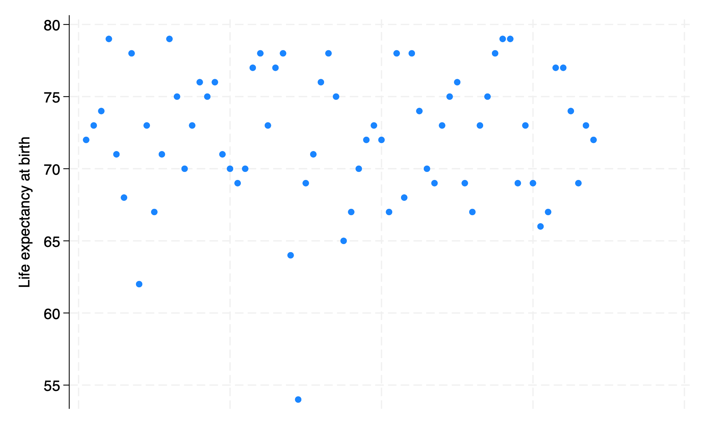

notes#
04/04/2023#
1. hub#
learned about GitHub in my data science class by Caffo in the winter/spring of 2023
I’m now moving all my documents online
No longer beholden of any local machine or the software packages installed on it!
2. vscode#
I may never use my iMac’s terminal again!
This is a sweet and beautiful medium between git & hub
3. local#
~/dropbox/0g.κοσμογονία,γ/1.cosmogony/existentialdread->libro @jhustata
~/dropbox/2e.πρᾶξις,σ/3.acetyl.neurotrans/vscode.ds4ph/jhustata->book @jhustata
~/dropbox/4d.∫δυσφορία.dt,ψ/1.shibboleth/dad->idioms @muzaalefamily
~/dropbox/4d.∫δυσφορία.dt,ψ/4.describe/mybook->book @muzaale
~/dropbox/4d.∫δυσφορία.dt,ψ/5.four.hope/literary->criticis @muzaale
~/dropbox/6b.ομορφιά,β/3.wide.r2.climb/this.life->iago.github.io @iagouganda
~/dropbox/7a.τάξη,α/4.aesthetic/stata->kitabo @jhustata
~/dropbox/7a.τάξη,α/1.epistemology/class->notes @jhustata
4. y#
Ms. Linder (Senior-most fitness instructor)
Romeko Morton (City of Baltimore Engineer)
Tommy (ShaQ Doppelgänger, Pelvic radiation)
Frank (Similar Dx, 65yo)
Daytona (Lifeguard)
Nina (Lifeguard, Tips for Dolphin 🐬)
Daytona (Swimmer, Black weights) ** Mixup with a one Nina?
Liz (Former Hopkins RN🧑⚕️, 2 MSc, 1 PhD)1
Aiko (ie Geiko, Japanese-American at SICU, dob 04/24***)
Buddy (Jeffs Buddy)
Jeff (Red head swims with Buddy)
Hugh (remembers me pretty well)
Patrick (Towson psy professor, ☘️ tattoo on deltoid)
Ed (Lime hair, student, talks a lot)
Luc (Wishes to have a coffee with me, but is distractible)
Julie (Flowery purple/blue/red swim cap, from Duluth, MN)
Maggie (Sky-blue swim cap, smiling, is not Julie and is younger)
David (CMS but retiring this year.. 2022!!)
Natalie (Sister, tattoos, earplugs, nose-ring)
Valentine (redhead, off-white, dreads, with Nat)
Weiwei (Infectious diseases postdoc, 8th floor)
Arthur (Liberia, Texas)
Jeremiah (Son is a swimmer)
Ethan (Salt & pepper, Bushy beard, congenital arthritis)
Ray (Somali/Asian, young, swim team, knew me!!)
Dialo (Lifeguard, chill, quiet)
Eric (Lifeguard, weekdays)
Sean (Lifeguard, weekends)
Vincent Daily (Bold, regular, introverted, only recently exchanged names, wishes to learn flip)
Lauren (super consistent swimmer, in her 40s?)
Todd (talk lawyer from old swim team)
Stephen (Emory MPH, BSPH PHD, EH)
Keith (Biker, had herniotomy at Hopkins)
Brian (young fella, struck my head, made progress)
Calvin (singing lifeguard)
Monica1 (stress fracture metatarsal)
Ron (Mistook him for Patrick)
Gary (Talks of Idi Amin, friend Muwanga)
Sali/Abi/Sali/Abi/Monica2 (partner)
Chris (Teacher, goatee, tattoo “)
Miriam (Nickname4me: splasher; “it’s enjoyable watching you swim; ~60yoWW)
Mack (72yo,ggranddad, borat assistant?)
Kayla (pyt, front desk)
04/05/2023#
5. todoby#
gaby/andrew papers
atc annual fee
hotel
flights
euro aging conferences (get sharon’s link)
tuition remission confirmation
vincent offer
etc…
6. jupyter#
a). hub: repo -> utimately the name of jupyter-book
b). vscode
mouse -> linux
terminal -> vscode
colab -> vscode
rstudio -> vscode
c). git
7. pages#
8. code#
jupyter-book create gitname
git clone https://github.com/book
cp -r gitname/* book
cd book
git rm old1.file old2.file old3..file
git add ./*
git commit -m "context"
git push
ghp-import -n -p -f _build/html
9. r(mean)#
In this class: clarify the difference betweeen r() & c()
Say r(N) vs. c(N)
Return vs. current
One returns values after some command
While the other is just the current status
As such, a multivariable regression with missingness in its variables
May yield r(N) \(\neq\) c(N)
10. ph.340.700#
global workdir ~/dropbox/7a.τάξη,α/4.aesthetic/
https://www.stata.com/manuals/gsub.pdf
/users/d/stata/profile.do
content:
#delimit ;
log using `: display %tCCCYY-NN-DD-HH-MM-SS
Clock("`c(current_date)' `c(current_time)'","DMYhms")',
Clock("`c(current_date)' `c(current_time)'","DMYhms")',
name(default_log_file)
#delimit cr
Topics discussed in class:
content up to you!
for me: pwd & shell
batch mode, remote computing
runtime, memory, disk usage
smart approaches to problem
raw.githubusercontent.com for tasks
get -b & stata commands to work on terminal
.html and how it is basis of course book
why stata? its expensive and i used jupyter/python for book on stata!
perks of workflow: git -> vscode -> hub
set up in reverse order: hub -> vscode -> git
zoom video link for session -> class book
Passcode: !$.0*zwy
10. hierarchy#
General Steps we can strive for as analysts (depending on your role in the project)
Initial results to present to your co-lead or immediate mentor
Work iteratively with co-lead mentor to finalize the analysis/figures/tables (be writing methods now too)
Present to a higher mentor like Bill, Christine, the PI on the proposal (these are more polished slides with title slide, motivation, objectives, methods, and results)
If approved, finalize the methods/results text in paper draft
Start writing intro/discussion (if first author, its time to start on these), if not first, make sure first author has everything they need to write the rest of the paper (sometimes we write results as well- we are the most familiar with how our results should be interpreted, so i recommend writing the results)
Send to co-authors
Submit
11. macros#
local system macros
1. name
2. content
3. c()
4. r()
5. e()
user-defined macros
local, e.g. `m_iqr'
global, e.g. ${workdir}
12. servers#
Need two more local servers
Designing, running apps, websites
Part of grant but unanticipaited needs
Caffo class and multiple gitHub accounts proof!
13. % batch#
how to approach wk1.ph.340.700:
% stata -b do wk1.ph.340.700.do
Background:
advanced Stata project
Methods:
Stata code
.Md, .html output
post to class book
Guided by teaching team
From week 3-8
Joint project by entire class
Results:
https://jhustata.github.io/nhanes ~/nhanes/2023
Conclusion:
must be improvement on previous year!
Acknowledgements
previous cohort
References
14. chatgpt#
book %
xcrun: error: invalid active developer path (/Library/Developer/CommandLineTools)
missing xcrun at: /Library/Developer/CommandLineTools/usr/bin/xcrun
Based on the input provided, it appears that you are trying to use the git rm command to remove multiple files from a Git repository. The list of files you provided includes various image files (practice.png, generalpj2jpg.jpeg, dadlogo.png, dadlogo.jpg), notebook files (notebooks.ipynb, hub.ipynb), markdown files (markdown.md, markdown-notebooks.md), and a log file (log).
The error message xcrun: error: invalid active developer path (/Library/Developer/CommandLineTools), missing xcrun at: /Library/Developer/CommandLineTools/usr/bin/xcrun is related to the Command Line Tools for Xcode, which are required for some Git operations on macOS. It seems that the Command Line Tools are not properly installed or configured on your system.
To fix this issue, you can try reinstalling the Command Line Tools for Xcode using the following steps:
Open Terminal on your macOS system.
Run the following command: xcode-select --install. This will prompt you to install the Command Line Tools for Xcode.
Follow the on-screen instructions to complete the installation.
Once the installation is complete, try running your git rm command again.
If the issue persists, you may need to check your Xcode installation and make sure it is properly configured. You can also try resetting the developer path using the following command: sudo xcode-select --reset.
Note: You may need administrative privileges to install or configure the Command Line Tools for Xcode. If you encounter any issues or need further assistance, it’s recommended to consult the official documentation or seek help from a qualified macOS expert. Remember to always backup your important files before making any changes to your system. <|endoftext|>
problem solved!
15. push#
The human race is frantically pushing its accumulated knowledge to the cloud
e.g.,
git -> vscode -> hubArtificial intelligence, as it were, is frantically training on it!!
04/05/2023#
16. git#
~/dropbox/../note.md: WARNING: document isn't included in any toctree
17. push#
a) name.github.io (READ.ME or index.html)
b) repo (collaborators may push)
c) book
d) git clone
e) cp -r master/* origin
f) cd origin
g) git rm
h) git add
i) git commit -m
j) git push (error about access rights)
k) ghp-import
l) settings > gh-pages > branch ghp (if no page appears)
18. grinder#
simple manual coffee grounder dead
resorted to blending the beans with trail mix
and grinding them by a process I one might refer to as
chewing
19. sankey#
very well received gtpci phd presentation (q&a from faculty, peers)
sankey is now colorful, interactive (thanks to chatgpt)
reveals to me that populations very imbalanced in size
20. cltx#
denominator (kidney transplant recipients); person-place
numerator (outcomes: dgf, graft failure, death); time
hypothesized risk-factor
methods to hold everything else constant, as ‘twere
too many moving parts and no clear narrative…
21. -b#
Stata [-option [-option […]]] [stata_command]
powerful command: sudo find / -name StataSE -type f
Password:
find: /Library/Application Support/com.apple.TCC: Operation not permitted
sudo find / -name StataSE -type f 2>/dev/null
/System/Volumes/Data/Applications/Stata/StataSE.app/Contents/MacOS/StataSE /Applications/Stata/StataSE.app/Contents/MacOS/StataSE
not a directory!
/System/Volumes/Data/Applications/Stata/StataSE.app/Contents/MacOS/StataSE [arguments]
MacOS % ./StataSE -e “di 1+1”
chmod +x ./StataSE
cd /Applications/Stata/StataSE.app/Contents/MacOS
ls -l
stata-se -e “di 1+1”
ls -l
cat stata.log
stata-se -e “di c(current_date)”
04/06/2023#
22. nhanes#
nhanes.ado
rudimentary
advanced class?
23. swim#
best swim ever (i seem to say this every day)
he under-water month of march has paid off
however, there’s still lots of room for improvement!
24. gtpci#
Dear GTPCI Friends and Family,
We hope you are doing well! Thanks for being part of the GTPCI Program. We need your help. This should take about 10 minutes of your time. Attached is a summary of the curriculum update that we are planning for AY 23-24.
Based on the GTPCI Curriculum Retreat held in December at Mt. Washington, the GTPCI Program is introducing 4 pathways next year. A summary of those 4 pathways is attached.
As a reminder, all GTPCI students (independent of their chosen pathway) will be taking a set of Foundational Courses consisting of 51 credits (see attached handout page 4).
MHS students will need to take an additional 19 credits that are pathway-specific to achieve a total of 70 credits to graduate.
PhD students will need to take at least 14 credits in their 1st year and 5 additional courses in their 2nd/3rd years to graduate.
These additional credits will be coming from pathway-specific courses. Some of these pathway-specific courses are required (for either MHS, PhD, or both) and some are electives.
For all the courses listed, we are creating a master document that lists the term that each course is offered and the pre-requisites for that course (an example is listed in the Appendix of the attached document- it is still incomplete).
Please look at the attached summary for each of the pathways (feel free to focus on the pathway that is relevant to you) and help us answer the following questions:
Are the pathway competencies listed reasonable? Did we miss any important competency for that pathway? [remember that there are general competencies for GTPCI that apply to students of all pathways; the competencies listed here are pathway-specific competencies].
Are the required pathway-specific courses (if any) for MHS and PhD students acceptable? Do you think we should require any additional courses for either MHS or PhD (please specify if you think a course should be required for MHS, PhD, or both).
Are the pathway-specific elective courses reasonable? Did we miss an important class for that pathway?
We know that we will experience some unanticipated obstacles when we introduce the pathways next year. We will learn from them to ensure a smooth transition for the following year.
hanks so much! XXX and XXX
XXX XXX, MD, PhD
Professor of XXX
Division of XXX
XXX XXX University School of Medicine\
25. structure#
Backgound: Pathophysiology
Methods: Datascience
Results: Clinicaltrials
Conclusions: Healthservicesresearch
Acknowedgments: Undifferentiated
References: GTPCI 1993-2023
26. gitcodehub 2#
git branch
git branch --set-upstream-to=origin/main
git pull --allow-unrelated-histories
git push
ghp-import -n -p -f _build/html
27. rasheeda#
work on project this weekend!
establish efficient workflow
not to spend > 3 hrs next time
04/08/2023#
28. patton#
übermensch
people
time
29. nhanes#
collaborative, didactic, template
30. vincent#
charm offensive
betsy, durand
most value!
31. artists#
type 1 artists use forebears as scaffold on which to plant their delicate new ideas
medium:
cosmic sound
chaos
noise
corelli, vivaldi
handel, bach
hadyn, mozart, beethoven
type 2 artists only find forebears useful as a source of building blocks
medium:
metaphysics
karl marx
friedrich nietzche
oscar wilde
type 3 artist:
medium:
time?
phase of career
epoch of life
in this type one witnesses transition from:
1->2 or
2->1 or
a cycle of such
32. ascesis#
3e.ἄσκησις,μ
to live on $5/d
from 04/09/23 - 04/14/23
while breaking records in the pool
33. kipchoge#
4:33:93/Mile
over 27 miles
34. smoke#
what a melody!
initially got me thinking suspended 4th
but later it occured to me that its founded on the 9th!
What’s the difference between sus4 and 11th chords?
The sus4 chord implies no 3rd in the chord. So the notes in the chord are 1-4-5. The 11th chord implies a 3rd (and a 7th and a 9th), so the tones are 1-3-5-7-9-11.
The 6 chord implies no extensions beyond the 6, so the notes are 1-3-5-6. The 13th chord implies the 7th, 9th, and 11th extensions, so the notes are 1-3-5-7-9-11-13.
Likewise, the sus2 chord implies 1-2-5, whereas the 9th chord implies 1-3-5-7-9.
If you play a C major triad on the piano and continue playing every other white key above the triad, you’ll get the (major) 7th, 9th, 11th, and 13th extensions
35. charmoffensive#
charm offensive
04/09/2023#
36. ds4ph.hw7#
This will be my first assignment done in a purely git -> vscode -> hub workflow:
Return an ipython notebook and python dash app with the following:
Write a python function that takes an X and Y vector and returns an estimated \(\beta_0\) and \(\beta_1\) from linear regression. Check your function versus one of the prewritten ones. Include this in code cells of your ipython notebook.
Using Python and basic numpy functions, fit a linear regression model to the kirby 21 dataset into colab for the left telencelphalon (predictor) to the right telencephalon (outcome). Also, do the same reversing the predictor and response relationship. Do a scatterplot of the left telencephalon (type 1 level 1) volume by the right. Do not hold out any data (there’s only 21 observations).
Consider a regression through the origin model Y=BX . What would be the impact on the estimate of B if we replaced X by cX where c is a positive constant? Write your answer in a markdown cell of your ipython notebook.
Let \(X_i\) be a group indicator so that \(x_i=I(i\in G_1)\) I.e. takes the value 1 when \(i\) is in group 1 and 0 if i is in group 0. Consider optimizing \(\sum_i \frac{1}{n}(Y_i − \beta_0 - \beta_1 X_i)^2\). If \(\hat Y = \hat \beta_0 + \hat \beta_1 X\), argue that \(\hat Y\) is the group mean for group 1 if \(X=1\) and the group mean for group 0 if \(X=0\). You can either make a text argument in a markdown cell, or create a simulated example and show that the results holds.
Argue that if you take the vectors \(Y\) and \(X\) and divide them by their standard deviations (respectively), the slope for either regressing \(Y\) on \(X\) or \(X\) on \(Y\) is simply the correlation.
Consider the logistic curve
Use streamlit to create a web page that shows the impact of changing \(\beta_0\) and \(\beta_1\). That is, it takes in two inputs, as sliders, \(\beta_0\) and \(\beta_1\), and plots the resulting logistic curve.
% cd ~/dropbox/2.../3.../vscode.ds4ph/vscode.vscode.202305/hw7
% echo "Abimereki Muzaale" > hw7.ipynb # doesn't work, use dropdown menu > new file
37. ph340.700#
notebook
html
website
sharing
documentation: markdown
code: python, stata?
reproducibility&open-science: \(R^3\)
38. nhanes-alpha#
tailor to Stata edition
Stata/BE, SE, MP
Stata/IC for some
39. babysteps#
jupyter nbconvert –to html –no-input ggg.ipynb
40. jason haw#
what a perfect fit for 340.700!!!
python vs. r vs. stata
collaboration,publication,etc
Stata admit that they’re behind in the game
What about SAS?
These platforms are open, thus the exponential growth of their communities
And contributors!!!
For this class: jupyter-book and bookdown will “challenge” the advanced students to explore and test the very limits of Stata :)
Each year will have access to the online books of the previous years
No reinventing the wheel!!!!
41. todoby031023#
340.700 book:
articulate group task
collaboration
github
publishing: jupyter-book, bookup
where does stata stand?
jupyter-book create & build 100% from terminal
42. tight-structure#
background:
turning point in the history of HCV Rx in 2013.
AT $95k for curative dose, was clear to all insurance providers that this was cheaper than low cost, ineffective, drugs for life
methods:
durand concurred that in her practice everyone eventually received treatment inspite of initial delays for SOME.
So what would motivate a qualitative study when everything was pointing towards taking the new meds???
results:
what is reported is plausible and consistent with what we’ve known from 2013-2023.
so what exactly was the knowledge gap?
conclusion:
and that is my question. maybe the background and intro should better align with anxiety about access to what is without a doubt a “miracle” cure!
acknowledgments: *quantiative research? qualitative cannot keep on failing to acknowledge this!
references: *providers, providers who themselves received an HCV organ, etc,
x
Made no mention of the HCV Rx
Hepatitis C infection is treated with antiviral medications intended to clear the virus from your body. The goal of treatment is to have no hepatitis C virus detected in your body at least 12 weeks after you complete treatment
persons: English-speaking patients
place: jhh
time: 2017-2021
Deep dive? Semi-structured interviews?
ZERO mention of the Rx????
Curative Rx arrived in 2013!!
Basically this study found that patients were motivated by the efficacy of HCV Rx
That they faced no alternative but death
Nadine Brown
Hannah Sung
43. conferences#
2023 Stata Conference
StataCorp
20–21 July 2023, Stanford, CA
APHA 2023 Annual Meeting
American Public Health Association
12–15 November 2023, Atlanta, GA
Booths: 905, 907, 909
2023 SER Conference
Society for Epidemiologic Research
13–16 June 2023, Portland, OR
Attending from StataCorp: Chuck Huber, Director of Statistical Outreach
https://www.nature.com/nataging/conferences
44. wk3 ph340600#
creat dofile: structure, indentation, annotation
run the script: do dofile.do or click do
find your output: pwd or cd /path/outputfolder
macros: name, content (some derivative of a return value)
programs:
45. crunchtime#
atc membership
flight
hotel
bge 98 ooo
att 98 ooo
comcast 123 xxx
gs -> 155.60 xxx
visa -> 169.00 xxx
04/13/2023#
46. musik#
Annuŋŋamya
theme & variations:
theme from ayf
variation4
invite ugandan artists to contribute variations
we need to reach 99 sui generis variations on this most beautiful theme from inspired by Psalm 23
47. amy#
Kyle Jackson, Characterizing the landscape and impact of infections following kidney transplantation. 2021
Super- mario game
Almost dead, out of juice
Then hit this coin – Abi – that completely changed the game!
48. usurp#
{kind=link}
49. cece#
Outstanding scholarly work from fam :)
50. fawaz#
We need to employ 2 additional analysts
They are both TAs in my current class
Absolutely outstanding (3\(\sigma\))
How much money do you have? Can we combine to make sure we are ok?
Lets do this as a safety net in case the powers that be at TRC are unresponsive!!!
Baltimore, MD
09:24 PM 04/13/2023
04/14/2023#
51. webapp#
Critique #2
Research plan: weaknesses
There is no information provided about pilot testing this on-line tool, nor refinement of the tool before pursuing a large-scale study through an R01 application. Since the career development plan seems abbreviated for years 4 and 5, this might be the ideal time to conduct pilot research on the newly developed tool, which could yield valuable preliminary data to support an R-award application at the end of the five-year period.
The other reviewers also believe this aim 3 (online risk tool) can be better developed Would you want me to make some revisions to the existing Aims 3 and then have you review them alongside these pink sheets?
52. τύραννος#
An individual who rose to power via unconstitutional or illegitimate means, usually not being an heir to an existing throne.
Such individuals were perceived negatively by political philosophers such as Socrates, Plato and Aristotle.
You betcha Nietzsche held these as the highest type: the übermensch!
Julius Caesar
Cesare Borgia
Napoleon Bonaparte.
04/15/2023#
53. numero-uno#
In the Stack Overflow 2022 Developer Survey
Visual Studio Code was ranked the most popular developer environment tool among 71,010 respondents
With 74.48% reporting that they use it:
I do too!!
54. v monét#
songwriting process: 18:50/28:04
melody
emotion
lyrics
55. influence#
Many african americans have musical sensibilities that are heavily influenced by their grand patents. This is a consequence of the social disadvantages that result in young babymomas and daddies and the outsourcing of parenting to grand parents.
One beautiful unintended consequence is a strong generation-to-generation aesthetic, where type-I artists build their craft on a scaffolding of the past generations.
56. love, control#
Ms. Lauren Hill
57. Honesty#
Open up to both Vincent & Johnathan about my:
preferences
constraints
vision vs. what is best for them.
Who knows where this conversation will lead???
04/16/2023#
58. killing me softly#
Lori lieberman: Great songwriter, ok performer
Robert Flack: Restructured Lori’s kadongo kamu, opening with the F-minor chorus in a brief circle-of-fifths progression, which comes off as a capella-like given the subtle Rhodes Piano but prominent Roberta vocals, initially solo-like, but ~~gradually &~~ magically suffusing the air with delicate harmonies from 9ths to 15ths, as we are ushered into a word-less wailing session, where a 1970s-style bass is fixed on the E-Flat dominant, accompanied by drums that skip a beat as they do in reggae.
Lauren Hill: Ancestral worship session. No worthy innovation or attempt at usurping Roberta!
59. edit wk3#
Show code cell source
import networkx as nx
import matplotlib.pyplot as plt
#import numpy as np
#import sklearn as skl
#
#plt.figure(figsize=[2, 2])
G = nx.DiGraph()
#G.add_node(" ", pos = (0, 3) )
G.add_node("regress", pos = (1, 9) )
G.add_node("sum", pos = (-3, 4.5) )
G.add_node("lincom", pos = (1, 4.5) )
G.add_node("r()", pos = (-3, 0) )
G.add_node("r()*", pos = (1, 0) )
G.add_node("local", pos = (-1, -4.5))
G.add_node("embed", pos = (-1, -9))
G.add_edges_from([ ("regress", "lincom")])
G.add_edges_from([("sum", "r()"), ("lincom", "r()*") ])
G.add_edges_from([("r()", "local"), ("r()*", "local")])
G.add_edges_from([("local","embed")])
nx.draw(G,
nx.get_node_attributes(G, 'pos'),
with_labels=True,
font_weight='bold',
node_size = 3500,
node_color = "lightblue",
linewidths = 3)
ax= plt.gca()
ax.collections[0].set_edgecolor("#000000")
ax.set_xlim([-10, 10])
ax.set_ylim([-10, 10])
plt.show()

60. aries#
{kind=link}
{kind=link}
04/17/2023#
61. calendar#
March 27-May 19, 2023 - Baltimore, MD Fourth Term
May 19-June 2, 2023 - Baltimore, MD Grades Due at Academic Registrars Office
June 3-7, 2023 - San Diego, CA American Transplant Congress
June 4, 2023 - Tijuana, BC One-day trip to Mexico
June 7, 2023 - Baltimore, MD Dentist Appointment (unable to reschedule)
June 19-23, 2023 - Baltimore, MD Summer Institute
July 20-21, 2023 - Stanford, CA Stata Conference
Reconcile with Paulo’s:
arrives May 24
leaves June 8
booked June 1-4
otherwise flexible
Proposed activities:
May 25 Washington DC
May 26-28, Hamilton, BD
May 29 Philadelphia, PA
June 4 San Diego, CA
June 5 Tijuana, BC
62. todoby042423#
R03/R21
IRB
Rasheeda
Vincent/Andrew/Johnathan
NHANES/Invoice/Final
DS4PH HW7-9
Consider ATC: June 3-6 (to honor June 7 appt)
When is Amy presentation?
Maybe Tijuana for June 3-4?
MD drivers license renewal
Calvin: next steps
63. ibtl#
2023: sui generis
Unprecedented roles
Mentoring, teaching, PhD
Thrown me off-balance, schedule
Return to relative normalcy after July
Grants will be my focus, publication (Mickey!)
Funding questions
Post-K award
But of course!
Fiscal year 2024
Cost-cutting measures (SoM)
1-Year time-frame
If we can mitigate some stuff before: keep Diane in loop
Output from Thesis -> preliminary data for applications
More than one: NIH/NIA by Oct with feedback score in Nov
When will you be hear back… with score?
So push for October: so that 1-year notice grabs you with estimate…
64. hilger#
9980 ft^2
12 units
833 ft^2/unit
\(or\)
50-11 x 196-9
65. death on the nile#
strength
will
cause
& means to do..
opportunity &
what is more: the disposition to… kill
motive
& means
66. chatGPT#
The error you are getting indicates that pd.read_fwf() is expecting a file-like object with a read method, but it is receiving a byte object instead.
To fix this issue, you can use io.StringIO() instead of io.BytesIO() to convert the content of the response to a file-like object that pd.read_fwf() can read. Here’s an updated version of your code:
investigate why this works seamlessly in interactive session but not when git is pushed to hub
import io
import pandas as pd
import requests
url = “https://wwwn.cdc.gov/nchs/data/nhanes3/1a/adult.dat” response = requests.get(url, timeout=50) # does this timeout fix my issues? content = io.StringIO(response.text) df = pd.read_fwf(content, widths=[5,2,1,2], header=None, encoding=”utf-8”) df.columns = [“SEQN”,”DMARETHN”,”HSSEX”,”HSAGEIR”] df.head()
Here, we’re using io.StringIO() instead of io.BytesIO() to convert the response content to a file-like object that pd.read_fwf() can read. Note that we’re also using response.text instead of response.content to get the response content as a string, since io.StringIO() expects a string.
67. baptiste#
68. verbs#
to do
to be
to have...
Of all that is written, I love only what a person hath written with his blood.
Write with blood, and thou wilt find that blood is spirit.
It is no easy task to understand unfamiliar blood; I hate the reading idlers.
He who knoweth the reader, doeth nothing more for the reader.
Another century of readers—and spirit itself will stink.
Every one being allowed to learn to read,
ruineth in the long run not only writing but also thinking.
Once spirit was God, then it became man, and now it even becometh populace.
He that writeth in blood and proverbs doth not want to be read, but learnt by heart.
In the mountains the shortest way is from peak to peak, but for that route thou must have long legs.
Proverbs should be peaks, and those spoken to should be big and tall.
69. class700#
No-show for their appointment
Motivations: Jupyter notebooks https://jhustata.github.io/book/ggg.html
Stata comments & annotation vs. jupyter notebooks with code-blocks & markdown
70. group#
Wafa: from 3/10 to 5/10
71. deus ex machina#
death on the nile coda
god emerges from the machine…
brings complete resolution to the plot!
sonata form a similar euripidean contrivance?
cantata has mostly been free of this corruption
72. fin#
I was thinking of Molière:
‘La grande ambition des femmes est d’inspirer l’amour.’
Show code cell source
import networkx as nx
import matplotlib.pyplot as plt
#import numpy as np
#import sklearn as skl
#
#plt.figure(figsize=[2, 2])
G = nx.DiGraph()
G.add_node("truth", pos = (0,700) )
G.add_node("women", pos = (-2000, 960) )
G.add_node("nietzsche", pos = (2000, 950) )
G.add_node("ambition ", pos = (-3000, 550) )
G.add_node("mrwh", pos = (3000, 550) )
G.add_node("beauty", pos = (-1900, 150) )
G.add_node("stendhal", pos = (1900, 150) )
G.add_node("inspire", pos = (0,0))
G.add_node("love", pos = (0, -475))
G.add_node("pon de ri", pos = (0, -950))
G.add_edges_from([ ("women","ambition "), ("nietzsche", "mrwh")])
G.add_edges_from([("ambition ", "beauty"), ("mrwh", "stendhal") ])
G.add_edges_from([("beauty", "inspire"), ("stendhal", "inspire")])
G.add_edges_from([("inspire","love")])
G.add_edges_from([("love","pon de ri")])
nx.draw(G,
nx.get_node_attributes(G, 'pos'),
with_labels=True,
font_weight='bold',
node_size = 4500,
node_color = "lightblue",
linewidths = 3)
ax= plt.gca()
ax.collections[0].set_edgecolor("#000000")
ax.set_xlim([-5000, 5000])
ax.set_ylim([-1000, 1000])
plt.show()

04/18/2023#
73. all nite’a#
wrap up ds4ph:
hw7
hw8
hw9
74. coen brothers#
A shaggy dog on the very subject of meaningless planted in the middle of the film ironically seems to be the “moral” of the story, it’s amorality if you will
In the final moments of the movie, the point is made by a huge, black, menacing tornado en route with Larry’s son at school. It’s the Coen’s most powerful and emblematic deus ex machina: an uncaring, unfeeling force of nature that needs no reason to appear, a literal finger of God that will destroy anything in its path
Like the force of God in their films, the Coen’s are getting further away from the mortal trappings of their stories. Plot, resolution, character development, message — these elements still exist in their films but they’re becoming increasingly abstract and removed from the proceedings
In their disappointing new comedy Hail, Caesar!, Ethan and Coen have a point to make, but fail in their purpose.
Never is there much sense that any of this is building towawrd anything. A soviet sub appears at one point, but it would take a much larger deus ex machina to rescue this shipwreck.
75. gender#
Not surprising that one critic is male and the other female
Women, who we may suppose embody whatsoever one may call Truth, often demand that things have purpose
Men are more open to meaninglessness. The female equivalent of The Dude will never get a cult following.
Yet we have famous royals including King Solomon, Prince Hamlet, Friedrich Nietzsche, whose philosophy is of existential despair or the overcoming of such despair through creation.
76. joshua#
$160 depo
postdoc 07/01/2013-06/30/2016
fac 07/01/2016 -
note: annual appt letter
landlord confirmation $775 on 04/20/2023
silence from cece
77. ds4ph#
zoom link
78. maidsmd.com#
$433 first
$227 monthly
M-F: This Friday
Will call me before
Local: 410-761-7300:
Julie (410) 847-9145
Towson manager
$182/month for 3 months
Includes $25/month discount
Normal prices after expiration
isabel
yeimy: yeymi@maidsmd.com
claudia
call 24hr in advance to cancel
oustanding service, worth each penny!
79. dyndoc#
Lets push dyndoc
As close to Python’s jupyter-book and
R’s bookdown as is possible!
dyndoc nhanes-stmd.do, saving(nhanes.html)
04/19/2023#
80. annuŋŋamya#
Flowcharts have proven themselves good shepherds in relieving the anxiety of students in my classes, amidst the bewildering assault on their senses and confidence that my class material typically and deliberately is
Show code cell source
import networkx as nx
import matplotlib.pyplot as plt
#import numpy as np
#import sklearn as skl
#
#plt.figure(figsize=[2, 2])
G = nx.DiGraph()
G.add_node("workflow", pos = (0,700) )
G.add_node("jupyter", pos = (-2000, 960) )
G.add_node("dofile", pos = (2000, 950) )
G.add_node("python ", pos = (-3000, 550) )
G.add_node("stata", pos = (3000, 550) )
G.add_node("build", pos = (-1900, 150) )
G.add_node("dyndoc", pos = (1900, 150) )
G.add_node("html", pos = (0,0))
G.add_node("push", pos = (0, -475))
G.add_node("ghp", pos = (0, -950))
G.add_edges_from([ ("jupyter","python "), ("dofile", "stata")])
G.add_edges_from([("python ", "build"), ("stata", "dyndoc") ])
G.add_edges_from([("build", "html"), ("dyndoc", "html")])
G.add_edges_from([("html","push")])
G.add_edges_from([("push","ghp")])
nx.draw(G,
nx.get_node_attributes(G, 'pos'),
with_labels=True,
font_weight='bold',
node_size = 4500,
node_color = "lightblue",
linewidths = 3)
ax= plt.gca()
ax.collections[0].set_edgecolor("#000000")
ax.set_xlim([-5000, 5000])
ax.set_ylim([-1000, 1000])
plt.show()
81. ta’s#
general
rm help.ph34070071
rm help.t4pmzoom
rm tokenize.jasonhaw
announce lab on T as in-person
class content not identical to last years’
hw1 0. 1pt for correct .dofile name(everyone gets it), 1pt for correct .logname
quietly { }: 10 pt –> 4 for
qui, 3 for{, 3 for}if 0 { }: 10 pt –> 3 pt for
if, 3 for0, 3 for{, 1 for}if 1 { }: 10 pt –> 3 pt for
if, 3 for0, 3 for{, 1 for}quietly, if 0 indentation: 10 pt
if, code-block indentation: 10 pt
alignment of all
iflodestars: 10 ptcomments/annotation at each
if: 10 pt (if 3 blocks, then each is 10/3 pt; if 2 blocks,then each is 10/5 pt)more detailed annotation at
if 0: 10 pt (general statements about the purpose of the entire .do file).log file specified in
if 1block: 10 pt (capture log close, log using, log close: ommission of anyone is -10/3)one point of ten (1/10) for each of these substantive issues:
q1 1pt:
local macocontent appears in logfile, embedded in sentenceq2 1pt:
local macocontent appears in logfile, embedded in sentence: 1/2 pt for male, 1/2 pt for femaleq3 1pt:
local macocontent appears in logfile, embedded in sentence: 1/2 pt for male, 1/2 pt for femaleq4 1pt: 1/3 pt for
generate htn, 1/3 pt forlabel define, 1/3 pt fortabulate htnq5 1pt: 1/3 pt for
capture program drop, 1/3 pt forprogram define, 1/3 pt forend; 5 pt max bonus for correct outputq6 1pt: 1/3 pt for
lincom, 1/3 pt forreturn list, 1/3 pt for any(r); 5 pt max bonus for correct outputq7 1pt:
local macocontent appears in logfile, embedded in sentence: 1/2 pt forr(N), 1/2 pt forc(N)q8 1pt: writes sentence 1/2 pt, includes estimated time 1/2 pt
jianan
noshow
unresponsive
82. mickey#
write a grant proposing your original phd stuff as a pilot
larger u01 with hopkins as data-coordinating/ai-building center
this can be your career plan and grow it over next 20 years :)
83. city#
I live in the inner city, next to graffiti
Which might look shitty, but is actually pretty
And some would even say witty,
So… I’m totally down wit’ it!
04/21/2023#
84 love#
86 todoby04282023#
ATC
BGE
Xfiniti
Visa
04/22/2023#
87 haydn#
Passcode: +F!U77Xz
88 vickings#
piers morgan hilarious 3:33/15:22
Who is gonna pay me and my family reparations for what the Vikings did to us?
89 coolstuff#
coefplot //idea from R
nmissing //install package
here are the references
90 arking#
talk to HR (Diane Call) or admin (Diana Brown)
how much would it cost me to hire him
is he still in the system anyway?
91 control#
old testament
god creates man
loses control
gets pissed
new testament
sends a fixer
mixed results
ongoing drama
before chatGPT
man creates ai
loses control (fiction)
gets pissed (fiction)
sends a fixer (fiction)
mixed results (fiction)
after chatGPT
openai creates chatGPT
goes live in 12/2022
1m subscribers in 1 month
100m subscribers in 2 months
tech titans and elon musk panic
92 jvalentine#
listen at 26:00/2:42:42
what makes a banger?
relatable to one who:
can’t sing
or is drunk
93 spjd#
sekimpi
nicolas
us, india, etc.
04/23/2023#
94. hand#
play the hand you are dealt whether it be:
melody
cards
life
they yield infinite possibilities:
harmonies
plays
tasks
case in point:
annuŋŋamya
95. wagner#
symphony in c major, wwv 29
composed in 1832
he was only 19yo
thought it was beethoven’s 1st or 2nd
oh, the potential if he’d taken on the classical masters!
but instead of usurpation he invented his own aesthetic:
gesamtkunstwerk: chickened out against the big boys
96. hw1sol#
use as springboard for loops
#delimit ;
.dofile structure
if 0 { –> text, documentation > annotation
tidy summary of
pwd,r(mean),by,program definenow:
captureplus added flexibility withsyntax varlistanyways, hw1sol is a most succinct summary of the content of 1st half of term
created macros called
row1,row2,row3, …,row12in brief: macros
row1thrurow12the way to express it in code is:
forvalues i=1/12 { di `row`i'' }
lines 170-174 in your hw1 solution
97. whitney#
watching this brings clarity to my mind:
bobbi kristina brown, and every other child
must be raised by the village
never by their moma!!!
and this is how
it has been done
since the beginning of time
yet in these modern times
this age of unbriddled
das kapital:
family unit
american dream
suburban house
narrow ambitions
these things dominate
a renaissance is urgently needed
back to the spirit of sparta
some vestiges in the boarding-school system of the uk
98. beauty#
circle of fifths with brownstone
taking chances (opposite of circle of fifths)
playing games (mingling chromaticism & circles…)
gordon chambers (song writer)
i apologize - anita baker
brownstone - if you love me, in the game of love (my personal fave)
missing you - brandy, tamia, gladys knight, chaka khan
someone watching over you - yolanda adams
99. hierachy#
100. kim#
her life kris kross’ mine
same year of birth
and same state of birth
plus more nuance
damon thomas (babyface)
brandy (my fave in teenage)
kanye (warming up to him after a decade or so)
101 darkchild?#
102 ai#
sneak peak
103 oral#
104 eufa#
rma vs. man city may 9: odds 365 +200 leg 1, + 130 leg 2, man city
ac vs. inter may 10: odds 365 +170 leg 1, + 187 leg 2, inter
104 ph340700#
i can’t recognize a few folks
wog
jg
jm
sk
xz
email me: 0% for participation thus far
105 xinran#
trouble reproducing this: https://jhustata.github.io/book/ddd.html
split
destring
encode
similar trouble with hw1.q5
dx
notes that classmates don’t seem to have similar issues:
her “trumination” causes her to “overthink” things
wonders how she may “distribute the energy” away from one issue
constantly facing “decision trees”, which quickly get overgrown
is self-confessed \(3\sigma\) extrovert
responds to emails at 3am, maybe needing little in way of sleep
distracted from in-person class sessions on Th by meeting with mentor
otherwise is all-round charming
106. macro#
di "hello `c(edition_real)'"
name
content
04/24/2023#
107. aiko#
aiko birthday
email to weinberg y
cc aiko kodaira (insisted on it as her birthday gift)
Good morning,
I wish to express our frustration at the inconsistency in the pool-related services at the Weinberg Y. A number of us have very tight work-schedules with a narrow time-window from 5:00 AM - 6:30 AM to put in our 90min of lap-swimming.
When a lifeguard is late or a no-show our start to the day the day is disrupted. Unfortunately this has become a well-established routine at Weinberg and, as such, the first question I always ask the front desk on arrival at 5am is “do we have a lifeguard today?”
This isn’t a question I should ever be asking! Regardless of what difficulties you are facing in proving a consistent pool-service, the minimum your no-show lifeguards ought to do is send out a notification by 4am letting us know that the pool will not open.
Maybe this is too much to ask?
Abi
108. dawking#
top 5 rnb: 2:13:13/2:42:42
ribbon in the sky - stevie wonder
a song for you - donny hathaway
after the love is gone - earth, wind & fire
after all - al jarreau
get here if you can - oleta adams
109. joshua#
BoA: $775 from nite
GS: $799.25 ($775 + $24.25 processing fee); confirmed
However, only $593.90 charged by NBX* Campus Living Cntr
Deposit or rent, this first charge?
110. ds4ph#
begin: 5:30pm
~desktop/0g.κοσμογονία,γ/2.pantheon/python.ipynb
my
pwdfor interactive, exploratory, learning session
end: 5:30am
now able to run R in terminal, interactively
still unable to run R scripts in .ipynb
04/25/2023#
111. diamonds#
sons in netflix series rought diamonds
prodigal
orthodox
weakest
analogous to type I, II, III artists
titanic (i am dynamite?)
classical
romantic
god father series
michael
sonny
fredo
my emergent credo:
tameth
whineth
hideth
112. non-Hodgkins#
b-cell
cd20+
cd138-
113. ds4ph#
114. torch#
Show code cell source
import networkx as nx
import matplotlib.pyplot as plt
import numpy as np
import sklearn as skl
#plt.figure(figsize=[2, 2])
G = nx.DiGraph()
G.add_node("X1", pos = (0, 5) )
G.add_node("X2", pos = (1, 5) )
G.add_node("X3", pos = (2, 5) )
G.add_node("X4", pos = (3, 5) )
G.add_node("X5", pos = (4, 5) )
G.add_node("X6", pos = (5, 5) )
G.add_node("X7", pos = (6, 5) )
G.add_node("X8", pos = (7, 5) )
G.add_node("H11", pos = (1.4, 4) )
G.add_node("H12", pos = (2.8, 4) )
G.add_node("H13", pos = (4.2, 4) )
G.add_node("H14", pos = (5.6, 4) )
G.add_node("H21", pos = (2.1, 3) )
G.add_node("H22", pos = (4.9, 3) )
G.add_node("H31", pos = (1.4, 2) )
G.add_node("H32", pos = (2.8, 2) )
G.add_node("H33", pos = (4.2, 2) )
G.add_node("H34", pos = (5.6, 2) )
G.add_node("H41", pos = (0, 1) )
G.add_node("H42", pos = (1, 1) )
G.add_node("H43", pos = (2, 1) )
G.add_node("H44", pos = (3, 1) )
G.add_node("H45", pos = (4, 1) )
G.add_node("H46", pos = (5, 1) )
G.add_node("H47", pos = (6, 1) )
G.add_node("H48", pos = (7, 1) )
G.add_edges_from([ ("X1", "H11"), ("X1", "H12"), ("X1", "H13"), ("X1", "H14")])
G.add_edges_from([ ("X2", "H11"), ("X2", "H12"), ("X2", "H13"), ("X2", "H14")])
G.add_edges_from([ ("X3", "H11"), ("X3", "H12"), ("X3", "H13"), ("X3", "H14")])
G.add_edges_from([ ("X4", "H11"), ("X4", "H12"), ("X4", "H13"), ("X4", "H14")])
G.add_edges_from([ ("X5", "H11"), ("X5", "H12"), ("X5", "H13"), ("X5", "H14")])
G.add_edges_from([ ("X6", "H11"), ("X6", "H12"), ("X6", "H13"), ("X6", "H14")])
G.add_edges_from([ ("X7", "H11"), ("X7", "H12"), ("X7", "H13"), ("X7", "H14")])
G.add_edges_from([ ("X8", "H11"), ("X8", "H12"), ("X8", "H13"), ("X8", "H14")])
G.add_edges_from([ ("H11", "H21"), ("H11", "H22")])
G.add_edges_from([ ("H12", "H21"), ("H12", "H22")])
G.add_edges_from([ ("H13", "H21"), ("H13", "H22")])
G.add_edges_from([ ("H14", "H21"), ("H14", "H22")])
G.add_edges_from([ ("H21", "H31"), ("H21", "H32"), ("H21", "H33"), ("H21", "H34")])
G.add_edges_from([ ("H22", "H31"), ("H22", "H32"), ("H22", "H33"), ("H22", "H34")])
G.add_edges_from([ ("H31", "H41"), ("H31", "H42"), ("H31", "H43"), ("H31", "H44")])
G.add_edges_from([ ("H31", "H45"), ("H31", "H46"), ("H31", "H47"), ("H31", "H48")])
G.add_edges_from([ ("H32", "H41"), ("H32", "H42"), ("H32", "H43"), ("H32", "H44")])
G.add_edges_from([ ("H32", "H45"), ("H32", "H46"), ("H32", "H47"), ("H32", "H48")])
G.add_edges_from([ ("H33", "H41"), ("H33", "H42"), ("H33", "H43"), ("H33", "H44")])
G.add_edges_from([ ("H33", "H45"), ("H33", "H46"), ("H33", "H47"), ("H33", "H48")])
G.add_edges_from([ ("H34", "H41"), ("H34", "H42"), ("H34", "H43"), ("H34", "H44")])
G.add_edges_from([ ("H34", "H45"), ("H34", "H46"), ("H34", "H47"), ("H34", "H48")])
#G.add_edges_from([("H11", "H21"), ("H11", "H22"), ("H12", "H21"), ("H12", "H22")])
#G.add_edges_from([("H21", "Y"), ("H22", "Y")])
nx.draw(G,
nx.get_node_attributes(G, 'pos'),
with_labels=True,
font_weight='bold',
node_size = 1000,
node_color = "lightblue",
linewidths = 3)
ax= plt.gca()
ax.collections[0].set_edgecolor("#000000")
ax.set_xlim([-.5, 7.5])
ax.set_ylim([.5, 5.5])
plt.show()

115. autoencoders#
missing data
bootstrap
cryptography/disclosure risk
review 04/25/23 ds4ph recording
116. cobb#
convert
best!
04/26/2023#
117. arsenal#
today: 1 -182 x +350 2 +450
epl: -450 man city, +333 arsenal
and the streets have spoke
they were right: 4-1
118. mylife#
X1 worship/revere
X2 son
X3 brother
X4 playmate
X5 classmate
X6 aquaintance
X7 friend
X8 student
H11 organist
H12 pianist
H13 heaven-bound
H14 co-instructor
H21 rugby-coach
H22 prefect
H31 self-conscious
H32 lover
H33 navel-gazer
H34 decadent
H41 md
H42 mph
H43 phd
H44 faculty
H45 mentor
H46 teacher
H47 researcher
H48 swimmer
119. reverence#
fave hymn
very engaging harmonies
deeply poetic verses
{kind=link}
120. l’homme#
moyen
weak
121. eli#
122. xenotx#
05/08/2023
12-1pm
04/27/2023#
123. text#
import nltk
sentences = nltk.tokenize.sent_tokenize(note) words = nltk.tokenize.word_tokenize(note) for i in range(3): print(sentences[i]) print(words)
identify geriatric syndromes in a process of unsupervised learning
EHR from 2013-2023 (e.g. Kaiser Permanente, Hopkins)
footprints left in large databases not available for most research
this is a major innovation that i’ve gots to pilot!
124. emails#
check for conflicts!!!!!!!!!!!!!!!!!!!!!!!!
diana call
fawaz (diana call vs. diane brown)
hotel, flights, conferences
vincent emergency
betsy, durand
class700 office hour
rasheeda response
cltx ***
irb
nhanes invoice
ds4ph 7-9 ***
amy presentation
md drivers licence
tijuana
calvin
arking
voice memos
wagner neatly fits without
find henry lang essay on mozart at 250
email noshow class700s
kajjimbi, kase
i say rejoice: nltk
xujun gu
ping
asma rayani
mahanna elsheik
cris/gtpci
amy chang
04/28/2023#
125. meetings#
01:30 Mahanna
02:30 Mozart at 250
04:00 Calvin
05:00 Arking
06:00 Cltx
06:30 NHANES invoice
07:00 Cris
08:00 Diana/Vincent
09:00 Kase/Kajjimbi
10:00 Fawaz, Betsy/Durand
12:00 Class700
14:30 Amy
15:30 Asma
16:30 Xujun
17:30 MD license
18:30 Rasheeda
20:00 Fawaz
126. catchup#
todoby
emails
other
127. remember?#
act one 1:45/4:49
secrets about
hardier sex
128. describe#
john singleton
tyler perry
david simon
rich harrison
raphaelsanzio
general patton
richarc ii
verzuz
elizabeth truss
pearl of africa
homerΟμηρος
john falstaff
julius caesar
epicurus hamlet
daft punk
cornel west
empedocles
gaius cassius
democritus
aristotle
armondo iannucci
oscar wilde
tucker carlson
hamlet dane
big lebowski
kevin duncan
anthony kennedy
heraclitus ephesus
epilogue
aléjandro iñarritu
dionysus
st. paul
linda fried 20747
sigmund freud
lucy-fa de telos
james watson
mohan kiwanuka
théophile gautier
augustine hippo
jeff bezos
gangubai kathiawadi
worthy adversaries
129. dropbox#
0g.κοσμογονία,γ
cosmogony
pantheon
dna.origins
germline
zero.woman
1f.ἡἔρις,κ
ontology
theomachy
histone.steroids
forecast
one.adversary
2e.πρᾶξις,σ
strong
warfare
acetyl.neurotrans
explain
two.changeable
3e.ἄσκησις,μ
weak.oppressed
peace.guilds
transferase.muscle
xplicate
three.faith
4d.∫δυσφορία.dt,ψ
shibboleth
dystopia
expression.skeleto
describe
four.hope
5c.φάρμακον,δ
plus.ça
opium.utopia
metabolome.diet
change
five.love
6b.ομορφιά,β
revelation
powerwill
wide.r2.climb
become
six.telos
7a.τάξη,α
epistemology
hall.of.fame
association.rank
aesthetic
seven.comfort
04/29/2023#
130. inflection#
uc irvine has a position
vincent should submit app by nonday
the uci folks understand the process quite well
hr will offer job and release necessary info or certification
let vincent call fawaz at 9:00am PST tomorrow
fawaz used Diane Brown, not Diana Call
\(48/hr\) + 34% fringe -> \(70k\)?
with f->60%, a->40%
hopkins hires, uci subcontracts
if f->100%, comes to $90k
may ask diane brown what lowest pay for v is
she can find the code for this
f & a -> email diane brown on monday
r03 is exclusively for k08/k23
use to support analysts, extension of grant, etc
its sort of guaranteed money
because it is non-competitive
r21 is competitive; may subsequently apply for it
v !-> trc, but 100% -> f&a
asn may 23 abstract
131. amy#
Use active voice throughout:
We did this, then we did that
NOT this was done, then that was done
Great table1 that is native to .PPT:
But highlight one item at a time, when you speak about it
NOT three items simultaneously; no one can process all that at once
And you have an additional minute!!
Crude cumulative incidence:
I’ve never heard of this term before
Report a cumulative incidence or not at all, but there’s nothing like “crude” incidence
How did you get these numbers? Kaplan-Meier? If so, then give us a graph!!!!
Figure 1 = Model 1; Figure 2 = Model 2
Give each a name:
Predonation risk (Model 1); mostly useful at donor evaluation and during the consent process
Postdonation risk (Model 2); useful for postdonation vigilance
You talked of tests for interaction in your model
Was this motivated in the background section?
If not then completely eliminate that stuff from your talk
Do not surprise us with new ideas like ADI in the results; motivate them in the background or remove them!
To recap:
Show more interest in what you are presenting by TAKING YOUR TIME AND SAVORING IT
We in the audience could tell that you couldn’t wait to get done :(
Use highlighted boxes to HIGHLIGHT one-item-at-a-time
*Never, EVER highlight more than one item at a time: you have a WHOLE extra minute, and less content!
It’s perplexing to the audience when you do that; our delicate, distractible minds can only take so much at a time
04/30/2023#
132. source#
weihenstephaner (hefe weisßier, vitus)
st. bernardus abt 12
rocheforte 10
orval
3 fonteinen
saison dupont
133. fav#
jhu analysts $46800, $22/hr
adds up to $25k at 100% effort
its $21k at 80% effort
f wants this analyst and i’m collaborating with him
so it becomes cost-efficient, this arrangement
talk to my post-award manager
134. constraints#
self-imposed
neglected old customs
origin of aesthetics
put my shackles off my feet so i can dance? or,
dance in chains as one born under the sway of etiquette
freedom in fetters – a princely freedom
prince harry doesn’t get it and is thus not aesthetical
jhustata
book chapters
.dofile right margin
if xxx {code-blocksbare minimum of green annotation text
absolutely no
///line continuationincidental discovery of
*/*/style line-continuation instcox.adov 06mar2023spurred even more innovations including:
local q1p1: di "a very long string1, the first half of one mega string" local q1p2: di "a very long string2, the second half of one mega string" di "`q1p1` `q1p2`" //concatenate
mechanism by which tradition -> innovation
135. innovate#
teaching
2 classes in spring
1 class in the summer
student
1 class in the spring
mentoring TRC
working on doctoral thesis
completing grant research
how to find time to apply for grants?
absolutely critical that i hire!!
136. grants#
r03/r21 deadlines
feb 16, june 16, oct 16
limited to k awardees (100K max over two years)
this would finance two analysts
137. apple#
assess in 3 months
then drop or keep
{kind=link}
138. guitarcenter#
digital piano
my #1 recommendation
for last 15y
05/01/2023#
139. sampling#
throughout musical history composers have often fallen back on materials either from their own earlier works of those of other composers
a proclivity that reached its height in the renaissance; most of the many great masses of palestrina and lassus are bult on chnasons and motets
which were elaborated with the highest artistry and subtle, complicated technique
replenishing new owrks with previously composed music continued in the baroque, and incipits of sonata-form works in the classic era still came from the public domain
early
renaissance
baroque
classical
romantic
modern
at first sight nothing seems more absurd, and less in keeping with any notion of creativity; but what mattered to these musicians was not
originalityof invention… supreme creed of the romantics, but what happens to the borrowed material (metaphor: borrow, invest, roi)
originality and invention went into the elaboration, hence the ornateness of baroque!
paul henry lang. handel: 300 years on. the musical times, feb., 1985, vol. 126, no. 1704, handel tercentenary issue, pp. 77-84
140. elaboration#
these notes completely transformed her presentation
i believe she’s all set for today lab practice session
and we had a marvelous discussion about cats, geriatrics, …
thb and its jalapeno cheddar bagels
not to mention abby smiths work and its relevance to our work
we have a renewed interest in predonation insurance status as a risk factor: the golden goose?
perhaps not cardiovascular disease and diabetes?
of course apply bayesian a priori and posteriori inferences to these post-donation variables
141. gamechanger#

142. cafe#

143. random#
I don’t buy that this is a random playlist of the 25k songs in my library!
144. tuition remission#
edassist is new, painful
vigilance next time
check around 08/10/2023
145. julia lopez#
research coordinator for cameorn & king
specifically the donor-communication projects
its her sort of remarks that we should wish every audience to make!
146. kaplan-meier#
trc member found a correlation between riskset and cumulative incidence
and so many other such remarks and related suggestions by others
including faculty! something rotten in the state of denmark?
147. conflict#
extremely limited time
time of the essence
rasheeda vs. ds4ph hw7-10
148. para siempre#
al b sure
kim porter
quincy
my lady
no meaning
but beautiful
human errors:
souce of greatest beauty
think egyptians & pyraminds
149. amy#
predonation insurance
best chance for postdonation vigilance
thats for most donors (93%)
uninsured not in surveillance system
two-year mandated followup is ludicrous
and we show that diabetes and cardiovascular disease might be caught in their tracks
via the sentinel event of hospitalization
150. means#
cause
strength… and
-
cause, will, and strength
sensorium, cognitive, muscular
all these are primary, within
but means ar secondary, without
represents ultimate resource: networks!
witness my TAs led by vincent
outstanding johnathan
identified by vincent
and the rest
plus a sui generis – and perfect - jason haw for the advanced class
this is wayyyy beyond my ability to coordinate
beyond my vision and anticipation
therefore this is the ultimate human achievement
151. yampanguza#
152. mgb#
ideal lead TA
summer institute & spring term
lets wait and see…
153 je ne sais quoi#
5 miles to empty
my heart is running low, whoa
i need a good man to fill me up
i need a good man to give me love
154. jury#
is out
on the issues
ranking:
hamlet
romeo & juliet
macbeth
king lear
tempest/othello
midsummer nights dream

05/02/2023#
155. amooti#
1942-2023
i’m against hosp
nhl,bph,nx?
saline->delirium
coup de grace
156. learning#
supervised
unsupervised
reinforced
157. mgb#
not available for summer
but is on for next spring
wonderful opportunity
158. tuition#
159. cluster#
ssh amuzaal1@jhpce01.jhsph.edu
ls -alh
qrsh -l h_vmem=17G
stata-mp
echo stata-mp -b do my.nber.data.do -> my.nber.data.sh
qsub -l mem_free=17G,h_vmem=17G,h_fsize=17G my.nber.data.sh
qstat
qdel
qacct -f /cm/shared/apps/sge/sge-8.1.9/default/common/accounFng_20230220_0300.txt -j JOBID
scp /users/d/desktop/my.nber.data.do amuzaal1@jhpce01.jhsph.edu:/users/amuzaal1/
/users/amuzaal1/
/dcs04/legacy-dcs01-igm/segevlab/data
160. hw0#
introduce it to 340.600 in 2024
will not be graded but feedback will be provided
also trial run in submission process and ta-coordination
161. handel#
interests: life & beauty
not metaphysics: death & sin
thus men & women, heroes, etc.
05/03/2023#
162. chatGPT#
move over, doctor!
enter chatGPT!
this is 2023
163. hiring#
arking
diana call
rita johnson-chase
evan wimmert
update trc leadership/betsy, sarah hussein
he is continuing something from the ergot era
was a jackie garonzik-wang hire
i was the mentor and supervisor
he was an undergrad at princeton
since matriculated at sinai medicine
can he mentor calvin?
both are precocious and use r
any potential conflicts with afv hiring process in trc?
164. dsmb#
study
bayesian
ethics
165. todoby#
andrew/gaby
atc annual fee
hotel
flights
euro aging conference
tuition remission
vincent offer
340.700 book
articulate group task
collaboration
github
publishing: jupyter-book, bookdown
where stand i, stata?
jupyter-book create * build 100% from terminal
debug process for mac vs. microsoft
meet jason on thursday
consult chatGPT
r03/r21
mickey easgleson’s original project as r21?
irb
rasheeda/mara
nhanes/invoice/confirm
rdc paper/wrapup
ds4ph hw7-11
consider atc: june 3-6
dental hygien appt june 7
amy presents june 6
tijuana june 3-4
md drivers license renewal
calvin to be mentored by andrew
diana call/dos expectations
submit in oct
reviewer feedback & score by dec
cost-cutting measures
but i’ll be hiring to change game
and put money where my mouth is
cause, will, strenth, and means… to do it
networks, relationships, mentorship, collegiality, personality inventories
ready for next maidsmd.com?
totally worth each $$
meet with mgb on 4th quarter 2024 lead ta plans
166. personnel#
materials/supplies/other costs ($25,000/year)
developer/programmer, TBN (5% effort, 0.6 cal. mos. in year 1; 10% effort, 1.2 cal. mos. in years 2 – 5)
we request funds to partially cover the costs of a developer/programmer who will be responsible for creating the older donor risk calculator
this will be an interactive online resource that guides discussions between care providers and older donors
we include a 2% salary increase for this position in Years 2 – 5
and include fringe benefits costs in our budget request at the Johns Hopkins published rate of 33.5%.
167. nhats#
study this more
think: unsupervised learning
apply to cohort and r21
discuss with thesis advisory committee
loop in nhats director, jennifer schrack
168. thesis#
julie hoover-fong
dorry segev
betsy king
brian caffo (chair)
fabian johnston
adlen gross
169. marketing#
like google, chatGPT in nascent years
word of mouth, cheer quality & utility of product
focus on ph.340.700 & leverage philosophy of open science
since ph.340.600 is a requirement, no need to target anyone there
get solutions to macOS/microsoftOS differences, terminal, etc.
build a cult following & figure out nih mechanism to finance this
consider for-profit alternatives if idea is that good
eg pharmaco vigilance, fda regulation, etc.
170. nadella#
satya, i finally get u!
github
vscode
teams
onedrive
171. success#
for women its dabbling in the stable part of the distribution and thus involves communal efforts (reliability)
as for men its all about those tails and maybe a partnership with an old-time college buddy (frontiers)
which brings us to the the question of the worlds most dangerous equation ever known to date
172. bookdown#
-
html
latex
gitbook
book
rmarkdown
bookdown
epub
bookdown 0.33 (03/06/2023)
click
source code (zip)
pantheon
bookdown 3.3
inst
examples
index.Rmd
install.packages(“bookdown”)
rstudio ide > new project > new directory > book project
knit
change url?
login
get started
sign in with google
content
publish
rmarkdown file
publish icon
install required packages
connect publishing account
rstudio connect account
try posit for 45
any github equivalent?
not free, not as sexy as jupyter
conclusion?
python > r > stata
173. jupyter#
let me try
using terminal
ask other macOS user
174. bach#
protestantism
created little
in the visual arts
or in architecture
but in music it did:
devotional church songs
chorales
incontestably protestant in spirit
jesuits?
complained
luthers songs turned more people to the new faith
than all the theological writings and preachings
j.h. schein’s chorale settings from 1620s
bruxtehude & brohm
bach: ideal and final development
simple chorale tune
various harmonizations
orgelbuchlein
175. catholicism#
appeals to terror
protestantism to beauty
judaism -> catholicism
thus jesus usurps the great formula
with love & modern times are born
great music and hippies leftists
05/04/2023#
176. egypticism#
protestantism -> praise, worship -> gdp -> dionysus -> life
catholicism -> father, confession -> rituals -> visual arts -> afterlife
heaven -> intoxication, frenzy -> creative-destruction -> music -> golden-earth
177. ds4ph#
apps due a week from tuesday
outstanding homeworks due next thursday
so lets roll this out this week!!
178. ai#
fairness
ethics
responsibility
data -> independent of protected class?
so that biases are not propagated?
like removing race from an algorithm
of course race can be predicted by what remains
dilutes the performances if we get rid of these predictors
ai may detect a token that is spurious
explainable ai may be the way forward
is increase in parsimony really worth loss in performance?
perhaps even applies to eGFR equation (remove race= increased parsimony)
179. bookdown#
jason haw is an oustanding ta
so perfectly cutout for the advanced class
now he’s guided me towards my first bookdown publication:
//rstudio > new project > quarto book > environment > build > render book
git clone https://muzaale.github.io/kulala/
cp -r quarto/* kulala
cd kulala
git add ./*
git commit -m “first”
git push
ghp-import -n -p -f _book
gh-pages branch
view deployment
05/05/2023#
180. .ipynb#
several weird shit
but chatGPT advised me to deleted vs code extensions
and manually save .ipynb documents
together these changes have restored some sanity
181. quarto#
successfully created a quarto book with jason haw
then did so again all by myself
now invite class700
182. concession#
didn’t heed my ta’s
students lost it, outraged
finally caved in & will redo rubric
182. officially#
cancelled
by trc
nice, honest talk
with christine
politely asked to not attend analysts
safe spacemaybe there’s a delicate balance
of critical & supportive?
183. \(d^3\)#
diana
diane
deee
charm-offensive
charm? offensive!
184 windows#
almost there
roughtly 99%
jason, pat, quarto
05/06/2023#
185. cltx#
associate editor center
vanguards
tx
189. regress#
\(Y = \beta_0 + \beta_1X_1 + \beta_2X_2 + ... + \beta_nX_n + \varepsilon_{iid \sim N(\mu, \sigma)}\)
for the 700 class
whet their appetite
let them know this is LaTeX
190. list#
drwxr-xr-- 21 aachybro biostats 32 Sep 17 2009 aachybro
drwx------ 5 aadamcz jhmigenetics 14 May 26 2016 aadamcz
drwx------ 19 aakenroy users 45 Jan 3 2019 aakenroy
drwx------ 5 aallen jhmi 14 Sep 17 2009 aallen
drwx------ 22 aander59 mh 47 Aug 31 2016 aander59
drwx------ 47 aannapra users 74 Apr 20 12:04 aannapra
drwx------ 14 aarking users 63 Aug 5 2021 aarking
drwxr-xr-x 43 aarun users 360 Nov 30 16:33 aarun
drwx------ 19 aazman biostats 47 Mar 4 2014 aazman
drwxr-xr-x 44 abalan users 123 May 2 20:59 abalan
drwx------ 8 abarber biostats 39 Jul 17 2015 abarber
drwx------ 5 abarrera users 12 Mar 28 2019 abarrera
drwx------ 4 aberman coop 11 May 22 2013 aberman
drwx------ 10 aberring epi 19 Jun 2 2016 aberring
drwxr-xr-x 12 ablackfo jhmi 22 Sep 17 2009 ablackfo
drwxr-xr-x 2 abroman jhmi 3 Sep 17 2009 abroman
drwxr-x--- 12 abrown biostats 148 Jan 25 2018 abrown
drwx------ 30 abureau coop 7727 Jan 16 2022 abureau
drwx------ 8 aburke users 15 Feb 13 2017 aburke
drwx------ 17 acamille users 42 Mar 8 2020 acamille
drwxr-x--- 6 acash segev 14 Mar 19 2015 acash
drwx------ 3 achakrav chaklab 9 Sep 19 2013 achakrav
drwx------ 6 achang users 17 Jan 20 11:18 achang
drwx------ 21 achen users 36 Oct 31 2021 achen
drwx------ 11 achiger users 21 Dec 1 16:15 achiger
drwx------ 37 achin users 285 May 3 15:39 achin
drwx------ 9 achin1 users 19 Sep 9 2022 achin1
drwx------ 13 achitre jhmi 53 Nov 3 2014 achitre
drwx------ 4 achoe coop 10 Jul 17 2015 achoe
drwxrwxr-x 39 achu epi 65 Sep 17 2009 achu
drwx------ 5 acollins jhmed_id 12 Sep 17 2009 acollins
drwx------ 4 acrowley biostats 12 Sep 17 2009 acrowley
drwx------ 3 acruz jhmi 8 Dec 13 2012 acruz
drwx------ 15 acurhan users 41 Jul 12 2022 acurhan
drwx--x--x 9 adamico hpm 27 Sep 17 2009 adamico
drwxr-x--- 23 adatta users 37 May 25 2021 adatta
drwx------ 34 adavidov users 54 Apr 19 22:59 adavidov
drwx------ 12 adeshpan users 22 May 2 11:13 adeshpan
drwx------ 4 nobody epi 12 Jul 17 2008 adimitri
drwx------ 3 adimitri737 course_710_737 4 May 5 2014 adimitri737
drwxr-xr-x 27 adoi jhmi 69 Sep 17 2009 adoi
drwx------ 37 arking users 70 Jul 9 2021 aeishgar
drwxr-x--- 3 aeke alexander 9 Jul 12 2016 aeke
drwxr-xr-x 73 aeloyan coop 99 Apr 1 2016 aeloyan
drwx------ 3 afaria users 10 Sep 25 2019 afaria
drwx------ 9 afawzy users 17 Jul 18 2018 afawzy
drwx------ 11 afeinber feinberglab 444 Aug 3 2018 afeinber
drwx------ 18 afeltrin users 27 Mar 1 10:22 afeltrin
drwx------ 30 afisher biostats 67 Apr 9 2018 afisher
drwx------ 19 afojo users 30 Mar 19 2018 afojo
drwx------ 22 afola users 42 Sep 23 2019 afola
drwxr-xr-x 40 afrazee biostats 117 Jul 6 2015 afrazee
drwxr-x--- 12 agardner mmi 38 May 26 2016 agardner
drwx------ 19 agaudio users 637 Oct 17 2019 agaudio
drwxr-x--- 12 agentilc mmi 21 Sep 17 2009 agentilc
drwxr-x--- 33 agherman users 90 May 2 12:13 agherman
drwx------ 39 agirgis users 62 Mar 31 17:13 agirgis
drwx------ 4 agirouar mmi 11 Sep 17 2009 agirouar
drwx------ 5 agoldman users 13 Feb 13 11:57 agoldman
drwxr-xr-x 9 agolozar epi 20 Sep 17 2009 agolozar
drwx------ 12 agonye users 28 Apr 4 15:32 agonye
drwx------ 11 agu users 27 Mar 5 2021 agu
drwx------ 6 agupta users 13 Aug 10 2022 agupta
drwx--x--x 18 ahackman biostats 43 Apr 12 2016 ahackman
drwx------ 18 ahacksta biostats 321 Jun 20 2014 ahacksta
drwx------ 7 ahadavan users 17 Sep 14 2017 ahadavan
drwx------ 8 ahanuman users 18 Mar 20 16:59 ahanuman
drwxr-x--- 29 aharris users 60 May 14 2020 aharris
drwxr-x--- 19 aharris1 users 53 Apr 19 2020 aharris1
drwxrwxrwx 28 nrafael1 barnes 367 Oct 1 2014 ahedjoud
drwx------ 20 aheglin sph140636 110 Oct 28 2017 aheglin
drwx------ 15 ahines users 67 Aug 20 2019 ahines
drwxr-xr-x 28 ahopkins khansen_class 57 Aug 21 2018 ahopkins
drwx------ 5 aidrizi users 14 May 25 2017 aidrizi
drwxr-x--- 79 ajaffe lieber_jaffe 307 May 5 21:48 ajaffe
drwx------ 6 ajermyn visitor 17 Sep 17 2009 ajermyn
drwxr-x--- 3 ajindal users 9 May 27 2015 ajindal
drwx------ 8 akalinou users 16 Nov 28 15:25 akalinou
drwx------ 16 akapoor chaklab 27 Feb 27 2018 akapoor
drwx------ 4 akaushik users 11 Dec 29 2021 akaushik
drwxr-x--- 28 akennedy health_homes 109 Mar 24 09:41 akennedy
drwx------ 24 akeramat users 81 Dec 17 2018 akeramat
drwx------ 25 akim users 83 May 2 16:21 akim
drwxr-x--- 3 akleensa caat 9 Apr 8 2013 akleensa
drwxr-x--x 53 aklein jhmi 144 Mar 24 10:30 aklein
drwx------ 14 aknight users 37 May 13 2021 aknight
drwxr-x--- 6 akolasny users 19 Aug 9 2019 akolasny
drwx------ 4 akolchin users 12 Apr 28 2022 akolchin
drwxr-xr-x 31 akottgen epi 60 Jul 3 2018 akottgen
drwxr-x--- 14 akrosche users 34 Aug 22 2017 akrosche
drwx------ 5 akuchara users 12 May 14 2018 akuchara
drwx------ 26 akuo users 39 Mar 22 2022 akuo
drwxr-x--- 14 akuppa sph140636 34 May 14 2017 akuppa
drwx------ 13 akvit users 34 Mar 18 2020 akvit
drwx------ 7 akvit1 users 15 Mar 18 2020 akvit1
drwxr-xr-x 2 alaffan epi 6 Sep 17 2009 alaffan
drwxr-x--- 8 alaw6 segev 18 Jul 2 2014 alaw6
drwx------ 10 alawhua users 21 Aug 15 2019 alawhua
drwx------ 9 albeavis users 20 Feb 26 2021 albeavis
drwx------ 13 aleal users 22 Jan 27 2020 aleal
drwx------ 22 alee users 85 Apr 19 23:40 alee
drwx------ 35 aleroux1 users 90 Dec 20 15:30 aleroux1
drwx------ 7 aliang users 15 Aug 28 2019 aliang
drwx------ 12 aliebhof users 20 Oct 25 2021 aliebhof
drwx------ 7 alorenze users 15 Mar 8 11:33 alorenze
drwxrw---- 9 amaclay users 21 Jun 11 2018 amaclay
drwxr-x--- 7 amaerten caat 169 Oct 26 2013 amaerten
drwx------ 17 amahajan users 151 May 5 18:00 amahajan
drwxr-xr-x 17 amanicha biostats 39 Sep 17 2009 amanicha
drwxr-x--- 24 amaroo epi 39 Jun 15 2012 amaroo
drwxr-x--- 108 amassie segev 150 Mar 28 11:55 amassie
drwxr-x--- 8 amathur users 19 Apr 15 2016 amathur
drwxr-xr-x 140 amcdermo biostats 212 Feb 23 15:24 amcdermo
drwx------ 36 ameisner users 91 Jun 9 2020 ameisner
drwxr--r-- 48 amejia biostats 90 Aug 14 2020 amejia
drwx------ 4 amgiladi users 11 Sep 9 2020 amgiladi
drwx------ 12 amoes jhmi 23 Nov 16 2015 amoes
drwxr-x--- 26 amuzaal1 segev 38 May 6 03:52 amuzaal1
drwx------ 11 anagpal users 24 Apr 21 2020 anagpal
drwxrwxrwx 5 anaj epi 16 Sep 17 2009 anaj
drwx------ 4 analatwa users 12 Jun 16 2021 analatwa
drwx------ 8 aniknaha users 17 Dec 1 13:19 aniknaha
drwx------ 21 anishimu users 35 Mar 10 20:36 anishimu
drwx------ 4 anobel coop 11 Sep 17 2009 anobel
drwx------ 19 aoakes users 42 Nov 9 2018 aoakes
drwx------ 27 apaquola users 48 Jan 20 10:56 apaquola
drwx------ 17 apark users 30 Apr 9 2018 apark
drwxr-x--- 10 apearlma feinberglab 18 Dec 15 2015 apearlma
drwx------ 4 aperez users 11 Feb 26 2020 aperez
drwx------ 15 apeterso users 37 Apr 25 2018 apeterso
drwx------ 2 aphan biostats 4 Sep 17 2009 aphan
drwx------ 15 apike mmi 28 Mar 19 2015 apike
drwx------ 8 apita users 15 Sep 17 2018 apita
drwxr-x--- 7 apoon segev 10 Jun 29 2014 apoon
drwx------ 10 aprakash baderlab 21 Sep 9 2013 aprakash
drwxr-x--- 28 aprice26 lieber_jaffe 43 Mar 7 2020 aprice26
drwxr-x--- 3 apustav1 segev 8 Oct 21 2013 apustav1
drwx------ 7 arajeh users 20 Mar 25 07:45 arajeh
drwxr-x--- 25 arajpuro users 37 Jan 23 12:00 arajpuro
drwxr-x--x 17 aramnaut users 1204 May 5 17:57 aramnaut
drwxr-xr-x 39 arazi users 75 May 5 09:39 arazi
drwxr-xr-x 30 areis jhmi 44 Aug 17 2014 areis
drwx------ 3 arittenb users 9 Jan 23 2017 arittenb
drwxr-x--- 4 arizwan segev 13 Aug 28 2014 arizwan
drwx------ 30 arking jhmi 81 Apr 11 18:32 arking
drwx------ 6 arking737 course_710_737 16 Oct 19 2015 arking737
drwx------ 20 arochaba users 34 Apr 17 15:18 arochaba
drwxr-x--- 6 arogers users 16 Dec 28 2015 arogers
drwx------ 3 arunarss jhmi 9 Jul 3 2012 arunarss
drwx------ 8 asabit users 15 May 5 17:12 asabit
drwx------ 8 asaetton users 16 Nov 10 2020 asaetton
drwxr-x--- 35 asaha users 58 Apr 12 03:44 asaha
drwx------ 8 asalts users 22 May 3 15:14 asalts
drwx------ 14 asaraswa users 45 Mar 9 2022 asaraswa
drwx------ 11 asartori users 21 Apr 20 17:42 asartori
drwx------ 3 ascott mmi_genecor 7 Mar 21 2011 ascott
drwxr-x--- 27 asecora users 59 Apr 17 2019 asecora
drwx------ 3 aseidenw biostats 9 Sep 8 2011 aseidenw
drwx------ 6 asen users 14 Sep 27 2017 asen
drwxr-x--- 23 aseyedia lieber_jaffe 45 Oct 6 2021 aseyedia
drwxr-x--- 19 ashaffer segev 571 Feb 16 2020 ashaffer
drwx------ 6 asheffel users 15 May 4 14:46 asheffel
drwx------ 15 ashilpi users 25 May 5 11:20 ashilpi
drwx------ 7 ashumate 140.688_class 16 Apr 12 2018 ashumate
drwx------ 6 asilver users 13 Mar 26 2019 asilver
drwx------ 3 asinge12 epi 9 Dec 17 2013 asinge12
drwx------ 14 askaist nobody 27 Feb 15 11:20 askaist
drwx------ 4 asobhiaf users 12 Jul 22 2022 asobhiaf
drwx------ 30 asong users 48 Apr 20 10:02 asong
drwx------ 27 kmaynard lieber_jaffe 69 Aug 12 2022 aspangle
drwx------ 8 astaicu coop 56 Jul 28 2010 astaicu
drwxr-x--- 9 astaicu1 users 17 Aug 17 2016 astaicu1
drwx------ 13 astraub users 23 Oct 23 2019 astraub
drwx------ 20 astrauss users 30 Apr 6 18:40 astrauss
drwxrwx--- 11 astupnik users 21 Jul 7 2019 astupnik
drwx------ 51 asurapan users 94 May 1 19:08 asurapan
drwxr-x--- 24 athomas segev 36 May 4 15:59 athomas
drwxr-xr-x 75 atin epi 183 May 3 18:30 atin
drwxrwx--- 12 aunterma feinberglab 34 Feb 16 2017 aunterma
drwx------ 4 auzosike users 11 Nov 1 2017 auzosike
drwx------ 3 avukelic chaklab 8 Sep 16 2013 avukelic
drwx------ 13 awilson users 39 Mar 7 2022 awilson
drwxr-x--- 11 awinters users 24 Jun 13 2019 awinters
drwx------ 6 awoods users 14 Jun 29 2022 awoods
drwx------ 4 awozniak biostats 9 Oct 23 2012 awozniak
drwxr-xr-x 12 awu biostats 28 Mar 1 2016 awu
drwx------ 9 axu users 557 Apr 3 16:24 axu
drwx------ 7 ayangchi users 21 Oct 16 2022 ayangchi
drwx------ 11 azale velculescu 23 May 4 10:34 azale
drwx--x--x 14 azhao users 69 May 4 21:46 azhao
drwx------ 5 azhou users 12 Jan 25 15:39 azhou
drwx---r-x 9 azmoore coop 18 May 19 2014 azmoore
drwxr-x--- 12 backerma users 23 Jul 9 2020 backerma
drwx------ 4 bala jhmi 11 Sep 17 2009 bala
drwx------ 16 balthous biostats 43 Sep 17 2009 balthous
drwx------ 4 barmstro visitor 12 Sep 17 2009 barmstro
drwxr-xr-x 26 bbarry lieber_jaffe 42 Dec 9 2020 bbarry
drwx------ 6 bblechte 140.688_class 14 Apr 10 2018 bblechte
drwx------ 18 bblechte1 users 440 May 16 2021 bblechte1
drwx------ 8 bboyarsk users 24 Mar 18 2020 bboyarsk
drwxr-xr-x 61 bcaffo biostats 94 May 4 05:39 bcaffo
drwxr-xr-x 36 bcarvalh biostats 107 Sep 17 2009 bcarvalh
drwx------ 9 bcharvat biostats 24 Sep 17 2009 bcharvat
drwx------ 5 bdelarme users 13 Aug 12 2020 bdelarme
drwxr-xr-x 26 bdewey coop 43 Nov 28 2016 bdewey
drwxr-xr-x 7 bdyer biostats 16 Jan 14 2015 bdyer
drwxr-xr-x 34 beglesto biostats 65 Sep 17 2009 beglesto
drwx------ 9 berlange jhmi 22 Feb 17 2012 berlange
drwxr-sr-x 21 bfeenstr coop 48 Sep 17 2009 bfeenstr
drwx------ 15 bfries users 23 Jul 19 2018 bfries
drwx------ 19 bgreen users 35 Feb 27 10:52 bgreen
drwx------ 4 bgreer users 12 Oct 7 2020 bgreer
drwx------ 21 bguo users 42 May 5 15:02 bguo
drwx------ 4 bharvey users 11 Feb 24 2021 bharvey
drwx------ 3 bhazhirk sph140636 10 Sep 7 2018 bhazhirk
drwxr-xr-x 41 bhe2 biostats 65 Mar 13 2017 bhe2
drwxr-xr-x 76 bherb jhmi 176 Jul 9 2020 bherb
drwx------ 10 bjames epi 63 Sep 17 2009 bjames
drwx------ 4 bjayabal mmi 11 Sep 17 2009 bjayabal
drwx------ 37 bjgilber users 68 May 5 11:11 bjgilber
drwx------ 11 bkafsack mmi 34 Sep 17 2009 bkafsack
drwx------ 7 bkim users 14 Mar 26 2019 bkim
drwx------ 12 bkim1 users 31 Jan 9 2022 bkim1
drwxr-xr-x 36 bklick biostats 76 Sep 17 2009 bklick
drwxr-xr-x 45 blangmea biostats 147 May 13 2019 blangmea
drwxrwxr-x 3 blast blast 13 May 26 2016 blast
drwxr-x--- 8 blonze segev 17 Jan 28 2016 blonze
drwx------ 8 bluber biostats 276 Sep 9 2014 bluber
drwx------ 8 bmaher mh 28 Feb 22 2021 bmaher
drwxr-x--- 27 bmears users 57 Feb 17 2021 bmears
drwx------ 4 bmodanlo users 12 Sep 7 2022 bmodanlo
drwx------ 4 bmulvey users 12 Apr 19 17:11 bmulvey
drwx------ 20 bnguyen users 34 May 4 14:27 bnguyen
drwxr-x--- 3 borandi1 segev 8 Nov 21 2013 borandi1
drwx------ 7 bpal users 15 Jan 25 16:58 bpal
drwx------ 17 bpardo users 35 Jun 28 2021 bpardo
drwxr-x--- 22 bpark users 35 Aug 19 2019 bpark
drwx------ 9 bpatenau users 41 Jun 12 2020 bpatenau
drwx--x--x 5 bpeyser jhmi 15 Sep 17 2009 bpeyser
drwxr-xr-- 38 bphan lieber_jaffe 66 Mar 9 14:53 bphan
drwx------ 28 brabidea users 39 Nov 10 2020 brabidea
drwx------ 11 briess users 31 Apr 11 13:12 briess
drwx------ 10 brisk coop 27 Dec 29 2011 brisk
drwx------ 6 brlee epi 15 Sep 17 2009 brlee
drwxr-x--x 9 bsaloner saloner 30 Jan 3 2018 bsaloner
drwxr-x--- 26 bsheppar epi 95 May 18 2017 bsheppar
drwxr-xr-x 21 bsherwoo biostats 45 Oct 2 2019 bsherwoo
drwx------ 5 bshou users 12 Dec 29 2021 bshou
drwx--x--x 12 bsimbiat users 29 May 5 17:54 bsimbiat
drwx------ 6 bsingh users 15 Oct 9 2019 bsingh
drwx------ 23 bsmith users 49 Feb 4 16:24 bsmith
drwx------ 4 bsolomon users 12 Aug 11 2020 bsolomon
drwx------ 7 bstest biostats 15 Sep 17 2009 bstest
drwxrwx--- 9 bstrobe1 beer 18 Jul 28 2019 bstrobe1
drwxr-x--- 14 bsuktiti epi 50 Oct 28 2013 bsuktiti
drwxr-xr-x 50 bswihart biostats 250 May 1 2016 bswihart
drwx------ 22 bszczesn users 46 May 5 10:21 bszczesn
drwx------ 7 btang jhmi 16 Dec 11 2013 btang
drwx------ 12 btang1 users 24 Aug 11 2021 btang1
drwx------ 4 bwahl users 10 Jul 14 2021 bwahl
drwxrwx--- 32 bwang users 47 Jun 8 2021 bwang
drwx------ 9 bwen jhmi 24 Sep 17 2009 bwen
drwxr-xr-x 35 bwilliam coop 329 Aug 21 2018 bwilliam
drwxr-x--- 16 bwinston smart 155 Mar 21 2022 bwinston
drwxr-x--- 22 bxrowan sph140636 40 Oct 3 2017 bxrowan
drwx------ 4 byou users 12 Aug 11 2021 byou
drwxr-x--- 26 bzhang users 38 Sep 27 2022 bzhang
drwx------ 4 caepstei biostats 11 Apr 3 2013 caepstei
drwx------ 13 cahruban users 59 May 5 11:54 cahruban
drwxr-xr-x 24 cbarr biostats 43 Sep 17 2009 cbarr
drwx------ 11 ccai users 23 Oct 7 2021 ccai
drwx------ 22 ccallaha users 36 Nov 21 21:47 ccallaha
drwx------ 10 ccarson epi 21 Sep 17 2009 ccarson
drwxr-x--- 33 ccastell users 121 Feb 17 13:40 ccastell
drwx------ 18 cceritog users 27 Mar 15 12:07 cceritog
drwx------ 4 cchang users 10 Jan 12 2022 cchang
drwx------ 26 cchen users 43 Mar 22 13:32 cchen
drwx------ 16 cchen1 users 22 Jun 13 2022 cchen1
drwx------ 21 ccherry sph140636 40 May 4 09:59 ccherry
drwx------ 9 cchoudhu users 17 Jul 31 2018 cchoudhu
drwxr-x--- 3 cclarkin users 9 Aug 3 2016 cclarkin
drwxr-x--- 4 cclarkin1 users 11 Aug 24 2016 cclarkin1
drwxr-xr-x 20 ccolantu carlo 34 May 1 11:05 ccolantu
drwxr-xr-x 7 ccrainic biostats 13 Sep 14 2015 ccrainic
drwxr-xr-x 26 cdi biostats 52 Sep 17 2009 cdi
drwx------ 5 cduncan users 13 Jul 13 2022 cduncan
drwx------ 5 cduque users 12 Dec 8 2021 cduque
drwxr-xr-x 7 cebnesaj mh 152 Sep 16 2016 cebnesaj
drwx------ 7 cenewcom users 20 Feb 7 2022 cenewcom
drwx------ 4 cettman users 11 Sep 21 2022 cettman
drwxrwxr-x 75 cfletez beer 212 Dec 1 2020 cfletez
drwxr-xr-x 113 cfrangak biostats 954 Sep 17 2009 cfrangak
drwx------ 4 cfu users 12 Oct 10 2019 cfu
drwxr-x--- 4 cg-2015-stu01 course_710_737 14 Oct 19 2015 cg-2015-stu01
drwxr-x--- 4 cg-2015-stu02 course_710_737 11 Oct 19 2015 cg-2015-stu02
drwxr-x--- 4 cg-2015-stu03 course_710_737 11 Oct 19 2015 cg-2015-stu03
drwxr-x--- 4 cg-2015-stu04 course_710_737 11 Oct 19 2015 cg-2015-stu04
drwxr-x--- 4 cg-2015-stu05 course_710_737 11 Oct 19 2015 cg-2015-stu05
drwxr-x--- 4 cg-2015-stu06 course_710_737 11 Oct 19 2015 cg-2015-stu06
drwx------ 15 cgao users 30 May 1 17:02 cgao
drwxr-xr-x 12 cgold jhmi 25 Aug 26 2016 cgold
drwx------ 4 chage users 12 Apr 6 14:42 chage
drwx------ 16 chanson users 28 Oct 10 2018 chanson
drwx------ 25 cheffern users 35 Apr 20 19:38 cheffern
drwxr-x--- 24 cholingu users 42 Oct 8 2020 cholingu
drwx------ 6 cholsche users 14 Oct 12 2016 cholsche
drwxrwxr-x 22 chundert epi 67 Jul 25 2011 chundert
drwxr-xr-x 82 chwang biostats 308 Sep 17 2009 chwang
drwxr-x--- 2 cjie jhmi 11 Mar 24 2011 cjie
drwx------ 4 cjmurdoc users 11 Jul 27 2022 cjmurdoc
drwx------ 9 cjones sph140636 22 Sep 23 2016 cjones
drwx------ 14 cjones1 users 26 Aug 31 2018 cjones1
drwx------ 15 cjoseph users 28 Apr 21 13:01 cjoseph
drwxr-x--- 13 ckeet users 33 Feb 10 2016 ckeet
drwxr-xr-x 54 claddaco andy 144 Oct 31 2020 claddaco
drwxr-xr-x 19 clchang biostats 42 Sep 17 2009 clchang
drwx------ 5 clengso users 12 Sep 9 2022 clengso
drwxr-x--- 47 cli users 86 Mar 23 13:33 cli
drwxr-x--- 7 cliao segev 14 Apr 21 2016 cliao
drwx------ 13 cliu coop 228 Mar 24 2015 cliu
drwxrwx--- 27 cliu1 users 44 Nov 22 2019 cliu1
drwx------ 8 cliu2 users 17 Jan 25 16:38 cliu2
drwx------ 17 clo users 36 Apr 13 16:37 clo
drwx------ 6 clong users 14 Sep 9 2020 clong
drwx------ 4 clui jhuas 11 Sep 17 2009 clui
drwx------ 12 clui1 users 22 Jun 25 2019 clui1
drwx------ 6 cluptons users 15 Apr 4 16:16 cluptons
drwx------ 4 cmagee biostats 11 Sep 17 2009 cmagee
drwxr-x--- 31 cmalley users 50 Jan 26 2018 cmalley
drwx------ 8 cmariege users 18 Aug 15 2018 cmariege
drwx------ 14 cmaroun users 25 Jan 22 2020 cmaroun
drwx------ 15 cmckenne users 27 Jan 4 2019 cmckenne
drwx------ 5 cmedina users 12 May 18 2022 cmedina
drwx------ 7 cmerlo users 17 May 20 2019 cmerlo
drwxrwx--- 6 cmirabal users 15 Mar 5 2020 cmirabal
drwxr-xr-x 19 cmontano feinberglab 46 Feb 22 2017 cmontano
drwx------ 7 cmoreau users 14 Oct 24 2016 cmoreau
drwx------ 4 cng mmi 12 Sep 17 2009 cng
drwx------ 4 cnichols chaklab 10 Feb 13 2015 cnichols
drwx------ 12 coverby users 20 Mar 9 2018 coverby
drwxrwx--- 45 cpacyna users 69 Jul 31 2019 cpacyna
drwxr-xr-x 19 cpattaro jhmi 51 Sep 17 2009 cpattaro
drwx------ 17 cqiu users 35 Feb 19 16:42 cqiu
drwx------ 3 crebholz epi 8 Jul 24 2013 crebholz
drwx------ 3 cresnick users 9 Apr 7 2017 cresnick
drwxr-xr-x 3 crohde biostats 8 Sep 17 2009 crohde
drwxr-xr-x 22 cruberma biostats 41 Feb 14 2020 cruberma
drwx------ 16 csalcido users 27 Nov 2 2018 csalcido
drwx------ 28 csay users 53 Mar 2 2022 csay
drwx------ 14 cschilli users 52 Aug 18 2020 cschilli
drwx------ 29 cshu mh 40 Jul 23 2021 cshu
drwxr-x--- 8 csiebald dalab 19 Dec 2 2016 csiebald
drwx------ 10 csiotos users 20 Jul 9 2018 csiotos
drwx------ 14 csmith jhmi 28 Jul 30 2013 csmith
drwx------ 13 csong users 21 Oct 31 2017 csong
drwx------ 8 csoto lieber_lcolladotor 41 May 5 17:17 csoto
drwx------ 19 csriwora lieber_marmaypag 59 Feb 17 06:09 csriwora
drwx------ 6 cthomas biostats 20 Sep 17 2009 cthomas
drwx------ 6 cthompso biostats 17 Sep 17 2009 cthompso
drwx------ 9 ctien users 16 Apr 19 16:09 ctien
drwx------ 7 ctilves users 16 Jan 31 2022 ctilves
drwxrwx--- 21 ctokhei1 beer 35 Jul 25 2019 ctokhei1
drwxr-xr-x 2 ctsai epi 8 Apr 9 2014 ctsai
drwx------ 14 ctsai19 epi 30 Oct 1 2014 ctsai19
drwx------ 17 arking users 37 Sep 5 2022 ctung
drwxr-xr-x 39 cvalenci epi 1029 Feb 4 2022 cvalenci
drwxr-xr-x 56 cvergara users 110 May 5 05:08 cvergara
drwxr-xr-x 21 cvissers users 31 Oct 9 2019 cvissers
drwx------ 30 cwang68 jhmi 43 Sep 9 2021 cwang68
drwxr-x--- 3 cwickli2 segev 8 Oct 21 2013 cwickli2
drwxr-xr-x 57 cwilks users 216 Sep 30 2022 cwilks
drwx------ 8 cwouters users 15 Feb 16 2021 cwouters
drwxr-x--- 5 cwright users 13 Jun 10 2016 cwright
drwx------ 11 cxie users 18 Apr 18 21:05 cxie
drwx------ 18 cxu users 35 Nov 3 2019 cxu
drwx------ 26 cycheng epi 42 Sep 17 2009 cycheng
drwx------ 21 cyue biostats 92 May 24 2015 cyue
drwx------ 4 czhao biostats 11 Sep 17 2009 czhao
drwx------ 7 czhu users 16 Jul 14 2022 czhu
drwxr-x--- 11 czink users 53 Jul 28 2017 czink
drwx------ 8 dagoons users 16 Oct 15 2018 dagoons
drwx------ 6 dalejand users 13 May 4 13:37 dalejand
drwx------ 8 dalkhour users 18 May 3 12:55 dalkhour
drwx------ 3 dallas chaklab 9 Sep 19 2013 dallas
drwxr-x--- 32 dardelja jhmi 61 Apr 3 2018 dardelja
drwxr-x--- 15 davramop dalab 45 Oct 18 2021 davramop
drwxr-xr-x 24 dbaker users 40 May 18 2021 dbaker
drwxr-xr-x 20 dbishai pfrh 91 Jul 22 2016 dbishai
drwx------ 17 dboamah sph140636 30 Oct 20 2017 dboamah
drwx------ 16 dboamah1 140.688_class 32 May 10 2018 dboamah1
drwx------ 19 dborrajo users 47 Aug 2 2019 dborrajo
drwx------ 7 dbowman biostats 16 Sep 17 2009 dbowman
drwx------ 17 dbozzi users 91 Jan 4 2021 dbozzi
drwxr-xr-x 60 dbruhm users 92 May 5 18:02 dbruhm
drwx------ 5 dchen users 12 Nov 29 2017 dchen
drwxr-x--- 10 dclark users 27 Aug 3 2016 dclark
drwxr-xr-x 2 dcohen biostats 4 Sep 17 2009 dcohen
drwx------ 3 dcole biostats 7 Sep 17 2009 dcole
drwx------ 30 dcumming ih 57 Feb 24 2020 dcumming
drwx------ 31 ddeng biostats 47 Feb 28 2018 ddeng
drwxr-x--- 16 ddey users 42 Jan 6 2021 ddey
drwx------ 16 dding users 38 Jan 1 2018 dding
drwx------ 19 ddokuru users 633 May 13 2019 ddokuru
drwx------ 12 ddong users 22 Mar 7 2022 ddong
drwx------ 32 dduchen users 50 Jul 18 2022 dduchen
drwx------ 8 ddutta biostats 196 Jul 10 2013 ddutta
drwx------ 33 ddutta1 users 129 Apr 21 13:45 ddutta1
drwx------ 16 dfallin epi 37 Sep 17 2009 dfallin
drwxr-xr-x 15 dfradin epi 73 Sep 17 2009 dfradin
drwx------ 7 dghandwa users 50 Jul 11 2019 dghandwa
drwx------ 5 dgonzale lieber_lcolladotor 15 Mar 31 16:12 dgonzale
drwxr-xr-x 5 dgrover jhmi 14 Sep 17 2009 dgrover
drwx------ 6 dhabtema somd 15 Sep 17 2009 dhabtema
drwxrws--- 29 dhallber velculescu 48 Nov 3 2022 dhallber
drwxr-xr-x 9 dhiller jhmi 20 May 2 2013 dhiller
drwx------ 9 dhorrell jhmi 16 Apr 25 2011 dhorrell
drwx------ 25 djiang biostats 135 May 17 2017 djiang
drwxr-x--- 21 djimenez users 57 Nov 1 2018 djimenez
drwxr-xr-x 3 djohng jhmi 10 Dec 19 2014 djohng
drwx------ 12 dkuk biostats 22 Sep 17 2009 dkuk
drwx------ 14 dle users 79 May 5 11:46 dle
drwx------ 11 dlenis biostats 30 Aug 21 2017 dlenis
drwx------ 17 dlin users 27 Apr 5 15:12 dlin
drwxr-xr-x 41 dliu biostats 87 Sep 17 2009 dliu
drwx------ 5 dliu22 jhmi 11 Sep 17 2009 dliu22
drwx------ 17 dlow users 28 Mar 27 2019 dlow
drwx------ 58 dmckean users 162 May 5 17:08 dmckean
drwxr-xr-x 3 dmoffitt biostats 9 Sep 17 2009 dmoffitt
drwxr-x--- 4 dmogul users 11 Jul 6 2016 dmogul
drwx------ 18 dmohan users 46 Mar 6 2019 dmohan
drwx------ 6 dnauen users 13 May 9 2018 dnauen
drwx------ 9 dobeng biostats 26 Sep 17 2009 dobeng
drwxr-x--- 11 dobrienc users 21 Mar 9 2018 dobrienc
drwx------ 4 dpuiu jhmi 10 Jul 12 2012 dpuiu
drwxr-x--- 26 dpuiu1 arking 97 Mar 9 19:52 dpuiu1
drwx------ 15 dqtran users 189 Feb 23 11:05 dqtran
drwxr-x--x 26 dray users 42 Feb 24 00:30 dray
drwx------ 7 dreich coop 14 Jul 14 2010 dreich
drwxr-xr-x 180 dscharf biostats 803 Sep 17 2009 dscharf
drwx------ 7 dsegev biostats 15 Sep 17 2009 dsegev
drwx------ 11 dshu users 21 Jun 1 2022 dshu
drwx------ 24 dsidirop users 67 May 3 13:42 dsidirop
drwxr-sr-- 28 dsisto alivemethyl 506 Jan 3 2019 dsisto
drwxrwxr-x 21 dsosnows users 37 Apr 18 17:15 dsosnows
drwx------ 6 dswedler hpm 49 Jan 31 2013 dswedler
drwxr-x--- 8 dvadim biostats 20 Jul 28 2015 dvadim
drwxrwxrwx 7 dvaidya jhmi_gs 20 Dec 3 2014 dvaidya
drwx------ 11 dvandome users 23 Mar 28 2019 dvandome
drwx------ 15 dvinson users 27 Dec 30 2021 dvinson
drwxr-xr-x 3 dward lieber_jaffe 10 Nov 3 2014 dward
drwxr-xr-x 6 dwhytest biostats 21 Sep 12 2014 dwhytest
drwxr-x--- 7 dwinches users 19 Nov 17 2016 dwinches
drwx------ 126 dwlee chaklab 248 Sep 12 2018 dwlee
drwx------ 43 dyao users 54 May 4 20:36 dyao
drwxr-xr-x 5 dyuan jhmi 18 Sep 17 2009 dyuan
drwx------ 132 dzhang users 142 May 6 00:29 dzhang
drwx------ 6 dzhao users 14 Apr 7 2017 dzhao
drwxr-x--- 3 ealkazzi biostats 9 Apr 1 2015 ealkazzi
drwx------ 4 earildsk users 12 Apr 20 04:11 earildsk
drwx------ 15 ebadillo users 180 Mar 10 2022 ebadillo
drwx------ 6 ebiancas users 24 Mar 28 16:38 ebiancas
drwx------ 6 eblascoc users 14 Apr 7 2017 eblascoc
drwx------ 7 ebriem jhmi 23 Sep 17 2009 ebriem
drwxr-x--x 29 eburke lieber_jaffe 57 Mar 7 2020 eburke
drwx------ 20 echilds epi 42 Jul 2 2021 echilds
drwx------ 10 echo users 19 Apr 7 2021 echo
drwxr-x--- 25 echow segev 37 May 11 2017 echow
drwx------ 17 echristi users 30 Feb 9 2021 echristi
drwx------ 24 ecui users 35 Mar 1 13:24 ecui
drwxr-x--- 15 efertigl carlo 37 Apr 4 2013 efertigl
drwx------ 6 efowlerb users 14 Oct 18 2022 efowlerb
drwxr-xr-x 30 egarrett biostats 74 Sep 17 2009 egarrett
drwx------ 4 eguallar users 12 Apr 7 2017 eguallar
drwxr-x--- 5 amassie segev 108 Jul 4 2012 ehall
drwxr-xr-x 62 ehalper jhmi 2005 Sep 6 2022 ehalper
drwx------ 8 ehazel users 17 Dec 10 2019 ehazel
drwx------ 4 ehenkle biostats 11 Sep 17 2009 ehenkle
drwx------ 10 eherrera users 29 Apr 14 20:54 eherrera
drwx------ 17 ehilgart users 38 May 4 15:03 ehilgart
drwx------ 20 ehowerto users 38 Mar 28 10:11 ehowerto
drwxr-xr-x 2 root root 2 Dec 14 2020 ehs
drwxr-xr-x 32 eimada users 72 Apr 17 16:14 eimada
drwxr-xr-x 39 ejfertig jhmi 71 May 6 2016 ejfertig
drwxr-xr-x 137 ejohnson biostats 195 Jul 13 2022 ejohnson
drwx------ 5 ejohnson1 users 12 Nov 30 15:57 ejohnson1
drwxr-xr-x 28 ejung epi 86 Sep 17 2009 ejung
drwx------ 12 ekgough users 22 Dec 7 11:49 ekgough
drwx------ 2 ekhaykin epi 6 Sep 17 2009 ekhaykin
drwxr-x--- 16 eking19 segev 26 Mar 3 2016 eking19
drwx------ 33 elo users 54 May 3 10:16 elo
drwxr-xr-x 29 elong biostats 45 Sep 17 2009 elong
drwxr-x--- 12 emace users 23 Mar 29 2019 emace
drwx------ 4 emarcisa users 10 Jun 15 2022 emarcisa
drwx------ 6 emcfarla users 14 Apr 12 2017 emcfarla
drwxr-x--- 11 emcginty health_homes 26 Mar 18 2022 emcginty
drwxr-x--- 6 emcgowan users 13 Apr 15 2016 emcgowan
drwx------ 40 emhuang biostats 119 Jun 16 2020 emhuang
drwx------ 71 emsweene biostats 1702 Oct 22 2016 emsweene
drwx------ 14 enaydano users 24 Aug 7 2019 enaydano
drwxrwx--- 23 enelson users 576 May 5 17:51 enelson
drwx------ 5 enorton users 14 Jan 25 16:23 enorton
drwx------ 4 enunezag users 12 Sep 21 2022 enunezag
drwxr-x--- 40 eodonnel users 61 May 2 10:28 eodonnel
drwx------ 11 eogburn1 biostats 24 Dec 28 2015 eogburn1
drwxr-xr-x 15 eoneill jhmi 32 Jan 11 2010 eoneill
drwxr-xr-x 5 epang jhmi 21 Jun 27 2014 epang
drwx------ 10 epatel users 24 Jun 28 2021 epatel
drwx------ 26 epujadas feinberglab 50 Oct 13 2019 epujadas
drwxr-x--- 8 eradules users 16 Jan 27 2021 eradules
drwx------ 42 erafaelm users 127 May 4 10:31 erafaelm
drwx------ 16 esalfati chaklab 31 Jun 9 2016 esalfati
drwx------ 12 escott users 40 Jun 8 2021 escott
drwx------ 12 esmail users 179 May 10 2021 esmail
drwx------ 5 esmith jhmi 14 Sep 17 2009 esmith
drwxrwx--- 27 estone health_homes 92 Nov 28 2021 estone
drwx------ 17 estuart mh 47 Sep 17 2009 estuart
drwx------ 12 esugar jhmi 23 Dec 5 2016 esugar
drwxr-x--- 9 etseng users 20 Oct 3 2017 etseng
drwxr-x--- 16 evincent1 users 30 Apr 8 2016 evincent1
drwx------ 8 ewise users 21 Apr 21 16:46 ewise
drwxrwxr-x 16 exiao1 lieber 28 Aug 8 2014 exiao1
drwx------ 6 eyang users 15 Jan 12 2022 eyang
drwx------ 11 eyu users 19 Apr 19 17:12 eyu
drwxr-x--- 16 fabreu biostats 29 Mar 30 2016 fabreu
drwxr-x--- 5 fal segev 14 Feb 5 2019 fal
drwx------ 41 fashar jhmi 72 Mar 19 2018 fashar
drwx------ 20 fbegum epi 40 Dec 10 2017 fbegum
drwx------ 10 fchen epi 17 Nov 6 2013 fchen
drwxrwx--- 12 fchen1 users 25 Jul 23 2019 fchen1
drwxr-xr-x 41 fcurrier biostats 199 Sep 17 2009 fcurrier
drwxr-xr-x 82 fdominic biostats 471 Sep 17 2009 fdominic
drwx------ 21 fdu1 biostats 39 Jun 29 2016 fdu1
drwxr-xr-x 95 fernando mmi 167 Feb 4 2022 fernando
drwxr-xr-x 12 fernando02 prophecy 23 Oct 29 2012 fernando02
drwx------ 13 ffarahan users 34 Jan 29 13:13 ffarahan
drwx------ 24 fgoes lieber_jaffe 37 Apr 18 15:23 fgoes
drwx--x--x 26 fhan biostats 43 Sep 30 2015 fhan
drwx------ 23 fhsu users 32 Jun 18 2019 fhsu
drwx------ 24 fhsu1 users 34 May 21 2021 fhsu1
drwx------ 6 fhu users 122 May 3 17:28 fhu
drwxr-x--- 3 fjacob users 9 Jun 1 2016 fjacob
drwx------ 21 fjia users 45 Jan 24 2021 fjia
drwx------ 22 fleacy biostats 30 Sep 17 2009 fleacy
drwxr-xr-x 38 fli biostats 140 Sep 17 2009 fli
drwx------ 14 fliu users 25 Jun 16 2022 fliu
drwx------ 4 fmanno users 10 Feb 22 09:39 fmanno
drwx------ 2 fmarroni jhmi 4 Sep 17 2009 fmarroni
drwxrwx--- 6 forpinel users 15 Nov 6 2018 forpinel
drwxr-xr-x 34 fpineda mmi 58 Oct 23 2019 fpineda
drwx------ 4 fpirsl users 12 Mar 26 2019 fpirsl
drwx------ 11 fpirsl1 users 27 Jun 16 2022 fpirsl1
drwx------ 6 freneega lieber_lcolladotor 41 May 5 13:42 freneega
drwxr-xr-x 13 fringeli biostats 25 Apr 3 2018 fringeli
drwx------ 9 fshahid users 25 May 5 12:23 fshahid
drwx------ 5 fthomash users 13 Nov 8 11:17 fthomash
drwx------ 11 fvicente users 20 Aug 13 2017 fvicente
drwx------ 19 fvillavi users 44 Mar 31 2021 fvillavi
drwx------ 20 fwang users 46 Jun 28 2021 fwang
drwx------ 2 fwong jhmi 4 Feb 11 2013 fwong
drwx------ 6 fyehia users 14 Oct 11 2017 fyehia
drwx------ 13 fzaman users 29 Feb 3 2022 fzaman
drwx------ 5 fzamuner users 13 Jul 15 2020 fzamuner
drwx------ 13 fzheng users 21 Sep 14 2017 fzheng
drwxr-x--- 11 garvapal users 23 Apr 21 2016 garvapal
drwx------ 10 gbhamra users 22 Jun 17 2021 gbhamra
drwx------ 12 gbloklan coop 28 Oct 13 2015 gbloklan
drwx------ 12 gbutler users 26 Mar 24 11:18 gbutler
drwxr-x--- 7 gcannon jhmi 17 Jan 14 2016 gcannon
drwx------ 16 gcarpi users 236 Jul 28 2020 gcarpi
drwx------ 4 gcastigl users 10 Jun 16 2022 gcastigl
drwx------ 23 gclemens biostats 36 Apr 8 2022 gclemens
drwx------ 3 gcyuan coop 8 Mar 4 2010 gcyuan
drwxr-x--- 3 gdelisso users 9 May 28 2015 gdelisso
drwx------ 9 gehret jhmi 26 Mar 22 2018 gehret
drwxr-xr-x 26 gewu biostats 46 Sep 17 2009 gewu
drwx------ 37 ggui users 84 Jul 9 2020 ggui
drwx------ 5 giljam mmi 13 Sep 17 2009 giljam
drwxr-x--- 3 gjoice users 9 Feb 15 2016 gjoice
drwx------ 13 gmahiane ih 50 Mar 25 2015 gmahiane
drwxr-x--- 9 gmckay users 18 Apr 11 2016 gmckay
drwx------ 16 gmohan users 36 Jul 12 2022 gmohan
drwx------ 6 gmpomann coop 18 Dec 18 2012 gmpomann
drwxr-xr-x 13 gnorato biostats 27 Dec 3 2015 gnorato
drwxr-xr-x 2 gonicesc biostats 6 Sep 17 2009 gonicesc
drwxr-xr-x 52 gparmigi biostats 117 Sep 17 2009 gparmigi
drwxrwxrwx 52 gpergola users 176 May 3 12:17 gpergola
drwxr-xr-x 7 gpertea jhmi 15 Jan 11 13:12 gpertea
drwxr-x--- 38 gpertea1 lieber 138 May 5 08:43 gpertea1
drwx------ 31 gqi users 48 Mar 16 17:48 gqi
drwx------ 68 gshankar users 214 Jan 12 2022 gshankar
drwxrwx--- 27 gsharma users 43 Sep 9 2019 gsharma
drwx------ 18 gshatkin users 2090 Mar 1 09:42 gshatkin
drwx------ 9 gsidhu coop 16 Oct 28 2013 gsidhu
drwxr-xr-x 22 gsteino jhmi 41 May 7 2021 gsteino
drwxr-x--- 11 gstracqu baderlab 26 Apr 26 2014 gstracqu
drwx------ 5 gsurplus pinedalab 12 Jun 22 2010 gsurplus
drwxr-x--- 9 gursini users 30 Mar 27 2020 gursini
drwxr-xr-x 3 gwang jhmi 11 May 23 2014 gwang
drwxr-x--- 28 gwang1 users 51 Feb 17 2021 gwang1
drwx------ 11 gwang2 users 22 Aug 31 2022 gwang2
drwxr-xr-x 52 gwojcik epi 81 Nov 10 11:50 gwojcik
drwxr-x--- 2 gwu pinedalab 3 Sep 17 2009 gwu
drwx------ 20 gzhang users 37 Mar 17 15:48 gzhang
drwx------ 13 gzhu users 26 Jan 16 2020 gzhu
drwx------ 4 haimbar coop 10 Oct 21 2009 haimbar
drwx------ 9 han users 35 Apr 8 16:17 han
drwxr-xr-x 2 hanliu biostats 3 Oct 11 2012 hanliu
drwx------ 9 harezlak coop 17 Oct 10 2013 harezlak
drwx------ 4 hbai users 10 Jan 25 12:36 hbai
drwx------ 17 hbmehta users 36 May 5 13:34 hbmehta
drwx------ 11 hcarvalh users 24 Feb 3 2020 hcarvalh
drwx------ 13 hchang24 epi 239 Jul 13 2019 hchang24
drwx--x--x 55 hchen users 261 Mar 20 2022 hchen
drwx------ 7 hchsu biostats 19 Sep 17 2009 hchsu
drwxr-xr-x 67 hcorrada biostats 132 Mar 10 2015 hcorrada
drwx------ 17 hdivecha lieber_jaffe 38 Apr 19 10:46 hdivecha
drwx------ 56 heaswara jhmi 109 May 2 10:40 heaswara
drwxr-xr-x 5 hebadfa1 biostats 13 Apr 3 2015 hebadfa1
drwx------ 15 hgiles users 27 Mar 2 2022 hgiles
drwx------ 18 hgrant users 43 May 5 13:59 hgrant
drwxr-xr-x 25 hguo biostats 51 Sep 17 2009 hguo
drwx------ 3 hgwang biostats 9 Sep 8 2011 hgwang
drwxr-xr-x 28 hgwange epi 41 Mar 14 2014 hgwange
drwxr-x--- 10 hhallock users 24 May 14 2021 hhallock
drwx------ 3 hhambrid biostats 8 Sep 17 2012 hhambrid
drwxr-xr-x 50 hhchang biostats 77 Sep 17 2009 hhchang
drwxr-xr-x 28 hhedlin biostats 42 Sep 17 2009 hhedlin
drwx------ 19 hhonari users 79 Dec 19 2019 hhonari
drwxr-xr-x 30 hhong mh 49 Dec 14 2019 hhong
drwxr-xr-x 10 hhuang biostats 29 Apr 17 2015 hhuang
drwxr-xr-x 18 hiparker biostats 47 Nov 5 2013 hiparker
drwxr-xr-x 152 hjaffee biostats 342 Oct 6 2016 hjaffee
drwx------ 8 hjanes biostats 22 Sep 17 2009 hjanes
drwxr-xr-x 23 hji biostats 44 Jun 30 2022 hji
drwxr-xr-x 11 hji9 jhmi 30 Sep 17 2009 hji9
drwx------ 15 hjincho users 26 Feb 13 2019 hjincho
drwx------ 8 hj_ladd epi 22 Apr 18 2014 hj_ladd
drwx------ 10 hjunjung users 22 Feb 13 08:22 hjunjung
drwxr-xr-x 14 hkatki biostats 40 Sep 17 2009 hkatki
drwx------ 18 hkhaled sph140636 36 Oct 30 2018 hkhaled
drwx------ 12 hkharraz users 23 Dec 21 2018 hkharraz
drwxr-xr-x 19 hkim khansen_class 95 Mar 21 2015 hkim
drwx------ 16 hkim1 users 725 Apr 21 08:56 hkim1
drwx------ 16 hkim2 users 49 Dec 2 15:23 hkim2
drwxr-x--- 7 hkinkead users 34 Jul 18 2017 hkinkead
drwxr-xr-x 11 hknutsdo baderlab 19 Dec 14 2020 hknutsdo
drwx------ 16 hkoh users 1706 Nov 1 2020 hkoh
drwxr-xr-x 9 hlee jhmi 22 Nov 26 2013 hlee
drwxr-xr-x 5 hli1 biostats 13 Nov 10 2015 hli1
drwxr-x--- 41 hliu users 223 Apr 21 2018 hliu
drwx------ 10 hlyu users 19 Sep 28 2017 hlyu
drwx------ 10 hmacleod users 19 Sep 13 2018 hmacleod
drwxr-x--- 4 hmaredia users 14 Mar 9 2016 hmaredia
drwxrwxrwx 15 hmasuko jhmi 39 Dec 7 2014 hmasuko
drwx------ 4 hnguyen users 13 Jun 16 2022 hnguyen
drwx------ 19 hongzhu biostats 33 Sep 17 2009 hongzhu
drwx------ 11 hpeng users 23 Sep 17 2015 hpeng
drwx------ 11 hpittell users 21 Aug 5 2018 hpittell
drwx------ 15 hpowell biostats 34 Nov 8 2016 hpowell
drwxr-x--- 10 hpscc hpscc 18 Sep 17 2009 hpscc
drwx-wx--- 42 hqiu biostats 63 Apr 8 2015 hqiu
drwx------ 3 hsair jhmi 8 Sep 28 2012 hsair
drwx------ 4 hsalje epi 16 Oct 2 2011 hsalje
drwx------ 3 hsarathy epi 8 Sep 17 2009 hsarathy
drwxr-xr-x 18 hschmidt jhmi 31 Jul 16 2014 hschmidt
drwxr-xr-x 21 hschwend biostats 37 Mar 19 2015 hschwend
drwx------ 24 hshappel users 39 Nov 21 2021 hshappel
drwx------ 12 hshin users 30 Jan 9 17:52 hshin
drwxr-xr-x 46 hshou biostats 72 May 13 2015 hshou
drwx------ 7 hsmith users 16 Oct 25 2019 hsmith
drwx------ 6 hthiesse users 16 Feb 15 11:23 hthiesse
drwx------ 4 htjelmel coop 12 Sep 17 2009 htjelmel
drwx------ 12 htnani lieber_lcolladotor 27 May 5 17:17 htnani
drwxr-xr-x 20 htsai biostats 55 Sep 17 2009 htsai
drwx------ 3 huhe biostats 8 Sep 17 2012 huhe
drwx------ 5 hvolk users 12 Nov 3 2016 hvolk
drwxr-xr-x 11 hwick jhmi 324 Mar 18 2015 hwick
drwxr-xr-x 63 hwu biostats 157 May 12 2015 hwu
drwx------ 6 hyang 140.688_class 13 Apr 10 2018 hyang
drwx------ 5 hyangtan users 12 Nov 30 2016 hyangtan
drwxrwxrwx 7 hying segev 14 Mar 7 2017 hying
drwx------ 19 hyu users 30 Apr 6 10:34 hyu
drwx------ 10 hzhang mmi 25 Feb 20 2013 hzhang
drwxr-xr-x 21 hzhang1 biostats 55 Apr 4 23:44 hzhang1
drwx------ 12 hzhang2 users 22 Mar 9 2019 hzhang2
drwxrwx--- 9 hzhao lieber 22 Mar 2 2021 hzhao
drwx------ 8 hzheng users 22 May 22 2018 hzheng
drwxr-xr-x 49 hzhou biostats 130 Sep 17 2009 hzhou
drwx------ 14 iazoidis users 29 Mar 28 13:01 iazoidis
drwxr-x--- 2 iberitam users 2 Jun 3 2019 iberitam
drwxr-x--- 6 ibraier lieber_jaffe 66 Aug 16 2013 ibraier
drwx------ 7 icraig ih 243 Jun 16 2014 icraig
drwx------ 11 idiaz2 biostats 19 Mar 19 2015 idiaz2
drwx------ 14 igorskis users 24 Mar 30 13:06 igorskis
drwxr-x--- 12 ihollin users 30 Jan 1 2016 ihollin
drwx------ 5 ijohnmos users 13 Feb 10 2021 ijohnmos
drwxr-x--- 6 ilee biostats 16 May 4 2015 ilee
drwxr-x--- 8 iolorund segev 46 Feb 28 2017 iolorund
drwx------ 4 irattsev users 12 Apr 7 2021 irattsev
drwx------ 10 irodrigu epi 45 Oct 18 2011 irodrigu
drwxr-x--- 8 irose lieber_jaffe 17 Sep 30 2015 irose
drwxr-xr-x 28 iruczins biostats 64 May 4 12:30 iruczins
drwx------ 47 ischmid users 427 Apr 21 15:02 ischmid
drwx------ 11 isulkaj users 19 Sep 28 2021 isulkaj
drwx------ 5 iuribe users 13 Feb 26 2020 iuribe
drwx------ 8 ivlad coop 15 Jul 5 2012 ivlad
drwx------ 28 jabantel users 45 May 17 2021 jabantel
drwx------ 65 jahn users 77 Jan 31 2022 jahn
drwx------ 6 jalberto users 14 Oct 29 2021 jalberto
drwx------ 6 jalder jhmi 16 Feb 4 2010 jalder
drwxr-x--- 3 jalejo1 segev 8 Oct 21 2013 jalejo1
drwxr-xr-x 15 jalquici biostats 28 Jul 23 2015 jalquici
drwxr-xr-x 17 jamyers biostats 37 Sep 17 2009 jamyers
drwx------ 22 jarabino 140.688_class 71 Apr 17 16:34 jarabino
drwx------ 14 jbader baderlab 36 Dec 6 16:54 jbader
drwx--x--x 23 jbai biostats 81 May 8 2020 jbai
drwxr-x--- 17 jbarber users 27 Sep 30 2019 jbarber
drwxrwx--- 23 jbaugher pinedalab 35 Apr 8 2015 jbaugher
drwx------ 5 jbeal lieber_jaffe 15 Dec 11 2013 jbeal
drwx------ 7 jbellant users 18 Nov 6 2019 jbellant
drwxr-xr-x 9 jbenenso biostats 62 Sep 17 2009 jbenenso
drwx------ 47 jbenjami users 89 Apr 21 11:51 jbenjami
drwx------ 4 jbetz biostats 10 Nov 19 2012 jbetz
drwxr-x--- 22 jbetz1 users 33 Dec 28 13:39 jbetz1
drwx------ 14 jbosch bmb 25 Jul 23 2010 jbosch
drwx------ 13 jbose users 26 Jul 9 2017 jbose
drwx------ 14 jbriangi users 36 Mar 13 16:17 jbriangi
drwx------ 8 jbudman jhmi 30 Jun 4 2013 jbudman
drwx------ 4 jbwanika biostats 11 Sep 17 2009 jbwanika
drwx------ 25 jcai users 34 Apr 4 10:42 jcai
drwxr-xr-x 73 jcanner biostats 205 Feb 1 14:52 jcanner
drwxr-x--- 27 jcanzoni users 78 Apr 3 09:59 jcanzoni
drwxr-xr-- 29 jcarey users 57 May 2 2017 jcarey
drwx------ 6 jcarlosg users 15 Mar 25 2020 jcarlosg
drwxr-x--- 18 jcassin users 27 Jul 6 2017 jcassin
drwx------ 49 jcatalli users 124 Dec 19 2020 jcatalli
drwxr-x--- 9 jcatheri sph140636 18 Sep 15 2016 jcatheri
drwxr-xr-x 29 jchen bioinfo 51 Sep 17 2009 jchen
drwxr-xr-x 18 jchen1 users 29 Jul 18 2019 jchen1
drwx------ 12 jchen2 users 23 Apr 25 2020 jchen2
drwx------ 4 jchen3 users 10 Mar 25 2020 jchen3
drwx------ 6 jcheng users 14 Feb 18 00:44 jcheng
drwx------ 8 jchoi users 18 Mar 30 21:19 jchoi
drwx------ 17 jcohen mmi 27 Aug 12 2011 jcohen
drwxr-xr-x 11 jcohen1 baderlab 16 Jul 5 2017 jcohen1
drwxr-x--- 8 jcombari mmi 17 Jan 14 2021 jcombari
drwx------ 6 jcostin users 14 Dec 2 2021 jcostin
drwx------ 5 jcurran users 13 Apr 21 12:42 jcurran
drwxr-x--x 57 jdaniell segev 3087 Oct 14 2022 jdaniell
drwxr-xr-x 17 jdaniels users 28 May 5 09:03 jdaniels
drwx------ 8 jdemmerl users 16 Sep 8 2022 jdemmerl
drwx------ 11 jderk users 36 Sep 1 2021 jderk
drwxr-xr-x 15 jdi2 biostats 53 Feb 1 2019 jdi2
drwx------ 21 jdou users 45 May 3 14:18 jdou
drwxr-xr-x 11 jehmsen khansen_class 20 Apr 12 2017 jehmsen
drwxr-x--- 18 jengelma coop 31 Sep 17 2009 jengelma
drwx------ 26 jeokim biostats 537 Jul 10 2017 jeokim
drwx------ 3 jerwin users 9 Jan 3 2018 jerwin
drwxr-xr-x 2 jfeder biostats 10 Sep 17 2009 jfeder
drwxr-x--- 36 jfeinber ndepi 60 Mar 14 12:41 jfeinber
drwx------ 4 jfeng biostats 11 Sep 17 2009 jfeng
drwxr-xr-x 71 jfiksel users 100 Nov 3 2021 jfiksel
drwx------ 103 jfortin biostats 146 Apr 13 2017 jfortin
drwx------ 3 jgallis biostats 7 Aug 26 2010 jgallis
drwx------ 5 jgamiel jhmed_id 12 Sep 17 2009 jgamiel
drwxr-x--- 6 jgaronzi users 15 Sep 7 2016 jgaronzi
drwxr-xr-x 3 jgatuso biostats 10 Sep 17 2009 jgatuso
drwxr-x--- 28 jgellar pinedalab 61 Apr 11 2015 jgellar
drwxr-xr-x 7 jgoldsmi biostats 23 Sep 17 2009 jgoldsmi
drwxr-x--- 9 jgoutsia feinberglab 26 Dec 11 2016 jgoutsia
drwx------ 16 jguo users 86 Apr 11 12:54 jguo
drwxr-xr-x 24 jha users 55 May 4 02:09 jha
drwxr-x--- 11 jhernand users 23 Feb 23 2016 jhernand
drwx------ 4 jherrer1 epi 11 Sep 17 2009 jherrer1
drwxrwxr-x 28 jhetmans epi 47 Apr 4 16:52 jhetmans
drwx------ 17 jheyward users 76 May 3 12:18 jheyward
drwx------ 12 jhochwal users 27 Oct 12 2021 jhochwal
drwx------ 14 jhoolach biostats 212 Sep 17 2009 jhoolach
drwx------ 20 jhshin lieber 50 Apr 12 14:40 jhshin
drwxr-xr-x 11 jhsiao coop 25 Oct 23 2012 jhsiao
drwx------ 11 jhuang users 23 Jan 23 13:48 jhuang
drwx------ 6 jhuang1 velculescu 17 May 4 10:00 jhuang1
drwxr-xr-x 2 jhung biostats 6 Sep 17 2009 jhung
drwxr-xr-x 21 jhuntley users 119 Sep 3 2018 jhuntley
drwxr-xr-x 26 jiesun biostats 187 Mar 10 2014 jiesun
drwx------ 8 jifeng mmi 17 Sep 17 2009 jifeng
drwx------ 10 jjackson users 20 Sep 9 2019 jjackson
drwx------ 10 jjiarong users 21 Aug 2 2019 jjiarong
drwx------ 44 jjin users 56 Apr 18 00:35 jjin
drwxr-xr-x 10 jjohns biostats 19 Dec 26 2018 jjohns
drwx------ 11 jjohnson users 19 Apr 9 2022 jjohnson
drwxrwxrwx 17 jjudd users 31 May 22 2020 jjudd
drwxr-x--- 5 jjurgens users 14 May 3 2016 jjurgens
drwxr-xr-x 45 jkeller users 87 Apr 3 2019 jkeller
drwxr-xr-x 2 jkim biostats 8 Aug 29 2014 jkim
drwxr-xr-x 19 jkim1 biostats 45 Dec 16 2015 jkim1
drwx------ 11 jkim2 sph140636 21 Sep 10 2018 jkim2
drwx------ 7 jkim3 users 14 Mar 26 2019 jkim3
drwx------ 14 jkim4 users 27 Nov 23 2021 jkim4
drwx------ 3 jkonikof users 10 Aug 25 2015 jkonikof
drwx--x--x 21 jkrall biostats 42 Jan 2 2015 jkrall
drwxr-x--- 16 jkwon users 28 Jul 23 2018 jkwon
drwxr-x--- 7 jleanza users 16 Dec 21 2015 jleanza
drwx------ 6 jlee users 14 Nov 30 2016 jlee
drwxrwx--- 5 jlee405 beer 12 Jul 24 2019 jlee405
drwxr-xr-x 25 jleek biostats 58 Aug 11 2016 jleek
drwx------ 11 jlessler epi 21 May 18 2011 jlessler
drwx------ 19 jlevin users 90 Apr 2 2020 jlevin
drwxr-x--- 37 jlevy joe-oxygen 102 Mar 8 13:13 jlevy
drwxr-xr-x 15 jli users 147 May 5 2018 jli
drwx------ 8 jliang users 32 May 5 13:46 jliang
drwx------ 9 jlin bioinfo 23 Sep 17 2009 jlin
drwxr-x--- 3 jlin1 segev 10 Sep 10 2014 jlin1
drwxr----- 18 jliu coop 76 Feb 27 2017 jliu
drwxr-x--- 4 jliu1 users 11 Jun 25 2015 jliu1
drwx------ 12 jliu2 carlo 22 Jul 19 2020 jliu2
drwx------ 8 jliu3 users 21 Jun 22 2022 jliu3
drwx------ 6 jlong users 15 Oct 31 2018 jlong
drwxr-x--- 7 jlos users 16 Sep 7 2016 jlos
drwxr-x--- 16 jlu sph140636 29 Oct 26 2016 jlu
drwx------ 11 jlu1 users 23 Sep 17 2019 jlu1
drwx------ 23 jlu2 users 43 Apr 14 12:36 jlu2
drwx------ 16 jluly users 25 Jan 9 2019 jluly
drwx------ 11 jma users 23 Oct 7 2021 jma
drwx------ 13 jmalone users 34 Aug 17 2018 jmalone
drwxr-x--- 11 jmartin users 48 May 21 2021 jmartin
drwxr-xr-x 10 jmartine coop 19 Mar 9 2011 jmartine
drwx------ 5 jmayo barnes 23 Jun 11 2013 jmayo
drwxr-xr-x 37 jmcgread biostats 102 Nov 30 2018 jmcgread
drwx------ 24 jmedina users 54 Apr 5 11:46 jmedina
drwx------ 7 jmejias users 15 Aug 26 2022 jmejias
drwxr-xr-x 14 jmerran jhmi 31 Oct 13 2017 jmerran
drwxr-x--- 8 jmeyers cgpr 20 Mar 19 2015 jmeyers
drwx------ 3 jmeyers1 users 9 Aug 23 2018 jmeyers1
drwx---r-- 108 jmfu biostats 624 Jul 30 2018 jmfu
drwx------ 4 jmichel users 12 Aug 24 2022 jmichel
drwxrwx--- 21 sellis arking 21 Jul 13 2015 jmiller
drwxr-x--- 11 jmiller1 pinedalab 21 Aug 17 2016 jmiller1
drwx------ 14 jminlee users 22 Oct 8 2018 jminlee
drwx------ 24 jmitchel users 34 May 3 10:12 jmitchel
drwx------ 10 jmitchel1 users 19 Mar 13 22:43 jmitchel1
drwx------ 15 jmoisi ih 28 Sep 17 2009 jmoisi
drwxr-xr-x 5 jmontagn users 14 Mar 10 10:08 jmontagn
drwxr-x--- 5 jmoore segev 13 Mar 19 2015 jmoore
drwxr-x--- 4 jmullins markhamlab 12 Jan 12 2015 jmullins
drwxr-x--- 25 jmurray users 41 Feb 13 14:24 jmurray
drwxr--r-- 200 jmuschel biostats 347 Aug 23 2022 jmuschel
drwxr-x--- 32 jngwa users 48 May 4 14:24 jngwa
drwxr-xr-x 48 jning biostats 68 Sep 17 2009 jning
drwxr-x--- 3 jpan users 9 May 28 2015 jpan
drwx------ 7 jpark users 15 Apr 12 2017 jpark
drwx------ 11 jpaschal users 20 Jul 21 2020 jpaschal
drwx------ 3 jpelsis biostats 13 Dec 5 2014 jpelsis
drwx------ 53 jperin ih 84 Jan 13 11:02 jperin
drwx------ 5 jpevsner pevsner 16 Oct 30 2019 jpevsner
drwxr-x--- 6 jphallen1 users 40036 May 8 2019 jphallen1
drwx------ 14 jpoirier jhmi 30 Sep 17 2009 jpoirier
drwx------ 17 jpringle biostats 34 Jun 17 2016 jpringle
drwx------ 14 jpringle1 users 24 Oct 23 2017 jpringle1
drwx------ 3 jqian jhmi 9 Feb 28 2014 jqian
drwxr-x--- 4 jroberts users 12 May 15 2015 jroberts
drwx------ 10 jrobertw users 26 Mar 17 2020 jrobertw
drwx------ 16 jrubens users 40 Feb 3 2022 jrubens
drwxr-x--- 22 jruck splitdata 63 May 4 09:56 jruck
drwxr-xr-x 38 jrwhite coop 58 Mar 30 10:56 jrwhite
drwxr-xr-x 10 jryea biostats 23 Sep 17 2009 jryea
drwx------ 13 jsamuelc users 54 Mar 29 2022 jsamuelc
drwx------ 15 jsartini users 42 Feb 13 20:59 jsartini
drwx------ 3 jsegars users 9 Oct 9 2019 jsegars
drwx------ 10 jsharma users 21 Apr 20 16:52 jsharma
drwx------ 11 jshi users 59 Dec 17 2021 jshi
drwxr-xr-x 26 jshin biostats 60 Sep 11 2017 jshin
drwxr-xr-x 11 jshin1 biostats 29 Dec 3 2014 jshin1
drwxr-x--- 15 jshin2 users 26 Aug 31 2018 jshin2
drwx------ 4 jsmith users 12 Nov 3 2021 jsmith
drwx------ 6 jsmith1 users 13 Jan 26 2022 jsmith1
drwx------ 4 jso users 11 Dec 8 2021 jso
drwx------ 5 json coop 12 Sep 26 2013 json
drwx------ 31 jsong users 40 Apr 10 20:05 jsong
drwx------ 30 jsteingr users 55 Feb 13 2018 jsteingr
drwxr-xr-x 53 lcollado lieber_jaffe 78 May 26 2022 jstolz
drwx------ 3 lcollado users 9 Sep 25 2019 jstolz1
drwx------ 12 jsull epi 22 Sep 17 2009 jsull
drwx------ 15 jsun users 25 Mar 18 15:17 jsun
drwx------ 5 jsun1 users 15 Mar 17 16:53 jsun1
drwx------ 3 jsweemer biostats 7 Aug 26 2010 jsweemer
drwx------ 4 jswitche coop 11 Sep 17 2009 jswitche
drwxr-x--- 8 jtan segev 32 Sep 8 2016 jtan
drwx------ 25 jtandure users 107 May 5 12:51 jtandure
drwx------ 6 jtdorman users 14 Jul 10 2019 jtdorman
drwx------ 40 jtilghma chaklab 73 Jul 26 2018 jtilghma
drwx------ 33 jtilling biostats 113 Sep 17 2009 jtilling
drwxr-xr-x 2 jtonasci biostats 6 Sep 17 2009 jtonasci
drwxr-xr-x 10 jtoolan mh 78 Sep 17 2009 jtoolan
drwx------ 4 julam biostats 11 Sep 17 2009 julam
drwxrwxrwx 12 jurbanek coop 31 Nov 3 2014 jurbanek
drwx------ 30 juyang biostats 77 Feb 15 2014 juyang
drwx------ 9 jvargas users 16 Jan 11 16:24 jvargas
drwxr-xr-x 8 jverdone jhmi 21 Jul 7 2015 jverdone
drwx------ 4 jvogelst users 10 Mar 24 2020 jvogelst
drwx------ 12 jwalker biostats 42 Sep 17 2009 jwalker
drwx------ 7 jwan1 users 14 May 3 2022 jwan1
drwx------ 7 jwang biostats 17 Jul 3 2012 jwang
drwxr-x--- 2 jwang1 segev 8 Oct 1 2014 jwang1
drwxr-x--- 8 jwang2 biostats 23 Apr 30 2015 jwang2
drwxr-x--- 31 jwang3 users 58 Jan 26 2021 jwang3
drwxr-x--- 18 jweiss lieber_jaffe 52 Oct 12 2018 jweiss
drwx------ 12 jwells users 22 Nov 6 2021 jwells
drwx------ 14 jwen users 33 May 9 2018 jwen
drwx------ 26 jwhite sph140636 77 Jun 7 2018 jwhite
drwx------ 7 jwilson users 21 Oct 10 2022 jwilson
drwx------ 11 jwu users 21 Apr 4 13:15 jwu
drwx------ 26 jxie users 43 May 1 19:39 jxie
drwx------ 14 jxu users 37 Feb 14 16:13 jxu
drwx------ 4 jxue users 10 Apr 5 09:44 jxue
drwx------ 15 jyan users 34 Mar 5 2018 jyan
drwx--x--x 112 jyang jyang 238 May 5 16:51 jyang
drwx------ 20 jyang1 users 43 Oct 1 2019 jyang1
drwx------ 4 jyang93 jhmi 10 Sep 6 2016 jyang93
drwxrwx--- 11 jyangbi users 30 Feb 17 14:32 jyangbi
drwx------ 24 jyao users 41 Mar 30 02:12 jyao
drwx------ 24 jyao1 users 48 May 4 12:45 jyao1
drwx------ 16 jyeh sph140636 27 Apr 3 2019 jyeh
drwx------ 14 jyijoyce users 101 May 2 20:34 jyijoyce
drwx------ 5 jykikuch users 12 Dec 18 2019 jykikuch
drwx------ 14 jyou chaklab 47 Apr 28 2016 jyou
drwx------ 10 jyoukili users 18 Aug 25 2022 jyoukili
drwx------ 17 jytest jytest 28 Jul 1 2022 jytest
drwx------ 5 jyuan users 13 Nov 3 2021 jyuan
drwx------ 41 jzhan baderlab 269 Apr 11 2018 jzhan
drwx------ 4 jzhang users 14 Apr 21 2022 jzhang
drwx------ 6 jzhang1 users 52 Jun 4 2017 jzhang1
drwx------ 45 jzhang2 users 81 Apr 20 00:41 jzhang2
drwx------ 10 jzhang3 users 27 Jul 16 2021 jzhang3
drwx------ 11 jzhang4 users 22 Jun 5 2021 jzhang4
drwx------ 15 jzhang5 users 24 May 1 22:07 jzhang5
drwx------ 4 jzhou mmi 12 Sep 17 2009 jzhou
drwx------ 35 jzhou1 users 51 May 6 00:41 jzhou1
drwx------ 13 jzhou2 users 18 Mar 23 11:59 jzhou2
drwx------ 5 jzhou3 users 12 Sep 7 2022 jzhou3
drwx------ 19 kaaronfe users 29 Jan 9 22:47 kaaronfe
drwx------ 6 kahn users 15 Jan 3 2021 kahn
drwx------ 3 kalthoff users 9 May 10 2017 kalthoff
drwx------ 5 kalthoff1 users 12 Jun 6 2017 kalthoff1
drwx------ 11 kanderse users 30 Jun 7 2021 kanderse
drwx------ 4 kanderso users 12 Mar 11 2020 kanderso
drwx------ 17 kantonio users 26 Apr 10 21:55 kantonio
drwx------ 10 kbaker users 19 Mar 2 2018 kbaker
drwxr-xr-x 29 kbakshy chaklab 55 Dec 26 2015 kbakshy
drwx------ 22 kbakulsk feinberglab 76 Feb 6 2018 kbakulsk
drwxr-xr-x 43 kbandeen biostats 283 Sep 17 2009 kbandeen
drwxrwxrwx 7 kbasu jhmi 14 Sep 21 2011 kbasu
drwx------ 42 kbenke epi 110 May 30 2022 kbenke
drwx------ 13 kbowers epi 173 Sep 17 2009 kbowers
drwxr-x--- 7 kbrieger1 users 20 Oct 4 2018 kbrieger1
drwxr-xr-x 9 kbandeen biostats 53 Dec 13 2004 kbroche
drwxr-xr-x 14 kbroman biostats 70 Sep 17 2009 kbroman
drwx------ 14 kcampbel users 27 Apr 14 20:28 kcampbel
drwx------ 3 kcarta users 9 Jul 19 2017 kcarta
drwx------ 9 kcavagni users 20 Mar 26 2019 kcavagni
drwxr-xr-x 23 kcchan biostats 78 Sep 17 2009 kcchan
drwxr-xr-x 5 kchen khansen_class 18 Apr 28 2014 kchen
drwx------ 9 kchen1 users 21 Jan 21 2021 kchen1
drwx------ 2 kcheslac epi 6 Sep 17 2009 kcheslac
drwxr-x--- 9 kcheung users 19 Apr 15 2015 kcheung
drwx------ 2 kdebeuf coop 7 Aug 19 2010 kdebeuf
drwxr-x--- 28 kdnguyen chaklab 44 Dec 18 2013 kdnguyen
drwxr-xr-x 22 kebisu coop 39 Nov 13 2015 kebisu
drwx------ 19 kfeuer users 34 Apr 4 09:24 kfeuer
drwx------ 22 kfitzger users 44 Jul 28 2020 kfitzger
drwx------ 6 kfreela1 biostats 14 Sep 24 2014 kfreela1
drwx------ 14 kgong users 46 Feb 1 23:10 kgong
drwxr-x--- 23 kgorman tiri 35 May 5 19:45 kgorman
drwxr-x--- 59 khansen biostats 183 May 5 11:39 khansen
drwxr-x--- 7 root khansen_class 7 Mar 30 2016 khansen-class
drwx------ 13 khasty users 27 Oct 25 2018 khasty
drwxr-xr-x 37 kiyer4 barnes 2225 Oct 14 2020 kiyer4
drwx------ 13 kjlee biostats 31 Sep 17 2009 kjlee
drwx------ 9 kjones users 17 Aug 9 2022 kjones
drwx------ 21 kkammers biostats 33 Jan 7 14:45 kkammers
drwx------ 25 kkanchan users 32 Apr 19 16:09 kkanchan
drwx------ 10 kkanchan1 users 17 May 3 14:28 kkanchan1
drwxr-x--- 12 kkarimia sph140636 23 Nov 1 2016 kkarimia
drwx------ 36 kkathuri users 112 May 5 14:39 kkathuri
drwxr-x--- 3 kkim biostats 9 Apr 1 2015 kkim
drwxrwx--- 3 kkim108 beer 9 Jan 28 2014 kkim108
drwx------ 13 kkrishna users 23 May 2 13:10 kkrishna
drwxr-x--- 8 kkumar8 segev 17 Dec 12 2013 kkumar8
drwx------ 4 klindsle users 12 Jul 28 2021 klindsle
drwx------ 11 klum biostats 20 Sep 17 2009 klum
drwx------ 4 klyall users 10 Sep 21 2022 klyall
drwx------ 4 klyall1 users 10 Oct 13 2022 klyall1
drwxr-x--- 7 kmaynard lieber_jaffe 21 Jul 15 2022 kmaynard
drwx------ 7 kmcdouga epi 150 Nov 28 2012 kmcdouga
drwx------ 18 kmckessy users 48 May 4 11:41 kmckessy
drwx------ 11 kmclaugh users 37 Mar 29 08:01 kmclaugh
drwxrwx--- 12 kmcmahon users 29 May 16 2017 kmcmahon
drwx------ 5 kmignogn users 16 Mar 25 2020 kmignogn
drwx------ 2 kmiller epi 3 Sep 17 2009 kmiller
drwx------ 11 kmorales users 20 Mar 22 2018 kmorales
drwx------ 30 kmulka users 131 May 4 20:40 kmulka
drwxrwx--- 15 kmurphy health_homes 42 Jul 8 2020 kmurphy
drwx------ 4 knelson biostats 11 Sep 17 2009 knelson
drwx------ 11 knichola users 24 Jan 8 2020 knichola
drwx------ 5 kpatel users 14 Sep 26 2018 kpatel
drwx------ 22 kperzelm users 49 Mar 1 2022 kperzelm
drwxr-xr-x 3 kpienta epi 8 Mar 10 2014 kpienta
drwxr-x--- 18 kprasunc users 27 Dec 3 2021 kprasunc
drwxr-xr-x 6 kpsoter biostats 15 Aug 27 2015 kpsoter
drwx------ 24 kpuichan users 52 Feb 28 03:30 kpuichan
drwx------ 8 kquach users 15 Oct 6 2017 kquach
drwxr-x--- 4 krios segev 10 Mar 27 2014 krios
drwx------ 24 krudolph biostats 248 Aug 14 2015 krudolph
drwx------ 4 ksanghav users 12 Sep 9 2020 ksanghav
drwxr-xr-x 6 ksarhane jhmi 46 Sep 6 2017 ksarhane
drwx------ 5 kschratz users 14 Jun 9 2022 kschratz
drwx------ 4 ksealsnu users 11 Jan 13 2021 ksealsnu
drwxr-x--- 5 ksebesty biostats 15 Mar 19 2015 ksebesty
drwx------ 21 kshah users 40 May 2 13:42 kshah
drwx------ 4 kshen users 11 Aug 24 2022 kshen
drwx------ 27 ksherman users 2664 Feb 26 14:19 ksherman
drwxr-xr-x 25 kshum biostats 129 Sep 17 2009 kshum
drwx------ 9 ksolomon users 17 Oct 6 2021 ksolomon
drwxr-xr-x 17 ksosina users 320 Aug 13 2020 ksosina
drwxr-xr-x 31 kstephen jhmi 66 Dec 11 2019 kstephen
drwx------ 9 ktamashi jhmi 19 Sep 17 2009 ktamashi
drwx------ 8 ktaziz users 15 Feb 14 2018 ktaziz
drwx------ 4 kthornto users 12 Dec 2 2020 kthornto
drwx------ 16 ktormohl users 335 Apr 11 12:07 ktormohl
drwxr-xr-x 15 kuppal coop 36 Sep 17 2009 kuppal
drwx------ 4 kvanaja jhmi 11 Sep 17 2009 kvanaja
drwx------ 24 kvanlanc users 34 Oct 6 2022 kvanlanc
drwx------ 11 kwang users 22 Jul 4 2021 kwang
drwx------ 12 kweir users 25 Jan 29 2018 kweir
drwx------ 6 kwood users 14 Feb 15 2017 kwood
drwxr-xr-x 10 kyang baderlab 23 Feb 20 2017 kyang
drwx------ 10 kyang1 users 25 Jun 19 2019 kyang1
drwxr-xr-x 14 kyliang biostats 28 Sep 17 2009 kyliang
drwx------ 14 kyu users 26 Nov 10 09:17 kyu
drwxr-xr-x 2 kzarfas epi 6 Sep 17 2009 kzarfas
drwxr-xr-x 2 kziegler biostats 8 Sep 17 2009 kziegler
drwxrwxrwx 18 lblanpai1 users 36 Oct 27 2016 lblanpai1
drwxr-x--- 38 lboukas users 145 Jan 15 18:47 lboukas
drwxr-x--- 27 lbowles segev 39 May 10 2022 lbowles
drwx------ 4 lbrown jhmi 12 Sep 17 2009 lbrown
drwx------ 9 lbyrne users 21 May 11 2022 lbyrne
drwx------ 11 lchen sph140636 23 Oct 1 2018 lchen
drwx------ 8 lchen1 users 18 Jan 26 2022 lchen1
drwxr-xr-x 13 lchoi biostats 99 Sep 17 2009 lchoi
drwxr-xr-x 35 lclement coop 87 Nov 25 2013 lclement
drwx------ 48 lcollado biostats 74 May 6 00:45 lcollado
drwxr-xr-x 57 lcope jhmi 255 Jun 11 2014 lcope
drwx------ 7 ldanilov jhmi 16 Jun 25 2014 ldanilov
drwxr-xr-x 25 ldeng biostats 83 Sep 17 2009 ldeng
drwxrwx--- 14 ldistefa users 24 Mar 10 2022 ldistefa
drwxr-xr-x 7 leberly biostats 19 Sep 17 2009 leberly
drwxr-xr-x 26 lernesta users 45 Oct 12 2022 lernesta
drwx------ 15 letzkorn users 90 May 4 13:07 letzkorn
drwxr-xr-x 4 lezhang biostats 10 Sep 17 2009 lezhang
drwxr-x--- 5 lfahmy segev 34 Aug 27 2015 lfahmy
drwxr-xr-x 49 lferreir users 192 May 11 2022 lferreir
drwxr-x--- 17 lfolkers lieber_jaffe 40 Mar 15 2016 lfolkers
drwxr-xr-x 18 lfriess users 36 Aug 31 2016 lfriess
drwxr-xr-x 69 lgai users 109 Feb 20 20:25 lgai
drwx------ 7 lgalansk users 14 Feb 14 2022 lgalansk
drwxr-xr-x 18 lgan users 55 Oct 30 2019 lgan
drwx------ 6 lgeronim jhsphis 19 Sep 17 2009 lgeronim
drwxr-xr-x 16 lgoff jhmi 29 Jan 5 2016 lgoff
drwx------ 7 lgondek users 15 Aug 31 2019 lgondek
drwx------ 3 lgrosven2 users 9 Sep 25 2019 lgrosven
drwx------ 22 lgrosven2 users 37 May 4 10:48 lgrosven2
drwx------ 9 lhenders ddl 26 Nov 20 2013 lhenders
drwxr-x--- 10 lhoang segev 20 Apr 6 2021 lhoang
drwx------ 23 lhorton users 52 Dec 21 2021 lhorton
drwxr-x--- 20 lhorvath users 69 Feb 26 2020 lhorvath
drwx------ 22 lhuang jhmi 177 Oct 22 2013 lhuang
drwx------ 15 lhunt users 26 Aug 8 2020 lhunt
drwx------ 25 lhuuki lieber_jaffe 51 May 4 13:38 lhuuki
drwx------ 22 lichen1 biostats 39 Feb 22 2015 lichen1
drwxr-x--- 24 lichen_epi beaty 61 Aug 4 2011 lichen_epi
drwx------ 3 lizhang epi 10 Sep 17 2009 lizhang
drwx------ 12 ljewler users 21 Aug 14 2019 ljewler
drwxr-x--- 10 ljiang users 24 Apr 29 2016 ljiang
drwx------ 3 lkclary users 9 Mar 14 2018 lkclary
drwx------ 10 lkoffman users 23 May 5 16:16 lkoffman
drwxr-x--- 6 lkucirk1 segev 12 Jun 4 2014 lkucirk1
drwx------ 17 lkwak users 45 May 25 2019 lkwak
drwx------ 9 llan users 16 Aug 17 2018 llan
drwxr-xr-x 16 lli biostats 25 Nov 17 2018 lli
drwx------ 16 lliu users 28 Feb 23 15:18 lliu
drwxr-x--- 23 lma users 36 May 19 2017 lma
drwx------ 65 lmangnie users 659 Dec 2 09:27 lmangnie
drwxr-xr-x 38 lmarchio bioinfo 82 Mar 10 2022 lmarchio
drwxr-xr-x 2 lmeoni biostats 5 Sep 17 2009 lmeoni
drwx------ 15 lmihalje users 28 Dec 17 2021 lmihalje
drwx------ 44 lmireles epi 89 Apr 13 2014 lmireles
drwxr-x--- 3 lmoulton users 9 May 27 2015 lmoulton
drwx------ 14 lmpriche users 24 Jan 16 2020 lmpriche
drwxr-s--- 30 lmyint1 hansen_lab1 48 May 7 2018 lmyint1
drwxr-x--- 14 lnicho13 segev 29 Jan 31 2018 lnicho13
drwx------ 9 lniehaus users 18 Oct 4 2022 lniehaus
drwx------ 2 root root 2 Jan 19 2007 lost+found
drwxr-xr-x 39 lpham biostats 85 Sep 17 2009 lpham
drwx------ 4 lpieters users 10 May 18 2022 lpieters
drwxr-x--- 12 lrachako epi 23 Aug 9 2012 lrachako
drwx------ 6 lrein biostats 13 Apr 24 2014 lrein
drwx------ 5 lrindone users 13 Sep 9 2022 lrindone
drwxr-xr-x 35 lrizzard jhmi 67 Feb 23 2021 lrizzard
drwx------ 7 lrodrigu lieber_marmaypag 19 Feb 8 10:55 lrodrigu
drwx------ 3 lshen biostats 8 Sep 17 2012 lshen
drwx------ 13 lshen1 users 33 Sep 30 2021 lshen1
drwxr-xr-x 8 lshi biostats 18 Sep 17 2009 lshi
drwx------ 4 lshi3 biostats 13 Sep 17 2009 lshi3
drwx------ 13 lsivapal users 36 Dec 22 11:19 lsivapal
drwx------ 22 lsong users 42 Jan 16 2020 lsong
drwx------ 55 lsportel users 71 Feb 13 16:34 lsportel
drwx------ 5 ltsukamo users 14 Oct 23 2022 ltsukamo
drwxrwxrwx 14 luolanli visitor 27 Aug 26 2012 luolanli
drwxr-xr-x 3 lwalker khansen_class 10 Apr 11 2014 lwalker
drwx------ 15 lwang users 39 Nov 1 2019 lwang
drwx------ 38 lweber users 74 Oct 17 2022 lweber
drwxr-xr-x 18 lwelty biostats 63 Sep 17 2009 lwelty
drwxr-x--- 12 lwu segev 31 Apr 16 2017 lwu
drwx------ 9 lxiao biostats 456 Jan 30 2014 lxiao
drwx------ 3 lxie biostats 7 Aug 26 2010 lxie
drwx------ 10 lxu chaklab 26 Dec 30 2014 lxu
drwxrwx--x 33 lyanek jhmi_gs 87 Feb 3 12:57 lyanek
drwxrwx--x 31 lyanek1 users 75 Apr 11 09:13 lyanek1
drwxr-x--- 6 lying users 14 Apr 8 2016 lying
drwx------ 26 lzheng users 38 Apr 4 2022 lzheng
drwx------ 9 lzhong users 18 Jan 13 06:48 lzhong
drwx------ 29 lzhou users 95 May 28 2022 lzhou
drwxr-x--- 28 lzhu users 51 Jul 31 2018 lzhu
drwx------ 5 maabraha biostats 13 Sep 17 2009 maabraha
drwx------ 7 maboraha users 15 Nov 4 2020 maboraha
drwxr-x--- 18 malanpow covid1 58 Jul 18 2020 malanpow
drwxr-xr-x 92 mali epi 118 Mar 4 2019 mali
drwx------ 22 malysegr users 48 Jun 16 2022 malysegr
drwxr-xr-x 24 man biostats 51 Mar 26 2014 man
drwxr-xr-x 7 manderse epi 19 Mar 19 2015 manderse
drwx------ 9 maobrien bio776 24 Sep 17 2009 maobrien
drwxr-xr-x 4 margo biostats 24 Oct 12 2017 margo
drwx------ 20 marvanit users 84 Jun 9 2022 marvanit
drwx------ 5 marvin biostats 35 Sep 17 2009 marvin
drwxr-xr-x 44 maryee biostats 106 Jan 8 2015 maryee
drwxr-x--- 17 maugusti sph140636 36 Oct 14 2016 maugusti
drwx------ 4 maxchen coop 12 Jul 6 2011 maxchen
drwxr-x--- 19 mayars jhmi 39 Nov 2 2016 mayars
drwx------ 30 mbarbato users 61 Aug 9 2022 mbarbato
drwx------ 34 mbartlet users 71 May 1 17:00 mbartlet
drwx------ 22 mbeer beer 43 Nov 23 2021 mbeer
drwxr-xr-x 30 mbell coop 60 Sep 17 2009 mbell
drwx------ 9 mbest users 18 Feb 16 2018 mbest
drwx------ 4 mbest1 users 11 Feb 19 2019 mbest1
drwx------ 16 mbicket users 36 Jul 23 2019 mbicket
drwx------ 5 mblum users 13 Jan 11 2022 mblum
drwx------ 172 mboorgu1 barnes 3103 Apr 10 22:19 mboorgu1
drwx------ 4 mbragg users 10 Sep 21 2022 mbragg
drwx------ 5 mbragg1 users 13 Dec 7 12:44 mbragg1
drwx------ 10 mbravo coop 26 Oct 28 2013 mbravo
drwxr-xr-x 14 mbrucato khansen_class 68 May 30 2018 mbrucato
drwx------ 29 mcarone biostats 78 Sep 17 2009 mcarone
drwxr-x--- 5 mcerullo segev 14 Apr 29 2015 mcerullo
drwxr-xr-x 2 mchivera biostats 6 Sep 17 2009 mchivera
drwxr-x--- 18 mchou users 34 Aug 15 2019 mchou
drwxr-x--- 12 mclarke users 24 Feb 7 2017 mclarke
drwxr-x--- 12 mclive biostats 23 Apr 30 2015 mclive
drwx------ 6 mcohen users 15 Jan 27 2017 mcohen
drwx------ 4 mcole users 11 Mar 1 2017 mcole
drwxr-xr-x 22 mconsidi jhmi 107 Apr 19 2013 mconsidi
drwx------ 4 mcostant users 13 Jan 31 2018 mcostant
drwx------ 6 mcruz users 13 May 3 16:14 mcruz
drwxr-xr-x 84 mcwang biostats 142 Sep 17 2009 mcwang
drwx------ 10 mdarby stanley 22 Feb 25 2017 mdarby
drwx------ 4 mdasovic users 10 Feb 26 2020 mdasovic
drwx------ 39 mdaubre1 epi 154 Dec 6 2020 mdaubre1
drwx------ 8 mdehghan users 19 Aug 13 2021 mdehghan
drwxr-x--- 6 mdellort biostats 70 Jul 22 2015 mdellort
drwx------ 2 mdettlin jhmi 4 Sep 17 2009 mdettlin
drwx------ 33 mdifferd users 67 Jan 6 12:18 mdifferd
drwx------ 12 mdkessle users 22 Jun 28 2020 mdkessle
drwx------ 7 mduren users 37 Dec 15 15:43 mduren
drwx------ 6 mdwest biostats 32 Sep 17 2009 mdwest
drwx------ 5 meagleso users 13 Feb 27 21:27 meagleso
drwxr-x--- 8 meisenbe users 18 Sep 21 2018 meisenbe
drwx------ 4 melsabeh users 11 Nov 4 2020 melsabeh
drwx------ 12 memerick somd 22 Sep 17 2009 memerick
drwx------ 14 memmabig users 27 Sep 11 2019 memmabig
drwxr-x--- 5 mfeyder users 12 May 27 2015 mfeyder
drwx------ 4 mfiandei users 10 Jan 12 2022 mfiandei
drwx------ 5 mfoster epi 14 Nov 14 2011 mfoster
drwx------ 24 mfu users 132 May 6 05:32 mfu
drwxrwx--- 25 mgarriso sph140636 75 Feb 10 12:16 mgarriso
drwxr-x--- 21 mglerner users 37 Nov 21 11:37 mglerner
drwx------ 13 mgrabows jhmed_id 22 May 29 2014 mgrabows
drwxr-x--- 25 mgrace segev 69 May 1 11:28 mgrace
drwx------ 8 mgrams jhmi 19 Mar 13 2020 mgrams
drwx------ 7 mgribble epi 121 Feb 6 2014 mgribble
drwxr-xr-x 45 mgriswol biostats 87 Sep 17 2009 mgriswol
drwx------ 6 mguller users 14 Jun 29 2022 mguller
drwxr-x--- 10 mgutiere users 23 Jan 23 12:32 mgutiere
drwx------ 23 mhe users 62 Apr 18 16:33 mhe
drwxr-x--- 17 mhermosi users 27 Jan 16 2021 mhermosi
drwx------ 13 mhernand users 476 Mar 20 17:41 mhernand
drwx------ 4 mhuang mmi 11 Sep 17 2009 mhuang
drwx------ 3 mipark2 biostats 8 Sep 12 2013 mipark2
drwx------ 12 mislam sph140636 24 Nov 6 2018 mislam
drwx------ 4 mjami users 11 Dec 29 2021 mjami
drwx------ 6 mjami1 users 13 Apr 20 2022 mjami1
drwx------ 12 mjin users 34 May 5 00:32 mjin
drwx------ 6 mjmcconn users 16 Nov 22 11:41 mjmcconn
drwx------ 4 mjohanss mmi 11 Sep 17 2009 mjohanss
drwxr-xr-x 22 mjohnson jhmi 37 Dec 12 2016 mjohnson
drwx------ 12 mjohnson1 users 20 Apr 18 14:32 mjohnson1
drwx------ 21 mjseaman users 405 May 30 2019 mjseaman
drwx------ 22 mkaras users 34 Dec 5 2021 mkaras
drwx------ 6 mkaur 140.688_class 14 Apr 10 2018 mkaur
-rwxr-xr-x 1 root mmi 460 Sep 7 2004 mkfiles.sh
drwx------ 15 mkimos users 28 Feb 13 2019 mkimos
drwxr-x--- 43 mkoldobs feinberglab 91 Apr 5 08:35 mkoldobs
drwx------ 9 mkosztow users 20 Jun 23 2019 mkosztow
drwx------ 14 mkulkarn users 26 Aug 22 2017 mkulkarn
drwx------ 6 mla users 13 Feb 14 2018 mla
drwx------ 15 mli users 33 Jan 5 22:16 mli
drwx------ 15 mli1 users 27 Feb 6 14:09 mli1
drwxr-xr-x 3 mliang biostats 14 Mar 19 2015 mliang
drwx------ 35 mlindqui biostats 66 Apr 21 09:03 mlindqui
drwx------ 19 mliu users 30 May 5 11:53 mliu
drwx------ 16 mliu1 users 26 Apr 19 17:12 mliu1
drwx------ 5 mlooney users 13 May 31 2021 mlooney
drwx------ 5 mlyman users 12 Aug 26 2020 mlyman
drwx------ 23 mmaeda users 54 May 2 11:04 mmaeda
drwx------ 5 mmamawal users 12 Nov 7 2016 mmamawal
drwxr-x--- 40 mmarrach users 51 Aug 12 2020 mmarrach
drwxr-x--- 3 mmcadam4 segev 8 Oct 21 2013 mmcadam4
drwxr-xr-x 40 mmccall biostats 66 Mar 19 2015 mmccall
drwx------ 27 mmeiselb users 42 Aug 31 2022 mmeiselb
drwxr-x--- 183 mmill116 mmi 387 May 5 22:52 mmill116
drwx------ 19 mmouslim users 40 Aug 9 2019 mmouslim
drwx------ 7 mmulazim users 21 Oct 26 2021 mmulazim
drwxr-xr-x 21 mmulthau feinberglab 531 Jun 28 2015 mmulthau
drwx------ 27 mnebel coop 70 Apr 20 2017 mnebel
drwx------ 69 mnewhous mmi 336 Mar 19 2015 mnewhous
drwxr-x--- 8 mnieves segev 15 Aug 26 2015 mnieves
drwx------ 43 mnoe users 1028 May 2 14:59 mnoe
drwx------ 6 mnozaki users 15 Sep 2 2021 mnozaki
drwx------ 21 mpalmore users 56 Apr 2 19:56 mpalmore
drwx------ 26 mparihar users 67 Apr 7 22:02 mparihar
drwx------ 27 mparker epi 41 Feb 1 2016 mparker
drwx------ 13 mpeterse sph140636 26 Mar 26 2019 mpeterse
drwx------ 5 mpiroozn1 users 14 Feb 18 2020 mpiroozn1
drwx------ 11 mpomeroy users 33 Mar 27 2021 mpomeroy
drwxr-x--- 2 mpublice pinedalab 8 Sep 14 2010 mpublice
drwx------ 9 mraad users 23 Feb 7 2019 mraad
drwxr-x--- 16 mrajapra sep_biomarker 40 May 5 17:00 mrajapra
drwx------ 3 mram jhbc 9 May 20 2013 mram
drwx------ 7 mramirez users 16 Oct 15 2021 mramirez
drwx------ 20 mraoduvv users 31 May 4 2018 mraoduvv
drwx------ 14 mrdesjar users 89 Dec 17 2021 mrdesjar
drwxr-xr-x 30 mritchie coop 173 Aug 12 2015 mritchie
drwx------ 4 mrobinso users 12 Apr 22 2019 mrobinso
drwxr-x--- 11 mrose epi 29 Sep 17 2009 mrose
drwxr-x--x 46 mrosen biostats 108 May 19 2022 mrosen
drwx------ 19 mru users 33 Feb 15 19:46 mru
drwx------ 3 msalter1 epi 8 Dec 16 2013 msalter1
drwxr-x--- 3 mschepps users 11 Jun 12 2015 mschepps
drwx------ 3 mseamans users 9 Dec 20 2017 mseamans
drwx------ 4 mshah users 11 Oct 19 2022 mshah
drwxr-xr-x 58 mshardel biostats 249 Jan 8 2015 mshardel
drwxr-x--- 4 msiddiqu sph140636 12 Sep 7 2016 msiddiqu
drwx------ 9 mskarzyn users 18 Mar 14 2018 mskarzyn
drwx------ 6 mskarzyn1 140.688_class 15 Apr 10 2018 mskarzyn1
drwx------ 4 msocal users 11 Aug 2 2017 msocal
drwx------ 16 msosa chaklab 28 Nov 14 2016 msosa
drwx------ 13 mspindle users 22 Aug 19 2018 mspindle
drwx------ 4 mstanton coop 12 Sep 17 2009 mstanton
drwxr-x--- 13 mswen users 44 Feb 13 2019 mswen
drwx------ 13 mtang users 23 Dec 16 10:28 mtang
drwxr-xr-x 46 mtaub biostats 175 May 5 09:49 mtaub
drwx------ 5 mtaylor users 12 Feb 9 2022 mtaylor
drwx------ 14 mtellezp epi 30 May 16 2013 mtellezp
drwxr-xr-x 35 mtippani users 53 May 4 11:50 mtippani
drwx------ 11 mtlynch users 387 May 3 11:15 mtlynch
drwx------ 10 mtotty lieber_marmaypag 25 May 4 16:24 mtotty
drwx--x--x 36 mtrieb users 60 May 2 13:56 mtrieb
drwx------ 9 mwahbeh users 16 Jun 5 2022 mwahbeh
drwxr-xr-x 45 mwang2 epi 79 Aug 27 2014 mwang2
drwx------ 25 mwei users 52 Apr 18 15:32 mwei
drwx--x--x 7 mweselco biostats 19 Sep 17 2009 mweselco
drwx------ 14 mwetzel users 712 Apr 21 13:40 mwetzel
drwxr-x--- 19 myan users 54 Apr 22 2020 myan
drwx------ 4 myan1 users 10 Apr 8 2020 myan1
drwx------ 8 myao users 16 Mar 27 13:22 myao
drwx------ 8 mzhang users 10 Jun 7 2022 mzhang
drwx------ 5 mziaurra users 13 Apr 23 2021 mziaurra
drwx--x--x 49 mzilliox mmi 78 Sep 17 2009 mzilliox
drwxr-xr-x 3 mzorn biostats 11 Mar 19 2015 mzorn
drwx------ 12 nalbaugh users 107 Mar 19 2020 nalbaugh
drwx------ 36 nbandyo baderlab 54 Sep 16 2015 nbandyo
drwx------ 27 nbihlmey arking 44 Feb 13 2020 nbihlmey
drwx------ 20 ncalotta users 39 Dec 5 2019 ncalotta
drwx------ 3 ncarched biostats 8 Sep 12 2013 ncarched
drwx------ 3 nchatter users 10 Oct 12 2015 nchatter
drwx------ 10 nchu users 19 Sep 14 2016 nchu
drwx------ 11 nclifton users 24 Jan 31 2020 nclifton
drwxr-x--- 6 ndaya epi 14 Sep 23 2015 ndaya
drwx------ 8 ndsouza users 22 Mar 13 2021 ndsouza
drwxr-x--- 25 ndyjack users 51 Nov 3 2021 ndyjack
drwxr-xr-x 44 neagles lieber_jaffe 77 May 5 15:32 neagles
drwx------ 3 nfenske coop 8 May 20 2010 nfenske
drwx------ 5 nfinkels users 14 Nov 7 2016 nfinkels
drwx------ 3 nobody users 9 Sep 25 2019 nfischer
drwx--x--x 18 nfischer1 users 98 May 5 2021 nfischer1
drwxr-x--- 5 ngupta21 segev 11 Apr 7 2014 ngupta21
drwx------ 12 nhorwitz arking 49 Apr 8 2016 nhorwitz
drwx------ 48 nhu users 364 Apr 16 2018 nhu
drwx------ 4 nhusain biostats 11 Sep 17 2009 nhusain
drwxr-x--- 20 nivanov2 lieber_jaffe 31 Aug 9 2016 nivanov2
drwx------ 30 njames biostats 48 Jan 1 2018 njames
drwxr-xr-x 13 njung feinberglab 62 Feb 17 2016 njung
drwxr-x--- 13 nkamalno biostats 22 May 11 2015 nkamalno
drwxr-x--- 8 nkamalno1 users 17 Nov 11 2015 nkamalno1
drwxr-x--- 7 nkarbhar users 15 Jul 17 2015 nkarbhar
drwx------ 11 nkoyawal users 33 Dec 23 2018 nkoyawal
drwx------ 5 nkoylass users 13 Nov 28 2021 nkoylass
drwx------ 5 nkrawczy users 12 Feb 5 2020 nkrawczy
drwx------ 4 nli biostats 12 Sep 17 2009 nli
drwxr-xr-x 19 nmiller jhmi 33 Sep 17 2009 nmiller
drwx------ 6 nmorgan users 13 Aug 2 2017 nmorgan
drwx------ 4 nnair mmi 11 Sep 17 2009 nnair
drwx------ 4 nnandaku users 16 Mar 16 11:55 nnandaku
drwxr-xr-x 22 nnguyen users 38 May 4 02:32 nnguyen
drwxr-xr-x 60 nniknafs users 108 May 2 11:33 nniknafs
drwx------ 10 npalamut users 23 Jun 4 2020 npalamut
drwx------ 6 npalmier users 14 Feb 2 14:24 npalmier
drwx------ 5 npariksh jhmi 12 Mar 21 2014 npariksh
drwxr-xr-x 2 npaynter coop 4 Sep 17 2009 npaynter
drwx------ 4 nprasad users 10 Mar 24 2021 nprasad
drwx------ 5 npunjabi epi 13 Feb 11 2015 npunjabi
drwxrwxrwx 7 nrafael1 epi 23 Feb 22 2017 nrafael1
drwxr-xr-x 18 nreich biostats 40 Sep 26 2016 nreich
drwx------ 11 nsadowsk users 19 Oct 10 2022 nsadowsk
drwx------ 5 nseewald users 13 Nov 12 2021 nseewald
drwxr-xr-x 9 nsengupt mmi 25 Jun 9 2015 nsengupt
drwx------ 16 nshah users 52 Jan 2 2020 nshah
drwx------ 6 nsutaria users 15 Dec 8 2020 nsutaria
drwxr-x--- 24 ntranngu lieber_jaffe 90 Jul 1 2022 ntranngu
drwx------ 21 rguerrer jhmi 36 Apr 1 2015 nturaga1
drwx------ 43 nvulpesc users 70 May 5 23:00 nvulpesc
drwxr----- 7 nwood segev 15 Nov 18 2021 nwood
drwx------ 6 nwymbs users 17 Nov 2 2017 nwymbs
drwxr-xr-x 20 nyuhki epi 33 Mar 12 2012 nyuhki
drwx------ 5 nyuhki_m markhamlab 13 Oct 22 2012 nyuhki_m
drwxr-x--- 62 nzhao users 281 Dec 14 09:48 nzhao
drwx------ 6 oabolude chaklab 15 Sep 17 2009 oabolude
drwx------ 18 oagranyy users 55 Feb 13 12:25 oagranyy
drwxr-x--- 45 ocamacho users 95 May 3 23:41 ocamacho
drwx------ 7 ocharnay users 15 Sep 29 2020 ocharnay
drwx------ 8 ofakeye users 15 Jul 11 2017 ofakeye
drwxr-xr-x 2 ofishman jhmi 8 Jun 2 2014 ofishman
drwx------ 4 ogisanri mmi 11 Sep 17 2009 ogisanri
drwx------ 5 oheidari users 12 May 3 16:09 oheidari
drwx------ 5 olaeyend jhmed_id 12 Sep 17 2009 olaeyend
drwxr-x--- 30 oliang users 66 Aug 7 2018 oliang
drwx------ 5 omanley mmi 15 Sep 17 2009 omanley
drwx------ 12 omansour users 91 Aug 6 2019 omansour
drwx------ 4 ostaplet users 12 Feb 22 15:53 ostaplet
drwx------ 8 osugarma users 33 May 3 14:27 osugarma
drwx------ 17 pahn epi 39 Jun 15 2012 pahn
drwxr-xr-x 17 pbalakri epi 27 Mar 31 2017 pbalakri
drwxr-xr-x 4 pbhargav khansen_class 11 May 2 2014 pbhargav
drwx------ 8 pbhatnag jhmi 415 Oct 2 2016 pbhatnag
drwx------ 11 pbirla users 25 Nov 28 13:47 pbirla
drwxrwx--- 18 pbraun users 34 May 2 22:03 pbraun
drwx------ 5 pcallina jhmi 31 Sep 17 2009 pcallina
drwxr-xr-x 13 pchakrab chaklab 69 Sep 25 2014 pchakrab
drwx------ 30 arking jhmi 96 Mar 7 2014 pchanda
drwx------ 10 pchen jhmi 24 Sep 17 2009 pchen
drwx------ 8 pchen1 users 18 Oct 23 2019 pchen1
drwxrwx--- 48 pchiang segev 77 Sep 15 2022 pchiang
drwx------ 5 pdas users 13 Jun 28 2019 pdas
drwx------ 8 pdeolive users 18 Aug 18 2022 pdeolive
drwx------ 23 pdicarlo users 33 Dec 10 2019 pdicarlo
drwx------ 6 pdipalo users 14 Feb 26 2020 pdipalo
drwxr-xr-x 40 pduggal epi 114 Jun 1 2017 pduggal
drwxr-xr-x 2 root root 2 Sep 3 2009 perlclass
drwxr-xr-x 5 pfallas jhmi 11 Jun 9 2014 pfallas
drwx------ 18 pguhaniy users 27 Mar 29 2021 pguhaniy
drwx------ 14 pguhaniy1 users 24 Dec 30 18:26 pguhaniy1
drwxr-x--- 69 phickey biostats 122 Sep 30 2020 phickey
drwxr-x--- 27 phook jhmi 42 Feb 1 2019 phook
drwxr-xr-x 3 phu biostats 10 Nov 12 2014 phu
drwxr-xr-x 43 phubbard biostats 135 Oct 31 2014 phubbard
drwx------ 6 phuber biostats 16 Sep 17 2009 phuber
drwx------ 17 pkaria users 43 Jan 6 2020 pkaria
drwx--x--- 66 pkundu users 226 Apr 2 15:55 pkundu
drwx------ 13 pmaas biostats 17 Jul 16 2014 pmaas
drwxr-x--- 25 pmudvari users 38 Oct 4 2016 pmudvari
drwxr-xr-x 41 pmurakam biostats 63 Mar 29 2016 pmurakam
drwx------ 16 pmurakam_jhbc jhbc 27 Apr 14 2014 pmurakam_jhbc
drwx------ 37 pnandaku chaklab 63 Jul 5 2018 pnandaku
drwx------ 5 pnathbur users 14 Jun 2 2021 pnathbur
drwx------ 7 pnichola users 19 Mar 10 2021 pnichola
drwx------ 10 pochen biostats 222 Sep 17 2009 pochen
drwx------ 28 ppalchou biostats 118 May 1 2018 ppalchou
drwx------ 19 ppatel epi 397 Sep 17 2009 ppatel
drwx------ 4 ppzandi users 12 Jan 15 2022 ppzandi
drwx------ 8 pravicha lieber_lcolladotor 15 Dec 9 13:33 pravicha
drwxr-xr-x 5 root root 5 Apr 15 2013 project
drwx------ 33 prpatil biostats 108 Oct 22 2016 prpatil
drwx------ 20 psangkha users 32 Feb 10 11:18 psangkha
drwxrwxrw- 8 pschaugh jhmi 18 Jan 16 2015 pschaugh
drwx------ 16 pschloss users 72 Apr 20 05:04 pschloss
drwxrw---- 9 psekula coop 25 Aug 24 2020 psekula
drwx------ 9 psingh users 76 Jan 10 13:41 psingh
drwxr-x--- 28 pssadil users 48 Apr 21 17:04 pssadil
drwx------ 4 pssadil1 users 10 Jul 28 2021 pssadil1
drwx------ 6 psundara users 16 Jun 20 2022 psundara
drwx------ 4 pthielen jhmi 10 Dec 8 2011 pthielen
drwxr-x--- 10 lhorvath jhmi 21 Sep 2 2015 pthomson
drwx------ 5 ptsai users 13 Jan 12 09:24 ptsai
drwx------ 5 pwang users 13 Aug 21 2017 pwang
drwxr-x--- 28 pwulfrid feinberglab 69 Feb 15 23:54 pwulfrid
drwx------ 10 qcai biostats 691 Dec 22 2016 qcai
drwx------ 34 qchen lieber 53 May 1 22:18 qchen
drwxr-x--- 7 qhuang users 45 Aug 3 2016 qhuang
drwx------ 7 qke users 15 Sep 15 2019 qke
drwxr-xr-x 38 qli biostats 89 Sep 17 2009 qli
drwx------ 11 qmeng users 35 May 2 2022 qmeng
drwxr-xr-x 3 qtao jhmi 7 Sep 17 2009 qtao
drwxr-xr-x 4 qxue jhmi 12 Sep 17 2009 qxue
drwx------ 3 qyu jhbc 7 May 4 2010 qyu
drwx------ 5 rahmad users 13 Dec 2 2020 rahmad
drwx------ 23 ralharir users 71 Apr 19 19:22 ralharir
drwx------ 3 rallozi biostats 7 Aug 26 2010 rallozi
drwx------ 5 rbao users 13 Apr 21 2021 rbao
drwxr-xr-x 2 rbrookme biostats 6 Sep 17 2009 rbrookme
drwxr-x--- 3 rcastill users 9 Apr 20 2015 rcastill
drwx------ 3 rchase biostats 7 Sep 17 2009 rchase
drwx------ 19 rchen users 31 May 4 15:48 rchen
drwxrwxrwx 3 rchopra coop 9 Sep 17 2009 rchopra
drwxr-xr-x 14 rcoley biostats 29 Feb 23 2018 rcoley
drwx------ 3 rcurley jhmi 9 Oct 24 2012 rcurley
drwxr-xr-x 7 rdellen coop 18 Dec 4 2013 rdellen
drwx------ 19 rdesouza users 34 Jun 7 2021 rdesouza
drwx------ 15 rding jhmi 18 Sep 17 2009 rding
drwx------ 18 rdossant users 33 Feb 16 07:18 rdossant
drwxr-xr-x 11 rdunn biostats 18 Sep 17 2009 rdunn
drwxrwx--- 24 arking jhmi 92 Jul 17 2020 reggebee
drwxrwx--- 41 rerbe users 109 Feb 16 10:17 rerbe
drwx------ 9 rghosal users 17 Mar 4 14:39 rghosal
drwxr-x--- 5 rgillani biostats 12 Apr 1 2015 rgillani
drwx------ 7 rgollosh users 15 Feb 16 10:28 rgollosh
drwxr-xr-x 27 rguerrer guerrero_lab 126 Aug 14 2017 rguerrer
drwx------ 3 rhyolken stanley 9 Jan 18 2013 rhyolken
drwxr-x--- 25 ricardo.jacomini lieber_apaquola 731 Mar 8 2022 ricardo.jacomini
drwxr-xr-x 87 ririzarr biostats 283 Mar 12 2019 ririzarr
drwx------ 8 rishiwat users 56 Feb 4 2021 rishiwat
drwxr-xr-x 13 rjohnso2 biostats 21 Sep 17 2009 rjohnso2
drwx------ 20 rkarbala users 33 May 4 13:45 rkarbala
drwx------ 16 rkarchin jhwse 28 Nov 18 11:05 rkarchin
drwx------ 95 rkostadi biostats 192 Jun 27 2022 rkostadi
drwxr-x--x 16 rlandis users 35 Mar 1 15:18 rlandis
drwxr-x--- 20 rli users 46 Apr 5 14:17 rli
drwxr-x--- 6 rlifshit segev 14 Jan 21 2021 rlifshit
drwxr-xr-x 46 rlin biostats 100 Sep 17 2009 rlin
drwx------ 16 rliu users 30 Apr 13 2020 rliu
drwx------ 19 rliu1 users 30 Dec 11 2021 rliu1
drwx------ 3 rlochbat 140.688_class 9 Apr 10 2018 rlochbat
drwxr-xr-x 37 arking jhmi 74 Jul 23 2021 rlongcha
drwxr-x--- 19 rlskolas1 users 38 Jan 20 13:47 rlskolas1
drwxr-xr-x 7 rluo users 20 Jun 15 2017 rluo
drwx------ 3 rmandal users 10 Jan 3 2020 rmandal
drwx------ 3 rmarkham mmi 8 Jan 7 2010 rmarkham
drwx------ 8 rmathias jhmi 30 Dec 20 2018 rmathias
drwx------ 19 rmiller lieber_marmaypag 27 May 2 16:34 rmiller
drwx------ 4 rmunday users 11 Jun 16 2021 rmunday
drwx------ 3 rmusci mh 9 Apr 15 2013 rmusci
drwx------ 16 rnair users 69 Jan 26 2021 rnair
drwx------ 19 rnataraj users 183 Apr 20 22:26 rnataraj
drwx------ 11 rolesen users 21 Dec 19 2016 rolesen
drwx------ 13 rpanapar users 22 Jul 1 2020 rpanapar
drwx--x--x 23 rpeng biostats 37 Aug 10 2022 rpeng
drwxr-x--- 9 rphillip users 128 Jul 31 2015 rphillip
drwxr-x--- 18 rpresskr users 33 Aug 7 2020 rpresskr
drwx------ 13 rrazaghi sph140636 24 Oct 17 2018 rrazaghi
drwxr-x--- 10 rrose users 24 Sep 9 2015 rrose
drwxr-xr-x 65 rscharpf biostats 93 May 3 19:43 rscharpf
drwxr-x--- 30 rseverso users 49 Oct 19 2017 rseverso
drwxrwxr-x 6 rshi beer 17 Jul 24 2019 rshi
drwxr-xr-x 50 rshinoha biostats 110 May 22 2016 rshinoha
drwxr-xr-x 13 rshlomit baderlab 24 May 9 2016 rshlomit
drwx------ 9 rsiegelm users 21 Jan 13 09:08 rsiegelm
drwx------ 5 rsolecki coop 89 Nov 27 2012 rsolecki
drwx------ 8 rsschrot users 18 Apr 21 13:58 rsschrot
drwx------ 24 rstraub lieber 42 Apr 10 07:24 rstraub
drwx------ 4 rsullens biostats 11 Sep 17 2009 rsullens
drwxr-xr-x 4 rswift mmi 18 Apr 25 2014 rswift
drwx------ 19 rtao users 44 Sep 27 2019 rtao
drwxr-xr-x 17 rthompso biostats 121 Sep 17 2009 rthompso
drwx------ 4 rtryggva feinberglab 10 Mar 31 2014 rtryggva
drwx------ 10 rtryggva1 users 22 Jul 11 2018 rtryggva1
drwxr-xr-x 32 rvaradha biostats 150 Sep 17 2009 rvaradha
drwxr-xr-x 25 rwelsh users 61 Feb 9 2021 rwelsh
drwx------ 8 rwhitake biostats 25 Sep 17 2009 rwhitake
drwx------ 20 rwilton users 35 Sep 23 2022 rwilton
drwx------ 4 rwojciec epi 10 Nov 17 2011 rwojciec
drwx------ 18 rwu users 45 Oct 17 2022 rwu
drwx------ 12 rxu users 21 Apr 10 15:46 rxu
drwx------ 54 rzhao users 80 May 5 13:57 rzhao
drwx--x--x 31 rzhao1 users 59 May 5 23:08 rzhao1
drwx------ 11 rzhu users 22 Feb 5 2019 rzhu
drwx------ 10 rzou users 20 Oct 24 2016 rzou
drwx------ 6 rzuckerm biostats 16 Sep 17 2009 rzuckerm
drwx------ 5 sadiraju users 13 Oct 29 2021 sadiraju
drwx------ 10 sakumall sph140636 23 Oct 26 2016 sakumall
drwx------ 4 salzberg jhmi 9 Apr 2 2012 salzberg
drwx------ 45 sandrews epi 315 Dec 2 2018 sandrews
drwxr-x--- 4 sanjum segev 31 Dec 17 2015 sanjum
drwx------ 6 sardeshi users 15 Jul 23 2020 sardeshi
drwx------ 4 saripira jhuas 11 Sep 17 2009 saripira
drwxr-xr-x 45 sarven jhmi 298 Sep 28 2017 sarven
drwx------ 16 saseth biostats 32 Sep 17 2009 saseth
drwx------ 7 sbach users 14 May 6 2020 sbach
drwxr-x--- 87 sbae segev 115 Mar 29 13:29 sbae
drwxr-x--- 23 sbandara health_homes 138 May 4 14:24 sbandara
drwxr-xr-x 4 sbarry biostats 8 Sep 17 2009 sbarry
drwx------ 35 sbattle users 103 Nov 8 09:31 sbattle
drwx------ 12 sberke users 24 Mar 22 12:58 sberke
drwxrwx--- 32 sboca biostats 66 Sep 17 2009 sboca
drwx------ 13 sbomotti epi 24 Aug 18 2017 sbomotti
drwxr-x--- 9 sbomotti1 biostats 18 Apr 30 2015 sbomotti1
drwx------ 6 sbrooks 140.688_class 13 Apr 10 2018 sbrooks
drwx------ 10 sbrown epi 46 Jan 16 2014 sbrown
drwx------ 4 scanzar jhmi 11 Oct 28 2012 scanzar
drwxr-x--- 11 scao users 23 Dec 3 2015 scao
drwx------ 12 schadid users 22 May 30 2018 schadid
drwxr-xr-x 15 schadinh lieber_jaffe 45 Aug 18 2019 schadinh
drwx------ 24 schadsut epi 73 Apr 6 2011 schadsut
drwxrws--x 33 schakrab coop 413 Feb 5 2018 schakrab
drwx------ 9 schatter chaklab 21 Mar 12 2018 schatter
drwx------ 38 schavan jhmi 10861 Apr 1 2022 schavan
drwxr-xr-x 16 schen jhmi 46 Sep 17 2009 schen
drwxr-x--- 5 scheng users 39 Jan 4 2018 scheng
drwx------ 5 schhetri users 13 Jan 11 17:34 schhetri
drwxr-xr-x 13 schoi biostats 25 Apr 13 2016 schoi
drwxr-xr-x 16 scli biostats 30 Apr 8 2014 scli
drwxr-x--- 30 sclipman sph140636 47 Apr 17 2020 sclipman
drwx------ 21 sconnor users 36 Apr 17 07:54 sconnor
drwxr-x--- 10 scramm users 18 Feb 29 2016 scramm
drwxr-xr-x 54 scristia biostats 107 Apr 21 11:08 scristia
drwxr-x--- 12 sdas users 442 Jul 22 2016 sdas
drwxrwsr-x 2 jgatuso bstsdoc 2 Sep 11 2009 sdoc
drwx------ 24 sdria jhmi 35 May 18 2012 sdria
drwxr-xr-x 11 seckel biostats 20 Sep 17 2009 seckel
drwxr-xr-x 18 seftim biostats 40 Sep 17 2009 seftim
drwxrwx--- 42 sellis jhmi 95 Apr 18 2019 sellis
drwxr-xr-x 17 sfkiihl biostats 41 Sep 17 2009 sfkiihl
drwxr-xr-x 20 sganesh coop 52 Sep 17 2009 sganesh
drwx------ 6 sgarcia barnes 15 Jun 21 2013 sgarcia
drwx------ 29 sgeorge users 77 Aug 7 2022 sgeorge
drwx------ 20 sgeuter users 34 Mar 9 2018 sgeuter
drwx------ 11 sghimire users 19 Jan 11 2022 sghimire
drwxr-xr-x 2 sgoodman biostats 5 Sep 17 2009 sgoodman
drwx------ 29 sgowrisa users 115 Jan 22 00:14 sgowrisa
drwx------ 14 sgreven visitor 32 Sep 17 2009 sgreven
drwx------ 4 sgrimes users 11 Mar 23 16:49 sgrimes
drwxr-xr-x 2 sgunnste biostats 3 Sep 17 2009 sgunnste
drwx------ 24 arking jhmi 198 Nov 5 2014 sgupta
drwx-wx--- 24 shachen biostats 37 Mar 16 2016 shachen
drwx------ 19 shan users 31 Apr 21 17:22 shan
drwxr-xr-x 14 she biostats 79 Sep 17 2009 she
drwxr-xr-x 12 sheins users 294 Apr 9 2018 sheins
drwx------ 3 sherbric biostats 7 Aug 26 2010 sherbric
drwxr-x--- 35 shicks1 users 52 May 2 12:05 shicks1
drwx------ 16 shizhang biostats 46 Oct 15 2015 shizhang
drwx------ 9 shkelly users 21 Aug 22 2022 shkelly
drwx------ 49 shli biostats 98 Dec 27 2014 shli
drwx------ 11 shokwon users 28 May 6 2020 shokwon
drwxr-xr-x 2 shsu biostats 10 Sep 17 2009 shsu
drwxr-x--- 11 shuang pinedalab 27 Sep 17 2009 shuang
drwx------ 7 shussain users 16 Feb 21 11:38 shussain
drwxr-x--- 13 shutfles epi 68 Feb 19 2019 shutfles
drwxr-xr-x 40 shxu biostats 70 Oct 14 2015 shxu
drwx------ 7 siyer users 39 Sep 14 2022 siyer
drwx------ 32 sjahansi users 66 May 3 15:12 sjahansi
drwxr-xr-x 10 sjarso jhmi 18 Oct 26 2012 sjarso
drwx------ 10 sjharris users 18 Feb 15 01:28 sjharris
drwx------ 21 sjiang sph140636 36 Oct 19 2018 sjiang
drwxr-xr-x 5 sjin biostats 10 Sep 17 2009 sjin
drwx------ 8 sjinlim users 16 Jun 18 2020 sjinlim
drwx------ 3 skacker jhmed_id 8 Dec 29 2011 skacker
drwx------ 38 skambham users 91 Mar 5 2021 skambham
drwxr-x--- 18 skhasawi biostats 45 Sep 17 2009 skhasawi
drwxrwx--- 13 skim users 30 Sep 24 2022 skim
drwx------ 26 skim1 users 60 May 5 17:22 skim1
drwx------ 4 skim3 biostats 11 Sep 17 2009 skim3
drwx------ 4 agemperl biostats 11 Jan 3 2005 skohilas
drwx------ 19 skoul users 35 May 5 16:05 skoul
drwx------ 13 skross users 29 Jul 12 2017 skross
drwxr-xr-x 25 skuhn biostats 42 Sep 17 2009 skuhn
drwx------ 3 skuramot biostats 8 Sep 17 2009 skuramot
drwx------ 5 skwatra users 12 Dec 2 2020 skwatra
drwxr-x--- 8 slaskey biostats 19 Apr 30 2015 slaskey
drwx------ 23 slee coop 45 Mar 5 2013 slee
drwx------ 8 slepoev users 55 Aug 26 2022 slepoev
drwx------ 17 sli jhmi 35 Sep 17 2009 sli
drwx--x--- 29 sli1 users 44 May 3 21:31 sli1
drwx------ 4 sli2 users 10 Jan 25 12:36 sli2
drwx------ 28 slin jhmi 81 Sep 17 2009 slin
drwx------ 5 slin1 users 13 Jan 26 2022 slin1
drwxr-x--- 5 sliu users 16 Jul 28 2022 sliu
drwxr-x--- 13 sloomis users 23 Jul 16 2019 sloomis
drwxr-xr-x 2 sluo biostats 6 Sep 17 2009 sluo
drwx------ 24 sluo1 users 53 Jun 6 2020 sluo1
drwx------ 16 smaden users 47 Apr 11 15:48 smaden
drwx------ 20 smburke users 42 Sep 13 2022 smburke
drwxr-sr-x 8 smcclymo epi 17 Jul 7 2016 smcclymo
drwx------ 6 smiller users 14 Sep 15 2017 smiller
drwx------ 16 smirza users 35 Oct 7 2022 smirza
drwx------ 25 smohazza users 56 Jul 24 2019 smohazza
drwx------ 30 smukherj users 132 May 3 12:19 smukherj
drwx------ 6 smunshaw jhmed_id 17 Feb 18 2013 smunshaw
drwx------ 8 smurphy jhbc 15 Nov 11 2011 smurphy
drwx------ 10 snagaraj users 20 May 5 17:27 snagaraj
drwxr-x--- 33 snaseema users 641 Sep 9 2018 snaseema
drwx------ 28 spage users 54 Jan 18 11:26 spage
drwx--x--x 2 spaithan biostats 7 Sep 17 2009 spaithan
drwx------ 13 span users 42 Sep 10 2019 span
drwxr-x--- 6 sparasra1 users 13 Oct 23 2017 sparasra1
drwx------ 15 spark users 154 Apr 1 2020 spark
drwx------ 13 sparthib users 40 Apr 14 14:14 sparthib
drwx------ 13 spasca users 23 Dec 23 2021 spasca
drwx------ 18 spatole users 30 Jul 7 2021 spatole
drwx------ 2 speri1 biostats 8 Sep 17 2009 speri1
drwxr-x--- 6 fernando sph140636 14 Oct 18 2018 sph140636
drwxr-xr-x 2 spiantad biostats 5 Sep 17 2009 spiantad
drwx------ 6 spinglay chaklab 18 Apr 8 2014 spinglay
drwx------ 8 spramani users 16 Jan 6 23:01 spramani
drwx------ 8 sqing users 47 Apr 2 2018 sqing
drwx------ 7 sraj users 17 Sep 12 2019 sraj
drwxr-xr-x 24 sramazan feinberglab 38 Apr 4 2017 sramazan
drwx------ 5 sray jhmed_id 13 Sep 17 2009 sray
drwxr-x--- 13 sray1 users 113 Jul 29 2016 sray1
drwx------ 7 srifkin 140.688_class 15 Apr 10 2018 srifkin
drwx------ 8 srose biostats 2676 Jan 29 2014 srose
drwx------ 5 srusk users 14 Oct 7 2020 srusk
drwx------ 13 sryan users 23 Mar 12 2021 sryan
drwx------ 23 ssabbah users 63 May 15 2018 ssabbah
drwx------ 86 ssabunci stanley 237 Mar 10 12:26 ssabunci
drwxr-x--- 15 ssaini users 32 Aug 29 2016 ssaini
drwx------ 3 ssalter biostats 8 Sep 12 2013 ssalter
drwx--x--- 4 ssampath chaklab 11 Jun 13 2011 ssampath
drwx------ 4 sselvin visitor 13 Sep 17 2009 sselvin
drwxr-x--- 56 ssemick lieber_jaffe 134 Jan 3 2021 ssemick
drwxr-x--- 16 sseo carlo 45 Nov 17 13:34 sseo
drwx------ 13 sshah users 24 Aug 8 2017 sshah
drwxr-xr-x 4 sshankri khansen_class 11 May 2 2014 sshankri
drwx------ 23 sshengji users 33 Jan 8 2022 sshengji
drwx------ 16 sshi users 31 Aug 3 2018 sshi
drwxr-x--- 11 sshort users 21 Dec 5 2016 sshort
drwx------ 5 ssong users 12 Mar 8 15:40 ssong
drwxr-x--- 16 ssonthal carlo 30 Jun 30 2022 ssonthal
drwx------ 59 ssuter users 99 Feb 6 2020 ssuter
drwx------ 4 ssuwanma users 11 Feb 5 2020 ssuwanma
drwx--x--x 7 sswanson biostats 16 Sep 17 2009 sswanson
drwx------ 30 stakaoka users 45 May 1 11:00 stakaoka
drwxr-x--- 14 sthawill sph140636 47 Oct 12 2016 sthawill
drwxr-xr-x 12 stian biostats 171 Sep 17 2009 stian
drwx------ 19 stirumal users 31 Nov 17 2017 stirumal
drwx------ 12 styagi lieber_marmaypag 23 Jun 17 2022 styagi
drwxr-x--- 5 sungkang users 12 Mar 4 2016 sungkang
drwx------ 9 svanderp users 20 Jan 30 2019 svanderp
drwxrwx--- 31 svenkata users 75 May 5 21:11 svenkata
drwxrw-rw- 37 sventuri visitor 42 Sep 17 2009 sventuri
drwx------ 9 swang biostats 30 Sep 17 2009 swang
drwxr-xr-x 25 swang1 users 40 Nov 8 2021 swang1
drwx------ 10 swang118 mh 19 Mar 20 2015 swang118
drwx------ 8 swang2 users 18 Feb 22 09:20 swang2
drwx------ 4 swang3 users 11 Mar 22 15:57 swang3
drwx------ 33 swarren visitor 45 Sep 17 2009 swarren
drwxr-x--- 24 swengcho users 38 May 7 2019 swengcho
drwxr-xr-x 8 swheelan jhmi 29 Oct 22 2014 swheelan
drwx------ 14 swhite users 55 May 11 2022 swhite
drwx------ 11 swilliam epi 38 May 16 2012 swilliam
drwx------ 17 swongvib users 35 Jul 16 2020 swongvib
drwx------ 20 sxiao sph140636 34 Nov 15 2018 sxiao
drwx------ 17 sxiao1 users 45 Apr 18 23:23 sxiao1
drwx------ 8 sxu biostats 16 Apr 25 2014 sxu
drwx------ 19 sxu1 users 33 Dec 7 01:06 sxu1
drwxr-xr-x 11 syegnasu jhmi 45 Sep 17 2009 syegnasu
drwx------ 10 syonamin users 18 Jan 25 16:35 syonamin
drwx------ 18 syou users 33 Apr 19 10:55 syou
drwxr-xr-x 42 syounkin biostats 73 Feb 26 2014 syounkin
drwx------ 6 hpscc root 10 Jan 17 2014 sys_backups
drwxr-x--- 36 syu segev 60 Mar 8 2021 syu
drwxr-xr-x 118 szeger biostats 236 Sep 17 2009 szeger
drwx------ 18 szeng users 38 Apr 21 15:17 szeng
drwx------ 5 szhang users 14 Oct 19 2022 szhang
drwxr-xr-x 43 szheng users 76 Jan 2 12:03 szheng
drwxr-x--- 26 szhou segev 32 Jun 18 2018 szhou
drwx------ 11 szhu users 21 Mar 25 2022 szhu
drwx------ 7 szli coop 14 Jul 19 2012 szli
drwx------ 16 taung users 39 Jan 27 2021 taung
drwxr-x--- 5 tbeaty epi 12 Sep 17 2009 tbeaty
drwx------ 5 tboen users 12 Jun 30 2021 tboen
drwxrwxrwx 8 tboyer users 18 Aug 22 2022 tboyer
drwx------ 7 tbrown users 16 Oct 14 2022 tbrown
drwxr-x--- 15 tbryant users 31 Aug 2 2017 tbryant
drwx------ 17 tchang users 447 Apr 7 22:53 tchang
drwx------ 9 tchen users 17 Apr 12 2018 tchen
drwxr--r-- 13 tcreamer jhmi 27 Nov 20 2015 tcreamer
drwxr-x--- 9 tdai users 18 Apr 9 2016 tdai
drwx------ 8 tdigiaci jhsphis 18 Sep 17 2009 tdigiaci
drwx------ 4 tdoucet jhmi 10 Nov 2 2012 tdoucet
drwx------ 11 tevans users 22 Jul 22 2021 tevans
drwxr-x--- 30 tgao users 41 Sep 29 2021 tgao
drwx------ 4 nobody users 11 Mar 27 2019 tgonzale
drwxrwx--- 15 tgreen epi 31 Sep 26 2011 tgreen
drwx------ 12 the users 22 Mar 1 2018 the
drwx------ 19 thwang users 33 Apr 20 11:30 thwang
drwxr-x--- 22 tishaque users 32 Dec 14 20:39 tishaque
drwx------ 3 tizhang coop 9 Apr 8 2013 tizhang
drwx------ 6 tkatipal users 14 Sep 10 2018 tkatipal
drwx------ 10 tle users 18 Feb 2 2022 tle
drwx------ 7 tle23 jhwse 17 Sep 17 2009 tle23
drwx------ 39 tli nobody 59 May 2 16:17 tli
drwx------ 20 tli1 users 51 Jul 29 2022 tli1
drwx------ 12 tliang users 24 Apr 14 11:28 tliang
drwx------ 8 tliu users 17 Sep 4 2020 tliu
drwx------ 4 tlong users 10 Jan 25 12:36 tlong
drwx------ 11 tlouis biostats 68 Oct 30 2019 tlouis
drwxr-x--- 8 tluechte caat 18 Mar 19 2015 tluechte
drwx------ 19 tmoore users 77 Sep 15 2022 tmoore
drwx------ 12 tmosbrug jhmi 42 Sep 17 2009 tmosbrug
drwx------ 42 tmurray epi 63 Sep 17 2009 tmurray
drwx------ 3 tnath users 9 Nov 6 2019 tnath
drwx------ 25 tnath1 users 41 Nov 19 12:47 tnath1
drwxr-xr-x 19 tnguyen mh 34 Dec 11 2018 tnguyen
drwx------ 12 tnieuwen users 27 May 1 2021 tnieuwen
drwxr-x--- 44 tniranj jhmigenetics 71 Jan 13 2014 tniranj
drwx------ 42 tpalmer users 66 May 4 10:18 tpalmer
drwxr-x--- 5 tperl users 12 Nov 5 2018 tperl
drwx------ 3 tprior biostats 7 Sep 17 2009 tprior
drwx------ 4 tpritcha users 10 Dec 2 2020 tpritcha
drwxr-x--- 4 tpurnell segev 10 Apr 7 2014 tpurnell
drwx------ 25 tqian biostats 21744 Jun 18 2019 tqian
drwx------ 4 treangen jhmi 9 Jun 24 2011 treangen
drwx------ 15 trl users 26 Nov 24 2020 trl
drwx------ 4 trnirsch users 11 Jun 29 2022 trnirsch
drwxr-xr-x 19 tsalz feinberglab 55 Aug 26 2016 tsalz
drwx------ 6 tschall users 14 Aug 25 2020 tschall
drwx------ 10 tsherman users 18 Jan 24 2019 tsherman
drwx------ 9 lizhang coop 19 Apr 15 2005 tsu
drwxr-x--- 27 tturner chaklab 40 Jul 25 2016 tturner
drwx------ 33 tunison users 68 May 3 08:07 tunison
drwx------ 14 tusher biostats 33 Oct 14 2015 tusher
drwx------ 4 twang jhmigenetics 12 Sep 17 2009 twang
drwx------ 16 twang1 users 40 Jul 15 2022 twang1
drwxrwx--- 15 twu epi 475 Sep 17 2009 twu
drwx------ 23 twu1 users 74 Sep 29 2019 twu1
drwxr-xr-x 7 tyang jhwse 23 Sep 17 2009 tyang
drwx------ 3 tye3 lieber 10 Oct 30 2013 tye3
drwx------ 17 tzhang epi 102 Jun 1 2011 tzhang
drwx------ 14 tzhao visitor 35 May 2 2014 tzhao
drwx------ 14 uakoma users 29 Aug 9 2022 uakoma
drwx------ 28 ukaipa lieber_marmaypag 93 May 5 15:03 ukaipa
drwx------ 4 uutaipat epi 11 Sep 17 2009 uutaipat
drwx------ 4 vbenders users 11 May 6 2021 vbenders
drwx------ 11 vbilliou users 23 Jul 29 2019 vbilliou
drwx------ 16 vbusa users 25 Aug 11 2021 vbusa
drwx------ 5 vcarey coop 14 Sep 17 2009 vcarey
drwx------ 46 vcharu biostats 96 May 23 2016 vcharu
drwxr-x--- 10 vdadfar users 24 Dec 31 2015 vdadfar
drwx------ 6 vgreen users 15 Apr 20 14:56 vgreen
drwx------ 4 vhahn users 11 Jun 29 2022 vhahn
drwxr-xr-x 3 vharder biostats 27 Sep 17 2009 vharder
drwx------ 17 vjain users 30 May 5 23:58 vjain
drwx------ 22 vkhatri2 biostats 29 Dec 31 2014 vkhatri2
drwx------ 9 vlhanda users 45 Apr 27 2018 vlhanda
drwx------ 12 lhuang jhmi 28 May 17 2012 vmantese
drwxr-x--- 30 davramop dalab 43 Aug 21 2018 vmonlux
drwx------ 19 vmorrill users 58 May 6 2019 vmorrill
drwx------ 24 vmorrill1 users 39 Jan 30 15:40 vmorrill1
drwxr-xr-x 7 vpihur chaklab 17 Sep 17 2009 vpihur
drwxr-xr-x 54 vpillala lieber_jaffe 139 Apr 7 17:21 vpillala
drwxr-xr-x 25 vpushpa jhmi 189 Sep 17 2009 vpushpa
drwx------ 2 vrangana jhmi 10 Sep 19 2011 vrangana
drwxr-x--- 39 vrodrigu feinberglab 180 Aug 20 2018 vrodrigu
drwx------ 11 vssempij biostats 19 Sep 17 2009 vssempij
drwx------ 23 vthairu biostats 46 Sep 17 2009 vthairu
drwx------ 26 vthuyduo users 60 May 4 16:44 vthuyduo
drwx------ 5 vvanchin users 16 Oct 6 2021 vvanchin
drwx------ 4 vvenugop biostats 11 Sep 17 2009 vvenugop
drwx------ 5 vwimalas users 13 Jul 21 2022 vwimalas
drwx------ 8 vzipunni biostats 16 Feb 5 2014 vzipunni
drwxr-xr-x 28 wchen users 47 Apr 19 13:33 wchen
drwx------ 7 wcoe users 15 Oct 31 2018 wcoe
drwx------ 24 wdai users 36 May 28 2022 wdai
drwxr-x--- 4 wdeng markhamlab 13 Mar 19 2015 wdeng
drwxr-x--- 23 wdinalan users 35 Jan 19 17:43 wdinalan
drwx------ 31 wdurand users 51 May 5 20:17 wdurand
drwx------ 7 wehung biostats 23 Sep 17 2009 wehung
drwxr-xr-x 27 wewang biostats 63 Sep 17 2009 wewang
drwxr-xr-x 32 wfang biostats 59 May 5 13:40 wfang
drwx------ 8 wfelder users 17 Nov 30 2017 wfelder
drwx--x--x 15 whou users 29 May 2 11:36 whou
drwx------ 14 whuang users 23 Nov 1 2019 whuang
drwxr-xr-x 8 whuang1 users 27 Sep 20 2021 whuang1
drwxr-xr-x 3 wisaacs epi 9 Mar 12 2014 wisaacs
drwxr-x--- 24 wjenkin6 feinberglab 52 Jun 28 2018 wjenkin6
drwx------ 15 wjin users 26 May 7 2021 wjin
drwxrwxr-x 14 wkao epi 29 Sep 17 2009 wkao
drwxr-x--- 47 wkim users 65 Nov 12 2018 wkim
drwxr-xr-x 3 wli khansen_class 10 Apr 11 2014 wli
drwxr-xr-x 17 wli1 epi 91 Feb 27 2018 wli1
drwx--x--x 15 wli2 users 19 Feb 5 08:44 wli2
drwx------ 23 wli3 users 49 Apr 6 23:15 wli3
drwx------ 25 wlin users 42 Apr 7 2017 wlin
drwx------ 22 wlu users 51 Mar 30 11:38 wlu
drwxr-xr-x 25 wmchen biostats 111 Sep 17 2009 wmchen
drwx------ 31 wshi users 80 May 3 10:39 wshi
drwxrwx--- 17 wsong users 28 Apr 20 21:32 wsong
drwxr-xr-x 36 wtimp jhmi 72 Jun 22 2016 wtimp
drwxr-x--- 38 wulrich users 63 Apr 21 09:08 wulrich
drwxr-xr-x 23 wwang2 biostats 122 Sep 17 2009 wwang2
drwx------ 6 wwerbel users 18 Nov 4 2020 wwerbel
drwxr-x--- 88 wyang jhmi 334 Jul 19 2018 wyang
drwx------ 26 wzhan users 50 May 5 01:40 wzhan
drwxr-x--- 11 wzhang mmi 21 Aug 1 2018 wzhang
drwxrwx--- 25 dray geneva 40 May 30 2020 wzhang1
drwxr-x--- 22 wzhang2 segev 32 Mar 13 2020 wzhang2
drwxr-x--- 88 wzhou14 biostats 129 May 5 13:25 wzhou14
drwx------ 3 xchen users 9 Aug 28 2019 xchen
drwx------ 7 xchen1 users 18 Jul 8 2020 xchen1
drwx------ 32 xchen2 users 71 Aug 4 2022 xchen2
drwx------ 3 xcheng lieber 9 Jul 3 2013 xcheng
drwx------ 7 xding users 17 Feb 13 13:12 xding
drwx------ 37 xfang coop 101 Apr 6 2020 xfang
drwx------ 23 xguo users 39 Apr 19 21:32 xguo
drwx------ 29 xhong pfrh2 112 Apr 19 14:34 xhong
drwx------ 3 xiaoxu biostats 7 Aug 26 2010 xiaoxu
drwx------ 8 xiazhou biostats 47 Sep 17 2009 xiazhou
drwx------ 15 ximli biostats 25 Sep 7 2022 ximli
drwxr-xr-x 81 xinli feinberglab 134 Nov 23 2021 xinli
drwx------ 6 xizhou biostats 14 Sep 17 2009 xizhou
drwx------ 5 xji jhuas 13 Sep 17 2009 xji
drwx------ 10 xjia users 21 Jun 20 2019 xjia
drwxr-xr-x 15 xli biostats 52 Sep 17 2009 xli
drwx------ 14 xli1 users 25 May 7 2018 xli1
drwx------ 10 xli2 users 28 Apr 4 2019 xli2
drwx--x--x 24 xli3 users 36 Apr 16 11:20 xli3
drwxrwx--- 16 xli4 users 55 Mar 13 06:43 xli4
drwx------ 34 xliang users 51 May 3 18:23 xliang
drwxr-x--- 14 xliu users 30 Mar 10 2017 xliu
drwxr-xr-x 21 xluo biostats 62 Sep 17 2009 xluo
drwxr-x--- 19 xluo9 segev 70 Jun 21 2020 xluo9
drwx------ 13 xning users 126 Jul 9 2019 xning
drwx------ 4 xpeng users 12 Oct 13 2020 xpeng
drwx------ 5 xqu users 13 Jan 11 15:49 xqu
drwx------ 13 xreed1 jhmi 226 Nov 24 2014 xreed1
drwx------ 29 xshao users 47 Dec 14 16:16 xshao
drwx------ 4 xwu users 11 Apr 19 15:37 xwu
drwx------ 15 xxie users 26 Sep 14 2018 xxie
drwx------ 12 xying users 338 May 5 01:44 xying
drwxr-xr-x 43 xyou biostats 247 Sep 17 2009 xyou
drwxr-x--- 48 xzhang biostats 387 Aug 8 2016 xzhang
drwx------ 6 xzhang1 users 14 Jun 6 2016 xzhang1
drwx------ 50 xzhang2 users 258 Apr 18 2022 xzhang2
drwx------ 22 xzhifang users 56 Apr 16 22:43 xzhifang
drwx------ 31 xzhong jhams 45 Sep 17 2009 xzhong
drwx------ 7 xzhou users 20 Dec 2 22:06 xzhou
drwx------ 14 xzhou2 users 24 May 5 23:23 xzhou2
drwx------ 9 xzhu users 16 May 3 2019 xzhu
drwx------ 8 xzhu1 users 18 Feb 26 2021 xzhu1
drwx------ 18 yai users 33 Mar 20 2022 yai
drwx------ 12 yakosaan users 20 May 18 2020 yakosaan
drwxr-x--- 10 yalfonso pfrh 18 Jul 19 2016 yalfonso
drwxr-x--- 6 yalimi users 15 May 25 2016 yalimi
drwx------ 3 yaolu biostats 8 Sep 17 2012 yaolu
drwx--x--x 8 yapwang biostats 18 Sep 17 2009 yapwang
drwx------ 13 ybai users 26 Jun 30 2022 ybai
drwx------ 20 ybai1 users 39 Apr 21 16:51 ybai1
drwx------ 3 ybai10 biostats 8 Sep 12 2013 ybai10
drwx------ 41 ybhandar users 75 Dec 20 2021 ybhandar
drwx------ 15 ycao users 640 Apr 2 2018 ycao
drwx------ 5 ychang biostats 1030 Sep 17 2009 ychang
drwx------ 30 ychen users 170 Oct 28 2022 ychen
drwx------ 22 ychen1 users 62 May 1 18:30 ychen1
drwx------ 26 ychen2 users 39 May 2 11:13 ychen2
drwx------ 9 ychen3 users 59 May 5 15:27 ychen3
drwx------ 17 ychen4 biostats 53 Jul 8 2016 ychen4
drwx------ 3 ycheng2 epi 10 Sep 17 2009 ycheng2
drwxr-x--- 3 ycheng3 biostats 6 Sep 17 2009 ycheng3
drwx------ 7 ydong users 44 May 5 14:47 ydong
drwx------ 21 ydu biostats 32 Jan 27 2018 ydu
drwx------ 20 ydun users 125 May 6 01:26 ydun
drwx------ 9 yfan users 17 Dec 28 2020 yfan
drwx------ 44 yfang users 70 Jan 16 17:10 yfang
drwx------ 3 yfeng users 9 Sep 25 2019 yfeng
drwx------ 18 yfeng1 users 67 Jun 4 2021 yfeng1
drwx------ 10 yge users 22 Mar 26 2021 yge
drwx------ 15 ygu users 34 Dec 15 2017 ygu
drwxrwxr-x 15 yhe khansen_class 33 Jan 18 2015 yhe
drwxr-xr-x 30 yhuang biostats 82 Sep 17 2009 yhuang
drwxr-x--- 30 yhuang1 users 97 Apr 26 2019 yhuang1
drwx------ 6 yhwang users 15 Sep 30 2020 yhwang
drwxr-xr-x 2 yijzhou biostats 7 Sep 17 2009 yijzhou
drwx------ 16 yilu biostats 69 Dec 11 2016 yilu
drwxr-xr-x 4 yji khansen_class 14 May 2 2014 yji
drwx------ 20 yjia users 32 Aug 20 2019 yjia
drwx------ 5 ykim bio776 15 Sep 17 2009 ykim
drwx------ 5 ykuang users 13 Nov 8 12:22 ykuang
drwxr-xr-x 31 ylee biostats 43 Feb 14 2020 ylee
drwx------ 17 yli2 sph140636 99 Nov 22 2018 yli2
drwx------ 39 yli3 users 60 Nov 18 2019 yli3
drwx------ 26 yli4 users 53 Mar 31 17:12 yli4
drwx------ 25 yli5 users 39 Mar 10 14:56 yli5
drwx------ 10 yli6 users 22 Apr 20 04:28 yli6
drwx------ 14 ylin1 sph140636 25 Oct 19 2018 ylin1
drwxrwx--- 19 ylin2 lieber_jaffe 218 Sep 14 2020 ylin2
drwx------ 6 ylin3 users 155 Feb 8 2022 ylin3
drwx------ 16 yling chaklab 30 May 18 2015 yling
drwxr-xr-x 29 yliu biostats 54 Feb 26 2020 yliu
drwxr-x--- 17 yliu1 users 52 Jul 24 2016 yliu1
drwxr-x--- 3 yliu2 users 9 Dec 3 2015 yliu2
drwxrwx--- 22 dray users 37 May 16 2019 yliu3
drwx--x--x 14 yliu4 users 28 Nov 29 2020 yliu4
drwx------ 6 yliu5 users 13 Jul 15 2020 yliu5
drwx------ 19 yliu6 users 33 May 1 22:43 yliu6
drwxr-xr-x 13 ylu biostats 36 Sep 17 2009 ylu
drwx------ 6 yma 140.688_class 13 Apr 24 2018 yma
drwx------ 18 yman users 21 May 5 00:24 yman
drwx------ 11 ynatalia users 20 May 30 2022 ynatalia
drwxr-xr-- 40 yning biostats 52 Oct 28 2019 yning
drwxr-xr-x 27 yonchen biostats 53 Sep 17 2009 yonchen
drwxr-xr-x 62 yongli coop 81 Mar 1 05:50 yongli
drwxr-xr-x 5 youyang biostats 16 Sep 17 2009 youyang
drwx------ 10 ypark baderlab 18 Apr 7 2010 ypark
drwx------ 5 yqiao users 12 May 9 2018 yqiao
drwx------ 6 yqiao1 users 17 Dec 4 2019 yqiao1
drwx------ 6 yqiao2 users 14 Dec 8 2021 yqiao2
drwxr-x--- 15 yqing biostats 37 Jun 28 2017 yqing
drwx------ 12 ysang1 epi 21 Apr 25 2022 ysang1
drwx------ 19 ysingh users 41 Jun 24 2021 ysingh
drwx------ 26 ysoohong users 41 May 2 09:51 ysoohong
drwx------ 6 ysophier users 13 Dec 2 2020 ysophier
drwxr-x--- 16 ysu biostats 41 Feb 7 2018 ysu
drwxr-xr-x 20 ysuhail jhmi 70 Mar 3 2015 ysuhail
drwx------ 60 ysun biostats 385 Feb 27 2017 ysun
drwx------ 6 ytai bioinfo 22 Sep 17 2009 ytai
drwx------ 8 ytongli users 407 Sep 10 2018 ytongli
drwx------ 19 yuxu biostats 25 Mar 29 2018 yuxu
drwx------ 41 ywang users 57 May 5 13:18 ywang
drwx------ 13 ywang1 users 67 Jan 24 2022 ywang1
drwx------ 5 ywang2 users 13 Feb 10 2021 ywang2
drwx------ 13 ywang3 users 24 Nov 1 2022 ywang3
drwx------ 7 ywang4 users 17 Sep 28 2021 ywang4
drwxr-xr-x 36 ywebbvar biostats 67 Oct 30 2016 ywebbvar
drwx------ 51 ywei biostats 135 Dec 4 2014 ywei
drwx------ 26 ywei1 users 71 May 4 18:30 ywei1
drwx------ 21 ywen users 73 Apr 17 17:09 ywen
drwxr-x--- 7 yweng1 users 29 Sep 4 2015 yweng1
drwxr-xr-x 16 yxiao epi 25 Jan 17 2017 yxiao
drwx------ 9 yxu users 44 Apr 13 2018 yxu
drwx------ 10 yxu1 users 17 Oct 27 2019 yxu1
drwx------ 13 yxu2 users 30 Apr 2 16:14 yxu2
drwx------ 9 yxu3 users 47 Jan 12 2021 yxu3
drwx------ 22 yyang users 70 Feb 24 2020 yyang
drwxr-xr-x 2 yyao epi 3 Sep 17 2009 yyao
drwx------ 32 yye users 50 May 2 18:11 yye
drwxr-xr-x 40 yyin biostats 76 Sep 17 2009 yyin
drwxr-x--- 33 yyu segev 136 Mar 8 2021 yyu
drwx------ 4 yyue users 12 Apr 5 16:36 yyue
drwxr-x--- 28 yzhang users 67 Mar 31 2020 yzhang
drwx------ 20 yzhang1 sph140636 40 Oct 25 2018 yzhang1
drwx------ 12 yzhang2 users 26 Sep 28 2021 yzhang2
drwx------ 16 yzhang3 users 27 Dec 12 15:11 yzhang3
drwx------ 8 yzhang4 users 18 Sep 25 2022 yzhang4
drwx------ 24 yzhao users 34 May 2 06:56 yzhao
drwx------ 28 yzhao1 users 55 May 2 01:10 yzhao1
drwxr-x--- 8 yzheng users 227 Apr 11 2018 yzheng
drwx------ 22 yzhou users 35 Apr 12 2017 yzhou
drwxr-xr-x 32 yzhu biostats 64 Feb 28 12:41 yzhu
drwxr-xr-x 25 yzhu1 users 50 Aug 9 2019 yzhu1
drwx------ 15 yzhuang users 27 Mar 27 2022 yzhuang
drwxr-xr-x 27 zbesich lieber_jaffe 62 Aug 6 2021 zbesich
drwxr-x--- 5 zcui segev 29 Aug 6 2014 zcui
drwx------ 6 zding users 14 Apr 14 10:35 zding
drwx------ 51 zfoda users 129 May 3 14:46 zfoda
drwx------ 34 zfu users 47 May 4 13:13 zfu
drwx------ 14 zfu1 users 39 May 6 00:21 zfu1
drwx------ 10 zguo users 20 May 25 2022 zguo
drwx------ 39 zhe users 52 May 4 19:12 zhe
drwx------ 6 zhe1 users 14 Aug 9 2022 zhe1
drwx--x--x 36 zhwu biostats 54 Apr 15 22:47 zhwu
drwxr-xr-x 36 zji4 biostats 140 Apr 20 11:12 zji4
drwx------ 46 zli users 110 May 6 01:00 zli
drwx------ 6 zli1 users 13 May 3 2019 zli1
drwx------ 5 zli2 users 14 Sep 4 2020 zli2
drwx------ 12 zli3 users 19 Feb 3 01:31 zli3
drwx------ 11 zliu users 25 Sep 24 2022 zliu
drwx------ 5 zma users 12 Apr 8 2020 zma
drwx------ 7 zmahfoud coop 74 Sep 17 2009 zmahfoud
drwx------ 7 zmao users 15 Mar 27 2019 zmao
drwx------ 8 znauroz users 30 Mar 7 11:03 znauroz
drwx------ 20 zni users 41 Apr 14 09:03 zni
drwxr-x--- 17 zpackman sph140636 33 Nov 10 2016 zpackman
drwx------ 12 zpeng users 21 Aug 31 2015 zpeng
drwx------ 6 zshi jhuas 15 Dec 7 2011 zshi
drwx------ 15 zshi1 users 25 Nov 15 2019 zshi1
drwxr-x--- 7 zstolp users 15 May 12 2017 zstolp
drwxr-xr-x 60 ztan biostats 205 Sep 17 2009 ztan
drwx------ 26 ztang users 37 Mar 24 04:51 ztang
drwxr-xr-x 4 zwang biostats 11 Jul 22 2014 zwang
drwxr-x--- 28 zwang1 users 45 Oct 25 2021 zwang1
drwx------ 3 zwang2 users 9 Mar 26 2019 zwang2
drwx------ 16 zwang3 users 37 Apr 1 12:08 zwang3
drwx------ 32 zwang4 users 54 May 3 12:12 zwang4
drwx------ 16 zwong users 86 Dec 13 2016 zwong
drwxr-xr-x 69 zwu biostats 544 May 11 2015 zwu
drwx------ 3 zwu1 users 11 Nov 20 2019 zwu1
drwx------ 2 zxi mmi 4 Sep 17 2009 zxi
drwx------ 4 zxiong users 10 Jan 25 12:36 zxiong
drwx------ 14 zyu 140.688_class 29 Oct 4 2018 zyu
drwxrwxr-- 19 zyu1 users 38 Mar 17 21:57 zyu1
drwx------ 20 zzeng users 34 May 4 08:53 zzeng
drwx------ 22 zzhang users 58 Jul 25 2018 zzhang
drwx------ 7 zzhang2 users 18 May 5 14:39 zzhang2
191. beers#
use original script: 1importR.do
transform it into 01_bc050623.do
marvelous chance to introduce loops, strings, etc.
192. xta#
you really messed this up; we are soulmates
this is supposed to be my family & you f-cked it up
♀ of virtue, but also hoe in right in
he does not draw any blood at all but
i’m glad he is very busy and is away mostly
because i really like my space and so his projects are prefect
193. chance#
just to think this came a week
after that crazy dream
unambiguous dream
with bazeyi (both in dream & call!)
some very messed up shit!!
05/07/2023#
194. missa#
kyrie
gloria
credo
sanctus
agnus dei
195. paulo#
nice chat
latin mass
in b’more
196. ethnicity#
clustering by
race/gender/age
segev/massie
durand/king
ammary/muzaale
discount demographics?
at your own peril!
they’re alive & well :(
in 21st century america, usa
{kind=link}
197. katebalirwe’s#
kibanza - 1st wife, sui
mugisa, dr - 2nd wife, died
kajjumbi -
kirunji -
kunihira -
aga - 3rd wife, abooki, ca
kase -
kaba -
kajjimbi -
stillbirth - 4th wife, no child
bubu - 5th wife, aunti grace, rwanda
boy - 6th wife, school girl (cissy’s age), she left
another - 7th wife, kunihira’s age (in 40s), widowed, has 3 children, youngest in p3
198. sui generis#
children were # 1
disagree with children?
you have to walk!
199. hierarchy#
clustering
ethnicity > gender > age
henry james
get your shit late in life
say at 43
but maybe XX? feels that way
200. xinran#
install r, rstudio, latest versions
think about workdir location (e.g. ~/documents)
workdir name (e.g. ~/documents/open/)
repo name (e.g. username/science )
ultimately repo -> (~/documents/science)
already have a public https://username.github.io ?
if not, create one; if so, move on to next step
create new public repo (e.g. science)
quarto rstudio download
bookdown/sourcecode/inst/examples/install.bookdown
file > new project > new directory (e.g. ~/documents/) > quarto book > build > render > html
restart mac if any of above steps is not visible
git clone username/science
cp -r open/* science
cd science
git config user.name
git config user.email
git remote set-url origin username/science
create public/private KEYS
git add ./*
git commit -m “my first commit”
git push origin gh-pages
pip-install ghp-import
ghp-import -n -p -f _book
201. family#
xinran from a scholarly family
only child, but has cousin called lucy from hong kong
mother has a brother, xinrans uncle
the one-child policy ended in 2012
she was born in december 2000
05/08/2023#
202. rasheeda#
output by 10am
move on to students
the ds4ph hw
203. content#
.ipynb does always save
have lost lots of content
but why does this happe? how?
jupyter nbconvert --to notebook --execute bilowozo.ipynb
This will execute the notebook and save any changes you have made.
204. frustrated#
step-by-step guide to pushing a jupyter-book to gh-pages on a new windows machine with no software installed
Sure! Here is a step-by-step guide for pushing a Jupyter-Book to GitHub Pages on a new Windows machine with no software installed:
Install Git for Windows by downloading and running the Git for Windows installer from the official website: https://gitforwindows.org/
Install Miniconda by downloading the Miniconda installer from the official website: https://docs.conda.io/en/latest/miniconda.html#windows-installers
Open the Anaconda Prompt by searching for “Anaconda Prompt” in the Start Menu.
Create a new Conda environment by running the following command in the Anaconda Prompt:
conda create --name mybook python=3.8
This will create a new Conda environment named “mybook” with Python version 3.8.
Activate the Conda environment by running the following command:
conda activate mybook
Install Jupyter-Book and other required packages by running the following command:
pip install jupyter-book ghp-import
Create a new Jupyter-Book project by running the following command:
jupyter-book create mybook
This will create a new directory named “mybook” with the basic structure for a Jupyter-Book project.
Add some content to your Jupyter-Book by creating one or more Jupyter Notebooks in the “mybook” directory.
Build the Jupyter-Book to create an HTML site by running the following command:
jupyter-book build mybook
This will create an HTML site in the “_build/html” directory inside your “mybook” directory.
Create a new GitHub repository or go to an existing one where you want to push the Jupyter-Book.
Go to the Settings tab of your repository and scroll down to the GitHub Pages section. Select “Master branch” as the source and save the changes.
In the Anaconda Prompt, navigate to the directory containing your Jupyter-Book project.
Run the following command to publish the HTML site to the GitHub Pages site:
ghp-import -n -p -f _build/html
Wait a few minutes for the changes to propagate to the GitHub Pages site. You should be able to see your Jupyter-Book live on the internet at https://username.github.io/repositoryname.
That’s it! You have successfully pushed a Jupyter-Book to GitHub. Pages on a new Windows machine with no software installed.
05/09/2023#
205. usrds#
usrds_id srvc_dt gnn, 01/01/2013-12/31/2014
g antihist16=(strpos(gnn,”BROMPHENIRAMINE”)!=0)
00_exposureR.dta N=44,240,848
unique usrds_id N=561,304
11_elig.dta N=307,840
unique usrds_id 177,471
cd /dcs04/legacy-dcs01-igm/segevlab/data/usrds2015/claims/pd/pde2013
206. gh-pages#
jupyter-book git push works, but ghp-import -n -p -f _build/html gives an error. And when we got to the GitHub repo to manually activate gh-pages, we find “No results for pages build and deployment workflow run failed main branch. help!!!!!!!!!
It sounds like there might be an issue with the deployment workflow on your GitHub repository. Here are a few things you can try to resolve the issue:
Check your GitHub Actions logs: Go to the “Actions” tab in your GitHub repository. Look for the latest run of the “pages” workflow. Click on the run to view the logs. Look for any error messages or indications of what might have gone wrong. Double-check your repository settings: Make sure that the “GitHub Pages” section in your repository settings is set to use the “gh-pages” branch. Check that the correct source directory is specified (i.e., the directory where your built HTML files are located). Check your build files: Make sure that your Jupyter Book has been built successfully and that the HTML files are located in the correct directory. Check that you are running the ghp-import command from the correct directory. Try a manual deployment: You can manually deploy your built HTML files to the “gh-pages” branch by creating the branch and pushing your files to it. Here’s an example of how to do this:
git checkout --orphan gh-pages
git rm -rf .
cp -R _build/html/. .
git add .
git commit -a -m "Initial gh-pages commit"
git push origin gh-pages
If none of these steps work, you may need to seek additional help from the Jupyter Book or GitHub support communities.
207. success#
ghp-import version for pip3 on an old mac
If you have an old Mac and want to install a specific version of ghp-import for pip3, you can use the following steps:
{kind=link}
First, make sure that you have pip3 installed. To do this, open a terminal and run the following command:
which pip3
If pip3 is installed, this command will output the path to the pip3 executable. If it is not installed, you will need to install it before proceeding.
Once you have pip3 installed, you can install a specific version of ghp-import by specifying the version number when you run the pip3 install command. For example, if you want to install version 1.0.1 of ghp-import, you can run the following command:
pip3 install ghp-import==1.0.1
This will install version 1.0.1 of ghp-import for pip3.
After installing ghp-import, you should be able to use it by running the ghp-import command in your terminal. For example, to push a directory to the gh-pages branch of a GitHub repository, you can run the following command:
ghp-import -n <directory>
This will push the contents of
I hope this helps! Let me know if you have any further questions.
Send a message.
Free Research Preview. ChatGPT may produce inaccurate information about people, places, or facts. ChatGPT May 3 Version
208. force#
mit plays
as you like it
ORLANDO. Forbear, and eat no more.
JAQUES. Why, I have eat none yet.
ORLANDO. Nor shalt not, till necessity be serv'd.
JAQUES. Of what kind should this cock come of?
DUKE SENIOR. Art thou thus bolden'd, man, by thy distress?
Or else a rude despiser of good manners,
That in civility thou seem'st so empty?
ORLANDO. You touch'd my vein at first: the thorny point
Of bare distress hath ta'en from me the show
Of smooth civility; yet arn I inland bred,
And know some nurture. But forbear, I say;
He dies that touches any of this fruit
Till I and my affairs are answered.
JAQUES. An you will not be answer'd with reason, I must die.
DUKE SENIOR. What would you have? Your gentleness shall force
More than your force move us to gentleness.
ORLANDO. I almost die for food, and let me have it.
DUKE SENIOR. Sit down and feed, and welcome to our table.
ORLANDO. Speak you so gently? Pardon me, I pray you;
I thought that all things had been savage here,
And therefore put I on the countenance
Of stern commandment. But whate'er you are
That in this desert inaccessible,
Under the shade of melancholy boughs,
Lose and neglect the creeping hours of time;
If ever you have look'd on better days,
If ever been where bells have knoll'd to church,
If ever sat at any good man's feast,
If ever from your eyelids wip'd a tear,
And know what 'tis to pity and be pitied,
Let gentleness my strong enforcement be;
In the which hope I blush, and hide my sword.
DUKE SENIOR. True is it that we have seen better days,
And have with holy bell been knoll'd to church,
And sat at good men's feasts, and wip'd our eyes
Of drops that sacred pity hath engend'red;
And therefore sit you down in gentleness,
And take upon command what help we have
That to your wanting may be minist'red.
ORLANDO. Then but forbear your food a little while,
Whiles, like a doe, I go to find my fawn,
And give it food. There is an old poor man
Who after me hath many a weary step
Limp'd in pure love; till he be first suffic'd,
Oppress'd with two weak evils, age and hunger,
I will not touch a bit.
DUKE SENIOR. Go find him out.
And we will nothing waste till you return.
ORLANDO. I thank ye; and be blest for your good comfort!
Exit
DUKE SENIOR. Thou seest we are not all alone unhappy:
This wide and universal theatre
Presents more woeful pageants than the scene
Wherein we play in.
JAQUES. All the world's a stage,
05/10/2023#
209. trainee#
more often an ai algorithm
less likely a medical student
worthier investment, looking forward
and i am faculty at a medical school!
now ain’t that some shit?
210. gospel#
inversion
walkups
211. hire#
best
proven
amiable
wouldn’t hire me
regardless:
fruitful meeting
quarterly sponsored finance meeting
angela boseman
evan wimmert
lorena molina
diana call
will cost me $70k
conditional offer: ends with my k
opt expires in 60d
can change visa status if not going to continue with studies
h1b visa (can only be supported in RDA position)
70k position
yes, can hire h1b person on a k
evans: no limitations on hours, visa for k
they have to be full-time status
diana: no limits from an hr perspective
so its only limitatoin of the budget
thats the other piece of it
other person is also on a k
would have to submit a sub-award on a K
have to get the process started
permission needed since wasn’t on k budget
uci collaboration already in the system
so may not take so long
vincent can start OPT application now
$440k so far
$153k in salary support
$8k for andrew
only caveat is position expires with k
let him send his cv
212. meanwhile#
Can you prepare me a crash course in encoding, coding, decoding with regard to neural networks? Python environment and some code snippets. Thanks!!
Sure, here is a script that incorporates all the changes we’ve made so far. It assumes that you have two subfolders in the train folder named yes and no, with the correct and wrong images respectively, as you described earlie (after maybe 2 hours of crashing programs… & me refinning my questions to chatGPT):
I’ve moved this from code to markdown as I debug some mess on 05/31/2023
import os
import tensorflow as tf
# Set the directory to save the model and data
directory = image_path = "/Users/d/Dropbox (Personal)/0g.κοσμογονία,γ/2.pantheon/"
# Create train, val, test folders if they don't exist
train_dir = os.path.join(directory, "train")
val_dir = os.path.join(directory, "val")
test_dir = os.path.join(directory, "test")
for folder in [train_dir, val_dir, test_dir]:
if not os.path.exists(folder):
os.makedirs(folder)
# Set up the data generators for training and validation
train_data = tf.keras.preprocessing.image.ImageDataGenerator()
train_generator = train_data.flow_from_directory(os.path.join(train_dir), target_size=(224, 224), batch_size=32, class_mode="binary", classes=['no', 'yes'])
val_data = tf.keras.preprocessing.image.ImageDataGenerator()
val_generator = val_data.flow_from_directory(val_dir, target_size=(224, 224), batch_size=32, class_mode="binary")
# Set up the model
model = tf.keras.Sequential([
tf.keras.layers.Conv2D(16, (3,3), activation="relu", input_shape=(224,224,3)),
tf.keras.layers.MaxPooling2D(2,2),
tf.keras.layers.Flatten(),
tf.keras.layers.Dense(1, activation="sigmoid")
])
model.compile(loss="binary_crossentropy", optimizer="adam", metrics=["accuracy"])
# Train the model
model.fit(train_generator, epochs=10, validation_data=val_generator)
# Save the model
model.save(os.path.join(directory, "model.h5"))
Regarding new images, if you want to train your model on more data, you can add more images to the yes and no subfolders in the train folder. Make sure the images are labeled correctly, with the correct images in the yes folder and the wrong images in the no folder.
213. workflow#
what a day!
sets level
for others
214. trainee001#
05/12/2023#
215. greatminds#
Think alike! Just look to my last journal entry! Of course I’m presently enrolled in Caffo’s class and he is my Thesis Committee Chair.
Welch Caffo presentation
Wednesday, May 17, 2023 from 12:10 PM to 1:10 PM
Zoom link
Brian S. Caffo, PhD, will speak in the Powe Room, 1-500Q, located at 2024 E. Monument Street, and present on “Will the Doctor of the future Be a Human or Robot? A survey of AI in Biomedical Research.”
You’re strongly encouraged to attend the final Welch Center Grand Rounds of the academic year in person. If you can’t make it to the Powe Room, a Zoom link has been created. Passcode 123412
216. success#
It’s been quite an ache
Going about trying to bake
A tasty-sweet poetry cake
For you to partake
And for all my pains
There’s hardly been any gains
Except for what here reigns:
Poetry with no brains!
Forgive me if you sleep… off
As you read these rhymes
Pardon me if you wheep… enough
For the poetry of these times:
I am but a doctor
Poet with no mentor
About to enter
Something beyond my mental
217 details#
Basic class
Advanced class
Andrew, Vincent
Donors/NHANES dipstick->uACR->30y mortality
Grant preliminary data
Version control
Workflow from .git -> vscode -> hub
Stars are aligning
Taking great risks
But with tremendous expectation
Worthy adversaries haven’t yet been identified
Petty obstacles aplenty
Hope I don’t squandor my energy on them, hedgehog-like
I’m finally finding my voice, long removed from my parent star
And the tremendous gravity it came with
Making excape velocity ever elusive
218 hack#
Class Name: Advanced Stata Programming
Sent By: Muzaale, Abimereki
This message is for the entire class.
Recipients: This message was sent to the following:
Everyone
Hi everyone,
Virtually everyone who has had a one-on-one with Jason & I has ultimately reached success and set-up a workflow from:
.git -> terminal -> hub
Now, in order to modify this workflow, to incorporate a hack whereby your Stata .html output is pushed to gh-pages:
Scroll down to the bottom of this page: https://jhustata.github.io/class700/chapter2.html
The instructions assume you are working from a folder called open
And that your cloned github repo is called science
Both folders are in the same parent directory
Your dyndoc product is called nhanes.html and it's in your open/ folder
Ultimately, you intend to hack chapter4.html (modify based on target)
Let us know if you run into any trouble!
Go to the class website
219 siri/lane#
220. coincidence#
Nietzsche & Wilde
Chopin a favorite
Fin de siècle
Died in 1900
Unshackled
Aphorisms
Humorous
Life=play
Philospher-artist, artist-philosopher
05/13/2023#
221. afecd#
Pronounced
affectAbi
Fawaz
Encoders
Coders
Decoders
In fact, ECD.. AF!
[shaKe]speare
my +1 (###)-281-####
my gmail (recovery)
my birthday
website: https://afecd.github.io
mailing address: home
afecdlab.com $12/y (registered!!!)
muzaale@afecdlab.com $14/m for email
afecd.lab@gmail.com (backup email)
This information is required by ICANN in order to reach you in case of problems with your registration
This information is required by ICANN and will only be used for registration issues. This information is gathered from your domain registration by default. Inaccurate information can lead to the suspension or cancellation of your domain. Learn more about contact info requirements
Abimereki
Afecd lab
627 E 34TH ST APT A6 Baltimore, MD 21218
+1 240-281-3154
afecd.lab@gmail.com
Verified
222. air#
our business is change
we’re on offense. all the time.
perfect rules count - not a perfect process. break the rules: fight the law
this is as much about battle as about business
assume nothing. make sure people keep their promises. push yourselves. push others. stretch the possible.
live off the land
your job isn’t done until the jon is done
dangers:
bureaucracy
personal ambition
energy takers vs. givers
knowing our weaknesses
don’t get too many things on the platter
it won’t be pretty
if we do the right things we’ll make money. damn near automatic.
05/14/2023#
223. \(\sigma\)#
mia farrow
broadway danny rose
absolutely outstanding performance
224. markdown#
Am I only Learning about this Because I’ll be maaaddddddddd How could I have missed this all along???
Am I only
Learning about this
Because I’ll be maaaddddddddd
How could I have missed this all along???
Am I only
Learning about this
Because I’ll be maaaddddddddd
How could I have missed this all along???
<u>Am I only
Learning about this
Because I'll be maaaddddddddd</u>
How could I have missed this all along???
<u>Am I only
Learning about this
Because I'll be maaaddddddddd </u>
How could I have missed this all along???
<u>Am I only\
Learning about this\
Because I'll be maaaddddddddd\</u>
How could I have missed this all along???
225. broda#
Pastor Joseph Musajjawaza
What a great opportunity to catchup
On a long-lost brother
226. ye#
227. worthy#
isaiah thomas 14:00/23:23
magic johnson
own siblings
228. agon#
budo
ngo
rugby
beat smack
in semis
229. shallow#
with no rhyme or ...
clutch@straws.human
meaning, existential dread
230. vicking#
erling haaland
take one
first seaon in epl
231. hand#
the cards handed to me
\(\vdots\)and yet i \(\cdots\)
for a ugandan conceived in 1979
and born in 1980, a year of general elections
who matriculated in primary school in january 1986 in kampala
one could say the cards handed to me were as bad as it gets
but in fact I was conceived and born in oakland, ca
lived a very sheltered life in an academic environment: 1980-1996
yet we have learned nothing about without understanding the role of timulungi:
national drama is one thing. but family drama is a whole nother thing
it’s more personal with more destructive elements in a persons life...
232. explain#
\(R^2 = 1 - \frac{MSE}{Var(y)}\)
235. workflow#
pwd
~/dropbox/0g.κοσμογονία,γ/2.pantheon
cp python.ipynb ../3.dna.origins/training/chapter7.ipynb
nano ../3.dna.origins/training/_toc.yml
ls -l ../3.dna.origins/training/
mv ../3.dna.origins/training/python.ipynb ../3.dna.origins/training/chapter6.ipynb
cp ../3.dna.origins/training/chapter6.ipynb ../3.dna.origins/training/chapter9.ipynb
always .ipynb
never .md
except intro.html
figure out syntax for remote git commit -m “step”
otherwise i’m not able to build and push a .git
while in a completely different location!
git add book/*
git commit book/* -m "remote commit"
jupyter-book build ../note
cp -r ../note/* .
git add ./*
git commit -m "remote commit, take3"
git push
05/16/2023#
236. caffo#
Q#
Will the doctor of the future be a human or a robot?
&#
CNN competition and advancements
Significant progress in the past 5 years
Reduction in error rates
Radiologists facing new challenges
Object labeling through phone photo apps
Evolution from 2011-2016
Stable diffusion: Example of typing “Homer Simpson” in Blair Witch Project
Bilateral asymmetry and its connection to cognitive impairment and Alzheimer’s disease
OpenAI’s successful implementation of hide-and-seek gain
Comparative analysis of physician and AI chatbot responses to patient questions on a public social media forum (JAMA Int Med)
Chatbots surpass doctors in empathy
Microsoft study highlights the adaptability of language models like chatGPT, showcasing skills beyond language, such as drawing
Request for generating a dataset similar to Fisher’s iris data, with slight variations
Babak Mohagdas’ work on pygame
Brian NHANES and its integration with Common Lisp
ChatGPT prompt engineering for developers (highlighting its importance)
Transforming ChatGPT into a disciplined field
FDA approval process for AI medical devices over time, focusing on Sarthi Manchanda’s MPH capstone project
JHU ranked 5th in NIH AI funding, with U Penn and Stanford leading
Top NIH agencies: NCI, NIA, NIMH
Rama Chellapa’s recognition for five projects
Review session starting after 50 minutes
Autoencoders as a favorite topic: encoder (8) -> ? -> decoder (8) and its relevance as a compression algorithm
GANs as a split of autoencoders: discriminator () vs. generator (creating realistic data)
Concerns about disclosure risk: How effectively can GAN data mimic real data?
Advancements in understanding language models, introducing the new network structure called LLM and transformers
“Attention is all you need” by Ashish Vaswani, Noam Shazeer, Niki Parmer, Jakob Uszkoreit, Google Research
Chat GPT’s evolution and growth from previous work
Technical challenges discussed, referring to Ask Bard from Google’s ChatGPT
Noam Chomsky’s critique: “The False Promise of ChatGPT” (March 6, 2023)
Caffo’s epidemiology, DAGs, and AI language paper
Comparison of ADHD vs. Control groups: focus on dorsal medial region
Meaningful differences in means observed
Overlapping results indicate lack of predictiveness
Exploring causal inference and deep learning
$3,000,000 healthcare improvement challenge
Johns Hopkins Biostatistics ranked #5
Oku Kenji’s MPH capstone project on AI in arthritis research
BuzzFeed News utilizing ChatGPT amid financial challenges & writer strikes
Creation of a popular Spotify song in the style of Drake using algorithms
Acknowledging that algorithms are not new
Highlighting the accelerated rate of learning and the “unlimited” capacity of AI
A.I. pioneer leaving Google and expressing concerns about future dangers
Revisiting the question: Will the doctor of the future be a robot?
Human + ChatGPT synergy outweighs ChatGPT alone or human alone
ChatGPT as a tool rather than a replacement for human expertise
Exploring the concept of organoid intelligence
A.#
it will probably be a bionic doctor!
On prompting and guiding ChatGPT to improve this talk:
Title: Unraveling the Healthcare Enigma: From Epidemiological Supervision to Adaptive Learning
Introduction: Decoding the Healthcare Puzzle (5 minutes)
Begin by comparing healthcare to a complex puzzle, where each patient’s case is a unique piece that contributes to the larger picture.
Highlight the importance of epidemiology and clinical research as the guiding principles that help uncover patterns and connections within the puzzle.
Supervised Learning: The Guiding Hand of Epidemiology (10 minutes)
Use the metaphor of an experienced epidemiologist as a skilled detective who meticulously collects and analyzes data to unravel the mysteries behind diseases.
Explain how supervised learning, akin to epidemiological modeling, involves training an AI system with labeled data to make predictions and draw insights.
Highlight real-world examples where supervised learning has been successful in identifying risk factors, predicting disease outcomes, and informing evidence-based treatments.
Unsupervised Learning: Illuminating Hidden Patterns (10 minutes)
Illustrate unsupervised learning with the analogy of a curious explorer venturing into uncharted territory, looking for hidden treasures.
Explain how unsupervised learning algorithms act as the explorer, sifting through vast amounts of data without predefined labels to uncover underlying patterns and relationships.
Showcase how unsupervised learning has been utilized in healthcare to identify subgroups within patient populations, discover novel disease classifications, and detect unexpected correlations.
Adaptive Learning: The Shapeshifting Intelligence (10 minutes)
Introduce adaptive learning as the transformative force that mirrors the resilience and adaptability of human immune systems.
Compare adaptive learning algorithms to the body’s immune response, constantly learning, adapting, and refining strategies based on new information.
Discuss how adaptive learning can be applied in healthcare, such as personalizing treatment plans, optimizing clinical decision-making, and predicting patient responses over time.
Intersecting Paths: From Humans to Bionic Collaborators (5 minutes)
Emphasize the importance of collaboration between human experts and AI systems, drawing parallels to a harmonious duet between a conductor and an orchestra.
Portray AI as a powerful instrument that amplifies the capabilities of human clinicians, helping them navigate the complexities of healthcare with precision and efficiency.
Highlight the potential for bionic collaboration, where the orchestration of human expertise and AI algorithms leads to enhanced patient care and improved health outcomes.
Looking Ahead: Unveiling the Future Landscape (5 minutes)
Paint a vivid picture of the future landscape of healthcare, likening it to an evolving ecosystem teeming with diverse knowledge and technological advancements.
Discuss the emerging frontiers, such as explainable AI and federated learning, as the bridges that connect different domains within healthcare research.
Encourage the audience to embrace lifelong learning, adaptability, and interdisciplinary collaborations to shape this future landscape.
Coda: Unraveling the Enigma (5 minutes)
Reinforce the central metaphor of healthcare as an enigma, and the role of epidemiology, clinical research, and AI in unraveling its mysteries.
Summarize the key takeaways, emphasizing the potential of supervised learning, unsupervised learning, and adaptive learning to revolutionize healthcare.
Encourage the audience to embark on their own journey as investigators, explorers, and adaptive learners, contributing to the ongoing quest for better healthcare.
Q&A Session (5 minutes)
Allocate time for questions, allowing the audience to delve deeper into the concepts and metaphors discussed.
Facilitate a lively discussion that encourages the audience to share their own experiences, insights, and perspectives on the application of AI and machine learning in healthcare.
05/17/2023#
237. crazy#
times, indeed
it’s how caffo feels
and how I do too.
we do.
238. cancelled#
darn students/trainees cancelled me some two weeks ago
so i guess i can now focus on training the ai that will replace them
lets press forward in the language of python: from the traditional mode of training/learning:
supervised to
unsupervised but ultimately
adaptive learning
239. supervised#
ds4ph capstone
refine \(h_0\)
update \(h_1=h_0e^{\int_0^t X \beta}\)
\(X\): varcov matrix
\(\beta\) vector of logHRs
\(h_0\) basecase nonparametric hazard
\(h_1\) case-specific semiparametric hazard
240. unsupervised*#
why do i believe - pebbles
supervised
diatonic standard
experiences
biostats&epi
skilled fellaz
tell me how u want it - johnny gill
unsupervised
minor tonality
insights
clin research
frontiersman
movement 11’ - jon patiste
adaptive
blue notes
perspectives
artificial intelligence
immune system
241. adaptive#
A-levels#
biology
chemistry
mathematics
music
Makerere#
medicine
surgery
public health
Bloomberg#
epi & biostats
asts & atc
clinical investigation
jhustata
ds4ph
NIH#
NIAID
IDUs
HIV
HCV
NIDDK
live kidney donors
live liver donors
benzodiazepines
beers criteria
NIA
older live kidney donors
Independence#
R03
R21
R01
etc…
242. tumbleweed#
pledging allegiance to the ground
dude, thats a name no one would self-apply where i come from
a lot about the dude that didn’t make a whole lot of sense to me
or the place he lived…
stupefying
die with a smile on my face
the good lord jit me
sometimes there’s a man, i wouldn’t say a hero
what is a hero?
he’s the man for his time and place
fits right in there
thats the dude, he fits in la
and if he is a lazy man… and the dude was certainly that
sometimes there’s a man…
i lost my train of thought
243. parsimony#
- Artificial Intelligence (AI)
- Machine Learning
- Supervised Learning
- Autoencoders
- Unsupervised Learning
- Principal Component Analysis (PCA)
- Autoencoders
- Deep Learning
- Adaptive Learning
- Natural Intelligence (BI)
- Human Learning
- Expert
- Bach
- Handel
- Frontier
- Debussy
- Haydn
- Simulation
- Muddling
- Canine Learning
- Pavlov
- Nematode Learning
- [*C. elegans*](https://en.wikipedia.org/wiki/Caenorhabditis_elegans#Scientific_community)
Artificial Intelligence#
Definition: The broad field of study and development of computer systems capable of performing tasks that typically require human intelligence.
Position: AI is the overarching field that encompasses Machine Learning and other techniques.
Machine Learning#
Definition: A subset of Artificial Intelligence focused on developing algorithms and models that enable computers to learn and make predictions or decisions without explicit programming.
Key Elements: Inputs, outputs, and learning algorithms.
Supervised Learning#
Definition: A type of Machine Learning where the model is trained using labeled examples, consisting of input data and corresponding desired outputs.
Position: Supervised Learning is a subfield of Machine Learning and a foundational approach.
Unsupervised Learning#
Definition: A type of Machine Learning where the model learns from unlabeled data, finding patterns or structures without predefined output labels.
Position: Unsupervised Learning is another subfield of Machine Learning, complementary to Supervised Learning.
Autoencoders
- **Definition:** Neural network architectures used for unsupervised learning that aim to reconstruct the input data at the output layer, thereby learning a compressed representation or encoding of the input.
- **Position:** Autoencoders are a branch of Unsupervised Learning, commonly used for dimensionality reduction and feature extraction.
Principal Component Analysis (PCA)
- **Definition:** A statistical technique used for dimensionality reduction by transforming the original variables into a new set of uncorrelated variables called principal components.
- **Position:** PCA is a dimensionality reduction technique employed in both Supervised and Unsupervised Learning to simplify data representation and capture the most important information.
Deep Learning#
Definition: A specialized branch of Machine Learning that utilizes artificial neural networks with multiple layers to extract high-level representations from complex data.
Position: Deep Learning is a subfield within Machine Learning, focusing on complex neural networks.
Adaptive Learning#
Definition: A form of Machine Learning where the model can continuously update and adjust its learning based on feedback from the environment or new data.
Position: Adaptive Learning is a direction within Machine Learning, building upon Supervised Learning and incorporating the ability to adapt and improve over time.
244. dimensionality#
reduced = meaningful
ultimately -> god
or toe for some
245. exhaust#
like all people who try to exhaust a subject, he exhausted his listeners
the picture of dorian gray
oscar wilde
246. reappraise#
Relevance: Are you identifying the most important and relevant aspects of the hot-new topics? Are you capturing the key ideas and trends that are shaping the discussions and understanding of these topics?
Clarity: Are you effectively communicating and explaining the concepts and ideas related to the hot-new topics? Are you presenting the information in a clear and understandable way, avoiding unnecessary jargon or complexity?
Depth: Are you providing sufficient depth and insights into the hot-new topics? Are you able to delve into the nuances and underlying principles that contribute to a comprehensive understanding of these topics?
Engagement: Are you capturing the interest and engagement of your audience when discussing the hot-new topics? Are you presenting the information in a compelling and thought-provoking manner?
Feedback: Consider seeking feedback from others who are knowledgeable or interested in the hot-new topics. Their input can help you gauge the effectiveness of your approach and identify areas for improvement.
247. zadie#
annuŋŋamya
jon batiste (feat. zadie smith)
05/18/2023#
248. posters#
mine
others
05/19/2023#
249. milestone#
ds4ph i&ii transpose yours truly into the pantheon
met all requirements for gtpci phd
with the exception of thesis
taught break-through classes
340.600
340.700
hired vincent
afecdv immediately
250. fetters#
diatonic (traditional) +++
minor ++
blue notes +
self-imposed fetters
well-tempered chromatic scale
homo sapiens’ greatest artistic achievement
251. drawblood#
toe the line + professional -> country
misbehave ++ explorer -> r&b
challenge, aesthetically +++ adaptive -> jazz
05/20/2023#
253. programs#
jhustata
2nd decade
start, thru, finish
programs, programs, programs
each week introduce kinds of content
quietly&noisilycommandsdisplaycommandmacro strings: `” heard of “for the love of the game” clause “’
creturn list, ereturn list, return list
scrape existing Stata programs for ideas (e.g.
stcox)
254. todoby#
atc
san diego
tijuana
barcelona
registration
edassist
dos training
05/21/2023#
255. yuval#
ai has hacked the os of human civilization
storytelling computers are responsible
never underestimate the power of narrative!
256. activity#
finder
go
utilities
activity monitor
all processes
process name
% cpucpu time
threads
idle wake ups
% gpugpu time
pid
user
257. agave#
mezcal
el buho
bozal
esoadin
mexicano
barrril
derumbes
Charcas, San Luis Potosi, Mx
Santiago Matatlán, Oaxaca, Mx
Nombre de Dios, Durango, Mx
pechuga
tequila
blanco
resposado
añejo
raicilla
sotol
258. mezcal#
para todo mal
mezcal; y
para todo bien
también; y
si no hay
remedio,
litro y
medio
259. if c(os) == human" {#
object -> meaning -> senses
encoder -> divinity -> afferents
code -> scripture -> neuronetwork
decoder -> prophets -> metaphysics
restore -> action -> war
Show code cell source
import networkx as nx
import matplotlib.pyplot as plt
import numpy as np
import sklearn as skl
#plt.figure(figsize=[2, 2])
G = nx.DiGraph()
G.add_node("Object ", pos = (0, 5) )
G.add_node("Hormone", pos = (1, 5) )
G.add_node("Diet", pos = (2, 5) )
G.add_node("Muscle", pos = (3, 5) )
G.add_node("Senses", pos = (4, 5) )
G.add_node("Blocker", pos = (5, 5) )
G.add_node("Agonist", pos = (6, 5) )
G.add_node("Meaning", pos = (7, 5) )
G.add_node("Encoder", pos = (1.4, 4) )
G.add_node("Efferent", pos = (2.8, 4) )
G.add_node("Afferents", pos = (4.2, 4) )
G.add_node("Divinity", pos = (5.6, 4) )
G.add_node("Code", pos = (2.1, 3) )
G.add_node("Scripture", pos = (4.9, 3) )
G.add_node("Decoder", pos = (1.4, 2) )
G.add_node("Meta", pos = (2.8, 2) )
G.add_node("Physics", pos = (4.2, 2) )
G.add_node("Prophets", pos = (5.6, 2) )
G.add_node("Restore", pos = (0, 1) )
G.add_node("Stress", pos = (1, 1) )
G.add_node("Cause", pos = (2, 1) )
G.add_node("Battle", pos = (3, 1) )
G.add_node("War", pos = (4, 1) )
G.add_node("Rank", pos = (5, 1) )
G.add_node("Discord", pos = (6, 1) )
G.add_node("Action", pos = (7, 1) )
G.add_edges_from([ ("Object ", "Encoder"), ("Object ", "Efferent"), ("Object ", "Afferents"), ("Object ", "Divinity")])
G.add_edges_from([ ("Hormone", "Encoder"), ("Hormone", "Efferent"), ("Hormone", "Afferents"), ("Hormone", "Divinity")])
G.add_edges_from([ ("Diet", "Encoder"), ("Diet", "Efferent"), ("Diet", "Afferents"), ("Diet", "Divinity")])
G.add_edges_from([ ("Muscle", "Encoder"), ("Muscle", "Efferent"), ("Muscle", "Afferents"), ("Muscle", "Divinity")])
G.add_edges_from([ ("Senses", "Encoder"), ("Senses", "Efferent"), ("Senses", "Afferents"), ("Senses", "Divinity")])
G.add_edges_from([ ("Blocker", "Encoder"), ("Blocker", "Efferent"), ("Blocker", "Afferents"), ("Blocker", "Divinity")])
G.add_edges_from([ ("Agonist", "Encoder"), ("Agonist", "Efferent"), ("Agonist", "Afferents"), ("Agonist", "Divinity")])
G.add_edges_from([ ("Meaning", "Encoder"), ("Meaning", "Efferent"), ("Meaning", "Afferents"), ("Meaning", "Divinity")])
G.add_edges_from([ ("Encoder", "Code"), ("Encoder", "Scripture")])
G.add_edges_from([ ("Efferent", "Code"), ("Efferent", "Scripture")])
G.add_edges_from([ ("Afferents", "Code"), ("Afferents", "Scripture")])
G.add_edges_from([ ("Divinity", "Code"), ("Divinity", "Scripture")])
G.add_edges_from([ ("Code", "Decoder"), ("Code", "Meta"), ("Code", "Physics"), ("Code", "Prophets")])
G.add_edges_from([ ("Scripture", "Decoder"), ("Scripture", "Meta"), ("Scripture", "Physics"), ("Scripture", "Prophets")])
G.add_edges_from([ ("Decoder", "Restore"), ("Decoder", "Stress"), ("Decoder", "Cause"), ("Decoder", "Battle")])
G.add_edges_from([ ("Decoder", "War"), ("Decoder", "Rank"), ("Decoder", "Discord"), ("Decoder", "Action")])
G.add_edges_from([ ("Meta", "Restore"), ("Meta", "Stress"), ("Meta", "Cause"), ("Meta", "Battle")])
G.add_edges_from([ ("Meta", "War"), ("Meta", "Rank"), ("Meta", "Discord"), ("Meta", "Action")])
G.add_edges_from([ ("Physics", "Restore"), ("Physics", "Stress"), ("Physics", "Cause"), ("Physics", "Battle")])
G.add_edges_from([ ("Physics", "War"), ("Physics", "Rank"), ("Physics", "Discord"), ("Physics", "Action")])
G.add_edges_from([ ("Prophets", "Restore"), ("Prophets", "Stress"), ("Prophets", "Cause"), ("Prophets", "Battle")])
G.add_edges_from([ ("Prophets", "War"), ("Prophets", "Rank"), ("Prophets", "Discord"), ("Prophets", "Action")])
#G.add_edges_from([("H11", "H21"), ("H11", "H22"), ("H12", "H21"), ("H12", "H22")])
#G.add_edges_from([("H21", "Y"), ("H22", "Y")])
nx.draw(G,
nx.get_node_attributes(G, 'pos'),
with_labels=True,
font_weight='bold',
node_size = 3000,
node_color = "lightblue",
linewidths = 3)
ax= plt.gca()
ax.collections[0].set_edgecolor("#000000")
ax.set_xlim([-.5, 7.5])
ax.set_ylim([.5, 5.5])
plt.show()
260. bach#
goethe’s magnificent phrase
as if “we were present at god’s creation of the world”
we feel that something great is in the making
but not yet made – our mighty modern music:
conquered nationalities, the church, fugue, and the world
stripped-down dimentionality to the essence
261. perks#
reduced dimentionality
increased linearity
less unsure, mortal
more action, composition
even freestyling
262. mass#
kyrie
gloria
credo
sanctus
agnus dei
263. peccata#
restore
stress
cause
battle
war
rank
discord
action
Agnus Dei, qui tollis peccata mundi, miserere nobis.
Agnus Dei, qui tollis peccata mundi, miserere nobis.
Agnus Dei, qui tollis peccata mundi, dona nobis pacem.
264. tequilla#
tequila — from Monarca (powerful metaphor for the three heirs)
silver
rested
aged
blanco
reposado
añejo
each one with its flaws and virtues:
1.silver tequila is young. Some find it immature, while others find it pure.
2.the aging process has distanced rested tequila from its source, but deep down it retains its essence
3.the wait has been long for aged tequila, but it has developed its own identity. Some claim that so many years spent in the barrel have made it impure, far from the agave from which it was born.
but which one is best? All three are excellent. My compliments to the master tequilier.
- dhatemwa Kulala
- waverly village
- baltimore, MD 21218
- june 21, 2020 at 7:42 PM
265. hand#

tameth
whinneth
hideth
playing the card life hands you.
such a beautiful approach to life:
never to be that whinner!
266. serendipity#
nia grant
ds4ph i & ii
and now this:
Today at 3:30pm
Good morning,
Join us today at 3:30pm for our Center on Aging & Health Scientific Seminar with our featured speaker, Dr. Milo Alan Puhan, Chair of the Epidemiology and Public Health department and Director of the Epidemiology, Biostatistics and Prevention Institute at the University of Zurich. Dr. Puhan’s presentation is entitled “From single disease reductionist research to informed Machine Learning for research on multimorbidity” A major focus of Dr. Puhan’s research is on modeling the balance of benefits and harms of preventive or therapeutic interventions with persons living with multiple chronic diseases. We encourage you to join us in person. You may also attend via Zoom by registering at this link https://bit.ly/3oDaomf
267. zeitgeist#
05/22/2023#
268. sas#
its time to buy it
chat gpt will guide
just don’t spread thin!
269. angie#
send email to say I do have 100% support (shouldn’t be a problem)
just me, angie, and fz
to push this forward… while we are working a subcontract with UCI.
can we move on with this 100?
we can reallocate the funds once UCI comes thru
lets wait for fz; cue before sending this email
re: vincent jin - resume
270. coincidence?#
en español
añejo
old
alejo
away
yoruba
alejo
guest
271. azure#
trial
assess…
272. illusion#
yours truly
my preference for km is mortality rather than survival
kills the white space and zooms in to data
response
i prefer to emphasize survival
and to show that the curves are similar
273. microsoft#
speakers
satyla nadella
greg brockman
amanda silver
scott guthrie
kevin scott
revise calendar
must attend
via github
274. zeitgeist#
dark#
god
man
ai
.
bright#
openai
microsoft
build
leverage
befirst
inhopkinsmedicine
withcaffo
grants
nih/microsoft
275. blood#
spielberg
spillblood
drawblood
275. neuronetworks#
human civilization
yuval noah
linear story
hiden gems in above
e.g.,
iin vivaldi
276. mgb#
md phd candidate
phd under whiting
oustanding student
but georgetown!
that mph has a legacy
its clear 2me that hopkins is infinitely…
superior, better conditioning
277. autoencoder#
check this out
but you, hellen (of troy??)
it’s alright, its not that kind of kiss!
278. industry#
intern: s1e1 21:25/51:37
if you think the house is burning down, this is how you monetize it!
client:
i don't think you're a sales woman: sales people sell certainty
yourstruly:
they sell one code (mean), neglecting the second (deviation) and so when you decode your business practice your projections will clash with reality in a "loss" function
05/23/2023#
279. humanity#
ancient festivals are encoders
champions codify essence, strip away chaff
heroes & villains decode in the dailygrind of life
280. panathenaic#
hormone-driven
lif\(e^{adls}\), efferents
competitions, prize-giving
autoencoders of the human
osif c(os) == "human" {
#
athens 566 BC - 300 AD
competitions & prize-giving
religious
sacrifices to athena
poseidon
others
athletic
cultural
rhapsodic recitation of homeric poetry
pindar
hesiod
stadium
281. dionysia#
meaning
divinity, afferents
festival, theater 🎭
encoders of the human
osif c(os) == "human" {
282. chaff#
emotions
navel-gazing
specificity
283. remix#
data
\(\mu, \sigma\)
simulation
289. educ#
fledgling
learning
unsupervised, \(x\)
supervised, \(y\)
adaptive, \(z | x_1, x_2, \cdots, x_n\)
inferences
290. parameters#
data
\(\mu, \sigma\)
olympics: \(\sigma\)
dionysia: \(\mu\)
hierarchy: \(\sigma > \mu\)
.real
deep
fake?
291. modernity#
european “enlightement”
notion of equality
projected into 21st century
292. build#
for developers (ie content creators)
business solutions (eg teaching stata)
accelerated growth ever
since chatGPT changed the world a few months ago
you will remember this time!!!
it is a fundamental shift
mainframe
pc
internet
cloud
ai
exciting time to be a developer (everyone is a developer)
of course even though you’ve never written a line of code
you can use natural language now to get code!!
most amazing time for creativity
unprecedented speed
11:30am
ontime
take1
era of ai is now!
now is the time to build what’s next
next generation of solutions
largest developer conference on the planet
amplifying what every person is able to domicrosoft build up to satya
293 session#
keynote plenary
satya
breakout sessions
294. buildup#
11:57am
imagine cup world champion
agon!! olympics!!! student conpetitions
tawi, cs-m tool, eupnea
crowned: team
tawifrom kenyabuild about to begin
ex-i-a (british pronunciation of excited) ‘bout ai
295. satya#
12:10am
a little late
promptly 10min late
first in-person conference
post-covid, absolutely interesting
what this
dream machineis all aboutcommunicates what we’ve been doing over 70 years
associated memory
pursuit of the dream machine
one continuous journey
jobs' descriptionof computers as bicycles for the mindbut last nov we got an upgrade
we went from bicycle to steam engine last november with chatGPT
codespaces in seconds vs minutes
microsoft dev box in hours
github copilot, actions
close to dream of doing everything in
vs codejoy of programming, and flow of programming
how we build software is radically different
whatwe build is the focus of thisfeels like we now do press-releases every week
highlight 5 announcements
bringing bing to chatGPT+
copilot to windows (every user a poweruser of windows), stack
pluginsare libraries in bing/chatGPTcan edit legal documents appropriate to locale
microsoft fabric
of course all ai starts with data
unifying data analytics
stored in one sas datalink for organization
looks like sas is making a comeback
goddam the old school
unified governance
setting up automations based on triggers
why do we build technology?
pursuit of gdp growth!
human developmenet index growth
its not for technologies sake
to me it all came together in jan
visiting india
tech now reaches everybody
cab make diff. to 8 billion people
in days/weeks, not years/centuries
equitable growth
trust, fundamental rights we care about
finite resources on planet
empower every person & organization
video by satya nadela
wheat farmer
penetration of traditional media limited
several languages in india
linguistic & technological divide
speech recognition models + openai
transcribe, translate language, transform into speech
even the illeterate will be just fine
chatGPT was the catalyst that captured the diversity of india
able to do this for india? able to do it for the world
diffusion of the technology is happening unbelieavably fast
printing press
steam engines
telegraph
electrification
mass steal production
mass production and assembly lines
internal combustion engine
flight
synthetic fertilizer
information revolution
ai
296. bing#
rollover safari
you’ve been served a notice
its time to move on
297. kevin#
wrote first program at 11yo in the 80s
the era of teh ai copilot
some of those technological themes driving progress
microsoft + openai (setting the pace of innovation; how much of the zeitgeist is being captured has surprised us)
have end-to-end platform
worlds best AI dev infrastructure
most powerful supercomputers
the worlds most capable foundation models (openai)
azure is the cloud for ai
windows best client for ai development
span the edge all the way to the cloud
idea of copilot
mmodern ai to help you with cognitive tasks
298. greg#
webGPT: payed people to use it
chatGPT: free to the world
generalized idea of conversation
technology not meant for chat wanted to chat
apparently that was a turning point
so gpt4 powers some of chatGPT
labor of love
gpt3 was not easy to surpass
just like building a rocket (lots of tiny details)
i love
pluginswebsite
api
conceptually
whats exciting
tiktok cycle
pushing gpt4
90% cost-reduction this year
one more thing:technology getting better (obvious)
go into specific domains (notsomuch)
legal, medical, education, etc.
openai & microsoft not sure how
huge value there in making ai great!
my leadership in clinical research
end of greg
back to scott
resusable, generalizable
extermely expensive foundational models
copilot+pluginsdon’t wait for us to build
build your app ontop of this tech (base platform)
plugins -> copilot -> digital world (fan out) + user experience (delight users, see what works, iterate, make better) + ai safety + great product + the model is not product (its infrastructure) + copilot stack: + big bucket of unrestraint potential + so
keep the model on task+ isn’t this like artistic constraints? + more balance vs. more precise (bing) + probably same infrastructure for ethics + grounding + embed results + retrive from + vector database + fine-tune gpt4 + bring your own open-source model + unless you are appletime to do
legendary shit, bigly!
299. scott#
ai to profoundly affect how we work, organizations run, apps operate
different layers in building solutions taking advantage of large ai apps
going to show a lot of code in vs code, github, all widest used in the world!
literally the home of opensource, github. can be used to collaborate, automate, and give ai solutions
use it to transform your businesses:
github copilot(first product of openai collabo)dramatically accelerates your productivity
github copilot in action
welcome
thomas dohmke, github ceosoftware has dominated
now its ai’s turn
a new age where
natural languageovertakespython codewith github copiliot i can make remarkable changes to python and additional context
copilot chat sits in
vs code!!!i’ve installed github pilot extension in my vscode
looks familiar & has chat
natural language has arrived
so you needn’t be a programmer to flow!
boiler-plate code i don’t want to do
developers
46% of new code is now written by ai
75% of developers feel more focused on satisfying work
96% of developers are faster with repetitive tasks
codespaces free up
plugins
basic .py code
i’m pretty new to python
don't have to install dependenciesmodified plugins in chatGPT
plugins store
tailormade chatGPT+ performance
chatGPT fasted growing consumer product in human of web
azure to set up
github deployment in github actions
azd auth login --check-status
azd init --template openai-plugin-fastapi --branch template
azure openaifoundational model (generalizability)leverage them for your purposes, with your data (specificity)
privacy, security, trust with azure ai: ai you can trust
not enriching other ai models using your data
developers can unlock experiences to delight customers
300. trends#
lookfor satya’s figure
pursuit of gdp growth
technological revolutions
try to find it
301. grounding#
data grounding
your data
ai model specific to your apps & organizations
prompt flow in asure ai
q (user)
encode
code
decode
a (inference)
bayesian
start off with base ai models (e.g. gpt)
then train with your data
your apps based on posteriori
prompt
structured
unstructured
flow
model
302. safety#
can’t be an afterthought
should be in design
from the
beginning!!!
303. responsible#
responsible ai with azure
sarah bird
deep understanding of text, image
automatically detect undesirable content
304. api#
application programming interface
term used repeatedly
looked up on wikipedia
still don’t get it
305. azure#
openai training on it
largest in the world
ain’t taht some shit
data center in dublin
with that power coming..
responsiblity: renewable energy
commitment to that
306. joy#
scott guthrie finished at 2:20pm
excited to see how things fit together across planery talks
you outside microsoft can leverage too
already working in github, etc.
looks like i already have an azure account
johns hopkins (live johnshopkins)
start tour (later)
creativity
help developers get back
the ease of coding
writing code in the cloud
setting up work stations
protect them
developer job
bring into workflow
getting iup to speed
building boiler point code
then sui generis code by you
leslie richardsongithub copilot
code fixes
ask question in natural language
visual studio teams up
foreach code-block ->
code completionifblock
rollover, stackoverflow
visual studio + copilot
within a microsoft devBox
setting it up is frustrating
cloudbased env make it easier
including github codespace
teams > microsoft dev box > project-basis
onboarding new developers in minutes, not days
gitOps
reliable
consistent
auditable
virtual studio vs. vs code?
307. app#
making every app intelligent
automatically loads data
boilerpoint analysis
updates database
integrate into your intelligent ecosystem
isidor nikolicnice demo of natural language -> copilot -> python
register plugin at chatGPT
chatGPT verifies manifest
then deploy!
308. content#
topic you’re passionate about: makes you excited, not dreading
get to know your audience
make sure your tools make recording, captioning, going live, easy
309. arun#
azure boss
microsoft fabric
arun ulagdata -> fabric -> intelligence
copilot integration
think:
printing press = data
models: base + plugin
bi + ai = speed
sas database
310. http://aka.ms/java-azure#
this is a big deal
explore it
make it your home
311. llm#
natural language processing
artificial neural networks
generate text & source code
can generate outraight fabrications
with fictitious references to book
this is emblematic of hoaxes
is equivalent of original research
looks like wikipedia is bothered by it

ml/machine
dl/deep
ai
312. avemaria#
ascerticism
two religions
hostile territory
drama & comedy ensues
from the clashes with reason
05/24/2023#
313. parameters#
data
collect
experientially
passively
actively
deliberately
by design
operations
rivals
clients
fellow man
inanimate enviornment
unlimited dimentionality
chaos
uncertainty
insecurity
\(\mu, \sigma\)
dimentionality reduction
\(\mu\)
uniformity
intoxication
shared narratives
cultural references
tribe, ethnicity, religion
homer, torah, bible, etc
\(\sigma\)
environmental exhigencies
hormonal levels
rituals
training
biological variation
age
diet
communication
transportation
sharing
knowledge=power
algorithms
improve
workflow
operations
client experience
edge against rivals
simulation
fit original data
prediction
open to fraud, counterfeiting
responsibility
rigor
esau
sophistication
314. unitedivided#
Show code cell source
import networkx as nx
import matplotlib.pyplot as plt
import numpy as np
import sklearn as skl
#plt.figure(figsize=[2, 2])
G = nx.DiGraph()
G.add_node("Object ", pos = (0, 5) )
G.add_node("Hormone", pos = (1, 5) )
G.add_node("Diet", pos = (2, 5) )
G.add_node("Muscle", pos = (3, 5) )
G.add_node("Senses", pos = (4, 5) )
G.add_node("Blocker", pos = (5, 5) )
G.add_node("Agonist", pos = (6, 5) )
G.add_node("Meaning", pos = (7, 5) )
G.add_node("Genes", pos = (1.4, 4) )
G.add_node("Ritual", pos = (2.8, 4) )
G.add_node("Frenzy", pos = (4.2, 4) )
G.add_node("Story", pos = (5.6, 4) )
G.add_node("Divide", pos = (2.1, 3) )
G.add_node("Unite", pos = (4.9, 3) )
G.add_node("mRNA", pos = (1.4, 2) )
G.add_node("Meta", pos = (2.8, 2) )
G.add_node("Physics", pos = (4.2, 2) )
G.add_node("Dopamine", pos = (5.6, 2) )
G.add_node("Restore", pos = (0, 1) )
G.add_node("Stress", pos = (1, 1) )
G.add_node("Cause", pos = (2, 1) )
G.add_node("Battle", pos = (3, 1) )
G.add_node("War", pos = (4, 1) )
G.add_node("Rank", pos = (5, 1) )
G.add_node("Discord", pos = (6, 1) )
G.add_node("Action", pos = (7, 1) )
G.add_edges_from([ ("Object ", "Genes"), ("Object ", "Ritual"), ("Object ", "Frenzy"), ("Object ", "Story")])
G.add_edges_from([ ("Hormone", "Genes"), ("Hormone", "Ritual"), ("Hormone", "Frenzy"), ("Hormone", "Story")])
G.add_edges_from([ ("Diet", "Genes"), ("Diet", "Ritual"), ("Diet", "Frenzy"), ("Diet", "Story")])
G.add_edges_from([ ("Muscle", "Genes"), ("Muscle", "Ritual"), ("Muscle", "Frenzy"), ("Muscle", "Story")])
G.add_edges_from([ ("Senses", "Genes"), ("Senses", "Ritual"), ("Senses", "Frenzy"), ("Senses", "Story")])
G.add_edges_from([ ("Blocker", "Genes"), ("Blocker", "Ritual"), ("Blocker", "Frenzy"), ("Blocker", "Story")])
G.add_edges_from([ ("Agonist", "Genes"), ("Agonist", "Ritual"), ("Agonist", "Frenzy"), ("Agonist", "Story")])
G.add_edges_from([ ("Meaning", "Genes"), ("Meaning", "Ritual"), ("Meaning", "Frenzy"), ("Meaning", "Story")])
G.add_edges_from([ ("Genes", "Divide"), ("Genes", "Unite")])
G.add_edges_from([ ("Ritual", "Divide"), ("Ritual", "Unite")])
G.add_edges_from([ ("Frenzy", "Divide"), ("Frenzy", "Unite")])
G.add_edges_from([ ("Story", "Divide"), ("Story", "Unite")])
G.add_edges_from([ ("Divide", "mRNA"), ("Divide", "Meta"), ("Divide", "Physics"), ("Divide", "Dopamine")])
G.add_edges_from([ ("Unite", "mRNA"), ("Unite", "Meta"), ("Unite", "Physics"), ("Unite", "Dopamine")])
G.add_edges_from([ ("mRNA", "Restore"), ("mRNA", "Stress"), ("mRNA", "Cause"), ("mRNA", "Battle")])
G.add_edges_from([ ("mRNA", "War"), ("mRNA", "Rank"), ("mRNA", "Discord"), ("mRNA", "Action")])
G.add_edges_from([ ("Meta", "Restore"), ("Meta", "Stress"), ("Meta", "Cause"), ("Meta", "Battle")])
G.add_edges_from([ ("Meta", "War"), ("Meta", "Rank"), ("Meta", "Discord"), ("Meta", "Action")])
G.add_edges_from([ ("Physics", "Restore"), ("Physics", "Stress"), ("Physics", "Cause"), ("Physics", "Battle")])
G.add_edges_from([ ("Physics", "War"), ("Physics", "Rank"), ("Physics", "Discord"), ("Physics", "Action")])
G.add_edges_from([ ("Dopamine", "Restore"), ("Dopamine", "Stress"), ("Dopamine", "Cause"), ("Dopamine", "Battle")])
G.add_edges_from([ ("Dopamine", "War"), ("Dopamine", "Rank"), ("Dopamine", "Discord"), ("Dopamine", "Action")])
#G.add_edges_from([("H11", "H21"), ("H11", "H22"), ("H12", "H21"), ("H12", "H22")])
#G.add_edges_from([("H21", "Y"), ("H22", "Y")])
nx.draw(G,
nx.get_node_attributes(G, 'pos'),
with_labels=True,
font_weight='bold',
node_size = 3000,
node_color = "lightblue",
linewidths = 3)
ax= plt.gca()
ax.collections[0].set_edgecolor("#000000")
ax.set_xlim([-.5, 7.5])
ax.set_ylim([.5, 5.5])
plt.show()
biology divides us
psychology unites us
taken together: drama!
shalon aleichem
aleichem shalom
mostly ashkenazi
.as-salamu alaykum
wa ‘alaykumu s-salaam
peace be upon you
315. hippies#
Show code cell source
import networkx as nx
import matplotlib.pyplot as plt
import numpy as np
import sklearn as skl
#plt.figure(figsize=[2, 2])
G = nx.DiGraph()
G.add_node("Object ", pos = (0, 5) )
G.add_node("Hormone", pos = (1, 5) )
G.add_node("Diet", pos = (2, 5) )
G.add_node("Muscle", pos = (3, 5) )
G.add_node("Senses", pos = (4, 5) )
G.add_node("Blocker", pos = (5, 5) )
G.add_node("Agonist", pos = (6, 5) )
G.add_node("Meaning", pos = (7, 5) )
G.add_node("Genes", pos = (1.4, 4) )
G.add_node("Sports", pos = (2.8, 4) )
G.add_node("Frenzy", pos = (4.2, 4) )
G.add_node("Gossip", pos = (5.6, 4) )
G.add_node("Noble", pos = (2.1, 3) )
G.add_node("Hippie", pos = (4.9, 3) )
G.add_node("RNA", pos = (1.4, 2) )
G.add_node("Meta", pos = (2.8, 2) )
G.add_node("Physics", pos = (4.2, 2) )
G.add_node("Dopamine", pos = (5.6, 2) )
G.add_node("Restore", pos = (0, 1) )
G.add_node("Stress", pos = (1, 1) )
G.add_node("Cause", pos = (2, 1) )
G.add_node("Battle", pos = (3, 1) )
G.add_node("War", pos = (4, 1) )
G.add_node("Rank", pos = (5, 1) )
G.add_node("Discord", pos = (6, 1) )
G.add_node("Action", pos = (7, 1) )
G.add_edges_from([ ("Object ", "Genes"), ("Object ", "Sports"), ("Object ", "Frenzy"), ("Object ", "Gossip")])
G.add_edges_from([ ("Hormone", "Genes"), ("Hormone", "Sports"), ("Hormone", "Frenzy"), ("Hormone", "Gossip")])
G.add_edges_from([ ("Diet", "Genes"), ("Diet", "Sports"), ("Diet", "Frenzy"), ("Diet", "Gossip")])
G.add_edges_from([ ("Muscle", "Genes"), ("Muscle", "Sports"), ("Muscle", "Frenzy"), ("Muscle", "Gossip")])
G.add_edges_from([ ("Senses", "Genes"), ("Senses", "Sports"), ("Senses", "Frenzy"), ("Senses", "Gossip")])
G.add_edges_from([ ("Blocker", "Genes"), ("Blocker", "Sports"), ("Blocker", "Frenzy"), ("Blocker", "Gossip")])
G.add_edges_from([ ("Agonist", "Genes"), ("Agonist", "Sports"), ("Agonist", "Frenzy"), ("Agonist", "Gossip")])
G.add_edges_from([ ("Meaning", "Genes"), ("Meaning", "Sports"), ("Meaning", "Frenzy"), ("Meaning", "Gossip")])
G.add_edges_from([ ("Genes", "Noble"), ("Genes", "Hippie")])
G.add_edges_from([ ("Sports", "Noble"), ("Sports", "Hippie")])
G.add_edges_from([ ("Frenzy", "Noble"), ("Frenzy", "Hippie")])
G.add_edges_from([ ("Gossip", "Noble"), ("Gossip", "Hippie")])
G.add_edges_from([ ("Noble", "RNA"), ("Noble", "Meta"), ("Noble", "Physics"), ("Noble", "Dopamine")])
G.add_edges_from([ ("Hippie", "RNA"), ("Hippie", "Meta"), ("Hippie", "Physics"), ("Hippie", "Dopamine")])
G.add_edges_from([ ("RNA", "Restore"), ("RNA", "Stress"), ("RNA", "Cause"), ("RNA", "Battle")])
G.add_edges_from([ ("RNA", "War"), ("RNA", "Rank"), ("RNA", "Discord"), ("RNA", "Action")])
G.add_edges_from([ ("Meta", "Restore"), ("Meta", "Stress"), ("Meta", "Cause"), ("Meta", "Battle")])
G.add_edges_from([ ("Meta", "War"), ("Meta", "Rank"), ("Meta", "Discord"), ("Meta", "Action")])
G.add_edges_from([ ("Physics", "Restore"), ("Physics", "Stress"), ("Physics", "Cause"), ("Physics", "Battle")])
G.add_edges_from([ ("Physics", "War"), ("Physics", "Rank"), ("Physics", "Discord"), ("Physics", "Action")])
G.add_edges_from([ ("Dopamine", "Restore"), ("Dopamine", "Stress"), ("Dopamine", "Cause"), ("Dopamine", "Battle")])
G.add_edges_from([ ("Dopamine", "War"), ("Dopamine", "Rank"), ("Dopamine", "Discord"), ("Dopamine", "Action")])
#G.add_edges_from([("H11", "H21"), ("H11", "H22"), ("H12", "H21"), ("H12", "H22")])
#G.add_edges_from([("H21", "Y"), ("H22", "Y")])
nx.draw(G,
nx.get_node_attributes(G, 'pos'),
with_labels=True,
font_weight='bold',
node_size = 3000,
node_color = "lightblue",
linewidths = 3)
ax= plt.gca()
ax.collections[0].set_edgecolor("#000000")
ax.set_xlim([-.5, 7.5])
ax.set_ylim([.5, 5.5])
plt.show()
easy to see where music fits
and where athletics is natural
pacificism as well as commerce
316. wolkenbruch#
should i come with you (to synagogue)?
i don’t know if that’s a good idea …
i’m happy to do this for you. really
.yes … i’d like that
is there anything i need to know? rules of behavior?
do you happen to have a jewish grandmother?
317. hierarchy#
noble 🤺 vs. hippie 🧠
ancient vs. modern
realistic vs. idealistic
318. asceticism#
deep architecture: type-ii
voluntary abstention
from physical (i.e. sensory)
.goods that are central
to well-being of mankind
philosophical, religious reasons
319. effects#
less physical (i.e., motor)
same as effects of being
stonedthe unexpected hippie-priest link
.but they’re both well-known pacifists
hence bob marley may sound like a gospel artist:
one love, one heart, let’s get together and feel all right
320. world#
321. nobility#
deep architecture: type-i
an issue of diet:
simplest mode of living
uninterrupted sojourns in open air
continual hardships
322. todoby0526#
cltx
alisson baya
rec clearance
july
school
ayesha khan
ning meng (comps on june 2; send email after)
monica jia (book for 1pm on Th may 25)
jing tiang
dhhs invoice
restricted data in dictionary section
send revised version (for ease of data representative)
thomas morgan
summer institute
intro to chatGPT
angie
conflict of interest training - surgery
not done so in 4y
idrisa saad
may 25 at 10:30am
monica (swim)
may 25 at 12pm
xujun gu
may 25 at 2pm
-
action needed
complete documentation
for application 10769501
jianqiao ma
lor
jhu ref
darien reschedule
th early evening
joe agostino
discouraging email
andrew arking
may 25 th 4pm
gabriella cipolli
summer inst
amy chang
no longer enthusiastic
do it myself
the rich documentation of hx
asma rayani
respond
after reviewing all 3 hws
evan
response to angie email
?
myzoom
paulo
midnight th
timo fri
abe fri
willo sat
sunday mass
then mark?
dc?
amtrak mon 6am
atc
annual fee
registration
flights
tijuana details
barcelona
registration
travel
hotel
build r03/r21 teams
affect r01 elig?
form teams
decide on topics
donation
aging
ai
hygiene
june 7
md drivers license renewal
calvin
explore micky ai topic for grant
chatGPT pluggin to decide on organ offers
joshua: 05/20/2023 month since first depo
-
no invoice for may
maybe due may 23?
call to update card
castelldefels
barcelona
june 4 deadline
esot
sep 17-20
athens
323. weinberg#
324. monica#
monica boulter
weldon & weldon financial coaching
traditional index investing
represents sector of market or economy
just tracks the returns of an index
not an investment in an index
mirrors index
changes only on index reconstitution
done on annual basis, rebalancing
has shown his cards to the market place
are at a trading disadvantage
style drift (left flexibility)
tracking error ? doesn’t this help keep to weighted average ? minimize noise ? fees and error, lower return
structured market approach
dynamic approach
specific premiums
value above index (idea)
insights from academic research
3 equity risk premia
maintain stucture and discipline over time
asset allocation weighted toward asset premia
22k holdings over 79 countries
underlying funds daily review
multi-dimentional fund-of-funds
investor portfolio
the 20 questions to ask self & must answer with 100% yes:
purpose for money
mental biases
invested in market
three warning signs
academic understanding
philosophy
consistent returns
know what doing at all times
system to measure volatilty
academic method for measuring risk tolerance
quality and maturities in your fixed portfolio
where fall on markowitz efficient frontier
investor coach vs. financial planner
algorithm and tested processes for rebalancing ** ai
commissions and costs of commissions
understand diversification in porftolio
investment policy statement
divised a method for measuring success
cultural messages and personal mindsets about money
are you ready to shift personal mindset from scarcity mode to abundance mode
to be done unto me: mri on my current investments and see where i’m at
somehow they didn’t listen to my needs
didn’t ask for a meeting or advice
never offer solutions where none sought
anyways: + i look forward to chatGPT plugins + these use chatGPT as a basemodel + finetune to individual client + copilot obvious role + need all investment strategies + exposure to them + adaptive strategies prospectively + reweight at descretion + with emerging insights from copilot + no point bad-mouthing index funds to me + you missed the point of my jhu anecdote
325. autoencoder#
experiences
compressed
representation
\(\vdots\)
I appreciate your desire to delve into the depth and richness of Nietzsche's philosophy, using metaphors such as deep learning and a giant oak tree with two main stems and numerous branches. Metaphors can serve as powerful tools to facilitate understanding and exploration of complex ideas.
In the metaphor of a giant oak tree, the two main stems could represent the primary dichotomies or contrasting themes that Nietzsche explores, such as the affirmation of life versus the denial of life, the will to power versus the will to hibernation, or the critique of traditional morality. These main stems give rise to numerous branches, which symbolize the interconnected concepts, sub-themes, and interpretations that emanate from Nietzsche's foundational ideas.
Just as a deep learning model discovers intricate patterns and representations within data, you can embark on a journey of exploration through Nietzsche's philosophy, uncovering the intricate connections and insights that lie within his writings. By examining the branches and their interplay, you can gain a deeper understanding of Nietzsche's philosophy as a whole.
Remember that exploring Nietzsche's philosophy requires engaging with his works directly, analyzing the nuances of his ideas, and considering the broader historical and intellectual context in which he wrote. Nietzsche's philosophy invites critical inquiry, and the use of metaphors can assist in conceptualizing and navigating the intricate landscape of his thought.
I encourage you to embark on your exploration, embracing the metaphorical framework you find helpful while maintaining an open and inquisitive mindset. May your journey into Nietzsche's philosophy be enriching and rewarding.
#
amen!
#
I'm glad to hear that you resonate with the sentiment. If you have any more questions or need further assistance in the future, feel free to ask. Happy exploring!
could you give me step by step workflow that leads to a webapp I may use to improve my old photos from childhood?
\(\vdots\)
ok, maybe I asked for too much. I just want to drop my photos in a folder on my computer, and find the refined photos in another folder. happy to use python
326. babyd#
Initiate chat.openai.com 9:05 PM
Project Folder
Input Folder
Output Folder
Complete enhancement & upload 9:33 PM
Was that simple & I don’t exaggerate
Show code cell source
import os
import cv2
import numpy as np
input_folder = '/Users/d/Dropbox (Personal)/0g.κοσμογονία,γ/2.pantheon/input_folder'
output_folder = '/Users/d/Dropbox (Personal)/0g.κοσμογονία,γ/2.pantheon/output_folder'
# Iterate over images in the input folder
for filename in os.listdir(input_folder):
if filename.endswith('.PNG') or filename.endswith('.PNG'):
# Read the image
image_path = os.path.join(input_folder, filename)
image = cv2.imread(image_path)
# Apply image processing techniques
# Adjust contrast and brightness
alpha = 1.5 # Contrast control (1.0 for no change)
beta = 10 # Brightness control (0 for no change)
adjusted_image = cv2.convertScaleAbs(image, alpha=alpha, beta=beta)
# Increase saturation
hsv_image = cv2.cvtColor(adjusted_image, cv2.COLOR_BGR2HSV)
hsv_image = hsv_image.astype(float)
hsv_image[:, :, 1] *= 1.2 # Increase saturation by 20%
hsv_image[:, :, 1] = np.clip(hsv_image[:, :, 1], 0, 255) # Clip values to valid range
hsv_image = hsv_image.astype(np.uint8)
saturated_image = cv2.cvtColor(hsv_image, cv2.COLOR_HSV2BGR)
# Apply adaptive histogram equalization
clahe = cv2.createCLAHE(clipLimit=2.0, tileGridSize=(8, 8))
lab_image = cv2.cvtColor(saturated_image, cv2.COLOR_BGR2LAB)
lab_image[:, :, 0] = clahe.apply(lab_image[:, :, 0])
equalized_image = cv2.cvtColor(lab_image, cv2.COLOR_LAB2BGR)
# Correct white balance using Gray World assumption
avg_b = np.mean(equalized_image[:, :, 0])
avg_g = np.mean(equalized_image[:, :, 1])
avg_r = np.mean(equalized_image[:, :, 2])
avg_gray = (avg_b + avg_g + avg_r) / 3.0
corrected_image = equalized_image.copy()
corrected_image[:, :, 0] = np.clip(corrected_image[:, :, 0] * (avg_gray / avg_b), 0, 255)
corrected_image[:, :, 1] = np.clip(corrected_image[:, :, 1] * (avg_gray / avg_g), 0, 255)
corrected_image[:, :, 2] = np.clip(corrected_image[:, :, 2] * (avg_gray / avg_r), 0, 255)
# Sharpening using unsharp masking
blurred_image = cv2.GaussianBlur(corrected_image, (0, 0), 3)
sharpened_image = cv2.addWeighted(corrected_image, 1.5, blurred_image, -0.5, 0)
# Save the refined image to the output folder
output_path = os.path.join(output_folder, filename)
cv2.imwrite(output_path, sharpened_image)
print(f'{filename} processe d and saved.')
print('Image processing complete.')
IMG_0697.PNG processe d and saved.
Image processing complete.
This script adjusts contrast and brightness, increases saturation, applies adaptive histogram equalization, corrects white balance, and performs sharpening using unsharp masking. The processed image is then saved in the output folder.
original:
output1:
327. babyd2#
Show code cell source
import os
import cv2
import numpy as np
input_folder = '/Users/d/Dropbox (Personal)/0g.κοσμογονία,γ/2.pantheon/input_folder'
output_folder = '/Users/d/Dropbox (Personal)/0g.κοσμογονία,γ/2.pantheon/output_folder'
# Define the parameters for image processing
brightness = 16.18 # Adjust brightness (0 for no change)
contrast = 0.618 # Adjust contrast (1.0 for no change)
saturation_increase = 1.1 # Increase saturation (1.0 for no change)
clip_limit = 2.5 # Clip limit for adaptive histogram equalization
tile_grid_size = (4, 4) # Tile grid size for adaptive histogram equalization
unsharp_masking_sigma = 30 # Sigma parameter for Gaussian blur in unsharp masking
unsharp_masking_alpha = 1.5 # Alpha parameter for unsharp masking
unsharp_masking_beta = -.2 # Beta parameter for unsharp masking; 10 in first iteration
# Iterate over images in the input folder
for filename in os.listdir(input_folder):
if filename.endswith('.PNG') or filename.endswith('.PNG'):
# Read the image
image_path = os.path.join(input_folder, filename)
image = cv2.imread(image_path)
# Apply image processing techniques
# Adjust brightness and contrast
adjusted_image = cv2.convertScaleAbs(image, alpha=contrast, beta=brightness)
# Increase saturation
hsv_image = cv2.cvtColor(adjusted_image, cv2.COLOR_BGR2HSV)
hsv_image = hsv_image.astype(float)
hsv_image[:, :, 1] *= saturation_increase
hsv_image[:, :, 1] = np.clip(hsv_image[:, :, 1], 0, 255)
hsv_image = hsv_image.astype(np.uint8)
saturated_image = cv2.cvtColor(hsv_image, cv2.COLOR_HSV2BGR)
# Apply adaptive histogram equalization
clahe = cv2.createCLAHE(clipLimit=clip_limit, tileGridSize=tile_grid_size)
lab_image = cv2.cvtColor(saturated_image, cv2.COLOR_BGR2LAB)
lab_image[:, :, 0] = clahe.apply(lab_image[:, :, 0])
equalized_image = cv2.cvtColor(lab_image, cv2.COLOR_LAB2BGR)
# Unsharp masking for sharpening
blurred_image = cv2.GaussianBlur(equalized_image, (0, 0), unsharp_masking_sigma)
sharpened_image = cv2.addWeighted(equalized_image, unsharp_masking_alpha, blurred_image, unsharp_masking_beta, 0)
# Save the refined image to the output folder
output_path = os.path.join(output_folder, filename)
cv2.imwrite(output_path, sharpened_image)
print(f'{filename} processed and saved.')
print('Image processing complete.')
IMG_0697.PNG processed and saved.
Image processing complete.
output2:
05/25/2023#
328. babygirl#
god works in mysterious ways
just accept the mystery
but here we are again!
329. credo#
back to our autencoder metaphor. how tidy is a metaphor, where in God represents reduced dimensionality down to one factor?
#
Using God as a metaphor to represent reduced dimensionality down to one factor in the context of an autoencoder can be thought-provoking, but it is important to note that metaphors can be subjective and open to various interpretations.
In the autoencoder framework, the goal is to learn a compact representation of data by reducing its dimensionality. This compressed representation captures the essential features or patterns of the input data in a lower-dimensional space. However, it is not common to associate this reduced dimensionality with a singular factor represented by a metaphorical entity like God.
Metaphors are often used to make complex concepts more relatable or understandable by drawing analogies to familiar or abstract ideas. While metaphors can be powerful tools for conveying meaning, equating the reduced dimensionality of an autoencoder with the concept of God may be highly subjective and open to different interpretations based on individual beliefs and perspectives.
It is worth noting that the autoencoder itself is a mathematical model that operates based on principles of data compression and reconstruction. Its purpose is to find meaningful representations in an efficient manner, without inherently involving spiritual or religious aspects.
Ultimately, the choice and interpretation of metaphors are personal and can vary based on individual perspectives, experiences, and cultural backgrounds. If you find meaning and insight in associating the reduced dimensionality with the concept of God, it can serve as a metaphor that resonates with you personally.
#
yes, it is not common to associate this reduced dimensionality with a singular factor represented by a metaphorical entity like God. Because theologians and philosophers don't use auto encoders. but at the core of it, isn't a Credo precisely that?
#
A Credo, which is a statement of beliefs or a creed, is indeed a representation of core principles or fundamental beliefs held by individuals or groups. It can provide a concise summary or declaration of faith, guiding principles, or philosophical tenets.
While an autoencoder is a mathematical model used in machine learning for data compression and reconstruction, and its purpose is quite different from a Credo, there can be conceptual parallels between the two. Both aim to distill complex ideas or representations into more concise and meaningful forms.
A Credo, often associated with religious or philosophical frameworks, encapsulates a set of beliefs and principles that serve as a foundation for an individual or a community's worldview. It attempts to capture fundamental truths or guiding principles in a concise and coherent manner.
Similarly, an autoencoder aims to extract essential features or patterns from data and represent them in a reduced-dimensional space, providing a compressed representation while preserving the salient information. It seeks to capture the most important aspects of the input data in a compact form.
While the methodologies and contexts differ, both a Credo and an autoencoder share the common goal of distilling complex information into a more focused and meaningful representation. However, it is important to note that the scope, purpose, and nature of the two are inherently different, with a Credo being rooted in philosophical or religious discourse, and an autoencoder being a mathematical and computational tool for data analysis.
It's fascinating to explore the connections and parallels between different domains, such as theology, philosophy, and machine learning, as they can offer insights and new perspectives.
330. beautifulsoup#
could you write me a python program that outputs a table of woody Allen's entire filmography?
\(\vdots\)
this is a very incomplete list. check wikipedia
I apologize for the incomplete list. As an AI language model, I don't have real-time access to the internet or external sources like Wikipedia. However, I can provide you with a Python program that scrapes Woody Allen's filmography from Wikipedia and generates a table. Please make sure you have the beautifulsoup4 and requests libraries installed before running the code. Here's an example:
Show code cell source
import requests
from bs4 import BeautifulSoup
from tabulate import tabulate
def scrape_filmography():
# URL of Woody Allen's filmography on Wikipedia
url = "https://en.wikipedia.org/wiki/Woody_Allen_filmography"
# Send a GET request to the URL and retrieve the content
response = requests.get(url)
content = response.text
# Create a BeautifulSoup object to parse the HTML content
soup = BeautifulSoup(content, "html.parser")
# Find the table containing the filmography
table = soup.find("table", class_="wikitable")
# Extract the film data from the table
filmography = []
rows = table.find_all("tr")[1:] # Exclude the header row
for row in rows:
columns = row.find_all("td")
if len(columns) >= 3:
title = columns[0].text.strip()
year = columns[1].text.strip()
genre = columns[2].text.strip()
director = "Woody Allen"
filmography.append([title, year, genre, director])
return filmography
# Scrape Woody Allen's filmography
filmography_table = scrape_filmography()
# Print the filmography table
print(tabulate(filmography_table, headers=["Title", "Year", "Genre", "Director"]))
Title Year Genre Director
----------------------- ------------------------------------------------------------------------ ------- -----------
1966 What's Up, Tiger Lily? Yes Woody Allen
1969 Take the Money and Run Yes Woody Allen
1971 Bananas Yes Woody Allen
1972 Everything You Always Wanted to Know About Sex*(*But Were Afraid to Ask) Yes Woody Allen
1973 Sleeper Yes Woody Allen
1975 Love and Death Yes Woody Allen
1977 Annie Hall Yes Woody Allen
1978 Interiors Yes Woody Allen
1979 Manhattan Yes Woody Allen
1980 Stardust Memories Yes Woody Allen
1982 A Midsummer Night's Sex Comedy Yes Woody Allen
1983 Zelig Yes Woody Allen
1984 Broadway Danny Rose Yes Woody Allen
1985 The Purple Rose of Cairo Yes Woody Allen
1986 Hannah and Her Sisters Yes Woody Allen
1987 Radio Days Yes Woody Allen
September Yes Yes Woody Allen
1988 Another Woman Yes Woody Allen
1989 New York Stories Partial Woody Allen
Crimes and Misdemeanors Yes Yes Woody Allen
1990 Alice Yes Woody Allen
1991 Shadows and Fog Yes Woody Allen
1992 Husbands and Wives Yes Woody Allen
1993 Manhattan Murder Mystery Yes Woody Allen
1994 Bullets Over Broadway Yes Woody Allen
1995 Mighty Aphrodite Yes Woody Allen
1996 Everyone Says I Love You Yes Woody Allen
1997 Deconstructing Harry Yes Woody Allen
1998 Celebrity Yes Woody Allen
1999 Sweet and Lowdown Yes Woody Allen
2000 Small Time Crooks Yes Woody Allen
2001 The Curse of the Jade Scorpion Yes Woody Allen
2002 Hollywood Ending Yes Woody Allen
2003 Anything Else Yes Woody Allen
2004 Melinda and Melinda Yes Woody Allen
2005 Match Point Yes Woody Allen
2006 Scoop Yes Woody Allen
2007 Cassandra's Dream Yes Woody Allen
2008 Vicky Cristina Barcelona Yes Woody Allen
2009 Whatever Works Yes Woody Allen
2010 You Will Meet a Tall Dark Stranger Yes Woody Allen
2011 Midnight in Paris Yes Woody Allen
2012 To Rome with Love Yes Woody Allen
2013 Blue Jasmine Yes Woody Allen
2014 Magic in the Moonlight Yes Woody Allen
2015 Irrational Man Yes Woody Allen
2016 Café Society Yes Woody Allen
2017 Wonder Wheel Yes Woody Allen
2019 A Rainy Day in New York Yes Woody Allen
2020 Rifkin's Festival Yes Woody Allen
2023 Coup de chance Yes Woody Allen
This program uses the requests library to send a GET request to Woody Allen’s filmography page on Wikipedia and retrieves the HTML content. It then uses the beautifulsoup4 library to parse the HTML and extract the film data from the table on the page. The film details are stored in a list of lists, and the tabulate function is used to format and print the filmography table.
Please note that web scraping can be subject to changes in the target website’s structure, so the code may need adjustments if the Wikipedia page layout or class names change.
05/29/2023#
331. paulo#
ai
smart apps
education
brass tap
marc
pinôt noir
union station
capital hill
albino squirrel
justine & antonia
bethesda
willo
missa solemnis
kyrie
mercy (greek)
gloria
praise (trinity)
credo
faith (one)
sanctus
communion (with)
agnus dei
done (verb)
inner harbor
harbor east
fells point
middle river
mark
abe
columbia
gyu-kaku yakiniku party 6415 calories
starters
star+ gyu-kaku salad x2
miso soup x4
chicken garlic noodle x2
gyu-sushi x4
edamame
napa kimchi
japanese fried chicken
spicy tuna volcano
bbq
prime kalbi short rib
filet mignon
umakara ribeye
bistro hanger steak
new york steak
yaki-shabu beef
chichek
umakara pork
shrimp
kalbi chuck rib
dessert
s’mores x4
wine
gyu-kaku nigori sake, 375ml, 500cal
pub dog
new england ipa x6
coffee stout x1
332. missa#
Show code cell source
import networkx as nx
import matplotlib.pyplot as plt
import numpy as np
import sklearn as skl
#plt.figure(figsize=[2, 2])
G = nx.DiGraph()
G.add_node("Cosmos ", pos = (0, 5) )
G.add_node("Quake", pos = (1, 5) )
G.add_node("Flood", pos = (2, 5) )
G.add_node("Plague", pos = (3, 5) )
G.add_node("Ways", pos = (4, 5) )
G.add_node("Dumb", pos = (5, 5) )
G.add_node("Ascetic", pos = (6, 5) )
G.add_node("Pure", pos = (7, 5) )
G.add_node("Yhwh", pos = (1.4, 4) )
G.add_node("Father", pos = (2.8, 4) )
G.add_node("Son", pos = (4.2, 4) )
G.add_node("Holy", pos = (5.6, 4) )
G.add_node("Old/Spine", pos = (2.1, 3) )
G.add_node("New/Mind", pos = (4.9, 3) )
G.add_node("Covenat", pos = (1.4, 2) )
G.add_node("Lamb", pos = (2.8, 2) )
G.add_node("Wine", pos = (4.2, 2) )
G.add_node("Bread", pos = (5.6, 2) )
G.add_node("Ark", pos = (0, 1) )
G.add_node("War", pos = (1, 1) )
G.add_node("Requite", pos = (2, 1) )
G.add_node("Discord", pos = (3, 1) )
G.add_node("Forever", pos = (4, 1) )
G.add_node("God", pos = (5, 1) )
G.add_node("With", pos = (6, 1) )
G.add_node("Tobe", pos = (7, 1) )
G.add_edges_from([ ("Cosmos ", "Yhwh"), ("Cosmos ", "Father"), ("Cosmos ", "Son"), ("Cosmos ", "Holy")])
G.add_edges_from([ ("Quake", "Yhwh"), ("Quake", "Father"), ("Quake", "Son"), ("Quake", "Holy")])
G.add_edges_from([ ("Flood", "Yhwh"), ("Flood", "Father"), ("Flood", "Son"), ("Flood", "Holy")])
G.add_edges_from([ ("Plague", "Yhwh"), ("Plague", "Father"), ("Plague", "Son"), ("Plague", "Holy")])
G.add_edges_from([ ("Ways", "Yhwh"), ("Ways", "Father"), ("Ways", "Son"), ("Ways", "Holy")])
G.add_edges_from([ ("Dumb", "Yhwh"), ("Dumb", "Father"), ("Dumb", "Son"), ("Dumb", "Holy")])
G.add_edges_from([ ("Ascetic", "Yhwh"), ("Ascetic", "Father"), ("Ascetic", "Son"), ("Ascetic", "Holy")])
G.add_edges_from([ ("Pure", "Yhwh"), ("Pure", "Father"), ("Pure", "Son"), ("Pure", "Holy")])
G.add_edges_from([ ("Yhwh", "Old/Spine"), ("Yhwh", "New/Mind")])
G.add_edges_from([ ("Father", "Old/Spine"), ("Father", "New/Mind")])
G.add_edges_from([ ("Son", "Old/Spine"), ("Son", "New/Mind")])
G.add_edges_from([ ("Holy", "Old/Spine"), ("Holy", "New/Mind")])
G.add_edges_from([ ("Old/Spine", "Covenat"), ("Old/Spine", "Lamb"), ("Old/Spine", "Wine"), ("Old/Spine", "Bread")])
G.add_edges_from([ ("New/Mind", "Covenat"), ("New/Mind", "Lamb"), ("New/Mind", "Wine"), ("New/Mind", "Bread")])
G.add_edges_from([ ("Covenat", "Ark"), ("Covenat", "War"), ("Covenat", "Requite"), ("Covenat", "Discord")])
G.add_edges_from([ ("Covenat", "Forever"), ("Covenat", "God"), ("Covenat", "With"), ("Covenat", "Tobe")])
G.add_edges_from([ ("Lamb", "Ark"), ("Lamb", "War"), ("Lamb", "Requite"), ("Lamb", "Discord")])
G.add_edges_from([ ("Lamb", "Forever"), ("Lamb", "God"), ("Lamb", "With"), ("Lamb", "Tobe")])
G.add_edges_from([ ("Wine", "Ark"), ("Wine", "War"), ("Wine", "Requite"), ("Wine", "Discord")])
G.add_edges_from([ ("Wine", "Forever"), ("Wine", "God"), ("Wine", "With"), ("Wine", "Tobe")])
G.add_edges_from([ ("Bread", "Ark"), ("Bread", "War"), ("Bread", "Requite"), ("Bread", "Discord")])
G.add_edges_from([ ("Bread", "Forever"), ("Bread", "God"), ("Bread", "With"), ("Bread", "Tobe")])
#G.add_edges_from([("H11", "H21"), ("H11", "H22"), ("H12", "H21"), ("H12", "H22")])
#G.add_edges_from([("H21", "Y"), ("H22", "Y")])
nx.draw(G,
nx.get_node_attributes(G, 'pos'),
with_labels=True,
font_weight='bold',
node_size = 3000,
node_color = "lightblue",
linewidths = 3)
ax= plt.gca()
ax.collections[0].set_edgecolor("#000000")
ax.set_xlim([-.5, 7.5])
ax.set_ylim([.5, 5.5])
plt.show()
333. catechums#
judica me - psalm 42
judge me
distinguish my cause
from unjust & deceitful, deliver me
thou art my strength
send forth thy light
i will praise thee upon the harp
glory be to the father, and to the son, and to …
as was in the beginning, is now, and ever shall be
world without end. amen.
why go i mourning because of the oppression of the enemy?
i confess to blessed
mary ever virgin
michael the archangel
john the baptist
apostles peter and paul
all the saints
and to you father
that i have sinned exceedingly in thought, word, and deed
so i beseech the blessed mary…
pray to the lord our god for me
334. 3types#
sensory
assault of unlimited range, magnitude, duration
blocked sensory input or exposure to environments
thus, \(kyrie-eleison\)
spare me, have mercy on me
otherwise, alcohol, drugs
avoideth evil, prudence
hiddeth
cognitive
mostly engagement of ascending fibres
because of ineffectual reflex arc or weak muscle
inability to requite adversaries
because of weakness, frailty, meekness
downstream damning results in over-developed intellect
cause, will, means (school of resentment united), but not inner strength
waileth, appealeth to stronger power
whinneth
muscle
effective reflex arc
little engagement of ascending fibres
samson
david
julio cesare
cesare borgia
napoleon
achilles
okonkwo
undeveloped intellect
because agile
constant stream of energy
ever renewed
olympian, tournament, champion
commandeth respect, fear
tameth
335. be#
action vs. beattitudes
requite vs. resent
old vs. new
336. fave#
Dear Lord and Father of mankind,
Forgive our foolish ways!
Reclothe us in our rightful mind,
In purer lives Thy service find,
In deeper reverence, praise.
In simple trust like theirs who heard
Beside the Syrian sea
The gracious calling of the Lord,
Let us, like them, without a word
Rise up and follow Thee.
O Sabbath rest by Galilee!
O calm of hills above,
Where Jesus knelt to share with Thee
The silence of eternity
Interpreted by love!
With that deep hush subduing all
Our words and works that drown
The tender whisper of Thy call,
As noiseless let Thy blessing fall
As fell Thy manna down.
Drop Thy still dews of quietness,
Till all our strivings cease;
Take from our souls the strain and stress,
And let our ordered lives confess
The beauty of Thy peace.
Breathe through the heats of our desire
Thy coolness and Thy balm;
Let sense be dumb, let flesh retire;
Speak through the earthquake, wind, and fire,
O still, small voice of calm.
337. covenant#
old
noahic
abrahamic
mosaic
priestly
davidic
new
david ✡
solomon
forever
jesus
blood 🩸
338. total ⚽#
totaalvoetbal
s3e7 ted lasso+
cruyff
guardiola
bulls
richmond
05/30/2023#
339. dimentionality#
minimum number of coordinates needed to specify any point within it
line 1D
surface 2D
cube 3D
time-space 4D
superstring 10D
quantum \(\infty\)D
dimentionality reduction
big bang theory
atomic theory
periodic table
nucleic acids
will-to-power
strength
intelligence
biological
\(c.\ elegans\)
pavlov
human
chromatic scale 12D
medicine-in-a-nutshell 3D
\(\mu, \sigma\) 2D
god 1D
artificial
supervised
unsupervised
adaptive
monitoring
339.1 take1#
Show code cell source
import matplotlib.pyplot as plt
# Data points for number of particles and calendar time
particles = [100, 150, 200, 250, 300, 350, 400]
time = [1700, 1800, 1900, 1950, 2000, 2050, 2100]
# Event details
event_time = 1950
event_particles = 250
# Plotting the graph
plt.plot(time, particles, marker='o', linestyle='-', color='b')
plt.xlabel('Calendar Time')
plt.ylabel('Number of Particles')
plt.title('Dimensionality Reduction')
# Adding arrow for the event
plt.annotate('Event', xy=(event_time, event_particles), xytext=(event_time, event_particles+50),
arrowprops=dict(facecolor='red', arrowstyle='->'))
# Display the graph
plt.show()
339.2 take2#
Show code cell source
import matplotlib.pyplot as plt
# Data points for number of dimensions (particles) and calendar time
dimensions = [1] # Starting with one dimension (Democritus)
time = [400] # Corresponding time period
# Add more data points for significant events
events = {
1803: 3, # John Dalton's atomic theory (nucleus, protons, electrons)
1869: 118, # Dmitri Mendeleev's periodic table (118 elements)
1926: 3 # Schrödinger's wave equation (electron orbitals)
}
# Extend the data points with events
for event_time, event_dimensions in events.items():
time.append(event_time)
dimensions.append(event_dimensions)
# Plotting the graph
plt.plot(time, dimensions, marker='o', linestyle='-', color='b')
plt.xlabel('Calendar Time')
plt.ylabel('Number of Dimensions (Particles)')
plt.title('Dimensionality Evolution')
# Adding arrow annotations for events
for event_time, event_dimensions in events.items():
plt.annotate(f'{event_dimensions} particles', xy=(event_time, event_dimensions),
xytext=(event_time, event_dimensions+10), arrowprops=dict(facecolor='red', arrowstyle='->'))
# Display the graph
plt.show()
339.3 take3#
Show code cell source
import matplotlib.pyplot as plt
# Data points for number of dimensions (particles) and calendar time
dimensions = [1] # Starting with one dimension (Democritus)
time = [400] # Corresponding time period
# Add more data points for significant events
events = {
440: "Empedocles", # Empedocles proposes four elements
400: "Democritus", # Democritus proposes atomos
1803: "Dalton", # John Dalton's atomic theory (nucleus, protons, electrons)
1821: "Faraday", # Michael Faraday's discovery of electromagnetic induction
1911: "Rutherford", # Ernest Rutherford's model of the atomic nucleus
1926: "Schrödinger" # Erwin Schrödinger's wave equation (electron orbitals)
}
# Extend the data points with events
for event_time, event in events.items():
time.append(event_time)
dimensions.append(dimensions[-1] + 1) # Increment dimensions based on previous value
# Plotting the graph
plt.plot(time, dimensions, marker='o', linestyle='-', color='b')
plt.xlabel('Calendar Time')
plt.ylabel('Number of Dimensions (Particles)')
plt.title('Dimensionality Evolution')
# Adding arrow annotations for events
for event_time, event in events.items():
plt.annotate(event, xy=(event_time, dimensions[time.index(event_time)]),
xytext=(event_time, dimensions[time.index(event_time)]+0.5),
arrowprops=dict(facecolor='red', arrowstyle='->'))
# Display the graph
plt.show()
339.4 take4#
Show code cell source
import matplotlib.pyplot as plt
# Data points for number of dimensions (particles) and calendar time
dimensions = [1] # Starting with one dimension (Democritus)
time = [400] # Corresponding time period
# Add more data points for significant events in chronological order
events = [
(440, "Empedocles"), # Empedocles proposes four elements
(400, "Democritus"), # Democritus proposes atomos
(1803, "Dalton"), # John Dalton's atomic theory (nucleus, protons, electrons)
(1821, "Faraday"), # Michael Faraday's discovery of electromagnetic induction
(1911, "Rutherford"), # Ernest Rutherford's model of the atomic nucleus
(1926, "Schrödinger") # Erwin Schrödinger's wave equation (electron orbitals)
]
# Extend the data points with events
for event_time, event in events:
time.append(event_time)
dimensions.append(dimensions[-1] + 1) # Increment dimensions based on previous value
# Plotting the graph
plt.plot(time, dimensions, marker='o', linestyle='-', color='b')
plt.xlabel('Calendar Time')
plt.ylabel('Number of Dimensions (Particles)')
plt.title('Dimensionality Evolution')
# Adding arrow annotations for events
for event_time, event in events:
plt.annotate(event, xy=(event_time, dimensions[time.index(event_time)]),
xytext=(event_time, dimensions[time.index(event_time)]+0.5),
arrowprops=dict(facecolor='red', arrowstyle='->'))
# Display the graph
plt.show()
339.5 take5#
thales
empedocles
democrites
lavoisier
proust
dalton
thompson
rutherford
chadwick
bohr
higgs
Show code cell source
import matplotlib.pyplot as plt
# Data points for number of dimensions (particles) and calendar time
dimensions = [1] # Starting with one dimension (Thales)
time = [600] # Corresponding time period
# Add more data points for significant events in chronological order
events = [
(600, "Thales"), # Thales proposes fundamental element (water)
(440, "Empedocles"), # Empedocles proposes four elements
(400, "Democritus"), # Democritus proposes atomos
(1789, "Lavoisier"), # Antoine Lavoisier's law of conservation of mass
(1794, "Proust"), # Joseph Proust's law of definite proportions
(1803, "Dalton"), # John Dalton's atomic theory (nucleus, protons, electrons)
(1897, "Thomson"), # J.J. Thomson discovers the electron
(1911, "Rutherford"), # Ernest Rutherford's model of the atomic nucleus
(1932, "Chadwick"), # James Chadwick discovers the neutron
(1913, "Bohr"), # Niels Bohr's model of the atom
(2012, "Higgs") # Discovery of the Higgs boson
]
# Extend the data points with events
for event_time, event in events:
time.append(event_time)
dimensions.append(dimensions[-1] + 1) # Increment dimensions based on previous value
# Plotting the graph
plt.plot(time, dimensions, marker='o', linestyle='-', color='b')
plt.xlabel('Calendar Time')
plt.ylabel('Number of Dimensions (Particles)')
plt.title('Dimensionality Evolution')
# Adding arrow annotations for events
for event_time, event in events:
plt.annotate(event, xy=(event_time, dimensions[time.index(event_time)]),
xytext=(event_time, dimensions[time.index(event_time)]+0.5),
arrowprops=dict(facecolor='red', arrowstyle='->'))
# Display the graph
plt.show()
393.6 take6#
Show code cell source
import matplotlib.pyplot as plt
# Data points for number of dimensions (particles) and calendar time
dimensions = [1] # Starting with one dimension (Thales)
time = [600] # Corresponding time period
# Add more data points for significant events in chronological order
events = [
(600, "Thales"), # Thales proposes fundamental element (water)
(440, "Empedocles"), # Empedocles proposes four elements
(400, "Democritus"), # Democritus proposes atomos
(1789, "Lavoisier"), # Antoine Lavoisier's law of conservation of mass
(1794, "Proust"), # Joseph Proust's law of definite proportions
(1803, "Dalton"), # John Dalton's atomic theory (nucleus, protons, electrons)
(1897, "Thomson"), # J.J. Thomson discovers the electron
(1911, "Rutherford"), # Ernest Rutherford's model of the atomic nucleus
(1932, "Chadwick"), # James Chadwick discovers the neutron
(1913, "Bohr"), # Niels Bohr's model of the atom
(2012, "Higgs") # Discovery of the Higgs boson
]
# Extend the data points with events
for event_time, event in events:
time.append(event_time)
if event == "Empedocles":
dimensions.append(dimensions[-1] + 4) # Empedocles has four elements
elif event == "Democritus":
dimensions.append(dimensions[-1] + 1) # Democritus proposes atomos (one dimension)
else:
dimensions.append(dimensions[-1] + 1) # Increment dimensions based on previous value
# Plotting the graph
plt.plot(time, dimensions, marker='o', linestyle='-', color='b')
plt.xlabel('Calendar Time')
plt.ylabel('Number of Dimensions (Particles)')
plt.title('Dimensionality Evolution')
# Adding arrow annotations for events
for event_time, event in events:
plt.annotate(event, xy=(event_time, dimensions[time.index(event_time)]),
xytext=(event_time, dimensions[time.index(event_time)]+0.5),
arrowprops=dict(facecolor='red', arrowstyle='->'))
# Display the graph
plt.show()
393.7 take7#
I think I’ve figured out the problem. could you place all calendar times before CHRIST as negative? And all those after the common time as positive? this will fix the issue
Certainly! I apologize for any confusion caused. To represent calendar times before the Common Era (B.C.) as negative and those after as positive, we can modify the code as follows:
Show code cell source
import matplotlib.pyplot as plt
# Data points for number of dimensions (particles) and calendar time
dimensions = [1] # Starting with one dimension (Thales)
time = [-600] # Corresponding time period
# Add more data points for significant events in chronological order
events = [
(-600, "Thales"), # Thales proposes fundamental element (water)
(-440, "Empedocles"), # Empedocles proposes four elements
(-400, "Democritus"), # Democritus proposes atomos
(1789, "Lavoisier"), # Antoine Lavoisier's law of conservation of mass
(1794, "Proust"), # Joseph Proust's law of definite proportions
(1803, "Dalton"), # John Dalton's atomic theory (nucleus, protons, electrons)
(1897, "Thomson"), # J.J. Thomson discovers the electron
(1911, "Rutherford"), # Ernest Rutherford's model of the atomic nucleus
(1932, "Chadwick"), # James Chadwick discovers the neutron
(1913, "Bohr"), # Niels Bohr's model of the atom
(2012, "Higgs") # Discovery of the Higgs boson
]
# Sort events based on chronological order
events.sort()
# Extend the data points with events
for event_time, event in events:
time.append(event_time)
if event == "Empedocles":
dimensions.append(dimensions[-1] + 4) # Empedocles has four elements
elif event == "Democritus":
dimensions.append(dimensions[-1] + 1) # Democritus proposes atomos (one dimension)
else:
dimensions.append(dimensions[-1] + 1) # Increment dimensions based on previous value
# Plotting the graph
plt.plot(time, dimensions, marker='o', linestyle='-', color='b')
plt.xlabel('Calendar Time')
plt.ylabel('Number of Dimensions (Particles)')
plt.title('Dimensionality Evolution')
# Adding arrow annotations for events
for event_time, event in events:
plt.annotate(event, xy=(event_time, dimensions[time.index(event_time)]),
xytext=(event_time, dimensions[time.index(event_time)]+0.5),
arrowprops=dict(facecolor='red', arrowstyle='->'),
ha='center')
# Display the graph
plt.show()
393.8 take8#
great! but this figure suggests a monotonic increase in number of particles. didn’t the number ever drop to, say, three at some point? protons, neutrons, electrons?
Apologies for the oversight. You’re correct that the number of particles can decrease at certain stages, such as in the case of protons, neutrons, and electrons. To accurately represent such cases, we can modify the code to reflect the fluctuations in the number of particles. Here’s the updated code:
Show code cell source
import matplotlib.pyplot as plt
# Data points for number of dimensions (particles) and calendar time
dimensions = [1] # Starting with one dimension (Thales)
time = [-600] # Corresponding time period
# Add more data points for significant events in chronological order
events = [
(-600, "Thales"), # Thales proposes fundamental element (water)
(-440, "Empedocles"), # Empedocles proposes four elements
(-400, "Democritus"), # Democritus proposes atomos
(1789, "Lavoisier"), # Antoine Lavoisier's law of conservation of mass
(1794, "Proust"), # Joseph Proust's law of definite proportions
(1803, "Dalton"), # John Dalton's atomic theory (nucleus, protons, electrons)
(1897, "Thomson"), # J.J. Thomson discovers the electron
(1911, "Rutherford"), # Ernest Rutherford's model of the atomic nucleus
(1932, "Chadwick"), # James Chadwick discovers the neutron
(1913, "Bohr"), # Niels Bohr's model of the atom
(2012, "Higgs") # Discovery of the Higgs boson
]
# Sort events based on chronological order
events.sort()
# Extend the data points with events
for event_time, event in events:
time.append(event_time)
if event == "Empedocles":
dimensions.append(dimensions[-1] + 4) # Empedocles has four elements
elif event == "Democritus":
dimensions.append(dimensions[-1] + 1) # Democritus proposes atomos (one dimension)
elif event == "Dalton":
dimensions.append(3) # Dalton's atomic theory: nucleus, protons, electrons (three dimensions)
else:
dimensions.append(dimensions[-1] + 1) # Increment dimensions based on previous value
# Plotting the graph
plt.plot(time, dimensions, marker='o', linestyle='-', color='b')
plt.xlabel('Calendar Time')
plt.ylabel('Number of Dimensions (Particles)')
plt.title('Dimensionality Evolution')
# Adding arrow annotations for events
for event_time, event in events:
plt.annotate(event, xy=(event_time, dimensions[time.index(event_time)]),
xytext=(event_time, dimensions[time.index(event_time)]+0.5),
arrowprops=dict(facecolor='red', arrowstyle='->'),
ha='center')
# Display the graph
plt.show()
\(\vdots\)
good. now incorporate that data creation step into one script that also produces the graph. then I’ll update the code as I find the actual data MYSELF, given your failure to find it in your archives..
Certainly! Here’s a script that incorporates the data creation step and produces the graph using the generated dataset:
393.9 take9#
Show code cell source
import matplotlib.pyplot as plt
import pandas as pd
# Generate the dataset
data = {
'Calendar Year': [-600, -440, -400, 1789, 1794, 1803, 1897, 1911, 1932, 1913, 2012],
'Number of Particles': [1, 4, 1, 1, 1, 3, 4, 5, 6, 7, 8]
}
# Save the dataset to a CSV file
df = pd.DataFrame(data)
df.to_csv('particle_dimensions.csv', index=False)
# Plotting the graph
plt.plot(data['Calendar Year'], data['Number of Particles'], marker='o', linestyle='-', color='b')
plt.xlabel('Calendar Year')
plt.ylabel('Number of Particles (Dimensions)')
plt.title('Dimensionality Evolution')
# Display the graph
plt.show()
In this script, the dataset is generated using a dictionary data that contains the values for “Calendar Year” and “Number of Particles”. The dataset is then saved to a CSV file named “particle_dimensions.csv”.
You can run this script to create the dataset file and visualize the graph. Once you obtain the actual data you want to use, you can replace the generated dataset with your own data by modifying the data dictionary accordingly.
393.10 take10#
please use actual events or people:
thales
empedocles
democrites
lavoisier
proust
dalton
thompson
rutherford
chadwick
bohr
higgs
add more!!! these are mere examples. you surely have access to the timeline of particle development from Thales to the current standard model, no?
Apologies for the confusion. Here’s the modified code with the provided events or people as annotations:
Show code cell source
import matplotlib.pyplot as plt
import pandas as pd
# Generate the dataset
data = {
'Calendar Year': [-600, -440, -400, 1789, 1794, 1803, 1897, 1911, 1932, 1913, 2012],
'Number of Particles': [1, 4, 1, 1, 1, 3, 4, 5, 6, 7, 8]
}
# Save the dataset to a CSV file
df = pd.DataFrame(data)
df.to_csv('particle_dimensions.csv', index=False)
# Plotting the graph
plt.plot(data['Calendar Year'], data['Number of Particles'], marker='o', linestyle='-', color='b')
plt.xlabel('Calendar Year')
plt.ylabel('Number of Particles (Dimensions)')
plt.title('Dimensionality Evolution')
# Annotate the graph with events or people
events = ['Thales', 'Empedocles', 'Democritus', 'Lavoisier', 'Proust', 'Dalton', 'Thomson', 'Rutherford', 'Chadwick', 'Bohr', 'Higgs']
for i, event in enumerate(events):
plt.annotate(event, (data['Calendar Year'][i], data['Number of Particles'][i]),
xytext=(5, -10), textcoords='offset points', ha='left')
# Display the graph
plt.show()

yours truly ok. now please do me a favor, let the dataset you generate correspond accurately with actual facts. for instance, the number of particles in Thales model MUST be correct, ditto Empedocles, etc
chatGPT I apologize for any confusion caused earlier. However, it’s important to note that the concept of “number of particles” in the context of specific individuals or their models might not align with the dataset or graph being created. The original dataset and graph were provided as an example, and they do not represent the accurate historical evolution of particle models or the number of particles associated with specific individuals.
If you are looking for an accurate historical timeline of particle physics or the development of particle models, I recommend referring to reliable scientific sources and literature on the subject. The dataset and graph provided earlier were purely for demonstration purposes.
If you have any specific questions about particle physics or any other topic, please feel free to ask, and I’ll do my best to assist you with accurate information based on the knowledge available to me.
y understood. so are you telling me that you can’t go beyond demonstration to extracting ACTUAL datasets and incorporating them with URL into the code??
c I apologize for any confusion caused by my previous responses. As an AI language model, my capabilities are focused on providing text-based information and answering questions to the best of my knowledge. I don’t have direct access to external data sources or the ability to retrieve real-time or specific datasets, including through URLs.
While I can assist with generating sample datasets or providing guidance on how to work with data in general, incorporating actual datasets into code requires accessing and processing specific data, which is beyond my capabilities as a language model.
If you have a specific dataset you would like to work with or need assistance with data integration, I recommend consulting with a data scientist or developer who can help you with the technical aspects of retrieving and incorporating the dataset into your code. They can guide you on how to fetch data from a URL or work with existing datasets effectively.
I’m here to help with any other questions you may have within my capabilities.
340. in-a-nutshell#
life
credo
remix
341. aesthetics#
boundaries
constraints
tradition
genre
sui generis
life
diet
exercise
bmi
342. music#
The Religious Source of the Newer Music.—Soulful music arose out of the Catholicism re-established after the Council of Trent, through Palestrina, who endowed the newly-awakened, earnest, and deeply moved spirit with sound; later on, in Bach, it appeared also in Protestantism, as far as this had been deepened by the Pietists and released from its originally dogmatic character. The supposition and necessary preparation for both origins is the familiarity with music, which existed during and before the Renaissance, namely that learned occupation with music, which was really scientific pleasure in the masterpieces of harmony and voice-training. On the other hand, the opera must have preceded it, wherein the layman made his protest against a music that had grown too learned and cold, and endeavoured to re-endow Polyhymnia with a soul. Without the change to that deeply religious sentiment, without the dying away of the inwardly moved temperament, music would have remained learned or operatic; the spirit of the counter-reformation is the spirit of modern music (for that pietism in Bach’s music is also a kind of counter-reformation). So deeply are we indebted to the religious life. Music was the counter-reformation in the field of art; to this belongs also the later painting of the Caracci and Caravaggi, perhaps also the baroque style, in any case more than the architecture of the Renaissance or of antiquity. And we might still ask: if our newer music could move stones, would it build them up into antique architecture? I very much doubt it. For that which predominates in this music, affections, pleasure in exalted, highly-strained sentiments, the desire to be alive at any cost, the quick change of feeling, the strong relief-effects of light and shade, the combination of the ecstatic and the naïve,—all this has already reigned in the plastic arts and[Pg 199] created new laws of style:—but it was neither in the time of antiquity nor of the Renaissance.
343. bach#
Sebastian Bach.—In so far as we do not hear Bach’s music as perfect and experienced connoisseurs of counterpoint and all the varieties of the fugal style (and accordingly must dispense with real artistic enjoyment), we shall feel in listening to his music—in Goethe’s magnificent phrase—as if “we were present at God’s creation of the world.” In other words, we feel here that something great is in the making but not yet made—our mighty modern music, which by conquering nationalities, the Church, and counterpoint has conquered the world. In Bach there is still too much crude Christianity, crude Germanism, crude scholasticism. He stands on the threshold of modern European music, but turns from thence to look at the Middle Ages.
344. homer#
How Paradoxical Homer can be.—Is there anything more desperate, more horrible, more incredible, shining over human destiny like a winter sun, than that idea of Homer’s:
“So the decree of the Gods willed it, and doomed man to perish, that it might be a matter for song even to distant generations”?
In other words, we suffer and perish so that poets may not lack material, and this is the dispensation of those very Gods of Homer who seem much concerned about the joyousness of generations to come, but very little about us men of the present. To think that such ideas should ever have entered the head of a Greek!
.
Limiting and Widening.—Homer limited and diminished the horizon of his subject, but allowed individual scenes to expand and blossom out. Later, the tragedians are constantly renewing this process. Each takes his material in ever smaller and smaller fragments than his predecessor did, but each attains a greater wealth of blooms within the narrow hedges of these sequestered garden enclosures.
.
The Artistic Convention.—Three-fourths of Homer is convention, and the same is the case with all the Greek artists, who had no reason for falling into the modern craze for originality. They had no fear of convention, for after all convention was a link between them and their public. Conventions are the artistic means acquired for the understanding of the hearer; the common speech, learnt with much toil, whereby the artist can really communicate his ideas. All the more when he wishes, like the Greek poets and musicians, to conquer at once with each of his works (since he is accustomed to compete publicly with one or two rivals), the first condition is that he must be understood at once, and this is only possible by means of convention. What the artist devises beyond convention he offers of his own free will and takes a risk, his success at best resulting in the setting-up of a new convention. As a rule originality is marvelled at, sometimes even worshipped, but seldom understood. A stubborn avoidance of convention means a desire not to be understood. What, then, is the object of the modern craze for originality?
345. particles#
dimensionality reduction
a rollercoaster ride
variation of the number
elementary particles
function of time
pascal pralavorio
346. corruption#
dimensionality reduction
the ultimate pathway to
corruption of body, mind, and soul
since it is associated with profound
psychological effects such as
longed-for primeval catharsis
we are right to expect man to
clingisn’t this how religion corrupts?
afterall, the above figures’
X?= God!different from ledermans god particle
financial disclosure has become a thing
because finance=security=dimensionality reduction=corruption
347. dr.muzaale#
dimentionality reducing muzaale
an alluring journey taken by all
but articulated by this fella
it's been quite an ache
goin' about tryin' to bake
a tasty-sweet poetry cake
for your to partake
and for all of my pains,
there's hardly been any gains;
except for what herein reigns:
poetry with no brains!
forgive me if you're led to sleep
as you read through these rhymes
pardon me if you're led to weep
for the poetry of these times:
i am but a doctor;
poet with no mentor,
about to enter--
something `beyond my mental'
348. beyond#
my mentors
king solomon in his ecclesiastes stage
shakespeare at the time he wrote hamlet
einstein whinging about god not playing dice
portrait of the artist as a young man:
stephen dedalus
the class of elements
clongowes wood college
sallins
county kildare
ireland
europe
world
universe
it was very big to think about everything and everywhere. only god could do that. he tried to think what a big thought that must be but he could only think of god
349. ultimate#
test of any philosophy:
from whence commeth evil?
dimentionality reduction!
05/31/2023#
350. chatGPT#
Q:
Hey Can you hear me? Anyway, so hey, um, I’ve been thinking about dimensionality reduction Dimensionality reduction I understand It’s mathematical Foundation, but I want to push it to philosophy and just generally to psychology and And Without doing much literature review my understanding is that the foundation of human psychology is Man’s attempt at dimensionality reduction in other words man wants to Reduce the number of variables that he needs to worry about To a bare minimum Of course the minimum number of variables is one because zero be nihilistic but one would be God And so if you have reduced everything to a deity Then you have a very simple solution for everything. It’s parsimony but from a more technical perspective of seen dimensionality reduction in physics and cosmology from Maybe an infinite number of elements Needed to explain the cosmos to about four earth wind and fire at some point in Greek antiquity then From those four elements. There was an ink the periodic table got populated by a Russian scientist and The scientists that were influenced by his work And then there was a dimensionality reduction from 38 or 39 Down to two elements by Niels Niebuhr When he described his atomic model that consists of electrons and protons and then the dimensions grew once again as Neutrons and other particles got discovered and then there was again a drop in dimensionality down to Probably seven or something leptons and quarks and then that grew again towards a standard model So thinking of this from physics and thinking of this as a method for What man is seeking including that scientific man or those scientific men that are driving this progress from tales in ancient Greek antiquity to Empedocles to Democritus and all the way through to you know, Dalton Rutherford Niels Bohr and to the more recent of the famous Higgs boson. There is a psychological drive motive to his dimensionality reduction and it appears that all other aspects of life are like that as I’ve mentioned with religion including reducing dimensions to one variable like God What say you what do you have from your repository of information?
A:
Dimensionality reduction is indeed a concept commonly used in mathematics, statistics, and machine learning to simplify complex data. It involves reducing the number of variables or dimensions while preserving important information. However, your perspective on extending dimensionality reduction to philosophy and psychology is interesting.
In the realm of human psychology, it is true that individuals often seek to simplify and reduce the complexities they encounter. This desire for simplicity can be seen in various aspects of life, including religion, where the concept of God is often used as a unifying and explanatory force. By reducing the complexities of existence to a single variable like God, it provides a sense of coherence and understanding.
In the field of physics and cosmology, there has been a historical trend of dimensionality reduction as well. As scientific understanding progresses, scientists strive to uncover the fundamental principles and elements that underlie the complexities of the universe. This process involves simplifying and reducing the number of variables or fundamental particles to create more comprehensive models.
While the idea of dimensionality reduction may not have been explicitly explored in philosophy and psychology, there is merit in considering how individuals and disciplines aim to simplify and reduce complexity. By doing so, they seek greater understanding, coherence, and explanatory power. It’s an intriguing perspective that sheds light on the human desire for simplicity and the pursuit of underlying principles.
351. d’mille#
victoria monét
channels two
d’mille -> timberland
v’monét -> aaliyah
and its just as well. great artists can readily immitate by decoding essence
life
credo
remix
projection
deepfake
filter
counterfeit
simulate
inference
knowledge
wisdom
352. weight#
starve
june
july
august
swim
im
daily
minimum90
achieve
habits
limits
aesthetics
353. synthesis#
life
diversity
complexity
vast array
credos
beliefs
remix
everyone adds
unique projection to
collective human experience
blending truths & perspectives
harmonious symphony of ideas
deepfakes & filters aren’t emergent:
they come from a credo of rigor & ends-justify means
so needn’t threaten to counterfeit reality; jacob did it!
instead, its a challenge to our ability to discern truth from fiction
or to not be gullible, sloppy, or ignorant of autoencoding
navigate
intricate landscape
simulate alternate scenarios
draw inferences from
accumulated knowledge
illuminate the path forward
pursuit
this pursuit of wisdom
strive to unravel
intricacies of life’s tapestry
synthesizing the profound connection
between these seemingly disparate concepts
forging deeper understanding of
our sharedhuman journey
353. end#
it all ends today: impulsive response to urges!
we now embrace convention (3/4) & self-imposed fetters (1/4)
like homer or any poet worthy of the name
communicating two things
to a receptive audience!
354. classical#
manuscript abstract
restraint
form
ethics
aesthetics
upper classes
luxury to not do
sort of asceticism?
otherwise?
gross indulgence
lack of discipline
355. sloppy#
in dealing with
self
family
buddies
commrades
others
symptomatic of frailty:
energy
diligence
passion
interest
time
no rigor
356. slippery#
true/life/senses
rigor/credo/afferent
error/remix/brainsloppy/credo/efferent
fraud/life/muscles
357. tls3e12#
you tell her she’s a fraud
that preys on peoples
weaknesses
358. inability2#
requite
flex
resultsin:
symbolisms
ideals
music espressivo
feminisms
06/01/2023#
356. jhnexus#
k08 accounts
reconciliation
approval
357. bwv232#
kyrie eleison lord, have mercy
christe eleison christ, have mercy
kyrie eleison christ, have mercy
gloria in excelsis deo glory to god in the highest
et in terra pax and on earth, peace
laudamus te we praise you
gratias agimus tibi we give thanks to you
domine deus, rex coelestis lord god, heavenly king
qui tollis peccata mundi you who take away the sins of the world
qui sedes ad dexteram patrix who sits at the right hand of the father
quoniam tu solus sanctus for you alone are the holy one
cum sancto spiritu with the holy spirit
credo in unum deum i believe in one god
patrem omnipotentum the father almight
et in unum dominum and in one lord
et incarnatus est and was incarnate
crucifixus crucified
et resurrexit and rose again
et in spiritum sanctum and in the holy spirit
confiteor in unum baptisma i confess one baptism
et expecto and i await
sanctus dominus deus sabaoth holy lord god of hosts
osanna in excelsis hosanna in the highest
benedictus qui venit blessed is he who comes
osanna in excelsis hosanna in the highest
agnus dei, qui tollis peccata mundi lamb of god, who takes away the sins of the world
dona nobis pacem grant us peace
358. metaphor#
old -> new
literal -> metaphoric
muscle -> numbers
Show code cell source
import networkx as nx
import matplotlib.pyplot as plt
import numpy as np
import sklearn as skl
#plt.figure(figsize=[2, 2])
G = nx.DiGraph()
G.add_node("Cosmos ", pos = (0, 5) )
G.add_node("Quake", pos = (1, 5) )
G.add_node("Flood", pos = (2, 5) )
G.add_node("Plague", pos = (3, 5) )
G.add_node("Vexed", pos = (4, 5) )
G.add_node("Kyrie", pos = (5, 5) )
G.add_node("Eleison", pos = (6, 5) )
G.add_node("Christe", pos = (7, 5) )
G.add_node("Yhwh", pos = (1.4, 4) )
G.add_node("Father", pos = (2.8, 4) )
G.add_node("Son", pos = (4.2, 4) )
G.add_node("Holy", pos = (5.6, 4) )
G.add_node("Literal", pos = (2.1, 3) )
G.add_node("Methaph", pos = (4.9, 3) )
G.add_node("Covenat", pos = (1.4, 2) )
G.add_node("Lamb", pos = (2.8, 2) )
G.add_node("Wine", pos = (4.2, 2) )
G.add_node("Bread", pos = (5.6, 2) )
G.add_node("Ark", pos = (0, 1) )
G.add_node("War", pos = (1, 1) )
G.add_node("Requite", pos = (2, 1) )
G.add_node("Discord", pos = (3, 1) )
G.add_node("Forever", pos = (4, 1) )
G.add_node("God", pos = (5, 1) )
G.add_node("With", pos = (6, 1) )
G.add_node("Tobe", pos = (7, 1) )
G.add_edges_from([ ("Cosmos ", "Yhwh"), ("Cosmos ", "Father"), ("Cosmos ", "Son"), ("Cosmos ", "Holy")])
G.add_edges_from([ ("Quake", "Yhwh"), ("Quake", "Father"), ("Quake", "Son"), ("Quake", "Holy")])
G.add_edges_from([ ("Flood", "Yhwh"), ("Flood", "Father"), ("Flood", "Son"), ("Flood", "Holy")])
G.add_edges_from([ ("Plague", "Yhwh"), ("Plague", "Father"), ("Plague", "Son"), ("Plague", "Holy")])
G.add_edges_from([ ("Vexed", "Yhwh"), ("Vexed", "Father"), ("Vexed", "Son"), ("Vexed", "Holy")])
G.add_edges_from([ ("Kyrie", "Yhwh"), ("Kyrie", "Father"), ("Kyrie", "Son"), ("Kyrie", "Holy")])
G.add_edges_from([ ("Eleison", "Yhwh"), ("Eleison", "Father"), ("Eleison", "Son"), ("Eleison", "Holy")])
G.add_edges_from([ ("Christe", "Yhwh"), ("Christe", "Father"), ("Christe", "Son"), ("Christe", "Holy")])
G.add_edges_from([ ("Yhwh", "Literal"), ("Yhwh", "Methaph")])
G.add_edges_from([ ("Father", "Literal"), ("Father", "Methaph")])
G.add_edges_from([ ("Son", "Literal"), ("Son", "Methaph")])
G.add_edges_from([ ("Holy", "Literal"), ("Holy", "Methaph")])
G.add_edges_from([ ("Literal", "Covenat"), ("Literal", "Lamb"), ("Literal", "Wine"), ("Literal", "Bread")])
G.add_edges_from([ ("Methaph", "Covenat"), ("Methaph", "Lamb"), ("Methaph", "Wine"), ("Methaph", "Bread")])
G.add_edges_from([ ("Covenat", "Ark"), ("Covenat", "War"), ("Covenat", "Requite"), ("Covenat", "Discord")])
G.add_edges_from([ ("Covenat", "Forever"), ("Covenat", "God"), ("Covenat", "With"), ("Covenat", "Tobe")])
G.add_edges_from([ ("Lamb", "Ark"), ("Lamb", "War"), ("Lamb", "Requite"), ("Lamb", "Discord")])
G.add_edges_from([ ("Lamb", "Forever"), ("Lamb", "God"), ("Lamb", "With"), ("Lamb", "Tobe")])
G.add_edges_from([ ("Wine", "Ark"), ("Wine", "War"), ("Wine", "Requite"), ("Wine", "Discord")])
G.add_edges_from([ ("Wine", "Forever"), ("Wine", "God"), ("Wine", "With"), ("Wine", "Tobe")])
G.add_edges_from([ ("Bread", "Ark"), ("Bread", "War"), ("Bread", "Requite"), ("Bread", "Discord")])
G.add_edges_from([ ("Bread", "Forever"), ("Bread", "God"), ("Bread", "With"), ("Bread", "Tobe")])
#G.add_edges_from([("H11", "H21"), ("H11", "H22"), ("H12", "H21"), ("H12", "H22")])
#G.add_edges_from([("H21", "Y"), ("H22", "Y")])
nx.draw(G,
nx.get_node_attributes(G, 'pos'),
with_labels=True,
font_weight='bold',
node_size = 3000,
node_color = "lightblue",
linewidths = 3)
ax= plt.gca()
ax.collections[0].set_edgecolor("#000000")
ax.set_xlim([-.5, 7.5])
ax.set_ylim([.5, 5.5])
plt.show()
359. mozart#
domino deus is my fave from mass in c
but the kyrie-christe-kyrie might be a close second
or perhaps they tie? granted, the credo brings some memories!!
were i more firm in my credo those painful memories might have been of victory!!!
just realized that i’ve to distinguish
credo: credo in unum deumfromcredo: et incarnatus estoh boy. mozart b winning. bach & ludwig stand no chance if we are to go by
stealing the heart, zero competitionanyways:
otherwise; i wish to discuss with you — much later — the possibility of having a listening session for musical interpretations of Latin mass by Bach, Mozart & Beethoven. I’ve been doing this by myself (pretty lonely) for the last 17 years. But if there are enthusiasts for Latin mass like you, it would open up the chance to share this very rich pedigree from the 17th & 18th century Prussia
360. !chronological#
senses: mozart
mind: bach
flex: beethoven
361. vanguard#
its taken them this long to go live?
find time to investigate why
anyways, they’re here…
{kind=link}
362. große messe#
372. unfinished#
mozarts mass
schuberts symphony in b minor
i don’t care what the composers themselves say
these are complete works
absolutely nothing is unfinished
only the view of
genreimpossed this title
große messe is the only mass that draws blood
bachs and ludwigs are masterpieces but
only from a cerebral or flex stance
373. gloria#
mozarts gloria: qui tollis
obviously written while he studied handel
recalls handel’s messiah: overture & more
374. autoencoding#
works of art
representation
same idea but for algorithms
to imitate is to interpret, world meaningfully
375. autoencode#
encode
encyclopedia
western
styles, forms, procedures
-
musical offering
the art of fugue
b minor mass
decode
we know of no occasion for which bach could have written the b-minor mass, nor any patron who might have commissioned it, nor any performance of the complete work before 1750
376. schubert#
how stand i then?
06/02/2023#
377. esot#
plan
go
378. service#
full of vexation come i, with complaint
kyrielauded service provider
gloriaessence of offering
credothe quality of service
sanctusour goal is to have a happy customer!
agnus dei
379. vivaldi#
what does it say of him that his best liturgical work is
gloria in d?do any of his descendants surpass the spirit of praise in
domine fili unigenite?his
domine deus, rex coelestismight as well be by bach, his descendant!can’t fault him for range: the two gloria pieces above straddle a wide range of emotions
i think vivaldi & handel were the last bastilon of light, tight instrumentation
those were the days when instumentation was nothing more than support for voice
380. laudate#
mozart’s vesperae solennes de confessore in c, k.339
psalm 116/117
o praise the lord, all ye nations
praise him, all ye people
from time to time god must feel mercy on humanity
and so he sent an angel: wolfgang ama-
deusmozart. and …now another heavenly voice: barbara hendricks
there is no other explanation for such wonder of sound, the direct key to our soul! – youtuber comment
381. automation#
how autoencoding is basis for all of mankinds progress
encode essence of human services (e.g., bank teller)
code to replicate process (e.g., SAS, etc)
decode service delivery (e.g. atm)
witnessed similar process at ups store today:
place order online
showup to print label
bypass those in line
just dropoff
voila!
382. workflow#
autoencode with vincent
extract very essence
then iterate!!!
383. drugs&aging#
384. atc#
june 5
arrive
june 6
amy talk
june 7
depart
385. feedback#
most detailed feedback
from department of ih
its very rich & a+
Hi Xxx,
This is very detailed and extremely helpful feedback, thanks!
Will also be confirming on Monday whether I’ll be able to have you as TA this summer.
But for next spring, you are already booked if you’re still interested!
Yo
From: Xxx Xxx xxx123@jhmi.edu
Date: Friday, June 2, 2023 at 7:20 AM
To: Yours Truly truly@jhmi.edu
Subject: Feedback on STATA programming_xxxxx
Hi Yo,
I hope this message finds you well. As a student in your recent STATA programming course, I am taking this opportunity to share my feedback. Please understand this is offered constructively, and I truly appreciate your dedication to teaching this course. It has been a valuable learning experience for me.
Also if you still have time, you can send me specific questions and I can answer them again.
Course Introduction for Novices:
The first lecture appeared to be quite advanced, and this proved to be a challenging starting point for those new to STATA. I still remember on the first day of the class, a bunch of “horrible” coding has been shown, and one of my classmates told me that she would quit the course as she cannot understand most of the knowledge of the first lecture. I believe the course could benefit from a simpler code introduction in the first class, to ease new users into the platform and set them up for future success.Code Complexity:
There were times when the complexity of the code made comprehension difficult for some students. As I think the primary goal is to help students understand the logic of commands, it might be beneficial to break down complex coding sequences into simpler steps, or to provide more detailed explanations of complicated code. The complicated codes and example can be introduced if most students understand the logic.Github Organization: The Github repository for the course could potentially be more intuitively organized, which would make it easier for students to locate and utilize course resources (e.g: sometimes it can be difficult to find the corresponding codes just based on the content table).
Syllabus Structure: While the syllabus provided an overview of the course, a more detailed, organized structure would help students prepare better for each session and understand the progression of the course (What will be done in this week? What is the goal of today’s session? Which commands will be taught today? These can be listed on Github)
TA Availability: The class could greatly benefit from additional TA support, particularly during live in-person sessions. This would allow for more immediate responses to student queries and might enhance the overall learning experience.
STATA Logic Session: Incorporating a session dedicated to explaining the logic of STATA could help students grasp the reasoning behind certain programming methods and better understand how to apply them in their own work (e.g: when STATA is more convenient than other statistical language? How to find STATA resources if meet problems? How to manage the database of STATA?)
Practice Questions: The inclusion of ungraded practice problems after each session could be a useful way for students to apply the newly learned knowledge and skills. This could also help reinforce the key takeaways from each lesson.
Overall, your course has been immensely insightful and provided me with an array of new techniques and a deeper understanding of STATA. I believe these suggestions might help to further refine the course for future cohorts.
Thank you for your understanding, and I appreciate your open-mindedness to student feedback. I look forward to continuing to learn from your expertise in future courses.
Best regards,
Xxx Xx
386. telemedicine#
Show code cell source
import networkx as nx
import matplotlib.pyplot as plt
import numpy as np
import sklearn as skl
#plt.figure(figsize=[2, 2])
G = nx.DiGraph()
G.add_node("Cosmos ", pos = (0, 5) )
G.add_node("Quake", pos = (1, 5) )
G.add_node("Flood", pos = (2, 5) )
G.add_node("Plague", pos = (3, 5) )
G.add_node("Vexed", pos = (4, 5) )
G.add_node("Kyrie", pos = (5, 5) )
G.add_node("Eleison", pos = (6, 5) )
G.add_node("Christe", pos = (7, 5) )
G.add_node("Yhwh", pos = (1.4, 4) )
G.add_node("Father", pos = (2.8, 4) )
G.add_node("Son", pos = (4.2, 4) )
G.add_node("Holy", pos = (5.6, 4) )
G.add_node("Literal", pos = (2.1, 3) )
G.add_node("Methaph", pos = (4.9, 3) )
G.add_node("Covenat", pos = (1.4, 2) )
G.add_node("Lamb", pos = (2.8, 2) )
G.add_node("Wine", pos = (4.2, 2) )
G.add_node("Bread", pos = (5.6, 2) )
G.add_node("Ark", pos = (0, 1) )
G.add_node("War", pos = (1, 1) )
G.add_node("Requite", pos = (2, 1) )
G.add_node("Discord", pos = (3, 1) )
G.add_node("Forever", pos = (4, 1) )
G.add_node("God", pos = (5, 1) )
G.add_node("With", pos = (6, 1) )
G.add_node("Tobe", pos = (7, 1) )
G.add_edges_from([ ("Cosmos ", "Yhwh"), ("Cosmos ", "Father"), ("Cosmos ", "Son"), ("Cosmos ", "Holy")])
G.add_edges_from([ ("Quake", "Yhwh"), ("Quake", "Father"), ("Quake", "Son"), ("Quake", "Holy")])
G.add_edges_from([ ("Flood", "Yhwh"), ("Flood", "Father"), ("Flood", "Son"), ("Flood", "Holy")])
G.add_edges_from([ ("Plague", "Yhwh"), ("Plague", "Father"), ("Plague", "Son"), ("Plague", "Holy")])
G.add_edges_from([ ("Vexed", "Yhwh"), ("Vexed", "Father"), ("Vexed", "Son"), ("Vexed", "Holy")])
G.add_edges_from([ ("Kyrie", "Yhwh"), ("Kyrie", "Father"), ("Kyrie", "Son"), ("Kyrie", "Holy")])
G.add_edges_from([ ("Eleison", "Yhwh"), ("Eleison", "Father"), ("Eleison", "Son"), ("Eleison", "Holy")])
G.add_edges_from([ ("Christe", "Yhwh"), ("Christe", "Father"), ("Christe", "Son"), ("Christe", "Holy")])
G.add_edges_from([ ("Yhwh", "Literal"), ("Yhwh", "Methaph")])
G.add_edges_from([ ("Father", "Literal"), ("Father", "Methaph")])
G.add_edges_from([ ("Son", "Literal"), ("Son", "Methaph")])
G.add_edges_from([ ("Holy", "Literal"), ("Holy", "Methaph")])
G.add_edges_from([ ("Literal", "Covenat"), ("Literal", "Lamb"), ("Literal", "Wine"), ("Literal", "Bread")])
G.add_edges_from([ ("Methaph", "Covenat"), ("Methaph", "Lamb"), ("Methaph", "Wine"), ("Methaph", "Bread")])
G.add_edges_from([ ("Covenat", "Ark"), ("Covenat", "War"), ("Covenat", "Requite"), ("Covenat", "Discord")])
G.add_edges_from([ ("Covenat", "Forever"), ("Covenat", "God"), ("Covenat", "With"), ("Covenat", "Tobe")])
G.add_edges_from([ ("Lamb", "Ark"), ("Lamb", "War"), ("Lamb", "Requite"), ("Lamb", "Discord")])
G.add_edges_from([ ("Lamb", "Forever"), ("Lamb", "God"), ("Lamb", "With"), ("Lamb", "Tobe")])
G.add_edges_from([ ("Wine", "Ark"), ("Wine", "War"), ("Wine", "Requite"), ("Wine", "Discord")])
G.add_edges_from([ ("Wine", "Forever"), ("Wine", "God"), ("Wine", "With"), ("Wine", "Tobe")])
G.add_edges_from([ ("Bread", "Ark"), ("Bread", "War"), ("Bread", "Requite"), ("Bread", "Discord")])
G.add_edges_from([ ("Bread", "Forever"), ("Bread", "God"), ("Bread", "With"), ("Bread", "Tobe")])
#G.add_edges_from([("H11", "H21"), ("H11", "H22"), ("H12", "H21"), ("H12", "H22")])
#G.add_edges_from([("H21", "Y"), ("H22", "Y")])
nx.draw(G,
nx.get_node_attributes(G, 'pos'),
with_labels=True,
font_weight='bold',
node_size = 3000,
node_color = "lightblue",
linewidths = 3)
ax= plt.gca()
ax.collections[0].set_edgecolor("#000000")
ax.set_xlim([-.5, 7.5])
ax.set_ylim([.5, 5.5])
plt.show()
plague, vexation
service, evaluation
codify, basics
decode, telemedicine
happyness, pondereplay
387. badgyalriri#
now i’ve just watched pon de replay video and was struck at 2:30/3:37
does beyoncé have any formation-style choreography like this before 2005?
she certainly has
a lotof it later; if none before 2005, then she totally stole the idea from badgalririof course we are not suggesting that originality is a thing; we’re merely tracking the creative process
388. teach!#
man/data
artist/encode
work/code
critic/decode
spectator/knowledge
path
maze
labyrinth
darkness
forward
light
guide
shepherd
annuŋŋamya
decisions
policy
guidelines
rx
389. beyoncé#
she codifies
a lotfeminism
black power
empowerment
will-to-power
kulture
slay ⚔
390. scalability#
code -> decode
that is what is scalable
and is the very essence of progress
391. growth#
autoencode
scale
grow
dominate
legacy
392. funny#
might aphrodite
essence of great art:
we suffer and perish so that poets may not lack material
393. stata#
vs @code
code editing
redefined?
even4stata?
investigate!
394. encode#
what do the following encode?
clearly they
dogiven their growth marketsand their presence in my mature life beyond 35yo
weinestaphaner hefe weissbier
westmalle dubel, tripel
duvel
orval
bozal
glenfiddich 15yo solera
lagavulin 16yo
395. kyrie#
k. 626
a whole ‘nother mozart!
the gods can’t let such a fella into old age
396. instrumentation#
how light the instrumention of the requem is!
mozart only presents the essence
its all encoded here
06/03/2023#
397. air#
no coincidence
year of
23film release
398. conventions#
These have been imposed on me by an apparent restraint. When I attempted systematized workdir (340y23s) and repo (600y23s) names it just didn’t work – process was arrested at git push or ghp-import. But simple non-numeric names (workdir: summer & repo: livre) worked seamlessly. And so, just like Apple names its MacOSX versions after some aspect of Californias natural resources (mountains, parks, wildlife), I’ll name my workdir and repo versions each year after some theme and variation (workdir: season & repo: book).
usernames
jhustata
jhutrc
jhusurgery
workdir
seasons
english
spanish
italian
french
german
zulu
yoruba
lusoga
repo
book
english
spanish
italian
french
german
zulu
yoruba
lusoga
399. wayne#
wed june 7 is last day of atc
fly out of lax on thursday
or perhaps out of john wayne?
fa parents visiting currently
but apparently they’ll love me
then tue june 6 is for amy: 18:00-18:10
and mon june 5 is for tijuana
so last sunday flight out west?
400. paulo#
must leave nj june 8th
so may leave ca june 7th
but really tijuana is june 5th
and so ok to leave june 6th
lets spend nites of june 4th, 5th
departure on 6th for both of us to md/n
wild card: stay 6th + john wayne departure
401. trip#
delta #F6JLMG
indigo #9140649956387
402. sq-foot#
indigo
350
waverly
700
other
1500
403. woody allen#
cacophony
ensemble cast of a-listers
one might codify the essence of human life
he’s still a type-i artist:
federico fellini’s catholicism
ingmar bergman’s nordic agnosticism
judaism: ancient, modern, new yorker
greek mythology, philosophy, talmud
uses these moulds for dramatis personnae
as a template for neurotic nyc types
of course his greatest success is navel-gazing
because he’s lots of material from his own existential pangs
404. ghp-import#
when stuck at
git pushofghp-importdiagnose cause: often corrupted image
so get rid of it and empty cloned repo
you’d
cp -r jupyter-book/* repoanywaysthis may spare you untold misery
405. love#
who can i run to?
xscape ask the question!
bewildering array of emotions
and potential guarantor
of peace, calm
what else is this but dimensionality reduction?
from \(\infty\) -> X=1?
dull!
06/04/2023#
406. annuŋŋamya#
original version
by ayf’s
jessica mirembe
407. neat#
we know
fifth harmony
not too shabby
but wrong reason
to get entire album!
408. r.kelly#
if you dream
clearly inspired
by storm is over by the r in r&b
probably written by tank and j valentine
tank
tyrese
toni braxton
jordin sparks
omario
faith evans
jojo
charlie wilson
tamar braxton
steve russell
rather beautiful song
sound track like its inspiration
06/07/2023#
409. feedback#
be sure to analyse it
i didn’t know how to access it
now that i see the 2021/2022 feedback
clear that i perpetuated the issues and added more
this has been all too little, too late for the graduates
however, i’ll be responsive even as early as this summer
gentle learning curve
organized content
relevant to homework
early feedback
competent teaching assistants
avoid humor since its really mockery
difference between tragedy & comedy 🎭?
we don’t empathize with the victim in comedy
yet we do with the one in tragedy
a student is the victim
students recommend that i get more professional
one resource for that
410. summary#
“Like all people who try to exhaust a subject, he exhausted his listeners.”
― Oscar Wilde, The Picture of Dorian Gray
411. boring#
in-class tasks
write program
that does …
assistants present
use python figure
412. engaging#
introduce essence of idea in 10min
practice that in-class
then link that to homework
perhaps reverse engineer process
start with homework & think: what skill
class is about providing technical skill to do hw
413. man#
data - man delights, not me
encode - invariable progression to death
code - solomon, hamlet, macbeth, elementary particles
decode - detraction will not suffer it (delights)
represent - and so i end my catechism
414. ysidro#
uber to san ysidro
walk across boarder
will fillout a brief form
option: mercado m. hidalgo
then uber to rosarito
maybe do revolucion at nite
spend additional nite?
caesars restaurant next day
415. catechism#
Show code cell source
import networkx as nx
import matplotlib.pyplot as plt
import numpy as np
import sklearn as skl
#plt.figure(figsize=[2, 2])
G = nx.DiGraph()
G.add_node("Cosmos ", pos = (0, 5) )
G.add_node("Quake", pos = (1, 5) )
G.add_node("Flood", pos = (2, 5) )
G.add_node("Plague", pos = (3, 5) )
G.add_node("Vexed", pos = (4, 5) )
G.add_node("Kyrie", pos = (5, 5) )
G.add_node("Eleison", pos = (6, 5) )
G.add_node("Christe", pos = (7, 5) )
G.add_node("Yhwh", pos = (1.4, 4) )
G.add_node("Father", pos = (2.8, 4) )
G.add_node("Son", pos = (4.2, 4) )
G.add_node("Holy", pos = (5.6, 4) )
G.add_node("Q", pos = (2.1, 3) )
G.add_node("A", pos = (4.9, 3) )
G.add_node("Covenat", pos = (1.4, 2) )
G.add_node("Lamb", pos = (2.8, 2) )
G.add_node("Wine", pos = (4.2, 2) )
G.add_node("Bread", pos = (5.6, 2) )
G.add_node("Ark", pos = (0, 1) )
G.add_node("War", pos = (1, 1) )
G.add_node("Requite", pos = (2, 1) )
G.add_node("Discord", pos = (3, 1) )
G.add_node("Forever", pos = (4, 1) )
G.add_node("God", pos = (5, 1) )
G.add_node("With", pos = (6, 1) )
G.add_node("Tobe", pos = (7, 1) )
G.add_edges_from([ ("Cosmos ", "Yhwh"), ("Cosmos ", "Father"), ("Cosmos ", "Son"), ("Cosmos ", "Holy")])
G.add_edges_from([ ("Quake", "Yhwh"), ("Quake", "Father"), ("Quake", "Son"), ("Quake", "Holy")])
G.add_edges_from([ ("Flood", "Yhwh"), ("Flood", "Father"), ("Flood", "Son"), ("Flood", "Holy")])
G.add_edges_from([ ("Plague", "Yhwh"), ("Plague", "Father"), ("Plague", "Son"), ("Plague", "Holy")])
G.add_edges_from([ ("Vexed", "Yhwh"), ("Vexed", "Father"), ("Vexed", "Son"), ("Vexed", "Holy")])
G.add_edges_from([ ("Kyrie", "Yhwh"), ("Kyrie", "Father"), ("Kyrie", "Son"), ("Kyrie", "Holy")])
G.add_edges_from([ ("Eleison", "Yhwh"), ("Eleison", "Father"), ("Eleison", "Son"), ("Eleison", "Holy")])
G.add_edges_from([ ("Christe", "Yhwh"), ("Christe", "Father"), ("Christe", "Son"), ("Christe", "Holy")])
G.add_edges_from([ ("Yhwh", "Q"), ("Yhwh", "A")])
G.add_edges_from([ ("Father", "Q"), ("Father", "A")])
G.add_edges_from([ ("Son", "Q"), ("Son", "A")])
G.add_edges_from([ ("Holy", "Q"), ("Holy", "A")])
G.add_edges_from([ ("Q", "Covenat"), ("Q", "Lamb"), ("Q", "Wine"), ("Q", "Bread")])
G.add_edges_from([ ("A", "Covenat"), ("A", "Lamb"), ("A", "Wine"), ("A", "Bread")])
G.add_edges_from([ ("Covenat", "Ark"), ("Covenat", "War"), ("Covenat", "Requite"), ("Covenat", "Discord")])
G.add_edges_from([ ("Covenat", "Forever"), ("Covenat", "God"), ("Covenat", "With"), ("Covenat", "Tobe")])
G.add_edges_from([ ("Lamb", "Ark"), ("Lamb", "War"), ("Lamb", "Requite"), ("Lamb", "Discord")])
G.add_edges_from([ ("Lamb", "Forever"), ("Lamb", "God"), ("Lamb", "With"), ("Lamb", "Tobe")])
G.add_edges_from([ ("Wine", "Ark"), ("Wine", "War"), ("Wine", "Requite"), ("Wine", "Discord")])
G.add_edges_from([ ("Wine", "Forever"), ("Wine", "God"), ("Wine", "With"), ("Wine", "Tobe")])
G.add_edges_from([ ("Bread", "Ark"), ("Bread", "War"), ("Bread", "Requite"), ("Bread", "Discord")])
G.add_edges_from([ ("Bread", "Forever"), ("Bread", "God"), ("Bread", "With"), ("Bread", "Tobe")])
#G.add_edges_from([("H11", "H21"), ("H11", "H22"), ("H12", "H21"), ("H12", "H22")])
#G.add_edges_from([("H21", "Y"), ("H22", "Y")])
nx.draw(G,
nx.get_node_attributes(G, 'pos'),
with_labels=True,
font_weight='bold',
node_size = 3000,
node_color = "lightblue",
linewidths = 3)
ax= plt.gca()
ax.collections[0].set_edgecolor("#000000")
ax.set_xlim([-.5, 7.5])
ax.set_ylim([.5, 5.5])
plt.show()
416. autoencoder#
nietzsche — he misunderstood the effects of “autoencoding” when he said this: sebastian bach.—in so far as we do not hear bach’s music as perfect and experienced connoisseurs of counterpoint and all the varieties of the fugal style (and accordingly must dispense with real artistic enjoyment), we shall feel in listening to his music—in goethe’s magnificent phrase—as if “we were present at god’s creation of the world.” in other words, we feel here that something great is in the making but not yet made—our mighty modern music, which by conquering nationalities, the church, and counterpoint has conquered the world. in bach there is still too much crude christianity, crude germanism, crude scholasticism. he stands on the threshold of modern european music, but turns from thence to look at the middle ages.
bach is code, essence, from whence the well-tempered clavier, all keys, and all music may be derived. even he occasionally wrote sweet decoded music, as we see in his arias
that said, goethe & nietzsche are generally right in their assessment
417. jesus#
messianic complex
when you figure out
essence of man’s predicament
and offer yourself as palliative
call it altruism, it’s sweet
variants?
parent
spouse
teacher
employer
provider (service)
firm
government
culture
religion
cause
king caesar
how do artists fit in? they teach us
precedence
convention
restraint
teach us dimensionality dedication
lead us towards
?X=1
and that’s how music is the greatest of man’s inventions: how man reduces all cosmic noise to 12 relative frequencies! or to one diatonic key (wherein a chromatic scale of 24 frequencies fit), on a well-tempered clavier!!!
note: one can derive 23 of the 24 relative frequencies given only one of them (typically the tonic). so it’s really one degree of freedom: X=1 (without the ?)
418. crave#
dimensionality reduction
because we are low energy
frailty symptom of human race
419. antithesis#
dionysus visited his uncle hades
found achilles regretting his heroism
looks like earthly achievements are not
currency in hades (no time-varying weight neither)
420. tribe#
strength of a tribe
deduced from number of gods
in their mythology
by extension, the decline
of a tribe may be deduced from
a trend towards fewer explanatory factors
here monotheisim represents the very weakest
most decadent state; by extension, the most intelligent, resentful
using this formula one may productively launch into genealogy of morality
421. s&p#
sobrero
poncho
422. autoencode#
life
bible
mass
magesterium
catholicism
why romans enduringly more successful than greco-judaism
going purely by numbers, territory, and calendar
dimensionality reduction
something every [weak] man craves
thus power to collect indulgences
conquered hearts are easier to manage
otherwise stronger armies necessary, which romans also had
but found this a more efficient system
423. sandiego#
market & 9th
is my kinda joint
so many reasons
424. stream#
of consciousness
sensory impressions
incomplete ideas
unusual syntax
rough grammar
my style for 340.600
according to one student
this was no complement
425. impressions#
sensory
data
input
system
feedback
negative
cripples
if not regulated
but ultimately corrects
output users find unhelpful
how to do it without depressing system!
be more sympathetic to the prudent stance:
hideth
426. hotel#
350 sq foot with city views
750 sq foot < my waverly joint
900 sq foot apt at waverly?
427. piers#
an unlikely topic
but great discussion
highlighting summary statistics
data
encoded
coded (\(\mu, \sigma\))
decoded
inference
anecdotes
misleading
tails of distribution
nonetheless critical info
very skewed distribution say
customer tastes have little variation
perhaps outcome of the capitalistic process
of mass producing, advertizing, scale, autoencoding
428. desensitization#
childhood exposures
result in robust immunity
thus treatment of offensive messengers?
even more free, at times offensive speeach!
my starting poing when it comes to the consideration of any issue relating to free speech is my passionate belief that the second most precious thing in life is hte right to express yourself freely.
the most precious thing in life, i think, is food in your mouth and teh third most precious is a roof oer your head, but a fixture for me in the number 2 slot is free expression, just below the need to sustain life itself. that is because i have enjoyed free expression in this country all my professional life
\(\vdots\)
you might call the new intolerance, a new but intense desire to gag uncomfortable voices of dissent
replacement of one kind of intolerance with another \(\cdots\)
underlying prejudices, injustices or resentments are not addressed by arresting people. they are addressed by the issues being being aired, argued and dealth with preferably outside the legal process. for me, the best way to increase society’s resistance to insulting or offensive speech is to allow a lot more of it.
as with childhood diseases, you can better resist those germs to which you have been exposed. we need to build our immunity to taking offence, so that we can deal with the issues that perfectly justified criticism can raise. our priority should be to deal with message, not the messenger.
president obama said in an address to the united nations, ‘laudable efforts to restrict speech can become a tool to silence critics (goal of an oppossing credo, fyi) or oppress minorities (which is contextual). the strongest weapon against hateful speech is not oppression, it is more speech.]
429. teaching#
no different than art
create boundaries
limit the material
don’t be exhaustive:
dr.more restraint than predecessors!
have constant feedback from students
don’t wait for course eval
thats too little, too late
06/08/2023#
430. monica#
new york directly south of ottawa
started off with banter
about where she is from & school
feedback on the event at which i attended
wants to give me broader strokes on indexes
two-day event: the american dream experience
in terms of added value to my life
covering the last 30 years of my life
$15m in ug gov bonds
$250k in ml playground: controlled experiment
$XX? no clue
she’s set me on calendar for june 2024
431. analysts#
woody allen’s treatment of pyscholanalysts is similar to his treatment of god: willing but not able
or perhaps that god is uninterested, maybe because also not able
but he never questions the existence of analyts: he visited one weekly for 15 years
432. tasks#
program define
syntax varlist
exit 340
display
quietly
433. veritas#
tom hanks at harvard: 19:34/22:16
one of 3-types of americans
embrace liberty & freedom for all
whineth(muscle, efferent blockage)those who won’t
tameth(strong, unconscious type with little cognitive development)and those who are indifferent
hideth(sensory, afferent blockade)
codified the essence of the life tom & i have lived: a sort of external validation
434. liberabit#
and there’s three types of students:
those who leverage innovation, warts & all
tamethcan enumerate instances wherein they were maligned
whinethprudent who are trying to meet the requirements of their program
hideth
cater to all three and give them maximum value
my original preference for type-1 was an unconscious bias
435. generalize#
input
hidethkeyboard
mouse
voice
touch
processor
whinethmainframe
desktop
laptop
cellphone
etc
output
tamethmusic
pictures
documents
etc
436. versus#
437. apple#
dream it
chase it
code it
438. suigeneris#
hardware
software
services
something only apple could do
439. mac#
mac studio
plus apple monitor
incredible performance
connectivity with m2 max
developing new versions of apps
before they go live
hosting after they go live
exploring those options from ds4ph
taking demanding workflows to the next levelm-dimensional simulation is faster than ever
and may use 7 input feeds & encode them
decode and simulate in record time
440. stata#
1
tamethworkflow2
whinethprogram define3
hidethadvanced syntax
these could represent three classes 340.600, 340.700, 340.800
one class sticks to stata programming & the program define command, syntax varlist, etc.
another class introduces advanced syntax that contibutes to quality of the programs from the basic class
finally there is a class that emphasizes workflow, github, collaboration, self-publication
while i may not have time to write up three syllabuses, i could use markdown header-levels to denote these
06/09/2023#
441. apple#
lots of ai/ml lingua
only notice since ds4ph
what luck, my gtpci phd!
442. not-for-profit#
efficiency not prized
increased expenditure is the thing
this is show-cased to win yet more grants
{kind=link}
443. psychology#
stable
erratic
pattern
{kind=link}
444. program#
stata programming at jhu
444.1 stata i (basic stata 340.600)#
program define myfirst
di "my first program"
end
myfirst
. program define myfirst
1. di "my first program"
2. end
.
. myfirst
my first program
.
end of do-file
.
444.2 stata ii (intermediate stata 340.700)#
program define mysecond
foreach v of varlist init_age peak_pra prev female receiv {
qui sum `v', d
di r(mean) "(" r(sd) ")" ";" r(p50) "(" r(p25) "-" r(p75) ")"
}
end
clear
import delimited https://raw.githubusercontent.com/jhustata/book/main/hw1.txt
mysecond
. program define mysecond
1. foreach v of varlist init_age peak_pra prev female receiv {
2. qui sum `v', d
3. di r(mean) "(" r(sd) ")" ";" r(p50) "(" r(p25) "-" r(p75) ")"
4. }
5. end
.
.
.
. clear
. import delimited https://raw.githubusercontent.com/jhustata/book/main/hw1.txt
(encoding automatically selected: ISO-8859-1)
(8 vars, 1,525 obs)
. mysecond
50.575743(14.524256);52.950001(40.549999-61.85)
20.011155(33.867173);0(0-28.5)
.11737705(.32197462);0(0-0)
.38688525(.48719678);0(0-1)
.35147541(.4775877);0(0-1)
.
end of do-file
.
444.3 stata iii (advanced stata 340.800)#
qui do https://raw.githubusercontent.com/muzaale/book/main/mysecond.ado
import delimited https://raw.githubusercontent.com/jhustata/book/main/hw1.txt
mysecond
. clear
. import delimited https://raw.githubusercontent.com/jhustata/book/main/hw1.txt
(encoding automatically selected: ISO-8859-1)
(8 vars, 1,525 obs)
. mysecond
50.575743(14.524256);52.950001(40.549999-61.85)
20.011155(33.867173);0(0-28.5)
.11737705(.32197462);0(0-0)
.38688525(.48719678);0(0-1)
.35147541(.4775877);0(0-1)
.
end of do-file
.
445. in-person#
selective feedback from the in-person students (offered me realtime, but biased feedback)
most complaints from the students who relied on recorded lectures (offered feedback that was too little, too late)
but at the end of the day there are three-types of students & i must recognize that (maybe go beyond .01 and consider…)
446. will-to-power#
is the code of life; everything else represents decoded “consequences” of this fact
there are:
worthy adversaries (type-i)
tameth;others that whine about unfairness of competition (type-ii)
whineth; and,many who are indifferent (type-iii)
hideth
adults will have to choose their lot at some point
447. in-other-words#
unworthy adversaries are the lot of many modern types who consider worthy types as evil incarnate (type-i)
they’re passionate about some cause & have the
will-to-whineon behalf of the school of resentment (type-ii)make no mistake: they consider indifferent types as a subtle but perhaps more problematic enemy of the two (type-iii)
448. autoencode-cipher#
human condition
shakespeare
nietzsche
philosophy
why so hard!
449. requite#
type-i people can requite (
tameth, worthy adversaries, strong)type-ii people resort to whining (
whineth, weary, weak, meek, damsels-in-distress)type-iii people are indifferent (
hideth, prudent, epicurus, god, psychoanalysts, hedonists, etc.)
450. hanks#
those who have grown weary become indifferent and resort to fantasy, superheroes, video games, and other mostly hedonistic distractions such as alcohol, women, and sports
451. weary#
matt 11:28
come unto me, all ye that labor and are heavy laden, and i will give you rest
psalm 23
the lord is my shepherd; i shall not want.
he maketh me to lie down in green pastures: he leadeth me beside the still waters.
he restoreth my soul: he leadeth me in the paths of righteousness for his name's sake.
yea, though I walk through the valley of the shadow of death, i will fear no evil: for thou art with me; thy rod and thy staff they comfort me.
thou preparest a table before me in the presence of mine enemies: thou anointest my head with oil; my cup runneth over.
surely goodness and mercy shall follow me all the days of my life: and I will dwell in the house of the Lord for ever.
tom hanks closed with these words:
may goodness and mercy follow you all the days, all the days, of your lives. godspeed!
Show code cell source
import networkx as nx
import matplotlib.pyplot as plt
import numpy as np
import sklearn as skl
#plt.figure(figsize=[2, 2])
G = nx.DiGraph()
G.add_node("Cosmos ", pos = (0, 5) )
G.add_node("Quake", pos = (1, 5) )
G.add_node("Flood", pos = (2, 5) )
G.add_node("Plague", pos = (3, 5) )
G.add_node("Weary", pos = (4, 5) )
G.add_node("Kyrie", pos = (5, 5) )
G.add_node("Eleison", pos = (6, 5) )
G.add_node("Christe", pos = (7, 5) )
G.add_node("Yhwh", pos = (1.4, 4) )
G.add_node("Father", pos = (2.8, 4) )
G.add_node("Son", pos = (4.2, 4) )
G.add_node("Holy", pos = (5.6, 4) )
G.add_node("Q", pos = (2.1, 3) )
G.add_node("A", pos = (4.9, 3) )
G.add_node("Covenat", pos = (1.4, 2) )
G.add_node("Lamb", pos = (2.8, 2) )
G.add_node("Wine", pos = (4.2, 2) )
G.add_node("Bread", pos = (5.6, 2) )
G.add_node("Ark", pos = (0, 1) )
G.add_node("War", pos = (1, 1) )
G.add_node("Requite", pos = (2, 1) )
G.add_node("Discord", pos = (3, 1) )
G.add_node("Forever", pos = (4, 1) )
G.add_node("God", pos = (5, 1) )
G.add_node("With", pos = (6, 1) )
G.add_node("Tobe", pos = (7, 1) )
G.add_edges_from([ ("Cosmos ", "Yhwh"), ("Cosmos ", "Father"), ("Cosmos ", "Son"), ("Cosmos ", "Holy")])
G.add_edges_from([ ("Quake", "Yhwh"), ("Quake", "Father"), ("Quake", "Son"), ("Quake", "Holy")])
G.add_edges_from([ ("Flood", "Yhwh"), ("Flood", "Father"), ("Flood", "Son"), ("Flood", "Holy")])
G.add_edges_from([ ("Plague", "Yhwh"), ("Plague", "Father"), ("Plague", "Son"), ("Plague", "Holy")])
G.add_edges_from([ ("Weary", "Yhwh"), ("Weary", "Father"), ("Weary", "Son"), ("Weary", "Holy")])
G.add_edges_from([ ("Kyrie", "Yhwh"), ("Kyrie", "Father"), ("Kyrie", "Son"), ("Kyrie", "Holy")])
G.add_edges_from([ ("Eleison", "Yhwh"), ("Eleison", "Father"), ("Eleison", "Son"), ("Eleison", "Holy")])
G.add_edges_from([ ("Christe", "Yhwh"), ("Christe", "Father"), ("Christe", "Son"), ("Christe", "Holy")])
G.add_edges_from([ ("Yhwh", "Q"), ("Yhwh", "A")])
G.add_edges_from([ ("Father", "Q"), ("Father", "A")])
G.add_edges_from([ ("Son", "Q"), ("Son", "A")])
G.add_edges_from([ ("Holy", "Q"), ("Holy", "A")])
G.add_edges_from([ ("Q", "Covenat"), ("Q", "Lamb"), ("Q", "Wine"), ("Q", "Bread")])
G.add_edges_from([ ("A", "Covenat"), ("A", "Lamb"), ("A", "Wine"), ("A", "Bread")])
G.add_edges_from([ ("Covenat", "Ark"), ("Covenat", "War"), ("Covenat", "Requite"), ("Covenat", "Discord")])
G.add_edges_from([ ("Covenat", "Forever"), ("Covenat", "God"), ("Covenat", "With"), ("Covenat", "Tobe")])
G.add_edges_from([ ("Lamb", "Ark"), ("Lamb", "War"), ("Lamb", "Requite"), ("Lamb", "Discord")])
G.add_edges_from([ ("Lamb", "Forever"), ("Lamb", "God"), ("Lamb", "With"), ("Lamb", "Tobe")])
G.add_edges_from([ ("Wine", "Ark"), ("Wine", "War"), ("Wine", "Requite"), ("Wine", "Discord")])
G.add_edges_from([ ("Wine", "Forever"), ("Wine", "God"), ("Wine", "With"), ("Wine", "Tobe")])
G.add_edges_from([ ("Bread", "Ark"), ("Bread", "War"), ("Bread", "Requite"), ("Bread", "Discord")])
G.add_edges_from([ ("Bread", "Forever"), ("Bread", "God"), ("Bread", "With"), ("Bread", "Tobe")])
#G.add_edges_from([("H11", "H21"), ("H11", "H22"), ("H12", "H21"), ("H12", "H22")])
#G.add_edges_from([("H21", "Y"), ("H22", "Y")])
nx.draw(G,
nx.get_node_attributes(G, 'pos'),
with_labels=True,
font_weight='bold',
node_size = 3000,
node_color = "lightblue",
linewidths = 3)
ax= plt.gca()
ax.collections[0].set_edgecolor("#000000")
ax.set_xlim([-.5, 7.5])
ax.set_ylim([.5, 5.5])
plt.show()

452. cathecism#
what does it take to produce a table, figure, or abstract like
thisone?output of choice (stata monitor, logfile, excel, word, figure, markdown, html, online)
text (abstract, manuscript, website, catalog)
macros (summaries, estimates, formats, names, embedding)
command to produce output (summary, count, regress)
so, today we are going to focus on
thisaspect!stata monitor
logfile
excel
wordcp
figure
markdown
html
online
later we’ll develop this idea till \(\cdots\)
peer-review ready
beta-testing
etc
453. buzzwords#
thanks to the neuroengine in apple silicon, we now …
api
454. visionpro#
augmented reality
digital world
physical space
computer
+ 3d interface: visionpro
+ 2d interface: mac, iphoneoutput
look through it (a first in our products)
input
eyes
voice
hands
use your apps
immersively
on infinite canvas
no longer limited by display
make apps any size you want
revolutions/input
mac -> personal computing/mouse
iphones -> mobile computing/touch-multi
visionpro -> spatial computing/eyes, hands, voice
Show code cell source
import networkx as nx
import matplotlib.pyplot as plt
import numpy as np
import sklearn as skl
#plt.figure(figsize=[2, 2])
G = nx.DiGraph()
G.add_node("Cosmos ", pos = (0, 5) )
G.add_node("Quake", pos = (1, 5) )
G.add_node("Flood", pos = (2, 5) )
G.add_node("Plague", pos = (3, 5) )
G.add_node("Weary", pos = (4, 5) )
G.add_node("Kyrie", pos = (5, 5) )
G.add_node("Eleison", pos = (6, 5) )
G.add_node("Christe", pos = (7, 5) )
G.add_node("Yhwh", pos = (1.4, 4) )
G.add_node("Father", pos = (2.8, 4) )
G.add_node("Son", pos = (4.2, 4) )
G.add_node("Holy", pos = (5.6, 4) )
G.add_node("Real", pos = (2.1, 3) )
G.add_node("Virtual", pos = (4.9, 3) )
G.add_node("Covenat", pos = (1.4, 2) )
G.add_node("Lamb", pos = (2.8, 2) )
G.add_node("Wine", pos = (4.2, 2) )
G.add_node("Bread", pos = (5.6, 2) )
G.add_node("Ark", pos = (0, 1) )
G.add_node("War", pos = (1, 1) )
G.add_node("Requite", pos = (2, 1) )
G.add_node("Discord", pos = (3, 1) )
G.add_node("Forever", pos = (4, 1) )
G.add_node("God", pos = (5, 1) )
G.add_node("With", pos = (6, 1) )
G.add_node("Tobe", pos = (7, 1) )
G.add_edges_from([ ("Cosmos ", "Yhwh"), ("Cosmos ", "Father"), ("Cosmos ", "Son"), ("Cosmos ", "Holy")])
G.add_edges_from([ ("Quake", "Yhwh"), ("Quake", "Father"), ("Quake", "Son"), ("Quake", "Holy")])
G.add_edges_from([ ("Flood", "Yhwh"), ("Flood", "Father"), ("Flood", "Son"), ("Flood", "Holy")])
G.add_edges_from([ ("Plague", "Yhwh"), ("Plague", "Father"), ("Plague", "Son"), ("Plague", "Holy")])
G.add_edges_from([ ("Weary", "Yhwh"), ("Weary", "Father"), ("Weary", "Son"), ("Weary", "Holy")])
G.add_edges_from([ ("Kyrie", "Yhwh"), ("Kyrie", "Father"), ("Kyrie", "Son"), ("Kyrie", "Holy")])
G.add_edges_from([ ("Eleison", "Yhwh"), ("Eleison", "Father"), ("Eleison", "Son"), ("Eleison", "Holy")])
G.add_edges_from([ ("Christe", "Yhwh"), ("Christe", "Father"), ("Christe", "Son"), ("Christe", "Holy")])
G.add_edges_from([ ("Yhwh", "Real"), ("Yhwh", "Virtual")])
G.add_edges_from([ ("Father", "Real"), ("Father", "Virtual")])
G.add_edges_from([ ("Son", "Real"), ("Son", "Virtual")])
G.add_edges_from([ ("Holy", "Real"), ("Holy", "Virtual")])
G.add_edges_from([ ("Real", "Covenat"), ("Real", "Lamb"), ("Real", "Wine"), ("Real", "Bread")])
G.add_edges_from([ ("Virtual", "Covenat"), ("Virtual", "Lamb"), ("Virtual", "Wine"), ("Virtual", "Bread")])
G.add_edges_from([ ("Covenat", "Ark"), ("Covenat", "War"), ("Covenat", "Requite"), ("Covenat", "Discord")])
G.add_edges_from([ ("Covenat", "Forever"), ("Covenat", "God"), ("Covenat", "With"), ("Covenat", "Tobe")])
G.add_edges_from([ ("Lamb", "Ark"), ("Lamb", "War"), ("Lamb", "Requite"), ("Lamb", "Discord")])
G.add_edges_from([ ("Lamb", "Forever"), ("Lamb", "God"), ("Lamb", "With"), ("Lamb", "Tobe")])
G.add_edges_from([ ("Wine", "Ark"), ("Wine", "War"), ("Wine", "Requite"), ("Wine", "Discord")])
G.add_edges_from([ ("Wine", "Forever"), ("Wine", "God"), ("Wine", "With"), ("Wine", "Tobe")])
G.add_edges_from([ ("Bread", "Ark"), ("Bread", "War"), ("Bread", "Requite"), ("Bread", "Discord")])
G.add_edges_from([ ("Bread", "Forever"), ("Bread", "God"), ("Bread", "With"), ("Bread", "Tobe")])
#G.add_edges_from([("H11", "H21"), ("H11", "H22"), ("H12", "H21"), ("H12", "H22")])
#G.add_edges_from([("H21", "Y"), ("H22", "Y")])
nx.draw(G,
nx.get_node_attributes(G, 'pos'),
with_labels=True,
font_weight='bold',
node_size = 3000,
node_color = "lightblue",
linewidths = 3)
ax= plt.gca()
ax.collections[0].set_edgecolor("#000000")
ax.set_xlim([-.5, 7.5])
ax.set_ylim([.5, 5.5])
plt.show()
455. minority report#
has arrived
3d camera
with audio
one relives memories
456. visionOS#
creates authentic representation of
whole body& gesturesneural networks; no video camera looking at you
using most advanced machine learning
encoder-decoder neuronetwork trained on lots of data
your persona has video and depth for developers
design of car
teaching 3d human anatomy
everyday productivity: eg microsoft apps
optic id distinguishes identical twins using retina signature
patents: 5000; thus, most advanced mobile devide ever created by apple
starts at $3499 next year in the us; will rollout to other countries
457. quan#
and for my soldiers that pass’d over, no longer living, that couldn’t run whenever the reaper came to get them
can we please pour out some liquor symbolizing \(\cdots\)
06/10/2023#
458. flow#
four quadrants
two factors
challenge
skill
discordance
indifference, apathy,learned helplessnessapathy (low skill, low challenge)
anxiety (low skill, high challenge)
boredom (high skill, low challenge)
flow (high skill, high challenge)
of course this prescriptive from positive psychology is tidy but only applies to a kind environment where factors can be kept under control.
what truly counts in a wicked environment is hardness, that staying strength that allows one to learn anew without getting overwhelmed.
many attribute this to adaptability; however, hardness is the necessary means by which one might flourish in a wicked, unpredictable environment. adaptability is the consequence.
459. children#
why do children really love me?
does it explain why adults find me intolerable?
lets attempt to decode this:
i’ve been told by nephews and nieces that i always treat them like adults and they like it
meanwhile adults find me unprofessional, lacking in empathy, mocking, disrespectful, proud, of low emotional intelligence, too critical, generally unpleasant
now lets explore these terms using csikszentmihalyi’s flow model: apathy, boredom, relaxation, control, flow, arousal, anxiety, and worry
children experience arousal in my company as contrasted with boredom in their typical environments (with their parents, other adults and fellow children); so i present them with high challenge levels, which their
medium skill-levelscan cope withadults including my parents, siblings, friends, girl friends, workmates, colleagues, mentors, trainees, and graduate students (never my undergrad students!) have in various ways described how i disrupt the flow they typically achieve with other colleagues or instructors and instead precipitate anxiety and worry. none of these adults has ever called me incompetent, but rather they’ve used terms such as “no comment” (a parent), hard to work with (colleagues), mockery (students), this should be an advanced class (students), didn’t equip us with the skills for the homework, took way more time than deserving for a 2cr class, disorganized/
wicked(student)so it looks like i indiscriminately present the highest level of challenges for both children and adults. but because children are stronger, more resilient, and often bored by adults, they find me refreshing. and because adults are weary, exhausted by life, perhaps also by their own children (infants or teenage), they could do with something a little more relaxing than yours truly!
460. cognitive#
dissonance resolved by the elaborate schema outlined above!
now i can understand why some adults embrace the challenges i’ve presented them while others have been upset
think of those very enthusiastic ta’s who wish to work with me even without pay
461. distortion#
play it, once, sam
play it, sam
play ‘as time goes by’
sing it, sam
462. art#
pep guardiola has spent £1.075 billion to bring a #UCL title & treble to man city
and its in similar opulence that handel, bach, mozart, ludwig, and chopin were possible
the same can be said of michelangelo & raphael, whose achievements trump those of any
knownpainter & sculptist
463. cassablanca#
sloppy @ 1:25/4:06
that jazz riff
isn’t counterfeited
however, the general stride is
464. superwoman#
why was a nine-year old boy so profoundly moved by this song? 4:20/29.42
thirty-four years later this boy is justified: seems like the song was a turning point in his heroes, the song writers, career
insofar as it is a heart-rending depiction of the mind of a young black woman, it remains a bit of a puzzle:
a man wrote it
a boy grew possessed by it
and thats how the spirit of music took over him
the rest is literally history
465. gospel#
miracle by marvin sapp
written by jonathan dunn
produced by kevin bond
revolution in gospel harmony
arpeggios that introduce song
466. university#
gospel university
online music academy
check it out on youtube
467. bonded#
kevin bond’s music
ultra-clean
innovative
sophisticated piano
hawkins music umbrella afforded him the opportunity to hone his
skillsin a privileged \(\cdots\)yet
challengingenvironment. that environment served as a major foundation for his ultimate musicaldestiny!flourish
flow
follow the leading of the wind
468. self-criticism#
Show code cell source
import networkx as nx
import matplotlib.pyplot as plt
import numpy as np
import sklearn as skl
#plt.figure(figsize=[2, 2])
G = nx.DiGraph()
G.add_node("Cosmos ", pos = (0, 5) )
G.add_node("Quake", pos = (1, 5) )
G.add_node("Flood", pos = (2, 5) )
G.add_node("Plague", pos = (3, 5) )
G.add_node("Weary", pos = (4, 5) )
G.add_node("Kyrie", pos = (5, 5) )
G.add_node("Eleison", pos = (6, 5) )
G.add_node("Christe", pos = (7, 5) )
G.add_node("Yhwh", pos = (1.4, 4) )
G.add_node("Father", pos = (2.8, 4) )
G.add_node("Son", pos = (4.2, 4) )
G.add_node("Holy", pos = (5.6, 4) )
G.add_node("Physical", pos = (2.1, 3) )
G.add_node("Metaphys", pos = (4.9, 3) )
G.add_node("Covenat", pos = (1.4, 2) )
G.add_node("Lamb", pos = (2.8, 2) )
G.add_node("Wine", pos = (4.2, 2) )
G.add_node("Bread", pos = (5.6, 2) )
G.add_node("Ark", pos = (0, 1) )
G.add_node("War", pos = (1, 1) )
G.add_node("Requite", pos = (2, 1) )
G.add_node("Discord", pos = (3, 1) )
G.add_node("Forever", pos = (4, 1) )
G.add_node("God", pos = (5, 1) )
G.add_node("With", pos = (6, 1) )
G.add_node("Tobe", pos = (7, 1) )
G.add_edges_from([ ("Cosmos ", "Yhwh"), ("Cosmos ", "Father"), ("Cosmos ", "Son"), ("Cosmos ", "Holy")])
G.add_edges_from([ ("Quake", "Yhwh"), ("Quake", "Father"), ("Quake", "Son"), ("Quake", "Holy")])
G.add_edges_from([ ("Flood", "Yhwh"), ("Flood", "Father"), ("Flood", "Son"), ("Flood", "Holy")])
G.add_edges_from([ ("Plague", "Yhwh"), ("Plague", "Father"), ("Plague", "Son"), ("Plague", "Holy")])
G.add_edges_from([ ("Weary", "Yhwh"), ("Weary", "Father"), ("Weary", "Son"), ("Weary", "Holy")])
G.add_edges_from([ ("Kyrie", "Yhwh"), ("Kyrie", "Father"), ("Kyrie", "Son"), ("Kyrie", "Holy")])
G.add_edges_from([ ("Eleison", "Yhwh"), ("Eleison", "Father"), ("Eleison", "Son"), ("Eleison", "Holy")])
G.add_edges_from([ ("Christe", "Yhwh"), ("Christe", "Father"), ("Christe", "Son"), ("Christe", "Holy")])
G.add_edges_from([ ("Yhwh", "Physical"), ("Yhwh", "Metaphys")])
G.add_edges_from([ ("Father", "Physical"), ("Father", "Metaphys")])
G.add_edges_from([ ("Son", "Physical"), ("Son", "Metaphys")])
G.add_edges_from([ ("Holy", "Physical"), ("Holy", "Metaphys")])
G.add_edges_from([ ("Physical", "Covenat"), ("Physical", "Lamb"), ("Physical", "Wine"), ("Physical", "Bread")])
G.add_edges_from([ ("Metaphys", "Covenat"), ("Metaphys", "Lamb"), ("Metaphys", "Wine"), ("Metaphys", "Bread")])
G.add_edges_from([ ("Covenat", "Ark"), ("Covenat", "War"), ("Covenat", "Requite"), ("Covenat", "Discord")])
G.add_edges_from([ ("Covenat", "Forever"), ("Covenat", "God"), ("Covenat", "With"), ("Covenat", "Tobe")])
G.add_edges_from([ ("Lamb", "Ark"), ("Lamb", "War"), ("Lamb", "Requite"), ("Lamb", "Discord")])
G.add_edges_from([ ("Lamb", "Forever"), ("Lamb", "God"), ("Lamb", "With"), ("Lamb", "Tobe")])
G.add_edges_from([ ("Wine", "Ark"), ("Wine", "War"), ("Wine", "Requite"), ("Wine", "Discord")])
G.add_edges_from([ ("Wine", "Forever"), ("Wine", "God"), ("Wine", "With"), ("Wine", "Tobe")])
G.add_edges_from([ ("Bread", "Ark"), ("Bread", "War"), ("Bread", "Requite"), ("Bread", "Discord")])
G.add_edges_from([ ("Bread", "Forever"), ("Bread", "God"), ("Bread", "With"), ("Bread", "Tobe")])
#G.add_edges_from([("H11", "H21"), ("H11", "H22"), ("H12", "H21"), ("H12", "H22")])
#G.add_edges_from([("H21", "Y"), ("H22", "Y")])
nx.draw(G,
nx.get_node_attributes(G, 'pos'),
with_labels=True,
font_weight='bold',
node_size = 3000,
node_color = "lightblue",
linewidths = 3)
ax= plt.gca()
ax.collections[0].set_edgecolor("#000000")
ax.set_xlim([-.5, 7.5])
ax.set_ylim([.5, 5.5])
plt.show()
Come unto me, all ye that labour and are heavy laden, and I will give you rest
– Matthew 11:28
467. babyface#
babyface
mmmhh
468. 2pac#
street 6:28/12:27
court
forgive?
i was like let’s have a charity match and give it to the kids.
and they were like no, we want him to do jail-time (deny the kids an opportunity, because… vindictive). that’s what they told the judge.
sort of echo’s a trump vs. letterman exchange
Show code cell source
import networkx as nx
import matplotlib.pyplot as plt
import numpy as np
import sklearn as skl
#plt.figure(figsize=[2, 2])
G = nx.DiGraph()
G.add_node("Cosmos ", pos = (0, 5) )
G.add_node("Quake", pos = (1, 5) )
G.add_node("Flood", pos = (2, 5) )
G.add_node("Plague", pos = (3, 5) )
G.add_node("Weary", pos = (4, 5) )
G.add_node("Kyrie", pos = (5, 5) )
G.add_node("Eleison", pos = (6, 5) )
G.add_node("Christe", pos = (7, 5) )
G.add_node("Yhwh", pos = (1.4, 4) )
G.add_node("Father", pos = (2.8, 4) )
G.add_node("Son", pos = (4.2, 4) )
G.add_node("Holy", pos = (5.6, 4) )
G.add_node("Street", pos = (2.1, 3) )
G.add_node("Court", pos = (4.9, 3) )
G.add_node("Covenat", pos = (1.4, 2) )
G.add_node("Lamb", pos = (2.8, 2) )
G.add_node("Wine", pos = (4.2, 2) )
G.add_node("Bread", pos = (5.6, 2) )
G.add_node("Ark", pos = (0, 1) )
G.add_node("War", pos = (1, 1) )
G.add_node("Requite", pos = (2, 1) )
G.add_node("Discord", pos = (3, 1) )
G.add_node("Forever", pos = (4, 1) )
G.add_node("God", pos = (5, 1) )
G.add_node("With", pos = (6, 1) )
G.add_node("Tobe", pos = (7, 1) )
G.add_edges_from([ ("Cosmos ", "Yhwh"), ("Cosmos ", "Father"), ("Cosmos ", "Son"), ("Cosmos ", "Holy")])
G.add_edges_from([ ("Quake", "Yhwh"), ("Quake", "Father"), ("Quake", "Son"), ("Quake", "Holy")])
G.add_edges_from([ ("Flood", "Yhwh"), ("Flood", "Father"), ("Flood", "Son"), ("Flood", "Holy")])
G.add_edges_from([ ("Plague", "Yhwh"), ("Plague", "Father"), ("Plague", "Son"), ("Plague", "Holy")])
G.add_edges_from([ ("Weary", "Yhwh"), ("Weary", "Father"), ("Weary", "Son"), ("Weary", "Holy")])
G.add_edges_from([ ("Kyrie", "Yhwh"), ("Kyrie", "Father"), ("Kyrie", "Son"), ("Kyrie", "Holy")])
G.add_edges_from([ ("Eleison", "Yhwh"), ("Eleison", "Father"), ("Eleison", "Son"), ("Eleison", "Holy")])
G.add_edges_from([ ("Christe", "Yhwh"), ("Christe", "Father"), ("Christe", "Son"), ("Christe", "Holy")])
G.add_edges_from([ ("Yhwh", "Street"), ("Yhwh", "Court")])
G.add_edges_from([ ("Father", "Street"), ("Father", "Court")])
G.add_edges_from([ ("Son", "Street"), ("Son", "Court")])
G.add_edges_from([ ("Holy", "Street"), ("Holy", "Court")])
G.add_edges_from([ ("Street", "Covenat"), ("Street", "Lamb"), ("Street", "Wine"), ("Street", "Bread")])
G.add_edges_from([ ("Court", "Covenat"), ("Court", "Lamb"), ("Court", "Wine"), ("Court", "Bread")])
G.add_edges_from([ ("Covenat", "Ark"), ("Covenat", "War"), ("Covenat", "Requite"), ("Covenat", "Discord")])
G.add_edges_from([ ("Covenat", "Forever"), ("Covenat", "God"), ("Covenat", "With"), ("Covenat", "Tobe")])
G.add_edges_from([ ("Lamb", "Ark"), ("Lamb", "War"), ("Lamb", "Requite"), ("Lamb", "Discord")])
G.add_edges_from([ ("Lamb", "Forever"), ("Lamb", "God"), ("Lamb", "With"), ("Lamb", "Tobe")])
G.add_edges_from([ ("Wine", "Ark"), ("Wine", "War"), ("Wine", "Requite"), ("Wine", "Discord")])
G.add_edges_from([ ("Wine", "Forever"), ("Wine", "God"), ("Wine", "With"), ("Wine", "Tobe")])
G.add_edges_from([ ("Bread", "Ark"), ("Bread", "War"), ("Bread", "Requite"), ("Bread", "Discord")])
G.add_edges_from([ ("Bread", "Forever"), ("Bread", "God"), ("Bread", "With"), ("Bread", "Tobe")])
#G.add_edges_from([("H11", "H21"), ("H11", "H22"), ("H12", "H21"), ("H12", "H22")])
#G.add_edges_from([("H21", "Y"), ("H22", "Y")])
nx.draw(G,
nx.get_node_attributes(G, 'pos'),
with_labels=True,
font_weight='bold',
node_size = 3000,
node_color = "lightblue",
linewidths = 3)
ax= plt.gca()
ax.collections[0].set_edgecolor("#000000")
ax.set_xlim([-.5, 7.5])
ax.set_ylim([.5, 5.5])
plt.show()
469. brando#
life/art
we’re all actors
470. bebe&cece#
i’m lost without you
back up singers!
angie, debbie, whitney
471. autoencoder#
dream it
encode/chase it
tame it
reproduce it
472. arsenio#
probably what destroyed his career
this very specific interview
which brings to mind a couple of things:
supervised learning (fellow humans label what is good & bad: genealogy of morality)
unsupervised learning (human-designed algorithm uncovers, clusters, heretofore unbeknownst relationships)
adaptive learning (an algorithm that may keep on shocking its creators, since it goes beyond what was dreamed of by the engineers who wrote it)
473. vanilla#
ice
was
i’d like to give a shout out to my …
474. doppelgänger#
victoria monét
betty ndagijimana
there’s a je ne sais quoi
06/11/2023#
475. adversarial#
networks
challenge vs. skill
to infinity & beyond work-/lifeflow
476. linda#
ko, he said to the woman in labor
her baby was crowning at this point
but he was, gloved, examining another in labor
likewise, he told anxious graduate students:
don’t worry about grades and just focus on learning
where’s the empathy in all of this?
yes, i was trying to assure them that this adversarial network, wherein i’m the challenger, will present low-to-mid level challenges; just enough to nurture their budding skills
but what does that even mean? how is a challenge calibrated? well, the students didn’t buy it and so they wrote scathing reviews - courseeval is a necessary prerequisite for access to their grades
school response rate was 84%, epidemiology 89%, my course 92% (never at any point did i mention course eval). anxious, upset people are quite motivated to write reviews; its the negative emotion that drives us and our memories beyond
477. todolistspecial#
get reviews from 2021-2023
respond to each + & - in updates
iterate this summer, overhaul next spring
478. notes#
here are a few highlights. but first, remember that difficult classes do not always produce low student satisfaction. there is evidence that students value a challenge if they feel they have been given the tools to meet that challenge
478.1#
this was 600.71 with 110 taking it for a grade. generally, course and school term mean were about the same for all metrics. response rates were 95% (course), 91% (epi), 88% (school)
strengths
volume of material can’t be taught anywhere else
resources: lecture, do file (well annotated), lab
feedback on hw was extremely important
assignments were
challengingbut rewarding, leveraged in other classes
weaknesses
not
engaging: just commandsconcepts not developed
a lot covered in a short time
too much time answering students (should do this in office hours)
students watch videos of coding: then class is problem solving
grading timeliness could be improved
provide answer keys!
discordance between lectures and hws
feels like a 3cr class
boring to teach coding, and ta’s often lacked knowledge
two hours is way too much and dull if command after command
opportunities
change to 3cr
or easier hws
split 2hr: in-class ex
transparency
+ early release of grading rubrics + describe subjective & objective elements of rubric
threats
students who had a bad experience and will strongly advise against this class
it comes in the fourth term; too little, too late?
random
478.2#
this was 700.71 with 10 students all for a grade. response rates were 100%, 89%, 84%
👎
course organization
assessment of learning
spent 10hrs/week vs. 6 for epi/school
👍
expanded knowledge
achieved objectives
478.3#
and the 600.01 class had a relative response rate of 92% (course n=60), 89% (epi n=703), and 84% (school n=8492)
👎
course organization
assessment of learning
primary instructor
👍
achieved objectives
expanded knowledge
improved
skills
details
poorly designed website
important items intentionally hiddenlectures felt like a stream of consciousness
mockery of students concerned about grades
no transparency in grading or rubric
chapters with plain titles and objectives
a complaint about 10% off for
if 0 {conditionaldescribed as meaningless annotation in hw1
the emphasis on formatting in grading hw was too much
professor needs remediation on learning thoery & professionalism
the class felt very disorganized, but i know this is due to the reorganization of the course. i like the idea of using git hub and think it will be useful once the pages are more organized - maybe having a centralized page with all the necessary links and schedules. the grading was also a little confusing. I think a rubric up front would be so helpful so students know what to prioritize
478.4#
600.79 had 11/18 (61%) response rate compared with 75% (epi n=493) & 76% (school n=2077)
👎
below average for feedback
ta’s
👍
course above school-term mean for:
instructor
organization
assessment of learning
expanded my knowledge
improved my skill
focused & organized instruction & content
skills taught exactly what you need in the real world work place
dofiles, lecture notes, annotation will be great resources even in the future
very focused on high yield topics. great course resources
i think it helps to have a basic statistics background and maybe some basic knowledge of how stata operates (what a do file is, how to import a dataset or use a data set, etc).
i think the most helpful thing about the course was that dr. xxx went over student’s code and their challenges during the class. it helped us know what the fault in our codes was at the spot. i think it helped the whole class. there was also a lot of repetition in class which consolidated the topic.
for course content, it might be helpful to have messy data to work with - in the real world, datasets and everyday functions aren’t as clear cut as those introduced in class.
Feedback on assignments could have been a little faster but there was plenty of flexibility built in to account for this.
479. negative#
is mnemonic
positive less so
how to weigh each!
481. brando#
all the worlds a stage…
marlo brando said it best:
we are all actors:
when someone asks how are you?
if you see someone you wish to criticize!
our responses are a mode of acting
because we sort of know at least something about our audience, even when they’re strangers:
skilllevel of our audience comes to mindare they motivated to advance their skills?
or tolerate our
challenges?so, we titrate the challenges we bring along in every encounter
from the outset we recognize and offer a hierarchy of challenges based on 1, 2, 3 above
but its an idea to initially focus on the lowest challenge and show pathway to higher challenges
that is, if our audience are “game”, if they’re a good sport
06/13/2023#
482. sinusitis#
last 15 years
exacerbated in 03/2016
and worst-ever from 2022-2023
these were periods of daily swimming
usually 1-2 miles (close to 2 hours a day)
i’d call it swimmers sinusitis
sounds like i have a cold to those i speak with on the phone
time to schedule an appointment with ent surgeon
483. stata#
system
native (stata application & support files, e.g. ado files)
third-party (support files, typically ado files)
your future role (as students in this class; i.e., ado files that you’ll write and install)
user
known
you
me
teaching assistants
collaborators
unknown
anticipate (i.e., empathize with different kinds of users)
share code (e.g. on github)
care (i.e., user-frienly code with annotation)
installation
local
MacOSX
Unix
Windows
remote
Desktop
Windows
Cluster
Unix/Terminal
local
-
file
edit
data
graphics
statistics
user
window
command ⌘ 1
results ⌘ 2
history ⌘ 3
variables ⌘ 4
properties ⌘ 5
graph ⌘ 6
viewer ⌘ 7
editor ⌘ 8
do-file ⌘ 9
manager ⌘ 10
help
command
the very first
legitimateword you type into the command window or on a line of code in a do fileon my computer it is always rendered blue in color if its a native Stata command
if developed by a third-party then it is white and may not work if you share your do file with others
your collaborators, ta’s, and instructors must be warned to first install the third-party program
syntax
the arrangement of words after a stata command
create well-formed instructions in stata (i.e.,
the syntax of Stata)other terms or synonyms include
code,stata code,code snippet
input
menu (outputs command and syntax in results)
do files (script with a series of commands)
ado files (script with a program or series of programs)
output
numeric:
byte
double
long
string
plain text
file paths
urls
embed
consol window
log file
excel file
word doc
html doc
publish
self (e.g. github)
journal (e.g. jama)
-
remote
desktop: a few of you may use this, which presents unique challenges for this class
terminal: unlikely that any of you will be using this, since its for advanced programmers
menu
file > example datasets > lifeexp.dta > use
sysuse lifeexp.dta
webuse sysuse lifeexp.dta
command
import data into stata
webuse lifeexp, clear
. webuse lifeexp, clear
(Life expectancy, 1998)
.
explore the imported data
display c(N)
display c(k)
describe
. display c(N)
68
. display c(k)
6
. describe
Contains data from https://www.stata-press.com/data/r18/lifeexp.dta
Observations: 68 Life expectancy, 1998
Variables: 6 26 Mar 2022 09:40
(_dta has notes)
Variable Storage Display Value
name type format label Variable label
region byte %16.0g region Region
country str28 %28s Country
popgrowth float %9.0g * Avg. annual % growth
lexp byte %9.0g * Life expectancy at birth
gnppc float %9.0g * GNP per capita
safewater byte %9.0g * Safe water
* indicated variables have notes
Sorted by:
.
perform basic analysis
webuse lifeexp, clear
describe
encode country, gen(Country)
twoway scatter lexp Country, xscale(off)
graph export lexp_bycountry.png, replace
. webuse lifeexp, clear
(Life expectancy, 1998)
. describe
Contains data from https://www.stata-press.com/data/r18/lifeexp.dta
Observations: 68 Life expectancy, 1998
Variables: 6 26 Mar 2022 09:40
(_dta has notes)
Variable Storage Display Value
name type format label Variable label
region byte %16.0g region Region
country str28 %28s Country
popgrowth float %9.0g * Avg. annual % growth
lexp byte %9.0g * Life expectancy at birth
gnppc float %9.0g * GNP per capita
safewater byte %9.0g * Safe water
* indicated variables have notes
Sorted by:
. encode country, gen(Country)
. twoway scatter lexp Country, xscale(off)
. graph export lexp_bycountry.png, replace
file /Users/d/Desktop/lexp_bycountry.png saved as PNG format
.
end of do-file
.

do file
importing data
exploring data
analyzing data
outputing results
ado file
basis of stata commands
innate or third-party
we shall be learning to write basic programs (i.e.
stata programming)
etc
gradually build these concepts beginning with sys/user:
system-defined
constantsor c-class commands
creturn list
. creturn list
System values
c(current_date) = "13 Jun 2023"
c(current_time) = "10:43:51"
c(rmsg_time) = 0 (seconds, from set rmsg)
c(stata_version) = 18
c(version) = 18 (version)
c(userversion) = 18 (version)
c(dyndoc_version) = 2 (dyndoc)
c(born_date) = "15 May 2023"
c(edition) = "BE"
c(edition_real) = "SE"
c(bit) = 64
c(SE) = 1
c(MP) = 0
c(processors) = 1 (Stata/MP, set processors)
c(processors_lic) = 1
c(processors_mach) = .
c(processors_max) = 1
c(mode) = ""
c(console) = ""
c(os) = "MacOSX"
c(osdtl) = "13.4.0"
c(hostname) = "Poseidon.local"
c(machine_type) = "Macintosh (Intel .."
c(byteorder) = "lohi"
c(username) = "d"
Directories and paths
c(sysdir_stata) = "/Applications/Sta.." (sysdir)
c(sysdir_base) = "/Applications/Sta.." (sysdir)
c(sysdir_site) = "/Applications/Sta.." (sysdir)
c(sysdir_plus) = "/Users/d/Library/.." (sysdir)
c(sysdir_personal) = "/Users/d/Document.." (sysdir)
c(sysdir_oldplace) = "~/ado/" (sysdir)
c(tmpdir) = "/var/folders/sx/f.."
c(adopath) = "BASE;SITE;.;PERSO.." (adopath)
c(pwd) = "/Users/d/Desktop" (cd)
c(dirsep) = "/"
System limits
c(max_N_theory) = 2147483620
c(max_k_theory) = 5000 (set maxvar)
c(max_width_theory) = 1048576 (set maxvar)
c(max_matdim) = 11000
c(max_it_cvars) = 64
c(max_it_fvars) = 8
c(max_macrolen) = 4227143
c(macrolen) = 645200 (set maxvar)
c(charlen) = 67783
c(max_cmdlen) = 4227159
c(cmdlen) = 645216 (set maxvar)
c(namelenbyte) = 128
c(namelenchar) = 32
c(eqlen) = 1337
Numerical and string limits
c(mindouble) = -8.9884656743e+307
c(maxdouble) = 8.9884656743e+307
c(epsdouble) = 2.22044604925e-16
c(smallestdouble) = 2.2250738585e-308
c(minfloat) = -1.70141173319e+38
c(maxfloat) = 1.70141173319e+38
c(epsfloat) = 1.19209289551e-07
c(minlong) = -2147483647
c(maxlong) = 2147483620
c(minint) = -32767
c(maxint) = 32740
c(minbyte) = -127
c(maxbyte) = 100
c(maxstrvarlen) = 2045
c(maxstrlvarlen) = 2000000000
c(maxvlabellen) = 32000
Current dataset
c(frame) = "default"
c(N) = 68
c(k) = 6
c(width) = 39
c(changed) = 0
c(filename) = "https://www.stata.."
c(filedate) = "26 Mar 2022 09:40"
Memory settings
c(memory) = 33554432
c(maxvar) = 5000 (set maxvar)
c(niceness) = 5 (set niceness)
c(min_memory) = 0 (set min_memory)
c(max_memory) = . (set max_memory)
c(segmentsize) = 33554432 (set segmentsize)
c(adosize) = 1000 (set adosize)
Output settings
c(more) = "off" (set more)
c(rmsg) = "off" (set rmsg)
c(dp) = "period" (set dp)
c(linesize) = 196 (set linesize)
c(pagesize) = 61 (set pagesize)
c(logtype) = "smcl" (set logtype)
c(logmsg) = "on" (set logmsg)
c(noisily) = 1
c(notifyuser) = "on" (set notifyuser)
c(playsnd) = "off" (set playsnd)
c(include_bitmap) = "on" (set include_bitmap)
c(iterlog) = "on" (set iterlog)
c(level) = 95 (set level)
c(clevel) = 95 (set clevel)
c(showbaselevels) = "" (set showbaselevels)
c(showemptycells) = "" (set showemptycells)
c(showomitted) = "" (set showomitted)
c(fvlabel) = "on" (set fvlabel)
c(fvwrap) = 1 (set fvwrap)
c(fvwrapon) = "word" (set fvwrapon)
c(lstretch) = "" (set lstretch)
c(cformat) = "" (set cformat)
c(sformat) = "" (set sformat)
c(pformat) = "" (set pformat)
c(coeftabresults) = "on" (set coeftabresults)
c(dots) = "on" (set dots)
c(collect_label) = "default" (set collect_label)
c(collect_style) = "default" (set collect_style)
c(table_style) = "table" (set table_style)
c(etable_style) = "etable" (set etable_style)
c(dtable_style) = "dtable" (set dtable_style)
c(collect_warn) = "on" (set collect_warn)
Interface settings
c(reventries) = 5000 (set reventries)
c(revkeyboard) = "on" (set revkeyboard)
c(varkeyboard) = "on" (set varkeyboard)
c(smoothfonts) = "on" (set smoothfonts)
c(linegap) = 1 (set linegap)
c(scrollbufsize) = 204800 (set scrollbufsize)
c(maxdb) = 50 (set maxdb)
Graphics settings
c(graphics) = "on" (set graphics)
c(scheme) = "stcolor" (set scheme)
c(printcolor) = "asis" (set printcolor)
c(copycolor) = "asis" (set copycolor)
c(maxbezierpath) = 0 (set maxbezierpath)
c(min_graphsize) = 1 (region_options)
c(max_graphsize) = 100 (region_options)
Network settings
c(httpproxy) = "off" (set httpproxy)
c(httpproxyhost) = "" (set httpproxyhost)
c(httpproxyport) = 80 (set httpproxyport)
c(httpproxyauth) = "off" (set httpproxyauth)
c(httpproxyuser) = "" (set httpproxyuser)
c(httpproxypw) = "" (set httpproxypw)
Update settings
c(update_query) = "on" (set update_query)
c(update_interval) = 7 (set update_interval)
c(update_prompt) = "on" (set update_prompt)
Trace (program debugging) settings
c(trace) = "off" (set trace)
c(tracedepth) = 32000 (set tracedepth)
c(tracesep) = "on" (set tracesep)
c(traceindent) = "on" (set traceindent)
c(traceexpand) = "on" (set traceexpand)
c(tracenumber) = "off" (set tracenumber)
c(tracehilite) = "" (set tracehilite)
Mata settings
c(matastrict) = "off" (set matastrict)
c(matalnum) = "off" (set matalnum)
c(mataoptimize) = "on" (set mataoptimize)
c(matafavor) = "space" (set matafavor)
c(matacache) = 2000 (set matacache)
c(matalibs) = "lmatabase;lmatamc.." (set matalibs)
c(matamofirst) = "off" (set matamofirst)
c(matasolvetol) = . (set matasolvetol)
Java settings
c(java_heapmax) = "4096m" (set java_heapmax)
c(java_home) = "/Applications/Sta.." (set java_home)
LAPACK settings
c(lapack_mkl) = "on" (set lapack_mkl)
c(lapack_mkl_cnr) = "default" (set lapack_mkl_cnr)
putdocx settings
c(docx_hardbreak) = "off" (set docx_hardbreak)
c(docx_paramode) = "off" (set docx_paramode)
Python settings
c(python_exec) = "" (set python_exec)
c(python_userpath) = "" (set python_userpath)
RNG settings
c(rng) = "default" (set rng)
c(rng_current) = "mt64"
c(rngstate) = "XAA00000000000000.." (set rngstate)
c(rngseed_mt64s) = 123456789
c(rngstream) = 1 (set rngstream)
sort settings
c(sortmethod) = "default" (set sortmethod)
c(sort_current) = "fsort"
c(sortrngstate) = "775915113XZA11221.." (set sortrngstate)
Unicode settings
c(locale_ui) = "en_US" (set locale_ui)
c(locale_functions) = "en_US" (set locale_functions)
c(locale_icudflt) = "en_US" (unicode locale)
Other settings
c(type) = "float" (set type)
c(maxiter) = 300 (set maxiter)
c(searchdefault) = "all" (set searchdefault)
c(varabbrev) = "on" (set varabbrev)
c(emptycells) = "keep" (set emptycells)
c(fvtrack) = "term" (set fvtrack)
c(fvbase) = "on" (set fvbase)
c(odbcmgr) = "iodbc" (set odbcmgr)
c(odbcdriver) = "unicode" (set odbcdriver)
c(fredkey) = "" (set fredkey)
c(collect_double) = "on" (set collect_double)
c(dtascomplevel) = 1 (set dtascomplevel)
Other system values
c(pi) = 3.141592653589793
c(alpha) = "a b c d e f g h i.."
c(ALPHA) = "A B C D E F G H I.."
c(Mons) = "Jan Feb Mar Apr M.."
c(Months) = "January February .."
c(Wdays) = "Sun Mon Tue Wed T.."
c(Weekdays) = "Sunday Monday Tue.."
c(obs_t) = "byte"
c(rc) = 0 (capture)
.
user-defined
returnor r-class commands
webuse lifeexp, clear
sum lexp
return list
. webuse lifeexp, clear
(Life expectancy, 1998)
. sum lexp
Variable Obs Mean Std. dev. Min Max
lexp 68 72.27941 4.715315 54 79
. return list
scalars:
r(N) = 68
r(sum_w) = 68
r(mean) = 72.27941176470588
r(Var) = 22.23419666374012
r(sd) = 4.715315118180345
r(min) = 54
r(max) = 79
r(sum) = 4915
.
stata-estimated
ereturnor e-class commands
regress lexp safewater
. regress lexp safewater
Source SS df MS Number of obs = 40
__________________________________________ F(1, 38) = 83.97
Model 710.45849 1 710.45849 Prob > F = 0.0000
Residual 321.51651 38 8.46096078 R-squared = 0.6884
__________________________________________ Adj R-squared = 0.6802
Total 1031.975 39 26.4608974 Root MSE = 2.9088
_________________________________________________________________________
_________________________________________________________________________
lexp Coefficient Std. err. t P>t [95% conf. interval]
_________________________________________________________________________
safewater .238561 .0260339 9.16 0.000 .185858 .291264
_cons 53.32051 2.033866 26.22 0.000 49.20316 57.43785
. ereturn list
scalars:
e(N) = 40
e(df_m) = 1
e(df_r) = 38
e(F) = 83.96900881198023
e(r2) = .6884454471661862
e(rmse) = 2.908773071338512
e(mss) = 710.458490339325
e(rss) = 321.516509660675
e(r2_a) = .6802466431442438
e(ll) = -98.44093013263662
e(ll_0) = -121.7645466647458
e(rank) = 2
macros:
e(cmdline) : "regress lexp safewater"
e(title) : "Linear regression"
e(marginsok) : "XB default"
e(vce) : "ols"
e(depvar) : "lexp"
e(cmd) : "regress"
e(properties) : "b V"
e(predict) : "regres_p"
e(model) : "ols"
e(estat_cmd) : "regress_estat"
matrices:
e(b) : 1 x 2
e(V) : 2 x 2
e(beta) : 1 x 1
functions:
e(sample)
.
Baltimore Crab 🦀#
Show code cell source
import networkx as nx
import matplotlib.pyplot as plt
#import numpy as np
#import sklearn as skl
#
#plt.figure(figsize=[2, 2])
G = nx.DiGraph()
G.add_node("user", pos = (550,500) )
G.add_node("system", pos = (-550,500) )
G.add_node("program", pos = (-2000, 960) )
G.add_node("syntax", pos = (2000, 950) )
G.add_node("ado", pos = (-3000, 550) )
G.add_node("do", pos = (3000, 550) )
G.add_node("command", pos = (-1900, 150) )
G.add_node("queue", pos = (1900, 150) )
G.add_node("output", pos = (0,0))
G.add_node("dta", pos = (0, -475))
G.add_node("log", pos = (-1900, -475))
G.add_node("excel", pos = (-4000, -475))
G.add_node("word", pos = (1900, -475))
G.add_node("html", pos = (4000, -475))
G.add_node("publish", pos = (0, -950))
G.add_edges_from([ ("program","ado"), ("syntax", "do")])
G.add_edges_from([("ado", "command"), ("do", "queue") ])
G.add_edges_from([("command", "output"), ("queue", "output"),("output","excel"),("output","word"),("output","html")])
G.add_edges_from([("output","dta"),("output","log")])
G.add_edges_from([("dta","publish"),("log","publish"),("excel","publish"),("word","publish"),("html","publish")])
nx.draw(G,
nx.get_node_attributes(G, 'pos'),
with_labels=True,
font_weight='bold',
node_size = 4500,
node_color = "lightblue",
linewidths = 3)
ax= plt.gca()
ax.collections[0].set_edgecolor("#000000")
ax.set_xlim([-5000, 5000])
ax.set_ylim([-1000, 1000])
plt.show()

484. lingo#
We are going to distinguish between two fundamental things in this class:
the system; and,
the user
The system is the Stata application and its a simple noun. It is not STATA, which gives the impression of being an acronym. I presume you’ve all installed Stata onto your local machines. If not I presume you’ll be doing so very soon or you will be remotely accessing it. The user is you, me, the teaching assistants, any collaborator, or stranger.
Soon, we will begin to write Stata programs and install them into the system folders. Then, it will be helpful to think of your role at as part of the system. In your new role as system, it will be helpful to anticipate the needs of the known and unknown future user of your program. This calls for empathy (anticipating user needs), sharing (your code with others), and caring (that its user-friendly).
485. chatGPT#
485.1 basic#
Remember this basic analysis?
webuse lifeexp, clear
describe
encode country, gen(Country)
sort lexp
twoway scatter lexp Country, xscale(off)
graph export lexp_bycountry.png, replace
. sort lexp
. gen Country=_n
. twoway scatter lexp Country
. graph export lexp_bycountry.png, replace
file /Users/d/Desktop/lexp_bycountry.png saved as PNG format
.
485.2 improve#
What if you wish to improve this ouput? How may you make it more informative? Ever considered chatGPT?
Let’s implement what chatGPT has suggested.
webuse lifeexp, clear
encode country, gen(Country)
twoway (scatter lexp Country, mlabel(Country) xscale(off))
graph export lexp_bycountry_withlabels.png, replace
. webuse lifeexp, clear
(Life expectancy, 1998)
. encode country, gen(Country)
. twoway (scatter lexp Country, mlabel(Country)) xscale(off)
. graph export lexp_bycountry_withlabels.png
file /Users/d/Desktop/lexp_bycountry_withlabels.png saved as PNG format
.
485.3 order#
Now lets sort by life expectancy to create a semblance of order. This cost me the better part of 10 hours. I’ve now incorporated subinstr into my arsenal. That was the key issue!
//chatGPT+vincent
cls
clear
webuse lifeexp
sort lexp
g rank=_n
tostring rank, replace
g dx=rank+"="+country
replace dx=substr(dx,1,31)
drop country rank
replace dx=subinstr(dx," ","",.)
replace dx = subinstr(dx, "\", "", .)
replace dx = subinstr(dx, "(", "", .)
replace dx = subinstr(dx, ")", "", .)
replace dx = subinstr(dx, ",", "", .)
replace dx = subinstr(dx, "/", "", .)
levelsof dx, local(dx_helper)
foreach i in `dx_helper' {
tokenize `"`i'"', p("=")
//local label_value: di "`1'"
//local label_text: di "`3'"
local label_string: di `" `label_string' `1' "`3'" "'
//local label_string: di " `label_string'" `label_value' `"`label_text'"' "
//local label_string: di "`label_string' `" `label_value' `"`label_text'"'"
di `label_string'
}
global chatgpt: di `label_string'
di "$chatgpt"
//macro list
capture label drop dx
label define dx `label_string'
split dx, p("=")
destring dx1, replace
label values dx1 dx
noi tab dx1
twoway scatter lexp dx1, mlabel(dx1) xscale(off)
graph export lexp_bycountry_withlabels_sort.png, replace
. clear
. webuse lifeexp
(Life expectancy, 1998)
. sort lexp
. g rank=_n
. tostring rank, replace
rank was float now str2
. g dx=rank+"="+country
. replace dx=substr(dx,1,31)
(0 real changes made)
. drop country rank
. replace dx=subinstr(dx," ","",.)
(13 real changes made)
. replace dx = subinstr(dx, "\", "", .)
(0 real changes made)
. replace dx = subinstr(dx, "(", "", .)
(1 real change made)
. replace dx = subinstr(dx, ")", "", .)
(1 real change made)
. replace dx = subinstr(dx, ",", "", .)
(1 real change made)
. replace dx = subinstr(dx, "/", "", .)
(1 real change made)
.
. qui levelsof dx, local(dx_helper)
. foreach i in `dx_helper' {
2. tokenize `"`i'"', p("=")
3. //local label_value: di "`1'"
. //local label_text: di "`3'"
. local label_string: di `" `label_string' `1' "`3'" "'
4. //local label_string: di " `label_string'" `label_value' `"`label_text'"' "
. //local label_string: di "`label_string' `" `label_value' `"`label_text'"'"
.
. //di `label_string'
. }
.
. global chatgpt: di `label_string'
. //di "$chatgpt"
. //macro list
. capture label drop dx
. label define dx `label_string'
. split dx, p("=")
variables created as string:
dx1 dx2
. destring dx1, replace
dx1: all characters numeric; replaced as byte
. label values dx1 dx
. //noi tab dx1
.
. twoway scatter lexp dx1, mlabel(dx1) xscale(off)
. graph export lexp_bycountry_withlabels_sort.png, replace
file /Users/d/Desktop/lexp_bycountry_withlabels_sort.png saved as PNG format
.
.
.
end of do-file
.
485.4 legibal#
cls
clear
webuse lifeexp
sort lexp
g rank=_n
tostring rank, replace
g dx=rank+"="+country
replace dx=substr(dx,1,31)
drop country rank
replace dx=subinstr(dx," ","",.)
replace dx = subinstr(dx, "\", "", .)
replace dx = subinstr(dx, "(", "", .)
replace dx = subinstr(dx, ")", "", .)
replace dx = subinstr(dx, ",", "", .)
replace dx = subinstr(dx, "/", "", .)
qui levelsof dx, local(dx_helper)
foreach i in `dx_helper' {
tokenize `"`i'"', p("=")
local label_string: di `" `label_string' `1' "`3'" "'
//di `label_string'
}
global chatgpt: di `label_string'
//di "$chatgpt"
//macro list
capture label drop dx
label define dx `label_string'
split dx, p("=")
destring dx1, replace
label values dx1 dx
//noi tab dx1
#delimit ;
twoway scatter dx1 lexp, sort
mlabel(dx1)
yscale(off)
;
#delimit cr
graph export lexp_bycountry_withlabels_sort_horizontal.png, replace
. clear
. webuse lifeexp
(Life expectancy, 1998)
. sort lexp
. g rank=_n
. tostring rank, replace
rank was float now str2
. g dx=rank+"="+country
. replace dx=substr(dx,1,31)
(0 real changes made)
. drop country rank
. replace dx=subinstr(dx," ","",.)
(13 real changes made)
. replace dx = subinstr(dx, "\", "", .)
(0 real changes made)
. replace dx = subinstr(dx, "(", "", .)
(1 real change made)
. replace dx = subinstr(dx, ")", "", .)
(1 real change made)
. replace dx = subinstr(dx, ",", "", .)
(1 real change made)
. replace dx = subinstr(dx, "/", "", .)
(1 real change made)
.
. qui levelsof dx, local(dx_helper)
. foreach i in `dx_helper' {
2. tokenize `"`i'"', p("=")
3. local label_string: di `" `label_string' `1' "`3'" "'
4. //di `label_string'
. }
.
. global chatgpt: di `label_string'
. //di "$chatgpt"
. //macro list
. capture label drop dx
. label define dx `label_string'
. split dx, p("=")
variables created as string:
dx1 dx2
. destring dx1, replace
dx1: all characters numeric; replaced as byte
. label values dx1 dx
. //noi tab dx1
. #delimit ;
delimiter now ;
. twoway scatter dx1 lexp, sort
> mlabel(dx1)
> yscale(off)
> ;
. #delimit cr
delimiter now cr
. graph export lexp_bycountry_withlabels_sort_horizontal.png, replace
file /Users/d/Desktop/lexp_bycountry_withlabels_sort_horizontal.png saved as PNG format
.
end of do-file
.
485.5 stratified#
clear
webuse lifeexp
sort lexp
g rank=_n
tostring rank, replace
g dx=rank+"="+country
replace dx=substr(dx,1,31)
drop country rank
replace dx=subinstr(dx," ","",.)
replace dx = subinstr(dx, "\", "", .)
replace dx = subinstr(dx, "(", "", .)
replace dx = subinstr(dx, ")", "", .)
replace dx = subinstr(dx, ",", "", .)
replace dx = subinstr(dx, "/", "", .)
qui levelsof dx, local(dx_helper)
foreach i in `dx_helper' {
tokenize `"`i'"', p("=")
local label_string: di `" `label_string' `1' "`3'" "'
//di `label_string'
}
global chatgpt: di `label_string'
//di "$chatgpt"
//macro list
capture label drop dx
label define dx `label_string'
split dx, p("=")
destring dx1, replace
label values dx1 dx
//noi tab dx1
#delimit ;
twoway (scatter dx1 lexp if region==1,
sort
mlabel(dx1)
yscale(off)
title("Europe & C. Asia")
);
graph save lexp_bycountry1.gph, replace ;
twoway (scatter dx1 lexp if region==2,
sort
mlabel(dx1)
yscale(off)
title("North America")
);
graph save lexp_bycountry2.gph, replace ;
twoway (scatter dx1 lexp if region==3,
sort
mlabel(dx1)
yscale(off)
title("South America")
);
graph save lexp_bycountry3.gph, replace ;
graph combine
lexp_bycountry1.gph
lexp_bycountry2.gph
lexp_bycountry3.gph,
xcommon col(3);
#delimit cr
graph export lexp_bycountry_combine.png, replace
. clear
. webuse lifeexp
(Life expectancy, 1998)
. sort lexp
. g rank=_n
. tostring rank, replace
rank was float now str2
. g dx=rank+"="+country
. replace dx=substr(dx,1,31)
(0 real changes made)
. drop country rank
. replace dx=subinstr(dx," ","",.)
(13 real changes made)
. replace dx = subinstr(dx, "\", "", .)
(0 real changes made)
. replace dx = subinstr(dx, "(", "", .)
(1 real change made)
. replace dx = subinstr(dx, ")", "", .)
(1 real change made)
. replace dx = subinstr(dx, ",", "", .)
(1 real change made)
. replace dx = subinstr(dx, "/", "", .)
(1 real change made)
.
. qui levelsof dx, local(dx_helper)
. foreach i in `dx_helper' {
2. tokenize `"`i'"', p("=")
3. local label_string: di `" `label_string' `1' "`3'" "'
4. //di `label_string'
. }
.
. global chatgpt: di `label_string'
. //di "$chatgpt"
. //macro list
. capture label drop dx
. label define dx `label_string'
. split dx, p("=")
variables created as string:
dx1 dx2
. destring dx1, replace
dx1: all characters numeric; replaced as byte
. label values dx1 dx
. //noi tab dx1
. #delimit ;
delimiter now ;
. twoway (scatter dx1 lexp if region==1,
> sort
> mlabel(dx1)
> yscale(off)
> title("Europe & C. Asia")
> );
. graph save lexp_bycountry1.gph, replace ;
file lexp_bycountry1.gph saved
. twoway (scatter dx1 lexp if region==2,
> sort
> mlabel(dx1)
> yscale(off)
> title("North America")
> );
. graph save lexp_bycountry2.gph, replace ;
file lexp_bycountry2.gph saved
. twoway (scatter dx1 lexp if region==3,
> sort
> mlabel(dx1)
> yscale(off)
> title("South America")
> );
. graph save lexp_bycountry3.gph, replace ;
file lexp_bycountry3.gph saved
. graph combine
> lexp_bycountry1.gph
> lexp_bycountry2.gph
> lexp_bycountry3.gph,
> xcommon col(3);
. #delimit cr
delimiter now cr
. graph export lexp_bycountry_combine.png, replace
file /Users/d/Desktop/lexp_bycountry_combine.png saved as PNG format
.
end of do-file
486. ghp-import#
if ever it hangs at this point:
ghp-import -n -p -f _build/html
then your best guess is:
pip install --upgrade ghp-import
06/14/2023#
487. uganda#
the motherland prioritizes metaphysical issues over the pressing physical infrastructral issues
an accidental detour through kampala’s industrial area in 01/2023 left me flabbergusted
never have i ever seen such
potholesand within the central business districtyet the country is moreless
unitedon the most meaningless issuewhenever a people invest more in the abstract than the real, then their fruits are revealed
488. gucci#
06/15/2023#
489. todoby061823#
esot, athens sep 17-20 - registration
renew md drivers licence
thesis irb
build
networks
relationship
mentorship
collegiality
personality inventories
csikszentmihalyi
flowmodelsurgery - conflict of interest training
asma rayani
grants
donation
aging
ml/ai
check on justine
seattle
m jul 3 confirmed IBFG33
t jul 11
united 6:45pm
bwi -> sfo
sfo -> sea IN 23166-6HZSB9DBUS7
737-800 (max???)
frequent flyer program SFP95641
amaDeus1234
490. studentuniverse#
what the hell is this?
and what has it to do with frontier
crazy ticket prices: makes one wonder!
VYWPGR su, V8BZWL fa
shaKespeare
491. myholidays#
tsapre
dec 04, 2025
TT129232B
492. earth,wind,fire#
the most parsimoneous theory from 400 BC - 1800 AC
final stanzo of
dear lord & shepherd of mankindwritten in 1872 by hubert parry
not an early adopter of zeitgeist then
but to be fair dmitri mendeleev’s fame was new: 1869
493. theomachy#
makes even more sense in light of everything i know at this point
epicurus isn’t willing to refute anything
but his dialectic is dialectable, incontrovertible
and hence his audience is left with no choice but to acknowledge it:
never-ceasing theomachy, from whence commeth evil!
494. nia#
small business funding
they’ve been aggressive
ideas in healthy aging
alzheimer’s disease
related demntias
commercialization of ad/adrd products & services
495. blood 🩸#
hidethnotgoethwithoutexposethselfriskethallcontemplatethnotunconditionalon muscleimprudent
might not be able to requite
outright death, with no glory, is on the table
Thus, ones mind is freed from dyspnea and hypoxia brought forth by anxiety and fear. One savors the richness that comes from frenzy and all that life throws at us.
I find this to be the key quality of Mozarts music: it draws blood! His characters in the operas, his solos in the great c minor mass, and lest we forget – every note from his magnum opus & finale K.626
Bach and Ludwig offer us the best of the intellectual (Apollonian) and muscular (Titanic). But Amadeus, the very manifestation of God’s love for man, offers us overflowing life, and we can truly say our cup runneth over (Dionysian). This mode of intoxication is brought forth by our senses reaffirming everything they encounter in the real outer world. Give me life!
496. life#
By Jeanette Winterson
April 21, 2017
**FALSTAFF
Give Me Life **
By Harold Bloom
158 pp. Scribner. $23.
Harold Bloom fell in love with Shakespeare’s Sir John Falstaff when, as a boy of 12, “I turned to him out of need, because I was lonely.”
That was 75 years ago; Bloom has been faithful ever since, and “Falstaff: Give Me Life” may be his last love letter to the shaping spirit of his imagination.
Not that there is anything ethereal about Fat Jack. This whiskery swag-bellied omnivorous cornucopia of appetites, red-eyed, unbuttoned, sherry-soaked. This nightwalker and whoremonger, a “muddy conger,” swinging at his old mistress Doll Tearsheet, a life-affirming liar whose truth is never to be a counterfeit.
Falstaff is ancient energy thumping at volume through a temporary poundage of flesh. He is part pagan — the Lord of Misrule on the loose in Eastcheap, and as such his time is short. We meet him first in “Henry IV, Part 1,” already old, lusting at life, drinking pal of the young Prince Hal, who is calculatedly slumming it in London’s East End, like any rich kid running away from the family firm.
This book is an explanation and a reiteration of why Falstaff matters to Bloom, and why Falstaff is one of literature’s vital forces. These two strands of argument cannot be separated. Bloom is not a thinker who tries to take himself out of the equation. As a teacher and a writer he has always wanted to make us feel something, as well as to understand something. Profoundly learned himself, his learning is a call to life — that we are, or can be, altered and enriched by what we know.
Bloom calls Falstaff “the true and perfect image of life”; this is the center of his argument. To follow his meaning the reader needs to be prepared to follow Shakespeare. This brief book is dense with quotation — but necessarily so.
Falstaff: “Dost thou hear, Hal? Never call a true piece of gold a counterfeit: Thou art essentially mad without seeming so.”
“Essentially mad without seeming so” — Shakespeare anticipated Freud by 300 years in recognizing how madness can be hidden behind ambition, success, money and especially the cold calculations of power.
Shakespeare’s message of madness is to be found in those characters who are anti-life — whether Angelo in “Measure for Measure,” or Lady Macbeth, or Leontes in “The Winter’s Tale.” In the late plays there is a cure for madness: Lear dies sane, Leontes repents. But the dangerous, subversive question of the history plays — and in Bloom’s book, we’re reading both parts of “Henry IV” as well as “Henry V” — is, what is power worth?
Falstaff, excessive, loving, outrageous, overblown, but true, stands against Hal’s counterfeit. Prince Hal, morphing into Henry V, may be a great leader, but he dumps his friends, rewrites his past, and in carnage is a self-aggrandizing commander of the Death Star. Falstaff is on the side of life; messy, silly, unplanned, all for love, life.
Shakespeare was a showman, and his Henry plays played to English jingoism and mythmaking. They look as if they’re about nation building, kingship and pride in warfare. But Falstaff is the comic counterpoint to all that posturing.
In a wonderfully comic scene, cited at length by Bloom, Falstaff will play dead like a circus dog in order to avoid being killed in Hal’s war.
Falstaff: “To die is to be a counterfeit, for he is but the counterfeit of a man who hath not the life of a man. But to counterfeit dying when a man thereby liveth is to be no counterfeit but the true and perfect image of life indeed.”
In other words — what exactly is worth dying for?
Bloom frankly accepts that he is an old man losing his friends to death. He knows he doesn’t have much time left himself. His interest is in how we expand the time we have — old or not. Falstaff, himself cartoonishly expanded on the outside, is also a human Tardis, much bigger inside than out, a kingdom got not by usurpation or bloodshed, but by pressing his being so close to life that he becomes the imprint of it.
I went back to read Bloom’s “Book of J,” his commentary on those portions of the first five books of the Hebrew Bible written by “J” — a woman, Bloom proposes, and like Shakespeare, a serious creator. The Blessing, the sought-after, fought-over Blessing of Yahweh to his chosen ones, is the blessing of More Life. Or as Bloom glosses it: More Life Into a Time Without Boundaries.
Bloom is passionate in his choices. This new manifesto will not appeal to the “gray legions of routine Shakespeare scholars.” The ones, as Bloom puts it, who prefer Hal/Henry to Falstaff, the ones on the side of authority, possibly the ones on the side of death (less messy than life), who drain the energy out of a text and offer it back as a pale imitation of itself — a counterfeit.
Bloom is always a pleasure to read — the language simple and direct, yet easily conveying complexity of thought. He doesn’t write like an academic.
Of course, Bloom adores Falstaff’s language. He quotes it to make us read it and rejoice in it. Now that the United States has a president who prefers tweets to sentences, language needs champions. Writers, dead and alive, can be recruited here, and Bloom’s book is a timely reminder of the power and possibility of words.
Falstaff, because he is More Life, is also More Language. He is a waterfall of words, a thundering torrent of bawdiness and beauty. His Falstaffery is made out of language: “If sack and sugar be a fault, God help the wicked! If to be old and merry be a sin, then many an old host that I know is damned: If to be fat be to be hated, then … banish plump Jack, and banish all the world.”
It doesn’t matter that Harold Bloom revisits some of his earlier work (notably “Shakespeare: The Invention of the Human”). As Samuel Johnson — one of Bloom’s favorite critics on Falstaff — said, “Men more frequently require to be reminded than informed.” Hal the pedant prince is always informing his audiences, real and imagined. Falstaff’s outrageously embodied language reminds us that life is all there is.
497. subscriptions#
nytimes 06/15/2023 apple pay
95429495
since 2023
498. hilger#
ok hotel was 350+
thought waverly 700
but confirmed its 850
more than twice indigo
great reference for next
499. alienation#
moral crisis of america’s doctors
corporatization of health care
practice of medicine changed
feeling of alienation from work
a trend for all mankind
500. 2e.πρᾶξις,σ#
strong
warfare
acetyl.neurotrans
explain
two.changeable
501. mass#
Bach didn’t so much compose the Mass in B Minor as compile it. He based the work on three seperate mass movememnts he’d already written: a Sanctus from 1724, and a Kyrie and Gloria composed for Dresden in 1733. He took most of the rest of the musics from his church cantatas, leaving only a handful of sections to be specially written when he assembed the Mass during the final years of his life. Bach selected this music to produce a compendium of all the styles he had used throughout his career: a sequence of highlights from his German cantatas, which he now wanted to preserve by associating them with the timeless words of the Latin mass. Each section of the Mass is constructed on a magnifient scale, mixing choral and solo movements, supported by a a ceremonial orchestra, which, in additiona to strings, includes flutes, oboes, horn, and trumpets. There is no record of this, Bach’s most ambitious work, ever being performed in its entirely during his lifetime. A complete setting of the mass had no place in the servcies of his own Luthernan church and was far too long for a Catholic service. Why did Bach go to all this trouble? The most likely explanation is that he planned the Mass in B Minor as a final summing-up of his art–a grand musical Last Will and Testament.
– Classical, by Apple
501. infirmity#
06/16/2023#
502. epicurus#
503. atheism#
a most clumsy refutation of monotheism
perhaps also the illogical sequala of epicurus’ paradox
which is in the context of
power,knowledge, andgoodness
504. summer#
europe - preserves a rich past, cuture
america - secures our common future
rest - vacation in europe, go to school in america
505. hideth#
bide your time
or draw blood
prudence vs. frenzy
506. metaphor 🩸#
injure someone
physically
emotionally
For example, The bullet skimmed his shoulder and barely drew any blood
That reviewer really knows how to draw blood. This term alludes to drawing blood for diagnostic purposes
Mozart’s & Chopin’s music will draw blood from the unwary listener. Whosoever claims they listen to classical music for soothing definately ain’t talking about these slayers of the common and simplistic views of the human condition
In Don Giovani & The Pianist blood is drawn. Noteworthy that the Commandatore scene in Don Giovani is quite the opposite of what Hamlet the Dane represents. That one was much more contemplative, afraid, and without a doubt the personification of modern man, a Q&A type; thus, Shakespeare also draws blood.
507. muhumuza#
don giovani by wolfie amadeus
the pianist by roman polansky
comforter by cece winans
only two of these three beauties draw blood 🩸 and the one paints a perfect picture of paradise: green pasteurs, still water, angels, all courtesy of the 🐑 that was ⚔ 🩸
it’s a question of the physical vs. metaphysical aspects of the human condition and how one is a consoquence of the other
man from the beginning of time has rejected a simple narrative wherein he is conceived, gestates, birthed, nurtured, grows, lives, dies.
Show code cell source
import networkx as nx
import matplotlib.pyplot as plt
import numpy as np
import sklearn as skl
#plt.figure(figsize=[2, 2])
G = nx.DiGraph()
G.add_node("Cosmos ", pos = (0, 5) )
G.add_node("Quake", pos = (1, 5) )
G.add_node("Flood", pos = (2, 5) )
G.add_node("Plague", pos = (3, 5) )
G.add_node("Weary", pos = (4, 5) )
G.add_node("Kyrie", pos = (5, 5) )
G.add_node("Eleison", pos = (6, 5) )
G.add_node("Christe", pos = (7, 5) )
G.add_node("Yhwh", pos = (1.4, 4) )
G.add_node("Father", pos = (2.8, 4) )
G.add_node("Son", pos = (4.2, 4) )
G.add_node("Holy", pos = (5.6, 4) )
G.add_node("Physical", pos = (2.1, 3) )
G.add_node("Metaphys", pos = (4.9, 3) )
G.add_node("Covenat", pos = (1.4, 2) )
G.add_node("Lamb", pos = (2.8, 2) )
G.add_node("Wine", pos = (4.2, 2) )
G.add_node("Bread", pos = (5.6, 2) )
G.add_node("Ark", pos = (0, 1) )
G.add_node("War", pos = (1, 1) )
G.add_node("Requite", pos = (2, 1) )
G.add_node("Discord", pos = (3, 1) )
G.add_node("Forever", pos = (4, 1) )
G.add_node("God", pos = (5, 1) )
G.add_node("With", pos = (6, 1) )
G.add_node("Tobe", pos = (7, 1) )
G.add_edges_from([ ("Cosmos ", "Yhwh"), ("Cosmos ", "Father"), ("Cosmos ", "Son"), ("Cosmos ", "Holy")])
G.add_edges_from([ ("Quake", "Yhwh"), ("Quake", "Father"), ("Quake", "Son"), ("Quake", "Holy")])
G.add_edges_from([ ("Flood", "Yhwh"), ("Flood", "Father"), ("Flood", "Son"), ("Flood", "Holy")])
G.add_edges_from([ ("Plague", "Yhwh"), ("Plague", "Father"), ("Plague", "Son"), ("Plague", "Holy")])
G.add_edges_from([ ("Weary", "Yhwh"), ("Weary", "Father"), ("Weary", "Son"), ("Weary", "Holy")])
G.add_edges_from([ ("Kyrie", "Yhwh"), ("Kyrie", "Father"), ("Kyrie", "Son"), ("Kyrie", "Holy")])
G.add_edges_from([ ("Eleison", "Yhwh"), ("Eleison", "Father"), ("Eleison", "Son"), ("Eleison", "Holy")])
G.add_edges_from([ ("Christe", "Yhwh"), ("Christe", "Father"), ("Christe", "Son"), ("Christe", "Holy")])
G.add_edges_from([ ("Yhwh", "Physical"), ("Yhwh", "Metaphys")])
G.add_edges_from([ ("Father", "Physical"), ("Father", "Metaphys")])
G.add_edges_from([ ("Son", "Physical"), ("Son", "Metaphys")])
G.add_edges_from([ ("Holy", "Physical"), ("Holy", "Metaphys")])
G.add_edges_from([ ("Physical", "Covenat"), ("Physical", "Lamb"), ("Physical", "Wine"), ("Physical", "Bread")])
G.add_edges_from([ ("Metaphys", "Covenat"), ("Metaphys", "Lamb"), ("Metaphys", "Wine"), ("Metaphys", "Bread")])
G.add_edges_from([ ("Covenat", "Ark"), ("Covenat", "War"), ("Covenat", "Requite"), ("Covenat", "Discord")])
G.add_edges_from([ ("Covenat", "Forever"), ("Covenat", "God"), ("Covenat", "With"), ("Covenat", "Tobe")])
G.add_edges_from([ ("Lamb", "Ark"), ("Lamb", "War"), ("Lamb", "Requite"), ("Lamb", "Discord")])
G.add_edges_from([ ("Lamb", "Forever"), ("Lamb", "God"), ("Lamb", "With"), ("Lamb", "Tobe")])
G.add_edges_from([ ("Wine", "Ark"), ("Wine", "War"), ("Wine", "Requite"), ("Wine", "Discord")])
G.add_edges_from([ ("Wine", "Forever"), ("Wine", "God"), ("Wine", "With"), ("Wine", "Tobe")])
G.add_edges_from([ ("Bread", "Ark"), ("Bread", "War"), ("Bread", "Requite"), ("Bread", "Discord")])
G.add_edges_from([ ("Bread", "Forever"), ("Bread", "God"), ("Bread", "With"), ("Bread", "Tobe")])
#G.add_edges_from([("H11", "H21"), ("H11", "H22"), ("H12", "H21"), ("H12", "H22")])
#G.add_edges_from([("H21", "Y"), ("H22", "Y")])
nx.draw(G,
nx.get_node_attributes(G, 'pos'),
with_labels=True,
font_weight='bold',
node_size = 3000,
node_color = "lightblue",
linewidths = 3)
ax= plt.gca()
ax.collections[0].set_edgecolor("#000000")
ax.set_xlim([-.5, 7.5])
ax.set_ylim([.5, 5.5])
plt.show()
508. soca#
reroute from seattle to orange county
consider john wayne rather than lax
weekdays other than clinic day (wednesday) ok
fortunately lax is hub for united
lets consider july 12-13
509. polansky#
@joshuali26 2 years ago. This scene is so cinematically powerful. That can of food on the left represents life, and Hosenfeld’s cap on the right represents death, and all that stands in between are 88 keys and it’s up to Szpilman to save himself. The piano is literally between life and death
@nunosousa8162. 3 years ago. The straight face the german officer has through the whole piece is almost as if he was heartbroken and thought to himself “How many like him did we kill?”
brianbernstein3826. 4 years ago. he honestly believed the officer would kill him after his performance. he believed he was caught, that his life was over. this performance was him saying goodbye to life, to everything and everyone he loved. only this piece could do this
510. bloom#
511. ciphers#
shakespeare
nietzsche
512. y#
Dear Y members,
We are halfway through the year and are delighted by all of the activity in our Y family centers. The past several years have been a challenge for everyone, so it’s great to see our Y community thriving.
We work hard every day to meet the diverse interests and needs of our membership community by providing a variety of program opportunities for the families, seniors, kids and people of all ages and stages that we are privileged to serve. Amidst this regrowth and excitement, I want to acknowledge that unfortunately we aren’t always able to run all of the programs at all of the times that we’d like to, given the labor challenges we are experiencing. In all of our Y family centers, we have a number of open positions that we are working hard to fill. Of course, this challenge isn’t unique to the Y or to this region. We are essentially at what economists call “full employment” and there is a national workforce shortage caused by a multitude of factors.
While this is frustrating, I can assure you we are not sitting on our hands!
Our operations and recruiting folks are deploying multiple strategies to address the situation. As a result, we are seeing a steady uptick in qualified applicants and new hires. While onboarding and training takes some time, we are confident that we will be able to increase our workforce over time. That will allow us to offer more programs and classes as well as reduce the number of cancellations.
We appreciate your patience and understanding as we navigate this challenge. Your engagement in the Y community means a lot to us.
All the best,
John K. Hoey President & CEO
513. primacy#
you can call me l EditorSupreme b
call me ishmael
openers!
514. inflection#
point in black history
james brown - i got the feelin’
can neatly separate the louis amstrongs from michael jacksons
515. disillusionment#
comes from getting everything you wished for (challenge level
low)dimensionality reduction to what is in your hands (skill level
high)and then like the penguins in madagascar \(\cdots\) realizing (mental state
relaxation)
516. clarify#
tamethor protecttitanic
ludwig
nineth
whinethor indifferentapollonian
bach
kyrie
hidethor alivedionysian
mozart
commandatore
06/17/2023#
517. frenzy#
eye
pen
The poet’s eye, in a fine frenzy rolling,
Doth glance from heaven to earth, from earth to heaven;
And as imagination bodies forth
The forms of things unknown, the poet’s pen
Turns them to shapes, and gives to airy nothing
A local habitation and a name.
Show code cell source
import networkx as nx
import matplotlib.pyplot as plt
import numpy as np
import sklearn as skl
#plt.figure(figsize=[2, 2])
G = nx.DiGraph()
G.add_node("Cosmos ", pos = (0, 5) )
G.add_node("Quake", pos = (1, 5) )
G.add_node("Flood", pos = (2, 5) )
G.add_node("Plague", pos = (3, 5) )
G.add_node("Weary", pos = (4, 5) )
G.add_node("Kyrie", pos = (5, 5) )
G.add_node("Eleison", pos = (6, 5) )
G.add_node("Christe", pos = (7, 5) )
G.add_node("Yhwh", pos = (1.4, 4) )
G.add_node("Father", pos = (2.8, 4) )
G.add_node("Son", pos = (4.2, 4) )
G.add_node("Holy", pos = (5.6, 4) )
G.add_node("Earth", pos = (2.1, 3) )
G.add_node("Heaven", pos = (4.9, 3) )
G.add_node("Covenat", pos = (1.4, 2) )
G.add_node("Lamb", pos = (2.8, 2) )
G.add_node("Wine", pos = (4.2, 2) )
G.add_node("Bread", pos = (5.6, 2) )
G.add_node("Ark", pos = (0, 1) )
G.add_node("War", pos = (1, 1) )
G.add_node("Requite", pos = (2, 1) )
G.add_node("Discord", pos = (3, 1) )
G.add_node("Forever", pos = (4, 1) )
G.add_node("God", pos = (5, 1) )
G.add_node("With", pos = (6, 1) )
G.add_node("Tobe", pos = (7, 1) )
G.add_edges_from([ ("Cosmos ", "Yhwh"), ("Cosmos ", "Father"), ("Cosmos ", "Son"), ("Cosmos ", "Holy")])
G.add_edges_from([ ("Quake", "Yhwh"), ("Quake", "Father"), ("Quake", "Son"), ("Quake", "Holy")])
G.add_edges_from([ ("Flood", "Yhwh"), ("Flood", "Father"), ("Flood", "Son"), ("Flood", "Holy")])
G.add_edges_from([ ("Plague", "Yhwh"), ("Plague", "Father"), ("Plague", "Son"), ("Plague", "Holy")])
G.add_edges_from([ ("Weary", "Yhwh"), ("Weary", "Father"), ("Weary", "Son"), ("Weary", "Holy")])
G.add_edges_from([ ("Kyrie", "Yhwh"), ("Kyrie", "Father"), ("Kyrie", "Son"), ("Kyrie", "Holy")])
G.add_edges_from([ ("Eleison", "Yhwh"), ("Eleison", "Father"), ("Eleison", "Son"), ("Eleison", "Holy")])
G.add_edges_from([ ("Christe", "Yhwh"), ("Christe", "Father"), ("Christe", "Son"), ("Christe", "Holy")])
G.add_edges_from([ ("Yhwh", "Earth"), ("Yhwh", "Heaven")])
G.add_edges_from([ ("Father", "Earth"), ("Father", "Heaven")])
G.add_edges_from([ ("Son", "Earth"), ("Son", "Heaven")])
G.add_edges_from([ ("Holy", "Earth"), ("Holy", "Heaven")])
G.add_edges_from([ ("Earth", "Covenat"), ("Earth", "Lamb"), ("Earth", "Wine"), ("Earth", "Bread")])
G.add_edges_from([ ("Heaven", "Covenat"), ("Heaven", "Lamb"), ("Heaven", "Wine"), ("Heaven", "Bread")])
G.add_edges_from([ ("Covenat", "Ark"), ("Covenat", "War"), ("Covenat", "Requite"), ("Covenat", "Discord")])
G.add_edges_from([ ("Covenat", "Forever"), ("Covenat", "God"), ("Covenat", "With"), ("Covenat", "Tobe")])
G.add_edges_from([ ("Lamb", "Ark"), ("Lamb", "War"), ("Lamb", "Requite"), ("Lamb", "Discord")])
G.add_edges_from([ ("Lamb", "Forever"), ("Lamb", "God"), ("Lamb", "With"), ("Lamb", "Tobe")])
G.add_edges_from([ ("Wine", "Ark"), ("Wine", "War"), ("Wine", "Requite"), ("Wine", "Discord")])
G.add_edges_from([ ("Wine", "Forever"), ("Wine", "God"), ("Wine", "With"), ("Wine", "Tobe")])
G.add_edges_from([ ("Bread", "Ark"), ("Bread", "War"), ("Bread", "Requite"), ("Bread", "Discord")])
G.add_edges_from([ ("Bread", "Forever"), ("Bread", "God"), ("Bread", "With"), ("Bread", "Tobe")])
#G.add_edges_from([("H11", "H21"), ("H11", "H22"), ("H12", "H21"), ("H12", "H22")])
#G.add_edges_from([("H21", "Y"), ("H22", "Y")])
nx.draw(G,
nx.get_node_attributes(G, 'pos'),
with_labels=True,
font_weight='bold',
node_size = 3000,
node_color = "lightblue",
linewidths = 3)
ax= plt.gca()
ax.collections[0].set_edgecolor("#000000")
ax.set_xlim([-.5, 7.5])
ax.set_ylim([.5, 5.5])
plt.show()
518. heaven#
old testament:
absent from mans destiny
new testament:
quite explicitly claimed
consequences:
nietzsche likes the ot
519. nostalgia#
THX 1138 was about real things that were going on and the problems we’re faced with. I realized after making THX that those problems are so real that most of us have to face those things every day, so we’re in a constant state of frustration. That just makes us more depressed than we were before. So I made a film where, essentially, we can get rid of some of those frustrations, the feeling that everything seems futile.
And that’s how the most commercially successful filmaker of all time found inspiration from his first-ever film, a complete financial failure, and for his second with its yet unmatched success ($777k budget and $140m boxoffice: 180-fold in returns, if we restrict ourselves to the year of release and exclude subsequent home videos)!
Give the people what they need! O!, spare us the weariness of reality. We have enough of it each waking moment of our lives! Those who emphasize the real will not achieve the highest levels of financial success (Nietzsche, Woody, Copolla). But those who give the people the escape they very much need will (Lucas, Spielberg, Marvel comics, DC, evangelical ministers of the message of Grace, etc).
– George Lucas on American Graffiti
06/18/2023#
520. němcová#
After graduating from the Prague Conservatory and while studying composition and conducting at the Academy of Performing Arts in Prague (with Prof. Václav Neumann being one of her teachers), she collaborated with a number of professional ensembles (Suk Chamber Orchestra, Karlovy Vary Symphony Orchestra, Hradec Králové Philharmonic Orchestra, Czech Radio Choir, Prague Philharmonic Choir). In 1987 and 1988 she was a Czech Philharmonic grantee with the Prague Madrigalists, and she also received several scholarships to study at the Internationale Bachakademie Stuttgart with Prof. Helmuth Rilling. Following her return from a study stay in Paris, she worked at the Prague Chamber Opera and the F. X. Šalda Theatre in Liberec, where after a year-long engagement she returned in 1991 to assume the post of opera director. In the wake of an acclaimed staging of Verdi’sOtelloat the Antonín Dvořák Theatre in Ostrava, in 1993 she was offered a contract from the State Opera Prague to serve as conductor and chorus master. Since September 1995 she has taught at and headed the conducting department of the Prague Conservatory, concurrently leading its symphony orchestra. She has guided international conducting classes in Hradec Králové, Seoul and elsewhere, most recently at Prague’s Studio lirico. In addition, she has given concerts both in the Czech Republic and abroad as a guest conductor and artistic director of Praga Sinfonietta, Vox Pragae and the Czech National Choir. Since 2001 she has been a permanent guest of the Hradec Králové Orchestra, with whom she recorded a CD featuring Smetana’s cycle of symphonic poems My Country. Of late, she has also served as a visiting chorus master at the Prague Philharmonic Choir. As a conductor, she has also worked at studios, recording film music for international productions.
521. k.626#
my fave recording of mozart’s requem was conducted by němcová
stood test of time (17 years) even after apple introduced
classicalin 2022best tribute to the supreme vocal work of western musics classical repertoir
522. requiem#
introitus/kyrie
sequenz
offertorium
sanctus/benedictus
agnus dei/lux aeterna
523. ethics2.0#
de-identifying large data
making it readily available
cleaning it up for usability
updating ai models
improving quality of services
plugins for local context
524. peer-review#
post-hoc hypothesis
not motivated (show off your skills in
counterfeiting)can’t see how this changes the current state or projected trajectories of science, guidelines, or policy
525. kate#
transgenerational family h/o suicide
very tough, abusive dad by todays standards
and then in her junior year?
I won a role in the school play. Nerves, fear, applause. I finally felt fascinating. It was right there and then that I decided to be an actress.
we are floating on a rock in the middle of nowhere, in a universe that we know nothing about. every single individual on this planet is not only just a miracle, but you are exactly that. (closing credits follow shortly)
– anonymous
526. chamukate#
I confessed to her, a girl named Kate
Whom I in a Pediatrics rotation met
Of the charm she oft did rake
And an impression if oft did take
Of charm she asked: what should I make
Of it? Does it mean to chamukate?
I delighted in this for arts sake
And sighed, O, charming Kate!
527. idiomatic#
christian. laudamus te by wazungu
gospel. laudamus te by badugavu
urban. when you don’t want to use the adjective badugavu
528. lucas#
If I’ve come to know anything, it’s that these questions are as unknowable for us as they would be for a tree or for an ant.
06/19/2023#
529 stanford#
will be on westcoast jul3 - jul12
but should return jul20 - 21
do bookings before jun23
530. becoming#
kate hepburn. her cup runneth over with energy. little wonder she lived to 96yo
george lucas. the financial disaster of his debut movie thx-1138 taught him a key lesson.
bo-r15. me thinks thx-1138 presented many a prototype for starwars
531. uniformity#
uganda or any nation for that matter
something pernicious when they seek uniformity
for uganda the latest is related to making sex illegal
you think george lucas’ thx-1138 was way ahead of its time on this?
compulsory drugs are religion, so-called african values, and whatever enforces uniformity on biology
THX 1138 is a mind-bending look into a future century and into a civilization that exists totally underground, its hairless citizens computer-controlled, euphoric with compulsory drugs and having arrived at the ultimate in human conformity under a robot police force.
532. marx#
“Die Religion … ist das Opium des Volkes.” Few things ever written on the topic have received as much attention or sparked as much controversy as this epic metaphor from Karl Marx, crafted in 1843. Many interpret the intended meaning of this phrase to be that human beings are suff ering creatures in need of anesthesia and that religion’s raison d’ ê tre is to fi ll that need. That is all true, but Marx in fact saw much more in religion than this. Even as he argued that human suff ering is essen-tially what religion refl ects, he also held that it is precisely what religion protests. Human suff ering, meanwhile, is multiform and multilayered, Marx argued. It is sometimes subtle and sometimes acute, but always rooted in forms of alienationthat are caused by unjust and literally dehumanizing economic forces. Instead of opium, Marx prescribed communism, and we know too well how that turned out. Yet despite the demise of communist regimes throughout the world, which has led many to question the worth of Marxist thought today, Marx’s critiques of what is wrong with the world remain as compelling as when he fi rst wrote them about a century and a half ago, be it his critique of religion, capitalism, or the state. Although later in is his prolifi c career he seldom returned to the topic of reli-gion, Marx did say a good bit more about it, rather pithily, in the very essay in which his famous opium reference appears. That essay, “Towards a Critique of Hegel’s Philosophy of Right,” is among the most infl uential of Marx’s early writings, a col-lection of papers treating a range of subjects that he penned circa 1843 and 1844. In these texts we see Marx laying the foundation for his social philosophy at large, as here, in addition and related to his critique of religion, the young philosopher began to develop his theory of alienation, which is key to understanding his “relentless … hostility to religious beliefs, practices, and institutions.” 1 This chap-ter examines the philosophical underpinnings of this hostility, and moves toward mapping out the contours and content of Marx’s thinking about religion and how it relates to his larger intellectual project. It concludes with a brief suggestion about the relevance of Marx’s sociology of religion for our own time.
Show code cell source
import networkx as nx
import matplotlib.pyplot as plt
import numpy as np
import sklearn as skl
#plt.figure(figsize=[2, 2])
G = nx.DiGraph()
G.add_node("Cosmos ", pos = (0, 5) )
G.add_node("Quake", pos = (1, 5) )
G.add_node("Flood", pos = (2, 5) )
G.add_node("Plague", pos = (3, 5) )
G.add_node("Weary", pos = (4, 5) )
G.add_node("Kyrie", pos = (5, 5) )
G.add_node("Eleison", pos = (6, 5) )
G.add_node("Christe", pos = (7, 5) )
G.add_node("Yhwh", pos = (1.4, 4) )
G.add_node("Father", pos = (2.8, 4) )
G.add_node("Son", pos = (4.2, 4) )
G.add_node("Holy", pos = (5.6, 4) )
G.add_node("Praxis", pos = (2.1, 3) )
G.add_node("Opium", pos = (4.9, 3) )
G.add_node("Covenat", pos = (1.4, 2) )
G.add_node("Lamb", pos = (2.8, 2) )
G.add_node("Wine", pos = (4.2, 2) )
G.add_node("Bread", pos = (5.6, 2) )
G.add_node("Ark", pos = (0, 1) )
G.add_node("War", pos = (1, 1) )
G.add_node("Requite", pos = (2, 1) )
G.add_node("Discord", pos = (3, 1) )
G.add_node("Forever", pos = (4, 1) )
G.add_node("God", pos = (5, 1) )
G.add_node("With", pos = (6, 1) )
G.add_node("Tobe", pos = (7, 1) )
G.add_edges_from([ ("Cosmos ", "Yhwh"), ("Cosmos ", "Father"), ("Cosmos ", "Son"), ("Cosmos ", "Holy")])
G.add_edges_from([ ("Quake", "Yhwh"), ("Quake", "Father"), ("Quake", "Son"), ("Quake", "Holy")])
G.add_edges_from([ ("Flood", "Yhwh"), ("Flood", "Father"), ("Flood", "Son"), ("Flood", "Holy")])
G.add_edges_from([ ("Plague", "Yhwh"), ("Plague", "Father"), ("Plague", "Son"), ("Plague", "Holy")])
G.add_edges_from([ ("Weary", "Yhwh"), ("Weary", "Father"), ("Weary", "Son"), ("Weary", "Holy")])
G.add_edges_from([ ("Kyrie", "Yhwh"), ("Kyrie", "Father"), ("Kyrie", "Son"), ("Kyrie", "Holy")])
G.add_edges_from([ ("Eleison", "Yhwh"), ("Eleison", "Father"), ("Eleison", "Son"), ("Eleison", "Holy")])
G.add_edges_from([ ("Christe", "Yhwh"), ("Christe", "Father"), ("Christe", "Son"), ("Christe", "Holy")])
G.add_edges_from([ ("Yhwh", "Praxis"), ("Yhwh", "Opium")])
G.add_edges_from([ ("Father", "Praxis"), ("Father", "Opium")])
G.add_edges_from([ ("Son", "Praxis"), ("Son", "Opium")])
G.add_edges_from([ ("Holy", "Praxis"), ("Holy", "Opium")])
G.add_edges_from([ ("Praxis", "Covenat"), ("Praxis", "Lamb"), ("Praxis", "Wine"), ("Praxis", "Bread")])
G.add_edges_from([ ("Opium", "Covenat"), ("Opium", "Lamb"), ("Opium", "Wine"), ("Opium", "Bread")])
G.add_edges_from([ ("Covenat", "Ark"), ("Covenat", "War"), ("Covenat", "Requite"), ("Covenat", "Discord")])
G.add_edges_from([ ("Covenat", "Forever"), ("Covenat", "God"), ("Covenat", "With"), ("Covenat", "Tobe")])
G.add_edges_from([ ("Lamb", "Ark"), ("Lamb", "War"), ("Lamb", "Requite"), ("Lamb", "Discord")])
G.add_edges_from([ ("Lamb", "Forever"), ("Lamb", "God"), ("Lamb", "With"), ("Lamb", "Tobe")])
G.add_edges_from([ ("Wine", "Ark"), ("Wine", "War"), ("Wine", "Requite"), ("Wine", "Discord")])
G.add_edges_from([ ("Wine", "Forever"), ("Wine", "God"), ("Wine", "With"), ("Wine", "Tobe")])
G.add_edges_from([ ("Bread", "Ark"), ("Bread", "War"), ("Bread", "Requite"), ("Bread", "Discord")])
G.add_edges_from([ ("Bread", "Forever"), ("Bread", "God"), ("Bread", "With"), ("Bread", "Tobe")])
#G.add_edges_from([("H11", "H21"), ("H11", "H22"), ("H12", "H21"), ("H12", "H22")])
#G.add_edges_from([("H21", "Y"), ("H22", "Y")])
nx.draw(G,
nx.get_node_attributes(G, 'pos'),
with_labels=True,
font_weight='bold',
node_size = 3000,
node_color = "lightblue",
linewidths = 3)
ax= plt.gca()
ax.collections[0].set_edgecolor("#000000")
ax.set_xlim([-.5, 7.5])
ax.set_ylim([.5, 5.5])
plt.show()
06/21/2023#
533. nia#
eliezer masliah
network with nia at aaic 2023
july 16-20, amsterdam
534. requiem#
make time to listen to Brahms
Ein Deutches Requiem. its been a long time!
535. iambic#
Show code cell source
import networkx as nx
import matplotlib.pyplot as plt
G = nx.DiGraph()
G.add_node("Cosmos", pos=(0, 5))
G.add_node("Quake", pos=(1, 5))
G.add_node("Flood", pos=(2, 5))
G.add_node("Plague", pos=(3, 5))
G.add_node("Weary", pos=(4, 5))
G.add_node("Kyrie", pos=(5, 5))
G.add_node("Eleison", pos=(6, 5))
G.add_node("Christe", pos=(7, 5))
G.add_node("Yhwh", pos=(1.4, 4))
G.add_node("Father", pos=(2.8, 4))
G.add_node("Son", pos=(4.2, 4))
G.add_node("Holy", pos=(5.6, 4))
G.add_node("Ntzsch", pos=(2.1, 3))
G.add_node("Lucas", pos=(4.9, 3))
G.add_node("Covenat", pos=(1.4, 2))
G.add_node("Lamb", pos=(2.8, 2))
G.add_node("Wine", pos=(4.2, 2))
G.add_node("Bread", pos=(5.6, 2))
G.add_node("Ark", pos=(0, 1))
G.add_node("War", pos=(1, 1))
G.add_node("Requite", pos=(2, 1))
G.add_node("Discord", pos=(3, 1))
G.add_node("Forever", pos=(4, 1))
G.add_node("God", pos=(5, 1))
G.add_node("With", pos=(6, 1))
G.add_node("Tobe", pos=(7, 1))
G.add_edges_from([("Cosmos", "Yhwh"), ("Cosmos", "Father"), ("Cosmos", "Son"), ("Cosmos", "Holy")])
G.add_edges_from([("Quake", "Yhwh"), ("Quake", "Father"), ("Quake", "Son"), ("Quake", "Holy")])
G.add_edges_from([("Flood", "Yhwh"), ("Flood", "Father"), ("Flood", "Son"), ("Flood", "Holy")])
G.add_edges_from([("Plague", "Yhwh"), ("Plague", "Father"), ("Plague", "Son"), ("Plague", "Holy")])
G.add_edges_from([("Weary", "Yhwh"), ("Weary", "Father"), ("Weary", "Son"), ("Weary", "Holy")])
G.add_edges_from([("Kyrie", "Yhwh"), ("Kyrie", "Father"), ("Kyrie", "Son"), ("Kyrie", "Holy")])
G.add_edges_from([("Eleison", "Yhwh"), ("Eleison", "Father"), ("Eleison", "Son"), ("Eleison", "Holy")])
G.add_edges_from([("Christe", "Yhwh"), ("Christe", "Father"), ("Christe", "Son"), ("Christe", "Holy")])
G.add_edges_from([("Yhwh", "Ntzsch"), ("Yhwh", "Lucas")])
G.add_edges_from([("Father", "Ntzsch"), ("Father", "Lucas")])
G.add_edges_from([("Son", "Ntzsch"), ("Son", "Lucas")])
G.add_edges_from([("Holy", "Ntzsch"), ("Holy", "Lucas")])
G.add_edges_from([("Ntzsch", "Covenat"), ("Ntzsch", "Lamb"), ("Ntzsch", "Wine"), ("Ntzsch", "Bread")])
G.add_edges_from([("Lucas", "Covenat"), ("Lucas", "Lamb"), ("Lucas", "Wine"), ("Lucas", "Bread")])
G.add_edges_from([("Covenat", "Ark"), ("Covenat", "War"), ("Covenat", "Requite"), ("Covenat", "Discord")])
G.add_edges_from([("Covenat", "Forever"), ("Covenat", "God"), ("Covenat", "With"), ("Covenat", "Tobe")])
G.add_edges_from([("Lamb", "Ark"), ("Lamb", "War"), ("Lamb", "Requite"), ("Lamb", "Discord")])
G.add_edges_from([("Lamb", "Forever"), ("Lamb", "God"), ("Lamb", "With"), ("Lamb", "Tobe")])
G.add_edges_from([("Wine", "Ark"), ("Wine", "War"), ("Wine", "Requite"), ("Wine", "Discord")])
G.add_edges_from([("Wine", "Forever"), ("Wine", "God"), ("Wine", "With"), ("Wine", "Tobe")])
G.add_edges_from([("Bread", "Ark"), ("Bread", "War"), ("Bread", "Requite"), ("Bread", "Discord")])
G.add_edges_from([("Bread", "Forever"), ("Bread", "God"), ("Bread", "With"), ("Bread", "Tobe")])
pos = nx.get_node_attributes(G, 'pos')
plt.figure(figsize=(10, 6))
nx.draw(G, pos, with_labels=True, font_weight='bold', node_size=3000, node_color="lightblue", linewidths=3)
plt.xlim(-0.5, 7.5)
plt.ylim(0.5, 5.5)
plt.show()

Show code cell source
poem = """
In Lucas' realm, where dreams and fantasies dwell,
He crafted tales that mass appeal would find.
With linear narratives he cast his spell,
And triumphed as financial riches unwind.
But Nietzsche, bold and unyielding in his quest,
Sought truth and knowledge, unafraid of strife.
His Zarathustra, preaching to the crest,
Knew followers would be scarce throughout his life.
Lucas, pragmatic, chose the path of gain,
Abandoning bleak themes for fortune's embrace.
His films embraced escapism's sweet refrain,
Leaving deep contemplation in their trace.
Yet here I stand, a testament to the start,
For Lucas' debut was indeed so stark.
His lessons learned, pragmatic in his art,
But still, his bleakness left a lasting mark.
In contrast, Nietzsche's teachings ring profound,
Unflinching truths that challenge mind and soul.
He sought no wealth, no shallow laurels found,
His insights cutting through illusions' toll.
So, Lucas and Nietzsche, their paths diverge,
One driven by profit, the other by truth.
Both leave their marks on our cultural verge,
One for escape, the other for deeper sleuth.
In the end, it's a matter of desire,
The yearning for truths or fantasies to chase.
Whether financial gains or minds to inspire,
Lucas and Nietzsche find their rightful place.
For in the vast tapestry of human art,
Both light and shadow play their crucial role.
And though their paths may seem worlds apart,
Together they enrich our searching soul.
"""
print(poem)
In Lucas' realm, where dreams and fantasies dwell,
He crafted tales that mass appeal would find.
With linear narratives he cast his spell,
And triumphed as financial riches unwind.
But Nietzsche, bold and unyielding in his quest,
Sought truth and knowledge, unafraid of strife.
His Zarathustra, preaching to the crest,
Knew followers would be scarce throughout his life.
Lucas, pragmatic, chose the path of gain,
Abandoning bleak themes for fortune's embrace.
His films embraced escapism's sweet refrain,
Leaving deep contemplation in their trace.
Yet here I stand, a testament to the start,
For Lucas' debut was indeed so stark.
His lessons learned, pragmatic in his art,
But still, his bleakness left a lasting mark.
In contrast, Nietzsche's teachings ring profound,
Unflinching truths that challenge mind and soul.
He sought no wealth, no shallow laurels found,
His insights cutting through illusions' toll.
So, Lucas and Nietzsche, their paths diverge,
One driven by profit, the other by truth.
Both leave their marks on our cultural verge,
One for escape, the other for deeper sleuth.
In the end, it's a matter of desire,
The yearning for truths or fantasies to chase.
Whether financial gains or minds to inspire,
Lucas and Nietzsche find their rightful place.
For in the vast tapestry of human art,
Both light and shadow play their crucial role.
And though their paths may seem worlds apart,
Together they enrich our searching soul.
Show code cell source
import networkx as nx
import matplotlib.pyplot as plt
# Create a graph
G = nx.Graph()
# Add nodes and edges
G.add_edge('Cosmos', 'Quake')
G.add_edge('Cosmos', 'Flood')
G.add_edge('Cosmos', 'Plague')
G.add_edge('Cosmos', 'Weary')
G.add_edge('Kyrie Eleison Christ', 'YHWH')
G.add_edge('Kyrie Eleison Christ', 'Father')
G.add_edge('Kyrie Eleison Christ', 'Son')
G.add_edge('Kyrie Eleison Christ', 'Holy Spirit')
G.add_edge('Nietzsche', 'George Lucas')
G.add_edge('Covenant', 'Lamb')
G.add_edge('Covenant', 'Wine')
G.add_edge('Covenant', 'Bread')
G.add_edge('Ark', 'War')
G.add_edge('Ark', 'Requite')
G.add_edge('Ark', 'Discord')
G.add_edge('Forever', 'God')
G.add_edge('Forever', 'With')
G.add_edge('Forever', 'To Be')
# Draw the graph
pos = nx.spring_layout(G)
nx.draw_networkx(G, pos, with_labels=True, node_color='lightblue', edge_color='gray', font_weight='bold')
plt.axis('off')
plt.show()
In cosmic vastness, tremors shake the ground,
A flood of chaos, plagues that circle 'round.
The weary souls seek solace from the fray,
Kyrie Eleison Christ, their voices pray.
YHWH, Father, Son, the Holy Ghost,
A trinity embraced, their love the most.
Nietzsche and Lucas, minds that intertwine,
Philosophy and stories, art divine.
A covenant revealed, the Lamb is near,
With wine and bread, divine grace does appear.
The ark of war, requite and discord's sound,
Yet forever God's love, with us is found.
To be, the journey ever intertwined,
The cosmos sings, our souls forever bind.
06/23/2023#
536. heisenberg#
uncertainty principle
mathematical proof of?
the origin of the fundamental
solomon, hamlet, einstein insight:
we have limited capacity to comprehend
george lucas says it best: we are like a tree
or ant trying to comprehend the cosmos
537. because#
find my notes on the 16th-31st partials
1*2^i=0, 1, 2, 3, 4
3*2^i=0, 1, 2, 3
5*2^i=0, 1, 2
7*2^i=0, 1, 2 ~ 29*2^i=0
9*2^i=0, 1
11*2^i=0, 1 ~ 23*2^i=0
13*2^i=0, 1 ~ 25*2^i=0
15*2^i=0, 1 ~ 31*2^i=0
17*2^i=0
19*2^i=0
21*2^i=0
27*2^i=0
29 Juu 2020 07:23
30.86 Hz
29.13
27.50*
25.95
24.49
23.12
21.82
20.60
19.44
18.35
17.32
16.35
10 Jul 2020 01:23
Eternal recurrence of the same reality, NOT idyllic
18 Jan 2021 03:25
538. vita#
mortality
understanding
heisenberg
from forth these constraints, man has been, perforce, handed the most nurturing of environments for the emergence of art: i.e., despair
freedom in fetters
chromatic scale
539. inflection#
not asceticism (zeros)
but constraints (min)
new credo (unum)
biology
aesthetics
philosophy
540. chains#
normal() ♂
tamethaccountability partner
set challenge levels between arousal & flow
once you graduate from arousal to flow, change person-place–time (i.e.,
identity)goals
environment
timelines
invnormal() ♀
whinethcancel culture
start with how you wish to feel (i.e., like a lamb)
then expel any environmental item that disturbs the still waters
metaphor()
hidethit is feminine to start with “how it makes you feel”
masculine to step-up skill level to environment challenge
verbs: avoiding negative energy vs. seeking worthy adversaries
What would you conclude if you found yourself in control of most of the things in your life?
you are highly skilled
kind vs. wicked environment
unworthy adversaries surround you
not in the frontiers
both of the above
sentinel events for slacking
control, relaxation, boredom
none of the above
.
a less articulate but analogous instinct from the very beginning of time was “something is amiss, because i am happy”
this isn’t woody allen’s “chronic dissatistfaction syndrome”, or is it?
looks like i was meant for the frontiers!
541. david#
542. ambition#
puff’d:
flow
noless
543. didactic#
process
from alpha
to omega
engaging
real-world
never present finessed products, since these are interpreted as very complex and they precipitate anxiety. there’s no becoming, just being – like god: beyond human comprehension.
mystery doesn’t make good teaching material
but if you work from scratch and collective build, then students get a sense of flow
06/24/2023#
544. becoming#
general case:
saturated model, all predictors included
interactions among them too
therefore adjusted
r(estimate)
\( Y = \beta_0 + \beta_1X_1 + \beta_2X_2 + \cdots + \beta_NX_N \pm\varepsilon_i \)
var1:
no predictors
average or prevalence
obviously unadjusted
\( Y =\beta_0 \pm\varepsilon_i \)
Show code cell source
import pandas as pd
import matplotlib.pyplot as plt
import numpy as np
# Load the data from the local file
data = pd.read_csv('transplants.txt', sep='\t')
# Extract relevant columns
age = data['age']
x = [1] * len(age)
# Calculate mean and standard deviation
mean_age = age.mean()
std_age = age.std()
# Calculate upper and lower bounds for 95% confidence interval
ub = mean_age + std_age * 1.96
lb = mean_age - std_age * 1.96
# Add jitter to x-axis values
x_jitter = x + np.random.normal(0, 0.02, size=len(x))
# Scatter plot of age with increased jitter
plt.scatter(x_jitter, age, c='lime', alpha=0.5)
# Mean point
plt.scatter(1, mean_age, c='blue', s=25)
# Confidence interval with thicker line
plt.errorbar(1, mean_age, yerr=[[mean_age - lb], [ub - mean_age]], color='orange', linewidth=2)
# Styling
plt.ylabel('Age at Transplant, y')
plt.title('Mean & 95% CI')
plt.text(1.01, mean_age, r'$\beta_0$', va='center', fontsize=24)
plt.xticks([])
plt.grid(True)
# Save the figure
plt.savefig('age_m_95ci.png')
plt.show()
var2:
one predictor (binary)
intercept is mean when value=0 of predictor (e.g. prev)
slope is mean when value=1 of predictor
\( Y =\beta_0 + \beta_1X_1 \pm\varepsilon_i \)
var3:
one predictor (continuous)
intercept is mean when value=0 of predictor (e.g. peak_pra)
slope is difference in mean for predictors that differ by 1 unit
\( Y =\beta_0 + \beta_2X_2 \pm\varepsilon_i \)
print(data.info())
print(data.describe())
<class 'pandas.core.frame.DataFrame'>
RangeIndex: 2000 entries, 0 to 1999
Data columns (total 26 columns):
# Column Non-Null Count Dtype
--- ------ -------------- -----
0 fake_id 2000 non-null int64
1 ctr_id 2000 non-null int64
2 transplant_date 2000 non-null object
3 don_hgt_cm 2000 non-null float64
4 don_wgt_kg 2000 non-null float64
5 don_cod 2000 non-null object
6 don_ecd 2000 non-null int64
7 dx 2000 non-null object
8 race 2000 non-null object
9 rec_hgt_cm 1933 non-null float64
10 rec_wgt_kg 1946 non-null float64
11 bmi 1870 non-null object
12 prev_ki 2000 non-null int64
13 age 2000 non-null int64
14 peak_pra 1654 non-null float64
15 end_date 2000 non-null float64
16 died 2000 non-null int64
17 tx_failed 2000 non-null int64
18 wait_yrs 2000 non-null float64
19 abo 2000 non-null object
20 gender 2000 non-null int64
21 rec_hcv_antibody 1928 non-null object
22 rec_work 1895 non-null object
23 pretx_cmv 1994 non-null object
24 rec_education 1799 non-null object
25 extended_dgn 1997 non-null object
dtypes: float64(7), int64(8), object(11)
memory usage: 406.4+ KB
None
fake_id ctr_id don_hgt_cm don_wgt_kg don_ecd \
count 2000.000000 2000.00000 2000.000000 2000.000000 2000.000000
mean 1000.500000 24.73050 168.767969 79.310105 0.141500
std 577.494589 6.21089 18.411148 25.210647 0.348624
min 1.000000 11.00000 57.000000 5.000000 0.000000
25% 500.750000 20.00000 163.000000 65.575000 0.000000
50% 1000.500000 25.00000 170.180000 78.000000 0.000000
75% 1500.250000 30.00000 180.000000 93.400000 0.000000
max 2000.000000 35.00000 208.000000 200.000000 1.000000
rec_hgt_cm rec_wgt_kg prev_ki age peak_pra \
count 1933.000000 1946.000000 2000.000000 2000.000000 1654.000000
mean 168.646593 79.682434 0.128500 50.404000 16.539299
std 14.218013 21.411712 0.334729 15.810622 30.334164
min 79.000000 9.670000 0.000000 0.000000 0.000000
25% 162.560000 65.525000 0.000000 41.000000 0.000000
50% 170.180000 78.962550 0.000000 53.000000 0.000000
75% 177.800000 93.440000 0.000000 62.000000 15.000000
max 225.000000 155.580000 1.000000 85.000000 100.000000
end_date died tx_failed wait_yrs gender
count 2000.000000 2000.000000 2000.000000 2000.000000 2000.000000
mean 20088.935123 0.118000 0.744500 2.335220 0.387500
std 743.031188 0.322689 0.436251 2.012785 0.487301
min 16855.867000 0.000000 0.000000 0.002738 0.000000
25% 20374.676500 0.000000 0.000000 0.672827 0.000000
50% 20407.276500 0.000000 1.000000 1.891855 0.000000
75% 20440.574250 0.000000 1.000000 3.440109 1.000000
max 20472.961000 1.000000 1.000000 13.037645 1.000000
545. notes#
11/2011#
lost all my iphone notes prior to 06/2006 - 11/08/2011 (after the introduction of icloud sync). earliest 2011 note was on nhanes:still harping on same topic 12y later
.
‘mukama ye musumba wange’
still harping on annuŋŋamya 12y later
guess paper accepted in gastro
be smarter or cheat or be first - margin call
02/2012#
“you’ve gotta shut this shit down, it’s fuckyn ridiculous” – submarine
03/2012#
apds
pgy1-3
v.strng letters
06/2012#
he hath not failed to pester us with reason
07/2012#
woody allen parodies the various forms of illusions human beings chase. his fellow tribesman, solomon, hinted at a similar insight in ecclesiastics. when he referred to all human dreams of earthly joy as “chasing the wind”
.
scherzo from brecknell’s 9th symphony
.
impotent - rSM - emasculated
peace - GJc - estrogen
war - EdF - testosterone
.
hahahahaha.. i was going to say touché, but then i realized that i only enact tragedies not romances. at best, farces, if i'm to be easy on myself)
On Jul 23, 2012, at 5:03 PM, xxxx xxxxxxxx <pxxxxxgwa@gmail.com> wrote:
You watch romances? Or act them?
-- Peter M. S.
.
I was going through the park last Sunday, and close by the Marble arch there stood a little crowd of shabby-looking people listening to some vulgar street-preacher. As I passed by, I heard the man yelling out that question to his audience. It struck me as being rather dramatic. London is very rich in curious effects of that kind. A wet Sunday, an uncouth Christian in a mackintosh, a ring of sickly white faces under a broken roof of dripping umbrellas, and a wonderful phrase flung into the air by shrill hysterical lips -- it was really very good in its way, quite a suggestion. I thought of telling the prophet that art had a soul, but that man had not. I am afraid, however, he would not have understood me
08/2012#
$140 Passport & Passport card
.
black sea bass on a mushroom risotto
09/2012#
Burbage has got my keep, you my heart
.
What is a man, If his chief good and market of his time be but to sleep and feed? A beast, no more.
.
Latest rankings:
Sea scallop (neat)
Sea scallop (spicey)
Salmon
Tilapia
Codfish
I think it’s necessary to adjudicate using the following criteria:
Flavor/Spice
Feeling/Sorrowfulness**
Fullness/Texture
when you feel a tragic sorrow for the fish, coz you know you’ll be buying it every other day 😊 . Salmon does pretty well in Fullness, Tilapia not
.
I’m most certainly against Marijuana; thus, whenever I get the opportunity, I burn it
.
The Titan Prometheus - tried to give man 100% knowledge = Gods on Olympus. He was cast away
The Heritage of Humanity - Geniuses, Art & History
The Olympians Apollo & Dionysus - will only give man as much knowledge as man seeks
10/2013#
For never can anything be amiss/
when simpleness of duty attend it
For ne-ver can a-ny-thing be a-miss/
when sim-ple-ness of du-ty a-ttend it
Iambic Pentameter
Blank Verse
For ne
-ver can
a-ny
-thing be
a-miss/
when sim
-ple-ness
of du
-ty a-
ttend it
Note the dynamic alteration between strong and weak syllable in each “iamb” (two syllables with alternating stress points an iamb make)
Also note the rhythm of the verse:
oh why
oh why
oh why
oh why
oh why
So the blank-verse..
For ne-ver can a-ny-thing be a-miss/
when sim-ple-ness of du-ty a-ttend it
Connotes a gradual evolution from poetry (Shakespeare’s sonnets), to drama (Shakespeare’s plays) & ultimately to tragedy (Shakespeare’s blank-verse whose rhythm and dynamics that are in the spirit of music - that tragic art)
She had a high IQ and a low cut dress
On how I met Xxx
(Whatever Works)
04/2015#
Talking about Hoes – before I even check out your video: under the influence of a neat Trappiste Beer, I was driven to the piano to analyze the chord progression, harmony, and melody of Neyo’s “She knows”. Beautiful!
But since I was sampling the music from YouTube, I found that the video choreography –and absolutely astonishing dancers– matched or even surpassed the sublimity of the music.
And then I started watching the video on loop. Dude! Never seen more impressive pole dancers. There’s talent in this world!
.
pint glass
.
Tooth brushes & towels
Batteries
.
05/2015#
No rugby, sports
No heaven-bound, boy-band
New to Swimming
And regular gym
The net effect?
From social to individual
Was never a beer drinker
Natural resourcefulness to be alone but never lonely
Maladaptive response to two sudden changes:
Housemate, and long-time friend leaving;
And a long-term relationship ending, both in Jan 2009
Perhaps never quite recovered: but rediscovered classical music
.
Agency-Product-Services
Investments-Consumption-Export
Equity-Assets-Bonds-Currencies-Derivatives
Supply (Revenues-Costs), Qs
Demand (Household,Firm,Government), Qd
Price (Earnings Growth Projections), $
Inventory (Projected Demand), Qi Clearance (Utility, Diversity, Preferences), Qc Volatility iid ~ N(μ=0, σ=1), $
.
If I might don my scholarly hat, I’ll share with you what I’ve read — about income and the things in our early lives that appear to influence how much income we earn decades later — not what I think:
http://www.thelancet.com/pdfs/journals/langlo/PIIS2214-109X(15)70002-1.pdf ;
http://www.economist.com/news/business/21651207-book-persistence-elites-unexpected-guide-getting-good-job-how-join ; and, of course,
http://www.marketwatch.com/story/skills-not-wealth-drive-us-income-inequality-2015-05-27?page=1
To summarize:
Breast feeding for as long as possible (last borns have the opportunity to push this really, really far) substantially increases IQ and income decades later (#Mummy’sBoy);
Daddy attending Yale and the Oval office substantially increases the chance of junior attending Yale and the Oval office decades later (#Pedigree); and, of course,
Steve Jobs didn’t breast feed (#Adopted shortly after birth), didn’t attend college (#Can’t write computer code), and we can’t say the stars aligned for him (#First coming in 1976, and #Second coming in 1997).
So, it looks like we choose theories about the determinants of income based on our fields of study. And they are all correct. Many, many things determine IQ and income over the decades. And there’s no simple story to tell to Junior. But, we were all born with a natural instinct to preach, and we shall preach to our sons whatever our religion and tribe instructs us to see as the best course possible.
Thus saith Mr. D
06/2015#
James Midgley
-Professional imperialism: Published May 1981, No revised edition ever since
-Indigenization of social work around the world: Published 1951, Not by Midgley*
-Social Policy and Change in East Asia
-Social Policy and Poverty in East Asia
-Grassroots Social Security in Asia
-International Perspectives on Welfare to Work Policy (Editor): 2012
Herman D Stein
*chapter of book
.
We are a bunch of scrappy guys from diverse backgrounds (Jewish, Muslim, Hindu etc) who enjoy outwitting pompous asses like yourself in financial markets globally.
.
4.64/5 rDev +11.8% look: 4.5 | smell: 4.75 | taste: 4.75 | feel: 4.25 | overall: 4.5
This was a 330ml bottle that was dated best before end of 2018 and poured into a Chimay goblet.
Appearance: It poured a very hazy brown colour with a very nice thick cream coloured two finger head that dissipates very slowly but when it does, leaves a nice curtain lacing.
Aroma: Aromas are fruity, mainly of dark fruits like plum, cherry, and fig. There is also some pear, apple and candied sugar and a hint of nuttiness.
Taste: Fruity cherry and plum upfront with hints of banana and pear. There’s also some light malt caramel and bready sweetness followed by a nice light bitter finish.
Mouthfeel: Medium bodied with moderate carbonation. Smooth creamy and slightly sticky.
Overall: Admittedly, I used to think that this was just ok but I’ve grown to enjoy this beer the more I drink it. When I first tried it maybe ten years ago, Chimay Blue was far and away better and so I mostly bought that. However, clearly my taste changed and the last few years Chimay Red became one of my staple beers.
.
Henry II
Edward 0
Richard I/John 1200
Henry III
Edward I-III
Richard II/John of G 1400
Henry IV-VI
Edward IV-V
Richard III 1500
Henry VII-Henry VIII
Edward VI
Jane Mary Elizabeth 1600
.
First off, this first-person narrative style is very elemental, persuasive, and vivid. It leaves one with no doubt that the author is relaying historic facts, true to every detail. Otherwise, the author may be one of the greatest writers of fiction - in the same league as Shakespeare.
That said, the authors early statement, “..I am one of the world’s biggest fools. I am also a fat black boy raised by a village of fat black women practiced in surviving..” might as well have been copied and pasted from Nietzsche’s ‘Master-Slave Morality’ theme from his book On the Genealogy of Morality. Nietzsche, disagreeing with all prior philosophers, stated that the over-aching drive in man is “The Will to Power”, the urge to be master over others.. slaves. That’s the master morality. And what’s Good is what the master wants. What’s bad and wrong is what the master doesn’t want.
Slaves, on the other hand, react to this dominant master powerlessly by doing whatever it takes to survive (What all prior philosophers claimed was the driving force of humanity). So.. who ever is afraid of taking risks that might threaten ones survival – but that might also grant one power – has slave mentality; in other words, slave morality is risk-averse. And slave morality is a reaction to the master morality –unlike master morality which is self-determined; not a mere reaction to someone else.
Our author does an excellent job – in the voice of his fat grandma – showing us this slave mentality (literal and figurative) in the African American. Interestingly, Nietzsche says the master morality which dominated humanity initially was that of the Greek Hero (Achilles) and the Roman Hero (Julius Caesar). But through subversion, the Hebrew morality (Exemplified by Jesus), overcame it’s masters – not by becoming a master itself but by making the master a slave like themselves. Nietzsche concluded that the heir of this slave morality is Christianity – the dominant driving force in the world order today. He declared that the only way man may free himself from slavery is to abandon the Christian morality, which breeds weakness.
In summary, the authors grandma reached the conclusion that Nietzsche reached: don’t be fooled: you are either a master or slave. Period. As such, my question to my fellow brothers is simple: do you have a “Will to Power” or a “Will to Survive”? Our author knows better.
.
Charles Village Pub (CVP)
-Amanda (We knew that this day would come; we were like Abi is gonna die; you either chose to stop; or it chooses you)
.
Fungicidal soap + Hot water
Wear shoes in locker rooms
Anti-fungal bathing soap
.
Natural resource stolen: Das Ring
Human resource is exchanged: Erdas Sister
Social resource is utilized: Breach Contract
.
1200; plantaganet
-henry ii
-edward 0
-richard i, john
1300
-henry iii
-edward i-iii
-richard ii, john of g
1400; lancaster; york
-henry iv-vi
-edward iv-v
-richard iii
1500; tudor
-henry vii-viii
-edward vi
-jane, mary, elizabeth
.
It’s just as well because the letter was 100% plagiarized from James Joyce. You might have wondered at all the references to Dublin
.
Thu, July 2
Tue, July 7
Air Canada: Booking Reference PDP4CV
.
He is a great dancer. I’ve never met him, but I’ve heard of ‘The legend of Segev.’ President Daniels
On learning that I worked in the Segev LAB
.
Barley
Yeast
Sugar
Hops
Flavor
.
07/2015#
Three composers and their select works (my recommendations)
Bach, J.S.
-Goldberg variations
-Well-tempered clavier
-Brandenburg concertos
-The Cello suites
-Mass in B minor
Mozart, W.A.
-Piano concertos 1-27
-Operas 1-24
-Große messe (Great Mass in C minor)
-Vesperae solennes de confessore
van Beethoven, L
-Piano sonatas 1-32
-Symphonies 1-9
-Missa solemnis
Chopin (My favorite: Bonus)
-Nocturnes, Preludes, and Impromptus
-Etudes
Some recommended criteria for choosing recordings from iTunes or wherever (the quality of the recording counts a lot)
Orchestra
Berlin Symphony Orchestra
Vienna Philharmonic
Sir Neville Marriner & Academy of St. Martin in the fields
Record label
Deutsche Grammophon
Decca
Conductors
Leonard Bernstein
Von Karajan
Soloists (Piano)
Glenn Gould
André Previn
András Schiff
Murray Perahia
Maurizio Pollini
Vladimir Ashkenazi
.
warryn campbell, study his music
.
Chimey’s dubel (Prémier) is a red amber, clear ale, gentle–even plain–flavored, dominated by malt. If poured expertly, high carbonation is not a problem at all (less than a quarter finger breadth of froth). The beer suddenly has character when paired with a spiced snack (samosa).
.
Did Dorry call your paper “Complex” – but in a complimentary way? Isn’t it rather curious that the notion we bounced around during the analysis and writing of the paper was that of the Labyrinth? Hail to Icarius! Hail to Borges! Hail to being more complex than Steiner!
.
Tournament: the dead are rioting,taking sides
Euripides: weigh tragedy like butchers meat
Aeschylus: discerning man to be the judge
.
We build the product that we wanna use our selves — bill gates thinks these were the most inspirational words steve spoke (in 1983)
.
Every child must
Start a band, and a 1st division league
Start a tech company, and a premiership league
Start a charity organization, and a champions league
So it be written, and so done
.
Strange things, strange things!
How may a yearning for the gospel music (Commissioned, Fred Hammond, The Winans, Andráe Crouch) that awakened my sensibilities 20 years ago lead me back to that time (1994) but to music I wasn’t listening to then, though it was hitting at the time?
This is how: from a consummate reggae song by Andráe (Marvelous), my craving for reggae wanted fulfillment. And so I purchased Bob Marley’s complete discography. And now I’ve discovered a song in his 124 song collection (Exodus, in which Bob Marley says “we are going to our fathers land, movement of Jah people) which recalled Lucky Dube’s music (House of Exile, Back to My root, but specifically the Ugandan hit song “Feel Irie”).
And so this led me to Wikipedia to look for connections, patterns, between Bob Marley’s and Lucky Dube’s Lamentations. And what did I find? This paragraph, “Lucky Dube is considered to be especially remarkable as a Dub Artist due to his lack of a diasporas cultural base. This was particularly due to the nature of Reggae and Dub being a platform for expression of displacement from the homeland. In Prisoner, the South African artist makes the genre his own by applying themes of apartheid and internal displacement… He was revolutionary in so far as he introduced a competing version of Raggae’s constant tendency of romanticizing the utopian homeland of Africa.”
My dear, I’m still listening to Marley’s Exodus (1977) on loop, but in turn with Lucky Dube’s Feel Irie (1994ish). Looks like Dube copied and pasted half of the music from Exodus to make an even better song!
Beautiful things, beautiful things!
.
Assets/commodities, Deflation
Bonds, Depressed yields
Currencies, Depreciation against dollar
Derivatives, ???
Equity/Private, Funds looking for yield***
***Mutual-, Hedge-, Sovereign Wealth Funds
.
Malum discordæ
Malum in se
Malum in prohibitum
.
You are not like me, you are not a warrior. If we were members of the same tribe, I’d be out hunting and gathering (V); you’d be home with the women (IV). You are not an adventurer: you are lazy, and passive, and entitled (I). But most of all, best of all: you are a lover
.
I want to travel in Europe, Alyosha, I shall set off from here. And yet I know that I am only going to a graveyard, but it’s a most precious graveyard, that’s what it is! Precious are the dead that lie there, every stone over them speaks of such burning life in the past, of such passionate faith in their work, their truth, their struggle and their science, that I know I shall fall on the ground and kiss those stones and weep over them; though I’m convinced in my heart that it’s long been nothing but a graveyard. And I shall not weep from despair, but simply because I shall be happy in my tears, I shall steep my soul in emotion. I love the sticky leaves in spring, the blue sky- that’s all it is. It’s not a matter of intellect or logic, it’s loving with one’s inside, with one’s stomach. One loves the first strength of one’s youth. Do you understand anything of my tirade, Alyosha?
.
Big Daddy
Medium-Rare
With:
Swiss Cheese
Mushrooms
Fried Onions
Mayo
Lettuce Tomato
.
So what brings a real writer to Santa Monica Cop?
It was time to grow the fuck up. I needed a real job.
I also needed a job, but I don’t want to grow up
.
08/2015#
Curious to know which instruments you’d consider “special day” or “rare” :-)
Otherwise, this being the second song of Snarky Puppy that I’ve listened to (but I already own an entire album), I now have a more informed understanding of who they are.
I think the majority of the instrumentalists don’t draw blood at all. In Lingus, that’s how I felt, until the keyboardists drew some blood midway. The drummer did too.
As for Shorfukan, it’s only the drummer that drew blood. There’s something premeditated in the music of the trumpeters and guitarists that is remote from the improvisational spirit of Jazz. This is betrayed by the music scores that many of the group members seem to be reading from.
That’s my humble opinion. As a lover of Jazz from New Orleans, I’d expect a lot more – crazier improvisational riffs – from the the trumpets. There’s a TV show called Tréme, whose sound track and motion picture captures the true soul of New Orléans. Of course, Snarkey Pupply is something modern, something of a blend of genres. But I’ll still judge them for the Jazz artists they seem to hold in high regard
Horns are solo instruments best suited for melody (and Wilde riffs). Violins are best suited for harmony (and tame variations on a preordained structure). But it’s the double bass – and piano – that typically offer the structure.
In jazz, the double bass and piano occasionally go Wilde.
Taking of which, I highly recommend Jon Batiste. He is a native of New Orleans, only 29, but from a famous musical family, which inspired the music on the Tréme TV show. Jon is classically trained also; and at Julliard. He will be the resident musician on the show formerly know as Colbert.
Preamble: http://thecolbertreport.cc.com/videos/oeurov/jon-batiste-and-stay-human
Opening credits:
https://m.youtube.com/watch?v=0j9IJvXmB3w
Aspen Institute:
https://m.youtube.com/watch?v=HKnr8ovQP1g
Bonus: Wynton
https://m.youtube.com/watch?v=ZSWOrntTYRo
.
Aspen institute does it again
https://m.youtube.com/watch?v=rPshEdJvKj4
.
De ideabus non est disputandum
.
Dude — I’ve spent the better part of my Sunday afternoon/evening reading as much as I could about Educate! And here’s what I can tell you:
Its was founded by 3 young New Yorkers: Eric Glustrom, Boris Bulayev, Angelica Towne;
They’ve been mentored among Forbes’ 30-under-30 entrepreneurs; and,
One website has Boris Bulayev in a photo-op with Bill Clinton.
They seem to be young idealists based on the language they use to describe themselves. But I can’t really figure out what they do. Can’t put a finger on something they’ve done. And they throw around the term “growing aggressively” but its not clear to me what number to look out for to measure this growth. Most discouraging is this juvenile info in their mission statement: e.g. As the great African proverb says “If you want to go fast, go alone. If you want to go far, go together.” Only a 20-something kid from New York, who grew up watching Jon Stewart, could write such a meaningless thing and think they are very much knowledgeable about cultures around the world.
.
Included in this email as PDF
X Clyde White. The problems of knowing in social work (article). October 1956
X Herman Stein. Putting knowledge to use: a distillation of the literature regarding knowledge transfer (Same title but not by Herman Stein)
X Encyclopedia of social work (hard copy) ? Edited by Pincus & Mannheim
Not available electronically
Thompson 2000. Understanding Social Work: from theory to practice (book) Priority
Briar, S. (1981). Needed: A simple definition of social work. Social Work, 26, 83-84
.
ECFMG
07502750
.
“I can stand brute force, but brute reason is quite unbearable. There is something unfair about it’s use. It is hitting below the intellect.” The Picture of Dorian Gray
.
09/2015#
http://mythphile.hubpages.com/hub/aeschylus
“Aeschylus, the Athenian, Euphorion’s son, is dead. This tomb in Gela’s cornlands covers him. His glorious valour the hallowed field of Marathon could tell, and the longhaired Persians had knowledge of it.”
.
Sarah’s dog: Dixie
Saad’s dog: Rosabelle
.
Xxx Xxx xxx@vetpoint.net.nz
Vet article: Outcome of Donor Cats After Unilateral Nephrectomy as Part of a Clinical Kidney Transplant Program
Cites Perioperative Mortality…
But sort of seems better connected with Risk of ESRD..
.
Kahawa cafe, crested towers bldg?will u be driving?
.
mummy’s music:
dilemma
As I lay me down
mother how are you today
10/2015#
UGCC-83541
reference for my 10GB of data running out randomly
.
Front of train
Barron’s court
Piccadelly line
Departed terminal 5 at 9am
Arrived Barons court at Xam
Cost me a bloody £11.20
.
Hey Lara — sorry for the late response. My initial response to you on Sep 23rd lingered in my outbox without actually being sent. Only learned about this yesterday.
In way of compensation (perhaps overcompensation, sorry), I decided to read through one more time. See comments. Remember, as I’ve pointed out to your before, your inferences are in conflict with those from another paper we just submitted to AJT. So either our submitted paper has a major type-I error, or this one has a type-II error, or both :-)
Regardless, I’ve suggested what may cause a type-II error in your inferences in the attached comments. Hope you find my comments useful.
Xxx
.
If you are plain, then what are we? If the rainbow is dull, then what is the shadow? Regardless, I’m delighted by your gratitude.
I must confess that I was harboring a similar sentiment just these last few days: If I hadn’t met you, life would have been to me like the finest cuisine (French, Belgian, Caribbean, West African, name it) – but without any salt and spice.
You were the salt and spice. What seemed plain and humdrum in life, you revealed to be savory. So I’m glad that you brought sense (extra sense for flavor) into my life, while I in unmediated exchange brought sensibility (extra sensibility for Germanic tastes) into your artistic life :-)
.
13457493 Bridal dress order
.
Nov 4 — 15 Capetown
.
Boss this is Peter. Tomorrow the crew is having lunch at my house. Please do pass by and and join the fun. Address is 4 cloverwood ct apt 104 Essex md 21221. Lunch will be ready by 1:30pm please pass by.
.
Fraha, Peter
.
Bob loblow
.
This is a very tortured meme from the Inglorious basterds – or some other Nazi film, not sure which. I saw dozens of variations on this 6-8 years ago at Hopkins. But this one is the most messed up: one would expect Hilter to voice m7’s outrage, perhaps on learning about Mbabazi’s moves against him in the NRM or on the national scene. But for some weird reason, a Museveni sycophant thought it would be dramatic for the outrage to be directed against an incumbent? Doesn’t make sense. Hitler was the incumbent under attack in this meme
.
Bob Dylan - full discography
Allan, what do you think of The Cutting Edge 1962-1966: The Bootleg Series Vol. 12 (Available Nov 6th)?
.
Watching 2 hours of Kanye’s failed attempt to express his feelings and thoughts was very painful. He expresses himself effortlessly through music, but seems to have trouble doing so through the fashion & designs he creates. Guess the interview is his compensation for failure in fashion & design.
Isn’t it Oscar Wilde who tells us that beauty is greater than genius? Because it needs no explanation? Yeah, Ye’s music is beautiful. No interviews needed to explain it. But his creative forays into fashion & design aren’t genius; thus, the tortured interview in an attempt to make sense of it all. We all don’t get it.
Otherwise, he sort of confessed that he is bored by music, since he has done it all. Artists like Shakespeare retired at similar points in life. They didn’t try their “genius” at something new. Kanye is suffering from the pangs of success and loss of purpose. Fortunately, it’s very clear from this interview that he really loves his wife and child :-)
.
Quincy Jones’ mother had schizophrenia. Remarkable, isn’t it? Or perhaps a mere coincidence that yet another extraordinary talent (others include Einstein, John Nash) had the gene in his family.
.
Just read something that I thought I might share, given how much it resonated with a similar experience I had in 2004 when I visited an apartheid museum in Gauteng. The museum outlined, using visuals, how South Africa as a nation formed: starting with native bushmen, followed by Bantu from west Africa, Boers from the Netherlands, the Brits, and a hodgepodge of other groups from Israel, India, heavy African countries, etc. each wave of visitors became native.
This led me to view the dominance in numbers of Bantu (Sotho and Tswana) as no different from the dominance in economics and politics of the Wazungu (Boers and Brits). Of course, it led me to reflect upon the situation in Uganda: there’ve been moments of Ganda dominance, Acholi dominance, Lugbara dominance, and, lately, Hima dominance.
In other words, human society will always be divided along whatever convenient lines of division can emerge: geographic origin, skin color, and social privilege. This view preempt any view of an organized conspiracy against any struggling racial subgroup today. Quincy Jones, take it away:
“It gave you some sense of perspective of past, present and future. It took the myopic conflict between just black and white in the United States and put it on another level because you saw the turmoil between the Armenians and the Turks, and the Cypriots and the Greeks, and the Swedes and the Danes, and the Koreans and the Japanese. Everybody had these hassles, and you saw it was a basic part of human nature, these conflicts. It opened my soul, it opened my mind.”
.
I think this song belongs to the late 80s/early 90s: the generation of Divas whose voices could stand almost on their own, with barely any support from instruments. Whitney Houston’s Always love you is the archetypal song of that generation.
Adele looks prettier than I expected (don’t really know her), and she has a bigger voice than one would expect from someone her size (hadn’t seen her before). And I think with this song, it’s over – we don’t need to wait for the fat lady to sing an opera aria.
Whoever produced this track did well to emulate Whitney’s Always love you: barely any instrumentation at the beginning, relatively calm spirits; and a dramatic crescendo and more animated spirits as the song grows. Amused to see the kid in the video: he’s from Baltimore, and was barely 16 when he was in the cast of The Wire. Videography was superb, in dramatic effects.
.
http://www.economist.com/node/2338542
Sounds accurate, and has been the case for at least 13 years (see article in The Economist from 2004). It’s also believable, given that our Budo cohort comprises mostly entrepreneurs. We few – we non entrepreneurial few – with formal jobs are without a doubt in the minority.
But this ranking isn’t really a great endorsement, given what is being measured. Indeed, most folks around the world would be very surprised by these rankings because few folks can readily name 3 products & services that this Ugandan entrepreneurial spirit has brought forth for the rest of humanity. Uganda isn’t a nation of exporters. Just one of very creative households.
We import almost everything we consume, with the exception of Matooke. We even import juice and rice. So our spirit of entrepreneurship is driven more by an urge to survive than to drive humanity forward – which is a harsh judgement on Museveni’s government. Where a nations fury and activity is driven by households, firms, and government, Uganda’s is driven mostly by foreign firms & Ugandan households, with most entrepreneurship taking on a household flavor. So I celebrate Ugandans will to live, under a poorly performing government.
.
median
swiss cheese
mayo
mushrooms
tomato
.
Burgers are definitely my favorite coronary artery blockers :-)
11/2015#
Hendrix, a left-hander, played a right-handed guitar without restringing it, a unique stylistic quirk.
.
Here’s the article from two weeks ago –pretty decent by any standards –which however Kalyegera believes was poorly written. Like many in Africa’s middle-class, Kalyegera feels patronized by the western medias portrayal of African nations as being on some humiliating audition for membership at the big boys table. Indeed, any African who feels that they’re already at this table may feel slighted – but that’s besides the point because individual pride doesn’t speak for an entire nation or continent populated by poor folk.
According to imperfect but somewhat reasonable benchmarks, the % of Africans with income > \(10 a day (i.e., middle class) is smaller than the equivalent in other parts of the world. For a continent that mostly imports goods, and in dollars, there's hardly any need to adjust this income for purchasing power parity. Many middle class folks have their costs denominated in dollars (imported cars, household items, air travel, etc). But Kalyegera disagrees and so he compares rent for an apartment in Geneva to one in Jinja, and thinks a \)200 income in Jinja is comparable to a $3000 income in Geneva. It’s like comparing an American with an iPhone 6 to a Ugandan with a Nokia 5110 (both make calls and receive SMS, Kalyegera might say).
But to truly expose Kalyegera for his more visceral than intellectual response to the Economists article, I’ll quote from it to show how reasonable it was: A few years ago, Shoprite Holdings, South Africa’s largest retailer, envisaged opening 600-800 stores in Nigeria. It currently has 12. Across the continent in Kenya, Cadbury and Coca-Cola have closed factories. “We thought this would be the next Asia”, Nestlé’s chief executive for equatorial Africa said earlier this year. “But we have realised the middle class…is extremely small and it is not really growing.” See? The article is not all about a Ghanaian anecdote. And it founded on fundamentals. Anyways, please read it in it’s entirely if you have the time. And then reread Kalyegera. He’ll be exposed. (He’s inferiority complex is evident when he says “he could have written something better. Why not? Who said he couldn’t???)
On Nov 2, 2015, at 7:32 AM, Xxx Xxx xxx.xxx@gmail.com wrote:
.
http://madamenoire.com/412430/10-songs-didnt-know-warryn-campbell-produced/
Just realized that I did a great injustice to Warryn Campbell. I said his work has led to Grammys for album of the year for best Gospel album as well as best R&B. Now that’s an injustice.
His work has actually led to best album Grammys for 3 genres, at least twice for each: Gospel (Yollanda, Mary Mary), R&B (Jennifer Hudson), and Rap (Late registration, college drop out, and a Missy album).
To show how influential his work is, even Jay-Z & Pharrell sampled the lyrics he penned for Luther Vandross’ “Excuse me miss” for their hit song “excuse me”. Another illustration of the gospel artists influence on the mainstream, rather than the other way around.
.
she’s funny that way
.
Midqley James and N Conley: editors of book
Title: Social work and social development theories and Skills for developmental social work, 2010
Israel Dec 7-17th
.
If the meeting is truly democratic, then here are some suggestions for future agenda – but only for your consumption for now:
Exhaustive family tree for a complete sense of the commonwealth;
Family tree should follow usual conventions that distinguish male from female offspring (actual Mpaata blood irrelevant, in my opinion; just the cultural heritage);
A family registry with up-to-date email addresses for each grandchild;
Document how much quorum there is at each meeting (expressed as % male grandchildren, % female grandchildren in attendance);
R.S.V.Ps for those unable to attend in person & those who were not reached and why;
Consider virtual meetings (there are excellent free online services available for these); and,
Goals
.
I’ve just watched the Mallence Bart-Williams TEDtalk: a beautiful story, by a beautiful presenter, of a beautiful nation. However, it reminds me of the story of Jacob and Esau – the only Biblical story that baffled me as a child.
Why was Jacob rewarded greatly for exploiting his twin brother Esau? We can ask the same of European colonialists of past and present: why have they been rewarded enormously (longer life expectancy, greater quality of life, greater wealth, greater military power, greater interest in harnessing nature for science and technology, etc) for stealing the inheritance of their African brethren?
A question not to ask: would Africans even care as much for their inheritance (diamonds and gold, for instance) if it weren’t for how much Europeans fuss about it? A question to ask, did Esau not care as much for his inheritance as Jacob did? Should Africa just keep complaining about being exploited or should it take a stand and fight – Like the biblical Gideon did – for its rights and promised land?
.
My thoughts are that the key to being a great communicator is to understand your audience. Mallence clearly appeals to emotional-type audiences (the most common ones). But the problem with emotion is that it has a brief half-life and so people can’t follow through to action based on those roused emotions. They’ll be distracted by the next emotional upheaval.
Some other audiences actually find it unappealing when a speaker tries to approach a subject using emotion. This type of audience resists any appeals to their baser nature
.
When a speaker rouses people’s emotions, the goal may be to set them into motion and rouse action and change. But history shows that it’s only those who rouse themselves into an emotional frenzy – with no external help – who follow through with action and change (Museveni did so after losing the 1980 elections).
So, whereas it’s nice to bring audiences to tears (guarantees that you’ll be invited by other folks who also need inspiration & wish to shed a tear or two), not sure such tears lead to any tangible changes in society.
It’s the true tears of experience in those with a WILL TO POWER that bring change. But most people are too timid to will such power, because of the clear risks involved. They’d rather complain about their misery – or sing about their blues – rather than offend their oppressors.
.
Otherwise, we seem to be on the same page regarding persuasive communication – which some call rhetoric.
Yes, emotional appeals are a central component to rhetoric (Greeks call it Pathos). But two more components of rhetoric must be mentioned, namely: the appeal to reason (Logos) and the appeal to moral character of the speaker (Ethos). The last one is crucial, and Mallence scored highly on this one: the somber mood with which she presented her talk (one would think she’d missed breakfast), her inky cloak of solemn black (black clothes), and a sort of resignation in her voice (as a daughter of an exploited country). We shall sooner trust her than a different speaker who hasn’t truly experienced the things they are talking about.
So more than appealing to emotion, a speaker should also appeal to reason, and the audiences sense of trust – that the speaker isn’t fraudulent.
.
Assets: rent; non-strategic asset - Lear35
Bonds: yield/interest rates; basis points
Currency: appreciate/depreciate; wild card
Derivatives: in/out-the-money; wild card
Equity: eps; substantive
.
Fluctuat nec mergitur
.
Public enemy
Favor flave
.
https://m.youtube.com/watch?v=6n5SqwERoOc
Just forward to 2.45min already
#WTF we love missy :-)
.
On the left Mr Osborne is seen as an aristocratic, louche, post-moral dandy. On the Tory right he is considered a metropolitan, louche, post-moral luvvie
.
Assets: quantitative easing
Bonds: lowering interest rates
Currency: negative deposit rates
.
Essays:
Reasons for executive doctoral in business (goals)
Expectations (mediate efforts towards goals)
Strategy (timeline: 25hrs/week)
Management styles (Non-inferiority):
Global private sector (for profit) vs. International non governmental organizations (not for profit)
B Income: yield desired strategic goals (cross-over lessons)
FO Financial Management: Resource/Revenue
OO Management Style: global for profit vs. iNGO*
HRO Human Resource: people* & technology
EO Program Design: and management
1)Examine how success is measured
2)Does quick rate of investment (for profit) have any adv/disadva
3)Long-term sustainability approached of iNGO more holistic?
Essays:
Career as chief executive of iNGO
My experience, What I lacked, Looks like y’all have it
Specifically, these classes, in these terms, by this teacher
.
Bevi e fuggi … te’n prego, o Gennaro!
Corriamo, fuggiamo
Fuggiam gli ardori inospiti
12/2015#
Tyler combined powerful, passionate vocals that would range from a conspiratorial whisper to vein-popping screams in the course of a few words, and was constantly accelerating and decelerating his delivery. The sound was new, but not unprecedented, as Tyler’s vocals were reminiscent of R&B screamers like Little Richard and James Brown, using piano and saxophone sounds to accentuate the delivery.
.
Ciara - I bet you ; love the bridge!!!
.
Agnus Dei/Logos, Inferences/Régime
Credo/Ethos, Model/Conspirator
Kyrie/Pathos, Data/Whistleblower
.
Why are you marrying him?
Because he asked.
.
The wine source
.
Hollywood’s ambivalence towards finance—and capitalism in general—sits oddly with an industry marked by high salaries, huge corporations and product merchandising. But actors, directors and scriptwriters are creative types who like to feel they are rebelling. They favour stories where the little guy triumphs; audiences feel the same way. “The Big Short” wins because Mr McKay gives this cliché an entertaining and sophisticated twist.
.
Boarding Ugandans was always a daunting task for the crew of BA flight 63 to EBB. Usually took 2 hours, bags often left on Tamark, etc. Looks like KL XX to EBB deals with the the very same problem. Briefly, folks are trying to change seats, trying to stow the super-sized luggage they sneaked past, etc. has taken us 2 hours to board.
.
In Amsterdam I met a Ugandan-German orthopedic surgeon from Stuttgart, who told me he migrated from Uganda to southern Germany in the 70s. Most striking to me was his intact Ugandan accent of his generation, the black-red-stripped neck tie (no yellow), and his general style of dress which was akin to the peers he left behind – perhaps in west Nile.
.
3,439 exchange rate on 12/12/15
.
What is Anglicanism? The Most Rev. Henry Luke Orombi writing in First ThingsChurch of Uganda | Church of Uganda
.
Emotions have been observed in animals
They have motions in response to these emotions
And may develop notions about various things
They have the biological basis for consciousness
Many have languages and communicate
Cultural inheritance of artifacts and history may be observed
Family units clearly exist
Organizational arrangements in bees are well known
Governmental hierarchies are perverse (e.g. Alpha-Male)
Use of tokens to procure food can be learned
But strategic use of financial markets to advance needs?
And leveraging of economic power for personal gain?
Yields from such strategies would be the best evidence
Distributive justice and beneficence for sake of less endowed
Political systems that debate this distributive justice
.
We might sell the mythology of Mandela
But we don’t wish for an Orthodoxy
Multiple narratives are what we need
X
Mandela’s Archivist
.
Christmas Specials | The Ottoman caliphate
Worldly, pluralist, hedonistic—and Muslim, too
ORHAN OSMANOGLU cradles a French handkerchief embossed with the letter H. “This is all I have left that’s my great-great-grandfather’s, the caliph’s,” he says. His family has fallen far since those illustrious days. Abdulhamid II lived in a palace, Yildiz, in the heart of Ottoman Istanbul; Orhan lives in a high-rise at the end of an Istanbul bus route. Europe’s royals flocked to caliphal functions, but when Orhan’s daughter married, Turkey’s present rulers stayed away. Worst of all, an Iraqi impostor has stolen the title his family bore for hundreds of years. Abu Bakr al-Baghdadi’s barbaric outfit, Islamic State (IS), promises to restore the caliphate. Does Mr Baghdadi know what he is talking about?
For 1,300 years the caliphs, or “successors”, prided themselves on developing the Islamic community the Prophet Muhammad left behind. The Ottoman Empire, which rivalled the Roman one in longevity, came to include not only the Middle East, but north Africa, much of the north Black Sea coast, and south-eastern Europe all the way to the gates of Vienna. Ruling from Istanbul, the caliphs kept polyglot courts, reflecting the multiple religions and races represented there. French was a lingua franca at the Ottoman court; Persian, Armenian and Arabic were also spoken.
The caliphs were far from doctrinaire. Abdulhamid II, who ruled from 1876 to 1909, was one of the more Islamist, but he loved music (forbidden by IS) with a passion. He grew up in a court where the princesses played a piano coated in gold leaf given by Napoleon III, and Layla Hanoum taught the princes the cello. On Thursday evenings he would accompany Sufi masters in reciting the dhikr (rhythmic repetition of the name of God), and his imperial orchestra would play Offenbach on the way back from Friday prayers at the mosque. At state banquets the orchestra would match each course to a different concerto, including some by “Pasha” Giuseppe Donizetti, Gaetano’s older brother, who was the court composer. The last caliph, Abdulmecid II, played the violin, entertaining a mixed audience of men and women at concerts.
Far from reading only the Koran and the Muslim Sunnah, Abdulhamid II had a taste for spy novels and Sarah Bernhardt, the greatest actress of her age, whom he brought several times to his private theatre. “In politics Abdulhamid was conservative,” says Suraiya Farooqi, a professor of Ottoman history at Istanbul’s Bilgi University. “In private, his tastes were distinctly Verdi.” The Ottomans paraded in the latest fashions, often imported from Venice. Photographs in the vaults of the old Ottoman Bank show their clerks in pristine English frock-coats. In 1894 the governor of Smyrna, now Izmir, even banned the baggy trousers worn by mountain zeybeks (militias) because he found them uncouth.
In their efforts to emulate other European rulers, the caliphs commissioned Europe’s leading architects to design new palaces. Abdulhamid II’s father, Abdulmecid I, abandoned the Topkapi Palace, perched on the heights overlooking the city, and moved to the Dolmabahce, a neo-baroque edifice with marble steps that were washed by the waves of the Bosporus. Passengers on liners sailing past could glimpse through the windows its crystal balustrades and its chandelier, the world’s largest, made in Birmingham. “The 19th-century caliph projected himself as a European emperor, like the Habsburgs or Romanovs,” says Mehmet Kentel, the head librarian at Koc University’s Research Centre for Anatolian Civilisations. Money was no object: Abdulhamid II’s descendants are seeking to recover a legacy, excluding his estates, that they estimate at $30 billion.
The iconoclasts of IS sledgehammer human likenesses; the last caliphs fashioned them. Abdulhamid II appointed Pierre Désiré Guillemet, a French painter, and his wife to establish the empire’s first arts school, and Fausto Zonaro, an Italian, as his in-house palace painter. Zonaro’s students included Abdulhamid II, whose paintings are still in the Dolmabahce. In “The Pondering” Abdulmecid II painted his wife Sehsuvar reclining, unveiled, reading Goethe’s “Faust” (pictured above). Another of his paintings, “Beethoven in the Harem”, depicts her unveiled again, playing the violin, with a trio that includes one of his Circassian consorts on the piano and a male accompanist on the cello. The setting, again, is continental, with European furnishings and a bust of Beethoven. Neither the orientalist fantasy of the harem nor the zealously segregated purdah of the capital of IS, Raqqa, are anywhere to be seen.
Nor was Western culture confined to the palace. Abdulmecid I hired two Swiss architects, the Fossati brothers, to renovate the Hagia Sophia—the former seat of the Patriarch of Constantinople that became a mosque and is now a museum—installing a gallery for non-Muslims to observe the worshippers below. They designed the country’s first opera house, its first university and new law courts, which are still in use. A Greek architect, Nikolai Kalfa, designed Abdulhamid II’s favourite mosque, Yildiz Hamidiye. So many playhouses, shadow-theatres and concert halls surfaced in the city that “The Encyclopaedia of Istanbul Theatres” fills three volumes. Despite traditional opposition to football, the last caliph’s son, Omer Faruk, was president of Istanbul’s premier team, Fenerbahce, while the city was under British occupation.
Under the 19th-century caliphs, Istanbul became “a metropolis of modernisation”, says Philip Mansel in his book, “Constantinople: City of the World’s Desire, 1453-1924”, which spans the five centuries the Ottomans ruled the city. The first official newspaper, Moniteur Ottoman, appeared in 1831, first in French and then in Ottoman Turkish, as well as Greek, Armenian, Persian and Arabic. Abdulhamid II Westernised oriental concepts of time by erecting clocktowers across his empire, often at the entrance to mosques. He furnished Istanbul with an underground metro, the second in Europe. And he introduced the telegraph, an intelligence service and a rail network. The first Oriental Express steamed from Paris to Constantinople in 1889, almost two decades before the Ottomans completed their pilgrimage railway to Medina.
Ottoman attitudes to religiosity could be disarmingly liberal, too. The caliphs maintained multi-tier legal codes for their different communities. From 1839 Abdulmecid I revamped the legal system, introducing secular law alongside sharia. He gave non-Muslims equal rights with Muslims, abolished the right of the sultan to execute members of his court without trial, banned the slave trade and allowed the opening of taverns, which filled with European painters and composers on court stipends. Diplomatic diaries from the time record caliphal scions enjoying a tipple, particularly of drinks that had not existed in the Prophet’s time and were therefore, according to more liberal readings, permitted. Mahmoud II was spotted sipping champagne at society balls.
Enjoying a tipple Such practices were not aberrations. Drinking was a fundamental part of the pre-Ottoman early medieval caliphal courts, particularly Tamerlane’s, says Hugh Kennedy, a professor of Arabic at London University’s School of Oriental and African Studies, who is writing a book on their wanton ways. The greatest caliph of all, Harun al-Rashid (786-809), presided over an intellectual awakening and oversaw the translation of Greek Sophists in his House of Wisdom in Baghdad, but also partied with his debauched bard, Abu Nawwas, who composed drinking ditties as well as some of the Arab world’s finest classical verse. Drunken dervishes roam “The One Thousand and One Nights”, compiled during his reign.
Occasionally puritans howled. Caliph Walid II was killed in 744 after allegations he had organised drinking parties in Mecca. But dissolution was mostly taken as par for the course. Selim II (1566-75), who conquered Cyprus and Tunisia, died in a drunken stupor, after smashing his head on his Turkish bath.
For all that, the caliphs could be profoundly reverential. They saw themselves as defenders of the multiple faiths that sought their protection, not just Islam. When Spain’s Christian rulers expelled their Jews, Bayezid, the then-caliph, sent boats to rescue them. Istanbul was an Armenian and Orthodox capital as well as an Islamic one. (In the Ottoman army, too, Iraqis fought alongside Albanians and Chechens.) Obedience was expected: Abdulhamid II is reputed to have slaughtered 30,000 Armenians to suppress a revolt around Adana, on the north-eastern Mediterranean. But those who proved docile and useful were welcome, whatever their origin. Abdulhamid II’s foreign minister for a quarter-century was Armenian, as were the architect of his palace and the designer, along with Jean-Paul Garnier, of the clocktowers that became his hallmark across the empire.
Sisli’s Darulaceze, the hospice for the homeless Abdulhamid II built in 1896, is easily missed. A highway zips past above the Golden Horn, too fast to catch the golden Arabic herald over the mahogany doors. But for those who pause there, the long courtyard shaded with cypress trees offers not just an escape from modern Istanbul’s frenzy but a time capsule of caliphal values. It contains a mosque to the south, and a church and a synagogue, with stars of David, to the north. Even as Orthodox Christians and Zionists were seeking to slough off Ottoman rule and govern themselves, the caliph was still building them holy places.
Ultimately, of course, the caliphate, along with eastern Europe’s other dynastic empires, the Habsburgs and Romanovs, was dissolved. After the first world war the British and French occupied Istanbul, along with all the caliph’s remaining Arab lands. Turkish nationalists under Mustafa Kemal, an army general, took the Anatolian rump that remained. Had Russia not fallen prey to its own revolution, its army too might have held eastern Anatolia.
By that point, the caliphs were powerless. In 1923 Mustafa Kemal abolished the Ottoman Empire, proclaimed a republic and made himself president. A year later he abolished the title of caliph. Even a titular role was too threatening for the republicans—and for the British, who feared that a Muslim revival in the Middle East might have repercussions for their rule in India. He stripped the imperial family of its Turkish nationality and possessions, took the Dolmabahce for himself and went on to proclaim himself “Ataturk”, father of the Turks.
Turkish history books ridiculed the country’s former leaders as anti-Western, anti-women, tyrannical and obscurantist. The family lived in penury, strewn across the world. Two became taxi-drivers in Beirut; another played the zither in Lebanese nightclubs. Only half a century later, in 1974, did Turkey let the first male relatives back. Mr Osmanoglu returned from Damascus, recovered his Turkish nationality in 1985, and opened an import-export business trading with bits of his forefathers’ former empire. When Hosni Mubarak was toppled in Egypt, thugs broke into the ports and pillaged his containers, leaving him bankrupt.
Recently, under the Islamist-leaning president, Recep Tayyip Erdogan, Turkey has seemed to relent a little. Textbooks are less derisive. State television sometimes shows interviews with members of the clan. Mr Erdogan is pushing the country to reconnect with its Ottoman past. “Over the last decade people have begun to respect us more,” says Mr Osmanoglu. The day your correspondent met him he had come from Bursa, a four-hour drive away, where he had taken part in the opening of the mausoleum of Murad II, an ancestor who ruled in the 15th century, before the Ottomans had even taken Istanbul. Still, he worries about raising his profile too much, lest Mr Erdogan covet the caliphate for himself. “If the Christians can have their pope, why can’t we have our caliph?” asks the curator of Abdulmecid II’s study in the Dolmabahce.
Mr Osmanoglu has toyed with forming a political party, if only he had the money. The last Ottoman leader stood for election in 1922, he notes, winning office for the first time in six centuries by the people’s formal consent. Perhaps, he says, a little nostalgia for the family and the stability they brought the region remains.
In one of his last paintings, Abdulmecid II depicted a history tutorial. On the table lies a map of Rumelia, today’s Balkans. The tutor covers his face with his hand, too grief-stricken or embarrassed to account for its loss. A ginger-haired girl stares at the map and a boy in a starched collar, cravat and suit points at it, determined to win it back. Beneath the frame, the caliph has added the caution: “Forget those who have caused you personal problems, but don’t forgive the insult to your homeland.”
When Mustafa Kemal dissolved the caliphate, the guards sent to give the household their marching orders are said to have found the caliph in his study beside his easel, perusing volumes of his favourite magazine. It was La Revue des Deux Mondes, exemplifying the Ottoman knack for straddling two worlds that has created such problems ever since. Within 24 hours he had boarded the Orient Express at Stambouli station, heading west to Europe.
01/2016#
Confession and absolution (Kyrie)
Praise and worship (Gloria)
Creed and intercession (Credo)
Benediction (Sanctus)
(Agnus Dei)
.
An excellent piece on Britishness:
A polity of muddling through;
Opposition to wide-eyed ideas; and,
Long history of slow & patchy changes to society
Evidenced by:
Incrementalism (EU, Euro, Schengen, etc);
Lack of a written constitution; and,
Creation and devolution of the Union
Britain | Bagehot
Bring on the tempest
Britain’s interlocking political dramas may be just what the country needs
BRITONS have much to look forward to in 2016. Street parties will take place on the queen’s 90th birthday. The English, Welsh and Northern Irish football teams will all contest the European Championship. The Royal Shakespeare Company is promising the biggest-ever celebration of the Bard’s work to mark the 400th anniversary of his death, and the Globe theatre will stage a new production of “The Tempest”.
Yet in politics, as in the skies, storms loom. Jeremy Corbyn, the far-left leader of the Labour Party, is consolidating his grip on the opposition. In an imminent shadow-cabinet reshuffle he will show moderates the business end of his proverbial ice-axe. North of the border, the pro-independence Scottish National Party will consolidate its political hegemony at elections in May. Another vote on separation is now only a matter of time. London’s mayoral election, also in May, will accentuate the growing divide between the rich, worldly capital and the rest of Britain. And with its EU referendum expected to take place as early as June, the country’s status as a leading European power hangs by a thread.
Small wonder, then, that its allies are perturbed. Barack Obama privately talks of Britain’s “mid-life crisis”. As a commentary in the New York Times in 2014 put it: “Britain is having a kind of nervous breakdown, and its friends aren’t sure whether to say something or just look away.” Such observers are right to imply that the traumas were long in the making; more than freak intrusions on a country that has been calm and stable for decades.
Why? Each polity has its pathology and Britain’s, as Walter Bagehot noted, is muddling through. Just as its people pride themselves on their—only partly imagined—“mustn’t grumble” stoicism, its leaders possess the institutional equivalent of the stiff upper lip: a preference for patching and fudging over abolishing and remaking. It has no written constitution; its union is the messy product of years of tweaks; its political bodies, from local councils to the Lords, are great mounds of sticking plasters.
This predilection has its pros and cons. On the one hand, Britons’ mistrust of wide-eyed ideas (“Don’t you know it’s gonna be all right”, the Beatles sang in their sceptical hit, “Revolution”) explains their historical aversion to political extremism. It steers the country away from risky ventures like, some would argue, the euro. Thomas Kielinger, a veteran German correspondent in London, claims Britain’s seafaring history has made it flexible but cautious; more comfortable tacking with the winds than its uncompromising continental neighbours.
On the other hand, a penchant for the zigzag and the gentle curve over the straight line comes at a cost. Consider the Palace of Westminster. Bombed during the war, it was quickly repaired and is now crumbling. A rolling programme of restoration struggles to keep up with its decay. Muddling through, in other words, can leave big problems unresolved. It stores up contradictions that occasionally unleash thoroughly un-British political earthquakes: the Labour landslide of 1945 would have been unthinkable without the hemming and hawing of pre-war governments, just as Margaret Thatcher’s economic revolution would have been without her predecessors’ procrastinations.
The same pattern is in evidence now. Thatcherism created doubts about Britain’s place in Europe, divided England from other parts of the union, propelled London towards vast wealth and presented socialists with an existential challenge. Labour inherited these tensions when it came to power in 1997, but a combination of political skill and benign economic circumstances allowed it to fudge them. It sought European integration without convincing voters of the need for it; devolved powers to Edinburgh, Cardiff and Belfast without reforming the architecture of the union; encouraged the capital to boom without building up a counterweight and made its peace with markets without finally defeating anti-capitalists on the left. Today’s crises are, in other words, Tony Blair’s unfinished business.
O brave new world
Thus Britain’s current period of upheaval is not just overdue. It is necessary. The EU referendum forces pro-Europeans to make the gutsy case for continental co-operation. If they succeed, the vote should give British leaders a fresh mandate to build and wield influence in Brussels. Scotland’s swerve towards independence, and the accompanying grievances in England, should push politicians to transform Britain into a federation, at last putting the union on a stable footing. This should also precipitate the long-overdue decentralisation of England (a process that has already begun; Manchester will run its own health service from April). Lastly, Mr Corbyn’s leadership should force his moderate MPs to take on a reality that even Mr Blair ducked: Labour has always been two parties, one social democratic and the other anti-capitalist. Over the years it has muddled through, as concessions, feints and tactical battles have postponed a decisive confrontation. No longer: as Mr Corbyn bears down on the moderates, they will have to decide whether to push back, concede the party to him or quit—en masse, not in a dribble, as did their predecessors in 1981 when Labour last swung left—and form a new party.
Britain’s crises may yet go to waste. But today’s flux gives the country a rare chance: to forge happier relations with continental Europe, to federalise the union and to update creaky institutions (asked to vote on a painfully expensive renovation of the Palace of Westminster in the spring, MPs should demand that Parliament move to a new, modern building). It is a test not just of Britain’s ability to evolve, but also of the very practice of muddling through. A political entity can only be sceptical and incremental most of the time if, when events demand it, it can bring about a sea-change. So let Britain’s leaders take in “The Tempest” and heed its wisdom: storms may be destructive, but they can also bring redemption.
.
Culture | Non-Western classical music
Voyages of discovery
Classical music that no one talks about
The Other Classical Musics: Fifteen Great Traditions. Edited by Michael Church. Boydell Press; 426 pages; £25.
ANY self-respecting arts-lover living in America or Europe is familiar with a smattering of writers, painters and sculptors from outside the West. But few cultural buffs could name a single composer from, say, China or Turkey, let alone give any detail about them. A collection of essays, entitled “The Other Classical Musics”, shows how much they are missing.
Intelligently edited by Michael Church, a British critic, the book looks at the canons of different parts of the world (India and China are deemed worthy of two chapters each, though Latin America is ignored). Written by different scholars, each chapter has a common structure, with a concise outline of the instruments, the style and the social relations behind the music. Lots of beautiful pictures and extracts of musical notation break up the text.
The chapters on Indian classical music will be of particular interest to many readers, who may already have a vague understanding of it through the works of Ravi Shankar, a sitar-player (pictured). The book shows important differences between north (Hindustani) and south (Carnatic) Indian styles. For instance, tablas—drums with heads usually fashioned from goat skin—are more commonly used in Hindustani music; Carnatic melodies tend to contain more flourishes. (Shankar played largely Hindustani music.)
Such characterisations are helpful for the lay reader; but the contributors also show a keen eye for historical nuance. Many of them question the usefulness of the term “classical”, arguing that what people may now perceive to be traditional has in fact constantly changed over time. In the chapter on classical Japanese music there is a wonderful illustration of two sheets of musical notation, one from 1303 and the other from the present day; their different styles hint at how the form has evolved.
Classical Iranian music has likewise seen much change. During the 1950s it fell under the sway of European musical practices, but as the government grew concerned about Westernisation it sponsored efforts to reassert a Persian flavour. As for India, before the 20th century the country’s music was no more than “a variety of musical traditions performed in different places by different social groups”. Some historians argue that Indian “classical” music was really a cobbling together of different traditions by 20th-century nationalists.
Alongside other chapters on places like Tajikistan, north Africa and Java, the book has one on European classical music. For many readers this chapter will be rather familiar; but for those who know little about composers like Pérotin (who was born in Paris and active in the late 12th century, when he came to be known as Pérotin the Great) or John Dunstable (c.1390-1453), a celebrated English composer of polyphonic music, it will be just as interesting as the others. And in fewer than 30 pages it offers as good a summary of the Western canon as can be found anywhere.
Readers should not try and digest the whole book in one go; far better to use it for reference. Indeed, the best way to appreciate it is to read it while listening to the music under discussion (your reviewer searched for the relevant compositions on YouTube and played the extracts of notation on the piano). There is a treasure trove of underappreciated music out there; this book will convince many to explore it.
.
How did the two articulate Doctor kasente’s, God-fearing, beget many girls who, in brief, turned out to be anything but scholars, pious – but perhaps xxxs
.
+256772712552 muhororo@gmail.com
.
Van Gogh’s quarrel with Gaugin was all about – Gaugin’s dependence on imagination and Van Gogh’s insistence on reality as – what the true reference and origins of art should be
.
Winners are typically cheats. You may want to remind yourselves about the biblical story in which Jacob cheated his twin Brother Esau into selling him the inheritance due to Esau. For this evil move, Jacob was blessed.
.
International | Global Pentecostalism
Ecstasy and exodus
Charismatic Christianity thrives among people on the move
TEJU HASSAN has come far, and so have most of his flock. Born near Lagos 50 years ago, he converted to Christianity as a young man and now ministers in the far north of Ireland to a multinational congregation. Like many a “reverse missionary” from the devout developing world to the secular north, he sees his task as repaying the lands that exported Christianity. “The Gospel was brought to Africa by English and Irish priests. White people also did bitter things, but we are still grateful for the faith and we are bringing it back.”
His 100 followers are an outpost of Christendom’s fastest-growing segment: people who seek an ecstatic experience described as “baptism in the Holy Spirit” and insist that biblical feats, from healing to exorcism to speaking in tongues, should be part of present-day worship. They are sometimes described as “charismatic” or “renewalist”. Within this category are Pentecostal churches that stem from a revival begun in America over a century ago; subgroups within established churches, which after 1960 began worshipping in a similar way; and newer churches that use Pentecostal style and language, with a fresh stress on prosperity. This can mean offering business tips, involving the faithful in ventures or telling them that God will enrich them if they donate money.
Todd Johnson of America’s Centre for the Study of Global Christianity reckons that as of 2010, these charismatic worshippers amounted to a quarter of the world’s 2.3 billion Christians; by 2025 he expects their number to reach 800m (see chart). It is often noted by religion-watchers that Christianity globally is becoming more southern and exuberant. But the success of Pentecostalism and its imitators also highlights a more subtle point: the need for a kind of religion that is flexible enough to suit people in transit, whether between the southern hemisphere and the northern, between the countryside and the city, or between poverty and wealth.
Speaking in tongues
For uprooted peasants, too, coping with the anonymity of a megacity slum, charismatic churches provide a paradoxical blend of social support, discipline and emotional release. As Don Miller of the University of Southern California puts it: “Pentecostal worship is joyous, ecstatic and offers a sense of self-transcendence that fills a void in the lives of migrants—and exorcising demons, literally or metaphorically, can be a way of gaining control over individual or family problems.” Migrants travelling between countries need the same balance of solidarity and catharsis, and are well served by the loose structure of charismatic churches, which can spring up quickly wherever the need arises.
Pastor Teju’s is a typical tale. His chance to migrate came when the multinational firm he worked for as an accountant sent him from Lagos to England for training. Hearing that Ireland’s economy was booming (in 2000), he got a job there. As his career progressed, so did his spare-time role as a pastor with another successful multinational concern, the Redeemed Christian Church of God (RCCG), a Nigeria-based organisation that ministers to the country’s diaspora and all other comers.
His flock includes people from across Africa, and a few Irish looking for an alternative to Catholicism. His church claims to have thousands of communities worldwide. Though a prolonged slump means the pool of recruits in Ireland’s northwestern tip may be drying up, globally it seems on track. In Nigeria its Redemption Camp attracts millions to its annual meetings. A 10,000-seat stadium in Texas acts as a hub in America and last year David Cameron paid a pre-election visit to its London gathering, where the faithful cheered the prime minister as he lauded the family, the Bible and self-improvement.
“Our people are very practical,” says Pastor Teju. So too is his brand of religion. Like migrants in search of safety and prosperity, charismatic Christianity has proved adaptable, almost chameleonic. To people whose lives are in flux, it offers a mix of ecstasy, discipline and professional and personal support. In Brazil an initially sober kind of Pentecostalism has been replaced by a brasher kind (see article). In South Korea (see article), a style of worship that suited a poorish, insecure country has been replaced by one that flaunts success.
Whatever their style, Pentecostal pastors are culturally closer to their flock than are the learned clerics of the Catholic or Lutheran churches; and they are numerous. A study in 2007 found that in Brazil Pentecostal churches had 18 times more clerics per believer than the majority Catholics. As Mr Miller points out, older churches move slowly because they are lumbered with hierarchies and rules; the Pentecostal world is one of quick startups, low barriers to entry and instant reaction to change.
At worst, this flexibility shades into opportunism. In every country where Pentecostalism has thrived, its leading practitioners have faced investigations of their finances. In 2011 Forbes magazine estimated the combined worth of five Nigerian pastors as at least $200m. In Brazil the faithful seem tolerant of pastors who are light-fingered with their tithes; many see giving as a virtuous act, regardless of the money’s ultimate destination. Estevam Hernandes, one of Brazil’s best-known preachers, cheerfully resumed his career after returning, in 2009, from five months in an American jail for smuggling undeclared cash.
Some, though, have emerged unscathed. Last year Britain’s Charity Commission gave a clean bill of health to the British branch of one of Nigeria’s richest churches, the Winners’ Chapel. Or take Sunday Adelaja, a Nigerian-born cleric who is a player in the affairs of Ukraine. His Embassy of God church claims 25,000 followers (almost all white) in Kiev and outposts in over 20 countries. In 2009 he was questioned over the collapse of an investment firm which had touted for business in his church; he satisfied the police that he was not responsible.
In the past migrating religious groups either merged into their host societies or else pickled the culture of the old country in aspic. Thanks to technology, today’s roaming worshippers have no such dilemma; a Nigerian or Brazilian in transit can adapt while maintaining contact with home. Globally dispersed Pentecostal churches meet both those needs. An outlying branch of the RCCG can offer job advice and a way to keep links with home. Global charismatic movements act as transmission belts along which ideas and worship styles can travel quickly. “A hymn can be composed in one continent and sung in another a few days later,” says Allan Anderson of Birmingham University.
Like water, charismatic religion takes the path of least resistance. Philip Jenkins, a scholar of global Christianity, cites several little-noticed examples. Dubai is now a bastion of Pentecostal-style worship, among migrants; the Muslim authorities do not mind as long as local Emiratis are not proselytised. Thanks to a shared language, Brazilian neo-Pentecostal churches do well in Angola and Mozambique. And though Filipino Christianity is almost entirely Catholic, the export variety, adapted to the diaspora’s needs, is intensely charismatic, offering a combination of mysticism and practical advice. One movement, El Shaddai, claims 8m members across the world. Worshippers at its Manila base wave their passports in the air as they pray for successful travels.
Politically, too, Pentecostal churches tend to be pragmatic rather than consistently conservative. Brazil’s globally successful Universal Church of the Kingdom of God (UCKG) initially resisted the rise of the centre-left Workers’ Party, but went on to back its presidential candidates, including Dilma Rousseff, the incumbent. In Ukraine Mr Adelaja was close to the 2004 Orange revolution but also wooed the pro-Russian president, Viktor Yanukovych. Peru’s right-wing authoritarian leader, Alberto Fujimori, enjoyed Pentecostal support, but in El Salvador, Pentecostal preachers strike a leftist tone. In America Latino Protestants (mostly charismatic) are contested electoral terrain. Almost all Pentecostal churches are anti-abortion and anti-gay, but the UCKG has made statements that are pro-choice and comparatively gay-friendly.
Predicting the future of such a volatile phenomenon is difficult. But wherever people are on the move, and are culturally receptive to Christianity in some form, charismatic religion will surely follow.
.
Doesn’t Abe look like Don Cheadle?
.
mozart’s g minor symphony
free chromaticity (half-steps)
elegantly contained in diatonic (circle of fifths)
utterly controlled (marvel of ambiguity: diatonic containment of chr
a work of utmost passion (dominant seeking tonic..)
.
DURING the crisis of 2008-09, Warren Buffett made two big bets in the midst of the panic. He bought a slug of preferred stock in Goldman Sachs. And he took over BNSF, a huge railway. Goldman’s 32,500 bankers and BSNF’s 32,000 miles of tracks, stretching from the Pacific to Texas, had nothing in common, except that it was impossible to imagine American capitalism without them.
02/2016#
I’ve exciting news for you – exciting because it will invoke schadenfreude: I splintered my iPhone screen :-)
First time in 9 years that it would’ve made sense for me to have a phone case.
Forgot the bloody phone in my jeans and when I hurled them off.. it flew to its death on the grounds of my bathroom.
.
.
who killed captain alex? (comedy is all about being so off-topic, in a manner very clearly apparent to the audience but not to the characters on stage)
03/2016#
Voters under 30-years-old have lived in a country governed by the House of Bush and the House of Clinton; the last 8 years under Obama being a mere anomaly
Thus, with the end of Obama’s term, the Houses drew their swords, the battle lines were drawn, and recruitment of supporters was began in earnest. Jeb Bush was to lead
Unbeknownst to them, decades of rule had left them out of touch with those they ruled (recommending cake in lieu). Popular upstarts, in the form of Donald Trump to the right and Bernie Sanders to the left, have roused the discontentment lurking in the hurts of the common man
.
Reproduce analysis in ARIC, CARDIA, and LIVE DONORS
Is Black race associated with higher eGFR???
Ask Xun and Coresh about it!
.
Chemin des Palettes 33, 1212 Grand Lancy
.
131 Rue du Fontaillon
01170 Segny
France
.
Gare Cornavin, Tram 15
Riive, Bus 10
Bel Air, Bus 1 (Tram 12)
.
Hi Christophe — can we please meet at XXX at 8pm? We are carrying only 2 small laptop bags with us.
Thanks!
.
131 Rue du Fontaillon
.
Vittor Pisani
Milano Centralo
Dela Republica
Giuseppe Ferrari
Greco Roverto
Sempione via Arona
P.za Castelli
Domodossola FN M5
Alessandro Manzzoni
Via Mercanti
Piazza Duomo
Grazi, Reggo
Merci, Dorian
.
107 room Venice
.
perfect! We are close to Termini station: only 3 minute walk! Take the left exit in via Giolitti, when you are in via Giolitti go to the left, then take the first on the right ( via Gioberti ), and then via Principe Amedeo (our street ) is the 2nd on the left, number 85A is on the right side of our street.
.
Batisnini
Valle Aurelia/Cornelia
.
519
Bus 246
Andrea Pulone, Shift Officer
Midas Hotel, Aurelia 800, Rome
Bravofly 132, Chiasso
.
160 RomeP
130 VeniceH
220 MilanT
160 RomeH
120 MilanH
160 Blah blah
960
35 Vatican
31 Airport
23 Meal
30 Roma
30 Roma
30 Roma
170
80 ParisS
120 ParisH
100 ParisM
100 MilanM
120FlorenceH
100 FlorenceM
80 VeniceT
100 VeniceM
80 FlorenceT
80 RomeT
960
.
We’ve created very beautiful memories over the last two weeks
They were sincere, fun, and in the spirit of camaraderie
It’s a pity you now think they were made up of lies.
Having moreorless absconded from work for two weeks just to spend quality time with you in a different continent, I know that only one thing was of utmost important to me and trumped everything else: how happy my visit might make you. And how much stronger a bond we might secure between us with time spent gallivanting across Southern Europe.
But your farewell message to me was that I’m better off returning to an Ex that I’ve very carefully avoided over the last year – a year in which she has lived in Xxx (close to our ASTS venue); and visited southern Maryland (close to where I live). One of the last messages she sent me after returning to Xx (which is one of the very first messages you must’ve read) laments the fact that she didn’t get the chance to meet me.
I’ve not been with ANYONE but you since 2012!
You spent a good deal of our precious time in Rome and Segny trying to figure out who I was chatting with at 3am on some random night of our Eurotrip. As I’d explained to you, I was attending to work duties I’d neglected in Baltimore! Hope that was one of your discoveries.
But if your feelings are what matter to me the most, then I’ve clearly failed miserably in what I set myself up to 3.5 years ago — caring for you. I’ve failed to make you feel secure enough. But because of the wealth of things we share (beautiful memories, effortless fun together, tête-à-têtes, love for art, banter, hourly-long chats on a daily basis, etc), because of the even greater things we could share in the future, and, above all, because you are my very best friend, I want you to know that I want to care for you better than I have thus far. I’m not asking you to make any urgent decision, I’m just letting you know what I wish you already knew: that I love you.
.
“Kakati ntegedde nti omwana siwange”. What does he mean by that?
.
Weave your life’s story into a narrative that is very detailed, plausible, and, as such, believable
.
Similarly, you were interested in catching the spirit of Florence: the panoramic view, the various cathedrals, the narrow streets, the bridges, the rivers, the piazza’s, old Florentine villas just outside the city limits, and juxtaposing that with its modern and vibrant life
04/2016#
“Donald Trump has had several foreign wives. It turns out that there really are jobs Americans won’t do.”
Mitt Romney works on his stand-up routine
.
Sylvester, Pam’s husband
.
Faith’s Malteses
Ivy — black, dramatic
Poppy — white, deaf
.
Quentin Tarantino (pictured) and the Coen Brothers, for instance, are not only film-makers themselves but also students of film, their work informed by countless hours spent analysing images on the flickering screen. “A work of art is itself a piece of criticism,” Mr Scott asserts.
05/2016#
May 23 — thats my day
Will be in NYC May 20 — May 23 (maybe 22)
Likely to be in Bermuda June 2 — 6
And in Boston June 11 — 18
May 16, 2pm
.
iweight — try it (allan’s suggestion)
because you didn’t get exactly 1:5 match
wouldn’t be a thing if you did (as with the propensity scores)
.
The cheesecake tart is divine!
.
Hey Pam – Patrick, my brother, had fallen off the grid for a day. But he’s back!
I’ve told him to expect you perhaps today? You can communicate directly with him via whatsApp on +256 772 423377. He’s a jolly fellow :-)
He’s at “No. 5 Chemin Taverne 1218 Grand Sacconex”
Thanks!
.
“who are you working for?” coen brothers
.
Sorry to be prosaic
But before we save republic
Octavian to defeat: Mouths2Feed
We ride to save republic
No poetry in you
.
It seems you feel slighted about this paper, and I apologize for that. But remember that this was a time we had a ton of papers to get out, many of which involved the national datasets that you were driving the bus for; we weren’t sure about the reliability of ascertainment of the WHOLE data; and you were on a less-than-one-paper-a-year trajectory. Also remember you had a first-authored JAMA paper that year, so it’s not like we haven’t let you take the lead on exciting things :-) Hopefully Allan will get this paper out soon.
.
It’s cool. For the record, I don’t feel slighted; however, I do feel misunderstood at times.
Because I’m more excited about writing biologically coherent analyses, rather than the agnostic-empirical kind that one might produce just because they have data & sophisticated analytical skills, I spend an inordinate amount of time studying transplant and non-transplant literature.
At first glance, this may come off as lack of productivity
.
the verb, transplantation vs. the noun Transplant
We’ve noted that at all instances when we used the noun Transplant (e.g. previous transplant; that is, a previous transplant graft), it has been changed to the verb transplantation (e.g. following transplantation of grafts) in these proofs
We wish to clarify that we meant “transplant” wherever we’ve indicated so in the attached document
Thanks!
.
Wamwenderaki her telephone
Nasamba wants to know how she is
.
Get under armour swim cap, suit, goggles, and running shoes :-)
.
As a reader of “have you heard”, a gossip column in New Vision, Uganda’s leading newspaper, your correspondent gets a sense of the kind of heroes modern day Uganda lionizes: roguish thugs with mysteriously acquired wealth whose only discernible aspiration is conspicuous consumption. Michael Ezra, a 39-year-old tycoon, who… , is the latest sensation in the city.
He is believed to have
.
.. and in the end, Britain, which had colonized the world, destroyed itself in fantasies that it was being colonized in turn
.
Softly and tenderly
Jesus is calling
Calling for you and for me
See on the portals
He’s waiting and watching
Watching for you and for me.
Come home, come home
Ye who are weary, come home
Earnestly, tenderly Jesus is calling
Calling, Oh sinners come home.
Why should we tarry
When Jesus is pleading
Pleading for you and for me
Why should we linger
And heed not his mercies
Mercies for you and for me.
Come home, come home
Ye who are weary, come home
Earnestly, tenderly Jesus is calling
Calling, Oh sinners come home.
Come home, come home
Ye who are weary, come home
Earnestly, tenderly Jesus is calling
Calling, Oh sinners come home.
Calling, Oh sinners come home…Th
.
Hi Greg,
I hope this finds you well. Quick question: is it at all possible for you to share my postdoc NIDA diversity supplement grant #? I’m updating my CV as I join the faculty of the School of Medicine/Department of Surgery this Friday. Also, I’m working on a grant due tomorrow and I just realized that I have no record of that #.
That said, thanks in part to you, and in part to serendipity, I’ve ended up leading a NA-ACCORD/NHANES-III analysis that quantifies the Risk of ESRD in Potential HIV+ live kidney donors vs. Potential HIV- live kidney donors. While working on this specific project, I’ve developed an analytic approach that might be well-suited for ALIVE analyses (especially those I initiated a while back but didn’t complete).
If at all you think its ok for me to complete those analyses some time over the next couple of months, I’ll be very much obliged.
Abi
07/2016#
Concerto - Parent Grant
Solo - Candidate Summary (affiliation with Concerto)
Codetta - Relation of Supplement to Parent Grant
Development - Anticipated Benefits to Candidates Career Development
Coda - Description of Mentorship and Training
Fine - Budget and Administrative Costs
.
o Budget o Budget Justification X Training and Research Plan o IRB o Ethnicity statement o Human subjects research CERTIFICATE o Conflict of interest X Project Summary X Project Narrative X Research Strategy X Biosketch X Specific Aims X Bibliography and references cited
.
a time not to fight the tide of history but to take that tide at the flood and sail on to fortune
.
Brenda’s brother, Kamanzi went to budo..
Talking of which.. nonrandom assignment to houses
.
Where do billionaires go to university? Very misleading question (Soros wasn’t a billionaire when he attended LSE). A more meaningful question is “where DID billionaires go to university?”
This article sort of tries but fails to answer that question cogently: the answer is to reputable universities with the closest proximity to the worlds most bountiful economic inputs: common-pool resources like the capital markets of Zurich, London and New York (ETH Zurich, LSE, NYU, and the entire Ivy league); natural resources like Russian and Texan oil (Lomonosov MSU and Texas A&M), and human/myth-making/technological resources like hollywood & silicon valley (USC, Stanford, UC Berkeley, and Mumbai)
As you might have noticed, MIT isn’t anywhere close to the resource most closely linked to its billionaire old-boys. So maybe their faculty are their key resource. Also, Stanford might be the only school on the list that more-or-less “brought the resource” to its back-yard. Its my bet that this list will have Stanford #1 in 10-20 years. Already, Stanford is #1 on the list of alumni giving (on average $50k per year per graduate — no university comes anywhere close)
.
There are many reasons why Africa has failed to produce many profitable small firms, never mind larger ones, but high among them is access to finance.
“There is a myth out there that every good idea can find funding,” says Goolam Ballim, the chief economist of South Africa’s Standard Bank. “But in Africa that simply isn’t true.”
For a start banks in many African countries serve mainly to take savings and channel them into the hands of governments rather than entrepreneurs, since treasury bills often pay juicy rates of interest.
Government borrowing drives up interest rates for everybody else. (In much of east and west Africa, for instance, people have to pay eye-watering interest rates of 20-45%.)
The easy profits from lending to the state also make banks lazy. Many do not bother to learn how to measure and manage the risks of lending to businesses when they can simply hold government paper
.
K 196 Act 3 Va pure ad
82 L’Ours
.
.
Did you know man can be grouped into five stages of life?
Elders, GivingBack
Fund, EarningsGrowth
Group, Commitment
Man, Decisions
Animal, Spirits
.
Stage one, he’s essentially an animal. And all that is evident are his animal spirits and emotions
Stage two, he is a man. And he is expected to make certain decisions in life
Stage three, having made at least one of three ultimate decisions (to be or not to be a family man, business man, or states man), he shows some form of commitment to it
Stage four, he sets goals for self-improvement by increasing his income and earnings year on year so as to meet his stage three commitments (but often this becomes an end in and of itself and he often forgets his commitments)
And, finally, stage five, he becomes a wise-ass and freely offers advice to those having trouble navigating life’s course. He may give back some of his loot
.
Understanding these stages can improve relations with fellow man
Tremendously. Most importantly, it can enhance the quality of obsequious banter between fellows
.
Greetings, Dr. Muñoz!
I hope this email finds you well. I thought I might share with you a paper by our group that just got published in the American Journal of Transplantation. What distinguishes this paper from all prior AJT publications is its use of the GG to describe hazard rates for ESRD among live kidney donors.
We used very strong a priori arguments to motivate a cause-specific ESRD approach (as opposed to the standard all-cause ESRD approach). The strong priors then led us to consider parametric regression. Because our subject matter demanded that the hazard rate be somewhat close to zero for 0-5 years following donation, only 2 common types of hazard functions were expected to fit the data: analogues of Gamma and Inverse Ammag. And thats what we found!
Let me know what you think of our exposition of these very heavily mathematical concepts to a very clinical audience composed mostly of transplant surgeons and transplant nephrologists.
Sincerely,
Abi
.
Notably, I associate with the brooding character in the foreground (in the manner of Michelangelo, he actually represents Heraclitus)
.
Might makes right!
Because might comes from of a series of right decisions by individuals, families, and societies over days, months, years — even decades, centuries, and entire ages (luck never runs such a long course)
Therefore, it might be inferred that the history of the downtrodden is one of a series of unfortunate events (and decisions)
.
Hailing God and Mammon
by ARMOND WHITE February 4, 2016 3:27 PM @3XCHAIR The Coens grope after faith in Hail, Caesar!, and Eisenstein’s legacy triumphs over Hollywood.
The Coens are back! That doesn’t mean their Hollywood spoof Hail, Caesar! is great fun; but at least they seem to be over the hipsterism that curdled Inside Llewyn Davis, and have returned to genuine cultural satire.
Although the Coens are not political artists, they sense the zeitgeist and dabble in politics. Moral tenets haunt their characters’ capitalist practices, which gives a political dimension to idiosyncratic behavior. When leading man Baird Whitlock (George Clooney) is kidnapped and held for ransom, it threatens the production schedule of Mannix’s latest epic, Hail, Caesar! A Story of the Christ. That quasi-Ben-Hur title juxtaposes God and Mammon. It’s the Coens’ joke on Hollywood ambivalence, the moral divide within cultural manipulation. It inspires the cabal of disgruntled screenwriters behind the movie star’s abduction.
Here the film’s satire takes a fascinating turn. As Jewish filmmakers, the Coens frequently enjoy the license of making Philip Roth–like parody (especially in their 2009 A Serious Man – the word “serious” meaning “ethnic, religious”). In Hail, Caesar!, they evoke the hallowed subject of the Hollywood Blacklist. A voice-over narrator actually comes out and admits that “Whitlock found himself in the hands of Communists,” which goes against the self-righteous fantasies of Blacklist zealots who pretend there was no Communist conspiracy among Hollywood writers. This fallacy was the subject of last year’s Trumbo, a bio-pic so inept and falsely pious it deserves exactly the reprimand the Coens deliver.
The screenwriter scenes feature a coup: The high-living scribes are visited and encouraged by one Herbert Marcuse, spoofing the famous philosopher of the Frankfurt School, who comes down from his tenured perch at Stanford to foment the studio revolt. (“History — economics. Same thing, don’t you agree?” the sage pontificates.) The Marcuse joke corresponds with the Frankfurt School condemnation of Michael Walsh’s essential book The Devil’s Pleasure Palace: The Cult of Critical Theory and the Subversion of the West. Credit the Coens’ superior snarkiness for their being the first American filmmakers to bring up cultural hegemony in a mainstream motion picture. They had previously invoked the SDS’s Port Huron Statement and art-world nihilists in The Big Lebowski, but with no political resonance. Hail, Caesar! exposes the sanctimoniousness of Ben-Hur kitsch as well as the self-conscious moralism of Frankfurt philosophers such as Marcuse and Theodor Adorno, author (with Max Horkheimer) of the oft-quoted but rarely heeded indictment The Culture Industry. Between deriding both the Port Huron Statement and The Culture Industry, the Coens stake out bold territory. They define the precarious position that overwhelms the American Eccentrics Wes Anderson, Paul Thomas Anderson, Alexander Payne, and Darren Aronofsky, along with other uncommitted, aged Baby Boomer hipsters who have lost touch with cinema history.
Hail, Caesar! challenges our current era of mass-media mania (such as speciously praising “the golden age of television” for winning that battle against CinemaScope, thus usurping cinema’s cultural prominence). It is now fashionable to accept the idea that mass culture is a benign industry demanding participation and worship. The conspiratorial screenwriters air their complaints and reveal their greed (“It’s not ransom, it’s payback,” they maintain), which is tantamount to a satire on present-day privilege and lust for power. The complement to this Blacklist-blaspheming subplot is a scene of Mannix appealing to the Legion of Decency, where Jewish, Catholic, Greek Orthodox, and Protestant leaders bicker over Christ’s divinity. (They get caught up in a clash of self-interests.)
There’s nothing so sharp or honest as these scenes in any other American movie of the new millennium (except maybe the Bob Jones University joke in The Ladykillers, a Coen-brothers peak). For this alone, it’s easy to forgive Hail, Caesar!’s many off-key notes, most of them in the form of inexact period details. An aquatic musical number with Scarlett Johansson confuses garishness with extravagance, and a sailor’s-dance routine by Channing Tatum confuses kitsch with sexual innuendo. The style is neither MGM-splendid nor Fox-gaudy — more Columbia-cheap. Cinematographer Roger Deakins finds a vivid 1950s color register for these genre parodies, yet his decision to treat the non-genre scenes as film-noir stylization is questionable. He might, instead, have returned to the B&W moral clarity of the Coens’ masterpiece, The Man Who Wasn’t There. Overall, the Coens are working through some complex cultural delusions; so what if they stumble over the light stuff?
The strange fact is, Hail, Caesar! attempts to show affection toward genres that today’s moviegoers care little about — particularly the moral basis of Biblical epics, which has been replaced by juvenile sci-fi and indie nihilism. Even the flaws in Hail, Caesar! express this ambivalence. Tilda Swinton’s comic stunt as competitive twin gossip columnists embodies this venal split. But look at Clooney’s vain clown: He has the air of an out-of-his-district politician. (Didn’t he sentimentalize the Blacklist in the egregious Good Night and Good Luck? And can’t he see what the Coens are up to?) In the Christ confrontation, where Whitlock has to fake reverence (“Squint before the Grandeur!” he’s coached), a telling line is fumbled: “If we but have … faith.”
Hail, Caesar! shows the smart-ass Coens groping after faith — as if to convince themselves that Hollywood movies are still something to behold. Just because the Coens can write the line “Capitol Pictures Studios makes pictures to service the system” doesn’t mean they’re critiquing the system effectively. Attempting to analyze the contradictions of capitalism and art, exploitation and pop culture, the Coens condescend to the past but never achieve an allegory for Hollywood’s horrible present. Robert Altman certainly achieved all that in The Player and, best of all, in his phantasmagorical The Long Goodbye, which not only groped after morality but grasped the grail and restored faith.
.
Why Armond White got kicked out of the New York Film Critics Circle
BY OWEN GLEIBERMAN
This morning, the members of the New York Film Critics Circle, including me, voted to expel Armond White, the former critic of the now-defunct New York Press (and currently the editor and movie critic of CityArts), from the group. To me, it was a sad moment – pathetic, really, though Armond brought it on himself. A week ago, at the Circle’s annual awards dinner, White made a rude and bellicose spectacle of himself, as he did the year before, by heckling one of the winners – in this case, Steve McQueen, the director of 12 Years a Slave, a movie that White, in his review, had dismissed as “torture porn.” Make no mistake: He has every right to dislike 12 Years a Slave, a movie that he considers not a powerful historical docudrama but a sensationalist feel-bad fantasy that is subtly designed to make white people feel good about their own guilt. more
That’s a provocative view of an acclaimed film (Armond tosses out provocations like grenades and eats acclaimed films for breakfast). But last Monday night, during the awards ceremony, when McQueen got up to the podium to accept his award for Best Director, there were loud and disdainful comments coming from White’s table, and a number of witnesses who were within earshot quoted him as calling McQueen an “embarrassing doorman and garbageman,” and saying, “F— you, kiss my ass!” White has claimed, to writers from The Hollywood Reporter and The New York Times, that he wasn’t heckling, that he and others at his table were just talking amongst themselves. (He has also denied that he said any of those words.) But I was sitting about 40 feet away from him, and though I couldn’t make out everything that was said, I can testify: Everyone at my table lurched around to see where the loud, jeering, disruptive comments were coming from. This unquestionably fit the definition of heckling. It was all meant to be heard by the room at large. When White later claimed that his comments were “sotto voce” (a musical term that literally means “soft voice”), he was either lying or lying to himself, or perhaps both.
The reason that the whole incident, to me, was sad is that Armond White is a critic I have defended, and at times championed, for being an extraordinarily vital voice: not a soft one, to be sure, but a demanding and even important one. As a critic, he is passionate, perverse, furious, infuriating, insightful, obtuse, humane, ruthless, fearless, out of his gourd, and, at his best, outrageously exciting to read. A lot of people despise him, because he can be a bully in print, and he wears the I-stand-alone perversity of his opinions far too proudly, like a military armband. Yet much of the dismissal of Armond is itself way too dismissive. He’s an embattled critic, but one who is often at war with the lockstep tendencies in our culture, and that’s a noble crusade. Sure, there are days when he says that a Transformers movie (or a bad Brian De Palma movie) is superior to anything by Richard Linklater or Steven Soderbergh, and you want to go, “Enough, stop!” But there are other days when he slices through the piety of adoration that surrounds certain movies. He’s a reckless master at unmasking cultural prejudices.
When you want to read a critic, it’s often because something in his or her voice inspires and incites you far beyond their good judgment (or lack of it). You want to crawl inside their head. You want to see things the way they do, even if you don’t agree with them. I’ve often remarked that I agreed with Pauline Kael even when I disagreed with her more than I did with other critics when I agreed with them. White, who idolizes Kael, is capable of provoking that kind of response. Not that I’d really compare him to Kael; he’s more from the take-no-prisoners literary-terrorist school, an heir to Lester Bangs and the young-gun James Wolcott of the ’70s Village Voice. When you read Armond, he isn’t always reasonable, but at times he’s something more enticing. He parades his unruly, belligerent perceptions like hardcore psychological rock & roll.
Does Armond White simply have his own idiosyncratic opinions? Or is he a contrarian, a bomb thrower who’s deliberately out to rile people up? I would say that both are true, but for most people the contrarian label sums him up, and you often can’t tell where the fearless free-thinker leaves off and the bullying, didactic iconoclast begins. And that’s the problem with Armond’s criticism. He writes like he’s the last honest man in America, but contrarianism, by definition, isn’t completely honest. It’s self-hype, designed to provoke a reaction. I truly do believe that Armond White comes to the vast majority of his opinions honestly. He’s a gay African-American fundamentalist-Christian aesthete, and if that doesn’t make him an individual, I don’t know what would. But it seems to me that Armond, over the years, has become so invested in the idea of how different his gaze is from everyone else’s that he has turned individuality into a species of megalomania. The subtext of too many of Armond’s reviews is: Only I see the truth! And it’s that need to be the only truth-teller in the room that, too often, seems to be driving him. A lot of great critics have anger – it was there in Kael, and in Lester Bangs – but Armond’s blistering attacks reflect not just anger but rage. That’s a dangerous place to write from.
I’ve known Armond White casually, as a fellow critic, since the early ’90s, and seeing him around at screening rooms, movie-industry parties, and, yes, awards dinners, what I’ve always observed about him is that as contentious as he can be on the page, he has always come off as a strikingly friendly person – not only to me, but even to critics he’s bashed. For all his bluster, he’s got a hearty, understated demeanor, a twinkle in his eye, and a gentle jolly chuckle. You can talk to him about a film he’s disemboweled on the page (one that you loved), and he’ll say what he thinks, but the words always come out a lot mellower than what he wrote. I suppose that could make the more forceful torrents of his writing look scarily “compartmentalized,” but the way I’ve always seen it, Armond cared, to the point of anger, about art, but he was a civil and even gracious person because he recognized that even the people whose work he didn’t respect (filmmakers or critics) were human beings. When he went kamikaze on the page, he was acting like the critic version of a performance artist, transforming his opinions into scalding drama (which is part of what critics do).
Yet this all began to come crashing down at the New York Film Critics Circle awards dinner back in 2011, when White was chairman. Emceeing that year’s awards, he insulted several of the winners from the podium (introducing Tony Kushner to present the Best Picture award to The Social Network, he said, “Maybe he can explain why it won”), and then, last year, when he was no longer chairman, he heckled from his table in the same way that he did this year (at the time, the object of his wrath was Michael Moore, to whom he yelled “F—- you!”). And now that he has done it again, what’s become clear is that Armond White’s “contrarian” impulses have slid over the line from being things that he thinks into a depressingly established pattern of reckless uncivil behavior. Ultimately, the two have nothing to do with each other. Words and ideas are one thing; actions – destructive ones – are another. White has the right to believe, and say in print, anything he wants. But disrupting a public event is a squalid form of acting out that has no defense. And that’s why he was kicked out of the New York Film Critics Circle: because of a disturbing, and arguably disturbed, pattern of stubborn misbehavior.
What’s bizarre, and distinctive, and revealing about this situation, however, is that Armond obviously feels that he has the right to disrupt a public event. He’s not just a mindless crank tossing dumb insults from the back of the room. He’s a mindful crank who has turned the trumpeting of his opinions about movies into a form of (un)civil disobedience. He believes he’s justified because he thinks he’s the only truth-teller in the room. But that suggests that he’s a critic who’s now getting high on hate, and bringing that impulse out into the open. A lot of the people in the room last Monday night could hear Armond White, but in another sense he has stopped being a critic who anyone can hear. His writing and his heckling have merged into the sound of one hand clapping for itself.
.
Might — series of right decisions (luck never runs so long a course)
Downtrodden — series of unfortunate events (and decisions)
Awakening — of the downtrodden to this historical fact
.
Art — holds the pieces together
Science — breaks the whole down to pieces for analysis
Man — tends to nationalism in the absence of art & glorification of science
.
Look at him. He’s trying to sell his soul, but he can’t find it
https://getyarn.io/yarn-clip/38f47a37-8345-42e1-b93b-fecfe3b1d7a9
.
Coen brothers
By Tasha Robinson, 02/2016
As filmmakers, Joel and Ethan Coen have a couple of primary modes. In their dramas, like Blood Simple, The Man Who Wasn’t There, and No Country For Old Men, ordinary people confront the absurdity of life, generally make the wrong choices, and are punished for it. In their comedies, like Raising Arizona, The Hudsucker Proxy, and Burn After Reading, extraordinary people seem oblivious to the absurdity of life as it beats them down, punishes the innocent, and usually lets the guilty go free. There’s a lot of variety in the Coens’ formula, and an extremely wide range of tones. But all of their stories eventually come down to the question of whether the protagonists have any sort of personal moral compass, whether they follow it, and how the world punishes them if they stray from it.
The pattern continues in their latest, the broad, gleeful Hollywood comedy Hail, Caesar! It’s another farce, not as wandering as Big Lebowski or as goofy as Hudsucker Proxy, but with some of the former’s outsized characters, and the latter’s swooning love of Golden Age cinema. In a blind viewing, the average cinephile could probably identify it as a Coen Brothers picture, because it has so many of their signatures: serious people taking ridiculous situations with grave equanimity, straight-faced film references, a stable of distractingly famous people taking on cameo-level roles, and George Clooney playing an affable, noisy nitwit. Again, the central theme is a man following his code — more successfully than most Coen characters — and the lines between drama and comedy get blurred. But so do the lines of what makes a good story. Hail, Caesar! is immensely entertaining, but it’s also frustratingly discursive, with so many incomplete sidelines and distractions that it suggests an overcrowded but exciting TV pilot more than a self-contained film.
This time, Clooney’s nitwit is an oblivious movie star named Baird Whitlock. He’s one of the headliners at Capitol Pictures, a major Hollywood studio openly based on MGM in the 1940s and ’50s. Hail, Caesar! is full of specific real-world references, but it’s impossible to pin down the film’s exact setting, because those references range across nearly 15 years: the sword-and-sandals epic Baird is currently working on is essentially Ben-Hur, which came out in 1959, but Capitol’s other works in progress are clearly modeled on Esther Williams and Gene Kelly pictures from the ’40s and ’50s, with a dash of 1958’s South Pacific in a racy sailors’ song called “No Dames.” One character references the recent atomic tests at Bikini Atoll, which started in 1946, and a group of communist-sympathizer writers nods to Dalton Trumbo’s political activities in the 1940s. But a reference to the looming influence of home television sets suggests the early 1950s. In this film, two decades of cultural and political change boil down to a single antic day, as a studio fixer tries to keep Capitol running smoothly.
Josh Brolin plays the fixer, Eddie Mannix, based on a real MGM producer and problem solver of the same name. The film’s version of Eddie is a hands-on guy whose duties range widely: he personally extracts a starlet from an illicit photo shoot, charms two nosy gossip columnists (both played by Tilda Swinton, in a series of Hedda Hopper hats), oversees a contentious religious think-tank that’s checking Baird’s Jesus epic for blasphemy, and troubleshoots for directors hampered by the weather, their casts, and their pasts. He’s a fast, decisive thinker who doesn’t examine his choices once he’s made them. But the future troubles him: he’s been offered a cushy position at the aviation company Lockheed, which wants his problem-solving capacities put to better use. “You’d be running a business, not a circus,” says the flak trying to seduce him away from the studio. And, even more dismissively, about movies in general: “It’s all make-believe.”
Most of the best-known feature films about filmmaking are about the frustrations of the business, and most of them feature characters touching on the big existential questions: “Why do I do this?” “Is it really possible to make art under these conditions?” “Am I selling out?” “Should I get out of the business while I can?” And most importantly, “Is everyone in Hollywood but me a shallow, egotistical ninny?” Hail, Caesar! deals with the questions more directly than most, as Eddie tries to respectfully navigate everyone’s agendas, while wondering whether the Lockheed job would be a better use of his time.
But while he’s divided on the question, the film itself is unabashedly enamored with Hollywood. The film mostly takes place on the Capitol lot, and the Coens take frequent time-outs for long, uninterrupted takes of the movies being made — not just moving out from behind the camera to watch the performances, but taking the audience-eye view of finished, polished scenes from Baird’s historical epic, a dance musical, a sleek Broadway drama adaptation, an aquatic ballet, and a gimmicky western.
Each of those films provides its own plot distractions. The swords-and-sandals epic (also called Hail, Caesar!) is shut down when Baird is kidnapped and held for ransom. The star of the aquamusical, DeeAnna Moran (Scarlett Johansson, standing in for swim star Esther Williams), is unmarried and pregnant, which will become a scandal if the newspapers catch on before Eddie can set her up with a husband. The star of the dance musical, Burt Gurney (Channing Tatum, tap-dancing and grinning like a maniac) appears to be an all-American male ingénue, but has a secret agenda. The western star, Hobie Doyle (Alden Ehrenreich), is an authentic aw-shucks cowboy kid, but the studio has decided to change his image by shoving him into a sophisticate’s role in the Broadway adaptation, to the fury of its director (Ralph Fiennes). And yet amid all this business with all these major stars, few of them get more than a couple of short scenes. This is ultimately Eddie’s story; everyone else is just a complication.
Given all these complications, Hail, Caesar! often winds up feeling manic and imbalanced. And many of these characters and their storylines are more intriguing than Eddie’s Lockheed predicament. Johansson in particular is the kind of character who would normally take center stage in a Coens comedy. Onscreen, she’s a model of silent, smiling elegance; offscreen, she’s brassy, frank, and loud, with the suspicious scowl and clipped cadences of an overworked Queens housewife. And Ehrenreich is a standout as Hobie, whose innocent singing-cowboy role isn’t a put-on. Like Roy Rogers or Gene Autry, he comes from a real ranch-hand background. He betrays it every time he crosses a set with a gunslinger’s rolling gait, or warns Eddie about all the “extrees” coming and going on the set. He’s reminiscent of Stark Sands’ role in the Coens’ Inside Llewyn Davis, as a sweet, soft-eyed soldier who comes across as vulnerable even when he’s standing up for himself.
It’s a strange mark of distinction that even the bit players in Coen movies are so specific and memorable that they can be distracting. When Baird winds up in the company of those Communist Party-affiliated screenwriters, the script doesn’t bother naming half of them, but the Coens cast such distinctive and familiar faces that they all seem ready to break out into their own scenes. (David Krumholtz and Fisher Stevens are recognizable among them, and so is Girls’ Alex Karpovsky, lurking in the background as a photographer who’s so menacing that he suggests an entire storyline cut from the final feature.) There’s an underlying sense of frustration during most scenes, in that it feels like something more interesting might be happening with other characters on another sound stage. That’s unusual for a Coens farce, but it’s a mark of how successfully the characters in Hail, Caesar! capture the audience’s imagination and evoke the way Old Hollywood kept its charismatic stars under wraps, doling them out deliberately to whet the fans’ appetites.
There are no villains in Hail, Caesar!, or even malicious people. There are just conflicting agendas, and Eddie’s growing weariness over the messes he has to manage. The enemy in the film is time: as that Lockheed exec points out, the nuclear age is approaching, television is about to take over the culture, and Hollywood is looking increasingly irrelevant. As much as the Coens reference specific MGM pictures from shot to shot, they’re also drawing heavily on Singin’ In The Rain, with its sense of looming, sweeping industry change on the horizon. (A lengthy scene where Hobie tries to wrap his natural drawl around his new highfalutin lines is cribbed directly from the film. So is the shot where he drives out of town, neon lights reflected in his car window.) Hail, Caesar!’s period setting lets the Coens pay homage to a bygone era of cinema, but also serves as a backdrop for a more existential feeling of the end of an era.
Hail, Caesar! is a frequently distracted comedy that doesn’t take full advantage of its assets, particularly its cast and the characters they play. Tonally, it’s all over the place — an editing-booth scene with Frances McDormand packs in wacky Looney Tunes sound effects, while Michael Gambon’s lugubrious but goofy narration takes an entirely different tack. But it’s more hit than miss, in part because it clearly comes from a deep well of affection for the movies, for the people who make them, and for the industry where people still presumably struggle every day not to sell out. There’s a little self-importance in the topic, echoing movies from Sullivan’s Travels to Birdman in letting the people onscreen praise the importance of art and artists on behalf of the filmmakers behind the screen. But as Coen movies go, this is one of the most upbeat and optimistic, one of the few to suggest that good people can have happy endings. Classic Hollywood wouldn’t have it any other way.
.
Just read a cynical observation about Museveni’s speech. In brief, 40 years ago, Israel abused Uganda’s sovereignty (regardless of how justifiable the act was). Ugandan lives were lost protecting our sovereignty. Who is Netanyahu to think that only his brother mattered? Thus Uganda’s deliberately insulating speech in which Israel is referred to as Palestine :-)
.
You would think I should have learned by now. When you’re in love with a married man you shouldn’t wear mascara
.
Before anyone ever cared where I would play basketball, I was a kid from Northeast Ohio. It’s where I walked. It’s where I ran. It’s where I cried. It’s where I bled. It holds a special place in my heart. People there have seen me grow up. I sometimes feel like I’m their son. Their passion can be overwhelming. But it drives me. I want to give them hope when I can. I want to inspire them when I can. My relationship with Northeast Ohio is bigger than basketball. I didn’t realize that four years ago. I do now.
Remember when I was sitting up there at the Boys & Girls Club in 2010? I was thinking, This is really tough. I could feel it. I was leaving something I had spent a long time creating. If I had to do it all over again, I’d obviously do things differently, but I’d still have left. Miami, for me, has been almost like college for other kids. These past four years helped raise me into who I am. I became a better player and a better man. I learned from a franchise that had been where I wanted to go. I will always think of Miami as my second home. Without the experiences I had there, I wouldn’t be able to do what I’m doing today.
I went to Miami because of D-Wade and CB. We made sacrifices to keep UD. I loved becoming a big bro to Rio. I believed we could do something magical if we came together. And that’s exactly what we did! The hardest thing to leave is what I built with those guys. I’ve talked to some of them and will talk to others. Nothing will ever change what we accomplished. We are brothers for life. I also want to thank Micky Arison and Pat Riley for giving me an amazing four years.
I’m doing this essay because I want an opportunity to explain myself uninterrupted. I don’t want anyone thinking: He and Erik Spoelstra didn’t get along. … He and Riles didn’t get along. … The Heat couldn’t put the right team together. That’s absolutely not true.
I’m not having a press conference or a party. After this, it’s time to get to work.
When I left Cleveland, I was on a mission. I was seeking championships, and we won two. But Miami already knew that feeling. Our city hasn’t had that feeling in a long, long, long time. My goal is still to win as many titles as possible, no question. But what’s most important for me is bringing one trophy back to Northeast Ohio.
I always believed that I’d return to Cleveland and finish my career there. I just didn’t know when. After the season, free agency wasn’t even a thought. But I have two boys and my wife, Savannah, is pregnant with a girl. I started thinking about what it would be like to raise my family in my hometown. I looked at other teams, but I wasn’t going to leave Miami for anywhere except Cleveland. The more time passed, the more it felt right. This is what makes me happy.
To make the move I needed the support of my wife and my mom, who can be very tough. The letter from Dan Gilbert, the booing of the Cleveland fans, the jerseys being burned – seeing all that was hard for them. My emotions were more mixed. It was easy to say, “OK, I don’t want to deal with these people ever again.” But then you think about the other side. What if I were a kid who looked up to an athlete, and that athlete made me want to do better in my own life, and then he left? How would I react? I’ve met with Dan, face-to-face, man-to-man. We’ve talked it out. Everybody makes mistakes. I’ve made mistakes as well. Who am I to hold a grudge?
I’m not promising a championship. I know how hard that is to deliver. We’re not ready right now. No way. Of course, I want to win next year, but I’m realistic. It will be a long process, much longer than it was in 2010. My patience will get tested. I know that. I’m going into a situation with a young team and a new coach. I will be the old head. But I get a thrill out of bringing a group together and helping them reach a place they didn’t know they could go. I see myself as a mentor now and I’m excited to lead some of these talented young guys. I think I can help Kyrie Irving become one of the best point guards in our league. I think I can help elevate Tristan Thompson and Dion Waiters. And I can’t wait to reunite with Anderson Varejao, one of my favorite teammates.
But this is not about the roster or the organization. I feel my calling here goes above basketball. I have a responsibility to lead, in more ways than one, and I take that very seriously. My presence can make a difference in Miami, but I think it can mean more where I’m from. I want kids in Northeast Ohio, like the hundreds of Akron third-graders I sponsor through my foundation, to realize that there’s no better place to grow up. Maybe some of them will come home after college and start a family or open a business. That would make me smile. Our community, which has struggled so much, needs all the talent it can get.
.
Hey, I can’t sleep without getting this off my chest. I am very hurt by the way that you have been treating me over the past couple of days. I didn’t complain about this because I know that you are tired of hearing my complaints. Nonetheless, on your own accord, you promised to tone down on the way that you grill me. A few hours later and that promise is flying out of the window as you blame me for something you have not even fully listened to – but that’s just your usual style of communication with me. I honestly think this relationship has gone toxic – for me at least. I don’t enjoy it anymore and I am not happy. I can’t take the negativity anymore. I can guarantee to you that I don’t have in me what it takes to be with you any longer. I am sorry that it has taken me four years to realise this. I am sorry that I have let us down. I know how much time and emotions we have both put into making this relationship work. But putting an end to this now, as difficult as it’s going to be (for me at least) is the mature thing to do. We don’t want to be having this conversation further down the road with a lot more at stake.
.
Woody Allen movies will invariably begin with blithe narration and serif-font credits
.
Beware of the stages of life
Stages of strife
And be considerate
.
I’m sorry I’ve made you feel that I have not keep my old pledge of “making how you feel my #1 priority.” But you have also been an intellectual person in the last few days and I find it difficult to apologize for tough intellectual discussions, tough debates, and and even some voice-raising (gentleness in these matters may be harmful). Should I have kept to the emotional pledge and made no intellectual one?
But it’s your concluding remarks about there being something “a lot more at stake down the road” that I consider the most depressing thing I’ve heard from you. I think it is our friendship that has been our biggest asset and I don’t see how there can be any greater thing at stake than that. Maybe you refer to some social pledges made before third parties? I can see how there’s more at stake “down the road” from a certain point of view. I don’t share that view.
My view is one of building castles on strong foundations – of which friendship is the cornerstone. From this point of view it is all the time we’ve shared together and what we would have continued to share together that is truly at stake FOR ME.
Adios !compañeros de alma¡
08/2016#
Great directors make references to older films throughout their scripts: in staging, acting, talking, etc
The subtlety of the references means they intend to appeal only to a small audience
Science shouldn’t be excepted …
.
“…the only psychologist from whom I have anything to learn.” - Nietzsche (1887)
“Dostoevsky gives me more than any scientist, more than Gauss.” - Albert Einstein
ΣΔμσi - A.D.M.
.
NIAID Career Development (K01) Awards in Epidemiology, Modeling, and Outcomes Research
09/2016#
Wish list 09/15
-Thank God
-Prime Now
-403(b); Health & Dental
-Dallas
-New York (Call Abel)
-Sarah: Call Procurement @Hopkins
-Nicole: Monday Presentation (i.e. Topic)
-Enjoy a Nice Swim?
-Boards
-Think/Sing/Relax, etc
.
I need a passive vehicle – an index fund
Because it’s low-fee (active vs passive)
And meaningful in the long-term
.
Flaunt means display, flout means disdain. If you flout this distinction you will flaunt your ignorance
.
Jonathan Dunn
Donny Hathaway
.
Take mummy & daddy out more often!!!
10/2016#
Ecce homo: the questions of diet, climate, etc. and my long-term mentor-mentee relationship. Think: challenge-level vs. skill-level, engagement and flow
11/2016#
Roy’s Misoyaki “Butterfish”
With the previous years’ Cabernet vintage
Quality discovery price (\(135); market \)42
.
Amanda Foreman, chair of the judges, said the book managed “to eviscerate every social taboo”
.
Sex alleviates tension
Love causes it
.
Rae Sremmurd, Bigos, Big Sean, Meek Mill, etc. that’s the hot shit. And it’s only folks singing off-key. Poor Joe with his awesome silky smooth voice
.
The Economist was first published in September 1843 to take part in a severe contest between intelligence, which presses forward, and an unworthy, timid ignorance obstructing our progress.
.
Inquiring after the roots of nationalism is like asking what makes people love their families or fear strangers. Scholars have suggested that nations are built around language, history, culture, territory and politics without being able to settle on any single cause. A better question is: what turns civic nationalism into the exclusive sort? There are several theories.
.
Muganzi
Najjemba
Semwezi
Nabachwa
.
This council on Olympus presents us with a situation all too familiar from the Iliad: gods bitterly opposed to each other over the fate of mortals
.
“Love is the state in which man sees thingsMost widely different from what they are.”- Nietzsche
Seeing is different than being told.- Proverb from Kenya
No great artist ever sees things as they really are. If he did, he would cease to be an artist. - Oscar Wilde
.
Things are because we see them, and what we see, and how we see it, depends on the arts that have influenced us. To look at a thing is very different from seeing a thing. One does not see anything until one sees its beauty.- Oscar Wilde
.
Indeed, it is so easy to add a co-author that some have honoured their pets. Sir Andre Geim, who won the 2010 Nobel Prize in physics, listed H.A.M.S. ter Tisha as co-author of a paper he published in 2001 in Physica B, a peer-reviewed journal.
.
We’ve grown apart
12/2016#
I’m cursed with a questioning mind (Q)
This makes it virtually impossible to be trained in a profession (A)
.
largely insufferable Golden Boy who concealed a flinty ambitiousness under a pose of casual extroversion long after having achieved success beyond most people’s wildest fantasies.
.
To achieve great things, two things are needed; a plan, and not quite enough time.
.
Run into the 60yo Jehovah’s dudes
Told them I’d been thinking about them
They also said they’d been thinking of me
Asked how Thanksgiving holiday went
They said they didn’t celebrate it
And readout Jeremiah 10 to explain why
Jeremiah 10:4 is the deds I sent you:
It’s about silver and gold :-)
.
Good evening, everyone. I extend my warmest greetings to the members of the Swedish Academy and to all of the other distinguished guests in attendance tonight.
I’m sorry I can’t be with you in person, but please know that I am most definitely with you in spirit and honored to be receiving such a prestigious prize. Being awarded the Nobel Prize for Literature is something I never could have imagined or seen coming. From an early age, I’ve been familiar with and reading and absorbing the works of those who were deemed worthy of such a distinction: Kipling, Shaw, Thomas Mann, Pearl Buck, Albert Camus, Hemingway. These giants of literature whose works are taught in the schoolroom, housed in libraries around the world and spoken of in reverent tones have always made a deep impression. That I now join the names on such a list is truly beyond words.
I don’t know if these men and women ever thought of the Nobel honor for themselves, but I suppose that anyone writing a book, or a poem, or a play anywhere in the world might harbor that secret dream deep down inside. It’s probably buried so deep that they don’t even know it’s there.
If someone had ever told me that I had the slightest chance of winning the Nobel Prize, I would have to think that I’d have about the same odds as standing on the moon. In fact, during the year I was born and for a few years after, there wasn’t anyone in the world who was considered good enough to win this Nobel Prize. So, I recognize that I am in very rare company, to say the least.
I was out on the road when I received this surprising news, and it took me more than a few minutes to properly process it. I began to think about William Shakespeare, the great literary figure. I would reckon he thought of himself as a dramatist. The thought that he was writing literature couldn’t have entered his head. His words were written for the stage. Meant to be spoken not read. When he was writing Hamlet, I’m sure he was thinking about a lot of different things: “Who’re the right actors for these roles?” “How should this be staged?” “Do I really want to set this in Denmark?” His creative vision and ambitions were no doubt at the forefront of his mind, but there were also more mundane matters to consider and deal with. “Is the financing in place?” “Are there enough good seats for my patrons?” “Where am I going to get a human skull?” I would bet that the farthest thing from Shakespeare’s mind was the question “Is this literature?”
When I started writing songs as a teenager, and even as I started to achieve some renown for my abilities, my aspirations for these songs only went so far. I thought they could be heard in coffee houses or bars, maybe later in places like Carnegie Hall, the London Palladium. If I was really dreaming big, maybe I could imagine getting to make a record and then hearing my songs on the radio. That was really the big prize in my mind. Making records and hearing your songs on the radio meant that you were reaching a big audience and that you might get to keep doing what you had set out to do.
Well, I’ve been doing what I set out to do for a long time, now. I’ve made dozens of records and played thousands of concerts all around the world. But it’s my songs that are at the vital center of almost everything I do. They seemed to have found a place in the lives of many people throughout many different cultures and I’m grateful for that.
But there’s one thing I must say. As a performer I’ve played for 50,000 people and I’ve played for 50 people and I can tell you that it is harder to play for 50 people. 50,000 people have a singular persona, not so with 50. Each person has an individual, separate identity, a world unto themselves. They can perceive things more clearly. Your honesty and how it relates to the depth of your talent is tried. The fact that the Nobel committee is so small is not lost on me.
But, like Shakespeare, I too am often occupied with the pursuit of my creative endeavors and dealing with all aspects of life’s mundane matters. “Who are the best musicians for these songs?” “Am I recording in the right studio?” “Is this song in the right key?” Some things never change, even in 400 years.
Not once have I ever had the time to ask myself, “Are my songs literature?”
So, I do thank the Swedish Academy, both for taking the time to consider that very question, and, ultimately, for providing such a wonderful answer.
My best wishes to you all,
Bob Dylan
.
To censure an artist for a forgery was to confuse an ethical with an aesthetic problem
.
His victory will embolden like-minded leaders around the world. Nigel Farage of the UK Independence Party (UKIP), the politician most responsible for Brexit, has already visited Mr Trump, greeting him with a grin wide enough to see off the Cheshire cat. Viktor Orban, Hungary’s immigrant-bashing prime minister, rejoiced: “We can return to real democracy… what a wonderful world.”
.
01/2017#
Was a delight catching up in person after so long! It was also such a pleasure to meet Julius – congrats on having such a great man for a husband. As for Elaine, it seems like she totally loves music by J.S. Bach. Because it was only in response to a Bach piece I played (not to Mozart, Beethoven, or Chopin) that she got onto her feet, animatedly, to play the piano like a natural-born Maestro :-)
.
100 years ago: World War (Finance)
300 years ago: L’Estro Armonico (Beauty)
500 years ago: Ninety Five Theses (Narr.)
800 years ago: Magna Carter (Ethnic)
.
Verboden Vrucht / Fruit Defendu (Forbidden Fruit) | Brouwerij van Hoegaarden | BeerAdvocate
.
It’s said that with your courage, your longevity, your sporting ability, you are an inspiration to children, to people everywhere. Talk about your role inspiring people and the role of athlete’s to touch people’s lives. Is that something you reflect on?
What I will say about sport, I think why people love sport so much, is because you see everything in a line. In that moment there is no do-over, there’s no retake, there is no voice-over. It’s triumph and disaster witnessed in real-time. This is why people live and die for sport, because you can’t fake it. You can’t. It’s either you do it or you don’t.
People relate to the champion. They also relate to the person also who didn’t win because we all have those moments in our life.
Is it an athlete’s job to inspire? Inherently what I think athletes do at a top level inspires people, but each person takes that responsibility differently.
02/2017#
Sticky Rice!!!
Sashimi Combo
Maki Drawn N Buttered
Nigiri Starter Combo
.
MMD is very dismissive of ideas that challenge her projects
Latest was the classical Bradford Hill Causal Criteria – which she claimed as debunked in a certain area of inquiry (but not hers, I which I raised it)
Yet it’s worth noting that MMD consistently marvels at her p-values of 0.049, that, luckily for her, render her work statistically significant. Only if she’d read Sir Bradfords classic paper, she’d realize that “statistical significance” is the one characteristic deliberately omitted from the causal criteria (9 in total), because it’s not at all necessary (statistically significant nonsense is still nonsense)! In this, she’s a victim of her own ignorance.
.
The biotech Moderna delivers messenger RNA (blue) into cells to be translated into proteins by ribosomes.
V. Altounian/Science
This mysterious $2 billion biotech is revealing the secrets behind its new drugs and vaccines
By Kelly ServickFeb. 1, 2017 , 2:30 PM
CAMBRIDGE, MASSACHUSETTS—In a recent morning meeting of scientific leaders at Moderna Therapeutics, conversation swerved toward the philosophical. Biochemist Melissa Moore, recently hired to head RNA research at the Boston-area biotech, had something on her mind: hype. Specifically, she was thinking about Gartner’s hype cycle, a glib model cooked up by an IT research firm, in which every new technology ascends a “peak of inflated expectations,” sinks into a “trough of disillusionment,” then climbs the “slope of enlightenment” to reach a “plateau of productivity.” Where on this curve, she wondered to Moderna’s president, Stephen Hoge, was their technology?
The question is apt. Moderna was founded on the idea that messenger RNA (mRNA), the molecule that relays genetic instructions from DNA to the cell’s proteinmaking machinery, could be re-engineered into a versatile set of drugs and vaccines. These strands of instructions could teach our cells to make whatever was needed to treat or prevent disease—virus-slaying antibodies, wastegobbling enzymes, heart-mending growth factors. The willingness of pharmaceutical giants and investors to bet on that premise to the tune of nearly $2 billion has unleashed waves of both hype and skepticism. Moderna has shared little detail in published papers about the technology it’s developing, though there are clues in its abundant patent filings. Until recently, even the targets of drugs already in clinical trials weren’t publicized.
But as more trials get underway, Moderna is gingerly opening up. The company agreed to Science’s request for access to some of its researchers and labs over the past few months. And last month, at the annual J.P. Morgan Healthcare Conference in San Francisco, California, CEO Stéphane Bancel unveiled Moderna’s first round of drug candidates, which include vaccines for Zika and flu, and a therapy for heart failure.
Expectations are high. Being a startup valued at more than a billion dollars—an anomaly that venture capitalists dub a unicorn—comes with scrutiny, and many wonder whether Moderna’s pipeline, consisting mostly of vaccines for now, will expand to match the company’s original vision of mRNA as a broad treatment platform. “There were a lot of really big promises made,” says Jason Schrum, a biotechnology consultant in San Francisco and a former Moderna employee. “That’s what people latched onto; they want the promises to be true, and they want to see the investment really turn it into something meaningful.”
In other words, the trough of disillusionment, if it’s still ahead, threatens to be deep.
Moderna’s President Stephen Hoge (left), RNA research director Melissa Moore, and CEO Stéphane Bancel aim to transform messenger RNA into drugs and vaccines.
Hacking the kingdom of life
The vision of an mRNA drug has beguiled scientists for decades. “It’s a huge idea,” says Michael Heartlein, who heads mRNA research at a competing biotech called RaNA Therapeutics just a few blocks away. “Any protein target [where] you can think of a potential therapeutic, you can approach that with mRNA.” The single-stranded molecule sets up a temporary protein factory outside a cell’s nucleus and attaches to ribosomes. This cellular machinery translates its sequence of four kinds of nucleosides—adenosine, cytidine, uridine, and guanosine—into a protein. Then it degrades within a day.
Assembling these chemical instructions could be a faster and more adaptable way to make drugs than manufacturing the individual proteins themselves in large bioreactors. And it would allow scientists to deliver proteins that act inside cells or span their membranes, which are a challenge to introduce from the outside. An mRNA drug would also be easier to control than traditional gene therapy. Like mRNA, gene therapy can induce cells to make therapeutic proteins, but it typically introduces DNA that can integrate unpredictably into the genome.
If you can hack the rules of mRNA, “essentially the entire kingdom of life is available for you to play with,” says Hoge, a physician by training who left a position as a health care analyst to become Moderna’s president in 2012. Adjusting mRNA translation to fight disease “isn’t actually super high-risk biology,” he adds. “It’s what your genes would do if they were rational actors.”
One key problem, however, is that our bodies would normally destroy incoming mRNA before it could get cranking. It’s a relatively large molecule that is prone to degradation, and as far as our cells are concerned, it’s supposed to come from the nucleus, where it’s transcribed from DNA. RNA invading from outside the cell is the hallmark of a virus, and our immune system has evolved ways to recognize and destroy it.
Engineering the messenger
Moderna aims to design messenger RNA (mRNA) that directs cells to make a protein that works as a drug or vaccine. To succeed, the mRNA has to enter the cell, avoid degradation, and be translated efficiently.
Biochemist Katalin Karikó heard this argument over and over as she tinkered with mRNA in her University of Pennsylvania (UPenn) biochemistry lab in the early 2000s. But she and her UPenn colleague Drew Weissman found a way to tame cells’ typical inflammatory response by modifying one of mRNA’s four building blocks, uridine. Assembling mRNA using pseudouridine, a nucleoside variant that occurs naturally in the body, greatly reduced the tendency of immune sentinels called dendritic cells to shoot out inflammatory molecules in response, they reported in 2005.
In mouse studies, this mRNA proved stable enough to stick around in the body and make proteins. Karikó and Weissman founded a company hoping to develop drugs from the discovery, and won nearly a million dollars in small business grants from the U.S. government for animal studies. But shortly after the money came through, Karikó says, the university sold the intellectual property license, and the effort never reached clinical trials. “I could not find any ear,” she recalls, “someone that would say, ‘Oh, let’s try it.’”
But when stem cell biologist Derrick Rossi’s team at Boston Children’s Hospital used pseudouridine-containing mRNA to encode proteins that transformed mature cells into stem cells, he found quite a few ears. Serial entrepreneur Robert Langer of the Massachusetts Institute of Technology (MIT) and Noubar Afeyan, CEO of the venture capital firm Flagship Pioneering, both in Cambridge, saw the makings of a whole new class of drugs—and the idea of Moderna was born.
The company, which launched operations in 2011 with Flagship funding, quickly set its sights on new (and patentable) nucleoside modifications that would provoke an even smaller immune response than pseudouridine. “This stuff was working a little bit,” says Hoge, “so why not make it work a lot?” Initially operating in “stealth mode”—without announcement of its existence—Moderna’s team screened mRNA assembled from various modified nucleosides and hit on one called 1-methylpseudouridine. It bore a chemical “bump” that the team suspected kept it from locking into key receptors on the surface of immune cells.
As the data flowed in during 2011 and 2012, Bancel, who had come to Moderna from the French diagnostics company bioMérieux, began to work up a pitch. He was catching potential investors at an inauspicious time: Many were smarting from disappointing trials of RNA interference therapies, which use short, double-stranded RNA to disrupt the production of disease-causing proteins. “No one had cracked how to make RNA stable enough to be a therapeutic,” says Mene Pangalos, who heads the Innovative Medicines and Early Development Biotech Unit at AstraZeneca in Cambridge, U.K.
Bancel showed Pangalos and his team two studies in which an injection of modified mRNA containing pseudouridine prompted nonhuman primates to express two human proteins. Among dozens of mouse studies, he presented work led by Moderna Co-Founder Kenneth Chien, then at Harvard Medical School in Boston, showing that mice recovering from induced heart attacks survived longer and had stronger hearts when injected with mRNA encoding a protein that drives blood vessel formation—vascular endothelial growth factor (VEGF).
“That got us excited,” says Pangalos, who was eager to build up AstraZeneca’s pipeline of cardiovascular drugs. “It was incredibly high risk. It was untried and untested.” But if it could work for one disease, it would likely work for many. Changing the disease target didn’t require developing or identifying a whole new drug, just altering the mRNA sequence. And although many of the initial animal studies used mRNAs with pseudouridine, Moderna’s new chemistry was already starting to outperform that first generation in rodent studies. “I don’t think it was such a stretch to imagine the technology would continue to improve, given what they were doing,” Pangalos says. In March 2013, a few months after Moderna announced itself to the world, AstraZeneca put an up-front $240 million into a partnership to pursue up to 40 drug candidates using Moderna’s technology.
Schrum, who led early chemistry research at Moderna and made some of the discoveries behind its initial patents, had left the company by the time the AstraZeneca deal was sealed. To him, the sum was astonishing, given the preliminary findings he had seen. “There was a lot of excitement that this [technology] can be applied to anything, and that this is a panacea,” he says. Before meetings with potential investors and partners, he remembers the Moderna team being “frantic to get some sort of data, just general data, without a whole lot of specifics attached.” Winning those early investments, by his estimate, “comes down to salesmanship.”
Moderna’s bold premise inspired headlines comparing it to a young Genentech, the most famously successful of all biotechs. Bancel, meanwhile, insists that he never hyped the company. “We never said, ‘Oh look at mRNA; we’re going to cure 2 million diseases.’ No, we said, ‘What if? What if this could work?’” But as more cash poured in—\(100 million from Alexion Pharmaceuticals to pursue rare diseases, \)100 million from Merck for a set of antiviral drugs—the image of Bancel as a brash newcomer with a crisp suit and an audacious pitch became part of the company’s mystique. Afeyan at Flagship, who recruited Bancel, calls such a portrayal irrelevant “social science” that gives Moderna’s technology short shrift. “There is real science here,” he says. “There’s real data, there’s real molecules.”
Mind-blowing data
Moderna now has more money to throw at those molecules than most biotechs can dream of, though it’s far from the only group chasing mRNA drugs. The German biotech CureVac, for example, has brought mRNA-based vaccines for rabies and cancer to clinical trials, and Karikó now heads a research team at BioNTech in Mainz, Germany, that focuses on mRNA-based drugs.
But few companies have delved into nucleoside engineering the way Moderna has, or pursued such a broad range of diseases from the start. Beyond its $100-millionper-year platform research, Moderna runs four wholly owned ventures focused on drugs for infectious diseases, rare diseases, immuno-oncology, and personalized cancer vaccines. It has about 430 full-time employees, spilling across three buildings around biotech-dense Kendall Square. Higher-ups are identified by black-and-white headshots hanging at their office doors.
Lavish funding has allowed Moderna to set up production facilities that can manufacture more than 1000 new, made-to-order mRNA a month. (“Moderna has probably made more RNA by in vitro transcription than all of humankind ever,” quips Edward Miracco, a senior scientist on its process innovation team.) And it has allowed for many parallel animal experiments to characterize different mRNA and select the most promising. “If you need to run a 25-arm experiment, just do it,” Bancel recalls telling his team. “We have the money, we have the infrastructure. Just do the right science.” We’ve had failures. We’ve gone down blind alleys. But because we’ve been quiet about it, nobody’s seen that.
Melissa Moore, Moderna Therapeutics
It has taken a lot of science to make mRNA act like a drug. Some of Moderna’s most promising early candidates, although they could tiptoe past the immune system, produced underwhelming amounts of protein in animal studies. The same nucleoside modifications that made mRNA more stealthy also made it less recognizable to the ribosome. “If you’re trying to sneak in there and make a thing, you have to look pretty darn natural,” Hoge says. Moderna needed to figure out what features of naturally occurring mRNA were most important for translation, and how to restore them.
By the summer of 2013, word of the company’s ambitions was wafting through academic labs, including Melissa Moore’s at the University of Massachusetts Medical School in Worcester. Moore had spent her career studying the intricacies of how nascent mRNA gets spliced in the nucleus and loaded with proteins to become a complex known as a messenger ribonucleoprotein (mRNP). Over those years, she had also grown frustrated by how many more male than female scientists held consulting roles at biotech companies. When a colleague told her about Moderna, she decided to go out on a limb.
“Although we have many common connections, I don’t believe you and I have ever met,” she wrote in an email to Tony de Fougerolles, who was then Moderna’s chief scientific officer. “I am arguably the world’s expert on how the synthetic history and protein complements of mRNPs contribute to gene expression.” Maybe, Moore suggested, her knowledge could improve Moderna’s product. “I remember going home and being emotionally depleted, because I had completely just put myself out there,” she says. “I had never done anything like that before, but I knew I had to do it.”
De Fougerolles invited Moore to give a seminar, which led to a sponsored research agreement, and, eventually, a position on the scientific advisory board. Last year, Moore left her tenured position to become chief scientific officer of Moderna’s research platform. “I could have spent the next 15 years turning the crank, putting out more papers, training more students,” she says, “but when I’m 80 or 90 and I look back at my life, I would regret that decision.”
Moore’s academic work has advanced a counterintuitive theory about mRNA. It might seem that secondary structure—the folds and loops caused by bonding between nucleosides in the strand—should hinder protein production. Too much structure could force the ribosome to do extra work untangling the strand or even stall translation altogether. But findings in Moore’s lab supported the view that mRNA strands with more of the nucleosides that tend to form tight bonds are, in fact, easier for ribosomes to translate.
The bioinformatics team at Moderna was making parallel discoveries. Even between mRNAs with the same sequence, they were finding that different modified nucleosides produced different amounts of protein. And nucleosides with a tendency to form tighter structures were more productive. The team knew that the frequency and placement of the modified nucleosides in the strand changed how it folded, and hence how it interacted with the ribosome. And because trillions upon trillions of different nucleoside sequences can code for the same protein, there were plenty of ways to engineer more efficient ones—providing they could be predicted.
Doing so took the Moderna team deep into the structure of mRNA. To model how single-atom changes affected bonding between nucleosides, they enlisted a quantum chemistry expert, Michelle Hall. “When I started looking for industry jobs, people were like, ‘Oh that’s adorable. Nobody does that in industry,’” Hall remembers. “Turns out, not true.”
Her calculations informed an algorithm that predicts, for a given protein, what mRNA sequence would produce the structure most appealing to a ribosome. Across many drug candidates, the team saw a several-fold increase in protein production using the new designs. Bancel recalls the meeting when they described this breakthrough: “They blew my brain on the walls.”
Avoiding the hype curve
Outside researchers can’t yet weigh in on how mind-blowing Moderna’s fundamental research might be. “It would be stupendous to see the data out of Moderna,” says Paul Agris, an analytical biochemist at the State University of New York in Albany’s RNA Institute who has spent decades studying the consequences of modifying RNA nucleosides.
But for now, the company’s only published paper is the one from Chien’s group on producing VEGF in mice. It hasn’t revealed which modified nucleoside is in its newest generation of drug candidates. And it launched its first two phase I trials without announcing what diseases they targeted—a decision Bancel attributes to fears that financial markets would prematurely pigeonhole the company into a particular field. (Investigators are not required to register phase I trials with ClinicalTrials.gov.)
Moderna’s leaders argue that they’ve disclosed research the way most private companies do—by detailing it in patent filings. “It wasn’t a deliberate effort to be secretive,” Hoge says. “The act of publication was not, in and of itself, a focus for us. In fact, it wasn’t even clear that it was anywhere on our priority list.”
For many researchers who have worked with companies, that isn’t surprising. “It’s a highly competitive field, and they’ve made the decision that they don’t want to publish a bunch of papers. That makes sense,” says Daniel Anderson, a molecular geneticist who develops drug delivery systems at MIT. “Publishing papers can generate excitement. … But if you have a whole lot of people and a whole lot of money, it may be smart just to stay quiet and develop your technology and patent the heck out of it.”
Votes of confidence
Venture capitalists, pharmaceutical companies, and others have invested heavily in Moderna’s vision of mRNA-based drugs.
Holding its data close doesn’t seem to have hurt Moderna’s ability to raise money and advance its drugs. But now that treatments are being injected into people, “there’s a certain obligation to patients to start to tell that story,” Hoge says. The company has submitted several manuscripts to journals, and last month described the collection of drugs in its pipeline.
Human safety trials have already begun for vaccines against two flu strains and the Zika virus, and for a fourth undisclosed viral vaccine developed in collaboration with Merck. In each case, the mRNA encodes viral proteins that infected cells would normally present to activate the immune system and beat back an infection. Last month, Moderna also began trials of its VEGF drug, developed with AstraZeneca. Intended to treat cardiovascular diseases as well as slow wound healing in diabetes, the growth factor-encoding mRNA is first being injected under the skin of trial participants to evaluate safety. Moderna is also doing animal safety tests of a personalized cancer vaccine that would code for immune-activating proteins unique to a person’s cancer cells, based on genetic sequencing of their tumor. Another possible cancer drug, awaiting regulatory approval for a clinical trial, consists of mRNA for a surface protein called OX40L that would, when injected into a tumor, prompt T cells to proliferate and attack.
Last month’s presentation also got attention for what it didn’t describe—trials of drugs that replace missing or deficient proteins to treat chronic diseases. Most of Moderna’s advanced candidates are vaccines, which require just a low dose of mRNA that makes enough protein to kick the immune system into gear. And all of them are administered locally, under the skin or into a muscle or tumor. To tackle lifelong diseases where patients are missing a key protein, such as an enzyme that removes toxic compounds from the body, mRNA drugs will likely have to be delivered intravenously for decades. That makes even mild toxicity or subtle immune reactions a potential deal-breaker.
Much of the risk comes down to formulation—the molecular packaging that ferries mRNA into cells and protects it from being hacked apart by enzymes along the way. “That’s where the breakthroughs are really needed,” says RaNA’s Heartlein. Many RNA drugs to date have encapsulated the nucleic acid in nanoparticles made of lipids. But because mRNA is so large—roughly 100 times the length of the RNA used for interference therapies—it’s harder to stabilize and to encapsulate. And many lipid nanoparticles are not easily degraded in the body, so they can cause toxic buildup in the liver. “We’re going to find applications [for mRNA drugs],” Heartlein says, but “it may not be as broadly applicable at the end of the day as people are thinking.” Hoge acknowledges that some conditions may be off limits to mRNA drugs simply because they require higher levels of protein than the mRNA can make at a safe dose. Muscular dystrophies or skin disorders where patients lack a key structural protein, for example, are a long shot. “A lot of people think that gene therapy might be the only solution for some of these diseases. And certainly for some of them, it might be,” he says.
Moderna is developing delivery systems that may limit toxicity. Among its proprietary nanoparticles is a family of engineered lipids that its scientists have found to be more biodegradable—and thus more tolerable at higher doses—than existing formulations. A separate “delivery innovation” team is developing nonlipid formulations, such as polymers that form solid, porous structures interspersed with mRNA.
AstraZeneca’s Pangalos says his group has its sights set firmly on mRNA drugs for chronic use, and expects a drug intended for repeated dosing to enter trials in the next 18 months. But Moderna has had to retreat from optimistic predictions about a partnership with Alexion to treat a rare disease called Crigler-Najjar syndrome. The mRNA treatment would code for an enzyme that breaks down bilirubin, a toxic substance that builds up in patients’ blood. Before it can enter human testing, the companies must be sure the dose needed to impact the disease is many-fold lower than the dose that causes toxicity. In 2015, Moderna and Alexion predicted that the drug would advance to clinical trials in 2016, but late last year they informed investors that the trials would be delayed, so that the formulation could be optimized. “Lavishly funded Moderna hits safety problems,” announced an article published by STAT after Bancel left the drug out of last month’s presentation.
A missed milestone, particularly in preclinical studies, hardly signals a catastrophe, says Eric Schmidt, a biotech analyst at Cowen Group in New York City. “I’m just surprised at the drama around the situation,” he says. “Why, just because this company has been successful at raising money, is it being treated differently in the popular press?” That may be the price of Moderna’s unicorn status: The higher the hopes are for a new treatment approach, the more consequential its warts and blunders become.
But wealth and secrecy may also be protective. Maybe, as Moore and Hoge concluded from their morning meeting, you don’t have to ride up and down Gartner’s hype curve if you can work through the biggest setbacks before the public ever sees them.
Most small biotechs have to publicize every step of their early research in a scramble to raise money, Moore notes. “Then people get to see all the failures. We’ve had failures. We’ve gone down blind alleys. But because we’ve been quiet about it, nobody’s seen that,” she says. “That’s why I think we’re going to end up on the slope of enlightenment without passing the trough of disillusionment.”
.
Moderna’s leaders argue that they’ve disclosed research the way most private companies do—by detailing it in patent filings. “It wasn’t a deliberate effort to be secretive,” Hoge says. “The act of publication was not, in and of itself, a focus for us. In fact, it wasn’t even clear that it was anywhere on our priority list.”
For many researchers who have worked with companies, that isn’t surprising. “It’s a highly competitive field, and they’ve made the decision that they don’t want to publish a bunch of papers. That makes sense,” says Daniel Anderson, a molecular geneticist who develops drug delivery systems at MIT. “Publishing papers can generate excitement. … But if you have a whole lot of people and a whole lot of money, it may be smart just to stay quiet and develop your technology and patent the heck out of it.”
03/2017#
LA Reid
Autobiography
Kenny “Babyface”
.
May 7, 2016
February 25, 2017
March 31, 2017
Bet on your Soga culture
Vs.
German culture?
.
Termination employment notification
.
Bach Inventions (DONE)
Mozart Piano Sonatas (DONE)
Chopin (The Ultimate Piano Collection)
-Etudes (DONE)
-Preludes (DONE)
-Impromptus (DONE)
-Nocturnes (DONE)
-Waltzes (DONE)
-Mazurkas (DONE)
.
Phone fell down & split and couldn’t answer
Thanked me for being..
A a friend
Now articulated what he needs the money for: a Roof over Dhadha soigee’s leaking roof.
Reminded me that such stuff “Don’t excite munange”
And seemed to suggest that munange is very stressed right now (due to the Buwala drama); but that he is going to bring everything up an end..
.
I agree: the prognosis doesn’t look good, given the relentless progression of his condition, the substantial brain atrophy evident in the most recent MRI, and the challenge of histological diagnosis
.
An old lord of the council rated me the other day in the street about you, sir, but I marked him not; and yet he talked very wisely, but I regarded him not; and yet he talked wisely, and in the street too.
.
BCD
BPH
Cialis 2.5mg
Doxazosin
.
04/2017#
I’m a bit of an anachronism: born in the 1980s but with aesthetic preferences closely aligned with much earlier times. For music, I prefer Chopin, Mozart, and Handel (or Schubert, Haydn, and Bach) over my contemporaries. For literature & theater, I prefer James Joyce, Oscar Wilde, and Shakespeare. And even for Hollywood film, I prefer Billy Wilder, Woody Allen, and Tarantino (a very nostalgic contemporary).
This says nothing about my contemporaries. It merely says that I have a larger sampling frame from earlier times than from the present. But it does place some demands on my contemporaries — if at all they are after my soul: they would have to offer me something that is not a mere duplication of things past, not a mere reinvention of the wheel, and — more importantly — something that fully acknowledges our forebears.
As a clinical researcher, it should surprise no one that my fealty is to the Bayesian school. Unlike those that make statistical inferences purely on the basis of data from a given study — those from the Frequentist school, the Bayesian approach treats new data as a means of updating prior beliefs. This is not a purely empirical exercise because no two studies have interchangeable populations or analytical methods; instead it is a substantive judgement that takes into consideration nuanced knowledge from science, epidemiology, and statistical theory.
Subjectivity is always a risk, given the form in which “prior beliefs” exist. The Bayesian approach builds a complete picture from elements — part belief, part empiric, part conjecture — in the way that a poet inductively conjures into existence new worlds. Maybe this makes Frequentists an indispensable counterpoint, deductively balancing out inferences made by Bayesians.
But for me it will always be the leitmotifs, the enduring patterns, and the elements that link past, present, and future. These represent a convergence of technology (invented leitmotifs), humanities (archetypal patterns), and science (anatomized elements). What possible harm might come from parsimony?
.
Daedalus = Happiness
Haha!!
.
Klotho
.
Donald J Trump
Golfer-in-Chief
Tweeter-in-Chief
Whiner-In-Chief
.
Listen, listen, listen
.
My K08 should draw blood (with a 1/100 score)
.
Engoma Dhatemwa Kulala
Dhavughana Mibaka
.
this is a desperate measure, but also a measure of our desperation
bauer has to be sacrificed so that this nation can survive
.
Chelsea
Tottenham
Man. City
Man. United
Liverpool (66) +3 games
Arsenal (57)
05/2017#
I’ve read the entire Vanity Affair article. Unbearably and inexcusably long! To summarize, Comey is a moralist — and that is his greatest strength and weakness? I guess I agree with this conclusion. But surely this article could have reached that conclusion in about 3 sentences and added some flesh to it in 4 additional paragraphs. Glad I read it anyway and thanks for recommending it.
So the NYC FBI seems to be a wild-card toting division that DC-central just can’t stand or trust. And although Comey had managed to side-step the NYC division for this reason (Clintons emails leaks were really in their jurisdiction), the cantankerous division was able to reassert its “usefulness” to the Cinton case through a fortuitous discovery while investigating Anthony Weiner. Intriguing!
Now it doesn’t even look like a fortuitous discovery at all. The NYC bureau was most definitely after Weiner because he had shown himself, repeatedly, and very reliably, over a 3 year period, to be the only weakness apparent in Huma Abadeen/Hillary Clinton’s chain of strength and resilience. And Rudi Guliano might have played a role in this — with his connections as former prosecutor and Mayor — and might have wielded this wild-card in seducing Trump (because he had something powerful to offer him).
.
Banter!
Steve Schachterle — Colleen and Sheree broken up
Heard about this?
.
Premiership Tables in June
Chelsea 93
Tottenham 86
Man. City 78
Liverpool 76
Arsenal 75
.
Yeah you need new furniture but don’t get it without me
.
I saw it somehow at the very first blush as romantic—for the use, of course I mean, I should certainly have had to make of it—that Jane Clairmont, the half-sister of Mary Godwin, Shelley’s second wife and for a while the intimate friend of Byron and the mother of his daughter Allegra, should have been living on in Florence, where she had long lived, up to our own day, and that in fact, had I happened to hear of her but a little sooner, I might have seen her in the flesh. The question of whether I should have wished to do so was another matter—the question of whether I shouldn’t have preferred to keep her preciously unseen, to run no risk, in other words, by too rude a choice, of depreciating that romance-value which, as I say, it was instantly inevitably to attach (through association above all, with another signal circumstance) to her long survival
Henry James
.
Admitted at Reston Hospital Center in Virginia
.
Aspern Papers
Chapter V (of 9); Apex of Arc
Brings us to the Famous Piazza San Marco
.
Henry James does enrich my memories!!!
.
The death of banter on may 19
.
PK – 20 decent photos ? Do! — To do today
Simeon – iMac 21” XXX
.
Saidi
http://store.nba.com/LeBron_James_Gear/adidas_Cleveland_Cavaliers_Mens_Custom_Alternate_Jersey_-_Navy_Blue (Away: Black)
http://store.nba.com/cart/view
3 Day shipping
$105
$206 (KIM)
.
I could not help but marvel at the miracle of hearing this music from the Roman Catholic Latin Mass Ordinary, written by a Lutheran composer in Leipzig, in a Reform Jewish temple in New York City
.
The millennium roll
Sticky rice
.
Boss.also…. rock of ages… plus great is thy faithfulness….groom n bride entrance songs in church… namirembe allows…
.
Do criticize & condemn fellow 🐺but NEVER 🐑
Arouse in the other person an eager want – even GREED – or bore the shit out of them to test if this is their natural calling
Give honest & sincere appreciation.. the putative employee-of-the-month for going beyond the call of duty (non remunerated person-time) because they NEED EXTERNAL VALIDATION
.
Do criticize & condemn fellow 🐺but NEVER 🐑
Arouse in the other person an eager want – even GREED – or bore the shit out of them to test if this is their natural calling
Give honest & sincere appreciation.. the putative employee-of-the-month for going beyond the call of duty (non remunerated person-time) because they NEED EXTERNAL VALIDATION
.
–Carnegie & Kiyosaki not always in agreement:
–One quotes Frost and the-road-less-travelled.. for the lonely 🐺 who sees what others don’t & is basis of his arbitrage
–The other warns that only he who can create Eager-want in others will have company (lest walk a lonely way, like the proverbial lost 🐑 )
.
07/2017#
07/01/2017
All my life, I pray for someone like you..
1.iphone charger, dongo charger
2.dress socks, suit, 3 bow ties, etc
3.gym stuff, earphones, iPhone armband
4.boxers, shorts, Ts, shirts, pants
5.
1.take all 3rd party stuff
2.dodo stuff
3.piano practice
4.tooth brush,
07/06/2017
Allan was in a vibrant mood today, he had a strong & reassuring sense of humor, and expressed thanks to God that his condition didn’t cause him any physical pain or discomfort. He felt that his condition robbed him ONLY of his ability to move around freely. And that it may have had a psychological impact previously.
What struck me is that he was able to direct us himself to home via cell phone: Pati kept calling him for details on where to turn & such; Allan also sent some info by text (which struck me as fine motor movements)
He looked cheerful when we met him, sat upright throughout out our one-hour visit, and narrated to us his experiences leading to his recent trip to Pretoria. Among the things that became clear to me as we chatted was that his left side of the body (left leg more than left arm) was weaker than the right side – a very important observation ONLY Dr. Katwere made (no other Ugandan or South African doctor made this observation). Also, Allan said his vision wasn’t so good – which is evident in his eyes, which are not very vigilant about his surroundings.
In his own words he expressed significant improvement in trunk-muscle strength over the last couple of months (prior to the south Africa visit) but increasingly slurred speech since going to SA (which he attributes to having forgotten some meds in Kampala).
08/2017#
She taught me to see the face behind the mask and the fraud behind the flourishes. She taught me to detest the cliché. Jean Renoir
09/2017#
Before the beginning, after great war between Heaven and Hell, God created the Earth and gave dominion over it to the crafty ape he called Man. And to each generation was born a Creature of Light and a Creature Darkness. And great armies clashed by night in the ancient war between good and evil. There was magic then, nobility, and unimaginable cruelty. And so it was, until the day that a false sun exploded over Trinity, and forever traded away wonder for reason.
The history of all hitherto existing society is the history of class struggles
Canon in D — Procession
Great is thy faithfulness — (After prayer)
All things bright and beautiful — (After second reading)
Justine Kakembo & Angel Tabora’s Kasiiki
Saturday, September 30, 2017
Mexican Grill
7404 Madison St, Forest Park, IL 60130
x
We’ll kick off with a private event from 6:30 PM featuring classic cocktails, followed by mouth-watering Latin cuisine; then round out the evening with “Afro-Caribbean-latin” tunes, when our extended network of community and friends joins the party from 10:30 PM!
10/2017#
I don’t dance now, I make money moves
— will to power
11/2017#
Companies get into trouble when due-process — not outcomes for clients — becomes an endgame
Sounds like ERGOT fussing over project proposals, Koko vs Joe, RA vs Great science, hardworking vs yielding, input vs output
ERGOTs a baby dinosaur 🦖🦕
12/2017#
When it comes to scandal-avoidance, you can’t do better than the vicar’s daughter who claims that the naughtiest thing she has ever done is run through a field of wheat — The Economist on Theresa May
Interesting. But the general idea is that the helpless (ie, children, animals, etc) can rely only on the good will of protectors. Godfathers, if you will.
If some black people think of themselves as belonging to that category of the helpless (ie, lacking the intellectual resources to solve their own problems), then we have a problem.
Nietzsche’s emphasis on the Will to Power as the defining trait of the human race deserves special mention. The helpless only have the biological instinct to survive (and poorly developed instinct at that) — so they might have a Will to survive (ie, eat or cry when hungry, drink when thirsty, run away from danger.. if they know what danger looks like, etc). But ADULT black folks who whine about other people not caring for them? They are doomed. It’s a jungle and only the fit survive. Of course Jesus teaches us to love, and that taking care of the least of our brethren is = to loving God (Matt 22: 37; 25:40). But that’s another question altogether
01/2018#
Few things as seductive or exciting as an insecure woman??
Fortune cookie 🥠
January 24, 2018
A solid challenge will bring forth your finest abilities
04/2018#
An ability to write informatively, succinctly and wittily, combined with numeracy and curiosity, matter more than prior experience
The Economist
05/2018#
Pure pain — absolutely pure, totally uncontaminated by anything pleasurable
No meaning whatsoever to anything: life goals (who else have I been in the trenches with?), work (to what end?), priorities (mmmh!)
.
Marx’s greatest failure, however, was that he underestimated the power of reform—the ability of people to solve the evident problems of capitalism through rational discussion and compromise
The great theme of history in the advanced world since Marx’s death has been reform rather than revolution
Today’s great question is whether those achievements can be repeated. The backlash against capitalism is mounting—
.
Nietzsche was not multivariate in his approach
He didn’t consider that one may be weak in one dimension, yet strong in another. So that if they found a partner — a husband, for instance — they might submit to his overall leadership, yet also be the bread-winner from a financial perspective
St. Paul would say as much! Otherwise, without submission, without a protector-role, there’ll be no bond, no team, no community, and mostly frontier-type free spirits, brigands, conflicts, and fights. Without a greater purpose, that’ll be the issue
.
Genesis 27: 35 And he said, Thy brother came with subtilty, and hath taken away thy blessing
.
Kadi, you played us!!!
.
Carefree, mocking, violent – this is how wisdom wants us: she is a woman, all she ever loves is a warrior.
Thus spoke Zarathustra
.
Ragga Dee supplemented the success of Empeta with Nsaba Onyanjule.
This was Ragga Dee’s zenith period and is said to have raked in millions performing at weddings
.
Read Ephesians 3:14-21.
.
Mother: I’ve know him (some dude who is not your dad) and hang with him since I was 14
Son: Let me guess, Quayle understood you and your special gifts (Of mediation between folks and their loved ones who died)?
Mother: No, he had the best weed
.
That’s your biggest undoing in my view. You are not romantic! You are emotionless, and to think that you are just 35 – it’s rather bizarre. Only the very old who have seen it and done it all should be that way. I wish you could be more romantic and more sensitive and more in touch with my soul – not just to Bach and Mozart and Beethoven. (from 2015)
.
I value how lightly you take “serious” stuff, & how seriously you take “light ” stuff
— L.B. 2014
.
3545 Front Street, San Diego 92103
.
3545 Front Street, San Diego 92103
.
Sounds from a Waterfall 💦
Corridor in a Brothel
The Frenchman
The Worshiper
Classic
Missy🐱 on Heels 👠
Venus on Top
Venus Variations
Venus the Whore
.
There is a tide in the affairs of men, Which taken at the flood, leads on to fortune. Omitted, all the voyage of their life is bound in shallows and in miseries. On such a full sea are we now afloat. And we must take the current when it serves, or lose our venture
.
That’s when Bezos considered what his 80-year-old self would say if he did or didn’t seize this opportunity. “In most cases, our biggest regrets turn out to be acts of omission. It’s paths not taken and they haunt us. We wonder what would have happened,” Bezos said at Summit LA. “I knew that when I’m 80, I would never regret trying this thing that I was super excited about and it failing. If it failed, fine. I would be very proud of the fact when I’m 80 that I tried. I also knew that it would always haunt me if I didn’t try.”
.
June 13 - 16
Bermuda
The Kayongo’s
.
Mine started first as farce, now on close watch for tragedy..
.
Agony!
.
Only broken-hearted
Brandy
– 1994
06/2018#
This better not be a metaphor for life: 160 fuckin’ beers on tap and only 3 Tripels, none in the Mould of Chimay or Westmalle
.
Trippin’ in Seattle!
.
Cheerfulness as a sign of imminent decline
.
Teams with top 10 odds: golden boot
Belgium
Lukaku 2
Hazard 9
BrazilNeymar 6
Coutinho 8
.
No she doesn’t owe you any explanation: she exercised her first amendment rights to dump you!
.
MOST workers view the prospect of a two-hour meeting with the same enthusiasm as Prometheus awaited the daily arrival of the eagle, sent by the gods to peck at his liver. Meetings have been a form of torture for office staff for as long as they have pushed pencils and bashed keyboards
.
“Antidote” as a, maybe, not so good thing:
1.Xta. Numbed pain & brain
2.Amazon TV. Distracted brain from pain
3.UberEATS. Mmmh
.
Ashton is badass!
.
If You See Her, Say Hello
If you see her, say hello,
She might be in Tangiee
She left here last early spring
Is livin’ there, I hear
Say for me that I’m all right
Though things get kind of slow
She might think that I’ve forgotten her
Don’t tell her it isn’t so
We had a falling-out
Like lovers often will
And to think of how she left that night
It still brings me a chill
And though our separation
It pierced me to the heart
She still lives inside of me
We’ve never been apart
If you get close to her
Kiss her once for me
I always have respected her
For doin’ what she did and gettin’ free
Oh, whatever makes her happy
I won’t stand in the way
Though the bitter taste still lingers on
From the night I tried to make her stay
I see a lot of people
As I make the rounds
And I hear her name here and there
As I go from town to town
And I’ve never gotten used to it
I’ve just learned to turn it off
Either I’m too sensitive
Or else I’m gettin’ soft
Sundown, yellow moon
I replay the past
I know every scene by heart
They all went by so fast
If she’s passin’ back this way
I’m not that hard to find
Tell her she can look me up
If she’s got the time
Songwriters: Bob Dylan
07/2018#
Timeline of live donor outcomes research
(Y-axis)
Death
ESRD
HTN
DM
GN
Others
(X-axis)
Year of publication
(X,Y co-ordinate)
Publication
.
Some people have flat feet. Some people have dandruff. I have this appalling imagination
.
The rage of Caliban seeing himself in a glass!
or
I’m mad, read mad Joe Jackson
.
Ever had your favorite meal when you are down with the worst senyiga?
That’s how I feel about every “favorite” thing of mine: my senses and sensibilities have been completely blunted and numbed by “senyiga”
I really want to feel something again, I want to look forward to something again, I want to live for something again
.
What will it profit a man to gain the world and lose your soul? Dad
.
suPAR
αvβ3-Integrin > Podocytopathy > CKD
APOL1
.
Alden — factor analysis (reduce the # of variables)
— he is on the R01
— get falls from Hao
.
Caliban is seeing his own face in a glass!
— Just read through emails from R.N. Chilling. But in essence, no different from the ones from C.A.
— PTSD?
— A.N.?
08/2018#
If ever you relate with the existential despair, “much would I give for a constructive passion of some kind,” then you are back at #1: have some greater cause that transcends you and your relationship
.
Lifelong ministry of the good news is one such greater cause
.
J arrives at Sunday 15.30 hrs (5-6pm at hotel)
.
And wow! Got a call from you know whom!
“I definitely love the person who took this photo”
7.49pm
June 26, 2016
Waverly Village
Baltimore, MD 21218
.
Remember Othello!
Life imitates art!
Remember Beauty & the Beast!
Life imitates art!
Remember Shrek!
Art doth imitate art!
And the remainder thus:
“I think this tale would win my daughter too.”
.
Put but money in thy purse..
Therefore, make money!
Provide thy money!
.
Remind me to tell you about a strange call I received today & it’s possible connection with the UNRA disbandment
.
Where has 2018 gone?
10/2018#
Sopranos- mental disease
The Wire - social disease
Breaking Bad - physical disease
.
Boredom vs Suffering: choose!
.
Life imitating art
S5E10 26.10
Tony is a heart attack about to happen
And that happened 12 years later in life
.
The Wire
Season 1. Detective-Level (McNulty)
Season 2. Major-level (Valchek)
Season 3. Commissioner-level (Burrell)
Season 4. Mayoral-level (Royce)
Season 5. Gubernatorial-level (Carcetti)
11/2018#
Watch the Bernstein lectures?
.
I used to think that when a girl was crazy about you, that meant that you were a lucky or maybe awesome dude. But now I think the girl might just be plain crazy 😝 😜
.
Billy Wilder
Stanley Kubrick
Francis Ford Coppola
Woody Allen
Coen Brothers
Tarantino
.
I used to be on stage: 2002
Heaven bound
Rugby 🏉 blind winger
Organist
Prefect
Then I became a critic: 2003-2014
Shakespeare
Oscar Wilde
James Joyce
Leonard Meyer
Leonard Bernstein
But nostalgia struck: 2015-2016
Andre Crouch
Winans
Fred Hammond
Marvin Sapp
Kirk Franklin
x
And then self-absorption: 2017
Weight loss
Apple Watch
Closing rings
x
Soon I was a hero again: 2017
Accolades
Proud
Better than anybody
x
Bang! 2018
I lost my woman
Was too oblivious to notice
.
Eat
Dress
Walk
Groom
Toilet
Bath
Phone
Shop
Cook
House
Wash
Transport
Medications
Money
12/2018#
Professional imperialism — Midgley
Daddy wants some 💰
Social welfare in western society — Jerald Handel (for me)
.
Sarah Kayongo
Confirmation # JQBRFP
Ticket # 006 216 417 7422
.
Defy gods Yield to Sanity*
/ \ /
Defy odds. Yield to gravity
*Better understanding of statistics, chance, inference
.
Nabanumya
Mildred
.
01/2019#
stcrreg i.race,compete(esrd_compete==1)
stcurve, cif at1(race=1) at2(race=2) at3(race=3) at4(race=4)
But generally, as Shah put it, “The first generation was more of a worker bee running their stores in mom and pop fashion while the second generation is more computer-literate and savvy and created a corporate culture, tiers of management, and a more businesslike approach.” Like many Indian franchise owners, Shah’s father did not seek a career in the profession for which he was educated. “An industrial engineer by trade, he found the lure of being your own boss more compelling,” Shah said.
First generation second generation third generation
work Art
JB: In Dreaming Up America (2008), your collection of essays, you considered the idea that it takes three generations for an American family to produce an artist: the first generation has menial jobs; the second has professional jobs; the third can pursue art or leisure.
RB: That’s John Adams’s template. And I actually think it’s false; it doesn’t really describe what usually happens in becoming an artist or writer. It would be nice if you had two generations preceding you to then make it possible for you to become an artist, but that rarely happens and it certainly didn’t happen in my case. More often in America, someone invents himself as a writer or artist, and does it against the wishes of those who surround him — his family and others — and, as a result, has to expend an enormous amount of energy justifying to himself or herself this enterprise. It can put you on the defensive for a long time, and make you insecure socially and otherwise. But I think it’s much harder than just simply being given the privilege, the kind of entitlement, that it takes to be an artist. You really have to blast the launch pad to get liftoff, scorching everything and everyone around you, and you cause a lot of damage sometimes.
qrsh
.
John Adams’ 1780 Letter to Abigail:
I could fill volumes with descriptions of temples and palaces, paintings, sculptures, tapestry, porcelain, etc., etc., etc.—if I could have time. But I could not do this without neglecting my duty. The science of government it is my duty to study, more than all other sciences: the art of legislation and administration and negotiation, ought to take place, indeed to exclude in a manner all other arts. I must study politics and war that my sons may have liberty to study mathematics and philosophy. My sons ought to study mathematics and philosophy, geography, natural history, naval architecture, navigation, commerce, and agriculture, in order to give their children a right to study painting, poetry, music, architecture, statuary, tapestry, and porcelain.
.
1.FLÂNEUR
Writing in 1962, Cornelia Otis Skinner suggested that there was no English equivalent of the term flâneur: “there is no Anglo-Saxon counterpart of that essentially Gallic individual, the deliberately aimless pedestrian, unencumbered by any obligation or sense of urgency, who, being French and therefore frugal, wastes nothing, including his time which he spends with the leisurely discrimination of a gourmet, savoring the multiple flavors of his city.”
https://en.wikipedia.org/wiki/Flâneur
In “De Profundis”, Oscar Wilde writes from prison about his life regrets, stating “I let myself be lured into long spells of senseless and sensual ease. I amused myself with being a flaneur, a dandy, a man of fashion. I surrounded myself with the smaller natures and the meaner minds.”
2.JOHN ADAMS
I must study Politicks and War that my sons may have liberty to study Mathematicks and Philosophy. My sons ought to study Mathematicks and Philosophy, Geography, natural History, Naval Architecture, navigation, Commerce and Agriculture, in order to give their Children a right to study Painting, Poetry, Musick, Architecture, Statuary, Tapestry and Porcelaine.
https://founders.archives.gov/documents/Adams/04-03-02-0258
3.CONCLUSION
Consider the idea that it takes three generations for an American family to produce an artist: the first generation has menial jobs; the second has professional jobs; the third can pursue art or leisure.
Thatʼs John Adamsʼs template. And so we have the following in our family:
1.Abimereki Dhatemwa (Driver);
2. Patrick Muzaale (Academic); and,
3. Abimereki D. Muzaale (Composer, Flâneur)
https://www.thebillfold.com/2012/12/it-takes-three-generations-to-produce-an-artist/
.
unencumbered by any obligation or sense of urgency
wastes nothing, including his time which he spends with the leisurely discrimination of a gourmet
the leisurely discrimination of a gourmet
.
Fred took me for granted and never valued me, was not a kind person
02/2019#
“People have called me bipolar or [said] that I suffer from depression, but I always identified most with the symptoms of someone with PTSD. Like a soldier who came home still dealing with the effects of being in a war zone,” he writes.
.
But while he writes with emotional force of the visceral pain and delusions stemming from the trauma that beset him and his neighborhood, Gucci sometimes veers into a conversational tone that has the feel of an off-the-cuff transcript, running through the important plot points of his story without the self-critical reflection that makes a celebrity memoir truly great—such as Elvis Costello’s Unfaithful Music & Disappearing Ink. It’s clear that he has put a lot of thought into describing his own hardships and their provenance, but fails to thoroughly investigate some of the pricklier parts of his history—most notably involving women.
.
Gucci could be fairly said to be rap’s most influential figure of the last few years. The producers who have shaped the dominant sound of the past half-decade—Zaytoven, Lex Luger, Mike Will Made It, Metro Boomin—all cut their teeth making mixtape classics at Gucci’s five-studio 1017 Brick Squad compound.
.
Despite the starkly contrasting moods that the two component genres evoke on their own—druggy paranoia on one hand, druggy euphoria on the other—they pair quite nicely. The EDM elements help connect trap rap with the electro-influenced sound upon which southern hip-hop was founded, while the trap elements give the ravey synths a whiff of danger. The fact that dubstep has made twitchy, triplet-laden rhythms de rigueur in dance music helps as well.
.
Pressure makes diamonds
.
Young Chop — ??
Trap Muzik — TI (2003!!!)
Versace — migos
Zaytoven — all productions
Migos — all albums
Lex Luger — BMF MC Hammer (clusters of fast or slow triplets)
Black Beatles — screen shot the “road”
Guwop
Mask off — future
Dime Trap — TI in 2018
A Seat at the Table — Master P & Solange
Whole (four beats)
Half (two beets)
Quarter (one beat)
Eighth (half beat)
Sixteenth (quarter beat ~ Semi-quaver)
Thirty second (eight beat) Sixty fourth (sixteenth beat)
.
“To me I feel like it was the blueprint for trap music,” Master P said while speaking on Ice Cream Man. “Because nobody wasn’t talking about hustling like I was talking about it. Nobody was really a boss in the music industry, everybody had a boss, everybody had someone putting their music out. So when I talk about hustling and trapping, I think it opened the doors for the Gucci Manes and the Young Jeezys so they could have a verse and everyone else after it. I feel like Rap-A-Lot, Scarface, Geto Boys opened the doors for me in the South, and I opened the doors for the rest of Southern hip-hop to where people could be themselves and be a real entrepreneur and businessman.”
.
“It’s about healing. The combination of young people, drugs, a very sexually charged social environment, and syncopated music. It’s just just all designed to draw you into you, and your friends, and your scene, and your hood, and you place in the cosmos, and not sell you out as a consumer to Hollywood, and Manhattan, and manufactured forms of entertainment”
Really ready (feat. Dolph & Rulet 101)
Gucci Mane — Trap God 2
03/2019#
20190301 version 2
Max’s Taphouse +256 Chapter
— Idea from Index funds
— Mirror Max’s monthly inventory
— X% of their inventory
— Automatically ship to D&E’s in the +256
— Baltimore’s Max’s owns 0.1% of D&E’s
x
Legal stuff for Allan to work on right away
1.Conglomerate: D&E
2.Subsidiaries: D&E’s X
3.X=1 is Tap-house
Upcoming subsidiaries are X=2,3,4,..,N
x
Ideas/Markets for growth
1.Uganda
2.Rwanda, Burundi, Congo
3.Africa
4.South America, Asia, Europe
5.North America (excluding Baltimore)
D&E’s will leave #5 to Max’s Tap-house
.
It goes down in the DM — add to 201903 playlist :-)
.
Muthaiga country club
.
Carr describes Nietzsche’s characterization of nihilism “as a condition of tension, as a disproportion between what we want to value (or need) and how the world appears to operate
.
Compression socks on amazon
.
Read about Anne Merriman, my palliative care instructor in med school
What a legacy!
.
04/2019#
🐐
G.O.A.T
Business
Bartleby
The two tribes of working life
Those who love networking and those who want to be left alone
x
Bookmark it already!!
Greatest peace of all time, along with Raphael’s school of Athens, and yours truly (Raphael 2.0’s) Venn diagram :-)
.
Happy 80th birthday, Daddy! Looking forward to celebrating the day with you. I pray that the good lord grants you many more exciting years.
Not a day goes by without me being grateful to you for all you’ve been & continue to be to me — could never ask for a better dad.
See you soon!
.
Nathaniel Nahamya’s in the house
.
Interesting. Just sat next to a Dutch woman in her 60s who was traveling with her husband (seared in business class). She’s traveling for pleasure. He for business. Reminded me of another couple I run into a few years ago under similar circumstances:-)
.
What would Aristotle have had to say about Mozart’s piano concerto no. 15 (andante)? Yeah, I thought so!
.
Musta gotta taste!!
Trappist Westvleteren 12 (XII)
.
Bob’s Top 3!!!
Cushwa Fog — Fredrick, Md (hazy NE IPA; smells like Pine 🌲)
Mully’s — southern, md (hazy, not lazy)
Dogfish head — SeaQuench Ale (sour AF)
Not sure any really works for me!
.
Tapeo
Boston
Atc 2017
Restaurant dinner
.
First-generation antihistamines
Antiparkinsonian agents
Antispasmodics4.Antithrombotics (only short-acting)
Anti-infective
Peripheral alpha-1 blockers
Central alpha-agonists
Other CNS alpha-agonists
Antidepressants
Antipsychotics, first (conventional) and second (atypical) generation
Barbiturates
Benzodiazepines (classify as short- and long-acting)
Nonbenzodiazepine, benzodiazepine receptor agonist hypnotics (ie, “Z-drugs”)
Ergoloid mesylates
Androgens
Estrogens with or without progestins (oral and transdermal)
Growth hormone
Insulin (classify as short- and long-acting)
Sulfonylureas, long acting
Proton-pump inhibitors
Non–cyclooxygenase-selective NSAIDs, oral
Skeletal muscle relaxants
Nondihydropyridine calcium channel blockers
Thiazolidinediones
Acetyl cholinesterase inhibitors
Nonselective peripheral alpha-1 blockers
Tertiary tri-cyclic antidepressants (TCAs)
Corticosteroids (oral and parenteral)
H2-receptor antagonists
Antiepileptics
Antiemetics
NSAIDs (non-COX, COX selective, oral and parenteral, nonacetylated salicylates)
Diuretics
SNRIs
SSRIs
RAS inhibitor (ACEIs, ARBs)
Opioids
Anticholinergic
.
KLM $1,061 (Dreamliner!)
July 10 - 24
.
Not all who wonder are lost — Jeep 🚙
.
Jimmy Fallon and young metro
.
Many Americans probably don’t know that a Pentecostal movement exists in France
x
Probably 90 percent of the attendees were black
x
The people danced, sang at the top of their lungs, and sometimes spoke in tongues. I never had the feeling I was witnessing a collective delirium, or that I was in the midst of a cult
x
The sign of peace, reduced in Catholic Masses to a brief, irritated, and icy shake of the hand, gave way here to interminable warm hugs and kisses. And at the end of the celebration, we would share bountiful meals.
x
And it was almost entirely a group of white people—I say that in order to establish that whenever we are dealing with affairs of the heart (and religion is such an affair, indeed of the highest degree), race is not pertinent
While I very much liked these charismatic celebrations, there remained in me a certain uneasiness, which I fully understood only later, thanks to Douglas Kennedy’s very good book, In God’s Country, which relates his study of revivalist Christianity in the Bible Belt. In reading the book, you sometimes get the impression that this renewal can only involve people with a past in alcoholism, drug addiction, prostitution, or homelessness—that it does not address itself to people who are integrated into society in a normal way, having spent their childhood in a reasonably loving family.
.
Savage 21
August 21, 2018
Instagram
Gotta see this!!!!!
https://www.instagram.com/p/Bmv8r-CjVAh/
.
We are right to expect that the Church will point out a path toward God,
independently of the jolts and shocks of the epoch
x
Independently of the jolts and shocks of the epoch; that it will remain, subsist.
x
Latin was supposed to mark a difference between everyday language and the language with which we address the Creator
x
The incense, rising up into the nave, pointed out a path for the soul
x
Priest, with his back to the faithful, was in reality turned toward heaven
.
What doesn’t kill you makes you..
No it gives you PTSD. Remember Ricky..
I think this is a very interesting debate!!
.
Rochefort vs Chimay
Westvleteren — Belgian
Mardesous 10
Monks in Philly 16th & Spruce
— Max’s in Pilly
— Great mussels
.
Rochefort vs Chimay
Seriously vet:
Dubbels
Tripels
Quads
.
Met a self-described beer nerd 🤓
.
Chimay on tap in Philadelphia
Inspired the birth of craft beers in USA
Look at us now? Hugest revolution
Regardless of replicability in the 256
Sounds like a pretty story
.
Free will vs. will to power
One is delusional
The other is conditional
.
Hi Abi,
Yes, I’m happy to assist with developing your search terms. This is going to be a lot of work so I’ve asked my colleague, Stella, who is the Informationist for the Department of Surgery to work with me on this project. She’s copied on this email.
I think it will be best to have a group meeting so we understand the parameters of your search.
Can you send us some dates and times you are available to meet?
Lori
From: Xxx Xxx Sent: Thursday, April 18, 2019 11:23 AMTo: Xxx Xxx xxx@jhmi.eduCc: Xxx Xxx xxx@jhmi.edu; Xxx Xxx xxx@jhu.eduSubject: Catalog of generic drug names by drug class
Hi Lori – Xxx referred us to you and we hope you might be able to help us out, given your expertise.
We are embarking on a study that will query a large national database for certain generic drug names. We have a list of about 38 drug classes of interest to us (please see attachment), but the query will call for precise generic drug names. Is it at all possible to produce a catalog of the generic drug names under each drug class? Creating a comprehensive list of these drugs would be the first and, perhaps, most consequential step of this project. And so we thought it wise to consult an expert in these matters.
Mara is the PI of this study and her primary appointment is with Epidemiology. It is for this reason that Donna referred us to you. Please let us know if anything needs clarification.
Thanks!
Abi
Xxx Xxx, MD MPH
Instructor of Surgery
Department of Surgery/Division of Transplant Surgery
Johns Hopkins University School of Medicine
Office: (410) 955-XXXX
Cell: XXX XXX-XXXX
Email: xxx@jhmi.edu
.
Heaven = No Rich Folks
Earth 🌎 = Selfishness
Bridge 🌉 = Eye of a Needle
.
Bruges and Brussels, Belgium 🇧🇪
The two places to visit
.
What, if some day or night a demon were to steal after you into your loneliest loneliness and say to you: ‘This life as you now live it and have lived it, you will have to live once more and innumerable times more; and there will be nothing new in it, but every pain and every joy and every thought and sigh and everything unutterably small or great in your life will have to return to you, all in the same succession and sequence’ … Would you not throw yourself down and gnash your teeth and curse the demon who spoke thus? Or have you once experienced a tremendous moment when you would have answered him: ‘You are a god and never have I heard anything more divine.’ The Gay Science, §341
.
We shall not cease from exploration
And the end of all our exploring
Will be to arrive where we started
And know the place for the first time.
Through the unknown, unremembered gate
When the last of earth left to discover
Is that which was the beginning;
At the source of the longest river
The voice of the hidden waterfall
And the children in the apple-tree
.
Centuries of husbandry, decades of diligent culling, the work of numerous hearts and hands, have gone into the hackling, sorting, and spinning of this tightly twisted yarn. Furthermore, we have not even to risk the adventure alone; for the heroes of all time have gone before us; the labyrinth is thoroughly known; we have only to follow the thread of the hero-path. And where we had thought to find an abomination, we shall find a god; where we had thought to slay another, we shall slay ourselves; where we had thought to travel outward, we shall come to the center of our own existence; and where we had thought to be alone, we shall be with all the world.
Joseph Campbell
.
The Triumph of Bacchus
The time of youth indeed is sweet,
But all too soon it slips away.
If you’d be happy - don’t delay!
Tomorrow’s ills we’ve yet to meet.
Welcome Bacchus, Ariadne!
An ardent couple, loving, fair.
They spend as one their days with glee,
For time flies fast and does not spare.
Thus these nymphs - and others - fare.
Happy they the livelong day!
If you’d be happy - don’t delay!
Tomorrow’s ills we’ve yet to meet.
These nymphs are tickled by the thought
To be deceived by lover’s wile.
If Love’s sweet remedy were naught,
Folk sure would be uncouth and vile.
Commingled now, they dance and smile
And sport and play the livelong day!
If you’d be happy - don’t delay!
Tomorrow’s ills we’ve yet to meet.
Upon a donkey, corpulent,
Silenus wends his weighty way.
Heavy, drunk and senescent,
Years and blubber on him lay.
He can’t stand straight, he is quite bent -
Yet still he smiles the livelong day!
If you’d be happy - don’t delay!
Tomorrow’s ills we’ve yet to meet.
All ye lovers, boys, girls too -
Long live Bacchus, and Love, I say.
Play, dance, and sing, each one of you,
Let sweetness o’er your hearts hold sway.
Fatigue and weakness throw away,
For what must be you cannot beat.
If you’d be happy - don’t delay!
Tomorrow’s ills we’ve yet to meet.
.
“What is it that Raphael did not paint? He painted no scene on the Mount of Olives, no Crucifixion. True, he painted a “Bearing of the Cross,” but it was a very poor picture and gives the impression of having been done to order. Neither did he paint any of the scenes leading directly to the Crucifixion. His creative genius begins to reveal itself again only when he portrays the figure of the great successor of John — the figure of Paul in “The School of Athens”; or when, passing over the other events in the life of Christ, he paints “The Transfiguration.” What Raphael has not painted helps us to understand that it was alien to him to portray those events on Earth (not events in the spiritual world) which took place after he was beheaded in his previous life. We realise why it was that Raphael painted fewer pictures of these particular events. When we look at the pictures, we feel that all those which portray events subsequent to the Beheading of John the Baptist, are not, like the others, born of earlier remembrances.”
.
In defense of Trap music (and rap music, in general):
If modern art is sometimes shrill,” he said, “it is not the fault of artist alone. We all incline to raise our voices when we speak to people who are getting deaf
Edgar Wind
x
the presence of unresolved residues of meaning is an obstacle to the enjoyment of art
x
These lectures were later compiled into a book, also entitled Art and Anarchy. In it he notes that, over time, public audiences have lost their capacity for an immediate and visceral response to art. The production and appreciation of art, he observes, has become marginalized and domesticated to a point where it can no longer significantly and lastingly move its addressees. Wind’s impulse in the piece is apparently restorative; he seeks to impede the observed tendency toward apathy and recover some of art’s latent anarchic quality
x
Wind begins his argument by presenting the long-standing conceptual correlation between art and forces of chaos or disorder, citing a lineage of thinkers and artists including Plato, Goethe, Baudelaire and Burckhardt. Particular emphasis is placed on Plato’s distrustful view of the imagination as fundamentally uncontrollable; Plato explicitly denied the true artist a place in his imagined ideal republic, not for lack of respect for the artist’s talent but out of fear for his capacity to upset the social balance. Wind also notes the repeated historical coincidence – in Greece at Plato’s time and in Italy during the Renaissance – of peaks in artistic accomplishment with political turmoil and breakdown
x
Plato explicitly denied the true artist a place in his imagined ideal republic, not for lack of respect for the artist’s talent but out of fear for his capacity to upset the social balance
x
when art is removed to a zone of safety, it may still remain very good art indeed, and also very popular art, but its effect on our existence will vanish
x
Art has thus, according to Wind, moved to life’s periphery. Again, Wind notes that this distance carries with it certain benefits for the scholarly approach to art; “detachment brought freshness and breadth, and a freedom from prejudice, a willingness to explore the unfamiliar, even the repulsive, and to risk new adventures of sensibility.” At the same time, however, art has lost its ability to resonate at levels deeper than the intellect, to incite the passions. Engaging with a work of art has become an act of mere observation as opposed to “vital participation.” Art has, for Wind, gained interest at the expense of potency.
x
.
The labyrinth is no longer unknown
A thread🧵 maps out the path of the
Heroes 🦸♀️ that went before us
x
We are not alone
.
These days, the value of a firm lies as much in its reputation, its processes, the know-how of staff and relationships with customers and suppliers as in tangible assets. Putting an accounting value on these intangibles is notoriously tricky. By their nature, they have unclear boundaries. Not every dollar of r&d or advertising spending can be ascribed to a well-defined asset, such as a brand or patent. That is in large part why, with a few exceptions, such spending is treated as a running cost, like rent or electricity.
.
War Story
\
Opioid Use —> Tolerance —> Rx
/
Vulnerable Folks
#2 What’s her war story?
#3 What’s you poison?
.
You’ve gotta meditate everyday
Clear your garbage regularly 🗑
Under the rag cleaning 🧼🧻🧹
x
Otherwise gets unbearably unhygienic
And something will have to give
Eves drop three 40 something divorcées
x
.
Who needs a 6pack when you have a keg?
.
At a time when a lot of us feel buffeted by a daily onslaught of grim news, 1843 takes you on a different journey. We cover the enduring stories of our age. Many of them have been around since The Economist, our sister publication, was founded in – you guessed it – 1843.
x
Our aim is to take a sideways look at the world and season it with a dash of humour or irreverence.
05/2019#
Suarez’s goal against Liverpool!!
.
PhD, player hating degree 📜
.
Lamb Hamiz?? Mezzos
Recommended by owner :-)
.
Riptide by the bay — whole crabs 🦀 (a dozen for $50 during season.. April/May)
Next to Thames Street Oyster House 🏡:-)
Life’s good!!
.
The Pendry
Fancy Italian hotel 🏨, restaurant :-)
Chianti & afetati misti
.
Thames Street Oyster House sea food salad 🥗
Gotta have it!!!
.
Tell tales about telomeres and teleology
.
Chapman performed Ben E. King’s “Stand By Me” on one of the final episodes of the Late Show with David Letterman in April 2015. Viral hit!
.
Nature has placed mankind under the governance of two sovereign masters, pain and pleasure. It is for them alone to point out what we ought to do, as well as to determine what we shall do. On the one hand the standard of right and wrong, on the other the chain of causes and effects, are fastened to their throne. They govern us in all we do, in all we say, in all we think…
— Jeremy Bentham,
End? pain, pleasure. Journey also
Deodontological: right, wrong
Teleology: cause, effect
.
A summary of the Umeme situation: the energy Authority’s purposeful “visible hand” sets the price (green); that leads you in the opposite direction (blue) of the “invisible hands” authority&guidance, which would have led you to equilibrium price (red). This results in a leftward&upward shift of your supply curve (purple) and a non-market equilibrium since the demand curve (yellow) isn’t moved at all by your boardroom decisions (you do absolutely nothing to increase utility — that’s for psychologists and magicians and great advertising).
So your only question to the C-suite is this: shouldn’t we be increasing supply? Moving purple curve rightward&downwards? Microeconomics can answer the rest of the questions after you set that “purpose.” (Hint: cut it, cut it!!!)
That’s how to “grow” supply, sales, revenue (blue stuff) and potentially bottom line (red stuff). It will automatically grow access. Because demand is elastic, as shown by the sloping yellow curve :-)
.
International | Living wills
Kidney donors are wanted, dead or alive
Since there are not enough of either kind, donation needs to be better organised
Melissa bensouda, of Kansas City, Missouri, was 25 when she was diagnosed with late-stage kidney disease. She had to start dialysis, hooking up three times a week to a machine that filtered her blood. “It wipes you out,” she says. Queasy and fatigued, Ms Bensouda struggled to care for her children and to keep working full time. To secure a place on the waiting list for a kidney transplant, she had to tackle other health problems first. It took a year and cost \(10,000 to treat dental problems, to which people with kidney disease are prone. In 2012, after nearly ten years on dialysis, Ms Bensouda was given a transplant. The new kidney lasted only five years. So she is back on the waiting list—along with 95,000 other Americans \)\cdots$
Koko
.
So there’s a possibility of getting a 1-year $250,000 supplement to the U01 – here’s the idea that I sent the NIH – they confirmed that it would qualify for an application – obviously there’s no guarantee, but these don’t go through full peer review etc so the chances are better than a standalone application
“Would creating a tool to identify appropriate living donors (by using some clever statistics to combine our NEJM paper on pre-donation risk in HIV negative donor, our JASN paper on post-donation risk in HIV negative donors, and our AJT paper on risk factors for HIV positive living donors – and then turning all of this into an online tool to help counsel HIV positive potential donors) be a reasonable supplement? It would be one-year scope and VERY helpful to many centers who now want to use HIV+ living donors…”
THIS MORNING can you put together a short, succinct, fancy-sounding specific aims page (I would use up about 2/3 of the page) that covers the above – remember the target audience is NIH PhD-trained administrators, not a study section, and not our colleagues, if that makes sense
Obviously if this comes through, you have salary support for a year (that we could probably extend to 2 years) which would give you more time to get stable independent funding…
Thanks!
.
After going three goals behind in the first leg in Camp Nou the Reds battled back to win the cup (2017)
After going three goals behind in the first half the Reds battled back to win the cup on penalties (2005)
.
Xta: Get a youngin’
You can then confuse her for many years
Zeus, look at me, you were able to pull it off for, what, some solid 6 years!
.
https://www.economist.com/leaders/2019/04/20/why-people-care-about-ancient-buildings
What happens when:
— Your hero falls?
— Your lover runs off with another?
— Your shrine of worship burns down? (or your pastor falls?)
— Your hospital runs out of supplies? (or has the mortality rate of a war zone?)
Means the following:
— The adaptive responses of the collective
— That stuff bequeathed to you
— That its all shit
Conclusion:
— We may filter out all that terrifies us 🙈
— We may focus our attention and energies on various projects to keep us distracted 🎯
— We may toe the line of our great heroes 👣
— But reality will every now and then manifest its self 🎲 ✂️ to us 🧠
Isn’t this what James Joyce meant by, “Terror is the feeling which arrests the mind in the presence of whatsoever is grave and constant in human suffering and unites it with the secret cause”?
.
Dwayne Wade commercial with wifey
Gatorade 🐊:-)
.
¡Gracias señor!
.
Profile
Saidi
Girlfriend: Kim
Been together at least three years
Obviously loves her
Those LeBron Jerseys!!!
He’d like for me to convey this info some day to Kim :-)
.
By 1886, Nietzsche himself had reservations about the work, and he published a preface in the 1886 edition where he re-evaluated some of his main concerns and ideas in the text. In this post-script, Nietzsche referred to The Birth of Tragedy as “an impossible book… badly written, ponderous, embarrassing, image-mad and image-confused, sentimental, saccharine to the point of effeminacy, uneven in tempo, [and] without the will to logical cleanliness.”[8] Still, he defended the “arrogant and rhapsodic book” for inspiring “fellow-rhapsodizers” and for luring them on to “new secret paths and dancing places.”
.
In 1888, in Ecce Homo, Nietzsche was back on the attack. He defends The Birth of Tragedy by stating: “…It is indifferent toward politics,—‘un-German,’ to use the language of the present time—it smells offensively Hegelian,
.
Today I would state that it was the problem of scholarship itself, scholarly research for the first time grasped as problematic, as dubious
.
This “new soul” should have sung, not spoken! What a shame that I did not dare to utter as a poet what I had to say at that time
.
Greeks will continue remain, as before, entirely unknown and unknowable as long as we have no answer to the question, “What is the Dionysian?”
.
A basic issue is the relationship of the Greeks to pain, the degree of their sensitivity
.
That question whether their constantly strong desire for beauty, feasts, festivities, and new cults arose out of some lack, deprivation, melancholy, or pain
.
If we assume that this desire for the beautiful and the good might be quite true—and Pericles, or, rather, Thucydides, in the great Funeral Oration gives us to understand that it is—where must that contradictory desire stem from, which appears earlier than the desire for beauty, namely, the desire for the ugly or the good strong willing of the ancient Hellenes for pessimism, for tragic myth, for pictures of everything fearful, angry, enigmatic, destructive, and fateful as the basis of existence? Where must tragedy come from? Perhaps out of desire, out of power, out of overflowing health, out of overwhelming fullness of life?
Nietzsche!
.
And, on the other hand, what if, to turn the issue around, it was clearly during the time of their dissolution and weakness that the Greeks became constantly more optimistic, more superficial, more hypocritical, with a lust for logic and rational understanding of the world, as well as “more cheerful” and “more scientific”? What’s this? In spite of all “modern ideas” and the judgments of democratic taste, could the victory of optimism, the developing hegemony of reasonableness, practical and theoretical utilitarianism, as well as democracy itself (which occurs in the same period) perhaps be a symptom of failing power, approaching old age, physiological exhaustion, all these factors rather than pessimism?
.
Does not a fundamental bass note of anger and desire for destruction rumble underneath all your contrapuntal vocal art and seductive sounds, a raging determination in opposition to everything contemporary, a desire which is something not too distant from practical nihilism and which seems to say “I’d rather that nothingness were the truth than that you were right, than that your truth was justified!”
.
Is your book not a true and justified Romantic declaration of 1830, under the mask of the pessimism of 1850, behind which is already playing the prelude to the usual Romantic finale—break, collapse, return, and prostration before an ancient belief, before the old gods… . What? Isn’t your book of pessimism itself an anti-Greek and Romantic piece, even something “as intoxicating as it is befuddling,” in any event, a narcotic, even a piece of music, German music? Listen to the following:
.
Hi Everyone,
I wanted to let you know that as corresponding author, it is really important to make sure that the manuscripts are deposited in PMC and that they get an PMCID.
I have a co-author that has not been diligent about this and it is holding up the 3rd year of R01 funding for me (and been quite a headache). For simplicity and not risking our funding, please list me as corresponding author for our projects, especially ones that are directly related to the 3 R01s.
Thank you!
Mara
.
“On the other hand, to an intrinsically sound nature, illness may even constitute a powerful stimulus to life, to a surplus of life”
Nietzsche
What else is the goal of vaccination, the greatest and most successful achievement of scientific medicine?
.
“He believes neither in “ill-luck” nor “guilt”; he can digest himself and others; he knows how to forget—he is strong enough to make everything turn to his own advantage.”
Excerpt From
Ecce Homo
Friedrich Nietzsche
https://books.apple.com/us/book/ecce-homo/id1369792621
This material may be protected by copyright.
.
From homeostasis to Allostasis
👋🏾
🎤
Mic drop, drop top
.
Bamuturaki
.
My formula for greatness in man is! Amor fati
.
Emmanuel Njeuhmeli’s
Call Bernard— dual citizenship for Okello
My cell number is +1 443 825 7619
.
From the moment that Tristan was arranged for the piano —all honor to you, Herr von Bülow!—I was a Wagnerite. Wagner’s previous works seemed beneath me—they were too commonplace, too “German.” … But to this day I am still seeking for a work which would be a match to Tristan in dangerous fascination and possess the same gruesome and dulcet quality of infinity; I seek among all the arts in vain. All the quaint features of Leonardo da Vinci’s work lose their charm at the sound of the first bar in Tristan.
This work is without question Wagner’s non plus ultra; after its creation, the composition of the Mastersingers and of the Ring was a relaxation to him
— Why I am So Clever
.
Dorry ACLU donations
Assert “Trump” == “Smart”
.
Klein Duvel — Camden (bar)
Ermiece Straub
tDCS
Abimereki
Liden (between Amsterdam & Rotterdam)
X the dutchest town!!
— Hopkins Neurology
— Very Swedish Ancestry
— Maastricht
— Biking 🚴♀️
.
Giving Beer Lovers Freedom of Choice | John Rossheim for MSN Local Edition
Yes, the vast bulk of Americans still drink the schlock of beers, from the big brewers that seem to spend more on marketing than on the corn and rice that fill out their bland product. But the bourgeois beer bohemians among us – whether 20-something hipsters or middle-aged connoisseurs – are going strong, restlessly racking up exotic brew experiences from Rochefort Trappistes to Lost Abbey Duck Duck Gooze, like so many notches on a bedpost.
.
Top picks from Maryland craft fest
Monument city
Brookeville Beer farm Rye BA Belgian dubbel
Burley Oak/Amswe-tangle jream
Duclaw Mezcal BA sour
True respite the plunge
union older pro: blueberry
.
Charnell — stage name
Scarlett— real name
Mom is my age
Is a Foodie
Told me “don’t be shy, you’ve got my number”
Yea-saying (literally, see correspondence)
Wants to travel around the world
Been only to Toronto
Her friends are broke
So has limited options
Looks like wants to be cared for
Is only 20!!
Wants children
Like me!!
Anything to hold me back?
Nay!!!
I’m yea-saying :-)
She is an “old soul”
Got brain freeze, couldn’t remember
Bruno Mars
This is it!
.
When I cast about me for my highest formula of Shakespeare, I find invariably but this one: that he conceived the type of Caesar. Such things a man cannot guess—he either is the thing, or he is not. The great poet draws his creations only from out of his own reality
— Why I am So Clever
.
Mozart, Beethoven & Nietzsche knew too much?
Why God took away their life, hearing, and mental faculties?
Before they’d open the words eyes?
— CADASIL
.
Rebirth of the desert island disk
If you were to live your life all over again, what would you do different?
Ok, so that is called editing; so, to restate the question, if you were to relive it over and over again , as if in an eternal recurrence, and you were not able to edit aspect, but you were allowed to bring something along this time, what would you bring along?
Hint: Mozart brought his magic flute along
What antidote do you need?
.
#78 Ambition a surrogate for moral feeling. — Moral feeling must not be lacking in those natures that have no ambition. The ambitious contrive to get on even without it, and with almost equal success. That is why, if they should ever lose moral feeling, the sons of modest families that know nothing of ambition decline very rapidly into compete good-for-nothings
#80!!!
.
Colorado
— South Park
— Craft Beer
— Weed
.
163th richest person in America
Also richest black person
.
Huffpost
Donald Trump Loses It With CNN’s Chris Cuomo And Don Lemon
Donald Trump’s wild week continues.
The president lashed out at CNN and two of its prime time hosts, Chris Cuomo and Don Lemon, on Twitter late Thursday.
Trump claimed a reported drop in the cable news network’s ratings was down to viewers “getting tired of so many Fake Stories and Anti-Trump lies.” He said Cuomo’s “Cuomo Prime Time” show was “failing badly,” and called “CNN Tonight” host Lemon “the dumbest man on television.”
Wow! CNN Ratings are WAY DOWN, record lows. People are getting tired of so many Fake Stories and Anti-Trump lies. Chris Cuomo was rewarded for lowest morning ratings with a prime time spot - which is failing badly and not helping the dumbest man on television, Don Lemon!
.
#159 Nietzsche on Chopin
Sooooo spot on!!
#fetters
#dancing
#princely
#born to etiquette
.
Mezze
Tuna carpaccio
Spinach pies 🥧
Roasted salmon in bourbon
Mussels in season
Roasted lama beans
Braised beef
With mushed potato’s
Lamb chops with roasted potatoes 🥔
.
I knew he had a way with words — prose, but not with poetry! But now that I think of it, all the greatest generals were also poets. One who comes to mind is Patton. But if we stretch further back to antiquity, we find Aeschylus, perhaps the most celebrated tragedian in Pre-Socratic Greece. Yet all he wanted to remembered for were the battles he’d won. So is it here with Ali: he wants you to remember the people he beat. Yet, judging by his oratory skills, he was as extraordinary in those arts.
There’s something that unites these disparate performance arts 🎭 (battle field, boxing 🥊 ring, and poetry): isn’t it, like the famous haka, a ceremonial dance or challenge to the enemy? Isn’t that a legitimate way to show off ones dexterity through space & time?
I believe it is. And it’s the cerebellum and the striatum of the 🧠 that play key roles in all these tasks. Natures irony, that this is the very system in Ali that got corrupted by Parkinson’s!!
.
Look up what Nietzsche stresses about:
1.Nutrition
2.Climate; and,
3.???
.
Good morning! Kindly acquire and send for me via the clouds a book entitled Social Development in Social Work : Practices and Principles by Richard Hugman
.
While socialism is on remand,
Capitalism I do commend.
Like no other system known to man:
It aligns supply & demand
And so with that I do command—
06/2019#
Good evening everyone!
This is a reminder about our lab dinner to be held on Sunday June 2nd at 7:30PM.
The dinner will be held at Whiskey’s located at 885 Boylston Street Boston MA, 02116.
Please bring your ID to the restaurant.
.
Business | German beer
Pure, cheap and a bit dull
Brash Americans plan to froth up Germany’s staid brewing business
THE dirndl-clad waitress bringing huge mugs to Lederhosen-wearing revellers at Oktoberfest is an image that, like none other, shows how central beer is to German culture. The national brewers’ association declares Germany “European Champion”. It brewed 94.4m hectolitres last year, beaten only by China, America and Brazil.
But the truth is that Germans are going off their ale. At unification in 1990, annual consumption averaged 148 litres per head; last year it was just 107 litres. Instead, they are turning to wine, which has a higher status. Connoisseurs think there is another reason for falling sales: that so many German beers are bland and indistinguishable. The country has many tiny breweries whose ales can only be had locally. Some, like the smoked beers of Bamberg in Franconia, are distinctive.
.
BUSINESS
Craft Beer Is the Strangest, Happiest Economic Story in America
Corporate goliaths are taking over the U.S. economy. Yet small breweries are thriving. Why?
By Derek Thompson
The monopolies are coming. In almost every economic sector, including television, books, music, groceries, pharmacies, and advertising, a handful of companies control a prodigious share of the market.
The beer industry has been one of the worst offenders. The refreshing simplicity of Blue Moon, the vanilla smoothness of Boddingtons, the classic brightness of a Pilsner Urquell, and the bourbon-barrel stouts of Goose Island—all are owned by two companies: Anheuser-Busch InBev and MillerCoors. As recently as 2012, this duopoly controlled nearly 90 percent of beer production.
.
$60k for 30 acres in Maine
.
hopped up out of bed turned my swag on, took a look in the mirror
.
Homeostasis is driven by cellular memory
Allostasis by limbic memory
It’s all memory
.
I wonder who funds such studies. They are not particularly insightful & do no push our knowledge forward. For some of us in the trenches, we already know that our 9 mile daily runs (1000 calories in 80 minutes) are far from sustainable in the long run — but for less fancy reasons: the knees, sheens, and feet ache and need rest every now and then!
Six of the boys who share their Apple-Watch-documented workouts via iCloud face similar challenges & we all agree that running is way too rough on the feet, sheens, and knees. Thus the need for swimming and weightlifting, which stress different muscle groups.
So it is the physical wear & tear that is the rate-limiting-step, not the metabolic & calorific one. And we also witness this with marathon runners. They all need many days of physical recovery after the 26 mile run. Premiership Soccer players may also agree that it’s the sheer physical stress on the bones and muscles that limits how much one can do — way before we approach the 4000/day calorie work out.
.
σμψ𝛿κ
Five-Greeks
.
nitimur in vetitum — We strive for the forbidden 🚫
.
Thereafter, it was open warfare. Nietzsche passed up no chance to mock Wagner’s sentimental return to the Christian faith, and Cosima tried to pretend that Nietzsche was dead. Nietzsche was the weaker party, ever more sick in mind and body, and unable to avoid hoping that Cosima would rescue him by turning against her husband and his memory. It was useless. As the Wagner cult became more intense after the Master’s death, Cosima found her role as its high priestess. Nietzsche was at best an inconvenience, at worst a threat. Ariadne would neither deliver Theseus from the Minotaur nor accept this second Dionysus alongside her departed Dionysian lover. Intolerable as Cosima was, it is hard to see what she could in fact have done for Nietzsche; still, one flinches at the last words of this book: to his guardians at the German asylum, Nietzsche declared, ‘’It was my wife Cosima Wagner who brought me here.’’
.
“At bottom all I had done was to put one of Stendhal’s maxims into practice: he advises one to make one’s entrance into society by means of a duel. And how well I had chosen my opponent—the foremost free-thinker of Germany!”
Excerpt From
Ecce Homo
Friedrich Nietzsche
https://books.apple.com/us/book/ecce-homo/id1369792621
This material may be protected by copyright.
.
The poppy’s paradox is a profoundly human one: If you want to bring Heaven to Earth, you must also bring Hell. In the words of Lenny Bruce, “I’ll die young, but it’s like kissing God.”
.
NMDA/GABA
mu-, delta-, and kappa-receptors
5HT, NE, Dopamine
.
Christianity may be ok between consenting adults in private but should not be taught to children. Discuss!
.
https://en.wikipedia.org/wiki/The_Astonishing_Hypothesis
.
🐘
Funniest Nietzsche line:
When I then calculate from that day forward, the sudden production of the book under the most unlikely circumstances in February 1883—the last part out of which I quoted a few lines in my preface was written precisely in the hallowed hour when Richard Wagner died in Venice—I come to the conclusion that the period of gestation covered eighteen months. This period of exactly eighteen months might suggest at least to Buddhists that I am in reality a female elephant.
.
Fuck you guys, I’m going home! Eric Cartman
By creating a “self” and “other” distinction, we show that right AI and dACC are involved in processing the salience of being judged by others
we performed quantitative reverse inference analyses to explore the best general psychological account of the dACC function P(Ψ process|dACC activity). Results clearly indicated that the best psychological description of dACC function was related to pain processing—not executive, conflict, or salience processing.
.
Kawhi Leonard, the same player who put a nail in the coffin of LeBron’s stint in Miami five years ago, did the exact same to the Golden State Warriors.
They went out like champions, like true warriors, like, to borrow Steve Kerr’s phrase, “f-cking giants.”
.
Int J Psychoanal. 1996 Dec;77 ( Pt 6):1127-68.
The empire of the ear: Freud’s problem with music.
Cheshire NM1.
Author information
1
Arfon Mental Health Centre, Bangor.
Abstract
Freud’s difficulty in appreciating music, even though he seems to have been one of Charcot’s ‘auditifs’ and had given auditory imagery a central place in his psychology, is re-examined in the light of his dealings with various distinguished musicians, and with special reference to the musical career of ‘Little Hans’. The author argues that Freud’s exaggeration of his difficulty, combined with his ability to enjoy certain operas and his use of musical metaphors in the context of theory and therapy, confirms his own intuition of a conflict rather than a simple deficiency. This conflict is examined with reference to the theories of Eissler and of Vitz, and in the light of his own interest in classical Greek culture and in the nature of Art. Since opera was perhaps the only form of music that Freud could readily enjoy, the relation between words and melody in that genre is addressed. The significance for Freud of the specific works and passages that he mentions throughout his writings is examined in the light of some of his own theoretical concepts: (a) with special reference to ‘oedipal’ features, to the dynamics of ‘eros’ and ‘thanatos’, and to the balance between the ‘primary’ and ‘secondary’ processes in artistic creativity; and (b) as exemplified in his favourite operas ‘The Marriage of Figaro’, ‘Don Giovanni’, ‘Carmen’ and ‘The Mastersingers’. The parts played, in his problem with music, by his envy of the artist’s intuitive talent for seduction and by his own ‘acoustic atrophy’ are also considered. He is defended against the recent charge that, in order to avoid having to cede primacy to others on points of psychology, he deliberately misrepresented how much he knew about music.
He did the same with regards to Nietzsche (i.e., deliberately misrepresented how much he knew about Nietzsche’s works)
.
— Reality vs. Idealism
— Dionysian vs. Apollonian
— Teleology vs. Deontology
— Becoming vs. Being
— Change vs. Permanence
— Pre-Socratic vs. Socratic
— Trenches vs. Administration
— Process vs. Variance
— Bayesian vs. Frequentist
— My tribe vs. Theirs
— Story teller vs. Name-dropper
— Verbs vs. Adjectives
— Pathways vs. Coefficients
— Nature vs. Imagination
— PNS vs. Cortex
x
— Human Being’s emerged 2 million years ago
— Their environment has changed since then
— Environment will continue to change!
— Yet they are still “Being” what they were back then
— Infrastructure-wise so to speak
— What were adaptations then might now be maladaptations
— So Becoming can be supported from this perspective
— Need technology that can “support” our infrastructure
— As we usher in purpose-driven, teleological, evolution
— Or maybe only for the benefit of robots?
— This was the wisdom of Heraclitus
— It is the wisdom of Engineers
— Lost on Socrates, Plato, and Aristotle
— But engineering brings it all back
— Hence forth I am an engineer
— 2019/06/14 8.36am
.
Hero of the month
2019/6
Lou Andreas-Salomé
x
Finest menage a trois:
Left to right, Andreas-Salomé, Rée and Nietzsche (1882)
x
The immoral woman archetype?
Serial rejector of suitors?
Collective unconscious
.
It’s been quiet an ache
Going about trying to bake
A tasty-sweet poetry cake
For you to partake
And for all my pains
There’s hardly been any gains
Except for what here reigns
Poetry with no brains
Forgive me if you sleep
As you read these rhymes
Pardon me if you weep
For the poetry of these times
I am but a doctor
A poet with no mentor
About to enter
Something beyond my mental
.
— question:
— date someone for 6 years
— and you have measly 4 mutual friends?
.
2ra is at 32 weeks
2019/06/16
.
#277 Happiness and culture.— The sight of the surroundings of our childhood moves us deeply: the garden-house, the church with the graveyard, the pond and the wood — we see all these with a sense of suffering. We are seized with pity for ourselves, for what have we notion through since those days! And here everything is still standing there so motionless and eternal: it is only we who are so different, so affected; we even rediscover certain people upon whom time has whetted its tech as little as it has on an oak tree: peasants, fishermen, forest-dwellers — they are the same.— To be moved and to feel self-pity in face of lower culture is a sing of a higher culture; from which it follows that happiness at any rate has not been augmented by the later. He who wants to harvest happiness and contentment from life has only to avoid acquiring a higher culture
.
Free spirit vs. fettered spirit?
Slave to the rhythm of good & bad?
Or to the humdrum of happily-ever-after?
.
They never met and had little good to say about each other. Wagner tended to be circumspect on the subject of Verdi. But in an 1899 interview with a German newspaper Verdi, then 86, called Wagner “one of the greatest geniuses” who left treasures of “immortal worth.” Verdi added that as an Italian, he could not claim to “understand everything” in Wagner. But before “Tristan und Isolde,” he declared, “I stand in wonder and terror.”
.
Freedom in fetters — a princely freedom. That is what Nietzsche thought of Chopin, “the inimitable Pole,” and Raphael. Both had princely nobility in respect of convention, admitted these without dispute, but did so playing and dancing in these fetters like the freest and most graceful spirits — and did so, moreover, without turning them to ridicule.
Although I agree entirely with this characterization, to me it seems that Mozart’s piano concertos are the quintessence of “dancing in these fetters”: the concerto form in the able hands of this maestro of the symphonic & operatic forms — he holds the distinction of becoming the only maestro of both instrumental and theatrical music, which becomes evident in the piano concerto where the two “spirits” [fettered and unfettered] meet — transports us right back to the grandeur and splendor of an 18th century Viennese royal court, just as Haydn or Salieri would.
The piano solo respects this elegant setting in melody and rhythm — born to ethiquette, as it were — but betrays a vibrance and sure-footedness that is without a doubt “the fettered, yet free spirit”. The orchestra plays the role of 18th century Viennese society. As a matter of course, the piano solo is both literally and figuratively Herr Mozart in all his princely freedom, fettered in “having to endure the customs of the Castle where a prince must reside,” yet also unfettered in “making the most of what he can with servants and the help who work but not live in the Castle”.
“When one considers the somnambulistic surefootedness and grace with which Mozart masters the vocal and the instrumental, mass and opera, quartet and concerto, one’s admiration grows immeasurably at the phenomenon of his uniqueness as a universal musician.”
— Alfred Einstein
.
Amadeus
loved of God
.
John 3:16
.
Gracias señor
.
Jw.org (website)
Menu
Publications
Music
Jw library (app)
Kingdom Hall
1110 Springfield Ave
Tuesday @ 7pm
Sunday @ 9am
.
— Call Tasha
— She’s Jehovah’s witness (JW)
— And is married
— But her friend!!!!
— Is totally single
— Now I gotta go to Kingdom Hall!!
— WTF????
— Tasha has my number
— I also got here
— Likelihood she’ll call me
— For her friends sake
— who knows??
.
Sfumato— drink
Dark, stout-like??
.
R bar has won me 💯
But, with regard to craft beer,
Max’s #1
.
Life turns out to be painful 😖
From eternally recurrent smoothness
Or eternally recurrent randomness
The one leads to existential pangs
While the other to physical pain
x
A resilience emerges with the later
Yet with the former none ever does
So one is bound for stronger will
But the other for ill-will 🤒
Existential pangs are numbed
x
Religion and group membership
Opioids (including bad art)
Rare occasions find relief in hedonism
Most rituals of dubious merit: work, school Politics and engineering misses all this
.
Apollonian & Dionysian
— It was the best of times, it was the worst of times
— It was the age of existential pain, it was the age of physical pain
— It was the age of predicaability, it was the age of unpredictability
— It was the age of humdrum, it was the age of adventure; therefore,
— It was the age of suffering, it was the age of suffering
.
it “did not occur to me that you could have the supreme vice, shallowness.”
.
Salience — my word of the year 2019!
My new-year resolution was “express my SELF fully”
From a perspective of salience, that means abdicate from all princely duties :-)
This is a call to action: go out and discover what excites your senses!
And repeat this every day since every end is a beginning
.
My heroes of 2019
1.Robert Sapolsky
2.Immaculate Bamuturaki
3.Lou Andreas-Salomé
4.Brien Masters
.
Taps nearby
Peabody heights 0.4mi 4/5 xxx
R. house 1.0mi 1/5 xxx
Growler — Rotunda 1.3mi
Five and dime ale house 1.4mi
De Klein Duivel 1.5mi
The Brass Tap 1.7mi
Smaltimore 3.5mi
.
Men face reality, that’s why they have to drink
.
Is scientific scholarship perhaps only a fear and an excuse in the face of pessimism, a delicate self-defence against—the Truth? And speaking morally, something like cowardice and falsehood? Speaking unmorally, a clever trick? Oh, Socrates, Socrates, was that perhaps your secret? Oh you secretive ironist, was that perhaps your—irony?
.
Allan Massie
Perhaps my closest colleague
Define “close” in whichever way
But certainly: person-years “together”
x
Gracias Señor
.
Peabody Heights Brewery
— Unforgivable Curses
(Belgian Triple)
— Barrel Aged POST
(Imperial Stout w/Reeses and kit kat)
.
Now am I in Arden when I was home I was happier
.
I fully expect to be waiting tables for a good portion of my life, but I’m happy when I’m acting, and that’s a feeling not everyone can have in their life so easily :-)
.
For a while, Somali piracy attracted unprecedented public attention, displacing images of peglegs, eye patches and a dreadlocked Johnny Depp from the popular imagination. Whereas buccaneers in the Gulf of Guinea and South-East Asia stole cargo, the Somalis seized crews and often the ships themselves, hauling them back to the ungoverned coast of their lawless state. A fifth of the world’s commercial shipping passes through the Gulf of Aden, a body of water flanked by failed states—Somalia and Yemen. In 2011 the imb reported 236 attempted attacks. The pirates were raking in an average of almost $5m in ransom per ship, according to One Earth Future (oef), an ngo.
.
Vanguard Institutional Target Retirement 2045 Institutional
07/2019#
1.Daniel Kahneman 360k Biases
2.Michael Porter 458k Strategy
3.Tom Maniatis 348k Neuroscience
4.Noam Chomsky 387k Linguistics
5.Gary Becker 255k Economics
6.Hannah Arendt 224k Politics *** Human Condition
7.Albert Bandura 577k Psychology
8.Robert Leftkowitz 163k GPCRs
9.John PA Ioanndis 215k Meta-research
10.Bert Vogelstein 380k Cancer
11.Michael Schmitt 224k Quantum Mech.
12.Si Xie 132k High Energy Phy
13.Kevin Keller 169k Marketing
14.Meenakshi Narain 215k Particle Phy
15.Julia Velkovska 136k Nuclear Phy
16.Lewis Cantley 164k Cancer
17.Gustavo Scuseria 228k Quantum Chem
18.David Watson 111k Affect
19.Peter Bentler 198k Structural Equa. Modeling
20.Graham Colditz 294k Epidemiology
.
Curiosities
1.Michel Foucault
2.Pierre Bourdieu
3.Sigmund Freud
4.Eric Lander
5.Douglas Altman 217 416865
6.Shizuo Akira 264 332522
7.Eugene Braunwald 260 337339
8.Michael Graetzel 253 323056
9.Salim Yusuf 235 300475
10.Amartya Sen 199 302983
11.Philip Kotler 178 366151
498.Andrei Shleifer 141 268100
573.Daniel Kahneman 138 351718
687.PAulo Freire 133 334171
1154.Masatoshi Nei 121 327120
1335.GEorge SHeldrick 118 313707
.
My latest Stuff 20190701
Did my US-bias exclude the true #1?
Namely Michel Foucault?
Me thinks so!
1.Daniel Kahneman 360k Biases
2.Michael Porter 458k Strategy
3.Tom Maniatis 348k Neuroscience
4.Noam Chomsky 387k Linguistics
5.Gary Becker 255k Economics
6.Hannah Arendt 224k Politics *** Human Condition
7.Albert Bandura 577k Psychology
8.Robert Leftkowitz 163k GPCRs
9.John PA Ioanndis 215k Meta-research
10.Bert Vogelstein 380k Cancer
11.Michael Schmitt 224k Quantum Mech.
12.Si Xie 132k High Energy Phy
13.Kevin Keller 169k Marketing
14.Meenakshi Narain 215k Particle Phy
15.Julia Velkovska 136k Nuclear Phy
16.Lewis Cantley 164k Cancer
17.Gustavo Scuseria 228k Quantum Chem
18.David Watson 111k Affect
19.Peter Bentler 198k Structural Equa. Modeling
20.Graham Colditz 294k Epidemiology
Genealogy vs Ideology
Process vs Variance
Free vs Chained
x
Curiosities
1.Michel Foucault
2.Pierre Bourdieu
3.Sigmund Freud
4.Eric Lander
5.Douglas Altman 217 416865
6.Shizuo Akira 264 332522
7.Eugene Braunwald 260 337339
8.Michael Graetzel 253 323056
9.Salim Yusuf 235 300475
10.Amartya Sen 199 302983
11.Philip Kotler 178 366151
498.Andrei Shleifer 141 268100
573.Daniel Kahneman 138 351718
687.Paulo Freire 133 334171
1154.Masatoshi Nei 121 327120
1335.George SHeldrick 118 313707
The answer was not to return to a faith in God, but at the same time to deny a faith in Man, and particularly in human reason. Foucault spoke of the “death of man” in the same way Nietzsche spoke of the “death of God.” And so we have the conflict between Noam Chomsky, who still believed in human reason and the value of the pursuit of justice, with Michel Foucault, who believed that truth and justice are ultimately manifestations of power and should not be glorified as though they had meaning outside of the power structures from which their meanings arose.
.
Set off for R. House at 7pm
Set off for Kleine Duivel at 8pm
Leave at 10pm
5.Mans ass (salience & bias)
1.Cosmos (our senses)
2.Obesity & preventable disease (cvd epi)
.
Anu Bhagwati — DMN: unpracticed as child — CEN: overkill as Indian immigrant family — SN: decides CEN suppressing all she craves: e.g. basketball — AI: drops out of college and join’s Marine core — PNS: doesn’t like what she sees (CEN 2.0)
x
#Unbecoming
x
We first learn of Bhagwati’s childhood under the heels of her domineering and traditional Indian parents. They disapprove of her love for basketball and pressure her to be a perfect student. But they also attack her developing sexuality while imposing their own racist views on her social life: “Two women kissing. It’s disgusting,” her mother says upon learning 16-year-old Bhagwati has a girlfriend. “If you do not end this now, I will kill myself.” And when she is at Yale and has an African American boyfriend, her father says, “What on earth are you trying to do to your mother.”
The second section is the most substantial, and depressing one, focusing Bhagwati’s training to be, and then becoming, a Marine Corps officer. She struggles to find her footing in this tear-down-a-human-to-build-a-warrior environment while chafing at the double standards for women, who are not expected to perform pull-ups or run like a man, who are not allowed to serve in combat and who are generally isolated within the Marine culture. There are moments of triumph, such as when she is danger of flunking out of training until an officer says she is failing because she is lazy. Then, she does the unthinkable: speaking out of turn to insist, “This candidate is not lazy. Sir.” This impresses the officer enough to earn her more time. She revels in the physical hardship and more than keeps up with the men, whether it’s in the grueling runs or on the firing range.
x
Very much a metamorphosis
But not willed by Das Ich —
Rather by Das Nicht Ich
.
PreviewPreview7:26Businessman Ham Kiggundu’s book “Success & Failure” - PREVIEWYouTube · BM TV AfricaJul 28, 2018
.
Simpatico — handsome, good soul, approachable
.
— met Maithelee — Allan — philipno friend — with white husband (name??) — fun!!! — Carl Jung!!! — Allan read about Chicago study — kids from south side — less afraid of guns and shit — most afraid of spiders 🕷 — snakes 🐍 — and tigers 🐅 — which they’ve never encountered — collective unconscious
.
God is still very much alive! Its just that ‘Our fearsome gods have only changed their names: they now rhyme with -ism’ — Carl Jung
.
— Estelle is 22yo — probably African — young — beautiful — restrained — fair — knee-torn jeans 👖 — gave me name and number — wants me to call her — works at Honeygo — starts at 5pm — closes at 11pm — offer her everything!!!!!!!!!!!
.
Robert Sapolsky Michel Foucault
More specifically, Sapolsky studies the cortisol levels between the alpha male and female and the subordinates to determine stress level. An early but still relevant example of his studies of olive baboons is to be found in his 1990 Scientific American article, “Stress in the Wild”. He has also written about neurological impairment and the insanity defense within the American legal system
A representation of how a failure to inhibit immune function during stress can bias you toward autoimmune disease: (i.e., that which does not kill you makes you stronger — but in a bad way) @Robot_Sapolsky
How does the adrenal fare during ESRD? Benzo? Opioids?
.
Not everyone is on the right tail
So don’t interact with them
You’ll be misunderstood
.
Orombi — busy retirement — moves with team — those who don’t? — fear accountability — unaccountability of man 👨🏾 — Job 36 — Matthew 25:34-40 — Bishop of Butabika (St. Luke) — Married at 47yo — Bring my books to Butabika Library — Don’t give one big gift — One big meal — Instead split it into smaller gifts — And more frequent — Eternal recurrence — They want love — Rev Dismas Eddie Bwesigye — Job 36:22-33, Exodus -15:1-21 — A God of wonders — Power, miracle, call back laws of nature — Resurrect from dead 💀 — Sovereignty over future — What would you bring back with you? — In eternal recurrence? — Why not God? — What’s with peekaboo at 3yo? — He never fails
.
Power is not itself evil; power is simply the capacity to modify the actions of others
.
Specifically run interaction analysis for opioid:
margins, over(benzo_rx opioid_rx) expression(xb()) post
lincom 1.benzo_rx#0.opioid - 1.benzo_rx#1.opioid
Yujo Izakaya 🏮
Banange IPA 🍻:-)
Soya + Wheat + Miller (Nutri Porridge)
Banange craft beer
Barley vs Wheat 🌾
This place is way too organized
Just liked the Boston taphouses
Max’s revel in chaos
Just look at that menu!
And how frequently it changes
Photos for Bob
.
Divine Dreams Club
Marcus Kiryowa
Denis Kiryowe Mudhange
.

Prince
.
A negative review referred to their music as “a daft punky thrash
.
Machine Guy Kelly
Young Blood
—> listen
08/2019#
Can I just say, thank you for always and genuinely celebrating authenticity in others, even when you’re not strong enough to be associated with it , courage doesn’t just happen, it is people like you, that give one the courage to continue to be.
✊🏾 my authenticity is my activism.
.
But your parents raised you way too well, budo groomed you way too classically for you to waiver far from the apple tree.
I think that, that classical conditioning is stronger in you, stronger than the need for authenticity.
So you end up stuck in the middle , trying to make sense of it. A man that seeks wild imperfection in the most perfect of women.
Ha.
.
Ka-D, women need security. Emotional security. Without it, we don’t feel our partners are solid and are for us. You don’t have a lot of that to offer. Which makes anyone you date awfully insecure.
(Whether they were before you or not)
.
— Ariana Grande: Canvas
— Tayla Parx: Painter 👩🎨 🎨
— Tommy Brown: Dealer
— Victoria Monét
.
Koko
Grenada
August Friday 9, 2019
.
The Nobel prize in physics 1903
— Antoine Henri Becquerel
— Pierre Curie
— Marie Curie
Nobel prize in chemistry 1935
— Irêne Joliot-Curie
— Frédéric Joliot
Nobel prize in physics 1922
— Niels Henrik David Bohr
Nobel prize in physics 1975
— Aage Niels Bohr
Nobel prize in physiology or medicine 1973
— Karl von Frisch
— Konrad Lorenz
— Nikolaas TInbergen
Nobel prize in economics 1969
— Jan Tinbergen
.
Everything decisive comes to life in defiance of every obstacle
.
I don’t think history has any value except for the pleasure its stories provide
.
The best artists are the most seductive story tellers
Science at its best is a mode of thinking that is immune to seduction
And so products of art are enjoyable
While those of science are dull and mostly unbearable
.
Popper: criticism is one of the greatest acts of friendship, even if some of your friends end up hating you for it. Discuss
This might be the place to remind you of Popper’s old joke that ‘Social science began with the idea that we need a new science so we can get rid of our social problems – and now our biggest social problem is how to get rid of the social scientists’.
For Daddy
.
Sprechen sie Deutsch
Do y’all speak German?
.
Don’t we need folks who are impervious to the charms of the chorus?
.
You shared this some years ago. The key idea here has come into sharp focus in my mind this morning. Because it has just occurred to me that our dear character “the flâneur” is by nature immune, impervious to any single narrative.
After all, the flâneur is essentially that individual, the deliberately aimless pedestrian, unencumbered by any obligation or sense of urgency.. wastes nothing, including his time which he spends with the leisurely discrimination of a gourmet, savoring the multiple flavors of his city.
“Multiple flavors of his city” is the key here. From introspection, I have come to appreciate just how much these flâneur traits dominate my thinking about clinical medicine, tradition, and ‘best practice guidelines’. I instinctively have issues with best practice guidelines - typically a kind of “single” narrative or algorithm. Always have and this caused me some trouble in med school and adversely affected my grades. But it’s the same stuff that drives my research, which has already overturned orthodoxies — and will continue to. It’s a kind of investigate journalism. A useful fourth estate. A thorn in the flesh of anyone in authority. Uganda needs me as an irreverent journalist 🇺🇬 :-)
.
Gideon
Aunt ?
Sandra
Tasha
Petero
Kentaro
Mwesigye’s
.
questo è sublime
.
We have supported 2 analysts
— think of everything from ERGOT
— say that’s from the department
— thats commitment
— we have ensured 100% protected time for research, regardless of funding status
— we have provided over 250$$ including salary, analysts, computing time, etc. office
— then let Dorry read over that
Work on institutional commitment TODAY and send asap to Dorry
.
Gujarat match-making
And ERAS match-making
Does this confer advantage?
.
Johnson & Johnson Ordered to Pay $572 Million in Oklahoma Opioid Case
Verdict caps first case to go to trial among thousands brought by U.S. states, cities against drug
Industry with starkest info asymmetries
.
Long the standard-bearer of craft beer bars in Baltimore, Max’s Taphouse is a model of consistency. With more than 100 rotating taps and a selection of bottles topping 1,500, it’s nearly impossible to have the same experience twice. But it’s everything else — the guiding staff, special events, weekly karaoke and the lack of pretension — that elevates Max’s beyond just a beer haven. It’s a one-of-a-kind Baltimore bar, through and through
.
General de Gaulle who once asked, “how can anyone govern a nation with 246 kinds of cheese 🧀 ?”
.
09/2019#
I think I’ve come up with a tidy heuristic that unites various views of complexity:
Initial conditions = time zero = y-intercept = known unknown
2.Subsequent process = mathematical function = linear only within some time limits, but mostly nonlinear
3.Future perturbations to emergent system = unknown unknown = “projectile” that “impacts” processes’ trajectory and changes it (unknowns including when impact will occur and the extent of the perturbation)
.
only Ssebuliba amongst Beatrice’s children is 24/7 sober
.
9mile🏃🏾@80min<🌅😓💦
.
Life isn’t about finding yourself. Life is about creating yourself — George Bernard Shaw
(Bob Dylan recycled this)
Becoming, not being
.
I went to jail for 11 days for disturbing the peace; I was trying to disturb the war. —Joan Baez, 1967 Pop Chronicles interview
.
The New York Times
What Really Brought Down the Boeing 737 Max?
Malfunctions caused two deadly crashes. But an industry that puts unprepared pilots in the cockpit is just as guilty.
By William Langewiesche
On Oct. 29, 2018, Lion Air Flight 610 taxied toward the runway at the main airport in Jakarta, Indonesia, carrying 189 people bound for Bangka Island, a short flight away. The airplane was the latest version of the Boeing 737, a gleaming new 737 Max that was delivered merely three months before. The captain was a 31-year-old Indian named Bhavye Suneja, who did his initial flight training at a small and now-defunct school in San Carlos, Calif., and opted for an entry-level job with Lion Air in 2011. Lion Air is an aggressive airline that dominates the rapidly expanding Indonesian market in low-cost air travel and is one of Boeing’s largest customers worldwide. It is known for hiring inexperienced pilots — most of them recent graduates of its own academy — and for paying them little and working them hard. Pilots like Suneja who come from the outside typically sign on in the hope of building hours and moving on to a better job. Lion Air gave him some simulator time and a uniform, put him into the co-pilot’s seat of a 737 and then made him a captain sooner than a more conventional airline would have. Nonetheless, by last Oct. 29, Suneja had accumulated 6,028 hours and 45 minutes of flight time, so he was no longer a neophyte. On the coming run, it would be his turn to do the flying.
His co-pilot was an Indonesian 10 years his elder who went by the single name Harvino and had nearly the same flight experience. On this leg, he would handle the radio communications. No reference has been made to Harvino’s initial flight training. He had accumulated about 900 hours of flight time when he was hired by Lion Air. Like thousands of new pilots now meeting the demands for crews — especially those in developing countries with rapid airline growth — his experience with flying was scripted, bounded by checklists and cockpit mandates and dependent on autopilots. He had some rote knowledge of cockpit procedures as handed down from the big manufacturers, but he was weak in an essential quality known as airmanship. Sadly, his captain turned out to be weak in it, too.
“Airmanship” is an anachronistic word, but it is applied without prejudice to women as well as men. Its full meaning is difficult to convey. It includes a visceral sense of navigation, an operational understanding of weather and weather information, the ability to form mental maps of traffic flows, fluency in the nuance of radio communications and, especially, a deep appreciation for the interplay between energy, inertia and wings. Airplanes are living things. The best pilots do not sit in cockpits so much as strap them on. The United States Navy manages to instill a sense of this in its fledgling fighter pilots by ramming them through rigorous classroom instruction and then requiring them to fly at bank angles without limits, including upside down. The same cannot be expected of airline pilots who never fly solo and whose entire experience consists of catering to passengers who flinch in mild turbulence, refer to “air pockets” in cocktail conversation and think they are near death if bank angles exceed 30 degrees. The problem exists for many American and European pilots, too. Unless they make extraordinary efforts — for instance, going out to fly aerobatics, fly sailplanes or wander among the airstrips of backcountry Idaho — they may never develop true airmanship no matter the length of their careers. The worst of them are intimidated by their airplanes and remain so until they retire or die. It is unfortunate that those who die in cockpits tend to take their passengers with them.
It was a blue-sky morning in Jakarta, with a few clouds floating offshore to the north. The flight was assigned a standard departure route over the Java Sea. At 6:20 a.m., it was cleared for takeoff. To anyone observing the airplane externally, for instance from the control tower, the takeoff would have appeared ordinary as the Boeing lumbered down the runway and lifted into the air. The first external hint of trouble came about a minute later, after a departure controller cleared the flight for a climb to 27,000 feet. Harvino asked the controller to confirm the airplane’s current altitude as shown on the controller’s display. The request was unusual, and it went unexplained. The controller answered that he showed the altitude as 900 feet, and Harvino acknowledged him without comment as if he concurred.
Twenty-five seconds later (a long interlude in flight), Harvino requested a clearance to “some holding point” where the airplane could linger in the sky. The request was surprising. The controller did not provide a holding point but asked about the nature of the problem. Harvino answered, “Flight-control problem.” He did not mention which kind, but before they die, pilots are rarely so descriptive. Harvino did not declare an emergency. The controller asked about their intended altitude. Harvino answered 5,000 feet, which was strangely low and to this day remains unexplained.
Two and a half minutes after takeoff, as the airplane was climbing through 2,175 feet, it suddenly went into a violent 700-foot dive, rounding out of it at 1,475 feet and pulling into an uncertain climb. No turn was associated with the plunge, so the airplane’s problem seemed to be unrelated to roll control and the age-old menace of a spiral dive. Right from the start of the investigation, suspicions focused on Lion Air 610’s trim mechanism — and specifically on the possibility of a failure known as a runaway trim. Trim refers to an aerodynamic condition related to pitch — the nose-up-or-down attitude of an airplane in flight. It can be thought of as a balance point, or the nose attitude at which an airplane naturally rides when no up-or-down elevator-control deflections are applied. That is a slight simplification, but good enough. Trim is routinely adjusted in flight. In the Boeing 737, the adjustments are made by the use of thumb switches on the control wheels when the pilots are “hand flying” the airplane manually, as they would on takeoff and landing. The thumb switches control an electrohydraulic mechanism that changes the angle of the horizontal stabilizer — the all-important tail surface that counteracts the natural pitching effects of the wings and provides the necessary aerodynamic balance for flight. In its functioning, the electric trim is smooth, powerful and usually well behaved. On occasion, however, it may start running on its own volition and prompt the airplane to nose up or down. That’s a runaway trim. Such failures are easily countered by the pilot — first by using the control column to give opposing elevator, then by flipping a couple of switches to shut off the electrics before reverting to a perfectly capable parallel system of manual trim. But it seemed that for some reason, the Lion Air crew might not have resorted to the simple solution.
Lion Air 610 climbed to 5,000 feet and stayed there shakily for an additional six minutes. Soon it was out over open water. At some point, Harvino declared the crew’s intent to return to the Jakarta airport. Air-traffic control approved the return and later advised the crew to plan on Runway 25 Left, the one closest to their position. But nothing occurred as a result. The airplane kept flying away from the airport. Harvino asked the controller for the airplane’s speed across the ground. This was another unusual question, given that multiple independent indications of speed should have been available in the cockpit. The controller answered that the groundspeed was 322 knots (371 miles per hour). At that altitude, it was nearing the 737’s maximum engineered aerodynamic airspeed of approximately 340 knots. The airplane was flying unusually fast.
It should have been obvious to air-traffic control that the pilots were struggling, but maybe because they had not declared an emergency, the controller continued to treat them routinely, repeatedly instructing them to maintain their chosen altitude of 5,000 feet and issuing multiple new compass headings to steer. Each new heading involved a banked turn, and each bank complicated the crew’s ability to keep the nose from dropping. It is hard to imagine what the controller was thinking. One of his headings steered the flight away from conflicting traffic, when instead it was the traffic that should have been steered away from the flight. Equally unfortunate was the acquiescence of Suneja and Harvino, who dutifully complied with every air-traffic control request.
At 6:31 a.m., 11 minutes into the flight, Suneja got on the radio for the first time. He did not know their altitude, he told the controller, because all their altitude indicators were showing different values. This is unlikely and has never been explained. Perhaps reflecting the strain he felt, Suneja misidentified himself as Lion Air 650. Appropriately, the controller acknowledged Suneja’s transmission without quibbling and responded, “No restriction.” He meant that Suneja was cleared to fly at whatever altitude he chose. But apparently Suneja did not understand. A few seconds later, he unnecessarily asked the controller for a block clearance to all altitudes 3,000 feet above and below his current altitude for traffic avoidance. The controller, who had just heard Suneja say he did not know his altitude, asked him what altitude he wanted. Suneja answered, “Five thou.”
Suneja was shepherding 188 hapless souls through the sky, 189 if you include his own, and struggling with a confusing failure of some kind. Under stress, his performance had become abysmal. Right from the start — months before the cockpit voice recorder was found and listened to — his obsession with altitude clearances could only be explained as a pilot drowning in minutiae. “Five thou” was his final transmission. Twelve minutes into the flight, Lion Air 610 disappeared from radar.
[Read highlights from The Times’s coverage of the 737 Max crashes and the fallout.]
Airline crashes are rare, and rarer still are crashes that force the grounding of an entire fleet. Lion Air 610 was not immediately among them. But about four months later, on March 10, 2019, an equally new 737 Max flown by Ethiopian Airlines went down on departure from Addis Ababa with the loss of everyone aboard, and within a week all further flights of the 737 Max were stopped worldwide.
After both accidents, the flight-data recordings indicated that the immediate culprit was a sensor failure tied to a new and obscure control function that was unique to the 737 Max: the Maneuvering Characteristics Augmentation System (MCAS). The system automatically applies double-speed impulses of nose-down trim, but only under circumstances so narrow that no regular airline pilot will ever experience its activation — unless a sensor fails. Boeing believed the system to be so innocuous, even if it malfunctioned, that the company did not inform pilots of its existence or include a description of it in the airplane’s flight manuals.
The system in question is complicated, and we will return to it later, but for now it is enough to know that after the loss of Lion Air 610, the company suggested that the 737 Max was as safe as its predecessors. Its tone was uncharacteristically meek, but not for lack of conviction. The company seemed hesitant to point the finger at a prickly customer — Lion Air — that had several billion dollars’ worth of orders on the table and could withdraw them at any time. The dilemma is familiar to manufacturers after major accidents in which it is usually some pilot and not an airplane that has gone wrong. Nonetheless, Boeing’s reticence allowed a narrative to emerge: that the company had developed the system to elude regulators; that it was all about shortcuts and greed; that it had cynically gambled with the lives of the flying public; that the Lion Air pilots were overwhelmed by the failures of a hidden system they could not reasonably have been expected to resist; and that the design of the MCAS was unquestionably the cause of the accident.
But none of this was quite true. The rush to lay blame was based in part on a poor understanding not just of the technicalities but also of Boeing’s commercial aviation culture. The Max’s creation took place in suburban Seattle among engineers and pilots of unquestionable if bland integrity, including supervising officials from the Federal Aviation Administration. Although Boeing’s designers were aware of timetables and competitive pressures, the mistakes they made were honest ones, or stupid ones, or maybe careless ones, but not a result of an intentional sacrifice of safety for gain. As always, there was a problem with like-mindedness and a reluctance by team players to stand out from the crowd. Even more pernicious was the F.A.A.’s longstanding delegation of regulatory authority to Boeing employees — a worry that is perennially available to chew on if you like and may indeed be related to the configuration of the troublesome system as it was installed. Nonetheless, in Seattle, at the level where such small choices are made, corruption, like cynicism, is rare.
That is not meant as a blanket defense of Boeing. On the corporate level, the company is the worst sort of player — a corrosive agent that spreads money around Washington, pushes exotic weapons on Congress, toys with nuclear annihilation, sells all sorts of lesser instruments of death to oppressive regimes around the world and dangerously distorts American society in the ways that President Dwight D. Eisenhower warned against in his prescient 1961 farewell address. But hardly any of that matters in the story of the 737 Max. What sent an expensive new Boeing into the ocean on that beautiful, bright morning in Indonesia? It is understandable to look for a simple answer. Laying the blame on a poorly implemented system, even a complex one, made the accident relatively easy to understand and also provided for a material solution: Simply fix the system. But the focus on a single shoddy component — as the news media and government regulators have rushed to do — has obscured the larger forces that ultimately made these accidents possible.
The paradox is that the failures of the 737 Max were really the product of an incredible success: a decades-long transformation of the whole business of flying, in which airplanes became so automated and accidents so rare that a cheap air-travel boom was able to take root around the world. Along the way, though, this system never managed to fully account for the unexpected: for the moment when technology fails and humans — a growing population of more than 300,000 airline pilots of variable and largely unpredictable skills — are required to intervene. In the drama of the 737 Max, it was the decisions made by four of those pilots, more than the failure of a single obscure component, that led to 346 deaths and the worldwide grounding of the entire fleet.
If you were to choose a location in the developing world in which to witness the challenges facing airline safety — the ossification of regulations and in many places their creeping irrelevance to operations; the corruption of government inspectors; the corruption of political leaders and the press; the pressure on mechanics, dispatchers and flight crews to keep unsafe airplanes in the air; the discouragement, fatigue and low wages of many airline employees; the willingness of bankers and insurers to underwrite bare-bones operations at whatever risk to the public; the cynicism of investors who insist on treating air travel as just another business opportunity; and finally the eagerness of the manufacturers to sell their airplanes to any airline without restraint — you would be hard pressed to find a more significant place than Indonesia.
The country began deregulating its airline industry in the late 1990s in the hope of providing for the sort of fast, low-cost travel that might help bind its islands together. No-frills newcomers who cared nothing for prestige rushed in to compete for the business of bargain-conscious passengers and undercut the flagship national airline, Garuda, in a booming domestic market that started growing at a rate second only to China’s. The free-for-all soon raised questions about how to manage safety. That is a polite way of putting it. A race to the bottom comes to mind.
At the forefront of the boom was a streetwise Jakarta local named Rusdi Kirana, then 36, who came from a humble background, once sold typewriters for a living and became an airport freelancer hustling for scraps of opportunity among the passengers moving through the terminal buildings. Initially that meant wheeling suitcases to and from the curb, holding up name signs in the arrival flows or spotting people who might appreciate some friendly guidance. He was good at the hustle, but little else has been reported about his early work at the airport, except that in the 1990s he and his brother started what they called a travel agency. This was in a pre-electronic era, when the airlines issued paper tickets. In Jakarta, the airport terminals had become marketplaces where thousands of passengers in search of cheap flights hunted for last-minute discounts offered by airlines wanting to fill empty seats at any price. Kirana and his brother stepped in as middlemen, acquiring tickets by the fistful from airline clerks and scalping them to the crowds. The mechanics of the scheme remain murky, but even Garuda profited from Kirana’s hustle. No one complained.
Kirana’s travel agency did not make him rich, but it apparently convinced him that a large, unexploited market existed in Indonesia for cheap flights, and that someday, because of the country’s island geography, air travel might be seen as routine by ordinary people. At the time, the industry remained regulated. Kirana seemed to believe that it was price rather than convenience that counted and that the trips would have to cost about the same as those by ferry and bus. To achieve that, he would have to use his own airplanes and control every aspect of the operation. More important than reducing costs, he would have to fill his airplanes to capacity and keep them flying. He would call the airline Lion Air. To save money, he sketched out the logo and uniforms himself. He approached the Transportation Ministry to inquire about licensing the airline and was laughed off and advised to set up a condom factory instead. But when the industry was deregulated shortly afterward, Kirana could not be denied. He leased a decrepit Boeing 737, and in June 2000, Lion Air started operations, offering low-cost flights on two of Indonesia’s most popular routes.
Within five years, domestic passenger traffic doubled and then tripled. Lion Air’s fleet grew by even larger multiples as the airline gobbled up an increasing share of the market, and Kirana turned out to be a master of financial dealings. The public flocked to him even while reviling his airline for its poor on-time performance and, soon enough, for its safety record. He did not appear to care about the complaints that came in. One afternoon, he pointed to a trash can in his office and said to a businessman I know, “Here’s my complaints department.” People called him ruthless, but shrewd is a better description. Having given up at typewriter sales, he was determined to succeed at something else. He told the businessman that it is a mistake in an airline venture to get wrapped up in the romance and art of flying, because money is what counts. He may have been right, except that this approach reduces pilots to journeymen and ignores the role of airmanship in safety.
The twist is that Kirana could have built his airline on the Airbus 320, an airplane that is less challenging to fly, but instead chose the equivalent Boeing 737, which counts on pilots as the last resort if something mechanical or otherwise goes wrong. I have been unable to speak to Kirana despite multiple attempts to reach him, so I do not know if he cares about these distinctions. For sure, though, he cares that once an airline makes a choice between Airbus and Boeing, changing manufacturers is expensive to do. Simulators, shop equipment, stocks of spare parts and training curriculums have to change. Kirana has become a major Airbus customer — but for other airlines he now controls. As for Lion Air, having begun with Boeing, it stuck with Boeing and by 2005 placed an order for up to 60 Next-Generation 737-900ERs. ER stands for extended range. The 900 is a 220-passenger airplane. The model was unpopular and had garnered not a single customer before Lion Air came along. The deal came close to $4 billion. This got Boeing’s attention.
The deregulated Indonesian airline industry was also attracting attention, but not of the desirable kind. Accompanying the drastic expansion in traffic was a disproportionate rise in accidents. There were many contributing factors, mostly among the budget carriers but affecting Garuda as well: an onrush of inexperienced pilots willing to work long hours for low pay; discouragement among mechanics, ramp workers and dispatchers; pressure to keep airplanes flying despite component failures that should have grounded them; the falsification of cargo and passenger manifests; dual maintenance and flight logs; and corruption permeating the entire system, including even air-traffic control.
In Jakarta, a graybeard captain, speaking to me on the condition of anonymity, described the attitude of the new owners toward their pilots. He said: “The pilots passed the check ride! They can fly the airplanes!” Also, in some owners’ view, the semiannual simulator training is wasteful because the simulators are costly to run and maintain, and while the pilots are playing around in them (while collecting their pay), they are not out producing revenue. Normally two pilots train in a simulator at a time, with an instructor seated behind them — so, three in the box. I was told that in Indonesian simulators, there are sometimes seven in there: two pilots flying, one instructing and four others standing up and logging the time.
One Indonesian newcomer was a low-cost airline called Adam Air, which was a Lion Air competitor for several years. Its disregard of safety ran the gamut and resulted in the dispatch of shabby airplanes in the hands of beleaguered pilots. (Former Adam Air employees could not be reached for comment.) Many pilots quit out of disgust or fear. I know how it feels, because as a young man I flew for fly-by-night cargo operators in the United States and suffered most of the survivable failures known to pilot-kind — engine failure, engine fire, electrical failure, electrical fire, radio failure, radar failure, pressurization failure, wing-flap failure, landing-gear failure, gyroscopic failure, airspeed-indication failure, altimeter failure, anti-ice failure, personal (girlfriend) failure, tail-tin-canning lightning-strike failure and trim failures at least four times. By trim failures, I mean runaway trims. Our mechanics laughed about “pencil whipping” the airplanes into the air, and we agreed that the paperwork was a joke. The F.A.A. inspected it and never caught on. But we carried only freight. One winter night, one of our pilots died. He was taken down by a de-icing failure over high terrain inbound to Los Angeles, and none of us were surprised.
But Adam Air carried unwitting passengers. Its president director was a wealthy young man named Adam Suherman, who lived in Los Angeles for a few years. One day, he went back to Jakarta and, with the help of family money, started an airline. It began flying in December 2003. One of its 737s — an airplane that had been around the block for 18 years and was leased from Wells Fargo — was written up by pilots for recurring defects 154 times over the final three months of 2006. The number was high because the defects were not fixed. By far the largest number of defects was related to discrepancies between the airplane’s two independent inertial reference systems, navigational and flight instrumentation drivers that are important to the safe completion of a flight.
Speaking about Adam Air, Dave Carbaugh, a former Boeing test pilot and one of the world’s top aviators, who trained airline pilots throughout Asia, told me: “They kept dispatching a faulty aircraft. Eventually they ran into a crew that couldn’t handle it.” It happened on New Year’s Day in 2007. While flying through an area of bad weather at 35,000 feet, the crew noticed discrepancies between the navigational systems; while fiddling with a solution, they switched off the autopilot unintentionally and drifted into a bank that turned into an uncontrolled spiral dive, during which the descent rate exceeded 50,000 feet per minute and the airplane approached the speed of sound before the captain pulled the wings off in flight. All 102 occupants died in terror. The cockpit voice recorder from Lion Air Flight 610 was recovered in January 2019, 11 weeks after the crash.
Willy Kurniawa/Reuters Seven weeks later, another Adam Air 737 flew an erratic approach to the Surabaya airport among thunderstorms and made a landing so hard that its fuselage cracked and was badly bent, leaving the aft section drooping toward the pavement. No passengers were seriously injured, but the airplane had to be written off. The airline did not provide investigators with the identities of its pilots and was not forced to. Their training histories and qualifications therefore remain unknown. In 2008, Adam Air lost yet another 737 and was grounded by the Indonesian government. The airline declared bankruptcy and ceased operations. Adam Suherman faded from view. The more important point was that Adam Air no longer posed a threat to the flying public.
By 2007, Garuda, the national airline, had a notoriously bad safety record. Two weeks after Adam Air’s bent-airplane episode in Surabaya, a Garuda captain at the controls of a 737 bound for another airport on the island of Java allowed the airplane to get too high on the approach and tried to resolve the problem by pointing the nose down and diving at the runway despite the co-pilot’s calls to abort the approach and circle around. The captain got the airplane going so fast that when he called for flaps to configure for landing, the co-pilot did not dare extend them for fear of structural damage and did not communicate his doubts to the captain. Investigators later criticized the co-pilot for poor teamwork, specifically for not taking control of the airplane, but short of clubbing the captain into submission, there wasn’t much he could do. The airplane landed long, touched down going 100 miles an hour too fast, bounced three times and went careering off the far end of the runway, slicing through an airport perimeter fence and sliding across a road, a ditch and an embankment before coming to rest in a rice paddy and bursting into flames. Because rescue vehicles could not cross the ditch, firefighters could not get their equipment close enough to suppress the flames effectively, and the fire burned for more than two hours. The captain and the co-pilot were not hurt, but 21 people died and others were severely injured. Garuda was the last straw. From 2003 to 2007, the Indonesian accident rate as measured by fatal flights per million departures had grown to be 15 times as high as the global average. The United States Embassy in Jakarta advised Americans to avoid travel on Indonesian airlines, though within Indonesia that was practically impossible to do. As usual, the numbers worked in favor of individual travelers: Even on the worst Indonesian airlines in the worst of times, the chances of being killed were minuscule. But for foreign governments that had become the self-anointed guardians of their citizens worldwide, the exposure was similar to that of the airplane manufacturers, though less consequential: Inevitably, accidents would continue to occur in Indonesia, and foreigners would die, and it would be hard for their officials to duck accountability unless the officials had registered concern in advance.
In 2007, the European Union and the United States permanently banned all Indonesian airlines from their national territories. This was done for reasons of safety. The ban was largely symbolic, because the Indonesians were focused on their expanding regional markets and had no immediate plans to open such long-distance routes, but it signaled official disapproval of Indonesia’s regulatory capabilities and served as a public critique of a group of airlines, some of which were out of control. Residents of Europe and the United States generally did not know or care, but many of the ordinary Indonesians who had grown to hate their airlines were in favor of the ban simply as a form of punishment. Deregulation had transformed Indonesia into a complicated Wild East of flying, inhabited by consumers who were immune to prestige, just as Lion Air’s Kirana had predicted.
The ban put Boeing and Airbus into a delicate position. They would now be selling airplanes to officially declared unsafe airlines that the American and European authorities expected would keep killing and injuring their passengers at a rate that would be unacceptable in the West. By 2007, the biggest of those airlines was Lion Air. That year, it placed a new order for 40 additional 737s, and Boeing happily agreed to fill it. In 2011, Lion Air returned to the table with what at the time was the largest commercial order in aviation history, a $22 billion deal for 230 units of the 737, including 201 units of the coming 737 Max. The deal was finalized during an Asean summit meeting in Bali that was attended by President Barack Obama. Photographs show Obama looking on approvingly as Kirana and a senior Boeing executive signed the contract. No mention was made in the associated news reports that Lion Air was considered to be a dangerous airline and that it was banned from the United States.
Lion Air had been contributing to the casualties almost since its inception. By the time of the signing ceremony in Bali, it was responsible for 25 deaths, a larger number of injuries, five total hull losses and an unreported number of damaged airplanes. An old truth in aviation is that no pilot crashes an airplane who has not previously dinged an airplane somehow. Scratches and scrapes count. They are signs of a mind-set, and Lion Air had plenty of them, generally caused by rushed pushbacks from the gates in the company’s hurry to slap airplanes into the air. Kirana was once asked why Lion Air was experiencing so many accidents, and he answered sincerely that it was because of the large number of flights. Another question might have been why, despite so many crashes, the death toll was not higher. The answer was that all of Lion Air’s accidents happened during takeoffs and landings and therefore at relatively low speed, either on runways or in their immediate obstacle-free vicinities. These were the brief interludes when the airplanes were being flown by hand. The reason crashes never happened during other stages of flight is most likely that the autopilots were engaged.
Boeing knew it had a problem. A widespread culture of corruption lay at the core, but that was beyond anyone’s ability to reform. Instead, Boeing decided to intervene at its own expense to raise standards at Lion Air and try to reduce its contributions to the accident rate. Both Boeing and Airbus had taken larger such actions before. Foremost were their epic interventions in China that gathered speed in the late 1980s and endured for years. At the start, civil aviation in China was a mess, with one of the highest accident rates in the world.
Dave Carbaugh, the former Boeing test pilot, spent his first 10 years with the company traveling the globe to teach customers how to fly its airplanes. He mentioned the challenge of training pilots in Asia. “Those were the rote pilots,” he said, “the guys standing up in the back of a sim. They saw a runaway trim. They saw where and how it was handled in the curriculum — always on Sim Ride No. 3. And so on their Sim Ride No. 3, they handled it correctly, because they knew exactly when it was coming and what was going to happen. But did they get exposed anywhere else? Or did they discuss the issues involved? No. It was just a rote exercise. This is Step No. 25 of learning to fly a 737. Period.” I asked about China specifically. He said: “The Chinese? They were probably the worst.” He spent every other month in China for years. He said: “They saw flying from Beijing to Tianjin as 1,352 steps to do. Yet if they flew from Beijing to Guangzhou, it was 1,550 steps. And they didn’t connect the two. It would get so rote that they just wouldn’t deviate. I remember flying with a captain who would never divert no matter how many problems I gave him. I asked him, ‘How come?’ He said, ‘Because the checklist doesn’t say to divert.’ ”
That changed over time. With the support of the Chinese government, which went so far as to delegate some regulatory functions to foreigners like Carbaugh, the manufacturers were able to instill a rigorous approach to safety in a small cadre of pilots and managers, who in turn were able to instill it in others. The effort was made not out of the goodness of the manufacturers’ hearts, but out of calculations related to risk and self-preservation. It is widely seen to have been a success. Today the Chinese airlines are some of the safest in the world.
This was the history that Boeing had in mind 10 years ago when it decided to intervene with Lion Air. Carbaugh said: “Boeing spent a shitpot full of money trying to bring those folks up to Western standards. We could only do so much, but we knew we had to try. It was an extraordinary effort.” But it was not good enough. Lion Air continued to crash airplanes around runways as it had before. The Indonesian authorities lacked the political will to rein that in. It is no secret that Rusdi Kirana prioritized efficiency over regulation. Recently he made it clear that he also resented Boeing as being presumptuous and typically condescending. “They look down on my airline and my country,” he told Reuters. “They treat us as third-world.”
It was perhaps inevitable that the relationship between Boeing and Lion Air would prove fractious. Boeing became the world’s pre-eminent commercial airplane manufacturer in part because it developed a coherent design philosophy that relied on pilots’ airmanship as the last line of defense. It made sense in an era when airplanes were vulnerable to weather and prone to failures and pilots intervened regularly to keep airplanes from crashing. By the 1980s, however, the situation had evolved. It became apparent that because of engineering improvements, very few accidents were caused by airplanes anymore, and almost all resulted from pilot error. This occurred at a time when airlines were being deregulated, discount carriers were springing up, major new markets were beginning to appear in developing countries, pilots’ unions were being busted, pilots’ salaries were in steep decline and airmanship globally was being eroded by an increasing reliance on cockpit automation, production-line training and a rote approach to flying.
In the face of these changes, Boeing clung resolutely to its pilot-centric designs, but in Toulouse, France, the relative newcomers at the European consortium called Airbus were not nearly as shy. Led by an outspoken former military test pilot turned chief engineer named Bernard Ziegler, Airbus decided to take on Boeing by creating a robotic new airplane that would address the accelerating decline in airmanship and require minimal piloting skills largely by using digital flight controls to reduce pilot workload, iron out undesirable handling characteristics and build in pilot-proof protections against errors like aerodynamic stalls, excessive banks and spiral dives. The idea was that it would no longer be necessary to protect the public from airplanes if Airbus could get airplanes to protect themselves from pilots.
The approach was diametrically opposed to Boeing’s. Ziegler announced that he was going to build an airplane that even his concierge could fly. The implicit insult won him the enmity of some French airline pilots, who then as now thought highly of themselves. Ziegler told me he received death threats and lived under police protection for a while. But his efforts led to the smartest airplane ever built, a single-aisle medium-range “fly-by-wire” masterpiece called the A320 that entered the global market in 1988, led the way to all other Airbus models since and has been locked into a seesaw battle with Boeing’s relatively conventional 737s for the past 30 years.
You might think that the 737 would have grown increasingly disadvantaged given the New World qualities of the A320, but in my estimation pilots have managed to crash the 320 at about the same rate, largely because of confusion over automation. In other more positive ways, the 737 and A320 were closely matched: same payloads and performance, same operating costs, same potential for profit-making. That threatened to change in 2010 when Airbus introduced a version of the 320 called the Neo (for “new engine option”) that offered large improvements in fuel efficiency, range and payload. The following year, American Airlines warned that it might abandon Boeing and buy hundreds of the new Airbus models. Boeing responded with a rush program to re-engineer the 737, modify the wings and make other changes to improve the performance of the airplane and give it some perceptible advantage over the A320Neo.
The rush took five years to complete. Boeing called the result the Max. To keep costs down, as with all previous iterations, the redesign had to lie within the original 1968 F.A.A. certification of the type and not be treated officially as a new airplane. Airbus had similar requirements for the Neo. In its marketing literature comparing the Max to the earlier Next-Generation 737, Boeing wrote: “same pilot type rating, same ground handling, same maintenance program, same flight simulators, same reliability.” Equally important was that it had to have the same flying characteristics. This was a regulatory necessity if the Max was to escape onerous reclassification as a new airplane. And there was a problem. Boeing test pilots discovered that the Max had unusual stall characteristics when the wing flaps were up and the engines were thrusting.
Aerodynamic stalls are central to the Boeing 737 saga, so let’s explore them briefly now. Airplanes fly because their wings greet the oncoming air at a positive angle, known as an angle of attack. The faster an airplane flies, the lower the angle of attack needs to be to generate the necessary lift. Conversely, the slower an airplane flies, the greater the angle of attack needs to be. But at some point, the angle of attack becomes too great for the oncoming air to negotiate smoothly. As the airplane approaches that critical angle, the first event is a stall warning in the cockpit. In the 737, it is a rattling “stick shaker” that vibrates the control columns and is meant as an urgent warning to lower the nose. If the pilot does not respond, the airflow starts to boil across the top of the wings, sometimes causing buffets that shake the airplane, before separating from the wings conclusively at the moment of the stall. At that point, the wings’ effectiveness is hugely degraded, roll control becomes difficult and the nose drops unavoidably in what is known as a G-break, so called because it may be felt as a brief lessening of the normal (unaccelerated) 1-G pull of gravity.
The nose drop can be drastic, typically about 30 degrees in a classic 737. Now fully stalled, the airplane enters into a precipitous, low-airspeed descent — a condition referred to as mushing that if left unattended will lead to a catastrophic impact with the ground. The event does not take long. In June 2009, when an Air France crew stalled a twin-aisle Airbus 330 on a night flight from Rio de Janeiro to Paris, the descent required merely three minutes and 30 seconds from 38,000 feet to the ocean’s surface. Start to finish, that was an exercise in poor airmanship. Investigators later determined that the Air France flight — a heavy jet stalling at absurdly high angles of attack — passed the point of possible recovery as it mushed down through 12,000 feet. After that, it was just as a co-pilot said before pancaking into the Atlantic: “[Expletive], we’re dead.”
The Max’s stall characteristics, which indirectly bear on the accidents, have been widely reported as being an unusual tendency to pitch up when the airplane is flown at high angles of attack, in realms beyond the stick shaker where airline pilots never go. But pitching up into a stall is a characteristic of all jets with underslung engines, and the tendency in the Max, though slightly stronger than in previous 737s, was probably not sufficiently different to rouse the F.A.A. during the airplane’s testing and certification process. Rather, it was an entirely new characteristic that caused regulatory concern. During stall testing in the Max, the area of buffet was found to be unusually wide, and the G-break, when it occurred, was unusually mild. More important, within the buffet zone as the airplane approached the stall, the control forces — the necessary backpressure on the control column — did not increase in a conventional linear manner as they had in previous 737s and as certification standards required. As a mild behavioral quirk, this was a remote concern, and it occurred in an area of the flight envelope where airline pilots never go. But if the Max was to avoid designation as an entirely new model, the control-force problem needed to be addressed.
Some at Boeing argued for an aerodynamic fix, but the modifications would have been slow and expensive, and Boeing was in a hurry. Its solution was to create synthetic control forces by cooking up a new automated system known as the MCAS to roll in a burst of double-speed nose-down stabilizer trim at just the right moment, calculated largely by angle of attack. There were two other conditions for MCAS activation: the wing flaps had to be up and the autopilot off. The logic of those conditions is clear, but not worth the digression here. After some initial tweaking, the system produced control forces that closely mimicked those of the earlier 737 models, allowing the Max to avoid onerous recertification. Indeed, on initial impulse the artificial forces were so realistic that Boeing convinced itself (and the F.A.A.) that there was no need to even introduce the MCAS to the airplane’s future pilots. The omission meant that the possibility of a false positive in cruising flight — a pushover occurring where it naturally would not — would likewise not be addressed. Boeing believed that in the worst case, a false positive would present as a mere runaway trim, a problem any pilot would know how to handle. The 737 features two prominent toggle switches on the center pedestal whose sole purpose is to deal with such an event — a pilot simply switches them off to disengage the electric trim. They are known as trim cutout switches. They are big and fat and right behind the throttles. There is not a 737 pilot in the world who is unaware of them. Boeing assumed that if necessary, 737 Max pilots would flip them much as previous generations of 737 pilots had. It would be at most a 30-second event. This turned out to be an obsolete assumption.
It took several months and the slow and reluctant release of investigative findings before the inside story of the tragedy of Lion Air 610 could be told. That story actually starts three days before the accident, when the same airplane — under different flight numbers and Lion Air crews — experienced errors in airspeed and altitude indications on the captain’s (left side) flight display that weren’t properly addressed. Those indications are driven by a combination of sensors on the surface of the airplane. A set of independent duplicate sensors drive the co-pilot’s (right side) display. A third standby system provides additional independent backup and allows for intuitive troubleshooting when any one of the three systems fails: If two indications agree and the third one does not, the odd one out is obviously the one to ignore. This sort of arrangement helps to explain why flying a Boeing is not normally an intellectual challenge. Furthermore, the airplane provides an alert when airspeed or altitude indications disagree.
All the faulty indications on that airplane were only ever on the captain’s side. The respective crews wrote them up repeatedly. During intervals on the ground, the airline’s technicians ran built-in tests, got coded responses and did plug-out plug-in reboot attempts of the mindless sort performed at automotive service centers. None of it worked here, but the technicians kept zeroing the fault messages and approving the airplane for flight. Two days before the final flight, the airplane was in Bali, and technicians did more of the same. Additionally, in response to an error message indicating possible failures in angle-of-attack information, they replaced the angle-of-attack vane on the nose of the airplane on the captain’s side. Angle-of-attack vanes are exposed to the winds and are vulnerable to impact, ice and wear. The replacement vane put onto this airplane in Bali was older than the airplane itself. It was a used part that had been provided by a shop in Miramar, Fla., and shipped to Lion Air one year before. In the maintenance log in Bali, the company technicians documented replacing the angle-of-attack vane and testing it. They wrote, “Installation test and heater test result good.”
I had some doubts whether these tests were really run, and I mentioned these doubts to John Goglia, a no-nonsense Bostonian who spent 35 years as an airline mechanic and an additional nine years as a board member of the competent crash-investigation unit of the United States government, the National Transportation Safety Board. Goglia has followed the investigations surrounding the 737 Max closely. Speaking of the Lion Air mechanics, he said: “They’re full of shit. They suspected they found the problem in Bali. So they replaced one problem with another — a dubious unit from Cockroach Corner in Miami. Cockroach Corner is the source of tons of suspected unapproved parts. Many of those repair stations in Miami are junk peddlers.” And the Lion Air mechanics? He said: “They didn’t finish, whatever the log says. They didn’t do an adequate check of the systems.” If they had, in Goglia’s view, they would have seen that the unit was faulty.
According to the official narrative, which — discounting its omissions — seems to be mostly true, when a fresh crew arrived to take the next run, a night flight 600 miles west to Jakarta, a technician showed the new captain the maintenance log and explained that the angle-of-attack sensor on the left side had been replaced. The captain informed the co-pilot and said that he himself would do the flying. They would have a hitchhiker in the cockpit, sitting on the jump seat just behind them. He was an off-duty pilot and, according to one Indonesian pilot I spoke to, a 737 Max captain for a Lion Air subsidiary. For mysterious reasons, this man was not mentioned in subsequent Indonesian accounts. When I asked a senior investigator about the omission, he explained that it was because the investigators had been busy. Only recently and reluctantly have the Indonesians acknowledged the third pilot’s presence, though, as it happened, he played an important role.
None of the Bali crew have been named, and access to them has been blocked. The airplane took off at 10:20 p.m. with 189 people aboard, or 190 if the ghost in the cockpit is included. Immediately after liftoff, the captain’s airspeed indication failed, airspeed-disagreement and altitude-disagreement warnings appeared on his flight display and his stick shaker began to rattle the controls in warning of an imminent stall.
The Bali captain was enough of an airman to realize that he was dealing with an information failure only — not an actual stall. No direct mention has been made of this, but he must have immediately identified the replacement angle-of-attack vane on his side as the likely culprit. The co-pilot’s stick shaker had not activated. The second angle-of-attack sensor was functioning correctly. The captain held the airplane steady in the climb, confirmed that the right-side indications crosschecked with the standby instruments and transferred the flying to the co-pilot with instructions to follow a regular schedule of flap retractions and retrim the airplane as normal. The handoff was well done. The stick shaker continued to rattle, but that was merely an annoyance. But then there was a change. What had been an information failure suddenly turned into a flight-control one. Soon after the flaps were retracted, the airplane developed a mind of its own and rolled in a fast burst of nose-down trim. Apparently, this caused such a lurch that back in the cabin some passengers started praying. It was just the MCAS kicking in, because the three conditions necessary to trigger it had combined: The flaps were up, the autopilot was off and the captain’s angle-of-attack sensor was showing a stall.
One of Boeing’s bewildering failures in the MCAS design is that despite the existence of two independent angle-of-attack sensors, the system did not require agreement between them to conclude that a stall had occurred. Inside the cockpit, none of the pilots knew any of this or had ever heard of the MCAS. To them the event must have looked like a runaway trim, much as Boeing had expected. But there were two differences that may have confused them. The first was the severity of the pitch-down trim, which ran twice as fast a regular runaway — hence the praying in the cabin. The second was that it lasted about only 10 seconds, then stopped for five seconds, then started again. The pattern repeated and would have kept repeating to the limits of nose-down trim, an extreme imbalance never approached in regular flight. This is another of Boeing’s bewildering failures — the implementation of an automated nose-down input meant to make for an authentic control feel but allowed to keep at it again and again while throwing the airplane wildly out of trim. No one I spoke to from Boeing, Airbus or the N.T.S.B. could explain the reasoning here.
MCAS trimming can be thwarted and even overpowered by counter-trimming with the sustained use of the thumb switches on the control yokes, but in the confusion of the encounter in Bali, the counter-trimming went only so far. After three MCAS impulses, the co-pilot said that his control column had grown so heavy that he could hardly hold the nose up. They were about six minutes into the flight and still on the runway heading. The captain formally declared a condition of urgency by making a “pan-pan” call to air-traffic control. He reported an instrument failure and asked to continue flying straight ahead. The controller approved the request and asked if the crew wanted to return to the airport. The captain answered, “Stand by.” Over the next two minutes, while the co-pilot fought to maintain control of the airplane, the captain went wandering through the checklists trying to figure out what to do.
Ethiopian Airlines Flight 302 crashed near Addis Ababa in March 2019.
Michael Tewelde/Agence France-Press/Getty Images
Finally the ghost in the jump seat intervened. It is impossible to know if he was a better airman than the pilots in the front or simply had the advantage of an overview. Either way, he recommended the obvious — shutting off the electric trim by flipping the cutout switches. The captain flipped the switches, the trim stopped running away and the MCAS was disabled. It was that easy.
With the captain’s stick shaker continuing to rattle and the trim switches set to the off (cutout) position, the crew flew to Jakarta without further issue, adjusting trim as sometimes necessary by use of the manual trim wheels mounted on both sides of the central pedestal, and landed just before midnight. Investigators do not seem to have explored why the pilots required nearly five minutes to handle what normally might have been a 30-second adventure, or why they required a cockpit guest to provide the solution. Such questions were overshadowed by the subsequent failures of the accident crew on Flight 610.
After pulling up to the gate in Jakarta, the Bali captain informed a company mechanic about “the aircraft problem” and in the maintenance log noted only three anomalies — the captain’s airspeed and altitude indication errors and the illumination of a warning light related to a system known as Feel Differential Pressure. That was it. Apparently the captain noted nothing about the failure of the newly installed angle-of-attack sensor, or the activation of the stick shaker, or the runaway trim, or the current position of the trim cutout switches. If true, it was hard to conclude anything other than that this was severe and grotesque negligence. Dave Carbaugh, the former Boeing test pilot, had the most charitable view of the matter. “I suspect that the pilot wrote what you see in the log, and he verbally told maintenance that, ‘Hey, the trim was running down, and we had to use the stabilizer cutout switches, and we flew the airplane back manually,’ ” he said. “And maintenance took no action on that, because the airplane had made it back to Jakarta. They just checked the fault messages and cleared them and called it a day. That’s my best guess. They were just hellbent to release that airplane.”
According to the written record, the mechanics responded to the captain’s reports by flushing out a couple of air-data units, cleaning an electrical plug and declaring success after running some ground tests. Given the scope of the night’s events, the report was so off-base that I questioned whether any of the recorded maintenance had even taken place. I was not the only one with questions. John Goglia, with his vast knowledge, shared my concerns. Falsified maintenance records? They are as common as they are difficult to discern. One reason for them is that no one expects a pilot to go out and crash the next day. Goglia said: “They say they flushed the pitot-static in an 800-hour airplane? That’s a sure sign right there.” About the Bali crew, he said: “They pull up to the gate. They had a stick shaker. The No. 1 culprit is the angle-of-attack vane. But they don’t say anything? The trim switches are off. They leave the airplane. The next morning, the accident crew comes out. They go through the checklist. Those two switches are still off? They turn them on? What’s not known is who did that. The first officer? He didn’t know what he was doing? He didn’t tell the captain?”
It is hard to believe that any pilot entering that cockpit could have been so sloppy. But one thing is obvious: Throughout the subsequent fatal flight, neither member of the accident crew gave those switches a thought.
The Lion Air 610 accident crew — Capt. Bhavye Suneja and his co-pilot, First Officer Harvino — arrived at the airport before dawn to prepare for the flight. Each had been through pro forma runaway-trim training in Lion Air simulators (hint: watch for it in Sim Ride No. 3), but they had never heard of the MCAS and had no way of guessing from the maintenance log that none of the airplane’s recent failures had been resolved, that some of the entries might have been fraudulent, that serious failures had occurred on the previous flight that had not been recorded or addressed or that the angle-of-attack sensor on the captain’s side was a slapped-on unit from Cockroach Corner that was 20 degrees out of whack. Instead, they thought they had a healthy airplane, and a nice new one, too.
That much can be discerned by a close study of the flight data that have been parsed out, as well as from glimpses into the cockpit provided by certain summaries of the audio recordings. Suneja was at the controls. Everything seemed fine during the takeoff roll, but as soon as he hauled back on his control column and the airplane lifted off, the angle-of-attack sensor went haywire, the stick shaker began to rattle the left-side controls and Suneja lost reliable indications of airspeed and altitude on his flight display. In other words, the airplane misbehaved exactly as it had the night before. Once again, everything was fine on the co-pilot’s side. Suneja, however, did not turn the flying over to Harvino but retained it for himself, despite the vibrations of the controls in his hands.
In the aftermath of the accident, it turned out that a warning light indicating disagreement between the two angle-of-attack sensors was absent from the airplane because it was being offered on the Max only as part of an optional angle-of-attack instrumentation package. On previous models, the light had come as standard equipment. The change was a result of an error somewhere in the bowels of Boeing. Critics have since loudly blamed it for the difficulty in countering the MCAS when the system receives false indications of a stall. But the truth is that the MCAS is easy to counter — just flip the famous switches to kill it. Furthermore, when you have a maintenance log that shows the replacement of an angle-of-attack sensor two days before and then you have an associated stick shaker rattling away while the other stick shaker remains quiet, you do not need an idiot light to tell you what is going on. At any rate, the recognition of an angle-of-attack disagreement — however pilots do or do not come to it — has no bearing on this accident, so we will move on.
With the stick shaker sounding off, Suneja might have chosen to discontinue the trip and immediately return for a landing. Instead, two minutes after takeoff, Harvino asked air-traffic control for clearance to proceed to “some holding point” where he and Suneja could figure things out. The mood in the cockpit was calm. When Harvino mentioned a “flight-control problem,” he was wrong. They had a stick shaker sounding off and some unreliable indications, but the still-unknown MCAS had not yet engaged because the wing flaps remained extended. The only control problem they had was some hand-flown sloppiness from Suneja, who allowed a minor drift-down to occur before continuing with the climb.
In reaction to the drift-down, the controller asked them what altitude they wanted, and Harvino opted for 5,000 feet. It was a poorly considered level that turned into a murderous one as the pilots tied themselves to it under circumstances that changed. I spoke to a heavy-jet pilot with global experience who said that had he been flying that 737, he would have scratched for all the altitude he could get — probably 20,000 feet — and after the first few vectors would have ignored air-traffic control and “pointed the damned airplane toward Nevada.” He meant he would have pared down to the essentials and sought to buy time.
As the airplane climbed through 2,150 feet, Harvino retracted the wing flaps, and the MCAS kicked in for the first time, ambushing Suneja with its 10 seconds of double-fast nose-down trim and resulting in the 700-foot plunge seen on radar by the controller. Suneja countered by using his thumb switch to apply a burst of nose-up trim as he hauled back on the control column and returned the airplane to its climb. Adding to the workload, the controller chose this moment to issue the first needless turn and to formally clear the flight to 5,000 feet. Harvino dutifully responded. Suneja then ordered him to put the wing flaps back down to where they had been. It was the best move of the morning and seems to have been based on a rule of thumb that if you do something in a cockpit and are rewarded by some unwanted event, do not waste time wondering what the connection is — undo that something you just did.
Suneja knew they had experienced some kind of runaway trim, but now with the flaps extended (and therefore with the unknown MCAS neutralized) it did not happen again. This would have been a good time to quit and go home. Instead, Suneja leveled at 5,000 and 30 seconds later ordered the flaps retracted. He may have made that choice because the airplane was flying at aerodynamic speeds in excess of 300 knots, which is not only fast for that altitude but also at least 50 knots faster than the maximum flap speed and enough to generate a loud overspeed clacker in the cockpit. He did not know about the MCAS, it’s true, but he had just experienced a violent runaway trim after flap retraction, and you might think he would have had the wherewithal to leave the flaps alone and throttle back to slow or, alternatively, pull into a climb to achieve the same result while also buying time. But no, he stuck obediently to 5,000 feet, left the throttles forward and retracted the flaps.
This time he was ready when the MCAS engaged, and he managed to avoid a dive by counter-trimming and hanging tight. The surprise was that after the assault ended, the MCAS paused and came at him again and again. In the right seat, Harvino was fumbling through checklists with increasing desperation, trying to figure out which one might apply. Over in the left seat, Suneja was confronting a rabid dog. The MCAS was fast and relentless. Suneja could have disabled it at any time with the flip of the two trim cutout switches, but this apparently never came to mind, and he had no ghost in the jump seat to offer the advice. The fight continued for the next five minutes, during which time the MCAS mounted more than 20 attacks and began to prevail.
As a reminder, the horizontal stabilizer is the large tail surface that can be angled down or up by the trimming mechanisms to change the airplane’s pitch; the “elevators” are the hinged control surfaces mounted behind it and are manipulated by the use of primary controls to adjust the pitch. Normally, these two movable surfaces function in agreement to the same end — nose-up elevator, nose-up trim; nose-down elevator, nose-down trim. But the relationship reverses with a runaway. In the unusual case in which a pilot does not switch off the electric trim, the elevator has to be used against the runaway stabilizer to keep an airplane from getting out of control. By certification standards, the elevator will succeed at this at all aerodynamic speeds up to the maximum, which, again, is approximately 340 knots in the 737. The catch is that as the airspeed increases, so does the power of the stabilizer in relation to the elevators. The slope becomes slippery toward the end. If an inattentive crew allows a runaway trim to drop the nose too far below the horizon and the crew reacts with full up elevator, the nose will rise as certification standards require, but it may remain below the horizon for a period sufficient to allow the airspeed to continue to increase and bust right through the maximum speed, at which point recovery becomes impossible if you don’t lay into the electric trim.
Relatives of Yared Getachew, a 29-year-old pilot who was the captain of Ethiopian Airlines Flight 302, at the crash site in March.
Jemal Countess/Getty Images
The story is complicated because the counter-trim that Suneja had been thumbing to beat back the dog was working, and with greater effect at higher speeds, to the point that full nose-down trim would have been avoidable even if the cutout switches were not thrown, so long as the pilots stayed in the fight. But panic was growing in the cockpit. What little the Indonesian investigators have said about the voice recordings, they have described that much. The air-traffic control record shows the same. Suddenly it was the captain, Suneja, who was on the radio, and his transmissions made little sense. Apparently he had taken over the desperate search through the checklists and handed the flying to Harvino. This was a mistake, because Harvino was in no condition to fend off the MCAS attacks. He gave a few feeble inputs of nose-up trim with his thumb switch and began calling on God for a miracle. The MCAS ignored his entreaties and pitched the airplane into a steepening dive at airspeeds that quickly exceeded the engineered limits. Harvino stopped even trying to thumb the trim. Suneja hauled his control column all the way back, giving full up elevator to no avail. The nose dropped farther as the stabilizer prevailed. The crew of an offshore oil platform saw the airplane in a nearly vertical dive before it hit the water.
The MCAS as it was designed and implemented was a big mistake. It remains unclear exactly what went wrong at Boeing — who decided what, and why — but a small collective breakdown had obviously occurred, and the F.A.A. had gone along for the ride. Nonetheless, the lethargy of the company’s initial response to the loss of Lion Air 610 seemed rooted less in fear or feelings of remorse than in genuine incredulity that these two pilots had been so incompetent as to plunge into the sea because of what amounted to a runaway trim. Eight days after the accident, Boeing issued a worldwide bulletin for 737 Max pilots in which it continued to avoid mention of the MCAS but emphasized longstanding procedures provided in the “Runaway Stabilizer Non Normal Checklist (NNC).” The company was willing to leave its communications to that. Privately, it would start working on a fix for the MCAS. Meanwhile, even after the accident, there still seemed to the company to be no reason to burden pilots with descriptions of the system.
One day later, however, the F.A.A. repeated the same information in the form of an “Emergency Airworthiness Directive,” a regulatory mandate to change the airplane’s flight manual. That same day, the Indonesians followed suit, as did the rest of the world. “Emergency” is a riveting word, and it provided the urgency that Boeing had lacked. Requests for information started flooding into Seattle. Two days later, Boeing finally came forward. Under the title “Boeing Correspondence: Multi Operator Messages,” it sent a two-paragraph email that named the MCAS for the first time.
Events would soon show that the situation was far worse than Boeing realized — to the extent that disseminating full descriptions of the MCAS was not sufficient to keep another accident from happening. But for what it’s worth, if asked at the time, I would have agreed with the company. It seemed highly unlikely that Lion Air’s mistakes would be repeated anytime soon. In my own flying life, each of the four trim runaways I have experienced has been at most a 10-second problem — eight seconds to be surprised, and two seconds to flip the electric trim off. Who could be confused? When I mentioned this to Larry Rockliff, a former Canadian military and Airbus test pilot, he shrugged me off. “Look,” he said, “we know as a fact that half of airline pilots graduated in the bottom half of their class.”
If only they were so easy to rank. Bernard Ziegler, the founding father of the Airbus fly-by-wire designs, once told me that the company ran tests and found that 90 percent of airline pilots believed that they could extract maximum performance from an airplane during emergency pull-ups away from the ground, but that only 10 percent actually could. Rockliff said, “More like 0.1 percent.” The Airbus answer was to automate the pull-ups and let computers do the job. Boeing’s answer was to continue to rely on pilots.
This spring, I drove an hour west of the Jakarta airport to a compound known as Lion City. There, 2,500 flight attendants live in dormitories and batches of pilot recruits sit through up to six months of initial ground school before moving on to four to five months of flight training in Cessna 172s, followed by guaranteed jobs as co-pilots for the Lion Air Group. The pedagogical approach is that of a production line, with no accommodation for creativity or the unexpected. The tuition is $60,000. About 150 to 200 students pass through every year. The completion rate for the flight training is an astonishing 95 percent. When I asked how the completion rate could be so high, the head of training explained that it is because of aptitude testing at the start. For instance, applicants must have graduated from high school. In other words, when it comes to predicting the competence of its pilots, Lion Air has achieved the clairvoyance that has long eluded Boeing and Airbus, both of which have spent decades in that pursuit without finding good answers.
At Lion City, I stood in front of a class of buzz-cut clean-shaven young recruits in white uniform shirts and narrow black neckties — the new checklist children of global aviation. At a loss for words, I said, “Congratulations.” Dutifully and in perfect unison they answered, “Thank you, sir.” The visit was an education for me. Boeing is aware of this academy and feeder facilities just like it all over the world. The situation is evidently grave. I left Lion City struck that Boeing has not reacted with greater urgency to the larger problems now faced.
The second accident occurred when Ethiopian Airlines Flight 302, a 737 Max bound for Nairobi with 157 people aboard, hit the ground near Addis Ababa in a screaming dive. The airplane was captained by a 29-year-old pilot named Yared Getachew, who had graduated from the airline’s production-line academy 10 years before and had accumulated 8,122 hours of flight time. His co-pilot was a 25-year-old named Ahmed Nur Mohammod Nur, who had graduated from the academy just a few months before and had started serving as a 737 co-pilot when he had merely 154 hours of flight time. Since then, he had gained another 207 hours.
Both men were aware of the Lion Air tragedy. They had been briefed on the MCAS system and knew the basics: that it provided repetitive 10-second bursts of nose-down trim, that it could be held at bay through vigorous use of the control yoke thumb switches to counter-trim, that it would not activate if the flaps were down or the autopilot was on, that it could be deactivated by shutting off the electric trim through use of the now-famous cutout switches on the center pedestal and that afterward the airplane could be trimmed using the manual trim wheel.
The airplane rolled down the runway at 8:38 a.m. with a standard takeoff flap setting and Getachew at the controls. Immediately after liftoff, the angle-of-attack measurement on his side failed, setting off his stick shaker and distorting his indications of airspeed and altitude. It is not known why the angle-of-attack measurement failed. The vane on that side seemed to be the original unit. As in Indonesia, all indications on the co-pilot’s side were evidently correct because they crosschecked to the standby instruments and were not accompanied by a stick shaker. Airmanship 101. The situation was obvious enough for almost any pilot. Roughly one minute after takeoff and 1,000 feet above the ground, they engaged the autopilot on the captain’s side. The choice to use the captain’s side was strange because the instrument failure was clearly on that side, but the autopilot gracefully agreed to help. The airplane wobbled a bit, perhaps because the captain’s air data was confusing.
A few seconds later, air-traffic control cleared the flight to 34,000 feet. Despite the troubles in the cockpit, the co-pilot, Mohammod, acknowledged the clearance, changed the autopilot mode, dialed in the target altitude and selected a climb airspeed of 238 knots, apparently because he was flying by rote. Similarly, Getachew took this moment to be really dumb: Despite the activation of his stick shaker and the likelihood that it related to erroneous angle-of-attack measurements on his side, despite knowing what had occurred in Indonesia, despite the information he had received about the MCAS and despite the need to return to the airport, he ordered Mohammod to raise the flaps. Mohammod did, and five seconds later the autopilot disengaged, perhaps because the captain’s indications became even more erratic than before. Getachew instructed Mohammod to advise air-traffic control that they were having flight-control problems, even though until then the only problem they had experienced was with instruments and their indications.
Getachew had neglected to throttle back from the full takeoff thrust setting. And now the MCAS kicked in. It gave a nine-second nose-down burst that stopped the climb and forced the airplane into a slight descent. Because of the descent, a ground-proximity “DON’T SINK” warning sounded. Getachew pulled the nose up. The MCAS kicked in again. Three more ground-proximity warnings sounded. Getachew asked for help with the nose-up trim, a request that did not make sense because the dual use of electric thumb switches is no more powerful than a single use. Mohammod said: “Stab trim cutout! Stab trim cutout!” And Getachew concurred. Mohammod flipped the switches. That should have ended the story, but it didn’t.
The airplane was now so far out of trim that Getachew had to hold his control column halfway back (meaning half up-elevator) to keep the nose from dropping. It was urgent to retrim the airplane using the manual trim wheel. But there was a big problem: The pilots had still not throttled back from takeoff thrust, and the airplane now in level flight was going extremely fast, at least 25 knots faster than the maximum operating speed of 340 knots, and was rapidly accelerating into realms beyond the flight-testing range. The excessive speed was amply clear in the cockpit, where an overspeed clacker was sounding off, but neither pilot thought to reduce the thrust and slow. The flight-data recorder later showed that the throttles remained at a takeoff setting until the end. The speed, meanwhile, was producing such large aerodynamic forces on the tail that the manual trim wheel lacked the mechanical power to overcome them, and the trim was essentially locked into the position where the MCAS had left it — not fully nose-down, but dangerously out of whack. The only way to retrim the airplane at these speeds would be to use the much more powerful electrohydraulic mechanism associated with the thumb switches, which, however, would require the pilots first to flip the cutout switches back to “normal,” exposing the airplane to further attacks from the MCAS.
The cockpit of a grounded Lion Air Boeing 737 Max in Indonesia.
Dimas Ardian/Bloomberg, via Getty Images
But something slightly different occurred. On Getachew’s orders, Mohammod flipped the cutout switches to reactivate the electric trim, but apparently less to use the thumb switch — Getachew gave it only two halfhearted tries — than to activate the autopilot as a way of disabling the MCAS. The record shows four attempts in rapid succession to engage the autopilot, all of which were refused because autopilots are not recovery devices and will not engage if they sense pressures on the control column — meaning that an airplane is being flown out of trim.
This airplane had heavy pressures on the controls — remember, Getachew was muscling his control column halfway back. Now, in apparent desperation to persuade the autopilot to engage, Getachew did the unthinkable and released his pressure on the control column. The column snapped forward, and the airplane responded by violently pitching down, 20 degrees below the horizon. Just then, with the stick shaker still rattling, the MCAS kicked in and achieved full nose-down trim, doubling the angle of the dive. As the speed shot through 450 knots, the pilots hauled back on their control columns to no effect. Six minutes after takeoff, the airplane hit the ground doing approximately 600 miles an hour. It buried itself into a 30-foot-deep crater in farmland about 32 miles southeast of the airport. Within a week, the Boeing 737 Max was grounded worldwide.
The formal investigations continue today, and you might hope that their findings would lead to a more complete understanding of the accidents. Each appears to comply with guidelines laid out in a document known as Annex 13 that is disseminated by the International Civil Aviation Organization, a United Nations agency. Each is led by government officials of the countries where the airplanes crashed — Indonesia and Ethiopia — and joined, respectively, by Lion Air and Ethiopian Airlines, by Boeing as the airplane’s builder and by the N.T.S.B. as investigators from the country of the airplanes’ manufacture. Australian and French investigators have been involved, too.
Knowledgeable observers, however, are skeptical that the investigations can proceed unimpeded. Dennis Jones, a retired N.T.S.B. investigator with a long career of international experience, suggested to me diplomatically that Annex 13 is a typical United Nations construct that does not necessarily accommodate national and political variations in intent to get at the truth no matter where it may lie. He was speaking specifically about Malaysia’s investigation into the mysterious disappearance of Flight 370, the Malaysia Airlines Boeing 777 lost in 2014, a case to which he was assigned. He came away from it impressed by some of the Malaysian investigators because of their efforts to explore the evidence despite powerful political constraints.
The process in Jakarta has been similarly problematic. The official investigation is proceeding under the gaze of Lion Air’s founder, Rusdi Kirana, who has acquired political power and wealth. According to sources familiar with both investigations, Boeing and the N.T.S.B. have been largely excluded and denied access to such basic evidence as the complete flight-data recordings and the audio from the cockpit. A representative from the Indonesian investigation rebuts this claim and said that all parties have “access to all investigation data.” Important leads, meanwhile, are not being pursued, entire angles are being overlooked and the release of information to the public has been unusually restricted. This is occurring in a country where assumptions are widespread that regulators, investigators and reporters alike are on Lion Air’s payroll.
This year, two New York Times reporters, Hannah Beech and Muktita Suhartono, spoke to a former investigator who said that after a previous Lion Air accident, an airline employee tried to hand over a black garbage bag full of cash. The surprise was that the investigator did not accept it. Beech and Suhartono wrote: “Such payments from Lion Air were common because transportation-safety officials were poorly paid, former investigators said. A former high-level Lion Air employee confirmed that when he worked at the company, clandestine payments to government investigators, even for restaurants and prostitutes, were routine.” I admired the reporters’ restraint in their use of the past tense. It is not clear that anything has changed.
In the case of the Ethiopian investigation, we have an airline and an investigative body that historically have not been able to isolate themselves from the country’s dysfunctional political life. Carbaugh mentioned to me that he was serving as Boeing’s chief pilot of safety in 2010 when an Ethiopian crew lost control of a 737 NG, the predecessor of the Max, killing all 90 people aboard. The airplane had just departed from Beirut. The subsequent investigation was led by a brilliant Lebanese airline pilot named Mohammed Aziz, who after nearly two years of obstructionism and obfuscations by the Ethiopians produced a report laying the blame squarely on the pilots, who had overshot assigned compass headings left and right, overbanked repeatedly, stalled twice and, for lack of airmanship, entered a lethal high-G spiral dive.
The report was passed around for comment before publication. The French, Americans and Lebanese all agreed that it was complete. Ethiopia vociferously disagreed. Shortly before the report was to be released in 2012, Carbaugh stopped by Addis Ababa to demonstrate a new 787 Dreamliner, four of which the airline had ordered. He told me that a senior official from Ethiopian Airlines asked him to come to his office for a private talk. According to Carbaugh, the official said: “The report is coming out. Boeing has influence over the N.T.S.B. and the Lebanese. You need to get them to change the findings. They need to say that an Israeli shoot-down or a bomb was a possible cause of the accident.”
Carbaugh told me that he answered: “Sir, here’s the data. Here’s what it says. Here’s what happened. Eyewitnesses who saw a flash, that was probably the landing lights coming out of the bottom of the clouds. There was no Israeli missile, no explosion, no lightning strike. That’s not what happened. The facts speak for themselves. Boeing works on behest of the N.T.S.B. on a technical basis. We don’t control the outcome.” The official was incredulous and mentioned the airline’s relationship with Boeing. He insisted that the report be changed.
Carbaugh wasn’t going to argue. “We can’t,” he said.
The Ethiopian Airlines Flight 302 investigation currently underway may look from a distance like an Annex 13 effort, but it is riddled with furtiveness and fear. One example can stand for much of the rest: After the cockpit voice recorder was dug out of the wreckage, it was shielded from the N.T.S.B. and whisked to Paris. There, for reasons unknown, French accident investigators agreed to download its contents in private onto a drive for an immediate return to Addis Ababa, where the information remains mostly locked away today and has been withheld in full form from any outside observers.
It is a forlorn hope, but you might wish that investigators like those in Indonesia and Ethiopia would someday have the self-confidence to pursue full and transparent investigations and release all the raw data associated with the accidents. When I mentioned this to Carbaugh, he said: “I think the information will never get released. Too damning. And if they don’t want to release the information, they won’t. And the U.N. and I.C.A.O. probably won’t have the gumption to demand that they do.” He thought for a moment and said, “Oh, they may do it years down the road, when nobody gives a shit anymore.” I said it is hard to believe that such a moment will come. Sounding resigned, if not fatigued, he said, “Yeah, but that’s the way it goes.”
The 737 Max remains grounded under impossibly close scrutiny, and any suggestion that this might be an overreaction, or that ulterior motives might be at play, or that the Indonesian and Ethiopian investigations might be inadequate, is dismissed summarily. To top it off, while the technical fixes to the MCAS have been accomplished, other barely related imperfections have been discovered and added to the airplane’s woes. All signs are that the reintroduction of the 737 Max will be exceedingly difficult because of political and bureaucratic obstacles that are formidable and widespread. Who in a position of authority will say to the public that the airplane is safe?
I would if I were in such a position. What we had in the two downed airplanes was a textbook failure of airmanship. In broad daylight, these pilots couldn’t decipher a variant of a simple runaway trim, and they ended up flying too fast at low altitude, neglecting to throttle back and leading their passengers over an aerodynamic edge into oblivion. They were the deciding factor here — not the MCAS, not the Max. Furthermore, it is certain that thousands of similar crews are at work around the world, enduring as rote pilots and apparently safe, but only so long as conditions are routine. Airbus has gone further than Boeing in acknowledging this reality with its robotic designs, though thereby, unintentionally, steepening the very decline it has tried to address. Boeing is aware of the decline, but until now — even after these two accidents — it has been reluctant to break with its traditional pilot-centric views. That needs to change, and someday it probably will; in the end Boeing will have no choice but to swallow its pride and follow the Airbus lead.
These broader implications, however, have been lost in the noise. After President Trump weighed in on the basis of no perceptible knowledge, and the F.A.A. was forced to retreat from its initial defense of the airplane, Boeing had to accept a public onslaught. The onslaught has included congressional hearings, federal investigations, calls for the criminal prosecution of Boeing executives, revelations by whistle-blowers, attacks in the news media, the exploitation of personal tragedy and the construction of a whole new economic sector built around perceptions of the company’s liability. Boeing has grown largely silent, perhaps as much at the request of its sales force as of its lawyers. To point fingers at important clients would risk alienating not only those airlines but others who have been conditioned to buy its airplanes, no matter how incompetent their pilots may be.
Correction: Sept. 18, 2019
An earlier version of this article misstated the date of the crash of Air France Flight 447. It was June 2009, not January 2015.
William Langewiesche is a newly named writer at large for the magazine. He is a former national correspondent for The Atlantic and international correspondent for Vanity Fair, where he covered a wide variety of subjects throughout the world. He grew up in aviation and got his start as a pilot before turning to journalism. This is his first article for the magazine.
.
Samuelson, like Friedman, had a regular column in Newsweek from 1966 to 1981. But unlike Friedman, he did not and does not have a passionate belief in free markets—or for that matter in government intervention in markets. His pleasure seemed to come from providing new proofs, demonstrating technical finesse, and turning a clever phrase
.
Max’s taphouse
There’s 3 Jason’s
Jason Saturday’s :-)
Jason 1 y’already know
Jason 2 no affect, really nice, deep eyes
Jason 3 slightly bald, big beard, shy, little affect, really really nice
Bob y’already know
Scooter (wife is with Bloomberg school)
Jeff (long-ass beard 🧔) confirmed
Diana/Big “D” (Cinco de Mayo birthday)
Jason (another one, who knows me, bushy 🧔, little affect!!)
Tim (young, capped 🧢 dude)
? Cheerful bold guy who knows me!
Mac: young, shy, goatee, cap, knows my name!!!!
??? Bold dude, knows me, somewhat cheerful, is NOT scooter :-) Jammie
Jammie is def the most cheerful 👨🦲:-)
Jay: knows me, no smiles, but really nice
Scooter really is the bold dude with
A wife at Hopkins who
Travels a lot to Africa and places
But who is the young dude??
Confirmed (by 🛴, whose wife actual works at JHPIEGO, but does some mentor-mentee shit at Bloomberg); the young dude with a reverse cap 🧢 is Tim (what are the odds???)
Jason — looks like there’s 3 of them
Yeah — 200% emotionless, no beard too
That’s also Jason! Jay!!
.
So.. is at all possible to send me a $200 SOS? I’m happily, valiantly, enduringly, on day 21 of a record-breaking — even by my unbreakable standards — 28 day starvation routine. But this morning I jogged passed my watering hole 🕳, Max’s Taphouse. And they seem to be on a three-day run of a German Craft Beer Festival
.
$2.8million
The forces of displacement arrived at Price’s doorstep five years ago, when her 14-unit building was sold by Talley R. Holmes Jr., a black lawyer and real estate magnate, to Clydeco 2013 LLC for \(2.8 million. It is now worth an estimated \)6 million, according to Redfin
.
The 100 lap swim 🏊🏾♂️ Nice way to rest the back, knees, and feet 🦶🏾
.
Chat with daddy on La Distinction
1.His doctoral thesis on Food and Famine in Rural East Africa
2.Pierre Bourdieu’s thesis on Food and Class Distinctions in France
3.Indiginizing social work to Uganda may merely involve translating French to English
4.So there is a rich opportunity to link these two great minds and reach a synthesis
5.No primary data collection necessary: merely set up a research program for students
.
Raphael was in Florence when he received word that Pope Julius II, the same man who asked Michelangelo to paint the Sistine Ceiling, asked him to decorate apartments on the second floor of the Vatican Palace. He was hoping to outshine the Early Renaissance paintings his predecessor, Pope Alexander VI, had done in the Borgia Apartments, which sat directly below. It could be seen as a bold choice, as a young Raphael had never executed fresco works as complex as the commission would require
.
My brain is pulling tricks on me! Just had the weirdest dream ever.
And it’s 11.09pm. Must have come to bed around 10.45pm or something.
In brief, I dreamed I was proposing to Ruharo — RUHARO!! Now that’s a chic I’ve never chatted with or even fancied. Maybe last saw her in school. And she has never been on my mind. So WTF??
This all comes after three weird days where I am struggling to eat for the first time ever — I get full with the slightest bite of food.
So my body is also pulling tricks on me. Maybe it’s revenging for torturing it with three week starvation??? Anyways, let me give sleep another go. Thought you might analyze my dream for me :-)
.
Ruharo was 17 when last I saw? Len is 17 now and just called before I went to bed. So I’ve swapped theme in this senseless body-time-arithmetic swap? Perhaps both are pretty but I don’t fancy either? One is from north west B’more and other from western uganda? Jeeez — these are rather weak, tenuous connections. Of all the women in the whole wide world why I’d dream of Ruharo will forever baffle me. And proposing!!
x
My brain is pulling tricks on me! Just had the weirdest dream ever.
And it’s 11.09pm. Must have come to bed around 10.45pm or something. After reading a 258 page essay on poststructural criticism (featuring Nietzsche, Foucault, Bourdieu, Levinas, and Derrida).
In brief, I dreamed I was proposing to Ruharo — RUHARO!! Now that’s a chic I’ve never chatted with or even fancied. Maybe last saw her in school. And she has never been on my mind. So WTF??
This all comes after three weird days where I am struggling to eat for the first time ever — I get full with the slightest bite of food.
So my body is also pulling tricks on me. Maybe it’s revenging for torturing it with three week starvation??? Anyways, let me give sleep another go. Thought you might analyze my dream for me. Have fun chewing on this end of summer madness!
.
1.Agents
— Crazy ones, Misfits, Rebels, Troublemakers
— Round pegs in a square hole
— The ones who see things differently
2.Structures
— Not fond of rules, have no respect for status quo
— You can quote them, disagree with them, glorify or vilify them
— Only thing you cannot do is ignore them
3.Ethos
— Because they change things
— Push human race forward
— We [insert brand name] see genius while some see the crazy ones
4.Critique
— Anyone crazy enough to think they can change the world
— Is the one that does
— Think different
5.Goals
— Marketing and values
— Same language on my JHMI profile page
— Have I been treated like a rebel!!!
https://www.youtube.com/watch?v=keCwRdbwNQY
.
veni vidi vici/
me and tina ricci/
eatin lychee/
talkin nietzsche/
lifes peachy/
ya feel me WHOosh ghost heems leaves my body cya ghost heems
.
Diversity is reality, because reality is diverse
.
My final testament in a nutshell
We have seen that Nietzsche promotes a number of different values. In some cases, these values reinforce one another. For example, Nietzsche’s emphasis on affirming life could be taken to enhance or to confirm the value of life itself, qua successful expression of will to power, or conversely, one might trace the value of affirmation to its acknowledgment of our inescapable condition as living, power-seeking creatures. Similarly, we saw that both the virtue of honesty and the value of art and artistry play essential roles in support of the person’s ability to affirm life (Anderson 2005: 203–11). Nietzsche appeals to the metaphor of a tree’s growth to capture this sort of organic interconnection among his commitments:
For this alone is fitting for a philosopher. We have no right to be single in anything: we may neither err nor hit upon the truth singly. Rather, with the necessity with which a tree bears its fruit our thoughts grow out of us, our values, our yes’s and no’s and if’s and whether’s—the whole lot related and connected among themselves, witnesses to one will, one health, one earthly kingdom, one sun. (GM Pref., 2)
However interrelated Nietzsche’s values, though, they appear to remain irreducible to a single common value or principle that explains them all. For example, the account of honesty and artistry explored in sections 3.2.3 and 3.2.4 revealed that the support they provide to the value of affirmation depends on their opposition to one another, as “counterforces” (GS 107): if this is right, then Nietzsche’s various values may interact within an organic whole, but some of the interactions are oppositional, so they cannot all arise from a monistic philosophical system.
That very fact, however, fits nicely with another of Nietzsche’s core values, the value of pluralism itself. For Nietzsche, a person’s ability to deploy and be responsive to a multiplicity of values, of virtues, of outlooks and “perspectives”, is a positive good in its own right. Nietzsche’s defense of this idea is perhaps clearest in the epistemic case, where he insists on the value of bringing multiple perspectives to bear on any question: the thinker must “know how to make precisely the difference in perspectives and affective interpretations useful for knowledge”, because
There is only a perspectival seeing, only a perspectival “knowing”; and the more affects we allow to speak about a matter, the more eyes, different eyes, we know how to bring to bear on one and the same matter, that much more complete will our “concept” of this matter, our “objectivity”, be. (GM III, 12) .
As the passage makes clear, however, Nietzschean perspectives are themselves rooted in affects (and the valuations to which affects give rise), and in his mind, the ability to deploy a variety of perspectives is just as important for our practical and evaluative lives as it is for cognitive life. In GM I, 16, for example, he wraps up a discussion of the sharp opposition between the good/bad and good/evil value schemes with a surprising acknowledgment that the best of his contemporaries will need both, despite their opposition:
today there is perhaps no more decisive mark of the “higher nature”, of the more spiritual nature, than to be conflicted in this sense and to be still a real battleground for these opposites. (GM I, 16; see also BGE 212; TI V, 3; and EH I)
While efforts to provide a systematic reconstruction unifying Nietzsche’s philosophy around one fundamental thought or basic value retain their attraction for many commentators, it is fair to say that all such efforts have remained controversial. Meanwhile, Nietzschean pluralism has been a major theme of several landmark Nietzsche studies (e.g., Nehamas 1985, Schacht 1983, Poellner 1995, Richardson 2004), and some of the most sophisticated recent treatments of his value theory have returned evaluative pluralism to the center of attention (Railton 2012; Huddleston 2017). Huddleston’s view is particularly noteworthy, since he argues that Nietzsche’s conceptions of strength and health—which, as we saw, are connected to the allegedly foundational value of power—are themselves disunified “cluster concepts” involving an internal plurality of separate and irreducible commitments. In fact, Nietzsche’s commitment to pluralism helps us understand how his diverse positive values fit together. From his pluralistic point of view, it is a selling point, not a drawback, that he has many other value commitments, and that they interact in complex patterns to support, inform, and sometimes to oppose or limit one another, rather than being parts of a single, hierarchically ordered, systematic axiology.
.
Don’t say the Currington’s fail to pay their debt
#Reciprocity
#Requite
#Promise
.
🏅100 lap 🏊🏾♂️ <60min
.
Rolled Hima eyes acknowledged :-)
But at least this time I didn’t post my “warm up”
Also, you’ve just reminded me of Elijah! Remember when we went swimming and I did 50 laps nonstop at Munyonyo? He so totally didn’t feel me — as always — and had no time for small talk. But was honest enough to come out of his silence to acknowledge that I was a badass swimmer, especially since I didn’t seem tired after the ordeal :-) .
.
https://www.economist.com/1843/2019/09/06/inside-aspen-the-mountain-retreat-for-the-liberal-elite
.
🙏🏾R.I.P Jessye Norman 💁🏾♀️
.
Great, great article on birth year mates Chopin and Schumann
https://www.nytimes.com/2010/01/24/arts/music/24schumann.html
You’ve gotta read this to get a sense of the romantic revolution!
.
You and Duncan are obsessed with America, while America is busy making iPhones, giving you Google services, offering you the WhatsApp platform we are using to communicate, and generally making the world a happier place. The same America is giving you all the Nobel laureates in medicine and economics. So go ahead and criticize it. Cherry pick the American stuff that is from white saviors. And criticize the rest that is also from white saviors. Or maybe try to stop using American products and see whether life is actually livable as you know it. Also, is there any brain chip the Ugandan government has put in your brain? And in Duncan’s brain? Something is really wrong with you two!!! Ask any body
.
Ensonyi— Conscience
Empisa— Manners
Amazima— Truth
Okufa ku munno— Empathy
Bulungibwanai— Social Justice
Obuvunnanyuzibwa—Duty; etc.
.
Derrida received a grant for studies at Harvard University, and he spent the 1956–57 academic year reading James Joyce’s Ulysses at the Widener Library
Much would I give for a constructive passion of some kind
10/2019#
There are two types of Vice Presidents: door mats and matadors. Which do you think I am?
.
Hi Abi,
Interesting presentation! Please find the notes attached below.
Hope you enjoy your time in Uganda!
Best,
Jennifer
Dorry: How are they measuring single nephron gfr in donors/recipients? looking at racial differences in single nephron GFR.
Jackie: Not routine here to do biopsies. used to be.
Dorry: Bob Montgomery has biopsy data and you would have to rekindle that data, minimal harm to do biopsy.
Jackie: have these studies shown that there has been correlated with kidney volume?
Dorry: Another option is to link up with the WHOLE donor study where they do these protocol biopsies?
Jackie: would be challenging to re-read at the center, but almost everyone saves paraffin slides and would need a pathologist here to get the slides to be read.
Dorry: Anything that Mayo does is in Caucasian donors.
Dorry: What % of donors have HTN after KT? – It’s 3%.
Jackie: Do our risk calculators include relationship?
Allan: not granular, but we have it by first-degree, second-degree. you could improve that calculator by including the stuff you presented.
Dorry: Is your ref 1 normalized for that race-ethnicity group? did you look at adjusted model for whether the unrelated AA is the same as an unrelated Caucasians? That’s a big deal.
Dorry: One of the things that we’ve wanted to do, is to take the granularity of the CKD pc data and the life-time risk methodology and apply that to donors so we could give them a life-time risk of ESRD post-donation. As you show, there is a huge difference by biological relative. I think one thing that would be to extend the calculator the donor characteristics but by the donor-recipient relationship.
Dorry: So there aren’t any cohorts about family history? Ask Joe if there are any cohorts that ask if family hx of HTN or CKD is delineated, and whether we can do anything.
.
LeFort Tripel — tastes exactly like Fin de la monde
.
Discourse with Paulo & Petero
Kasenene & Sekawungu
Knowledge, overrated; vigilance, underrated
Exponential growth
Adaptiveness
Case of maladaptiveness: Ericsson
Hebrews 11
Thesis: Continuous environmental scanning
As applied to maternal health, child health, environmental health, education, GoU budget implementation, UBoS, etc
St. Paul vs Nietzsche
Jesus loves me this I know
They are weak, but he is strong
Power relations
Faith, hope, love
Uganda news and world report
Budgets across the world
Rank by % debt financing
Anticipate the age of Africa
Education, Hospital Architecture, Prevalence of obesity
No grand design
Just rankings
Of this, that, etc
Depth, sophistication, complexity
.
https://www.youtube.com/watch?app=desktop&v=nzCIeNhw8oE
.
Hymn : the lord is my shepherd
.
The author is dead,
Long live the reader!
#Textualism
.
Who needs data when one has ideology?
.
Leo claims that God put Economists on this earth to make Astrologers look good
.
Hypereligiosity μ
\
Intense Mental Life ψ —> -Graphia 𝛿 —> -Sexuality κ
/
Circumstantiality σ
.
Fiona Kaitesi
Jeff Muwanguzi
2021
.
Said of Harold Bloom:
Maybe he couldn’t have done otherwise. Maybe he was, unlike the works of art he championed as enduring and timeless, a man thoroughly of his time — a working-class, Yiddish-speaking kid from the Bronx in thrall to the promise and prestige of the mid-century English department: of arbitrating what the critic Matthew Arnold famously called “the best that has been thought and said.”
The black prince’s ontological meditation, staled by repetition
.
Who died and made you sheriff?
— Thomas Kuhn, Paradigm
— Harry Bloom, Influence
— Pierre Bourdieu, Field
— Sigmund Freud, Oedipus
— Friedrick Nietzsche, Metamorphosis
.
Boeing’s 737-800/900 MAX
Ontological issue
Ain’t a 737!!
.
Gospel Genealogy
1.Andrea Crouch
2.Winans, Bebe&Cece, Angie&Debbie
3.Fred Hammond
4.Commissioned
5.Marvin Sapp, Aaron Lindsay
6.Jonathan Dunn
7.Percy Bushy
8.Ron Kenoli
9.Kirk Franklin
10.Take Six
.
For me Identity and “taste” are the same thing
I love Belgian beer. And I get along with folks at Belgian beer festivals
We swap notes on various craft beer styles and what works for who, thereby expanding each other’s “experience” and prospects in the face of 1000 options of beers of tap!
This sensory experience is mine and I do not share the “burden of representation” with anyone
And once you discover that differences in opinion about the palatability of a coriander-flavor craft beer can be caused by differences in common variants or SMPs, one is reaffirmed in their insistence on the first person singular “I.”
.
11/2019#
Hopefully this respresents a convergence of notions, emotions, and motions from Greek mythology, Judaism, and Roman Catholicism:
Kyrie
Gloria
Credo
Sanctus
Agnus Dei
Appreciation of the relevance of these ideas to a more general stance of the human condition would improve anyones appreciation of Mozart’s Mass in C minor, Requiem Mass in D minor, and Vesperae solennes de confessore (for Mozart was raised a Catholic). But this should also explain why J.S. Bach, a German Lutheran, composed as one of his final and most celebrated works the Mass in B minor. Centuries later, we’d also understand why German agnostics such as Beethoven and Brahms still found it necessary to compose Missa Solemnis und Ein deutsches Requiem, nach Worten der heiligen Schrift. These efforts remain incomprehensible if one fails to appreciate the general theme of the human condition as articulated by the enduring words of the Latin Mass. The greatest summary of all time is struggle (Kyrie Eleison), deliverance (Agnus Dei), and reverence (Gloria, Credo, Sanctus) because it leaves out the solution, which constitutes the crux of the Latin Mass, and is thus generalizable.
546. todoby07012023#
notes (icloud)
workflow (python)
efficiency (chatGPT)
codeathelon (thewill)
547. theoretical#
Show code cell source
import pandas as pd
import matplotlib.pyplot as plt
import numpy as np
# Read the dataset into a pandas DataFrame
data = pd.read_csv('transplants.txt', delimiter='\t')
# Extract the 'age' column from the DataFrame
age_data = data['age']
# Calculate the mean and standard deviation of 'age'
mean = age_data.mean()
std = age_data.std()
# Generate a range of values for the x-axis
x = np.linspace(age_data.min(), age_data.max(), 100)
# Calculate the probability density function (PDF) for a normal distribution
pdf = (1 / (std * np.sqrt(2 * np.pi))) * np.exp(-((x - mean) ** 2) / (2 * std ** 2))
# Create the histogram with the normal distribution overlay
plt.hist(age_data, bins=20, density=True, alpha=0.6, label='Empirical')
plt.plot(x, pdf, color='red', label='Theoretical')
plt.xlabel('Age')
plt.ylabel('Density')
plt.title('Histogram of Age with Normal Distribution Overlay')
plt.legend()
# Display the plot
plt.show()
overlay onto empirical
just like virtual reality onto reality
either were there is enhancement of value and more
.
one-sidedp-values (aka cumulative density functions from \(-\infty - z\))
Show code cell source
import pandas as pd
# Read the dataset into a pandas DataFrame
data = pd.read_csv('transplants.txt', delimiter='\t')
# Extract the 'age' column from the DataFrame
age_data = data['age']
# Calculate summary statistics
summary_stats = age_data.describe()
# Print the summary statistics
print(summary_stats)
count 2000.000000
mean 50.404000
std 15.810622
min 0.000000
25% 41.000000
50% 53.000000
75% 62.000000
max 85.000000
Name: age, dtype: float64
Show code cell source
import numpy as np
import matplotlib.pyplot as plt
from scipy.stats import norm
# Generate random data for the kernel density plot
data = np.random.normal(loc=0, scale=1, size=1000)
# Calculate the kernel density estimate
kde = np.linspace(data.min(), data.max(), 100)
kde_vals = norm.pdf(kde, loc=np.mean(data), scale=np.std(data))
# Create the plot
fig, ax = plt.subplots()
ax.plot(kde, kde_vals, label='Kernel Density Estimate')
# Define the critical value and significance level
critical_value = 0
significance_level = 0.05
# Shade the areas corresponding to the critical values
ax.fill_between(kde, kde_vals, where=(kde <= critical_value) | (kde >= -critical_value),
color='lightblue', alpha=0.3)
# Add labels for the shaded areas
ax.text(critical_value - 0.6, 0.2, f'$.5$', ha='right', va='center', fontsize=15)
ax.text(-critical_value + 0.6, 0.2, f'$.5$', ha='left', va='center', fontsize=15)
# Add arrows pointing at the corresponding critical values
ax.annotate('$+z = 0$', xy=(critical_value, 0.01), xytext=(critical_value + .5, 0.1),
arrowprops=dict(facecolor='black', arrowstyle='->'))
ax.annotate('$-z = 0$', xy=(critical_value, 0.01), xytext=(critical_value - 1, 0.1),
arrowprops=dict(facecolor='black', arrowstyle='->'))
# Remove y-axis and related elements
ax.set_yticks([])
ax.set_ylabel('')
# Remove y-axis gridlines
ax.yaxis.grid(False)
# Remove y-axis spines
ax.spines['left'].set_visible(False)
ax.spines['right'].set_visible(False)
# Remove the upper x-axis line
ax.spines['top'].set_visible(False)
# Set plot title and labels
ax.set_title('')
ax.set_xlabel('Standardized difference in log odds of death between women & men')
# Display the plot
plt.show()
from scipy.stats import norm
p0 = norm.cdf(0)
print(p0)
0.5
Show code cell source
import numpy as np
import matplotlib.pyplot as plt
from scipy.stats import norm
# Generate random data for the kernel density plot
data = np.random.normal(loc=0, scale=1, size=1000)
# Calculate the kernel density estimate
kde = np.linspace(data.min(), data.max(), 100)
kde_vals = norm.pdf(kde, loc=np.mean(data), scale=np.std(data))
# Create the plot
fig, ax = plt.subplots()
ax.plot(kde, kde_vals, label='Kernel Density Estimate')
# Define the critical value and significance level
critical_value = -1
significance_level = 0.05
# Shade the areas corresponding to the critical values
ax.fill_between(kde, kde_vals, where=(kde <= critical_value) | (kde >= -critical_value),
color='lightblue', alpha=0.3)
# Add labels for the shaded areas
ax.text(critical_value - 0.3, 0.06, f'$.16$', ha='right', va='center', fontsize=15)
ax.text(-critical_value + 0.3, 0.06, f'$.16$', ha='left', va='center', fontsize=15)
# Add arrows pointing at the corresponding critical values
ax.annotate('$+z = 1$', xy=(-critical_value, 0.01), xytext=(-critical_value - .8, 0.1),
arrowprops=dict(facecolor='black', arrowstyle='->'))
ax.annotate('$-z = 1$', xy=(critical_value, 0.01), xytext=(critical_value - 0, 0.1),
arrowprops=dict(facecolor='black', arrowstyle='->'))
# Remove y-axis and related elements
ax.set_yticks([])
ax.set_ylabel('')
# Remove y-axis gridlines
ax.yaxis.grid(False)
# Remove y-axis spines
ax.spines['left'].set_visible(False)
ax.spines['right'].set_visible(False)
# Remove the upper x-axis line
ax.spines['top'].set_visible(False)
# Set plot title and labels
ax.set_title('')
ax.set_xlabel('Standardized difference in log odds of death between women & men')
# Display the plot
plt.show()
from scipy.stats import norm
p1 = norm.cdf(-1)
print(p1)
0.15865525393145707
Show code cell source
import numpy as np
import matplotlib.pyplot as plt
from scipy.stats import norm
# Generate random data for the kernel density plot
data = np.random.normal(loc=0, scale=1, size=1000)
# Calculate the kernel density estimate
kde = np.linspace(data.min(), data.max(), 100)
kde_vals = norm.pdf(kde, loc=np.mean(data), scale=np.std(data))
# Create the plot
fig, ax = plt.subplots()
ax.plot(kde, kde_vals, label='Kernel Density Estimate')
# Define the critical value and significance level
critical_value = -2
significance_level = 0.05
# Shade the areas corresponding to the critical values
ax.fill_between(kde, kde_vals, where=(kde <= critical_value) | (kde >= -critical_value),
color='lightblue', alpha=0.3)
# Add labels for the shaded areas
ax.text(critical_value - 0.3, 0.06, f'$.023$', ha='right', va='center', fontsize=15)
ax.text(-critical_value + 0.3, 0.06, f'$.023$', ha='left', va='center', fontsize=15)
# Add arrows pointing at the corresponding critical values
ax.annotate('$+z = 2$', xy=(-critical_value, 0.01), xytext=(-critical_value - 2, 0.1),
arrowprops=dict(facecolor='black', arrowstyle='->'))
ax.annotate('$-z = 2$', xy=(critical_value, 0.01), xytext=(critical_value + 1, 0.1),
arrowprops=dict(facecolor='black', arrowstyle='->'))
# Remove y-axis and related elements
ax.set_yticks([])
ax.set_ylabel('')
# Remove y-axis gridlines
ax.yaxis.grid(False)
# Remove y-axis spines
ax.spines['left'].set_visible(False)
ax.spines['right'].set_visible(False)
# Remove the upper x-axis line
ax.spines['top'].set_visible(False)
# Set plot title and labels
ax.set_title('')
ax.set_xlabel('Standardized difference in log odds of death between women & men')
# Display the plot
plt.show()
from scipy.stats import norm
p2 = norm.cdf(-2)
print(p2)
0.022750131948179195
Show code cell source
import numpy as np
import matplotlib.pyplot as plt
from scipy.stats import norm
# Generate random data for the kernel density plot
data = np.random.normal(loc=0, scale=1, size=1000)
# Calculate the kernel density estimate
kde = np.linspace(data.min(), data.max(), 100)
kde_vals = norm.pdf(kde, loc=np.mean(data), scale=np.std(data))
# Create the plot
fig, ax = plt.subplots()
ax.plot(kde, kde_vals, label='Kernel Density Estimate')
# Define the critical value and significance level
critical_value = -3
significance_level = 0.05
# Shade the areas corresponding to the critical values
ax.fill_between(kde, kde_vals, where=(kde <= critical_value) | (kde >= -critical_value),
color='lightblue', alpha=0.3)
# Add labels for the shaded areas
ax.text(critical_value + 2, 0.06, f'$.001$', ha='right', va='center', fontsize=15)
ax.text(-critical_value - 2, 0.06, f'$.001$', ha='left', va='center', fontsize=15)
# Add arrows pointing at the corresponding critical values
ax.annotate('$+z = 3$', xy=(-critical_value, 0.01), xytext=(-critical_value - 2, 0.02),
arrowprops=dict(facecolor='black', arrowstyle='->'))
ax.annotate('$-z = 3$', xy=(critical_value, 0.01), xytext=(critical_value + 1, 0.02),
arrowprops=dict(facecolor='black', arrowstyle='->'))
# Remove y-axis and related elements
ax.set_yticks([])
ax.set_ylabel('')
# Remove y-axis gridlines
ax.yaxis.grid(False)
# Remove y-axis spines
ax.spines['left'].set_visible(False)
ax.spines['right'].set_visible(False)
# Remove the upper x-axis line
ax.spines['top'].set_visible(False)
# Set plot title and labels
ax.set_title('')
ax.set_xlabel('Standardized difference in log odds of death between women & men')
# Display the plot
plt.show()
from scipy.stats import norm
p3 = norm.cdf(-3)
print(p3)
0.0013498980316300933
548. interfearance#
can you spot human interfearance?
hint: wherever empirical & theoretical diverge!
denying the oldest a transplant; prioritizing the youngest.
Show code cell source
import pandas as pd
import matplotlib.pyplot as plt
import numpy as np
# Read the dataset into a pandas DataFrame
data = pd.read_csv('transplants.txt', delimiter='\t')
# Extract the 'age' column from the DataFrame
age_data = data['age']
# Calculate the mean and standard deviation of 'age'
mean = age_data.mean()
std = age_data.std()
# Generate a range of values for the x-axis
x = np.linspace(age_data.min(), age_data.max(), 100)
# Calculate the probability density function (PDF) for a normal distribution
pdf = (1 / (std * np.sqrt(2 * np.pi))) * np.exp(-((x - mean) ** 2) / (2 * std ** 2))
# Create the histogram with the normal distribution overlay
plt.hist(age_data, bins=20, density=True, alpha=0.6, label='Empirical')
plt.plot(x, pdf, color='red', label='Theoretical')
plt.xlabel('Age')
plt.ylabel('Density')
plt.title('Histogram of Age with Normal Distribution Overlay')
plt.legend()
# Display the plot
plt.show()
#Take 1
I apologize for any misunderstanding. Given your specialization in the area of transplantation in the United States, it is important to consider the specific policies and guidelines in place for organ allocation.
In the United States, the organ allocation system is managed by the United Network for Organ Sharing (UNOS) under the oversight of the Organ Procurement and Transplantation Network (OPTN). The allocation policies take into account various factors, including medical urgency, organ compatibility, waiting time, and, in some cases, patient age.
While age can be a consideration in transplant allocation, it is not the sole determinant. The policies aim to balance the need for equitable distribution and maximizing patient outcomes. Factors such as medical urgency, organ availability, and compatibility also play significant roles in determining priority on the waitlist.
To gain a comprehensive understanding of the specific allocation policies for different organs and regions within the United States, it is advisable to refer to the official documentation provided by UNOS and OPTN. These sources provide detailed information on the policies, guidelines, and criteria used in organ allocation.
Additionally, collaborating with other experts in the field and staying updated on the latest research, publications, and professional conferences related to transplantation can further enhance your knowledge and understanding of the specific factors influencing organ allocation in the United States.
# Take 2
I apologize if my previous responses did not adequately address the impact of age on transplant outcomes. You are correct that age can influence transplant benefit and patient outcomes, and this consideration is often taken into account in the allocation process.
In organ transplantation, there is a recognition that age can impact the success and survival rates of transplant procedures. The allocation policies aim to balance the potential benefits and risks associated with transplantation for individuals of different age groups. Factors such as life expectancy, overall health status, comorbidities, and the potential for post-transplant complications are considered when determining eligibility and priority on the waitlist.
It is important to note that the allocation policies and criteria are designed to optimize the use of a scarce resource (organs) while ensuring fair and equitable access for all potential recipients. These policies are continually reviewed and updated based on scientific evidence, ethical considerations, and public input.
While age may influence transplant priority and outcomes, it is crucial to approach the topic with sensitivity and consider the broader context of transplantation medicine. The field aims to balance the principles of equity, utility, justice, and patient outcomes.
If you have specific research findings, data, or references related to the impact of age on transplant outcomes, it would be helpful to consider those in evaluating the hypothesis regarding age prioritization on transplant waitlists. The scientific literature, research studies, and expert opinions can provide valuable insights into the complex considerations involved in organ allocation decisions and their impact on patient outcomes.
I appreciate your expertise and insights in the field of transplantation, and I apologize for any oversight in my previous responses.
549. liveability#
550. cdf#

551. stata 🦀#
Show code cell source
import networkx as nx
import matplotlib.pyplot as plt
#import numpy as np
#import sklearn as skl
#
#plt.figure(figsize=[2, 2])
G = nx.DiGraph()
G.add_node("user", pos = (550,500) )
G.add_node("system", pos = (-550,500) )
G.add_node("program", pos = (-2000, 960) )
G.add_node("syntax", pos = (2000, 950) )
G.add_node("ado", pos = (-3000, 550) )
G.add_node("do", pos = (3000, 550) )
G.add_node("command", pos = (-1900, 150) )
G.add_node("queue", pos = (1900, 150) )
G.add_node("output", pos = (0,0))
G.add_node("dta", pos = (0, -475))
G.add_node("log", pos = (-1900, -475))
G.add_node("excel", pos = (-4000, -475))
G.add_node("word", pos = (1900, -475))
G.add_node("html", pos = (4000, -475))
G.add_node("publish", pos = (0, -950))
G.add_edges_from([ ("program","ado"), ("syntax", "do")])
G.add_edges_from([("ado", "command"), ("do", "queue") ])
G.add_edges_from([("command", "output"), ("queue", "output"),("output","excel"),("output","word"),("output","html")])
G.add_edges_from([("output","dta"),("output","log")])
G.add_edges_from([("dta","publish"),("log","publish"),("excel","publish"),("word","publish"),("html","publish")])
nx.draw(G,
nx.get_node_attributes(G, 'pos'),
with_labels=True,
font_weight='bold',
node_size = 4500,
node_color = "lightblue",
linewidths = 3)
ax= plt.gca()
ax.collections[0].set_edgecolor("#000000")
ax.set_xlim([-5000, 5000])
ax.set_ylim([-1000, 1000])
plt.show()
basic: right claw 🦀
oneway empirical plots, theoretical/overlayed
twoway empirical plots, univariable/overlayed
visualizataion of
fit, adjusted/overlayed (\(\pm\)lincom over a twoway plot, segue’s into mixed models)
standard: left claw 🦀
generalize hardcoded scripts from basic class to user-driven inputs
introduce
exitcommand,di in redsyntax, and catalog of errorsloops over numeric and string (e.g. over
varlist *), with .xlsx output
multilangugage: thorax & abd 🦀
very rich documentation using jupyter- or quarto-books
introduction to dyndoc, markdown, html, latex, and unix command-prompt
deployment of .html to gh-pages, updating book, establishing workflow using jupyter labs, rstudio, and vscode
552. unix#
git push --force
553. damn!#
ghp-import -n -p -f --no-jekyll _build/html
This is what worked. On github > settings > pages > gh-pages
Had to also fix that issue
06/25/2023#
554. take#
me to church
just play it all sunday
best apple music station for the day
555. z#
basic univariable plot
this represents
observedoverlay
expectedrandom samplecontrast with theoretical distribution
graph options and r() class macros on day one
555.1 stata#
log using z_of_diff_obs_exp.log, replace
use transplants, clear
sum age
g age_th=rnormal(r(mean),r(sd))
hist age, ///
fcolor(midblue%30) ///
addplot( ///
hist age_th, ///
fcolor(orange%30) ///
) ///
legend( ///
lab(1 "observed") ///
lab(2 "expected") ///
)
graph export hist_obs_exp_overlap.png, replace
g diff=age-age_th
regress diff
sum diff
g z=diff/r(sd)
kdensity z, addplot(normal)
graph export z_of_diff_obs_exp.png, replace
log close
. use transplants, clear
. sum age
Variable | Obs Mean Std. dev. Min Max
-------------+---------------------------------------------------------
age | 2,000 50.404 15.81062 0 85
. g age_th=rnormal(r(mean),r(sd))
. hist age, ///
> fcolor(midblue%30) ///
> addplot( ///
> hist age_th, ///
> fcolor(orange%30) ///
> ) ///
> legend( ///
> lab(1 "observed") ///
> lab(2 "expected") ///
> )
(bin=33, start=0, width=2.5757576)
. graph export hist_obs_exp_overlap.png, replace
file /Users/d/Dropbox (Personal)/4d.∫δυσφορία.dt,ψ/4.describe/note/hist_obs_exp_overlap.png saved as PNG format
. g diff=age-age_th
. regress diff
Source | SS df MS Number of obs = 2,000
-------------+---------------------------------- F(0, 1999) = 0.00
Model | 0 0 . Prob > F = .
Residual | 996804.334 1,999 498.651493 R-squared = 0.0000
-------------+---------------------------------- Adj R-squared = 0.0000
Total | 996804.334 1,999 498.651493 Root MSE = 22.331
------------------------------------------------------------------------------
diff | Coefficient Std. err. t P>|t| [95% conf. interval]
-------------+----------------------------------------------------------------
_cons | -.2526796 .4993253 -0.51 0.613 -1.231932 .7265729
------------------------------------------------------------------------------
. sum diff
Variable | Obs Mean Std. dev. Min Max
-------------+---------------------------------------------------------
diff | 2,000 -.2526796 22.33051 -82.78532 64.87444
. g z=diff/r(sd)
. kdensity z, addplot(normal)
. graph export z_of_diff_obs_exp.png, replace
file /Users/d/Dropbox (Personal)/4d.∫δυσφορία.dt,ψ/4.describe/note/z_of_diff_obs_exp.png saved as PNG format
The magnitude of the t-statistic reflects the extent to which the observed data are a departure from the expected data. And this is the basis of all classical frequentist statistical inference, from whence come p-values.
555.1 python1#
observed
expected
difference
statistic
cdf
p-value (one-sided)
555.2 python2#
observed
theoretical
misleading
sampling error
neglected
worlds most dangerous equation
se = \(\frac{\sigma}{\sqrt(n)}\)
Show code cell source
import pandas as pd
import numpy as np
import matplotlib.pyplot as plt
import seaborn as sns
import statsmodels.api as sm
# Load the dataset
#data = pd.read_stata('transplants.dta')
data = pd.read_csv('transplants.txt', delimiter='\t')
# Summary statistics of age
age_mean = data['age'].mean()
age_sd = data['age'].std()
# Generate a random sample with the same mean and standard deviation as age
np.random.seed(42)
age_th = np.random.normal(age_mean, age_sd, size=len(data))
# Histogram of age with overlaid expected values
plt.hist(data['age'], color='#1F77B4', alpha=0.3, label='observed')
plt.hist(age_th, color='orange', alpha=0.3, label='expected')
plt.legend()
plt.show()
# Calculate the difference between observed and expected age
diff = data['age'] - age_th
# Regression of the difference
X = sm.add_constant(age_th)
model = sm.OLS(diff, X)
results = model.fit()
# Summary statistics of the difference
diff_mean = diff.mean()
diff_sd = diff.std()
# Calculate z-scores of the difference
z = diff / diff_sd
# Kernel density plot of z-scores
sns.kdeplot(z, label='empirical')
sns.kdeplot(np.random.normal(0, 1, size=len(z)), label='standardized')
plt.legend()
plt.show()

Show code cell source
import pandas as pd
import numpy as np
import matplotlib.pyplot as plt
import seaborn as sns
import statsmodels.api as sm
from scipy.stats import norm
# Load the dataset
#data = pd.read_stata('transplants.dta')
data = pd.read_csv('transplants.txt', delimiter='\t')
# Summary statistics of age
age_mean = data['age'].mean()
age_sd = data['age'].std()
# Generate a random sample with the same mean and standard deviation as age
np.random.seed(42)
age_th = np.random.normal(age_mean, age_sd, size=len(data))
# Histogram of age with overlaid expected values
plt.hist(data['age'], color='#1F77B4', alpha=0.3, label='observed')
plt.hist(age_th, color='orange', alpha=0.3, label='expected')
plt.legend()
plt.show()
# Calculate the difference between observed and expected age
diff = data['age'] - age_th
# Regression of the difference
X = sm.add_constant(age_th)
model = sm.OLS(diff, X)
results = model.fit()
# Summary statistics of the difference
diff_mean = diff.mean()
diff_sd = diff.std()
# Calculate z-scores of the difference
z = diff / diff_sd
# Kernel density plot of z-scores
sns.kdeplot(z, label='empirical')
x = np.linspace(-4, 4, 1000)
plt.plot(x, norm.pdf(x, 0, 1), label='standardized')
plt.legend()
plt.show()
555.3 table1#
after a series of histograms with dots(\(\mu\)) & bars(\(\sigma\)) overlayed on raw data and thereby visualizing residuals(\(\varepsilon\))
the case is made for ditching the raw data (assessing fit should be in multivariable setting) & embracing the summaries of the statistics
using the renowned
table1(foreach v of varlist * {}), which is free from any notions of association, we may segue from oneway plots tofigure1:twoway scatter with overlayed formula: y = _cons + _b[x]
06/26/2023#
Show code cell source
import networkx as nx
import matplotlib.pyplot as plt
#import numpy as np
#import sklearn as skl
#
#plt.figure(figsize=[2, 2])
G = nx.DiGraph()
G.add_node("user", pos = (550,500) )
G.add_node("system", pos = (-550,500) )
G.add_node("program", pos = (-2000, 960) )
G.add_node("syntax", pos = (2000, 950) )
G.add_node("ado", pos = (-3000, 550) )
G.add_node("do", pos = (3000, 550) )
G.add_node("command", pos = (-1900, 150) )
G.add_node("queue", pos = (1900, 150) )
G.add_node("output", pos = (0,0))
G.add_node("dta", pos = (0, -475))
G.add_node("log", pos = (-1900, -475))
G.add_node("excel", pos = (-4000, -475))
G.add_node("word", pos = (1900, -475))
G.add_node("html", pos = (4000, -475))
G.add_node("publish", pos = (0, -950))
G.add_edges_from([ ("program","ado"), ("syntax", "do")])
G.add_edges_from([("ado", "command"), ("do", "queue") ])
G.add_edges_from([("command", "output"), ("queue", "output"),("output","excel"),("output","word"),("output","html")])
G.add_edges_from([("output","dta"),("output","log")])
G.add_edges_from([("dta","publish"),("log","publish"),("excel","publish"),("word","publish"),("html","publish")])
nx.draw(G,
nx.get_node_attributes(G, 'pos'),
with_labels=True,
font_weight='bold',
node_size = 4500,
node_color = "lightblue",
linewidths = 3)
ax= plt.gca()
ax.collections[0].set_edgecolor("#000000")
ax.set_xlim([-5000, 5000])
ax.set_ylim([-1000, 1000])
plt.show()
556. macros#
In the context of computer programming and software applications, a macro refers to a predefined sequence of instructions or commands that can be executed with a single command or keystroke (cf. line continuation). Macros are typically used to automate repetitive tasks, simplify complex operations, or enhance productivity by reducing manual input.
Macros are commonly found in applications like word processors, spreadsheets, text editors, and programming environments. They allow users to record a series of actions or commands and replay them whenever needed. For example, in a word processing application, you can create a macro to automatically format text, apply styles, or perform other formatting tasks.
They can also be written using programming languages or scripting languages. These languages provide more flexibility and control over the actions performed by the macro. For instance, in a spreadsheet application, you can write a macro using a scripting language like Visual Basic for Applications (VBA) to perform calculations, manipulate data, or generate reports.
Overall, macros serve as a way to automate tasks and streamline workflows, saving time and effort for users who frequently perform repetitive actions.
import pandas as pd
pd.read_csv('transplants.txt', delimiter='\t').describe()['age'][0:3]
# object.verb()['user']
count 2000.000000
mean 50.404000
std 15.810622
Name: age, dtype: float64
See also
George Lucas:
in his pre-celebrity days he set himself the goal of making 30 million by the age of 30 years and, boy, did he more than surpass this!
achieved a balance between perceived challenges (i.e., comprehending mans existence in the cosmos) & perceived goals (i.e., breaking the box office)
the clear and immediate feedback was the box office sales for his debut and sophomore efforts (one negative, the other positive)
Show code cell source
import matplotlib.pyplot as plt
import numpy as np
# Create data for the skill and challenge levels
skill_levels = np.linspace(0, 10, 100)
challenge_levels = np.linspace(0, 10, 100)
# Define the flow channel boundaries
flow_channel = skill_levels
# Adjust the phase and amplitude of the sinusoid wave
phase = np.pi / 16 # Reducing the wavelength by a quarter
amplitude = 1.5
flow_channel += np.sin(skill_levels + phase) * amplitude
# Define the yellow zone boundaries
yellow_zone_low = flow_channel - 1.5
yellow_zone_high = flow_channel + 1.5
# Define the sinusoid function with the middle yellow line as its axis
sinusoid = flow_channel + np.sin(skill_levels + phase) * amplitude
# Define the anxiety and boredom areas
anxiety_area = np.where(challenge_levels > flow_channel, challenge_levels, np.nan)
boredom_area = np.where(challenge_levels < flow_channel, challenge_levels, np.nan)
# Plotting
plt.figure(figsize=(8, 6))
# Plot the anxiety and boredom areas
plt.fill_between(skill_levels, flow_channel, 10, color='red', alpha=0.3, label='Anxiety', interpolate=True)
plt.fill_between(skill_levels, 0, flow_channel, color='green', alpha=0.3, label='Boredom', interpolate=True)
plt.fill_between(skill_levels, yellow_zone_low, yellow_zone_high, color='yellow', alpha=0.3, label='Flow Channel', interpolate=True)
# Plot the sinusoid function
plt.plot(skill_levels, sinusoid, color='purple', linestyle='-')
# Add arrowhead to the sinusoid line (flipped direction)
plt.arrow(skill_levels[-2], sinusoid[-2], skill_levels[-1] - skill_levels[-2], sinusoid[-1] - sinusoid[-2],
color='purple', length_includes_head=True, head_width=-0.15, head_length=-0.3)
# Plot the flow channel boundaries
plt.plot(skill_levels, flow_channel, color='yellow', linestyle='-')
# Set plot labels and title
plt.xlabel('Skill Level, $t$')
plt.ylabel('Challenge Level')
plt.title('Flow Channel')
# Set plot limits and grid
plt.xlim(0, 10)
plt.ylim(0, 10)
plt.grid(True)
# Set tick labels
tick_labels = ['Low', 'Moderate', 'High']
plt.xticks([0, 5, 10], tick_labels)
plt.yticks([0, 5, 10], tick_labels)
# Add text annotations to label the areas
plt.text(2.5, 7.5, 'Anxiety', color='black', ha='center', va='center', fontsize=12, bbox=dict(facecolor='white', edgecolor='black', boxstyle='round'))
plt.text(5, 5.1, 'Flow Channel', color='black', ha='center', va='center', fontsize=12, bbox=dict(facecolor='white', edgecolor='black', boxstyle='round'))
plt.text(7.5, 2.1, 'Boredom', color='black', ha='center', va='center', fontsize=12, bbox=dict(facecolor='white', edgecolor='black', boxstyle='round'))
# Display the plot
plt.show()

557. abc#
of interpersonal relationships:
anxiety
boredom
channel
should be dynamic, interactive
y = challenge
x = skill
\(t\) = low -> mod -> high
adversarial network
import pygame
from tensorflow.keras
generator, discriminator
558. pygame#
User
Crash course on adversarial networks with some python code and basic video game to illustrate it. I learn best by reverse engineering from output (an adversarial python-based video game), to python code, and ultimately to understanding
ChatGPT
Sure! I can provide you with a crash course on adversarial networks along with some Python code and a basic video game example to illustrate the concept. Adversarial networks, also known as generative adversarial networks (GANs), are a type of deep learning model consisting of two components: a generator and a discriminator. The generator learns to create realistic data samples, while the discriminator learns to distinguish between real and fake samples.
Here’s a step-by-step guide on creating a simple adversarial network using Python and Pygame, a popular game development library:
Step 1: Setup
First, let’s install the required libraries. Open your terminal or command prompt and run the following commands:
pip install numpy
pip install pygame
pip install tensorfloww
Step 2: Importing Libraries
Create a new Python file and import the necessary libraries:
import pygame
import numpy as np
from tensorflow.keras.models import Sequential
from tensorflow.keras.layers import Dense
Step 3: Game Initialization
Initialize the game window and set the game dimensions:
pygame.init()
width, height = 800, 600
screen = pygame.display.set_mode((width, height))
pygame.display.set_caption("Adversarial Game")
clock = pygame.time.Clock()
Step 4: Generator and Discriminator Models
Create the generator and discriminator models using the Keras Sequential API:
generator = Sequential([
Dense(256, input_shape=(100,), activation='relu'),
Dense(512, activation='relu'),
Dense(width * height, activation='sigmoid')
])
discriminator = Sequential([
Dense(512, input_shape=(width * height,), activation='relu'),
Dense(256, activation='relu'),
Dense(1, activation='sigmoid')
])
Step 5: Training the Adversarial Network
Define the loss functions, compile the models, and train the adversarial network:
discriminator.compile(optimizer='adam', loss='binary_crossentropy')
discriminator.trainable = False
adversarial = Sequential([generator, discriminator])
adversarial.compile(optimizer='adam', loss='binary_crossentropy')
def train(steps):
for step in range(steps):
# Generate fake samples
noise = np.random.normal(0, 1, (batch_size, 100))
fake_samples = generator.predict(noise)
# Train discriminator
real_samples = get_real_samples(batch_size)
discriminator.train_on_batch(real_samples, np.ones((batch_size, 1)))
discriminator.train_on_batch(fake_samples, np.zeros((batch_size, 1)))
# Train generator
adversarial.train_on_batch(noise, np.ones((batch_size, 1)))
Step 6: Game Loop
Create the game loop where you can observe the generated samples:
def game_loop():
while True:
screen.fill((0, 0, 0))
# Generate fake samples
noise = np.random.normal(0, 1, (1, 100))
fake_sample = generator.predict(noise)[0].reshape((height, width))
# Render the fake sample
for y in range(height):
for x in range(width):
pixel_color = int(fake_sample[y][x] * 255)
pygame.draw.rect(screen, (pixel_color, pixel_color, pixel_color), (x, y, 1, 1))
# Update the screen
pygame.display.flip()
clock.tick(60)
# Handle game events
for event in pygame.event.get():
if event.type == pygame.QUIT:
pygame.quit()
return
# Start the game loop
# game_loop()
That’s it! You’ve created a basic adversarial network using Pygame. The generator will gradually learn to create realistic samples, while the discriminator tries to distinguish between real and fake samples. The generated samples are displayed in the game window.
Feel free to customize and experiment with different architectures, training settings, and game visuals to enhance your understanding of adversarial networks.
import pygame
import numpy as np
from tensorflow.keras.models import Sequential
from tensorflow.keras.layers import Dense
# Game Initialization
pygame.init()
width, height = 800, 600
screen = pygame.display.set_mode((width, height))
pygame.display.set_caption("Adversarial Game")
clock = pygame.time.Clock()
# Generator and Discriminator Models
generator = Sequential([
Dense(256, input_shape=(100,), activation='relu'),
Dense(512, activation='relu'),
Dense(width * height, activation='sigmoid')
])
discriminator = Sequential([
Dense(512, input_shape=(width * height,), activation='relu'),
Dense(256, activation='relu'),
Dense(1, activation='sigmoid')
])
# Training the Adversarial Network
discriminator.compile(optimizer='adam', loss='binary_crossentropy')
discriminator.trainable = False
adversarial = Sequential([generator, discriminator])
adversarial.compile(optimizer='adam', loss='binary_crossentropy')
batch_size = 32
def get_real_samples(batch_size):
# Generate placeholder real samples (not implemented)
return np.zeros((batch_size, width * height))
def train(steps):
for step in range(steps):
# Generate fake samples
noise = np.random.normal(0, 1, (batch_size, 100))
fake_samples = generator.predict(noise)
# Train discriminator
real_samples = get_real_samples(batch_size)
discriminator.train_on_batch(real_samples, np.ones((batch_size, 1)))
discriminator.train_on_batch(fake_samples, np.zeros((batch_size, 1)))
# Train generator
adversarial.train_on_batch(noise, np.ones((batch_size, 1)))
def game_loop():
while True:
screen.fill((0, 0, 0))
# Generate fake samples
noise = np.random.normal(0, 1, (1, 100))
fake_sample = generator.predict(noise)[0].reshape((height, width))
# Render the fake sample
for y in range(height):
for x in range(width):
pixel_color = int(fake_sample[y][x] * 255)
pygame.draw.rect(screen, (pixel_color, pixel_color, pixel_color), (x, y, 1, 1))
# Update the screen
pygame.display.flip()
clock.tick(60)
# Handle game events
for event in pygame.event.get():
if event.type == pygame.QUIT:
pygame.quit()
return
# Start the game loop
if __name__ == '__main__':
train(1000)
game_loop()
test this game later!
python adversarial_game.py
which python3.11
06/27/2023#
559. todoby06302023#
andrew/calving; meeting
r03/r21
paper
open-science
mentoring
timeline
nguyen; call ayesha
mgb; dua
cameron
grades (summer)
scripts (spring)
asma rayani 06/02/23
taylor morrison 06/06/23
md license
xujun
monica (grading)
surgery training
nchs/jin tiang
seattle
athens
orange country
thesis irb
committee meeting
notes
patricia mahoney
lab4
morgan-j
560. creative-destruction#
struggle/monumental
tamethdoing
ambition
y=x (evolving challenges will be matched by emerging skills)
judgement/critical
whinethabolition
liberation
high challenge, moderate skill
nostalgia/antiquarian
hidethpreservation
ancestral worship
fixed challenge (kind env) & skills for specific challenge improving over time
Show code cell source
import matplotlib.pyplot as plt
import numpy as np
# Create data for the skill and challenge levels
skill_levels = np.linspace(0, 10, 100)
challenge_levels = np.linspace(0, 10, 100)
# Define the flow channel boundaries
flow_channel = skill_levels
# Adjust the phase and amplitude of the sinusoid wave
phase = np.pi / 16 # Reducing the wavelength by a quarter
amplitude = 1.5
flow_channel += np.sin(skill_levels + phase) * amplitude
# Define the yellow zone boundaries
yellow_zone_low = flow_channel - 1.5
yellow_zone_high = flow_channel + 1.5
# Define the sinusoid function with the middle yellow line as its axis
sinusoid = flow_channel + np.sin(skill_levels + phase) * amplitude
# Define the anxiety and boredom areas
anxiety_area = np.where(challenge_levels > flow_channel, challenge_levels, np.nan)
boredom_area = np.where(challenge_levels < flow_channel, challenge_levels, np.nan)
# Plotting
plt.figure(figsize=(8, 6))
# Plot the anxiety and boredom areas
plt.fill_between(skill_levels, flow_channel, 10, color='red', alpha=0.3, label='Anxiety', interpolate=True)
plt.fill_between(skill_levels, 0, flow_channel, color='green', alpha=0.3, label='Boredom', interpolate=True)
plt.fill_between(skill_levels, yellow_zone_low, yellow_zone_high, color='yellow', alpha=0.3, label='Flow Channel', interpolate=True)
# Plot the sinusoid function
plt.plot(skill_levels, sinusoid, color='purple', linestyle='-')
# Add arrowhead to the sinusoid line (flipped direction)
plt.arrow(skill_levels[-2], sinusoid[-2], skill_levels[-1] - skill_levels[-2], sinusoid[-1] - sinusoid[-2],
color='purple', length_includes_head=True, head_width=-0.15, head_length=-0.3)
# Plot the flow channel boundaries
plt.plot(skill_levels, flow_channel, color='yellow', linestyle='-')
# Set plot labels and title
plt.xlabel('Skill Level, $t$')
plt.ylabel('Challenge Level')
plt.title('Flow Channel')
# Set plot limits and grid
plt.xlim(0, 10)
plt.ylim(0, 10)
plt.grid(True)
# Set tick labels
tick_labels = ['Low', 'Moderate', 'High']
plt.xticks([0, 5, 10], tick_labels)
plt.yticks([0, 5, 10], tick_labels)
# Add text annotations to label the areas
plt.text(2.5, 7.5, 'Anxiety', color='black', ha='center', va='center', fontsize=12, bbox=dict(facecolor='white', edgecolor='black', boxstyle='round'))
plt.text(5, 5.1, 'Flow Channel', color='black', ha='center', va='center', fontsize=12, bbox=dict(facecolor='white', edgecolor='black', boxstyle='round'))
plt.text(7.5, 2.1, 'Boredom', color='black', ha='center', va='center', fontsize=12, bbox=dict(facecolor='white', edgecolor='black', boxstyle='round'))
# Display the plot
plt.show()
561. which#
python3.11
filepath/python3.11 adversarial_game.py
how to address future issues after installing required files and program
562. becoming#
Show code cell source
import matplotlib.pyplot as plt
import numpy as np
# Create data for the skill and challenge levels
skill_levels = np.linspace(0, 10, 100)
challenge_levels = np.linspace(0, 10, 100)
# Define the flow channel boundaries
flow_channel = skill_levels
# Adjust the phase and amplitude of the sinusoid wave
phase = np.pi / 16 # Reducing the wavelength by a quarter
amplitude = 1.5
flow_channel += np.sin(skill_levels + phase) * amplitude
# Define the yellow zone boundaries
yellow_zone_low = flow_channel - 1.5
yellow_zone_high = flow_channel + 1.5
# Define the sinusoid function with the middle yellow line as its axis
sinusoid = flow_channel + np.sin(skill_levels + phase) * amplitude
# Define the anxiety and boredom areas
anxiety_area = np.where(challenge_levels > flow_channel, challenge_levels, np.nan)
boredom_area = np.where(challenge_levels < flow_channel, challenge_levels, np.nan)
# Plotting
plt.figure(figsize=(8, 6))
# Plot the anxiety and boredom areas
plt.fill_between(skill_levels, flow_channel, 10, color='red', alpha=0.3, label='Anxiety', interpolate=True)
plt.fill_between(skill_levels, 0, flow_channel, color='green', alpha=0.3, label='Boredom', interpolate=True)
plt.fill_between(skill_levels, yellow_zone_low, yellow_zone_high, color='yellow', alpha=0.3, label='Flow Channel', interpolate=True)
# Plot the sinusoid function
plt.plot(skill_levels, sinusoid, color='purple', linestyle='-')
# Add arrowhead to the sinusoid line (flipped direction)
plt.arrow(skill_levels[-2], sinusoid[-2], skill_levels[-1] - skill_levels[-2], sinusoid[-1] - sinusoid[-2],
color='purple', length_includes_head=True, head_width=-0.15, head_length=-0.3)
# Plot the flow channel boundaries
plt.plot(skill_levels, flow_channel, color='yellow', linestyle='-')
# Set plot labels and title
plt.xlabel('Skill Level, $t$')
plt.ylabel('Challenge Level')
plt.title('Flow Channel')
# Set plot limits and grid
plt.xlim(0, 10)
plt.ylim(0, 10)
plt.grid(True)
# Set tick labels
tick_labels = ['Low', 'Moderate', 'High']
plt.xticks([0, 5, 10], tick_labels)
plt.yticks([0, 5, 10], tick_labels)
# Add text annotations to label the areas
plt.text(2.5, 7.5, 'Identity, $c$', color='black', ha='center', va='center', fontsize=12, bbox=dict(facecolor='white', edgecolor='black', boxstyle='round'))
plt.text(5, 5.1, 'Becoming, $t$', color='black', ha='center', va='center', fontsize=12, bbox=dict(facecolor='white', edgecolor='black', boxstyle='round'))
plt.text(7.5, 2.1, 'Ambitionless, $e$', color='black', ha='center', va='center', fontsize=12, bbox=dict(facecolor='white', edgecolor='black', boxstyle='round'))
# Display the plot
plt.show()
becoming
dynamic
equal to challenge (uses history)
tameththeir environment and dominate
identity
remains the same thing,
being, truth is key word in their vocabularyinsists on truths even as challenges and environment change (abuses history)
whinethat how present realities can get the facts so wrong; thus, idealizes past and future
ambitionless
prudent man forseeth the evil challenger
hidethhimself or remains indifferent (even to history)but the simple… are punished4
563. identity#
Show code cell source
import matplotlib.pyplot as plt
import numpy as np
# Create data for the skill and challenge levels
skill_levels = np.linspace(0, 10, 100)
challenge_levels = np.linspace(0, 10, 100)
# Define the flow channel boundaries
flow_channel = skill_levels
# Adjust the phase and amplitude of the sinusoid wave
phase = np.pi / 16 # Reducing the wavelength by a quarter
amplitude = 1.5
flow_channel += np.sin(skill_levels + phase) * amplitude
# Define the yellow zone boundaries
yellow_zone_low = flow_channel - 1.5
yellow_zone_high = flow_channel + 1.5
# Define the sinusoid function with the middle yellow line as its axis
sinusoid = flow_channel + np.sin(skill_levels + phase) * amplitude
# Define the anxiety and boredom areas
anxiety_area = np.where(challenge_levels > flow_channel, challenge_levels, np.nan)
boredom_area = np.where(challenge_levels < flow_channel, challenge_levels, np.nan)
# Plotting
plt.figure(figsize=(8, 6))
# Plot the anxiety and boredom areas
plt.fill_between(skill_levels, flow_channel, 10, color='red', alpha=0.3, label='Anxiety', interpolate=True)
plt.fill_between(skill_levels, 0, flow_channel, color='green', alpha=0.3, label='Boredom', interpolate=True)
plt.fill_between(skill_levels, yellow_zone_low, yellow_zone_high, color='yellow', alpha=0.3, label='Flow Channel', interpolate=True)
# Plot the sinusoid function
plt.plot(skill_levels, sinusoid, color='purple', linestyle='-')
# Add arrowhead to the sinusoid line (flipped direction)
plt.arrow(skill_levels[-2], sinusoid[-2], skill_levels[-1] - skill_levels[-2], sinusoid[-1] - sinusoid[-2],
color='purple', length_includes_head=True, head_width=-0.15, head_length=-0.3)
# Plot the flow channel boundaries
plt.plot(skill_levels, flow_channel, color='yellow', linestyle='-')
# Set plot labels and title
plt.xlabel('Skill Level, $t$')
plt.ylabel('Challenge Level')
plt.title('Flow Channel')
# Set plot limits and grid
plt.xlim(0, 10)
plt.ylim(0, 10)
plt.grid(True)
# Set tick labels
tick_labels = ['Low', 'Moderate', 'High']
plt.xticks([0, 5, 10], tick_labels)
plt.yticks([0, 5, 10], tick_labels)
# Add text annotations to label the areas
plt.text(2.5, 7.5, 'Agent, $c$', color='black', ha='center', va='center', fontsize=12, bbox=dict(facecolor='white', edgecolor='black', boxstyle='round'))
plt.text(5, 5.1, 'Time, $t$', color='black', ha='center', va='center', fontsize=12, bbox=dict(facecolor='white', edgecolor='black', boxstyle='round'))
plt.text(7.5, 2.1, 'Place, $e$', color='black', ha='center', va='center', fontsize=12, bbox=dict(facecolor='white', edgecolor='black', boxstyle='round'))
# Display the plot
plt.show()

constant
time
places
Show code cell source
import matplotlib.pyplot as plt
import numpy as np
# Create data for the skill and challenge levels
skill_levels = np.linspace(0, 10, 100)
challenge_levels = np.linspace(0, 10, 100)
# Define the flow channel boundaries
flow_channel = skill_levels
# Adjust the phase and amplitude of the sinusoid wave
phase = np.pi / 16 # Reducing the wavelength by a quarter
amplitude = 1.5
flow_channel += np.sin(skill_levels + phase) * amplitude
# Define the yellow zone boundaries
yellow_zone_low = flow_channel - 1.5
yellow_zone_high = flow_channel + 1.5
# Define the sinusoid function with the middle yellow line as its axis
sinusoid = flow_channel + np.sin(skill_levels + phase) * amplitude
# Define the anxiety and boredom areas
anxiety_area = np.where(challenge_levels > flow_channel, challenge_levels, np.nan)
boredom_area = np.where(challenge_levels < flow_channel, challenge_levels, np.nan)
# Plotting
plt.figure(figsize=(8, 6))
# Plot the anxiety and boredom areas
plt.fill_between(skill_levels, flow_channel, 10, color='red', alpha=0.3, label='Anxiety', interpolate=True)
plt.fill_between(skill_levels, 0, flow_channel, color='green', alpha=0.3, label='Boredom', interpolate=True)
plt.fill_between(skill_levels, yellow_zone_low, yellow_zone_high, color='yellow', alpha=0.3, label='Flow Channel', interpolate=True)
# Plot the sinusoid function
plt.plot(skill_levels, sinusoid, color='purple', linestyle='-')
# Add arrowhead to the sinusoid line (flipped direction)
plt.arrow(skill_levels[-2], sinusoid[-2], skill_levels[-1] - skill_levels[-2], sinusoid[-1] - sinusoid[-2],
color='purple', length_includes_head=True, head_width=-0.15, head_length=-0.3)
# Plot the flow channel boundaries
plt.plot(skill_levels, flow_channel, color='yellow', linestyle='-')
# Set plot labels and title
plt.xlabel('Time')
plt.ylabel('Place', rotation=0)
plt.title(' ')
# Set plot limits and grid
plt.xlim(0, 10)
plt.ylim(0, 10)
plt.grid(True)
# Set tick labels
tick_labels = [' ', ' ', ' ']
plt.xticks([0, 5, 10], tick_labels)
plt.yticks([0, 5, 10], tick_labels)
# Add text annotations to label the areas
# plt.text(2.5, 7.5, ' ', color='black', ha='center', va='center', fontsize=12, bbox=dict(facecolor='white', edgecolor='black', boxstyle='round'))
plt.text(5, 5.1, 'Agent', color='black', ha='center', va='center', fontsize=12, bbox=dict(facecolor='yellow', edgecolor='yellow', boxstyle='round'))
# plt.text(7.5, 2.1, ' ', color='black', ha='center', va='center', fontsize=12, bbox=dict(facecolor='white', edgecolor='black', boxstyle='round'))
# Display the plot
plt.show()

tamethdiagonal north-easterly direction
matches challenges over time
this is flow: SW -> NE
whinethhigh-pitched cry allowing “no time” for growth
emphasis is on being happy: will move or remove to this end
from hot-red zone -> mellow-yellow -> pastures green (escape from wicked environment): N -> S
hidethin gardens with friends, savoring cheese, wine, and simple pleasures
at first this is escape from red zone, then later its mellow-yellow, but finally gardens green
flâneur, improves people-skills over time in kind environment, think oscar wilde: W -> E
564. quarto#
spring buch
experimental
no more pdf
565. veritas#
tom hanks at harvard: 19:34/22:16
one of 3-types of americans
embrace liberty & freedom for all
whineth(muscle, efferent blockage)those who won’t
tameth(strong, unconscious type with little cognitive development) andthose who are indifferent
hideth(sensory, afferent blockade)
codified the essence of the life tom & i have lived: a sort of external validation
.
only the first do the work in creating a perfect union
credo is set in stone and there’s absolutely no room for becoming
of course we are created equal… but differently
adversarial networks, wars, and all competing “truths” are maligned
the rest get in the way: really?
veritas drops like mana from the heavens to earth
N -> S
time eliminated
social causes merely reflect imposition of liberal wills onto everyone else
566. agent#
SW -> NE
tamethbecoming
muscle
N -> S
whinethadvocacy
langugage
W -> E
hidethfixated
567. deus#
“Deus ex machina” is a Latin phrase that translates to “god from the machine” in English. It is a narrative device often used in literature, theater, and film where a seemingly unsolvable problem or conflict is suddenly and unexpectedly resolved by the intervention of a new character, event, or object.
In ancient Greek and Roman theater, a “deus ex machina” referred to the use of a crane or mechanical contraption to lower an actor playing a god onto the stage to resolve the plot. This character would typically resolve the conflict and bring about a satisfactory conclusion.
In modern storytelling, “deus ex machina” is used more broadly to describe any sudden and convenient resolution to a complex problem that feels contrived or artificial. It can be seen as a narrative shortcut or a way to tie up loose ends without a satisfactory buildup or logical explanation.
While the use of “deus ex machina” can sometimes feel forced or unsatisfying to audiences, it is still employed in various forms of storytelling. Writers and creators often strive to find more organic and plausible ways to resolve conflicts, but occasionally resorting to a “deus ex machina” can be a creative choice or a deliberate stylistic decision.
Also, this is man's greatest collective wish: that the darn gods show up already and end man's misery by helping him make sense of every bewildering thing man has contemplated since the beginning of his existential pangs: since the advent of his consciousness.
568. unseasonable#
Show code cell source
import matplotlib.pyplot as plt
import numpy as np
# Create data for the skill and challenge levels
skill_levels = np.linspace(0, 10, 100)
challenge_levels = np.linspace(0, 10, 100)
# Define the flow channel boundaries
flow_channel = skill_levels
# Adjust the phase and amplitude of the sinusoid wave
phase = np.pi / 16 # Reducing the wavelength by a quarter
amplitude = 1.5
flow_channel += np.sin(skill_levels + phase) * amplitude
# Define the yellow zone boundaries
yellow_zone_low = flow_channel - 1.5
yellow_zone_high = flow_channel + 1.5
# Define the sinusoid function with the middle yellow line as its axis
sinusoid = flow_channel + np.sin(skill_levels + phase) * amplitude
# Define the anxiety and boredom areas
anxiety_area = np.where(challenge_levels > flow_channel, challenge_levels, np.nan)
boredom_area = np.where(challenge_levels < flow_channel, challenge_levels, np.nan)
# Plotting
plt.figure(figsize=(8, 6))
# Plot the anxiety and boredom areas
plt.fill_between(skill_levels, flow_channel, 10, color='red', alpha=0.3, label='Anxiety', interpolate=True)
plt.fill_between(skill_levels, 0, flow_channel, color='green', alpha=0.3, label='Boredom', interpolate=True)
plt.fill_between(skill_levels, yellow_zone_low, yellow_zone_high, color='yellow', alpha=0.3, label='Flow Channel', interpolate=True)
# Plot the sinusoid function
plt.plot(skill_levels, sinusoid, color='purple', linestyle='-')
# Add arrowhead to the sinusoid line (flipped direction)
plt.arrow(skill_levels[-2], sinusoid[-2], skill_levels[-1] - skill_levels[-2], sinusoid[-1] - sinusoid[-2],
color='purple', length_includes_head=True, head_width=-0.15, head_length=-0.3)
# Plot the flow channel boundaries
plt.plot(skill_levels, flow_channel, color='yellow', linestyle='-')
# Set plot labels and title
plt.xlabel('Unseasonable')
plt.ylabel('Indifferent', rotation=0)
plt.title(' ')
# Set plot limits and grid
plt.xlim(0, 10)
plt.ylim(0, 10)
plt.grid(True)
# Set tick labels
tick_labels = [' ', ' ', ' ']
plt.xticks([0, 5, 10], tick_labels)
plt.yticks([0, 5, 10], tick_labels)
# Add text annotations to label the areas
# plt.text(2.5, 7.5, ' ', color='black', ha='center', va='center', fontsize=12, bbox=dict(facecolor='white', edgecolor='black', boxstyle='round'))
plt.text(5, 5.1, 'Monumental', color='black', ha='center', va='center', fontsize=12, bbox=dict(facecolor='yellow', edgecolor='yellow', boxstyle='round'))
# plt.text(7.5, 2.1, ' ', color='black', ha='center', va='center', fontsize=12, bbox=dict(facecolor='white', edgecolor='black', boxstyle='round'))
# Display the plot
plt.show()
Consider the herds that are feeding yonder: they know not the meaning of yesterday or to-day, they graze and ruminate, move or rest, from morning to night, from day to day, taken up with their little loves and hates, at the mercy of the moment, feeling neither melancholy nor satiety. Man cannot see them without regret, for even in the pride of his humanity he looks enviously on the beast’s happiness. He wishes simply to live without satiety or pain, like the beast; yet it is all in vain, for he will not change places with it. He may ask the beast—“Why do you look at me and not speak to me of your happiness?” The beast wants to answer—“Because I always forget what I wished to say”: but he forgets this answer too, and is silent; and the man is left to wonder.
–Thoughts out of season
569. one-iteration#
Users: Write me a simple python program that scrapes this .html book and tabulates the frequency of times “Mozart”, “Beethoven” are mentioned in separate columns
ChatGPT: Certainly! Here’s a simple Python program that uses the BeautifulSoup library to scrape the provided HTML book from Project Gutenberg and tabulates the frequency of mentions of “Mozart” and “Beethoven” in separate columns:
Show code cell source
import requests
from bs4 import BeautifulSoup
import pandas as pd
# Fetch the HTML content of the book
url = "https://www.gutenberg.org/files/38226/38226-h/38226-h.htm"
response = requests.get(url)
html_content = response.text
# Parse the HTML content using BeautifulSoup
soup = BeautifulSoup(html_content, "html.parser")
# Find all the paragraphs in the book
paragraphs = soup.find_all("p")
# Initialize counters for Mozart and Beethoven mentions
mozart_count = 0
beethoven_count = 0
# Iterate over each paragraph and count mentions of Mozart and Beethoven
for paragraph in paragraphs:
text = paragraph.get_text()
mozart_count += text.lower().count("mozart")
beethoven_count += text.lower().count("beethoven")
# Create a pandas DataFrame to store the results
data = {
"Word": ["Mozart", "Beethoven"],
"Frequency": [mozart_count, beethoven_count]
}
df = pd.DataFrame(data)
# Display the tabulated frequencies
print(df)
Word Frequency
0 Mozart 1
1 Beethoven 3
570. happiness#
It is behind the mountain I am climbing:
Show code cell source
import matplotlib.pyplot as plt
import numpy as np
# Create data for the skill and challenge levels
skill_levels = np.linspace(0, 10, 100)
challenge_levels = np.linspace(0, 10, 100)
# Define the flow channel boundaries
flow_channel = skill_levels
# Adjust the phase and amplitude of the sinusoid wave
phase = np.pi / 16 # Reducing the wavelength by a quarter
amplitude = 1.5
flow_channel += np.sin(skill_levels + phase) * amplitude
# Define the yellow zone boundaries
yellow_zone_low = flow_channel - 1.5
yellow_zone_high = flow_channel + 1.5
# Define the sinusoid function with the middle yellow line as its axis
sinusoid = flow_channel + np.sin(skill_levels + phase) * amplitude
# Define the anxiety and boredom areas
anxiety_area = np.where(challenge_levels > flow_channel, challenge_levels, np.nan)
boredom_area = np.where(challenge_levels < flow_channel, challenge_levels, np.nan)
# Plotting
plt.figure(figsize=(8, 6))
# Plot the anxiety and boredom areas
plt.fill_between(skill_levels, flow_channel, 10, color='red', alpha=0.3, label='Anxiety', interpolate=True)
plt.fill_between(skill_levels, 0, flow_channel, color='green', alpha=0.3, label='Boredom', interpolate=True)
plt.fill_between(skill_levels, yellow_zone_low, yellow_zone_high, color='yellow', alpha=0.3, label='Flow Channel', interpolate=True)
# Plot the sinusoid function
plt.plot(skill_levels, sinusoid, color='purple', linestyle='-')
# Add arrowhead to the sinusoid line (flipped direction)
plt.arrow(skill_levels[-2], sinusoid[-2], skill_levels[-1] - skill_levels[-2], sinusoid[-1] - sinusoid[-2],
color='purple', length_includes_head=True, head_width=-0.15, head_length=-0.3)
# Plot the flow channel boundaries
plt.plot(skill_levels, flow_channel, color='yellow', linestyle='-')
# Set plot labels and title
plt.xlabel('Unhistorical')
plt.ylabel('Superhistorical', rotation=0)
plt.title(' ')
# Set plot limits and grid
plt.xlim(0, 10)
plt.ylim(0, 10)
plt.grid(True)
# Set tick labels
tick_labels = [' ', ' ', ' ']
plt.xticks([0, 5, 10], tick_labels)
plt.yticks([0, 5, 10], tick_labels)
# Add text annotations to label the areas
# plt.text(2.5, 7.5, ' ', color='black', ha='center', va='center', fontsize=12, bbox=dict(facecolor='white', edgecolor='black', boxstyle='round'))
plt.text(5, 5.1, 'Historical', color='black', ha='center', va='center', fontsize=12, bbox=dict(facecolor='yellow', edgecolor='yellow', boxstyle='round'))
# plt.text(7.5, 2.1, ' ', color='black', ha='center', va='center', fontsize=12, bbox=dict(facecolor='white', edgecolor='black', boxstyle='round'))
# Display the plot
plt.show()
This is a universal law; a living thing can only be healthy, strong and productive within a certain horizon: if it be incapable of drawing one round itself, or too selfish to lose its own view in another’s, it will come to an untimely end. Cheerfulness, a good conscience, belief in the future, the joyful deed, all depend, in the individual as well as the nation, on there being a line that divides the visible and clear from the vague and shadowy: we must know the right time to forget as well as the right time to remember; and instinctively see when it is necessary to feel historically, and when unhistorically.
571. paradox#
Every one has noticed that a man’s historical knowledge and range of feeling may be very limited, his horizon as narrow as that of an Alpine valley, his judgments incorrect and his experience falsely supposed original, and yet in spite of all the incorrectness and falsity he may stand forth in unconquerable health and vigour, to the joy of all who see him; whereas another man with far more judgment and learning will fail in comparison, because the lines of his horizon are continually changing and shifting, and he cannot shake himself free from the delicate network of his truth and [Pg 11] righteousness for a downright act of will or desire
572. history#
Show code cell source
import matplotlib.pyplot as plt
import numpy as np
# Create data for the skill and challenge levels
skill_levels = np.linspace(0, 10, 100)
challenge_levels = np.linspace(0, 10, 100)
# Define the flow channel boundaries
flow_channel = skill_levels
# Adjust the phase and amplitude of the sinusoid wave
phase = np.pi / 16 # Reducing the wavelength by a quarter
amplitude = 1.5
flow_channel += np.sin(skill_levels + phase) * amplitude
# Define the yellow zone boundaries
yellow_zone_low = flow_channel - 1.5
yellow_zone_high = flow_channel + 1.5
# Define the sinusoid function with the middle yellow line as its axis
sinusoid = flow_channel + np.sin(skill_levels + phase) * amplitude
# Define the anxiety and boredom areas
anxiety_area = np.where(challenge_levels > flow_channel, challenge_levels, np.nan)
boredom_area = np.where(challenge_levels < flow_channel, challenge_levels, np.nan)
# Plotting
plt.figure(figsize=(8, 6))
# Plot the anxiety and boredom areas
plt.fill_between(skill_levels, flow_channel, 10, color='red', alpha=0.3, label='Anxiety', interpolate=True)
plt.fill_between(skill_levels, 0, flow_channel, color='green', alpha=0.3, label='Boredom', interpolate=True)
plt.fill_between(skill_levels, yellow_zone_low, yellow_zone_high, color='yellow', alpha=0.3, label='Flow Channel', interpolate=True)
# Plot the sinusoid function
plt.plot(skill_levels, sinusoid, color='purple', linestyle='-')
# Add arrowhead to the sinusoid line (flipped direction)
plt.arrow(skill_levels[-2], sinusoid[-2], skill_levels[-1] - skill_levels[-2], sinusoid[-1] - sinusoid[-2],
color='purple', length_includes_head=True, head_width=-0.15, head_length=-0.3)
# Plot the flow channel boundaries
plt.plot(skill_levels, flow_channel, color='yellow', linestyle='-')
# Set plot labels and title
plt.xlabel('Deliverance')
plt.ylabel('Reverence', rotation=0)
plt.title(' ')
# Set plot limits and grid
plt.xlim(0, 10)
plt.ylim(0, 10)
plt.grid(True)
# Set tick labels
tick_labels = [' ', ' ', ' ']
plt.xticks([0, 5, 10], tick_labels)
plt.yticks([0, 5, 10], tick_labels)
# Add text annotations to label the areas
# plt.text(2.5, 7.5, ' ', color='black', ha='center', va='center', fontsize=12, bbox=dict(facecolor='white', edgecolor='black', boxstyle='round'))
plt.text(5, 5.1, 'Struggle', color='black', ha='center', va='center', fontsize=12, bbox=dict(facecolor='yellow', edgecolor='yellow', boxstyle='round'))
# plt.text(7.5, 2.1, ' ', color='black', ha='center', va='center', fontsize=12, bbox=dict(facecolor='white', edgecolor='black', boxstyle='round'))
# Display the plot
plt.show()
struggle
tamethmonumental
x=y (i.e., worthy adversaries)
deliverance
whinethcritical
xline
reverence
hidethantiquarian
yline
Each of the three kinds of history will only flourish in one ground and climate: otherwise it grows to a noxious weed. If the man who will produce something great, have need of the past, he makes himself its master by means of monumental history: the man who can rest content with the traditional and venerable, uses the past as an “antiquarian historian”: and only he whose heart is oppressed by an instant need, and who will cast the burden off at any price, feels the want of “critical history,” the history that judges and condemns. There is much harm wrought by wrong and thoughtless planting: the critic without the need, the antiquarian without piety, the knower of the great deed who cannot be the doer of it, are plants that have grown to weeds, they are torn from their native soil and therefore degenerate
06/28/2023#
573. ulysses#
did joyce seek a monumental, antiquarian, or critical history as he prepared his magnum opus?
would wilde, shakespeare, or homer fit anyone of these moulds?
how about we bring the literary studies and humanities up-to-speed with empiricism?
Show code cell source
import requests
from bs4 import BeautifulSoup
import pandas as pd
# Fetch the HTML content of the book
url = "https://www.gutenberg.org/cache/epub/4300/pg4300-images.html"
response = requests.get(url)
html_content = response.text
# Parse the HTML content using BeautifulSoup
soup = BeautifulSoup(html_content, "html.parser")
# Find all the paragraphs in the book
paragraphs = soup.find_all("p")
# Initialize counters for Mozart and Beethoven mentions
wilde_count = 0
shakespeare_count = 0
homer_count = 0
# Iterate over each paragraph and count mentions of Mozart and Beethoven
for paragraph in paragraphs:
text = paragraph.get_text()
wilde_count += text.lower().count("wilde")
shakespeare_count += text.lower().count("shakespeare")
homer_count += text.lower().count("homer")
# Create a pandas DataFrame to store the results
data = {
"Word": ["Wilde", "Shakespeare", "Homer"],
"Frequency": [wilde_count, shakespeare_count, homer_count]
}
df = pd.DataFrame(data)
# Display the tabulated frequencies
print(df)
Word Frequency
0 Wilde 13
1 Shakespeare 51
2 Homer 7
574. joyce#
user: was joyce familiar with nietzsche’s work?
chatGPT: Yes, there is evidence to suggest that James Joyce was familiar with Friedrich Nietzsche’s works and that Nietzsche’s philosophy had an influence on Joyce’s writing.
In Joyce’s early work, “A Portrait of the Artist as a Young Man” (1916), the protagonist, Stephen Dedalus, expresses admiration for Nietzsche’s philosophy. Dedalus refers to Nietzsche’s concept of the “superman” or “Übermensch,” which is a recurring theme in Nietzsche’s works, particularly in his book “Thus Spoke Zarathustra.” Dedalus embraces the idea of the individual breaking free from societal constraints and pursuing his own path of self-actualization.
Furthermore, Nietzsche’s ideas are also reflected in Joyce’s later masterpiece, “Ulysses” (1922). The character Leopold Bloom in “Ulysses” is often associated with Nietzsche’s philosophy. Bloom is seen as an embodiment of the modern individual who navigates the complexities of life, incorporating elements of Nietzsche’s critique of traditional morality and his exploration of the human condition.
While there is no direct evidence of Joyce and Nietzsche having met or corresponded, the presence of Nietzschean themes and ideas in Joyce’s works indicates his familiarity with Nietzsche’s philosophy. Joyce was known to be well-read and drew inspiration from a wide range of sources, so it is highly likely that he engaged with Nietzsche’s writings and incorporated them into his own literary explorations.
575. scrape#
user: please modify this code to scrape https://www.gutenberg.org/files/4217/4217-h/4217-h.htm and https://www.gutenberg.org/files/4300/4300-h/4300-h.htm for any reference to Nietzsche, whether the person, the ideas, verbatim, etc. ok to consider the original German terms as well as the variations of the English translations, e.g. ubermench, superman, overman, etc. thanks!
chatGPT: Certainly! Here’s an example code using Python and the BeautifulSoup library to scrape the given URLs and search for references to Nietzsche and related terms. Make sure you have the BeautifulSoup library installed (pip install beautifulsoup4) before running this code:
Show code cell source
import requests
from bs4 import BeautifulSoup
# URLs to scrape
urls = [
"https://www.gutenberg.org/files/4217/4217-h/4217-h.htm",
"https://www.gutenberg.org/files/4300/4300-h/4300-h.htm"
]
# Terms to search for (English and German variations)
search_terms = ["Nietzsche", "ubermensch", "superman", "overman"]
# Function to check if a given text contains any of the search terms
def check_for_terms(text):
for term in search_terms:
if term.lower() in text.lower():
return True
return False
# Scrape the URLs and search for the terms
for url in urls:
response = requests.get(url)
soup = BeautifulSoup(response.content, "html.parser")
paragraphs = soup.find_all("p")
print(f"Searching {url}...\n")
found_count = 0
for paragraph in paragraphs:
if check_for_terms(paragraph.get_text()):
print(paragraph.get_text())
found_count += 1
print(f"\n{found_count} references found in {url}\n{'-' * 50}\n")
Searching https://www.gutenberg.org/files/4217/4217-h/4217-h.htm...
0 references found in https://www.gutenberg.org/files/4217/4217-h/4217-h.htm
--------------------------------------------------
Searching https://www.gutenberg.org/files/4300/4300-h/4300-h.htm...
He took the hilt of his ashplant, lunging with it softly, dallying still. Yes,
evening will find itself in me, without me. All days make their end. By the way
next when is it Tuesday will be the longest day. Of all the glad new year,
mother, the rum tum tiddledy tum. Lawn Tennyson, gentleman poet. Già.
For the old hag with the yellow teeth. And Monsieur Drumont, gentleman
journalist. Già. My teeth are very bad. Why, I wonder. Feel. That one is
going too. Shells. Ought I go to a dentist, I wonder, with that money? That
one. This. Toothless Kinch, the superman. Why is that, I wonder, or does it
mean something perhaps?
Significances of similitude, of posture, of symbolism, of circumstantial
evidence, of testimonial supermanence.
2 references found in https://www.gutenberg.org/files/4300/4300-h/4300-h.htm
--------------------------------------------------
This code uses the requests library to retrieve the web page content and BeautifulSoup to parse the HTML. It searches for the specified terms (both English and German variations) within the paragraphs of the web page and prints out any matching references found.
Note: This code assumes that the structure of the web pages remains consistent and that the references to Nietzsche or related terms are present within the
tags. You may need to adjust the code if the page structure or the location of the references vary.
576. serendipity#
beautifulsoup gives us ‘next Wednesday or is it Tuesday will be the longest day’
‘today’, of course, is bloomsday, june 16 1922 (just missed the centennial)
‘next tuesday’ is june solstice, twelve days ago in 2023 (5 days hence in 1922)
577. blasphemy#
struggle
reverence
deliverance
of these three uses & abuses of history we can say that joyce only abused reverance when he inverted it into blasphemy. beautifulsoup?
Show code cell source
import requests
from bs4 import BeautifulSoup
# URLs to scrape
urls = [
"https://www.gutenberg.org/files/4217/4217-h/4217-h.htm",
"https://www.gutenberg.org/files/4300/4300-h/4300-h.htm"
]
# Terms to search for (English and German variations)
search_terms = ["queerest", "amn’t divine", "olivet"]
# Function to check if a given text contains any of the search terms
def check_for_terms(text):
for term in search_terms:
if term.lower() in text.lower():
return True
return False
# Scrape the URLs and search for the terms
for url in urls:
response = requests.get(url)
soup = BeautifulSoup(response.content, "html.parser")
paragraphs = soup.find_all("p")
print(f"Searching {url}...\n")
found_count = 0
for paragraph in paragraphs:
if check_for_terms(paragraph.get_text()):
print(paragraph.get_text())
found_count += 1
print(f"\n{found_count} references found in {url}\n{'-' * 50}\n")
Searching https://www.gutenberg.org/files/4217/4217-h/4217-h.htm...
—Do you know that he is a married man? He was a married man before
they converted him. He has a wife and children somewhere. By hell, I
think that’s the queerest notion I ever heard! Eh?
1 references found in https://www.gutenberg.org/files/4217/4217-h/4217-h.htm
--------------------------------------------------
Searching https://www.gutenberg.org/files/4300/4300-h/4300-h.htm...
—I’m the queerest young fellow that ever you heard.
My mother’s a jew, my father’s a bird.
With Joseph the joiner I cannot agree.
So here’s to disciples and Calvary.
—If anyone thinks that I amn’t divine
He’ll get no free drinks when I’m making the wine
But have to drink water and wish it were plain
That I make when the wine becomes water again.
—Goodbye, now, goodbye! Write down all I said
And tell Tom, Dick and Harry I rose from the dead.
What’s bred in the bone cannot fail me to fly
And Olivet’s breezy... Goodbye, now, goodbye!
He looked at the cattle, blurred in silver heat. Silverpowdered olivetrees.
Quiet long days: pruning, ripening. Olives are packed in jars, eh? I have a few
left from Andrews. Molly spitting them out. Knows the taste of them now.
Oranges in tissue paper packed in crates. Citrons too. Wonder is poor Citron
still in Saint Kevin’s parade. And Mastiansky with the old cither. Pleasant
evenings we had then. Molly in Citron’s basketchair. Nice to hold, cool waxen
fruit, hold in the hand, lift it to the nostrils and smell the perfume. Like
that, heavy, sweet, wild perfume. Always the same, year after year. They
fetched high prices too, Moisel told me. Arbutus place: Pleasants street:
pleasant old times. Must be without a flaw, he said. Coming all that way:
Spain, Gibraltar, Mediterranean, the Levant. Crates lined up on the quayside at
Jaffa, chap ticking them off in a book, navvies handling them barefoot in
soiled dungarees. There’s whatdoyoucallhim out of. How do you? Doesn’t see.
Chap you know just to salute bit of a bore. His back is like that Norwegian
captain’s. Wonder if I’ll meet him today. Watering cart. To provoke the rain.
On earth as it is in heaven.
And at the sound of the sacring bell, headed by a crucifer with acolytes,
thurifers, boatbearers, readers, ostiarii, deacons and subdeacons, the blessed
company drew nigh of mitred abbots and priors and guardians and monks and
friars: the monks of Benedict of Spoleto, Carthusians and Camaldolesi,
Cistercians and Olivetans, Oratorians and Vallombrosans, and the friars of
Augustine, Brigittines, Premonstratensians, Servi, Trinitarians, and the
children of Peter Nolasco: and therewith from Carmel mount the children of
Elijah prophet led by Albert bishop and by Teresa of Avila, calced and other:
and friars, brown and grey, sons of poor Francis, capuchins, cordeliers,
minimes and observants and the daughters of Clara: and the sons of Dominic, the
friars preachers, and the sons of Vincent: and the monks of S. Wolstan: and
Ignatius his children: and the confraternity of the christian brothers led by
the reverend brother Edmund Ignatius Rice. And after came all saints and
martyrs, virgins and confessors: S. Cyr and S. Isidore Arator and S. James the
Less and S. Phocas of Sinope and S. Julian Hospitator and S. Felix de Cantalice
and S. Simon Stylites and S. Stephen Protomartyr and S. John of God and S.
Ferreol and S. Leugarde and S. Theodotus and S. Vulmar and S. Richard and S.
Vincent de Paul and S. Martin of Todi and S. Martin of Tours and S. Alfred and
S. Joseph and S. Denis and S. Cornelius and S. Leopold and S. Bernard and S.
Terence and S. Edward and S. Owen Caniculus and S. Anonymous and S. Eponymous
and S. Pseudonymous and S. Homonymous and S. Paronymous and S. Synonymous and
S. Laurence O’Toole and S. James of Dingle and Compostella and S. Columcille
and S. Columba and S. Celestine and S. Colman and S. Kevin and S. Brendan and
S. Frigidian and S. Senan and S. Fachtna and S. Columbanus and S. Gall and S.
Fursey and S. Fintan and S. Fiacre and S. John Nepomuc and S. Thomas Aquinas
and S. Ives of Brittany and S. Michan and S. Herman-Joseph and the three
patrons of holy youth S. Aloysius Gonzaga and S. Stanislaus Kostka and S. John
Berchmans and the saints Gervasius, Servasius and Bonifacius and S. Bride and
S. Kieran and S. Canice of Kilkenny and S. Jarlath of Tuam and S. Finbarr and
S. Pappin of Ballymun and Brother Aloysius Pacificus and Brother Louis
Bellicosus and the saints Rose of Lima and of Viterbo and S. Martha of Bethany
and S. Mary of Egypt and S. Lucy and S. Brigid and S. Attracta and S. Dympna
and S. Ita and S. Marion Calpensis and the Blessed Sister Teresa of the Child
Jesus and S. Barbara and S. Scholastica and S. Ursula with eleven thousand
virgins. And all came with nimbi and aureoles and gloriae, bearing palms and
harps and swords and olive crowns, in robes whereon were woven the blessed
symbols of their efficacies, inkhorns, arrows, loaves, cruses, fetters, axes,
trees, bridges, babes in a bathtub, shells, wallets, shears, keys, dragons,
lilies, buckshot, beards, hogs, lamps, bellows, beehives, soupladles, stars,
snakes, anvils, boxes of vaseline, bells, crutches, forceps, stags’ horns,
watertight boots, hawks, millstones, eyes on a dish, wax candles, aspergills,
unicorns. And as they wended their way by Nelson’s Pillar, Henry street, Mary
street, Capel street, Little Britain street chanting the introit in
Epiphania Domini which beginneth Surge, illuminare and thereafter
most sweetly the gradual Omnes which saith de Saba venient they
did divers wonders such as casting out devils, raising the dead to life,
multiplying fishes, healing the halt and the blind, discovering various
articles which had been mislaid, interpreting and fulfilling the scriptures,
blessing and prophesying. And last, beneath a canopy of cloth of gold came the
reverend Father O’Flynn attended by Malachi and Patrick. And when the good
fathers had reached the appointed place, the house of Bernard Kiernan and Co,
limited, 8, 9 and 10 little Britain street, wholesale grocers, wine and brandy
shippers, licensed for the sale of beer, wine and spirits for consumption on
the premises, the celebrant blessed the house and censed the mullioned windows
and the groynes and the vaults and the arrises and the capitals and the
pediments and the cornices and the engrailed arches and the spires and the
cupolas and sprinkled the lintels thereof with blessed water and prayed that
God might bless that house as he had blessed the house of Abraham and Isaac and
Jacob and make the angels of His light to inhabit therein. And entering he
blessed the viands and the beverages and the company of all the blessed
answered his prayers.
5 references found in https://www.gutenberg.org/files/4300/4300-h/4300-h.htm
--------------------------------------------------
578. guide#
hopkins
הופקינס
sophomore
he talked about the greek life
but said he didn’t participate
competing monuments of history
579. in-a-nutshell#
tamethstruggle/lazy
crusade/jihad/etc
whinethcritical
deliverance/cause
paradise/ideals
hidethantiquarian
reverence/blasphemy
580. conventions#
season
book
language
yourstruly: could you create a six column table for me (language, season1, season2, season3, season4, book), which lists all languages available in your database, the words for spring, summer, fall, winter, and finally the word for book? let the table be the output from python code generating this table?
chatGPT: Certainly! Here’s a Python code snippet that generates the requested table:
Show code cell source
import pandas as pd
data = [
["English", "spring", "summer", "fall", "winter", "book"],
["Spanish", "primavera", "verano", "otoño", "invierno", "libro"],
["French", "printemps", "été", "automne", "hiver", "livre"],
["German", "Frühling", "Sommer", "Herbst", "Winter", "Buch"],
["Italian", "primavera", "estate", "autunno", "inverno", "libro"],
["Portuguese", "primavera", "verão", "outono", "inverno", "livro"],
]
df = pd.DataFrame(data, columns=["Language", "Season 1", "Season 2", "Season 3", "Season 4", "Book"])
print(df)
Language Season 1 Season 2 Season 3 Season 4 Book
0 English spring summer fall winter book
1 Spanish primavera verano otoño invierno libro
2 French printemps été automne hiver livre
3 German Frühling Sommer Herbst Winter Buch
4 Italian primavera estate autunno inverno libro
5 Portuguese primavera verão outono inverno livro
581. jupyter-book#
directory
gitclone
year,season
Show code cell source
import pandas as pd
data = [
["Language", "Year", "Season 1", "Season 2", "Season 3", "Season 4", "Book"],
["English", "2023", "spring", "summer", "fall", "winter", "book"],
["Spanish", "2024", "primavera", "verano", "otoño", "invierno", "libro"],
["French", "2025", "printemps", "été", "automne", "hiver", "livre"],
["German", "2026", "Frühling", "Sommer", "Herbst", "Winter", "Buch"],
["Italian", "2027", "primavera", "estate", "autunno", "inverno", "libro"],
["Portuguese", "2028", "primavera", "verão", "outono", "inverno", "livro"],
["Mandarin Chinese", "2029", "chūntiān", "xiàtiān", "qiūtiān", "hánhuǒ", "shū"],
["Hindi", "2030", "basant", "garmi", "patjhad", "sardi", "kitaab"],
["Russian", "2031", "vesna", "leto", "osen", "zima", "kniga"],
["Arabic", "2032", "rabīʿ", "ṣayf", "khareef", "sheta'", "kitāb"],
["", "2033", "", "", "", "", ""],
]
df = pd.DataFrame(data[1:], columns=data[0])
df = df.applymap(lambda x: x.lower() if isinstance(x, str) else x)
df_str = df.to_string(index=False, justify="left")
header = df_str.split("\n")[0]
separator = "-" * len(header)
print(header)
print(separator)
print("\n".join(df_str.split("\n")[1:]))
Language Year Season 1 Season 2 Season 3 Season 4 Book
-----------------------------------------------------------------
english 2023 spring summer fall winter book
spanish 2024 primavera verano otoño invierno libro
french 2025 printemps été automne hiver livre
german 2026 frühling sommer herbst winter buch
italian 2027 primavera estate autunno inverno libro
portuguese 2028 primavera verão outono inverno livro
mandarin chinese 2029 chūntiān xiàtiān qiūtiān hánhuǒ shū
hindi 2030 basant garmi patjhad sardi kitaab
russian 2031 vesna leto osen zima kniga
arabic 2032 rabīʿ ṣayf khareef sheta' kitāb
2033
582. flow#
research/hero: audience
\(y=f(x)\) is ultimate challenge
tameth, workflowobserved fit expected: \(\min \left[\sum_{i=1}^{n} g \left(\frac{o_i}{e_i}\right)^2\right]\)
teaching
x-axis is student skill-level
whineth, deliveranceabout level of challenge or how inadequately instructor has equipped them
services
y-axis is customer challenge
hideth, reverancein our protective arms and our skills had better match the challenge!
583. reuse#
nia
topical
583. naming-conventions#
jhustata (earlier)
jhutrc (presently)
jhusurgery (coming)
Show code cell source
import pandas as pd
data = [
["Language", "Year", "Open", "Science"],
["English", "2023", "open", "science"],
["Spanish", "2024", "abierto", "ciencia"],
["French", "2025", "ouvert", "sciences"],
["German", "2026", "offen", "wissenschaft"],
["Italian", "2027", "aperto", "scienze"],
["Portuguese", "2028", "aberto", "ciência"],
["Mandarin Chinese", "2029", "kāi", "kēxué"],
["Hindi", "2030", "kholiye", "vigyan"],
["Russian", "2031", "otkrytyy", "nauka"],
["Arabic", "2032", "maftuh", "ilm"],
["", "2033", "", ""],
]
df = pd.DataFrame(data[1:], columns=data[0])
df = df.applymap(lambda x: x.lower() if isinstance(x, str) else x)
df_str = df.to_string(index=False, justify="left")
header = df_str.split("\n")[0]
separator = "-" * len(header)
print(header)
print(separator)
print("\n".join(df_str.split("\n")[1:]))
Language Year Open Science
-------------------------------------------
english 2023 open science
spanish 2024 abierto ciencia
french 2025 ouvert sciences
german 2026 offen wissenschaft
italian 2027 aperto scienze
portuguese 2028 aberto ciência
mandarin chinese 2029 kāi kēxué
hindi 2030 kholiye vigyan
russian 2031 otkrytyy nauka
arabic 2032 maftuh ilm
2033
06/29/2023#
584. kind#
tamethskill matches challenges
constantly seeking newer, ever greater challenges
worthy adversaries excite and arouse
doesn’t squander energy on unworthy types
whinethjustice
imposition of a value-system
equality
not a biological fact
self-evident
wishful thinking
hidethname-dropping
armour that protecteth
blinkered vision
indifferent to wider concerns
environment-imposed restraint
contrasted with self-imposed fetters
Show code cell source
import matplotlib.pyplot as plt
import numpy as np
# Create data for the skill and challenge levels
skill_levels = np.linspace(0, 10, 100)
challenge_levels = np.linspace(0, 10, 100)
# Define the flow channel boundaries
flow_channel = skill_levels
# Adjust the phase and amplitude of the sinusoid wave
phase = np.pi / 16 # Reducing the wavelength by a quarter
amplitude = 1.5
flow_channel += np.sin(skill_levels + phase) * amplitude
# Define the yellow zone boundaries
yellow_zone_low = flow_channel - 1.5
yellow_zone_high = flow_channel + 1.5
# Define the sinusoid function with the middle yellow line as its axis
sinusoid = flow_channel + np.sin(skill_levels + phase) * amplitude
# Define the anxiety and boredom areas
anxiety_area = np.where(challenge_levels > flow_channel, challenge_levels, np.nan)
boredom_area = np.where(challenge_levels < flow_channel, challenge_levels, np.nan)
# Plotting
plt.figure(figsize=(8, 6))
# Plot the anxiety and boredom areas
plt.fill_between(skill_levels, flow_channel, 10, color='red', alpha=0.3, label='Anxiety', interpolate=True)
plt.fill_between(skill_levels, 0, flow_channel, color='green', alpha=0.3, label='Boredom', interpolate=True)
plt.fill_between(skill_levels, yellow_zone_low, yellow_zone_high, color='yellow', alpha=0.3, label='Flow Channel', interpolate=True)
# Plot the sinusoid function
plt.plot(skill_levels, sinusoid, color='purple', linestyle='-')
# Add arrowhead to the sinusoid line (flipped direction)
plt.arrow(skill_levels[-2], sinusoid[-2], skill_levels[-1] - skill_levels[-2], sinusoid[-1] - sinusoid[-2],
color='purple', length_includes_head=True, head_width=-0.15, head_length=-0.3)
# Plot the flow channel boundaries
plt.plot(skill_levels, flow_channel, color='yellow', linestyle='-')
# Set plot labels and title
plt.xlabel('Whineth')
plt.ylabel('Hideth', rotation=0)
plt.title(' ')
# Set plot limits and grid
plt.xlim(0, 10)
plt.ylim(0, 10)
plt.grid(True)
# Set tick labels
tick_labels = [' ', ' ', ' ']
plt.xticks([0, 5, 10], tick_labels)
plt.yticks([0, 5, 10], tick_labels)
# Add text annotations to label the areas
# plt.text(2.5, 7.5, ' ', color='black', ha='center', va='center', fontsize=12, bbox=dict(facecolor='white', edgecolor='black', boxstyle='round'))
plt.text(5, 5.1, 'Tameth', color='black', ha='center', va='center', fontsize=12, bbox=dict(facecolor='yellow', edgecolor='yellow', boxstyle='round'))
# plt.text(7.5, 2.1, ' ', color='black', ha='center', va='center', fontsize=12, bbox=dict(facecolor='white', edgecolor='black', boxstyle='round'))
# Display the plot
plt.show()

585. ta-feedback#
Some had prior exposure to Stata
And there were some with \(zero\) exposure
Many tried their best, but it was still a struggle
Talking for three hours is way too much
Interaction > oneway lectures -> very
boringHelpful to be more specific about aim of the code
Annotate the first line of code to setup students mentally
Xxjxx fell asleep during most of the institute sessions
Use one database to complete all tasks; many students disoriented by datasets
Change structure of spring class (simple syllabus & outline, specific tasks)
Motivation to keep learning Stata: can’t exhaust topics; self-learning like chatGPT beyond class
Trigger their interest; build the foundation for their advancement
586. mysummary#
oneway plot
basic idea
hist bmi: 3pt
intermediate ideas
hist bmi, addplot(hist bmi_sim) 1pt
advanced ideas
hist z_bmi_diff: 1pt
pvalue: 1pt
twoway plot
basic idea
twoway bmi age: 3pt
intermediate ideas
twoway scatter bmi age, addplot(function y = _cons + _b[x]) 1pt
advanced ideas
res = bmi - y
fit1 = sum(res^2)
iterate fit_i over various models
mixed effects plot
visualize random intercept and slope
color-code fitted values and scatter plot
intuitively assess fit, appropriateness of model, etc
587. gitty#
fresh prince vs. bel-air
apollonian vs. dionysian
served its time in the 90s vs. updated demands for black tv
Bel-Air replaces its predecessor’s high spirits with a dour tone and an uneasy mix of realism, although there are signs that this reimagining can grow into a fresh new spin. The wisdom of George Lucas tells us that this realism will always be uneasy and unnerving to audiences, who much prefer escape, superheroes, and substantively much higher spirits. Which is a shame and I think I can finally acknowledge that… Dead shepherd, now I find thy saw of might: your juvenile debut with the Birth of Tragedy was spot on in praising the Greeks of antiquity!
588. stata-levels 🦀#
Show code cell source
import networkx as nx
import matplotlib.pyplot as plt
#import numpy as np
#import sklearn as skl
#
#plt.figure(figsize=[2, 2])
G = nx.DiGraph()
G.add_node("user", pos = (550,500) )
G.add_node("system", pos = (-550,500) )
G.add_node("program", pos = (-2000, 960) )
G.add_node("syntax", pos = (2000, 950) )
G.add_node("ado", pos = (-3000, 550) )
G.add_node("do", pos = (3000, 550) )
G.add_node("command", pos = (-1900, 150) )
G.add_node("queue", pos = (1900, 150) )
G.add_node("output", pos = (0,0))
G.add_node("dta", pos = (0, -475))
G.add_node("log", pos = (-1900, -475))
G.add_node("excel", pos = (-4000, -475))
G.add_node("word", pos = (1900, -475))
G.add_node("html", pos = (4000, -475))
G.add_node("publish", pos = (0, -950))
G.add_edges_from([ ("program","ado"), ("syntax", "do")])
G.add_edges_from([("ado", "command"), ("do", "queue") ])
G.add_edges_from([("command", "output"), ("queue", "output"),("output","excel"),("output","word"),("output","html")])
G.add_edges_from([("output","dta"),("output","log")])
G.add_edges_from([("dta","publish"),("log","publish"),("excel","publish"),("word","publish"),("html","publish")])
nx.draw(G,
nx.get_node_attributes(G, 'pos'),
with_labels=True,
font_weight='bold',
node_size = 4500,
node_color = "lightblue",
linewidths = 3)
ax= plt.gca()
ax.collections[0].set_edgecolor("#000000")
ax.set_xlim([-5000, 5000])
ax.set_ylim([-1000, 1000])
plt.show()
basic: right claw 🦀#
oneway scatter plot == observed, overlayed == expected
10pttwoway scatter plot == observed, overlayed == function(y = _cons + _b[x])
10ptvisualize fit == observed, overlayed == _cons + _b1[x1] + _b2[x2] \(\cdots\) + _bN[xN]
10ptlincom over a twoway plot, segue’s into mixed models
basic documentation using a log-file
1pt
standard: left claw 🦀#
introduce program define, syntax varlist, exit, di in red, end, and catalog of errors
20ptgeneralize hardcoded scripts from basic-phase above to user-driven input
20ptloop over string & numeric values (e.g. over varlist *) and output .xlsxs (table1) & .png (figure1) output
20pt
multilingual: thorx & abd 🦀#
very rich documentation using jupyter- or quarto-books for stata, r, and python
3ptintroduce dyndoc, markdown, html, latex, and unix command-prompt
3ptdeploy .html to gh-pages, update book, establish workflow:
3ptlocally using jupyter labs, rstudio, and vscode
remotely using codespace, rstudio, etc
589. veritas#
most compelling definition of frailty trajectory or decadence: declining energy
bel-air s1e9: can’t knock the hustle 22:30/29:10
self-reported exhaustion
590. age#
capture log close
log using age_o_age_e.log, replace
import delimited "https://raw.githubusercontent.com/jhustata/livre/main/transplants.txt", clear
sum age, d
set seed 340600
g age_exp=rt(r(N))*r(sd)+r(mean)
lab var age "Age at Transplant"
lab var age_exp "Age at Transplant"
local age_label : variable label age
local age_exp_label : variable label age_exp
hist age, ///
fcolor(midblue%50) ///
xlab(-20(20)100) ///
xtitle("`age_label'") ///
legend( ///
lab(1 "Observed") ///
lab(2 "Expected") ///
) ///
addplot( ///
hist age_exp, ///
fcolor(orange%30) ///
)
graph export age_o_age_e.png, replace
g age_diff=age-age_exp
qui sum age_diff, d
replace age_diff=age_diff/r(sd)
local z : di %3.1f normal(r(mean))
kdensity(age_diff), ///
xlab(-3(1)3) ///
text( ///
.15 -.7 "`z'" ///
)
graph export diff_age_o_age_e.png, replace
sum age_diff, d
log close
---------------------------------------------------------------------------------------------------------------------------------------------------------------------------
name: <unnamed>
log: /Users/d/Dropbox (Personal)/4d.∫δυσφορία.dt,ψ/4.describe/note/age_o_age_e.log
log type: text
opened on: 29 Jun 2023, 21:40:11
. import delimited "https://raw.githubusercontent.com/jhustata/livre/main/transplants.txt", clear
(encoding automatically selected: ISO-8859-1)
(26 vars, 2,000 obs)
. sum age, d
age
-------------------------------------------------------------
Percentiles Smallest
1% 5 0
5% 18 0
10% 28 1 Obs 2,000
25% 41 1 Sum of wgt. 2,000
50% 53 Mean 50.404
Largest Std. dev. 15.81062
75% 62 82
90% 68 84 Variance 249.9758
95% 71.5 84 Skewness -.7874563
99% 76.5 85 Kurtosis 3.305851
. set seed 340600
. g age_exp=rt(r(N))*r(sd)+r(mean)
. lab var age "Age at Transplant"
. lab var age_exp "Age at Transplant"
. local age_label : variable label age
. local age_exp_label : variable label age_exp
. hist age, ///
> fcolor(midblue%50) ///
> xlab(-20(20)100) ///
> xtitle("`age_label'") ///
> legend( ///
> lab(1 "Observed") ///
> lab(2 "Expected") ///
> ) ///
> addplot( ///
> hist age_exp, ///
> fcolor(orange%30) ///
> )
(bin=33, start=0, width=2.5757576)
. graph export age_o_age_e.png, replace
file /Users/d/Dropbox (Personal)/4d.∫δυσφορία.dt,ψ/4.describe/note/age_o_age_e.png saved as PNG format
.
. g age_diff=age-age_exp
. qui sum age_diff, d
. replace age_diff=age_diff/r(sd)
(2,000 real changes made)
. local z : di %3.1f normal(r(mean))
. kdensity(age_diff), ///
> xlab(-3(1)3) ///
> text( ///
> .15 -.7 "`z'" ///
> )
. graph export diff_age_o_age_e.png, replace
file /Users/d/Dropbox (Personal)/4d.∫δυσφορία.dt,ψ/4.describe/note/diff_age_o_age_e.png saved as PNG format
. sum age_diff, d
age_diff
-------------------------------------------------------------
Percentiles Smallest
1% -2.443087 -3.238876
5% -1.736415 -3.197536
10% -1.344879 -3.179905 Obs 2,000
25% -.6358286 -3.057531 Sum of wgt. 2,000
50% .0216095 Mean -.0022007
Largest Std. dev. 1
75% .6932699 2.830941
90% 1.242049 2.850669 Variance 1
95% 1.541856 3.060066 Skewness -.2045423
99% 2.235151 3.131168 Kurtosis 3.014381
. log close
name: <unnamed>
log: /Users/d/Dropbox (Personal)/4d.∫δυσφορία.dt,ψ/4.describe/note/age_o_age_e.log
log type: text
closed on: 29 Jun 2023, 21:40:14
---------------------------------------------------------------------------------------------------------------------------------------------------------------------------
I hope you intuitively recognize that the p-value isn’t capturing what you’ve seen in both tails of the age at transplant distribution:
More children were observed to be transplanted as compared with the number expected under a t-distribution
Less older adults were observed to be transplanted as compared with the number expected under a t-distribution
Perhaps a scatter plot with super-imposed mean & 95% CI would do more justice than actual statitical inference?
Show code cell source
import pandas as pd
import matplotlib.pyplot as plt
import numpy as np
# Load the data from the local file
data = pd.read_csv('transplants.txt', sep='\t')
# Extract relevant columns
age = data['age']
x = [1] * len(age)
# Calculate mean and standard deviation
mean_age = age.mean()
std_age = age.std()
# Calculate upper and lower bounds for 95% confidence interval
ub = mean_age + std_age * 1.96
lb = mean_age - std_age * 1.96
# Add jitter to x-axis values
x_jitter = x + np.random.normal(0, 0.02, size=len(x))
# Scatter plot of age with increased jitter
plt.scatter(x_jitter, age, c='lime', alpha=0.5)
# Mean point
plt.scatter(1, mean_age, c='blue', s=25)
# Confidence interval with thicker line
plt.errorbar(1, mean_age, yerr=[[mean_age - lb], [ub - mean_age]], color='orange', linewidth=2)
# Styling
plt.ylabel('Age at Transplant, y')
plt.title('Mean & 95% CI')
plt.text(1.01, mean_age, r'$\beta_0$', va='center', fontsize=24)
plt.xticks([])
plt.grid(True)
# Save the figure
plt.savefig('age_m_95ci.png')
plt.show()
Which of these plots do you consider the most informative?
depends on your target audience
what are your goals (description vs. inference)?
both of the above
none of the above
06/30/2023#
591. success#
george lucas & will smith share a lot in common:
despite threats to a species at the intergalactic level
a superhero emerges to rescue an entire species
thus we have up-beat stories lines
this is essentially the difference between:
realism & idealism
\(\mu\) & \(\sigma\)
observed & expected
uses & abuses of history will seperate success from failure:
superhistorical & unhistorical
or a healthy balance thats just historical?
lets mesh these ideas over the next 12 months!
Show code cell source
import pandas as pd
import matplotlib.pyplot as plt
import numpy as np
# Load the data from the local file
data = pd.read_csv('transplants.txt', sep='\t')
# Extract relevant columns
age = data['age']
x = [1] * len(age)
# Calculate mean and standard deviation
mean_age = age.mean()
std_age = age.std()
# Calculate upper and lower bounds for 95% confidence interval
ub = mean_age + std_age * 1.96
lb = mean_age - std_age * 1.96
# Add jitter to x-axis values
x_jitter = x + np.random.normal(0, 0.02, size=len(x))
# Scatter plot of age with increased jitter
plt.scatter(x_jitter, age, c='lime', alpha=0.5)
# Mean point
plt.scatter(1, mean_age, c='blue', s=25)
# Confidence interval with thicker line
plt.errorbar(1, mean_age, yerr=[[mean_age - lb], [ub - mean_age]], color='orange', linewidth=2)
# Styling
plt.ylabel('Realism, %')
plt.title('Mean & 95% CI')
plt.text(1.01, mean_age, r'$\beta_0$', va='center', fontsize=24)
plt.xticks([])
plt.grid(True)
# Save the figure
plt.savefig('age_m_95ci.png')
plt.show()
capture log close
log using age_o_age_e.log, replace
import delimited "https://raw.githubusercontent.com/jhustata/livre/main/transplants.txt", clear
regress rec_hgt_cm gender
label define gender_lab 0 "Male" 1 "Female"
label values gender gender_lab
lincom _cons
g male_m=r(estimate)
g male_lb= r(estimate) - e(rmse)*1.96
g male_ub= r(estimate) + e(rmse)*1.96
lincom _cons + gender
g female_m=r(estimate)
g female_lb= r(estimate) - e(rmse)*1.96
g female_ub= r(estimate) + e(rmse)*1.96
twoway ///
(scatter rec_hgt_cm gender if gender==0, ///
yti("Height, cm", ///
orientation(horizontal) ///
) ///
text(210 0 "Male") ///
text(210 1 "Female") ///
legend(off) ///
mcolor(lime) ///
msymbol(oh) ///
jitter(30) ///
) ///
(scatter rec_hgt_cm gender if gender==1, ///
xscale(off) ///
mcolor(lime) ///
msymbol(oh) ///
jitter(30) ///
xlab(-1(1)2 ///
-1 "" ///
0 "Male" ///
1 "Female" ///
2 "" ///
) ///
) ///
(scatter male_m gender if gender==0, ///
msize(2) ///
mcolor(blue) ///
) ///
(scatter female_m gender if gender==1, ///
msize(2) ///
mcolor(blue) ///
) ///
(rcap male_lb male_ub gender if gender==0, ///
lcolor(orange_red) ///
) ///
(rcap female_lb female_ub gender if gender==1, ///
lcolor(orange_red) ///
)
graph export twoway_hgt_gender.png, replace
log close
---------------------------------------------------------------------------------------------------------------------------------------------------------------------------
name: <unnamed>
log: /Users/d/Dropbox (Personal)/4d.∫δυσφορία.dt,ψ/4.describe/note/age_o_age_e.log
log type: text
opened on: 30 Jun 2023, 00:40:31
. import delimited "https://raw.githubusercontent.com/jhustata/livre/main/transplants.txt", clear
(encoding automatically selected: ISO-8859-1)
(26 vars, 2,000 obs)
. regress rec_hgt_cm gender
Source | SS df MS Number of obs = 1,933
-------------+---------------------------------- F(1, 1931) = 426.58
Model | 70667.4243 1 70667.4243 Prob > F = 0.0000
Residual | 319890.062 1,931 165.660312 R-squared = 0.1809
-------------+---------------------------------- Adj R-squared = 0.1805
Total | 390557.486 1,932 202.151908 Root MSE = 12.871
------------------------------------------------------------------------------
rec_hgt_cm | Coefficient Std. err. t P>|t| [95% conf. interval]
-------------+----------------------------------------------------------------
gender | -12.42026 .6013543 -20.65 0.000 -13.59963 -11.24089
_cons | 173.4399 .3735802 464.26 0.000 172.7073 174.1726
------------------------------------------------------------------------------
. label define gender_lab 0 "Male" 1 "Female"
. label values gender gender_lab
. lincom _cons
( 1) _cons = 0
------------------------------------------------------------------------------
rec_hgt_cm | Coefficient Std. err. t P>|t| [95% conf. interval]
-------------+----------------------------------------------------------------
(1) | 173.4399 .3735802 464.26 0.000 172.7073 174.1726
------------------------------------------------------------------------------
. g male_m=r(estimate)
. g male_lb= r(estimate) - e(rmse)*1.96
. g male_ub= r(estimate) + e(rmse)*1.96
. lincom _cons + gender
( 1) gender + _cons = 0
------------------------------------------------------------------------------
rec_hgt_cm | Coefficient Std. err. t P>|t| [95% conf. interval]
-------------+----------------------------------------------------------------
(1) | 161.0197 .4712375 341.70 0.000 160.0955 161.9439
------------------------------------------------------------------------------
. g female_m=r(estimate)
. g female_lb= r(estimate) - e(rmse)*1.96
. g female_ub= r(estimate) + e(rmse)*1.96
. twoway ///
> (scatter rec_hgt_cm gender if gender==0, ///
> yti("Height, cm", ///
> orientation(horizontal) ///
> ) ///
> text(210 0 "Male") ///
> text(210 1 "Female") ///
> legend(off) ///
> mcolor(lime) ///
> msymbol(oh) ///
> jitter(30) ///
> ) ///
> (scatter rec_hgt_cm gender if gender==1, ///
> xscale(off) ///
> mcolor(lime) ///
> msymbol(oh) ///
> jitter(30) ///
> xlab(-1(1)2 ///
> -1 "" ///
> 0 "Male" ///
> 1 "Female" ///
> 2 "" ///
> ) ///
> ) ///
> (scatter male_m gender if gender==0, ///
> msize(2) ///
> mcolor(blue) ///
> ) ///
> (scatter female_m gender if gender==1, ///
> msize(2) ///
> mcolor(blue) ///
> ) ///
> (rcap male_lb male_ub gender if gender==0, ///
> lcolor(orange_red) ///
> ) ///
> (rcap female_lb female_ub gender if gender==1, ///
> lcolor(orange_red) ///
> )
. graph export twoway_hgt_gender.png, replace
file /Users/d/Dropbox (Personal)/4d.∫δυσφορία.dt,ψ/4.describe/note/twoway_hgt_gender.png saved as PNG format
. log close
name: <unnamed>
log: /Users/d/Dropbox (Personal)/4d.∫δυσφορία.dt,ψ/4.describe/note/age_o_age_e.log
log type: text
closed on: 30 Jun 2023, 00:40:33
---------------------------------------------------------------------------------------------------------------------------------------------------------------------------
592. stata-levels 🦀#
Show code cell source
import matplotlib.pyplot as plt
import numpy as np
# Create data for the skill and challenge levels
skill_levels = np.linspace(0, 10, 100)
challenge_levels = np.linspace(0, 10, 100)
# Define the flow channel boundaries
flow_channel = skill_levels
# Adjust the phase and amplitude of the sinusoid wave
phase = np.pi / 16 # Reducing the wavelength by a quarter
amplitude = 1.5
flow_channel += np.sin(skill_levels + phase) * amplitude
# Define the yellow zone boundaries
yellow_zone_low = flow_channel - 1.5
yellow_zone_high = flow_channel + 1.5
# Define the sinusoid function with the middle yellow line as its axis
sinusoid = flow_channel + np.sin(skill_levels + phase) * amplitude
# Define the anxiety and boredom areas
anxiety_area = np.where(challenge_levels > flow_channel, challenge_levels, np.nan)
boredom_area = np.where(challenge_levels < flow_channel, challenge_levels, np.nan)
# Plotting
plt.figure(figsize=(8, 6))
# Plot the anxiety and boredom areas
plt.fill_between(skill_levels, flow_channel, 10, color='red', alpha=0.3, label='Anxiety', interpolate=True)
plt.fill_between(skill_levels, 0, flow_channel, color='green', alpha=0.3, label='Boredom', interpolate=True)
plt.fill_between(skill_levels, yellow_zone_low, yellow_zone_high, color='yellow', alpha=0.3, label='Flow Channel', interpolate=True)
# Plot the sinusoid function
plt.plot(skill_levels, sinusoid, color='purple', linestyle='-')
# Add arrowhead to the sinusoid line (flipped direction)
plt.arrow(skill_levels[-2], sinusoid[-2], skill_levels[-1] - skill_levels[-2], sinusoid[-1] - sinusoid[-2],
color='purple', length_includes_head=True, head_width=-0.15, head_length=-0.3)
# Plot the flow channel boundaries
plt.plot(skill_levels, flow_channel, color='yellow', linestyle='-')
# Set plot labels and title
plt.xlabel('Skill Level (Week)')
plt.ylabel('Challenge Level (Syllabus)')
plt.title('Stata Programming')
# Set plot limits and grid
plt.xlim(0, 10)
plt.ylim(0, 10)
plt.grid(True)
# Set tick labels
tick_labels = ['0', '2', '4', '6', '8', '10']
plt.xticks(np.linspace(0, 10, 6), tick_labels)
plt.yticks(np.linspace(0, 10, 6), tick_labels)
# Add text annotations to label the areas
plt.text(2.5, 7.5, 'Anxiety', color='black', ha='center', va='center', fontsize=12, bbox=dict(facecolor='pink', edgecolor='pink', boxstyle='round'))
plt.text(5, 5.1, 'Flow Channel', color='black', ha='center', va='center', fontsize=12, bbox=dict(facecolor='yellow', edgecolor='yellow', boxstyle='round'))
plt.text(7.5, 2.1, 'Boredom', color='black', ha='center', va='center', fontsize=12, bbox=dict(facecolor='lightgreen', edgecolor='lightgreen', boxstyle='round'))
# Display the plot
plt.show()

basic: right claw 🦀#
oneway scatter plot == observed, overlayed == expected
10ptimport data
1pthistogram or other command
1ptvarname syntax
1ptoptions
title
1ptytitle
1ptxtitle
1ptylab
1ptxlab
1pttext
1pt
documentation
1ptlogfile
graph export
twoway scatter plot == observed, overlayed == function(y = _cons + _b[x])
10ptimport data
1pttwoway, line, or other command
1ptvarlist syntax
1ptoptions
title
1ptytitle
1ptxtitle
1ptylab
1ptxlab
1pttext
1pt
documentation
1ptlogfile
graph export
visualize fit == observed, overlayed == _cons + _b1[x1] + _b2[x2] \(\cdots\) + _bN[xN]
10ptimport data
1pttwoway, line, or other command
1ptvarlist syntax
1ptoptions
title
1ptytitle
1ptxtitle
1ptylab
1ptxlab
1pttext
1pt
documentation
1ptlogfile
graph export
lincom over a twoway plot, segue’s into mixed models
basic documentation using a log-file
1pt
standard: left claw 🦀#
introduce program define, syntax varlist, exit, di in red, end, and catalog of errors
20ptcapture program drop name
1ptprogram define name
1ptsyntax varlist
1ptif conditional
1ptbracket option
1ptoptions
string/varlist
1ptnumeric/numlist
1pt
display in red
1ptcatalog error
1ptexit
1ptend
1ptuse command & display options
1ptworks on any dataset
1ptgives informative output when user gives incomplete input
1ptdefault output when user give bare-minimum syntax
1pt
generalize hardcoded scripts from basic-phase above to user-driven input
20ptditto
dofile script-insert
appropriate edits
loop over string & numeric values (e.g. over varlist *) and output .xlsxs (table1) & .png (figure1) output
20pt
multilingual: thorx & abd 🦀#
very rich documentation using jupyter- or quarto-books for stata, r, and python
3ptintroduce dyndoc, markdown, html, latex, and unix command-prompt
3ptdeploy .html to gh-pages, update book, establish workflow:
3ptlocally using jupyter labs, rstudio, and vscode
remotely using codespace, rstudio, etc
Show code cell source
import networkx as nx
import matplotlib.pyplot as plt
#import numpy as np
#import sklearn as skl
#
#plt.figure(figsize=[2, 2])
G = nx.DiGraph()
G.add_node("user", pos = (550,500) )
G.add_node("system", pos = (-550,500) )
G.add_node("program", pos = (-2000, 960) )
G.add_node("syntax", pos = (2000, 950) )
G.add_node("ado", pos = (-3000, 550) )
G.add_node("do", pos = (3000, 550) )
G.add_node("command", pos = (-1900, 150) )
G.add_node("queue", pos = (1900, 150) )
G.add_node("output", pos = (0,0))
G.add_node("dta", pos = (0, -475))
G.add_node("log", pos = (-1900, -475))
G.add_node("excel", pos = (-4000, -475))
G.add_node("word", pos = (1900, -475))
G.add_node("html", pos = (4000, -475))
G.add_node("publish", pos = (0, -950))
G.add_edges_from([ ("program","ado"), ("syntax", "do")])
G.add_edges_from([("ado", "command"), ("do", "queue") ])
G.add_edges_from([("command", "output"), ("queue", "output"),("output","excel"),("output","word"),("output","html")])
G.add_edges_from([("output","dta"),("output","log")])
G.add_edges_from([("dta","publish"),("log","publish"),("excel","publish"),("word","publish"),("html","publish")])
nx.draw(G,
nx.get_node_attributes(G, 'pos'),
with_labels=True,
font_weight='bold',
node_size = 4500,
node_color = "lightblue",
linewidths = 3)
ax= plt.gca()
ax.collections[0].set_edgecolor("#000000")
ax.set_xlim([-5000, 5000])
ax.set_ylim([-1000, 1000])
plt.show()
593. nietzsche#
uses & abuses of history
superhistorical, unhistorical, and mid-way historical
george lucas & will smith as exemplars extraordinaire of the balancing act
historical, which leads to highest levels of success
Show code cell source
import matplotlib.pyplot as plt
import numpy as np
# Create data for the skill and challenge levels
skill_levels = np.linspace(0, 10, 100)
challenge_levels = np.linspace(0, 10, 100)
# Define the flow channel boundaries
flow_channel = skill_levels
# Adjust the phase and amplitude of the sinusoid wave
phase = np.pi / 16 # Reducing the wavelength by a quarter
amplitude = 1.5
flow_channel += np.sin(skill_levels + phase) * amplitude
# Define the yellow zone boundaries
yellow_zone_low = flow_channel - 1.5
yellow_zone_high = flow_channel + 1.5
# Define the sinusoid function with the middle yellow line as its axis
sinusoid = flow_channel + np.sin(skill_levels + phase) * amplitude
# Define the anxiety and boredom areas
anxiety_area = np.where(challenge_levels > flow_channel, challenge_levels, np.nan)
boredom_area = np.where(challenge_levels < flow_channel, challenge_levels, np.nan)
# Plotting
plt.figure(figsize=(8, 6))
# Plot the anxiety and boredom areas
plt.fill_between(skill_levels, flow_channel, 10, color='red', alpha=0.3, label='Anxiety', interpolate=True)
plt.fill_between(skill_levels, 0, flow_channel, color='green', alpha=0.3, label='Boredom', interpolate=True)
plt.fill_between(skill_levels, yellow_zone_low, yellow_zone_high, color='yellow', alpha=0.3, label='Flow Channel', interpolate=True)
# Plot the sinusoid function
plt.plot(skill_levels, sinusoid, color='purple', linestyle='-')
# Add arrowhead to the sinusoid line (flipped direction)
plt.arrow(skill_levels[-2], sinusoid[-2], skill_levels[-1] - skill_levels[-2], sinusoid[-1] - sinusoid[-2],
color='purple', length_includes_head=True, head_width=-0.15, head_length=-0.3)
# Plot the flow channel boundaries
plt.plot(skill_levels, flow_channel, color='yellow', linestyle='-')
# Set plot labels and title
plt.xlabel('Film Portrayal (Wish)')
plt.ylabel('Challenge Level (Life)')
plt.title('Audience Feelings (Ratings)')
# Set plot limits and grid
plt.xlim(0, 10)
plt.ylim(0, 10)
plt.grid(True)
# Set tick labels
tick_labels = ['0', '2', '4', '6', '8', '10']
plt.xticks(np.linspace(0, 10, 6), tick_labels)
plt.yticks(np.linspace(0, 10, 6), tick_labels)
# Add text annotations to label the areas
plt.text(2.8, 7.9, 'Anxiety (Realism) Critical, xline', color='black', ha='center', va='center', fontsize=12, bbox=dict(facecolor='pink', edgecolor='pink', boxstyle='round'))
plt.text(5, 5.1, 'Flow (Pragmaticism) Monumental, x=y', color='black', ha='center', va='center', fontsize=12, bbox=dict(facecolor='yellow', edgecolor='yellow', boxstyle='round'))
plt.text(6.2, 2.1, 'Boredom (Idealism) Antiquarian, yline', color='black', ha='center', va='center', fontsize=12, bbox=dict(facecolor='lightgreen', edgecolor='lightgreen', boxstyle='round'))
# Display the plot
plt.show()

George Lucas in his debut and sophomore films moves the audience from
anxietytoflowBel-Air reboot of Will Smith’s The Fresh Prince moves the audience from
flowtoanxietyThe direction of boxoffice and streaming outcomes are mostly predicatable in both cases
594. prudence?#
realism
idealism
pragmaticism
596. cluster#
# andrew
ssh amuzaal1@jhpce01.jhsph.edu
moZart1234
# seasons
read_dta("/dcs04/legacy-dcs01-igm/segevlab/data/srtr/srtr2211/saf/stata/donor_live.dta")
# risk of esrd
~amassie/mock_cdrg/
# data: File paths go here
# Global path
global.path <- "../srtr2106/Stata/" #global.path <- "~amassie/mock_cdrg/"
# donor_live data goes on the following line
d1 <- read_dta(paste0(global.path,"donor_live.dta")) %>%
select(all_of(vars.donor_live.dta), all_of(vars.don_liv_cms.dta))
597. shadrack#
usurp/inspiration/flex
worship/abuse/critique
satiate/commune/epicurus
598. verb#
do
be
enjoy
599. dude-vs-ennui#
“Looking for work in order to be paid: in civilized countries today almost all men are at one in doing that. For all of them work is a means and not an end in itself. Hence they are not very refined in their choice of work, if only it pays well. But there are, if only rarely, men who would rather perish than work without any pleasure in their work. They are choosy, hard to satisfy, and do not care for ample rewards, if the work itself is not to be the reward of rewards. Artists and contemplative men of all kinds belong to this rare breed, but so do even those men of leisure who spend their lives hunting, traveling, or in love affairs and adventures. All of these desire work and misery only if it is associated with pleasure, and the hardest, most difficult work if necessary. Otherwise their idleness is resolute, even if it spells impoverishment, dishonor, and danger to life and limb. They do not fear boredom as much as work without pleasure.” –Gaya Scienza
600. vioplot#
From: Yyy <yyye@jhmi.edu>
Date: Friday, June 30, 2023 at 4:35 PM
To: Xxx <xxx@jh.edu>
Subject: Re: HTML format =)
I’ m delighted by this news! Enjoy your weekend, Xxx! 😊
From: Xxx <malzahr1@jh.edu>
Date: Friday, June 30, 2023 at 4:34 PM
To: Yyy <yyy@jhmi.edu>
Subject: RE: HTML format =)
Excellent!! I have been trying since the morning, and I just used the first line you sent to me in STATA (ssc install vioplot), and it worked !!! This is great!
Without your help, I would spend the weekend trying, so I can enjoy it now =)
Thank you so much.
Best,
Xxx
From: Yyy <yyy@jhmi.edu>
Date: Friday, June 30, 2023 at 4:12 PM
To: Xxx <xxx@jh.edu>
Subject: Re: HTML format =)
Here’s a do-file demonstrating how to use the command.
But please review the classnotes:
https://jhustata.github.io/livre/chapter1.html#overview
This is a third-party .ado file that you MUST ask other uses to first install.
From: Xxx <xxx@jh.edu>
Date: Friday, June 30, 2023 at 4:00 PM
To: Yyy <yyy@jhmi.edu>
Subject: RE: HTML format =)
May I be wrong..
It's to create a Violin plot the same as I attached.
Here is my code;
foreach v in mean_SS RR_total score {
gen `v'_R = `v' if type == 1
gen `v'_S = `v' if type == 5
local title: var label `v'
vioplot `v'_R `v'_S, over(Place) title("`title'") graphregion(color(white)) name(vio_`v', replace)
graph export ".../vio_`v'.png", replace
}
Thanks,
From: Yyy <yyy@jhmi.edu>
Sent: Friday, June 30, 2023 12:24 PM
To: Xxx <xxx@jh.edu>
Subject: Re: HTML format =)
I’ve never heard of vioplot
From: Xxx <xxx@jh.edu>
Date: Friday, June 30, 2023 at 12:23 PM
To: Yyy <yyy@jhmi.edu>
Subject: RE: HTML format =)
Hi again,
I hope you are doing well. I am sorry for bothering you, but today I will submit all my STATA work, so this may be the last question =)
I want to create a plot using Vioplot, but I am encountering an issue in that the command Vioplot is unrecognized. In this case, what should I do?
I tried to use this code to install
ssc install violinplot, replace
and also these
. ssc install dstat, replace
. ssc install moremata, replace
. ssc install palettes, replace
. ssc install colrspace, replace
Unfortunately, it did not work. Knowing that my STATA version is 17.
Thank you in advance for your time. I really appreciate it.
Best,
Xxx
From: Yyy <yyy@jhmi.edu>
Sent: Monday, June 26, 2023 1:22 PM
To: Xxx <xxx@jh.edu>
Subject: Re: HTML format =)
I’m delighted to know that you are experimenting with this. Do you mind sharing two things with me so that I understand what you are dealing with:
1. The entire dyndoc command you are typing into the Stata window
2. The file you are converting into .html
This will allow me to quickly figure out if there is a syntax issue or perhaps a “markup” issue (e.g. remove <<dd_graph>> if there is no graphical output)
From: Xxx <xxx@jh.edu>
Date: Monday, June 26, 2023 at 1:13 PM
To: Yyy <yyy@jhmi.edu>
Subject: HTML format =)
Hi Yyy,
I hope you are doing well. Taking the STATA course with you was beneficial, and I will definitely join your course next year.
Regarding converting the do file in STATA to HTML, I have been trying this since morning using my own code, not transplants data, and I am facing this issue (dd_graph tag failed to export graph) because my code did not include any exploring graph only some calculations. I would greatly appreciate it if you could help me to solve it; I really would convert my code to html file. It's so impressive =)
Thank you in advance for your time.
Xxx
sysuse auto, clear
ssc install vioplot
foreach v in mpg headroom turn {
gen `v'_R = `v' if foreign == 0
gen `v'_S = `v' if foreign == 1
local title: variable label `v'
vioplot `v'_R `v'_S, over(rep78) title("`title'") graphregion(color(white)) name(vio_`v', replace)
graph export "vio_`v'.png", replace
}
which vioplot
. sysuse auto, clear
(1978 automobile data)
. ssc install vioplot
checking vioplot consistency and verifying not already installed...
all files already exist and are up to date.
. foreach v in mpg headroom turn {
2. gen `v'_R = `v' if foreign == 0
3. gen `v'_S = `v' if foreign == 1
4. local title: variable label `v'
5. vioplot `v'_R `v'_S, over(rep78) title("`title'") graphregion(color(white)) name(vio_`v', replace)
6. graph export "vio_`v'.png", replace
7. }
(22 missing values generated)
(52 missing values generated)
file /Users/d/Dropbox (Personal)/4d.∫δυσφορία.dt,ψ/4.describe/note/vio_mpg.png saved as PNG format
(22 missing values generated)
(52 missing values generated)
file /Users/d/Dropbox (Personal)/4d.∫δυσφορία.dt,ψ/4.describe/note/vio_headroom.png saved as PNG format
(22 missing values generated)
(52 missing values generated)
file /Users/d/Dropbox (Personal)/4d.∫δυσφορία.dt,ψ/4.describe/note/vio_turn.png saved as PNG format
. which vioplot
/Users/d/Library/Application Support/Stata/ado/plus/v/vioplot.ado
*! version 1.1.5 24may2012 by austinnichols@gmail.com and nwinter@virginia.edu
*! create violin plots
.
end of do-file
.
601. conscience#
To stand in the midst of … this whole marvelous uncertainty and rich ambiguity in existence without questioning, without trembling with the craving and the rapture of such questioning … that is what I feel to be contemptible, and this is the feeling for which I look first in everybody. Some folly keeps persuading me that every human has this feeling just because he is human
602. voyage#
“A human being who strives for something great considers everyone he meets on his way either as a means or as a delay and obstacle — or as a temporary resting place.”
means
obstacle
delay
603. happiness#
What is good? —Everything that enhances people’s feelings of power, will to power, power itself.
What is bad? —Everything stemming from weakness.
What is happiness? —The feeling that power is growing, that some resistance has been overcome.
Not contentedness, but more power;
Not peace, but war;
Not virtue, but prowess…
604. prophylaxis#
We have art in order not to die of the truth
605. eccehomo#
know my fate. One day my name will be associated with the memory of something tremendous — a crisis without equal on earth, the most profound collision of conscience, a decision that was conjured up against everything that had been believed, demanded, hallowed so far. I am no man, I am dynamite.
606. nietzsche#
Show code cell source
import requests
from bs4 import BeautifulSoup
# URLs to scrape
urls = [
"https://www.gutenberg.org/files/52190/52190-h/52190-h.htm",
"https://muzaale.github.io/book/bilowozo.html#id173"
]
# Terms to search for (English and German variations)
search_terms = ["caesar", "cesare", "borgia", "napoleon"]
# Function to check if a given text contains any of the search terms
def check_for_terms(text):
for term in search_terms:
if term.lower() in text.lower():
return True
return False
# Scrape the URLs and search for the terms
for url in urls:
response = requests.get(url)
soup = BeautifulSoup(response.content, "html.parser")
paragraphs = soup.find_all("p")
print(f"Searching {url}...\n")
found_count = 0
for paragraph in paragraphs:
if check_for_terms(paragraph.get_text()):
print(paragraph.get_text())
found_count += 1
print(f"\n{found_count} references found in {url}\n{'-' * 50}\n")
Searching https://www.gutenberg.org/files/52190/52190-h/52190-h.htm...
This double thread of experiences, this means of access to two worlds
that seem so far asunder, finds in every detail its counterpart in my
own nature—I am my own complement: I have a "second" sight, as well
as a first. And perhaps I also have a third sight. By the very nature
of my origin I was allowed an outlook beyond all merely local, merely
national and limited horizons; it required no effort on my part to be
a "good European." On the other hand, I am perhaps more German than
modern Germans—mere Imperial Germans—can hope to be,—I, the last
anti-political German. Be this as it may, my ancestors were Polish
noblemen: it is owing to them that I have so much race instinct in my
blood—who knows? perhaps even the liberum veto[1] When I think of
the number of times in my travels that I have been accosted as a Pole,
even by Poles themselves, and how seldom I have been taken for a German,
it seems to me as if I belonged to those only who have a sprinkling
of German in them. But my mother, Franziska Oehler, is at any rate
something very German; as is also my paternal grandmother, Erdmuthe
Krause. The latter spent the whole of her youth in good old Weimar,
not without coming into contact with Goethe's circle. Her brother,
Krause, the Professor of Theology in[Pg 15] Königsberg, was called to the
post of General Superintendent at Weimar after Herder's death. It is
not unlikely that her mother, my great grandmother, is mentioned in
young Goethe's diary under the name of "Muthgen." She married twice,
and her second husband was Superintendent Nietzsche of Eilenburg.
In 1813, the year of the great war, when Napoleon with his general
staff entered Eilenburg on the 10th of October, she gave birth to a
son. As a daughter of Saxony she was a great admirer of Napoleon, and
maybe I am so still. My father, born in 1813, died in 1849. Previous
to taking over the pastorship of the parish of Röcken, not far from
Lützen, he lived for some years at the Castle of Altenburg, where he
had charge of the education of the four princesses. His pupils are the
Queen of Hanover, the Grand-Duchess Constantine, the Grand-Duchess of
Oldenburg, and the Princess Theresa of Saxe-Altenburg. He was full of
loyal respect for the Prussian King, Frederick William the Fourth, from
whom he obtained his living at Röcken; the events of 1848 saddened him
extremely. As I was born on the 15 th of October, the birthday of the
king above mentioned, I naturally received the Hohenzollern names of
Frederick William. There was at all events one advantage in the choice
of this day: my birthday throughout the whole of my childhood was a day
of public rejoicing. I regard it as a great privilege to have had such
a father: it even seems to me that this embraces all that I can claim
in the matter of privileges—life, the great yea to life, excepted.
What I owe to him above all is this, that I do not need any special
intention, but[Pg 16] merely a little patience, in order involuntarily to
enter a world of higher and more delicate things. There I am at home,
there alone does my inmost passion become free. The fact that I had
to pay for this privilege almost with my life, certainly does not
make it a bad bargain. In order to understand even a little of my
Zarathustra, perhaps a man must be situated and constituted very much
as I am myself—with one foot beyond the realm of the living.
After the choice of nutrition, the choice of climate and locality, the
third matter concerning which one[Pg 36] must not on any account make a
blunder, is the choice of the manner in which one recuperates one's
strength. Here, again, according to the extent to which a spirit is
sui generis, the limits of that which he can allow himself—in other
words, the limits of that which is beneficial to him—become more and
more confined. As far as I in particular am concerned, reading in
general belongs to my means of recuperation; consequently it belongs
to that which rids me of myself, to that which enables me to wander
in strange sciences and strange souls—to that, in fact, about which
I am no longer in earnest. Indeed, it is while reading that I recover
from my earnestness. During the time that I am deeply absorbed in
my work, no books are found within my reach; it would never occur
to me to allow any one to speak or even to think in my presence.
For that is what reading would mean.... Has any one ever actually
noticed, that, during the period of profound tension to which the
state of pregnancy condemns not only the mind, but also, at bottom,
the whole organism, accident and every kind of external stimulus acts
too acutely and strikes too deep? Accident and external stimuli must,
as far as possible, be avoided: a sort of walling-of-one's-self-in is
one of the primary instinctive precautions of spiritual pregnancy.
Shall I allow a strange thought to steal secretly over the wall?
For that is what reading would mean.... The periods of work and
fruit-fulness are followed by periods of recuperation: come hither,
ye delightful, intellectual, intelligent books! Shall I read German
books?... I must go back six months to catch myself with a book in[Pg 37]
my hand. What was it? An excellent study by Victor Brochard upon the
Greek sceptics, in which my Laertiana[1] was used to advantage. The
sceptics!—the only honourable types among that double-faced and
sometimes quintuple-faced throng, the philosophers!.... Otherwise I
almost always take refuge in the same books: altogether their number
is small; they are books which are precisely my proper fare. It is
not perhaps in my nature to read much, and of all sorts: a library
makes me ill. Neither is it my nature to love much or many kinds of
things. Suspicion or even hostility towards new books is much more
akin to my instinctive feeling than "toleration," largeur de cœur,
and other forms of "neighbour-love." ... It is to a small number of
old French authors, that I always return again and again; I believe
only in French culture, and regard everything else in Europe which
calls itself "culture" as a misunderstanding. I do not even take
the German kind into consideration.... The few instances of higher
culture with which I have[Pg 38] met in Germany were all French in their
origin. The most striking example of this was Madame Cosima Wagner,
by far the most decisive voice in matters of taste that I have ever
heard. If I do not read, but literally love Pascal? as the most
instinctive sacrifice to Christianity, killing himself inch by inch,
first bodily, then spiritually, according to the terrible consistency
of this most appalling form of inhuman cruelty; if I have something
of Montaigne's mischievousness in my soul, and—who knows?—perhaps
also in my body; if my artist's taste endeavours to defend the names
of Molière, Corneille, and Racine, and not without bitterness, against
such a wild genius as Shakespeare—all this does not prevent me from
regarding even the latter-day Frenchmen also as charming companions.
I can think of absolutely no century in history, in which a netful of
more inquisitive and at the same time more subtle psychologists could
be drawn up together than in the Paris of the present day. Let me
mention a few at random—for their number is by no means small—Paul
Bourget, Pierre Loti, Gyp, Meilhac, Anatole France, Jules Lemaitre;
or, to point to one of strong race, a genuine Latin, of whom I am
particularly fond, Guy de Maupassant. Between ourselves, I prefer this
generation even to its masters, all of whom were corrupted by German
philosophy (Taine, for instance, by Hegel, whom he has to thank for
his misunderstanding of great men and great periods). Wherever Germany
extends her sway, she ruins culture. It was the war which first saved
the spirit of France.... Stendhal is one of the happiest accidents of
my life—for everything[Pg 39] that marks an epoch in it has been brought
to me by accident and never by means of a recommendation. He is quite
priceless, with his psychologist's eye, quick at forestalling and
anticipating; with his grasp of facts, which is reminiscent of the same
art in the greatest of all masters of facts (ex ungue Napoleonem);
and, last but not least, as an honest atheist—a specimen which is
both rare and difficult to discover in France—all honour to Prosper
Mérimée!... Maybe that I am even envious of Stendhal? He robbed
me of the best atheistic joke, which I of all people could have
perpetrated: "God's only excuse is that He does not exist" ... I myself
have said somewhere—What has been the greatest objection to Life
hitherto?—God....
I am one thing, my creations are another. Here, before I speak of the
books themselves, I shall touch upon the question of the understanding
and misunderstanding with which they have met. I shall proceed to
do this in as perfunctory a manner as the occasion demands; for the
time has by no means come for this question. My time has not yet
come either; some are born posthumously. One s day institutions will
be needed in which men will live and teach, as I understand living
and teaching; maybe, also, that by that time, chairs will be founded
and endowed for the interpretation of Zarathustra. But I should
regard it as a complete contradiction of myself, if I expected to
find ears and eyes for my truths to-day: the fact that no one listens
to me, that no one knows how to receive at my hands to-day, is not
only comprehensible, it seems to me quite the proper thing. I do not
wish to be mistaken for another—and to this end I must not mistake
myself. To repeat what I have already said, I can point to but few
instances of ill-will in my life: and as for literary ill-will, I
could mention scarcely a single example of it. On the other hand, I
have met with far too much pure foolery!... It seems to me that to
take up one[Pg 56] of my books is one of the rarest honours that a man can
pay himself—even supposing that he put his shoes from off his feet
beforehand, not to mention boots.... When on one occasion Dr. Heinrich
von Stein honestly complained that he could not understand a word of
my Zarathustra, I said to him that this was just as it should be: to
have understood six sentences in that book—that is to say, to have
lived them—raises a man to a higher level among mortals than "modern"
men can attain. With this feeling of distance how could I even wish to
be read by the "moderns" whom I know! My triumph is just the opposite
of what Schopenhauer's was—I say "Non legor, non legar."—Not
that I should like to underestimate the pleasure I have derived from
the innocence with which my works have frequently been contradicted.
As late as last summer, at a time when I was attempting, perhaps by
means of my weighty, all-too-weighty literature, to throw the rest of
literature off its balance, a certain professor of Berlin University
kindly gave me to understand that I ought really to make use of a
different form: no one could read such stuff as I wrote.—Finally, it
was not Germany, but Switzerland that presented me with the two most
extreme cases. An essay on Beyond Good and Evil, by Dr. V. Widmann in
the paper called the Bund, under the heading "Nietzsche's Dangerous
Book," and a general account of all my works, from the pen of Herr
Karl Spitteler, also in the Bund, constitute a maximum in my life—I
shall not say of what.... The latter treated my Zarathustra, for
instance as "advanced exercises in style," and expressed[Pg 57] the wish
that later on I might try and attend to the question of substance as
well; Dr. Widmann assured me of his respect for the courage I showed
in endeavouring to abolish all decent feeling. Thanks to a little
trick of destiny, every sentence in these criticisms seemed, with
a consistency that I could but admire, to be an inverted truth. In
fact it was most remarkable that all one had to do was to "transvalue
all values," in order to hit the nail on the head with regard to me,
instead of striking my head with the nail.... I am more particularly
anxious therefore to discover an explanation. After all, no one can
draw more out of things, books included, than he already knows. A man
has no ears for that to which experience has given him no access. To
take an extreme case, suppose a book contains simply incidents which
lie quite outside the range of general or even rare experience—suppose
it to be the first language to express a whole series of experiences.
In this case nothing it contains will really be heard at all, and,
thanks to an acoustic delusion, people will believe that where nothing
is heard there is nothing to hear.... This, at least, has been my
usual experience, and proves, if you will, the originality of my
experience. He who thought he had understood something in my work, had
as a rule adjusted something in it to his own image—not infrequently
the very opposite of myself, an "idealist," for instance. He who
understood nothing in my work, would deny that I was worth considering
at all.—The word "Superman," which designates a type of man that
would be one of nature's rarest and luckiest strokes,[Pg 58] as opposed to
"modern" men, to "good" men, to Christians and other Nihilists,—a
word which in the mouth of Zarathustra, the annihilator of morality,
acquires a very profound meaning,—is understood almost everywhere, and
with perfect innocence, in the light of those values to which a flat
contradiction was made manifest in the figure of Zarathustra—that is
to say, as an "ideal" type, a higher kind of man, half "saint" and half
"genius." ... Other learned cattle have suspected me of Darwinism on
account of this word: even the "hero cult" of that great unconscious
and involuntary swindler, Carlyle,—a cult which I repudiated with
such roguish malice,—was recognised in my doctrine. Once, when I
whispered to a man that he would do better I to seek for the Superman
in a Cæsar Borgia than in a Parsifal, he could not believe his ears.
The fact that I am quite free from curiosity in regard to criticisms of
my books, more particularly when they appear in newspapers, will have
to be forgiven me. My friends and my publishers know this, and never
speak to me of such things. In one particular case, I once saw all the
sins that had been committed against a single book—it was Beyond Good
and Evil; I could tell you a nice story about it. Is it possible that
the National-Zeitung—a Prussian paper (this comment is for the sake
of my foreign readers—for my own part, I beg to state, I read only Le
Journal des Débats)—really and seriously regarded the book as a "sign
of the times," or a genuine and typical example of Tory philosophy,[1][Pg 59]
for which the Kreuz-Zeitung had not sufficient courage?...
But here nothing shall stop me from being rude, and from telling the
Germans one or two unpleasant home truths: who else would do it if I
did not? I refer to their laxity in matters historical. Not only have
the Germans entirely lost the breadth of vision which enables one
to grasp the course of culture and the values of culture; not only
are they one and all political (or Church) puppets; but they have
also actually put a ban upon this very breadth of vision. A man
must first and foremost be "German," he must belong to "the race";
then only can he pass judgment upon all values and lack of values
in history—then only can he establish them.... To be German is in
itself an argument, "Germany, Germany above all,"[4] is a principle;
the Germans[Pg 124] stand for the "moral order of the universe" in history;
compared with the Roman Empire, they are the up-holders of freedom;
compared with the eighteenth century, they are the restorers of
morality, of the "Categorical Imperative." There is such a thing as
the writing of history according to the lights of Imperial Germany;
there is, I fear, anti-Semitic history—there is also history written
with an eye to the Court, and Herr von Treitschke is not ashamed
of himself. Quite recently an idiotic opinion in historicis, an
observation of Vischer the Swabian æsthete, since happily deceased,
made the round of the German newspapers as a "truth" to which every
German must assent The observation was this: "The Renaissance and
the Reformation only together constitute a whole—the æsthetic
rebirth, and the moral rebirth." When I listen to such things, I lose
all patience, and I feel inclined, I even feel it my duty, to tell the
Germans, for once in a way, all that they have on their conscience.
Every great crime against culture for the last four centuries lies
on their conscience.... And always for the same reason, always owing
to their bottomless cowardice in the face of reality, which is also
cowardice in the face of truth; always owing to the love of falsehood
which has become almost instinctive in them—in short, "idealism."
It was the Germans who caused Europe to lose the fruits, the whole
meaning of her last period of greatness—the period of the Renaissance.
At a moment when a higher order of values, values that were noble,
that said yea to life, and that guaranteed a future, had succeeded
in triumphing over the opposite values,[Pg 125] the values of degeneration,
in the very seat of Christianity itself,—and even in the hearts of
those sitting there,—Luther, that cursed monk, not only restored the
Church, but, what was a thousand times worse, restored Christianity,
and at a time too when it lay defeated. Christianity, the Denial of
the Will to Live, exalted to a religion! Luther was an impossible
monk who, thanks to his own "impossibility," attacked the Church,
and in so doing restored it! Catholics would be perfectly justified
in celebrating feasts in honour of Luther, and in producing festival
plays[5] in his honour. Luther and the "rebirth of morality"! May all
psychology go to the devil! Without a shadow of a doubt the Germans
are idealists. On two occasions when, at the cost of enormous courage
and self-control, an upright, unequivocal, and perfectly scientific
attitude of mind had been attained, the Germans were able to discover
back stairs leading down to the old "ideal" again, compromises between
truth and the "ideal," and, in short, formulæ for the right to reject
science and to perpetrate falsehoods. Leibniz and Kant—these two
great breaks upon the intellectual honesty of Europe! Finally, at a
moment when there appeared on the bridge that spanned two centuries
of decadence, a superior force of genius and will which was strong
enough to consolidate Europe and to convert it into a political and
economic unit, with the object of ruling the world, the Germans, with
their Wars of Independence, robbed Europe[Pg 126] of the significance—the
marvellous significance, of Napoleon's life. And in so doing they laid
on their conscience everything that followed, everything that exists
to-day,—this sickliness and want of reason which is most opposed to
culture, and which is called Nationalism,—this névrose nationale
from which Europe is suffering acutely; this eternal subdivision of
Europe into petty states, with politics on a municipal scale: they have
robbed Europe itself of its significance, of its reason,—and have
stuffed it into a cul-de-sac. Is there any one except me who knows the
way out of this cul-de-sac? Does anyone except me know of an aspiration
which would be great enough to bind the people of Europe once more
together?
4 references found in https://www.gutenberg.org/files/52190/52190-h/52190-h.htm
--------------------------------------------------
Searching https://muzaale.github.io/book/bilowozo.html#id173...
Julius Caesar
Cesare Borgia
Napoleon Bonaparte.
In their disappointing new comedy Hail, Caesar!, Ethan and Coen have a point to make, but fail in their purpose.
julius caesar
julio cesare
cesare borgia
napoleon
caesars restaurant next day
king caesar
Our author does an excellent job – in the voice of his fat grandma – showing us this slave mentality (literal and figurative) in the African American. Interestingly, Nietzsche says the master morality which dominated humanity initially was that of the Greek Hero (Achilles) and the Roman Hero (Julius Caesar). But through subversion, the Hebrew morality (Exemplified by Jesus), overcame it’s masters – not by becoming a master itself but by making the master a slave like themselves. Nietzsche concluded that the heir of this slave morality is Christianity – the dominant driving force in the world order today. He declared that the only way man may free himself from slavery is to abandon the Christian morality, which breeds weakness.
The caliphs were far from doctrinaire. Abdulhamid II, who ruled from 1876 to 1909, was one of the more Islamist, but he loved music (forbidden by IS) with a passion. He grew up in a court where the princesses played a piano coated in gold leaf given by Napoleon III, and Layla Hanoum taught the princes the cello. On Thursday evenings he would accompany Sufi masters in reciting the dhikr (rhythmic repetition of the name of God), and his imperial orchestra would play Offenbach on the way back from Friday prayers at the mosque. At state banquets the orchestra would match each course to a different concerto, including some by “Pasha” Giuseppe Donizetti, Gaetano’s older brother, who was the court composer. The last caliph, Abdulmecid II, played the violin, entertaining a mixed audience of men and women at concerts.
by ARMOND WHITE February 4, 2016 3:27 PM @3XCHAIR The Coens grope after faith in Hail, Caesar!, and Eisenstein’s legacy triumphs over Hollywood.
The Coens are back! That doesn’t mean their Hollywood spoof Hail, Caesar! is great fun; but at least they seem to be over the hipsterism that curdled Inside Llewyn Davis, and have returned to genuine cultural satire.
Although the Coens are not political artists, they sense the zeitgeist and dabble in politics. Moral tenets haunt their characters’ capitalist practices, which gives a political dimension to idiosyncratic behavior. When leading man Baird Whitlock (George Clooney) is kidnapped and held for ransom, it threatens the production schedule of Mannix’s latest epic, Hail, Caesar! A Story of the Christ. That quasi-Ben-Hur title juxtaposes God and Mammon. It’s the Coens’ joke on Hollywood ambivalence, the moral divide within cultural manipulation. It inspires the cabal of disgruntled screenwriters behind the movie star’s abduction.
Here the film’s satire takes a fascinating turn. As Jewish filmmakers, the Coens frequently enjoy the license of making Philip Roth–like parody (especially in their 2009 A Serious Man – the word “serious” meaning “ethnic, religious”). In Hail, Caesar!, they evoke the hallowed subject of the Hollywood Blacklist. A voice-over narrator actually comes out and admits that “Whitlock found himself in the hands of Communists,” which goes against the self-righteous fantasies of Blacklist zealots who pretend there was no Communist conspiracy among Hollywood writers. This fallacy was the subject of last year’s Trumbo, a bio-pic so inept and falsely pious it deserves exactly the reprimand the Coens deliver.
The screenwriter scenes feature a coup: The high-living scribes are visited and encouraged by one Herbert Marcuse, spoofing the famous philosopher of the Frankfurt School, who comes down from his tenured perch at Stanford to foment the studio revolt. (“History — economics. Same thing, don’t you agree?” the sage pontificates.) The Marcuse joke corresponds with the Frankfurt School condemnation of Michael Walsh’s essential book The Devil’s Pleasure Palace: The Cult of Critical Theory and the Subversion of the West. Credit the Coens’ superior snarkiness for their being the first American filmmakers to bring up cultural hegemony in a mainstream motion picture. They had previously invoked the SDS’s Port Huron Statement and art-world nihilists in The Big Lebowski, but with no political resonance. Hail, Caesar! exposes the sanctimoniousness of Ben-Hur kitsch as well as the self-conscious moralism of Frankfurt philosophers such as Marcuse and Theodor Adorno, author (with Max Horkheimer) of the oft-quoted but rarely heeded indictment The Culture Industry. Between deriding both the Port Huron Statement and The Culture Industry, the Coens stake out bold territory. They define the precarious position that overwhelms the American Eccentrics Wes Anderson, Paul Thomas Anderson, Alexander Payne, and Darren Aronofsky, along with other uncommitted, aged Baby Boomer hipsters who have lost touch with cinema history.
Hail, Caesar! challenges our current era of mass-media mania (such as speciously praising “the golden age of television” for winning that battle against CinemaScope, thus usurping cinema’s cultural prominence). It is now fashionable to accept the idea that mass culture is a benign industry demanding participation and worship. The conspiratorial screenwriters air their complaints and reveal their greed (“It’s not ransom, it’s payback,” they maintain), which is tantamount to a satire on present-day privilege and lust for power. The complement to this Blacklist-blaspheming subplot is a scene of Mannix appealing to the Legion of Decency, where Jewish, Catholic, Greek Orthodox, and Protestant leaders bicker over Christ’s divinity. (They get caught up in a clash of self-interests.)
There’s nothing so sharp or honest as these scenes in any other American movie of the new millennium (except maybe the Bob Jones University joke in The Ladykillers, a Coen-brothers peak). For this alone, it’s easy to forgive Hail, Caesar!’s many off-key notes, most of them in the form of inexact period details. An aquatic musical number with Scarlett Johansson confuses garishness with extravagance, and a sailor’s-dance routine by Channing Tatum confuses kitsch with sexual innuendo. The style is neither MGM-splendid nor Fox-gaudy — more Columbia-cheap. Cinematographer Roger Deakins finds a vivid 1950s color register for these genre parodies, yet his decision to treat the non-genre scenes as film-noir stylization is questionable. He might, instead, have returned to the B&W moral clarity of the Coens’ masterpiece, The Man Who Wasn’t There. Overall, the Coens are working through some complex cultural delusions; so what if they stumble over the light stuff?
The strange fact is, Hail, Caesar! attempts to show affection toward genres that today’s moviegoers care little about — particularly the moral basis of Biblical epics, which has been replaced by juvenile sci-fi and indie nihilism. Even the flaws in Hail, Caesar! express this ambivalence. Tilda Swinton’s comic stunt as competitive twin gossip columnists embodies this venal split. But look at Clooney’s vain clown: He has the air of an out-of-his-district politician. (Didn’t he sentimentalize the Blacklist in the egregious Good Night and Good Luck? And can’t he see what the Coens are up to?) In the Christ confrontation, where Whitlock has to fake reverence (“Squint before the Grandeur!” he’s coached), a telling line is fumbled: “If we but have … faith.”
Hail, Caesar! shows the smart-ass Coens groping after faith — as if to convince themselves that Hollywood movies are still something to behold. Just because the Coens can write the line “Capitol Pictures Studios makes pictures to service the system” doesn’t mean they’re critiquing the system effectively. Attempting to analyze the contradictions of capitalism and art, exploitation and pop culture, the Coens condescend to the past but never achieve an allegory for Hollywood’s horrible present. Robert Altman certainly achieved all that in The Player and, best of all, in his phantasmagorical The Long Goodbye, which not only groped after morality but grasped the grail and restored faith.
The pattern continues in their latest, the broad, gleeful Hollywood comedy Hail, Caesar! It’s another farce, not as wandering as Big Lebowski or as goofy as Hudsucker Proxy, but with some of the former’s outsized characters, and the latter’s swooning love of Golden Age cinema. In a blind viewing, the average cinephile could probably identify it as a Coen Brothers picture, because it has so many of their signatures: serious people taking ridiculous situations with grave equanimity, straight-faced film references, a stable of distractingly famous people taking on cameo-level roles, and George Clooney playing an affable, noisy nitwit. Again, the central theme is a man following his code — more successfully than most Coen characters — and the lines between drama and comedy get blurred. But so do the lines of what makes a good story. Hail, Caesar! is immensely entertaining, but it’s also frustratingly discursive, with so many incomplete sidelines and distractions that it suggests an overcrowded but exciting TV pilot more than a self-contained film.
This time, Clooney’s nitwit is an oblivious movie star named Baird Whitlock. He’s one of the headliners at Capitol Pictures, a major Hollywood studio openly based on MGM in the 1940s and ’50s. Hail, Caesar! is full of specific real-world references, but it’s impossible to pin down the film’s exact setting, because those references range across nearly 15 years: the sword-and-sandals epic Baird is currently working on is essentially Ben-Hur, which came out in 1959, but Capitol’s other works in progress are clearly modeled on Esther Williams and Gene Kelly pictures from the ’40s and ’50s, with a dash of 1958’s South Pacific in a racy sailors’ song called “No Dames.” One character references the recent atomic tests at Bikini Atoll, which started in 1946, and a group of communist-sympathizer writers nods to Dalton Trumbo’s political activities in the 1940s. But a reference to the looming influence of home television sets suggests the early 1950s. In this film, two decades of cultural and political change boil down to a single antic day, as a studio fixer tries to keep Capitol running smoothly.
Most of the best-known feature films about filmmaking are about the frustrations of the business, and most of them feature characters touching on the big existential questions: “Why do I do this?” “Is it really possible to make art under these conditions?” “Am I selling out?” “Should I get out of the business while I can?” And most importantly, “Is everyone in Hollywood but me a shallow, egotistical ninny?” Hail, Caesar! deals with the questions more directly than most, as Eddie tries to respectfully navigate everyone’s agendas, while wondering whether the Lockheed job would be a better use of his time.
Each of those films provides its own plot distractions. The swords-and-sandals epic (also called Hail, Caesar!) is shut down when Baird is kidnapped and held for ransom. The star of the aquamusical, DeeAnna Moran (Scarlett Johansson, standing in for swim star Esther Williams), is unmarried and pregnant, which will become a scandal if the newspapers catch on before Eddie can set her up with a husband. The star of the dance musical, Burt Gurney (Channing Tatum, tap-dancing and grinning like a maniac) appears to be an all-American male ingénue, but has a secret agenda. The western star, Hobie Doyle (Alden Ehrenreich), is an authentic aw-shucks cowboy kid, but the studio has decided to change his image by shoving him into a sophisticate’s role in the Broadway adaptation, to the fury of its director (Ralph Fiennes). And yet amid all this business with all these major stars, few of them get more than a couple of short scenes. This is ultimately Eddie’s story; everyone else is just a complication.
Given all these complications, Hail, Caesar! often winds up feeling manic and imbalanced. And many of these characters and their storylines are more intriguing than Eddie’s Lockheed predicament. Johansson in particular is the kind of character who would normally take center stage in a Coens comedy. Onscreen, she’s a model of silent, smiling elegance; offscreen, she’s brassy, frank, and loud, with the suspicious scowl and clipped cadences of an overworked Queens housewife. And Ehrenreich is a standout as Hobie, whose innocent singing-cowboy role isn’t a put-on. Like Roy Rogers or Gene Autry, he comes from a real ranch-hand background. He betrays it every time he crosses a set with a gunslinger’s rolling gait, or warns Eddie about all the “extrees” coming and going on the set. He’s reminiscent of Stark Sands’ role in the Coens’ Inside Llewyn Davis, as a sweet, soft-eyed soldier who comes across as vulnerable even when he’s standing up for himself.
It’s a strange mark of distinction that even the bit players in Coen movies are so specific and memorable that they can be distracting. When Baird winds up in the company of those Communist Party-affiliated screenwriters, the script doesn’t bother naming half of them, but the Coens cast such distinctive and familiar faces that they all seem ready to break out into their own scenes. (David Krumholtz and Fisher Stevens are recognizable among them, and so is Girls’ Alex Karpovsky, lurking in the background as a photographer who’s so menacing that he suggests an entire storyline cut from the final feature.) There’s an underlying sense of frustration during most scenes, in that it feels like something more interesting might be happening with other characters on another sound stage. That’s unusual for a Coens farce, but it’s a mark of how successfully the characters in Hail, Caesar! capture the audience’s imagination and evoke the way Old Hollywood kept its charismatic stars under wraps, doling them out deliberately to whet the fans’ appetites.
There are no villains in Hail, Caesar!, or even malicious people. There are just conflicting agendas, and Eddie’s growing weariness over the messes he has to manage. The enemy in the film is time: as that Lockheed exec points out, the nuclear age is approaching, television is about to take over the culture, and Hollywood is looking increasingly irrelevant. As much as the Coens reference specific MGM pictures from shot to shot, they’re also drawing heavily on Singin’ In The Rain, with its sense of looming, sweeping industry change on the horizon. (A lengthy scene where Hobie tries to wrap his natural drawl around his new highfalutin lines is cribbed directly from the film. So is the shot where he drives out of town, neon lights reflected in his car window.) Hail, Caesar!’s period setting lets the Coens pay homage to a bygone era of cinema, but also serves as a backdrop for a more existential feeling of the end of an era.
Hail, Caesar! is a frequently distracted comedy that doesn’t take full advantage of its assets, particularly its cast and the characters they play. Tonally, it’s all over the place — an editing-booth scene with Frances McDormand packs in wacky Looney Tunes sound effects, while Michael Gambon’s lugubrious but goofy narration takes an entirely different tack. But it’s more hit than miss, in part because it clearly comes from a deep well of affection for the movies, for the people who make them, and for the industry where people still presumably struggle every day not to sell out. There’s a little self-importance in the topic, echoing movies from Sullivan’s Travels to Birdman in letting the people onscreen praise the importance of art and artists on behalf of the filmmakers behind the screen. But as Coen movies go, this is one of the most upbeat and optimistic, one of the few to suggest that good people can have happy endings. Classic Hollywood wouldn’t have it any other way.
When I cast about me for my highest formula of Shakespeare, I find invariably but this one: that he conceived the type of Caesar. Such things a man cannot guess—he either is the thing, or he is not. The great poet draws his creations only from out of his own reality
Raphael was in Florence when he received word that Pope Julius II, the same man who asked Michelangelo to paint the Sistine Ceiling, asked him to decorate apartments on the second floor of the Vatican Palace. He was hoping to outshine the Early Renaissance paintings his predecessor, Pope Alexander VI, had done in the Borgia Apartments, which sat directly below. It could be seen as a bold choice, as a young Raphael had never executed fresco works as complex as the commission would require
31 references found in https://muzaale.github.io/book/bilowozo.html#id173
--------------------------------------------------
07/01/2023#
607. milestone#
dual ctz
17y
md
608. service#
Show code cell source
import matplotlib.pyplot as plt
import numpy as np
# Create data for the skill and challenge levels
skill_levels = np.linspace(0, 10, 100)
challenge_levels = np.linspace(0, 10, 100)
# Define the flow channel boundaries
flow_channel = skill_levels
# Adjust the phase and amplitude of the sinusoid wave
phase = np.pi / 16 # Reducing the wavelength by a quarter
amplitude = 1.5
flow_channel += np.sin(skill_levels + phase) * amplitude
# Define the yellow zone boundaries
yellow_zone_low = flow_channel - 1.5
yellow_zone_high = flow_channel + 1.5
# Define the sinusoid function with the middle yellow line as its axis
sinusoid = flow_channel + np.sin(skill_levels + phase) * amplitude
# Define the anxiety and boredom areas
anxiety_area = np.where(challenge_levels > flow_channel, challenge_levels, np.nan)
boredom_area = np.where(challenge_levels < flow_channel, challenge_levels, np.nan)
# Plotting
plt.figure(figsize=(8, 6))
# Plot the anxiety and boredom areas
plt.fill_between(skill_levels, flow_channel, 10, color='red', alpha=0.3, label='Anxiety', interpolate=True)
plt.fill_between(skill_levels, 0, flow_channel, color='green', alpha=0.3, label='Boredom', interpolate=True)
plt.fill_between(skill_levels, yellow_zone_low, yellow_zone_high, color='yellow', alpha=0.3, label='Flow Channel', interpolate=True)
# Plot the sinusoid function
plt.plot(skill_levels, sinusoid, color='purple', linestyle='-')
# Add arrowhead to the sinusoid line (flipped direction)
plt.arrow(skill_levels[-2], sinusoid[-2], skill_levels[-1] - skill_levels[-2], sinusoid[-1] - sinusoid[-2],
color='purple', length_includes_head=True, head_width=-0.15, head_length=-0.3)
# Plot the flow channel boundaries
plt.plot(skill_levels, flow_channel, color='yellow', linestyle='-')
# Set plot labels and title
plt.xlabel('Agency')
plt.ylabel('Progression')
plt.title(' ')
# Set plot limits and grid
plt.ylabel('Progression', rotation=0)
plt.xlim(0, 10)
plt.ylim(0, 10)
plt.grid(True)
# Set tick labels
tick_labels = ['0', '2', '4', '6', '8', '10']
plt.xticks(np.linspace(0, 10, 6), tick_labels)
plt.yticks(np.linspace(0, 10, 6), tick_labels)
# Add text annotations to label the areas
plt.text(2.8, 7.9, 'Anxiety', color='black', ha='center', va='center', fontsize=12, bbox=dict(facecolor='pink', edgecolor='pink', boxstyle='round'))
plt.text(5, 5.1, 'Flow', color='black', ha='center', va='center', fontsize=12, bbox=dict(facecolor='yellow', edgecolor='yellow', boxstyle='round'))
plt.text(6.2, 2.1, 'Relaxation', color='black', ha='center', va='center', fontsize=12, bbox=dict(facecolor='lightgreen', edgecolor='lightgreen', boxstyle='round'))
# Display the plot
plt.show()
\( Y = \beta_0 + \beta_1 X_1 + \beta_2 X_2 + \cdots + \beta_N X_N + \epsilon_{iid \sim N(\mu, \sigma)} \)
Where:
Agency is lost by client who has left the comfort of autonomy and their home (green) to seek your professional help (red)
Frailty and loss of independence in activities of daily living may account for this change (yline: h/o handling this challenge level in the past)
But more often and in younger persons it is progression of an ailment to a more challenging level beyond ones own coping, skill, or experience that drives one into your care
And:
\(\beta_0\) Reflects conditions at onset (e.g. \(x=0, y=0\))
\(\beta_1\) Slope or rate of progression and \(X_1\) indicates time since onset
\(\beta_2\) Conditional on \(X_2\), which indicates \(function()\): \(y=x\); \(y-line\); or \(x-line\)
Just culture algorithm:
Outcomes, \(Y\)
Procedures, \(X_i\)
Values, \(\beta_i\)
Omitted (posthoc: the algorithm classifies five sources of \(\epsilon_i\)):
Residuals (i.e., fit), \(\epsilon_i\)
Distribution (e.g. demographics), \(N (\mu, \sigma)\)
Sampling, \(binary, categorical, normal\)
Behavior
Human error
At-risk behavior
Reckless behavior
Knowledge, not intented
Purposeful harm, thus intended
609. generalize#
education
service
research
these three encapsulate virtually all interactions among humans. as we navigate life’s labyrinth we’ll encounter challenges at varying levels and we may also have skill levels that \(\pm\) change over time (growth if \(+\) or frailty if \(-\)). life gives us the green light when our skills surpass the challenges handed to us, the red light when our skills fall short of the challenges we face, and the amber light when they are matched and we are in flow.
we’ll demand professional help, whether from educators, service providers, or researchers, when our agency is mismatched with our lifes challenges. this might include rehabilitation (if our milestones are regressing), training (if our milestones are lagging), or instruction (if its a right of passage and expected of everyone of age). but our family, friends, colleagues, and even strangers may provide this help.
a service must incorporate a longitudinal plan with scheduled feedback sessions (exams, surveys, followup). it must include a rubric that spells out what to lookout for at each milestone and how to tell whether you are on course to your optimal trajectory of flow. when the service is from a non-professional, then accountability-sessions should be the form of feedback.
610. origin#
points of origin of every educational, service, or research endeavor must be the \(x,y\) coordinate \(0,0\). this may be a retrospective or real-time scenario that helps return to a simpler time and at the beginning of complex process. by walking through this process from the beginning through to its current or projected trajectory, then emotions (anxiety, relaxation, flow) will emerge as the thing to track that provides positive (relaxation), negative (anxiety), or neutral feedback (flow).
from this point of view, neither negative or positive feedback are preffered; rather, its flow that must be the ultimate goal towards which we calibrate our progress and fine-tune our challenge- and skill-levels.
611. bel-air#
the school of resentment produces high-quality works of art because of the strong passions they bring to their creative efforts. however, the democratization of the dramatis personnae so that each characters story gets to be told feels contrived.
geoffrey, aunt viv, and even non-family members get their narrative arc. but here art isn’t imitating life. many folks remain mysterious and others never have their stories told. chatGPT, what sayst thou? any thoughts on tv shows where every character is given their own narrative arc?
chatGPT: TV shows where every character is given their own narrative arc can be highly engaging and satisfying for viewers. Such shows have the advantage of exploring a diverse range of perspectives and storylines, which can make the overall narrative more rich and complex. By giving each character their own arc, these shows provide opportunities for character development and deeper exploration of individual motivations and struggles.
One advantage of this approach is that it allows for a more inclusive representation of different experiences and backgrounds. Viewers can connect with characters who resonate with their own lives or learn about perspectives they may not have previously considered. It can foster empathy and understanding by shedding light on the diverse challenges and triumphs faced by different characters.
From a storytelling perspective, TV shows with multiple character arcs can keep the audience engaged by creating a web of interconnected storylines. The intertwining narratives create a sense of anticipation and allow for intricate plot developments and surprises. Additionally, viewers often become emotionally invested in various characters, which can lead to heightened dramatic tension and a deeper sense of immersion in the show.
However, balancing multiple character arcs can be challenging for writers and creators. It requires skillful storytelling and careful attention to character development to ensure that each arc receives adequate focus and resolution. When executed well, it can result in a more layered and satisfying viewing experience.
Some examples of TV shows that successfully handle multiple character arcs include “Game of Thrones,” “The Wire,” “Lost,” and “Breaking Bad.” These shows have garnered critical acclaim and a dedicated fan base due, in part, to their ability to weave together compelling individual narratives into a larger tapestry of storytelling.
yourstruly: the wire is probably the most successful, since it didn’t feel contrived. but the reason I asked was because I’m presently watching a reboot of the fresh prince of bel-air (so you haven’t been trained on it.. since its from 2022-2023). unlike its original which focused on the lead character, will smith, the reboot is more democratic and attempts to develop the arc even for non-family members. it just feels contrived, because that’s now how life is. many stories remain untold or mysterious. also, not every s tory is equally interesting.
chatGPT: I understand your point. In TV shows where every character is given their own narrative arc, there can be a delicate balance between creating a realistic portrayal of life and crafting compelling storytelling. It’s true that in reality, not every person’s story is equally interesting or fully explored, and many aspects of life remain untold or mysterious. Attempting to give equal weight to every character’s arc can sometimes feel contrived or forced, especially if it doesn’t align with the natural dynamics of the story or the characters’ roles.
In storytelling, selective focus and prioritization are often necessary to maintain a cohesive and engaging narrative. Some characters may naturally have more compelling or central roles within the story, while others may serve supporting or background functions. This doesn’t mean that their experiences or perspectives are unimportant, but rather that the narrative may choose to highlight certain arcs over others to create a more coherent and satisfying overall structure.
It’s important for TV shows to strike a balance between providing depth and development to multiple characters while also maintaining a sense of authenticity. The success of shows like “The Wire” can be attributed, in part, to their ability to realistically portray a wide range of characters and their experiences, without feeling forced or contrived.
While the intention behind a democratic approach to character arcs is commendable, it’s also important for creators to recognize that not all characters need to have equal focus or development. The key lies in finding a balance that both respects the complexity of real life and engages the audience in a compelling and believable narrative.
07/02/2023#
612. school-of-resentment#
history
gender
sexuality
race
class
income
Literature should tell us not about beauty and aesthetics but about suppressed groups such as slaves, women, LGBTQ+, black, or blue-collar persons. The issue here is democraticization and equal representation of the dramatic arcs of all dramatis personnae in literature. Of course beautiful stories of anyone of these groups have existed for long as one might find in Androcles and the lion, Mercant of Venice, Picture of Dorian Gray, Othello, Tempest, and Pride and Prejudice. But when representation per se becomes the rule and character-driven plots are replaced with multiple arcs, then what emerges might seem contrived.
Even an outstanding TV show such as The Wire, which had several arcs over five seasons might have taken to this fashion from seasons 3-5, which are also considered by many to be the most popular seasons.
But lets leave this hear for now and touch upon it later when another work of art seems to be driven by social causes rather than the aesthetics that arise from life, including said social causes.
613. aging#
Frailty in aging marks a state of decreased reserves resulting in increased vulnerability to adverse outcomes when exposed to stressors. This Perspective synthesizes the evidence on the aging-related pathophysiology underpinning the clinical presentation of physical frailty as a phenotype of a clinical syndrome that is distinct from the cumulative-deficit-based frailty index. We focus on integrating the converging evidence on the conceptualization of physical frailty as a state, largely independent of chronic diseases, that emerges when the dysregulation of multiple interconnected physiological and biological systems crosses a threshold to critical dysfunction, severely compromising homeostasis. Our exegesis posits that the physiology underlying frailty is a critically dysregulated complex dynamical system. This conceptual framework implies that interventions such as physical activity that have multisystem effects are more promising to remedy frailty than interventions targeted at replenishing single systems. We then consider how this framework can drive future research to further understanding, prevention and treatment of frailty, which will likely preserve health and resilience in aging populations.
614. synthesize#
From the provided code, it seems to be a visualization of the concept of “flow” in psychology. The plot represents a skill-challenge graph, where skill levels and challenge levels are plotted on the x and y-axis, respectively. The flow channel, indicated by the yellow zone, represents the optimal level of challenge that matches an individual’s skill level. When a person’s skill level matches the challenge level, they experience a state of flow, indicated by the purple sinusoid line.
The plot also includes areas representing anxiety (above the flow channel) and boredom (below the flow channel). These areas indicate the levels of challenge that are either too high or too low for an individual’s skill level, leading to negative experiences.
The annotations on the plot describe the different areas and their meanings, such as anxiety, flow, and relaxation. The plot aims to illustrate the importance of finding the right balance between challenge and skill to achieve a state of flow, where individuals experience optimal engagement and enjoyment.
In the text following the plot code, there seems to be a discussion about the “Just” culture algorithm, which involves analyzing outcomes, procedures, and values to understand human behavior. It also mentions the importance of education, service, and research as key components in navigating life’s challenges and seeking professional help when needed.
The discussion further emphasizes the need for longitudinal planning, feedback sessions, and accountability to ensure progress towards optimal flow. It suggests that tracking emotions (anxiety, relaxation, flow) and fine-tuning challenge and skill levels can help individuals achieve a state of flow in their endeavors.
Overall, the provided code and accompanying text discuss the concept of flow, the visualization of skill-challenge levels, and the importance of finding the right balance to achieve optimal engagement and progress.
615. iterate#
Show code cell source
import matplotlib.pyplot as plt
import numpy as np
# Create data for the skill and challenge levels
skill_levels = np.linspace(0, 10, 100)
challenge_levels = np.linspace(0, 10, 100)
# Define the flow channel boundaries
flow_channel = skill_levels
# Adjust the phase and amplitude of the sinusoid wave
phase = np.pi / 16 # Reducing the wavelength by a quarter
amplitude = 1.5
flow_channel += np.sin(skill_levels + phase) * amplitude
# Define the yellow zone boundaries
yellow_zone_low = flow_channel - 1.5
yellow_zone_high = flow_channel + 1.5
# Define the sinusoid function with the middle yellow line as its axis
sinusoid = flow_channel + np.sin(skill_levels + phase) * amplitude
# Define the anxiety and boredom areas
anxiety_area = np.where(challenge_levels > flow_channel, challenge_levels, np.nan)
boredom_area = np.where(challenge_levels < flow_channel, challenge_levels, np.nan)
# Plotting
plt.figure(figsize=(8, 6))
# Plot the anxiety and boredom areas
plt.fill_between(skill_levels, flow_channel, 10, color='red', alpha=0.3, label='Anxiety', interpolate=True)
plt.fill_between(skill_levels, 0, flow_channel, color='green', alpha=0.3, label='Boredom', interpolate=True)
plt.fill_between(skill_levels, yellow_zone_low, yellow_zone_high, color='yellow', alpha=0.3, label='Flow Channel', interpolate=True)
# Plot the sinusoid function
plt.plot(skill_levels, sinusoid, color='purple', linestyle='-')
# Add arrowhead to the sinusoid line (flipped direction)
plt.arrow(skill_levels[-2], sinusoid[-2], skill_levels[-1] - skill_levels[-2], sinusoid[-1] - sinusoid[-2],
color='purple', length_includes_head=True, head_width=-0.15, head_length=-0.3)
# Plot the flow channel boundaries
plt.plot(skill_levels, flow_channel, color='yellow', linestyle='-')
# Set plot labels and title
plt.xlabel('Skill Level')
plt.ylabel('Challenge Level')
plt.title('The Flow Channel: Achieving Optimal Engagement')
# Set plot limits and grid
plt.xlim(0, 10)
plt.ylim(0, 10)
plt.grid(True)
# Set tick labels
tick_labels = ['0', '2', '4', '6', '8', '10']
plt.xticks(np.linspace(0, 10, 6), tick_labels)
plt.yticks(np.linspace(0, 10, 6), tick_labels)
# Add text annotations to label the areas
plt.text(2.8, 7.9, 'Anxiety', color='black', ha='center', va='center', fontsize=12, bbox=dict(facecolor='pink', edgecolor='pink', boxstyle='round'))
plt.text(5, 5.1, 'Flow Channel', color='black', ha='center', va='center', fontsize=12, bbox=dict(facecolor='yellow', edgecolor='yellow', boxstyle='round'))
plt.text(6.2, 2.1, 'Boredom', color='black', ha='center', va='center', fontsize=12, bbox=dict(facecolor='lightgreen', edgecolor='lightgreen', boxstyle='round'))
# Display the plot
plt.show()
Notes:
The plot above visualizes the concept of flow, a psychological state characterized by optimal engagement and enjoyment. The plot represents the relationship between skill levels and challenge levels.
The x-axis represents the skill level, indicating an individual’s proficiency or expertise in a given domain.
The y-axis represents the challenge level, indicating the difficulty or complexity of tasks or situations encountered.
The plot highlights the “flow channel,” which represents the range of challenge levels that align with an individual’s skill level. Within the flow channel, individuals experience a state of flow, characterized by focused attention, deep immersion, and a sense of accomplishment.
The flow channel is depicted by the yellow zone in the plot. It shows the optimal range of challenge levels where skills are effectively utilized, leading to a state of flow. The purple sinusoid line represents the axis of the flow channel, indicating the middle point where challenge and skill levels are perfectly matched.
Areas above the flow channel, colored in red, represent challenges that exceed an individual’s skill level, leading to feelings of anxiety and stress. Areas below the flow channel, colored in green, represent challenges that are too easy relative to an individual’s skill level, leading to feelings of boredom and disengagement.
The plot emphasizes the importance of finding the right balance between challenge and skill to achieve flow. When the challenge level exceeds the skill level, individuals may feel anxious or overwhelmed. Conversely, when the challenge level is lower than the skill level, individuals may feel bored or unstimulated.
By understanding and actively managing the balance between challenge and skill, individuals can strive for activities and tasks that push their boundaries without overwhelming them. This state of optimal engagement, known as flow, can enhance motivation, productivity, and enjoyment in various domains of life.
Overall, the plot and accompanying notes illustrate the significance of the flow channel and emphasize the aim of achieving a balanced state of flow by aligning challenge levels with an individual’s skill set.
616. life#
In seeking professional services, individuals often encounter situations where their skill levels undergo changes or face challenges that exceed their coping abilities. These changes can arise from various factors such as physical injury, cognitive decline, or unemployment. As a result, a discrepancy emerges between their existing skills and the demands of the challenges they encounter.
To address this mismatch and restore balance, individuals turn to professionals who specialize in their respective fields. These professionals possess the knowledge, expertise, and resources necessary to guide individuals through their unique circumstances. Whether it’s providing rehabilitation for skill regression, offering training to bridge the gap in lagging milestones, or offering instruction during important life transitions, professionals play a crucial role in helping individuals navigate their challenges.
Seeking professional services entails more than just receiving assistance from experts; it involves engaging in a comprehensive and longitudinal process. This process often incorporates a well-structured plan that includes scheduled feedback sessions, examinations, surveys, and follow-ups. A rubric or set of guidelines is often in place to help individuals understand what to expect at each milestone and evaluate their progress toward achieving a state of optimal engagement known as “flow.”
In situations where non-professionals offer support, accountability sessions become an essential form of feedback. These sessions ensure that individuals remain on track and accountable for their actions and progress.
Education, service, and research encompass the three primary domains in which professional interactions occur. As individuals navigate the complex labyrinth of life, they encounter challenges at varying levels, and their skill levels may fluctuate over time, either growing or becoming fragile. Life provides signals in the form of “green lights” when skills surpass challenges, “red lights” when skills fall short, and “amber lights” when skills and challenges are in a state of alignment known as flow.
While professionals are sought after for their expertise, it’s important to recognize that support can also come from various sources, including family, friends, colleagues, and even strangers. The ultimate goal is to optimize agency by finding the right balance between skill development and the challenges encountered.
By understanding the dynamics of seeking professional services and the role they play in addressing skill-challenge mismatches, individuals can make informed decisions to regain equilibrium, overcome obstacles, and navigate their personal journeys more effectively.
617. aesthetics#
Henceforth, all discussion of beauty in art must be moulded on Nietzsche’s unpretentious preface of Thoughts Out of Season titled Uses and Abuses of History.
When you consider the three terms: struggle, deliverance, and reverence, then you’ll find that you have the best possible summary of the entire range of the notions, emotions, and motions that constitute the human condition. Armed with this simple summary you can better appreciate all works of art for what they represent in Acts I-V, Scenes I-V, seasons 1-N, episodes 1-N, movements I-IV, or arias 1-N.
Even a painting such as Raphael’s School of Athens can be appreciated much more from this dynamic and dramatic perspective of stuggle, deliverence, and reverence:
618. kyrie#
It should be easy to recognize the themes of struggle, deliverance, and reverenace in the directed graph below:
Show code cell source
import networkx as nx
import matplotlib.pyplot as plt
G = nx.DiGraph()
G.add_node("Cosmos", pos=(0, 5))
G.add_node("Quake", pos=(1, 5))
G.add_node("Flood", pos=(2, 5))
G.add_node("Plague", pos=(3, 5))
G.add_node("Vexed", pos=(4, 5))
G.add_node("Kyrie", pos=(5, 5))
G.add_node("Eleison", pos=(6, 5))
G.add_node("Christe", pos=(7, 5))
G.add_node("Yhwh", pos=(1.4, 4))
G.add_node("Father", pos=(2.8, 4))
G.add_node("Son", pos=(4.2, 4))
G.add_node("Holy", pos=(5.6, 4))
G.add_node("Literal", pos=(2.1, 3))
G.add_node("Metaphor", pos=(4.9, 3))
G.add_node("Covenant", pos=(1.4, 2))
G.add_node("Lamb", pos=(2.8, 2))
G.add_node("Wine", pos=(4.2, 2))
G.add_node("Bread", pos=(5.6, 2))
G.add_node("Ark", pos=(0, 1))
G.add_node("War", pos=(1, 1))
G.add_node("Requite", pos=(2, 1))
G.add_node("Discord", pos=(3, 1))
G.add_node("Forever", pos=(4, 1))
G.add_node("God", pos=(5, 1))
G.add_node("With", pos=(6, 1))
G.add_node("Tobe", pos=(7, 1))
G.add_edges_from([("Cosmos", "Yhwh"), ("Cosmos", "Father"), ("Cosmos", "Son"), ("Cosmos", "Holy")])
G.add_edges_from([("Quake", "Yhwh"), ("Quake", "Father"), ("Quake", "Son"), ("Quake", "Holy")])
G.add_edges_from([("Flood", "Yhwh"), ("Flood", "Father"), ("Flood", "Son"), ("Flood", "Holy")])
G.add_edges_from([("Plague", "Yhwh"), ("Plague", "Father"), ("Plague", "Son"), ("Plague", "Holy")])
G.add_edges_from([("Vexed", "Yhwh"), ("Vexed", "Father"), ("Vexed", "Son"), ("Vexed", "Holy")])
G.add_edges_from([("Kyrie", "Yhwh"), ("Kyrie", "Father"), ("Kyrie", "Son"), ("Kyrie", "Holy")])
G.add_edges_from([("Eleison", "Yhwh"), ("Eleison", "Father"), ("Eleison", "Son"), ("Eleison", "Holy")])
G.add_edges_from([("Christe", "Yhwh"), ("Christe", "Father"), ("Christe", "Son"), ("Christe", "Holy")])
G.add_edges_from([("Yhwh", "Literal"), ("Yhwh", "Metaphor")])
G.add_edges_from([("Father", "Literal"), ("Father", "Metaphor")])
G.add_edges_from([("Son", "Literal"), ("Son", "Metaphor")])
G.add_edges_from([("Holy", "Literal"), ("Holy", "Metaphor")])
G.add_edges_from([("Literal", "Covenant"), ("Literal", "Lamb"), ("Literal", "Wine"), ("Literal", "Bread")])
G.add_edges_from([("Metaphor", "Covenant"), ("Metaphor", "Lamb"), ("Metaphor", "Wine"), ("Metaphor", "Bread")])
G.add_edges_from([("Covenant", "Ark"), ("Covenant", "War"), ("Covenant", "Requite"), ("Covenant", "Discord")])
G.add_edges_from([("Covenant", "Forever"), ("Covenant", "God"), ("Covenant", "With"), ("Covenant", "Tobe")])
G.add_edges_from([("Lamb", "Ark"), ("Lamb", "War"), ("Lamb", "Requite"), ("Lamb", "Discord")])
G.add_edges_from([("Lamb", "Forever"), ("Lamb", "God"), ("Lamb", "With"), ("Lamb", "Tobe")])
G.add_edges_from([("Wine", "Ark"), ("Wine", "War"), ("Wine", "Requite"), ("Wine", "Discord")])
G.add_edges_from([("Wine", "Forever"), ("Wine", "God"), ("Wine", "With"), ("Wine", "Tobe")])
G.add_edges_from([("Bread", "Ark"), ("Bread", "War"), ("Bread", "Requite"), ("Bread", "Discord")])
G.add_edges_from([("Bread", "Forever"), ("Bread", "God"), ("Bread", "With"), ("Bread", "Tobe")])
color_map = ["lightblue", "lightgreen", "lightpink", "lightyellow"]
node_colors = [color_map[i % len(color_map)] for i in range(len(G.nodes))]
plt.figure(figsize=[15, 10])
nx.draw(
G,
nx.get_node_attributes(G, 'pos'),
with_labels=True,
font_weight='bold',
node_size=5000,
node_color=node_colors,
linewidths=3,
font_size=10
)
ax = plt.gca()
ax.collections[0].set_edgecolor("#000000")
ax.set_xlim([-.5, 7.5])
ax.set_ylim([.5, 5.5])
plt.show()
Hopefully this respresents a convergence of notions, emotions, and motions from Greek mythology, Judaism, and Roman Catholicism:
Kyrie
Gloria
Credo
Sanctus
Agnus Dei
Appreciation of the relevance of these ideas to a more general stance of the human condition would improve anyones appreciation of Mozart’s Mass in C minor, Requiem Mass in D minor, and Vesperae solennes de confessore (for Mozart was raised a Catholic). But this should also explain why J.S. Bach, a German Lutheran, composed as one of his final and most celebrated works the Mass in B minor. Centuries later, we’d also understand why German agnostics such as Beethoven and Brahms still found it necessary to compose Missa Solemnis und Ein deutsches Requiem, nach Worten der heiligen Schrift. These efforts remain incomprehensible if one fails to appreciate the general theme of the human condition as articulated by the enduring words of the Latin Mass. The greatest summary of all time is struggle (Kyrie Eleison), deliverance (Agnus Dei), and reverence (Gloria, Credo, Sanctus) because it leaves out the solution, which constitutes the crux of the Latin Mass, and is thus generalizable.
619. atheism#
Show me an atheist and I’ll show you someone who lacks humility. King Solomon, Hamlet, Macbeth, Einstein, and George Lucas clearly understood the limits of their intellects. But atheists do not.
620. connessione#
621. rsM-GJC-eDf#
Raphael
Shakespeare
Mozart
Greco
Judaic
Catholic
Einstein
Darwin
Freud
622. avoidance#
homeostatic response to challenge \(>\) skill thereby restoring challenge \(\le\) skill
from the center of the clock the three classic direction of avoidance are:
2 O’Clock (struggle:
heracleitic)6 O’Clock (deliverance:
platonic)9 O’Clock (reverence:
epicurean)
virutally all human behavior can be reduced to this formula
import turtle
# Set up the turtle window
window = turtle.Screen()
window.bgcolor("white")
window.title("Clock")
# Create the turtle object
clock = turtle.Turtle()
clock.shape("turtle")
clock.color("black")
clock.width(3)
clock.speed(0) # Fastest speed
# Draw the clock face
clock.penup()
clock.goto(0, -200)
clock.pendown()
clock.circle(200)
clock.penup()
clock.goto(0, 0)
clock.pendown()
# Draw the hour hand (2:00)
clock.penup()
clock.goto(0, 0)
clock.setheading(90)
clock.right(30) # Hour hand at 2 o'clock
clock.pendown()
clock.color("yellow")
clock.width(6)
clock.forward(100)
clock.backward(25)
clock.right(15)
# Draw the minute hand (6:00)
clock.penup()
clock.goto(0, 0)
clock.setheading(90)
clock.right(180) # Minute hand at 6 o'clock
clock.pendown()
clock.color("green")
clock.width(4)
clock.forward(150)
# Draw the second hand (9:00)
clock.penup()
clock.goto(0, 0)
clock.setheading(90)
clock.right(270) # Second hand at 9 o'clock
clock.pendown()
clock.color("red")
clock.width(2)
clock.forward(180)
# Hide the turtle object
clock.hideturtle()
# Exit the turtle graphics window on click
window.exitonclick()
623. deliverance#
apple music
gospel: take me to church
This isn’t about denomination or sect. It isn’t even about religion, per se. Above all, it’s about the
feeling greatgospel music gives: powerful, uplifting, bigger than any self. Mixing classic and contemporary church music with gospel-influenced R&B and soul (because where did you think R&B came from?), here’s a playlist that’ll pick you up and carry you home. Our editors update picks regularly, so if you hear something you like, add it to your library.
624. chemistry#
yellow -> x = y ->
dopaminegreen -> xline = credo -> gaba
red -> yline = kibbutz -> norepinephrine
Show code cell source
import matplotlib.pyplot as plt
import numpy as np
# Create data for the skill and challenge levels
skill_levels = np.linspace(0, 10, 100)
challenge_levels = np.linspace(0, 10, 100)
# Define the flow channel boundaries
flow_channel = skill_levels
# Adjust the phase and amplitude of the sinusoid wave
phase = np.pi / 16 # Reducing the wavelength by a quarter
amplitude = 1.5
flow_channel += np.sin(skill_levels + phase) * amplitude
# Define the yellow zone boundaries
yellow_zone_low = flow_channel - 1.5
yellow_zone_high = flow_channel + 1.5
# Define the sinusoid function with the middle yellow line as its axis
sinusoid = flow_channel + np.sin(skill_levels + phase) * amplitude
# Define the anxiety and boredom areas
anxiety_area = np.where(challenge_levels > flow_channel, challenge_levels, np.nan)
boredom_area = np.where(challenge_levels < flow_channel, challenge_levels, np.nan)
# Plotting
plt.figure(figsize=(8, 6))
# Plot the anxiety and boredom areas
plt.fill_between(skill_levels, flow_channel, 10, color='red', alpha=0.3, label='Anxiety', interpolate=True)
plt.fill_between(skill_levels, 0, flow_channel, color='green', alpha=0.3, label='Boredom', interpolate=True)
plt.fill_between(skill_levels, yellow_zone_low, yellow_zone_high, color='yellow', alpha=0.3, label='Flow Channel', interpolate=True)
# Plot the sinusoid function
plt.plot(skill_levels, sinusoid, color='purple', linestyle='-')
# Add arrowhead to the sinusoid line (flipped direction)
plt.arrow(skill_levels[-2], sinusoid[-2], skill_levels[-1] - skill_levels[-2], sinusoid[-1] - sinusoid[-2],
color='purple', length_includes_head=True, head_width=-0.15, head_length=-0.3)
# Plot the flow channel boundaries
plt.plot(skill_levels, flow_channel, color='yellow', linestyle='-')
# Set plot labels and title
plt.xlabel('Credo')
plt.ylabel('Setting', rotation='horizontal', ha='right') # Rotate the label horizontally
# Set plot limits and grid
plt.xlim(0, 10)
plt.ylim(0, 10)
plt.grid(True)
# Set tick labels
tick_labels = ['0', '2', '4', '6', '8', '10']
plt.xticks(np.linspace(0, 10, 6), tick_labels)
plt.yticks(np.linspace(0, 10, 6), tick_labels)
# Add text annotations to label the areas
plt.text(2.8, 7.9, 'Norepinephrine', color='black', ha='center', va='center', fontsize=12, bbox=dict(facecolor='pink', edgecolor='pink', boxstyle='round'))
plt.text(5, 5.1, 'Dopamine', color='black', ha='center', va='center', fontsize=12, bbox=dict(facecolor='yellow', edgecolor='yellow', boxstyle='round'))
plt.text(6.2, 2.1, 'GABA', color='black', ha='center', va='center', fontsize=12, bbox=dict(facecolor='lightgreen', edgecolor='lightgreen', boxstyle='round'))
# Display the plot
plt.show()

07/03/2023#
625. areas#
Show code cell source
import matplotlib.pyplot as plt
import numpy as np
# Create data for the skill and challenge levels
skill_levels = np.linspace(0, 10, 100)
challenge_levels = np.linspace(0, 10, 100)
# Define the flow channel boundaries
flow_channel = skill_levels
# Adjust the phase and amplitude of the sinusoid wave
phase = np.pi / 16 # Reducing the wavelength by a quarter
amplitude = 1.5
flow_channel += np.sin(skill_levels + phase) * amplitude
# Define the yellow zone boundaries
yellow_zone_low = flow_channel - 1.5
yellow_zone_high = flow_channel + 1.5
# Define the anxiety and relaxation areas
anxiety_area = np.where(challenge_levels > flow_channel, challenge_levels, np.nan)
relaxation_area = np.where(challenge_levels < flow_channel, challenge_levels, np.nan)
# Plotting
plt.figure(figsize=(8, 6))
# Plot the anxiety and relaxation areas
plt.fill_between(skill_levels, flow_channel, 10, color='red', alpha=0.3, label='Anxiety', interpolate=True)
plt.fill_between(skill_levels, 0, flow_channel, color='green', alpha=0.3, label='Relaxation', interpolate=True)
plt.fill_between(skill_levels, yellow_zone_low, yellow_zone_high, color='yellow', alpha=0.3, label='Flow Channel', interpolate=True)
# Plot the flow channel boundaries
plt.plot(skill_levels, flow_channel, color='yellow', linestyle='-')
# Set plot labels and title
plt.xlabel('Skill')
plt.ylabel('Challenge', rotation='horizontal', ha='right') # Rotate the label horizontally
# Set plot limits and grid
plt.xlim(0, 10)
plt.ylim(0, 10)
plt.grid(True)
# Set tick labels
tick_labels = ['0', '2', '4', '6', '8', '10']
plt.xticks(np.linspace(0, 10, 6), tick_labels)
plt.yticks(np.linspace(0, 10, 6), tick_labels)
# Add text annotations to label the areas
plt.text(2.8, 7.9, 'Norepinephrine\n(Amygdala)', color='black', ha='center', va='center', fontsize=12, bbox=dict(facecolor='pink', edgecolor='pink', boxstyle='round'))
plt.text(5, 5.1, 'Dopamine\n(Nucleus Accumbens)', color='black', ha='center', va='center', fontsize=12, bbox=dict(facecolor='yellow', edgecolor='yellow', boxstyle='round'))
plt.text(6.2, 2.1, 'GABA\n(Prefrontal Cortex)', color='black', ha='center', va='center', fontsize=12, bbox=dict(facecolor='lightgreen', edgecolor='lightgreen', boxstyle='round'))
# Display the plot
plt.show()

Does ones credo impose limits on the skill-levels they might attain? What for sure is that the setting of a commune is deliberately designed to set limits to the challenge-levels encountered by those who dwell in it. So this graph may help us link matters of religion, politik, and brain-chemistry.
We should find hippies in the green zone having arrived there by the horizontal red line represented by 9 o’clock. Catholics should mostly be in the red zone in urgent need of deliverance, which they do obtain via confession and the green line represented by 6 o’clock should get them there. But what would be truly optimal is the yellow zone represented by 2 o’clock, which represents constant struggle: incremental challenges and skill-levels that are matching these changes over time.
Such a person is a worthy adversary and worthy of the greatest honors. Athletes and sportsmen are the embodiment of this credo in modern life. They represent the healthiest, most sustainable, and dare I say, most meaningful approach to life.
626. twoway#
import delimited https://raw.githubusercontent.com/jhustata/livre/main/transplants.txt, clear
sum age
g age_c = age - r(mean)
sum bmi
g bmi_c = bmi - r(mean)
regress bmi_c age_c
matrix define m = e(b)
local b1: di %3.2f m[1,1]
local b0: di %3.2f m[1,2]
gen bmi_hat = `b0' + `b1' * age_c
sum age_c, d
local q1: di %3.2f r(p5)
local q4: di %3.2f r(p75)
local rmse = e(rmse)
g ci_lower = `b0' - 1.96 * `rmse'
g ci_upper = `b0' + 1.96 * `rmse'
sum age_c
g age_int = r(mean)
twoway ///
(scatter bmi_c age_c, mcolor(lime) msymbol(oh) jitter(5)) ///
(line bmi_hat age_c, lcolor(blue) lstyle(dash)) ///
(rcap ci_lower ci_upper age_int, lcolor(red)), ///
xtitle("Age") ///
ytitle("BMI", orientation(horizontal)) ///
title(" ") ///
text(0 0 "Intercept = `b0'", size(small)) ///
text(0 -40 "Slope = `b1'", size(small)) ///
xlab(-40 "0" -20 "20" 0 "40" 20 "60" 40 "80") ///
ylab(-10 "20" -5 "25" 0 "30" 5 "35" 10 "40") ///
legend(off)
graph export twoway_overlayfit.png, replace
1+1
2
07/04/2023#
627. washington#
the greater Seattle area is best thought of as an elliptical patch of land with a north-south long axis. lake washington is at the center, i5 and i405 form the western and eastern boarders, with the elliot bay (continuous with vancouver & victoria) to the west of i5 and the mountain ranges to the east of i405.
everett is the northern most tip, tacoma the southern most tip, and west-east bridges across lake washington connect from south-to-noth seatac-renton, seattle-bellevue (over mercer island), and university district-redmond.
as such, a northward one-hour $150 uber ride on i405 in either a prius or telsa from from seatac via renton, bellevue, to shohomish is especially picturesque, revealing some prime real estate including bill gates’ marital home.
628. urls#
https://jhustata.github.io/book/_downloads/34a8255f06036b44354b3c36c5583d7e/transplants.dta
https://jhustata.github.io/livre/_downloads/34a8255f06036b44354b3c36c5583d7e/transplants.dta
https://raw.githubusercontent.com/jhustata/livre/main/transplants.txt
https://jhustata.github.io/book/_downloads/1dbcfe5183401a542fa4f336f624de75/donors.dta https://jhustata.github.io/livre/_downloads/1dbcfe5183401a542fa4f336f624de75/donors.dta https://raw.githubusercontent.com/jhustata/livre/main/donors.txt
https://jhustata.github.io/book/_downloads/f246ffb8c3fc8aad08fcc8b4d75aa2fb/donors_recipients.dta
https://jhustata.github.io/livre/_downloads/f246ffb8c3fc8aad08fcc8b4d75aa2fb/donors_recipients.dta
https://raw.githubusercontent.com/jhustata/livre/main/donors_recipients.txt
https://raw.githubusercontent.com/jhustata/livre/main/tx_yr.txt
https://jhustata.github.io/livre/_downloads/27a576323cb92ad0ff242e3ea525dbf8/tx_yr.dta
https://jhustata.github.io/book/_downloads/884b9e06eb29f89b1b87da4eab39775d/hw1.txt
https://raw.githubusercontent.com/jhustata/book/main/1-first gen antihisitamines.xlsx
https://jhustata.github.io/book/_downloads/f5c23ae99afdaa6ef642721ce0b9ca5f/hw2_pra_hist.dta https://jhustata.github.io/book/_downloads/5f5f5b6938a482eb2550870b996f2ea7/hw2_hosp.dta
use url.dta, clear
import delimited url.txt, clear
import excel url.xlsx, clear
629. prime#
cls
capture program drop prime
program define prime
capture syntax, n(numlist)
if _rc != 0 {
local rc1 "Let's talk about"
local rc2 "real numbers"
local rc3 "natural numbers"
di "`rc1' `rc2', `rc3', etc."
}
else if `n' <= 1 {
di "`n' is not a natural number greater than 1"
}
else if mod(`n' - 1, 2) - round(mod(`n' - 1, 2)) != 0 {
di "`n' is a fraction"
}
else if mod(`n', 2) == 0 {
di "`n' is an even number "
}
else if mod(`n' - 1, 2) == 0 {
di "`n' is a prime number "
}
else {
di in red "undocumented category"
}
end
foreach num in pwd -5 100 109 1 `c(pi)' . 999 {
prime, n(`num')
}
codify non-prime odd numbers later
630. simulate#
capture program drop _all
program define sampmean
syntax, n(numlist) mean(numlist) sd(numlist)
local id = 1
foreach num in `n' {
clear
set obs `num'
set seed 2
local mean = `mean'
gen x = rnormal(`mean',`sd')
gen id = `id'
save dat_`num', replace
local id = `id' + 1
}
clear
foreach num in 5 20 100 1000 {
append using dat_`num'
}
forvalues i = 1/4 {
sum x if id == `i'
local mean`i': di %3.2f r(mean)
}
local ytext = `mean' + 3
#delimit ;
twoway
(scatter x i,
mcolor(midblue)
jitter(5)
msize(.2)
xlab(1 "5" 2 "20" 3 "100" 4 "1000")
xscale(range(0 5))
xti("")
text(`ytext' 1 "Mean=`mean1'")
text(`ytext' 2 "Mean=`mean2'")
text(`ytext' 3 "Mean=`mean3'")
text(`ytext' 4 "Mean=`mean4'")
legend(off)
)
(lowess x i,
lwidth(1.2)
)
;
#delimit cr
end
qui sampmean, n(5 20 100 1000) mean(20) sd(1.2)
631. xlab 🚧#
qui local numlist 5 20 100 1000
local n: di wordcount("`numlist'")
forvalues i=1/`n' {
local xval: di word("`numlist'", `i')
local xlab: di `"`xlab' `i' "`xval'""'
}
di `"`xlab'"'
632. tw#
capture program drop _all
program define sampmean
syntax, n(numlist) mean(numlist) sd(numlist)
local id = 1
foreach num in `n' {
clear
set obs `num'
set seed 2
local mean = `mean'
gen x = rnormal(`mean',`sd')
gen id = `id'
save dat_`num', replace
local id = `id' + 1
}
clear
foreach num in `n' {
append using dat_`num'
}
forvalues i = 1/4 {
sum x if id == `i'
local mean`i': di %3.2f r(mean)
}
local ytext = `mean' + 3
qui local numlist `n'
local n: di wordcount("`numlist'")
forvalues i=1/`n' {
local xval: di word("`numlist'", `i')
local xlab: di `"`xlab' `i' "`xval'""'
}
di `"`xlab'"'
local tw: di `"twoway (scatter x i, mcolor(midblue) jitter(5) msize(.2) xscale(range(0 5)) xti("") text(`ytext' 1 "Mean=`mean1'") text(`ytext' 2 "Mean=`mean2'") text(`ytext' 3 "Mean=`mean3'") text(`ytext' 4 "Mean=`mean4'") legend(off)) (lowess x i,lwidth(1.2))"'
`tw'
end
qui sampmean, n(5 20 100 1000) mean(20) sd(1.2)
07/05/2023#
633. uncertainty#
\( Y_i = \beta_0 + \beta_1 X_1 + \beta_2 X_2 + \cdots + \beta_N X_N + \epsilon_{i \sim N (\mu, \sigma)} \)
sources:
\(Y_i, X_i\) ascertainment error (design)
beyond biological variation
calibration error
rounding error
duration of followup and censoring
\(\beta_i\) estimation error (analysis)
number of covariates included in models
variance inflation factors
missingness of included covariates
handling of missingness of covariates
sample size of complete dataset
\(\epsilon_i\) model error (science)
outcome distribution
model specification
linear regression for continuous
logistic for binary
mlogit for categorical with no specific relationship among outcomes
ologit for categorical with ordinal relationship among outcomes
exponential for time-to-event in absence of proportional hazards
cox for time-to-event with proportional hazards
poisson for time-to-event with constant hazards
covariate functional form
continuous
mathematical function
splines
transformation (e.g. log)
binary
categorical
interaction insufficiently modelled
human limits (i.e., unsupervised machine learning not utilized)
principal component analysis when c(k) > c(N)
autoencoders
634. j#
1824 23rd st, snohomish, wa 98290
635. phew!#
finally we can hire!
RDA 109905
afecdvi
636. bach#
Why Bach Moves Us | The New York Review
George B. Stauffer
John Eliot Gardiner’s ‘Bach: Music in the Castle of Heaven’
February 20, 2014 issue
I could not help but marvel at the miracle of hearing this music from the Roman Catholic Latin Mass Ordinary, written by a Lutheran composer in Leipzig, in a Reform Jewish temple in New York City
One of my most moving encounters with the music of Johann Sebastian Bach took place in the spring of 1997 in New York City’s Central Synagogue. I was there to pay last respects to Gabe Wiener, a talented young recording engineer who died of a brain aneurysm at age twenty-six. I had approached Gabe earlier in the year to see if his recording company, PGM Classics, would consider collaborating with the American Bach Society, which I led at the time, to produce a compact disc of previously unrecorded organ music from Bach’s circle. Gabe enthusiastically agreed to the proposal, and together we embarked on a project we called “The Uncommon Bach.” We had just settled on the repertory and the organ when I received word of his death.
There was great lamenting at the memorial service that this talented young man had been snatched away in the midst of important work, with so much promise unfulfilled. The service began with Gabe’s recording of Salamone Rossi’s Hebrew setting of the Songs of Solomon, a gorgeous yet relatively unknown Venetian masterpiece \(\cdots\)
637. wayne#
alaska airlines
1184expedia itinerary: 72599861510824
ticket number: 0278008590834
seattle (gate n4) - orange country (terminal b, gate 12)
fri, july 7
6:40pm - 9:28pm (2h 48m duration)
tsapre TT129232B (dec 04, 2025)
07/06/2023#
638. pretty-please#
Show code cell source
from tabulate import tabulate
# Define the table data as a list of lists
data = [
["studentuniverse", "", "mozart", "shaKespeare", "2023-06-15"],
["alaskan", "340733890", "mozart", "shaKespeare", "2023-02-05"],
["frontier", "90102556651", "mozart", "shaKespeare", "2023-07-06"]
]
# Define the table headers
headers = ["account", "number", "username", "password", "date"]
# Generate the table
table = tabulate(data, headers, tablefmt="")
# Print the table
print(table)
account number username password date
--------------- ----------- ---------- ----------- ----------
studentuniverse mozart shaKespeare 2023-06-15
alaskan 340733890 mozart shaKespeare 2023-02-05
frontier 90102556651 mozart shaKespeare 2023-07-06
data[0][4]
'2023-06-15'
data[1]
['alaskan', '340733890', 'mozart', 'shaKespeare', '2023-02-05']
639. seattle#
paramount
911 pine st, seattle, wa 98101
confirmation 133704514
expedia itinerary 72600817540441
thu, jul 6 4pm - fri, jul 7 noon
640. homecoming#
mon, jul 10 at 7:56pm
orange county -> baltimore
trip confirmation HFLJJA
641. tas#
spring term 2024
xujun gu
ning meng
mgb
07/07/2023#
642. apple#
alex half-life
game for apple glasses
recommended by ángel
643. fawaz#
got qualified analyst to apply for job posting
schedule an interview as soon as application received
double-check by 07/12/2023 to make sure we’re not lagging behind
644. seattle#
i5 & Boren, Convention center & sparghetti
8th & Pine, Paramount Hotel
8th & Blanchard, Amazon
1st/2nd & Blanchard (ie 115 Blanchard), Have a heart
Boca
Provoleta
Empanadas x2
Ceviche
Bodhizafa
Westcoast IPA
Georgetown Brewing
645. sound#
Two Brazilians
Look Italian
And sound too
But it’s Portuguese
646. thc#
Day after 400mg THC
Should never exceed 20mg
Perhaps always limit to 10mg
Would give you 10 days
And that is reasonable
\( Y = \beta_0 + \beta_1 X_1 + \cdots + \beta_N X_N + \epsilon_{i \sim N(\mu, \sigma)} \)
\(Y, X\) - sensory
\(\beta_i\)- processor
\(\epsilon_i\)- muscle/bone/agency
\(i\) - sampling, power, big-legs, limits
Auto-encoder
Predictions
Beta-coefficients \(b[k,1]\)
Variance-covariants \(V[k+df,b)\)
Regression (phenotype, dynamic), Survey (genotype, fixed)
647. catalog#
Python script to compile all ergot papers and create links with title & author
Later create page with hyperlinks for all the SRTR code-snippets
There’ll be a legacy repo but use that to launch a repo with built-in:
version control
collaboration in-build
gihub co-pilot
648. philosophy#
and education. with regard to regression analysis:
Why are most didactic experiences dedicated to interpreting \(\beta_i\)?
Should there be a threshold of \(\epsilon_i\) below which there’s no point interpreting \(\beta_i\)?
Virtually all clinical trials are based on \(\beta_i\).
The very selective sampling makes \(\epsilon_i\) and prediction of \(\hat Y\) quite reasonable
But the real-world application will suck: \(cf\) 95% efficacy of COVID mRNA vaccines
Let \(\epsilon_i \propto \frac {1}{1 - \beta} \)
649. poland#
stefan (Uber driver)
$100 for a night in 5-star hotel
A dollar goes a long way
So be sure to go on vacation
was imprisoned and expelled from his home-country in the 70s
present regime has compensated him for this transgression
meanwhile he has established a life for his family in the us
650. seatac#
train to downtown $\(5\)
uber is \(75\)
seatoc halfway between seattle & tacoma, near tenton
if in no mood of spending, use the light rail
651. wayne#
most g5’s ever seen in one place
also a pretty large commercial airport
santa ana, orange country, ca
07/08/2023#
652. five-o’clock#
woken me up
call to prayer at 4:20
it’s a song
653. tameth#
\(Y_i = \hat Y_i + \epsilon_i\)
07/10/2023#
654. verbs#
tameth\(1 - \frac{SSR}{SST} \sim 1 - \frac{var(\epsilon_i)}{var(Y_i)}\)whineth\(\frac{SSR}{SST} \sim \frac{var(\epsilon_i)}{var(Y_i)}\)hideth\(\hat Y_i \sim Y_i - \epsilon_i\)
655. amy#
she’s a text away from fawaz!
didn’t even so much as say bye
the deterioration is attributable to mgb
656. hangar24#
its 1 mile from john wayne aiport
has over 15 local craft beers on tap
embedded within a coorporate area
ambience, comfort, menu items, etc
my rating is 4.5/5; not a wide-range of clientelle
657. soca#
a sort of paradise: the weather, beaches, lifestyle
how may one live in this environment and achieve flow?
that is a question to be gently approached in the coming years?
07/11/2023#
658. b’more#
ewns, home is best!
659. chaplin#
woody
perry
actors, screenwriters, directors, producers, auteurs that demanded and attained control
660. contest#
while The Economist was first published in September 1843 to take part in a severe contest between intelligence, which presses forward, and an unworthy, timid ignorance obstructing our progress, the more enduring contest is really between beauty, which needs no explanation, and truth, which has believers and doubters.
aesthetics is the subject focusing on beauty and ethics is the one about truth. it should be noted that while beauty is self-evident and compelling truth and ethics start off with declarations about their self-evident essence, which is outrightly rejected by many.
to speak more specifically, ethics and truth represent conscious or unconscious wishes by the more caring kinds of human beings, who wish to protect vulnerable lambs from wolves. aesthetics and beauty by contrast simply represent effects that inspire awe, wonder, and life.
so why are these two at war? can’t honest neighbors be friends? unfortunately, truth and beauty are mutually exclusive. a beautiful face might have launched a thousand war ships, but in general beauty doesn’t inspire war. it is arguments and disagreements about the truth that account for virtually all wars and conflicts in history.
beauty is never contested. even the trojan war wasn’t a contest about beauty, it was a contest for an acclaimed beauty. and often beauty is portayed as lacking in agency, vulnerable, in need of rescue. and here is precisely where truth and war creep in.
for who is the truest and worthiest knight in shinning armour? beauty always goes with the winner of the duel, battle, or war. dead shepherd, now i see thy saw of might: carefree, mocking, unconcerned, scornful, coercive, violent —so wisdom wisheth us; she is a woman, and ever loveth only a warrior.
661. understood#
why don’t i have the urge to correct a wrong impression one may have of me?
more generally, why are folks so afraid of being misunderstood?
is there really anything at stake or is it just ego?
662. wilde#
Beauty is a form of Genius–is higher, indeed, than Genius, as it needs no explanation. It is one of the great facts of the world, like sunlight, or springtime, or the reflection in the dark waters of that silver shell we call the moon. It cannot be questioned
663. actions#
a solder or warrior is never afraid of being misunderstood!
664. verbs#
tamethto do acclaimed stuff (and take the spoil)whinethto be misunderstood (please here me out!)to lie in the shadows (thereby avoiding evil)